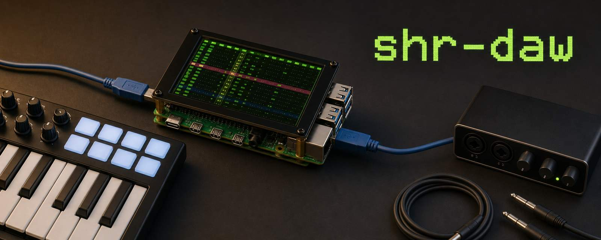
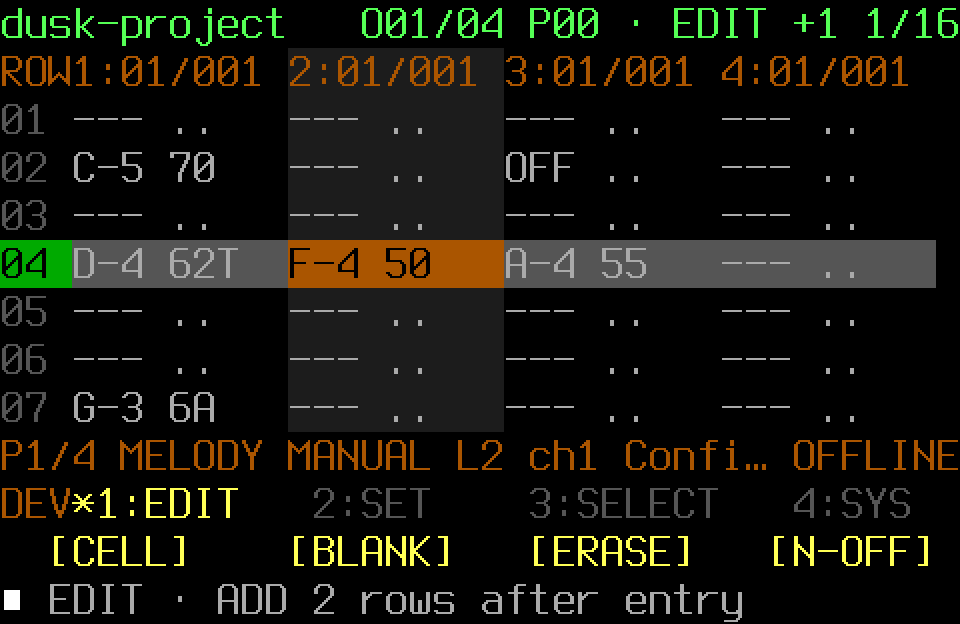
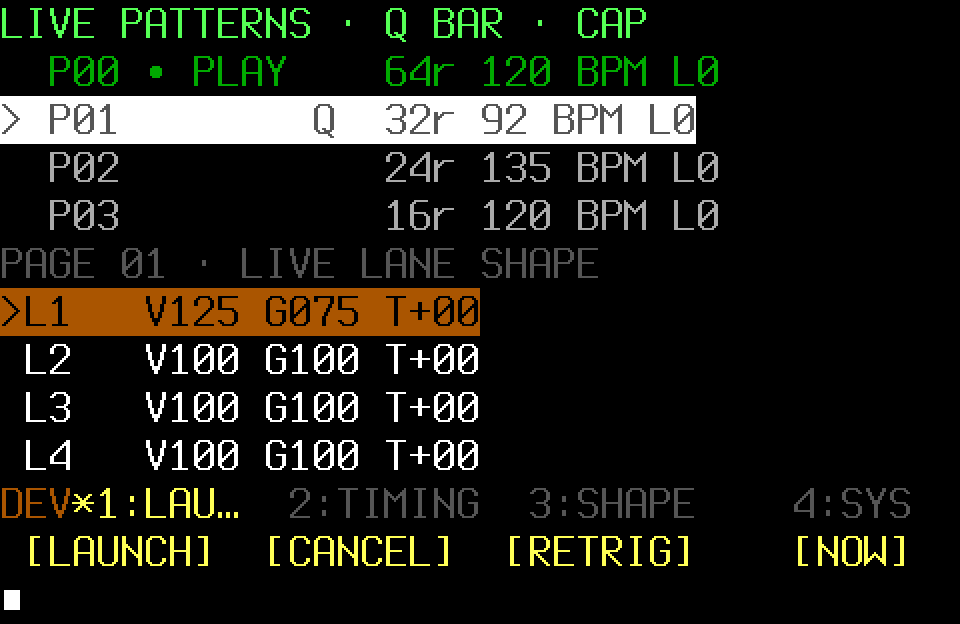

Raspberry Pi terminal groovebox
SHR-DAW
A compact Raspberry Pi music workstation written in Rust.
Experimental · compatibility 0.4.840×13 terminal TUI · FT2-style tracker · JACK recording
This is experimental software; hands-on physical acceptance is still in progress. Try it and report what you find.

How it connects
One small centre for the whole setup

Open the physical connection guide for exact paths and smaller setups.
What it does
Make, arrange, perform, and record on a small screen
The 40×13 interface
A closer look


Where to begin
Pick what you want to do
These guides cover first launch, everyday music making, the complete instrument system, installation, and detailed routing.
Install and run
Try SHR-DAW
git clone --depth 1 https://github.com/PaolaShultz/shr-daw.git && cd shr-daw && ./scripts/install.shAfter the setup wizard finishes:
Before using audio: SHR-DAW is experimental software, not a production release. Not every feature has completed hands-on physical testing. Back up Projects and user data, and begin audio testing at a low monitoring level.
Detailed guides
The manual, when you need it
Choose a subject and open only that guide. Measurements, maintainer records, and future plans stay in a separate archive below.
Current behaviour
Start and use
Musician-facing workflows, screens, performance tools, and physical connections.
First runConfigure hardware and open SHR-DAW.
You can start with a Raspberry Pi and a terminal. A MIDI keyboard, control surface, audio interface, mixer, and dedicated display are optional.
Configure and start#
After installation, run:
shr-setup
shr doctor
shr
shr-setup keeps controller input and musical keyboard input as separate
choices. It also asks about note spelling, MIDI output, JACK Audio Connection
Kit (JACK) playback, audio capture, and optional CPU tuning. The wizard seeds
four starter loops and ten cleared demo Projects. You may also choose a private
MusicRadar loop download after reading its redistribution limit.
Run setup again when a controller, interface, sound card, or port layout changes. Remembered hardware choices are not replaced just because a device is temporarily disconnected. If the preferred playback pair is missing, SHR tries the configured fallbacks in order and reports which one it used.
shr doctor is a strict check of the complete setup. Missing JACK therefore
produces a failing result even though the preset browser and external MIDI
tracker can still open. Software instruments, WAV loops, effects, and audio
recording require JACK. SHR-DAW never starts or restarts JACK.
Doctor groups its report into CORE / EDITOR, MIDI, JACK AUDIO, and
AUDIO TUNING. It does not change policy or services. Each problem includes
the relevant inspection or recovery command. The optional CPU policy and its
rollback are documented in Raspberry Pi audio-system
optimization.
The effects graph starts disabled. Software instruments, SHR Drums, and loops first use their configured direct routes. Read How SHR-DAW works before enabling the final bus or Input software monitoring.
Play something#
- Use the computer keyboard to navigate and enter notes. The tracker note keys
are
Z S X D C V G B H N J M. - A configured MIDI keyboard adds velocity, chords, and live recording. Its musical messages bypass controller commands.
- A configured control surface provides the four-page menus, main encoder, pads, and mapped synth controls.
- In the FastTracker II (FT2)-style tracker, open FILES to load a seeded
demo Project. Its portable
AUTOroutes use the destinations and channels configured on this machine. - Open LIVE to perform existing Patterns without changing the saved Arrangement. Open LOOP for the selected Pattern's four WAV slots.
? and F1 open contextual Help. The Using SHR-DAW guide
continues from here without repeating every screen action.
Terminal size#
The native layout is 40 columns by 13 rows. SHR adapts to the terminal cell size and reports when the window is too small. The installer does not change the console font, display resolution, desktop, window borders, scaling, or fullscreen mode.
Pixel resolution alone does not determine the available row and column count. Adjust your terminal settings if fewer than 40 columns or 13 rows fit.
Run a development checkout#
For a repository-local setup:
cargo build --locked --release
./scripts/setup-local.sh
./scripts/local.sh
The local helpers keep configuration, logs, Projects, Ideas, recordings,
downloads, loops, and private presets below ignored $SHSYNTH_USER_DIR/. They preserve
existing private files and do not install packages or start JACK.
setup-local.sh configures the checkout. local.sh launches its
target/release/shr, identified as REL in the TUI. Set SHSYNTH_USER_DIR to
use another private root, or explicitly set SHSYNTH_BIN=target/debug/shr for
a development launch.
Unusual hardware or recovery#
The installer and setup wizard are the normal path. For an uncommon controller, complex route, or recovery problem, follow the Codex-assisted setup brief. It keeps hardware inspection, audible tests, and system changes behind explicit permission.
After installing and signing in to Codex CLI, start that brief from the checkout:
codex -C . "$(cat docs/CODEX_ASSISTED_SETUP.md)"
Known USB controllers are matched during setup. Unknown devices can use the non-audible MIDI learner; learned mappings remain private. See Automatic controller setup and MIDI learn.
For a larger rig, continue with Physical connections.
Using SHR-DAWMusical purpose, the realistic idea-to-sketch workflow, non-goals, instruments, effects, recording, and commands.
SHR-DAW is a Raspberry Pi groovebox and song-sketching workstation built around a 40×13 terminal. It supports a control surface, MIDI keyboards, the computer keyboard, and terminal pointer input. It is meant for quick musical work, not as a desktop production DAW.
From an idea to a sketch#
- Start a Project or load one from FILES.
- Choose a software instrument or a routed external MIDI instrument.
- Play freely, record a MIDI Idea, enter tracker notes, add drums, or attach Pattern-owned WAV loops.
- Build an Arrangement or perform the existing Patterns through LIVE.
- Add only the effects and final processing the sketch needs.
- Record the final stereo performance or synchronized raw stems.
- Share the resulting files with tools outside SHR-DAW.
The intended idea-to-sketch target is roughly 10 to 15 minutes. That is a design goal, not a measured guarantee or a promise of a finished production.
Boundaries#
SHR-DAW has no desktop timeline, plugin windows, waveform editor, free-wiring matrix, unlimited mixer, offline song renderer, upload service, or messaging system. It does not replace Ardour, Ableton Live, Reaper, Bitwig, or another full production workstation.
The program helps you play, sequence, arrange, shape, and record your own choices. Proposed musical assistants remain in Future improvements; they are not current features.
Terms used in the guides#
- FT2 means the vertical Pattern editor inspired by FastTracker II. SHR-DAW is not an FT2 clone and does not read XM files.
- MTR is the on-screen performance meter and final-bus control surface.
- JACK is the JACK Audio Connection Kit, the low-latency audio server and connection graph. ALSA is the Advanced Linux Sound Architecture layer used for Linux MIDI and audio devices.
- A MIDI CC is a Control Change message. PPQN means pulses per quarter note and describes MIDI clock resolution.
- LUFS measures perceived loudness relative to full scale. dBTP means decibels true peak.
- XDG directories are the standard Linux locations used for private configuration and data.
- Owned means SHR-DAW started or created something and may safely change or stop it. An exact route is one saved endpoint that SHR never guesses.
Instruments and Playback#
The installed SHR-DAW sound system presents five melodic instrument families in Presets:
- synthv1 presets;
- Yoshimi
.xizbanks; - FluidSynth
.sf2and.sf3SoundFonts; - Moj Sint
.mojsintModel D, Six-Op PM, Strange Oscillator, Swarm Machine, and Bass Matrix presets; - SHR Sampler
.shrinstpackages.
Browsing is silent. LOAD is the only managed start or replacement action.
Only one SHR-managed melodic engine runs at a time. The loaded instrument
continues when you leave Presets or Playback and stops on replacement, Panic,
shutdown, or an FT2 route that needs a different backend.
Playback shows held notes, decimal MIDI strike velocity, chord names, a
keyboard-state strip when space permits, and 12 controls for the active
backend. SAVE offers Overwrite, Save New, and Cancel for synthv1 and Moj Sint.
Factory and system sounds stay read-only; saving them creates the next private
User NNN sound for that engine and Moj model. The saved values become the
current RESET baseline without restarting the engine. The new sound appears
immediately in Presets and under its Moj model in FT2 ROUTE. When the running
sound belongs to an FT2 route, only that active owner is retargeted; saving a
standalone Player sound never rewrites unrelated Project routes. Cancel or a
failed save preserves list/cursor state, values, held notes, and the live
session. Unsupported engines remain visibly read-only. Idea capture and saving
remain on the Ideas screen. SOUNDS returns to Presets and its visible LOAD.
Playback's PLAY page also owns the optional external-sync controller
arpeggiator. PLAY sends Start even when no MIDI take exists, RECORD starts
the same clock before capture, STOP ends it without unloading the instrument,
and TAP changes tempo without silently starting transport.
Moj Sint keeps its own preset format and controls. Its 21 authored starts form six editable model families. SHR Sampler packages are read-only and use their own strict format; the installed project-authored factory package is a neutral first-load sound. SHR Drums is separate from the managed melodic engine and runs in process. See SHR-DAW instruments and drums for the complete sound-system guide: Moj controls and saves, Sampler validation, Drums kits, routing, ownership, recovery, and public provenance.
Explore with N00B#
Playback N00B filters live melodic input to a selected root plus major or natural-minor scale. Allowed notes keep their pitch; other notes stay silent. The screen still shows the normal notes, chords, velocities, keyboard, and controls.
FT2 uses the same scale on melodic pages in Play, Record, and Edit. Record and Edit write only accepted notes. Moving to a percussion page turns the filter off. The Project stores its tonic and scale mode; SHR does not infer a key from audio or a finished Arrangement.
For a silent theory view of that stored key, open FT2 TOOLS, select the PAGE controller page, and choose HARMONY. It lists the neighbouring fifths, relative and parallel keys, and seven diatonic triads without changing the Project or playing anything. Back or Exit returns to the exact FT2 context.
For offline Pattern generation, open FT2 TOOLS, select PAGE, choose HISTORY, switch to RHYTHM, and open GEN. Euclidean triggers, accumulator progressions, seeded mutation, controlled drum fills, cursor-row arpeggios, Project-key triads, and bounded diatonic harmony voices remain a visible draft while you adjust or inspect them. ARPEGGIO exposes order, octaves, row rate, gate, and repetitions; CHORD exposes degree, inversion, close/open voicing, three-lane placement, rate, and repetitions; HARMONIZER copies a selected lane span to another lane as a third/fifth above/below and makes out-of-scale refusal or skipping explicit. APPLY commits the draft to the current Pattern as one undoable edit, CLONE appends an independent Pattern and Arrangement step, and CANCEL writes nothing. The result is ordinary editable FT2 cells; playback does not regenerate it.
The practical loop is simple:
press -> hear -> see -> change -> compare -> ask why
Workspaces#
Home opens Software Synths, FT2, Recorder, Performance, MIDI Learn, Routing, Effects, Ideas, and Help. The main encoder browses; press it to select. Back returns one level. Controller MIDI never quits the application.
Shift plus the main rotary changes a second reversible browse axis only where one exists, such as Preset engine, FT2 column, Live lane, Loop slot, drum genre, FX target, or MASTER STRIP section. It stays inert where an accidental turn could trigger transport, confirmation, or a destructive action.
Ordinary overlays preserve their caller and discard unconfirmed drafts. FT2 ROUTE is the live-audition exception: valid active-field choices change the Project and live route at once, Apply keeps them, and Cancel restores the route snapshot from when the overlay opened.
Use these focused guides for exact actions:
- Screen and menu manual for every screen and controller page;
- Tracker guide for FT2 editing, routing, Patterns, Arrangement, drums, loops, and files;
- Controller interface for the complete physical action contract;
- Configuration and routing for machine settings and persisted route fields.
Live Patterns, Loop Mix, and Ideas#
Live Patterns lets you browse without launching, then queue activation at a Pattern or bar boundary. It can also capture successful activations for an explicit Append or Replace confirmation. Its lane mute, velocity, gate, and transpose controls are temporary and do not rewrite note cells.
Each FT2 Pattern owns up to four private WAV loop references. Loop Mix browsing does not launch audio. Arrangement and Live boundaries switch the MIDI and WAV owners together. A bad slot is isolated, and SHR does not time-stretch files.
Ideas preserve free-timed MIDI. A synthv1 or Moj Sint Idea includes its private preset snapshot; other backends keep their instrument reference. SHR Sampler stores the package's stable ID and configured path without copying its sample data. Loading an Idea restores its sound before playback.
See Live performance for boundary timing, capture, failure behavior, and realtime limits.
Automation, click, and MIDI export#
FT2 AUTO records compact Pattern-owned control curves independently from notes and cell commands. Arm only the lane you mean to write. Continuous controls ramp to the next point; switches, choices, modes, divisions, and bypass step at their point. Play Here and loops chase the effective value, and relative turns continue from the effective automated value when automation takes or releases ownership.
Keep CLICK on when recording from stop: SHR-DAW accents beat one, displays
one bar of 4 3 2 1 → REC, and begins capture at row zero. Punching into a
playing Arrangement starts immediately. The click is internal audio and never
reaches an instrument or external MIDI output.
FILES EXPORT analyses, then confirms, a non-overwriting format-1 MIDI file for the whole Arrangement. Tempo, meter, parts, setup, notes/gates, and portable CC automation use the same musical-tick interpretation as playback. Loop audio and SHR-only effect automation are counted as omissions.
Effects and final sound#
Effects contains bounded source, aux, drums, and master processing. The Project owns rack order, parameters, routing, the fixed DRUMS Reverb-then-Delay rack, and the fixed MASTER STRIP.
With the optional graph disabled, ordinary source, aux, and master rack edits change Project data but do not process direct audio. The DRUMS rack still processes in-process drums on their direct path. With the graph active, stop transport and recording before changing graph structure. MASTER STRIP value changes can be auditioned during playback but are refused during final recording.
The exact placement and safety rules live in How SHR-DAW works, Audio graph and DSP contract, and Fixed stereo MASTER STRIP.
Recording and meters#
Recorder writes armed exact JACK sources as synchronized mono 24-bit WAV stems with one timeline and manifest. LEVELS opens the fixed 18-channel overview. A missing assigned source blocks take start until it is reassigned or disarmed. Interrupted recognized takes remain available for bounded recovery.
Performance owns the optional final bus and one 24-bit stereo recording of the
same post-strip samples sent to playback. Input software monitoring starts off
and uses one MON ON or MON OFF action. Enable it only after checking for
direct hardware monitoring, or the input may be heard twice.
All horizontal meters use circular ● LEDs. Green is the safe range; yellow
and red appear only at their active thresholds. A brighter circle holds the
peak.
Read Synchronized multitrack recording and Final stereo performance bus before relying on a recording or monitoring setup.
Command line#
Common inspection and setup commands are:
shr menu
shr list
shr status
shr doctor
shr start "synthv1:Velvet Tines"
shr stop
shr log 80
shr ideas list
shr pads auto [PORT_MATCH]
shr pads learn [PORT_MATCH]
shr config paths
shr config init [--force]
shr config init preserves existing files unless --force is given.
shr casio diagnostic is a legacy-named, non-transmitting route report.
Command-line Idea playback restores the Idea's instrument and stops on Ctrl+C.
The complete command inventory is in shr --help. Maintenance stress commands
belong to Maintainer helper scripts.
effects-checkpoint is different: it starts a prepared JACK graph and synth,
sends a low-gain note, and measures a bounded run. Run it only with
explicit authorization. Its setup contract is in
Configuration and routing.
SHR-DAW instruments and drumsOne installed sound system with melodic instruments, Moj models and saves, Sampler, Drums kits, routing, ownership, and recovery.
The installed SHR-DAW package is one music workstation with a complete sound system: five melodic instrument families, the SHR Drums instrument and kits, one controller workflow, one tracker, one effects graph, and one final audio bus. Moj Sint, SHR Sampler, and SHR Drums arrive and work together as parts of SHR-DAW. Their names identify kinds of sound available inside the workstation.
This guide is the musician-facing home for choosing, loading, playing, saving, routing, and recovering SHR-DAW sounds. Machine paths and component version checks remain in Configuration and routing; process and audio ownership remain in How SHR-DAW works.
The SHR-DAW sound system#
| Instrument family | Sounds inside SHR-DAW | Musical role | Editing and saving |
|---|---|---|---|
| synthv1 | .synthv1 sounds |
Melodic synth | Twelve mapped controls; private Overwrite or Save New |
| Yoshimi | .xiz sounds and banks |
Melodic synth | Read-only catalog and playback |
| FluidSynth | .sf2 / .sf3 SoundFonts |
Multitimbral melodic or General MIDI drums | Bank/program selection; SoundFonts remain read-only |
| Moj Sint | .mojsint Model D, Six-Op PM, Strange Oscillator, Swarm Machine, Bass Matrix, and Dual Filter sounds |
Melodic synth | Model-specific controls; Dual Filter uses 15 controls plus a reversible core click; private Overwrite or Save New |
| SHR Sampler | .shrinst instruments |
Melodic sample instrument | Strict preloaded instruments; read-only in SHR |
| SHR Drums | .shrkit kits |
Four-lane drum instrument | Project kit, tuning, drum rack, and tracker notes |
All six families participate in the same Project, routes, effects, transport, recording, controller, and final-bus workflows. At the implementation boundary, only one SHR-managed melodic host process runs at a time. Loading a new synthv1, Yoshimi, FluidSynth, Moj Sint, or SHR Sampler sound safely replaces or reuses that owner. FluidSynth may hold several compatible channel parts inside its one process. SHR Drums renders in process and can play beside the selected melodic instrument. This arrangement keeps drum audio independent inside the same installation and workflow.
Browse, load, and switch safely#
Open Software Synths from Home. Turn to browse sounds in the selected
catalog. Shift-turn the main encoder, use [/], or click the two halves of
the Presets heading to move through all five melodic instrument families.
Browsing is silent. LOAD is the deliberate start or replacement boundary.
Loading follows one ownership transaction:
- validate the selected sound and its engine before disturbing the current one;
- send All Notes Off and stop only the melodic process SHR owns when a replacement is required;
- start or reuse the selected backend;
- resolve its exact MIDI input and stereo JACK outputs; and
- publish the new sound only after the route is ready.
A failed replacement leaves no second managed engine layered. When possible, SHR makes one bounded attempt to restore the previous owned session and shows the fault. PANIC, shutdown, or another explicit replacement releases notes and stops only owned work; it never terminates a matching process opened by the musician.
Presets and Playback share the loaded sound. Leaving either screen does not stop it. A new, empty, unsaved FT2 Project can adopt that exact Player sound on its first software page without restarting the host. A saved or already edited Project keeps its stored routes.
Moj Sint sounds#
Moj Sint is SHR-DAW's editable in-house synthesis family. Its 21 cleared factory starts are grouped by synthesis model:
- Model D: Full Bass, Full Lead, Full Filter Articulation, Matched Idealized, Matched Linear Mixer, Matched Linear Ladder, and Matched No Drift or Feedback;
- Six-Op PM: Bell Metal, Fractured Metal, Electric Piano Mallet, Glass Wood, Brass Bass, and Mechanical Stab;
- Strange Oscillator: one unified sound whose TYPE control selects triangle, saw, pulse, modulated resonator, deformed loop, stochastic breakpoints, scanned string, or register machine;
- Swarm Machine: the typed modular graph's warm, wide nine-oscillator pad;
- Bass Matrix: one transformable start with a phase-locked sub/body and a separate punch, growl, metal, drive, filter, and unstable character path;
- Dual Filter: Industrial Lead, Serial Bass, Counter Growl, Envelope Punch, and Topology Motion.
Presets groups the catalog in the fixed model order Model D, Six-Op PM, Strange
Oscillator, Swarm Machine, Bass Matrix, and Dual Filter. Visible identities use
one model letter and a two-digit number local to that model: D01, P01,
O01, S01, B01, and F01. Opening or switching to Moj Sint starts at
D01 Full Bass; letter-jump follows those visible model letters. In FT2
ROUTE, choosing Moj Sint adds an explicit ENGINE → MODEL → PATCH
hierarchy. Changing the model selects that model's first available patch, and
patch browsing never crosses the selected model boundary. Apply keeps the
complete live-auditioned route; Cancel restores its opening snapshot.
Playback and FT2 PARAM use the same 12 physical control positions, with labels chosen by the loaded model:
| Positions | Model D | Six-Op PM | Strange Oscillator | Swarm Machine | Bass Matrix |
|---|---|---|---|---|---|
| 1–4 | Evolve, Shape, Color, Edge | Index, Ratio, Feedback, Op Decay | Type, Form, Warp, Couple | Mass, Detune, Spread, Shape | Body, Growl, Metal, Punch |
| 5 | Volume | Volume | Volume | Volume | Volume |
| 6–8 | Motion, Depth, Space | Key Scale, Velocity, Motion | Chaos, Color, Space | Motion, Color, Space | Drive, Filter, Unstable |
| 9–12 | Attack, Decay, Sustain, Release | Attack, Decay, Sustain, Release | Attack, Decay, Sustain, Release | Attack, Decay, Sustain, Release | Attack, Decay, Sustain, Release |
Moj timbre and ADSR retain their established CCs. Physical position 5 uses MIDI CC7 as the shared instrument-volume contract. Position 5 is a mapped direction-only rotary. Its smoothed gain runs from silence to the preset's normal maximum and does not enter timbre DSP. synthv1 uses its smoothed DCA volume at the same position; Yoshimi, FluidSynth, and SHR Sampler receive standard channel volume. Those read-only optional backends do not gain an SHR preset-save format: FT2 automation and Project MIDI state own their durable volume. After Load, Reset, Project/Idea restore, automation ownership changes, or another value-setting transition, physical turns continue from the effective value by signed relative steps, preventing jumps after a load or reset.
RESET restores the loaded model values without restarting the synth. Dual
Filter also restores its saved INDUSTRIAL or COUNTER core.
SAVE offers Overwrite, Save New, and Cancel. Factory/system sounds are
read-only, so Overwrite redirects to the next private User NNN sound. All
six Moj models keep separate private namespaces. A successful save becomes the
current sound and Reset baseline without releasing held notes; a failure keeps
the live sound and any previous file intact. A Moj Sint Idea carries its
private preset snapshot, while an FT2 route stores the model-qualified stable
sound identity.
SHR Sampler instruments#
SHR Sampler is the sample-instrument family inside SHR-DAW. It plays strict
.shrinst packages, and the installation includes one cleared,
project-authored neutral factory instrument. Packages are read-only catalog
entries. SHR treats each package as a complete instrument.
LOAD first checks the installed host version and runs the package's bounded offline validation. Only a compatible, valid package may replace the current melodic owner. The live host must then publish its exact configured MIDI input and stereo JACK outputs. A missing executable or package, incompatible version, malformed manifest, validation timeout, missing ports, startup failure, or unexpected exit becomes a visible fault. The previous owned session is not discarded until validation succeeds, and failed activation cannot leave a second melodic process running.
Playback provides notes, held-note/velocity feedback, N00B filtering, take capture, effects access, and transport without inventing unsupported Sampler macros. Sound saving is visibly unavailable. FT2 stores the package's stable identity in its software route. Ideas store that identity and configured public path; they do not copy sample content into the private Idea directory.
SHR Drums kits#
SHR Drums is SHR-DAW's kit-based drum instrument. Its bounded engine runs inside SHR-DAW, with its own voices alongside the current melodic instrument. A new Project's four-lane Drums page uses the installed Big Rock kit when available; an explicit external or FluidSynth General MIDI drum route remains possible.
The public installation contains four cleared kits:
- Acid, an original fully modelled CC0 kit;
- Electronic House, original modelled voices plus two deterministic CC0 Moj Sint one-shot exports;
- Big Rock, a curated CC BY 4.0 acoustic kit; and
- Experimental Noise, a curated CC BY 4.0 experimental kit.
Open FT2 ROUTE on a Drums page and choose TARGET → SHR Drums → KIT.
Kit changes are live-auditioned inside the same Apply/Cancel transaction as
other routes. A successful change resets tuning that belonged to the previous
kit while keeping the Project key and drum effects. A failed load restores the
previous kit and keeps the route editor open with the error visible.
The Project stores the selected kit, OFF, FOLLOW KEY, or MANUAL per-piece
tuning, and the fixed Reverb-then-Delay drum rack. Follow Key uses the Project
tonic. The Drum page's four columns remain independent tracker lanes, and
loading a reusable drum pattern copies note cells without replacing the saved
kit or route. Immediate chokes and note cleanup apply when a drum target or kit
changes.
With the owned audio graph active, SHR Drums has its own final-bus source
level, mute, meter, and DRUMS effect target before the master rack and fixed
master strip. Without that graph, its owned stereo output follows the direct
JACK playback path. The metronome remains a separate final-bus sound and never
borrows a drum voice.
Projects, Ideas, and automation#
| Context | Moj Sint | SHR Sampler | SHR Drums |
|---|---|---|---|
| Player | Load, edit, reset, save | Load and play read-only package | FT2 Drums page |
| Idea | MIDI plus private preset snapshot | MIDI plus stable package reference | Tracker workflow, not an Idea sound |
| FT2 route | Stable model and patch | Stable package identity | Stable kit or explicit MIDI/FluidSynth drum target |
| Automation | Seven timbre controls, shared volume, and ADSR | Standard channel volume plus note performance | Notes use drum lanes; Project drum effects use stable effect automation |
| Project audio | Managed stereo source | Managed stereo source | Independent in-process stereo source |
Project loading refuses unknown newer schemas rather than rewriting them. Missing sounds and kits remain named and visibly unavailable; SHR never swaps in a similarly named backend or route. Starting, stopping, route loss, live switching, and reload retain the same note-cleanup and ownership boundaries. External USB MIDI sync changes only the steady transport owner: incoming Start/Stop still enter these same managed-instrument, drum, held-note, Loop, and cleanup paths, and no instrument route receives forwarded clock. See Priority 7 external transport sync acceptance.
Where files and provenance live#
Private user sounds, Projects, Ideas, and runtime state stay below the normal
XDG data roots or ignored $SHSYNTH_USER_DIR/. Public factory material is restricted to
the repository allowlists. SHR-DAW installs and operates the system as one
workstation, while its component source and sound formats remain public:
- Moj Sint source and preset format;
- SHR Sampler source and instrument format;
- SHR Drums source, kit format, and provenance.
Exact installed versions and commands are in Installation, machine settings are in Configuration and routing, and redistribution evidence is in Third-party software and sounds.
For step-by-step screens, continue with the screen and menu manual. For Pattern pages, route fields, recording, and Arrangement behavior, use the tracker guide.
SHR-DAW HelpThe compact help text shown by ? or F1.
Controller basics Presets and playback Effects graph 18-channel input levels Performance meters MIDI ideas FT2-style tracker Pages and hardware MIDI Live performance Loops and audio Trouble spots
Controller basics#
The main encoder moves one visible row or value at a time except on the FT2 grid, where Play/REC turns select columns and Edit turns move rows. Press it to select the highlighted row, confirm a field, or follow a help link.
Home centers every label in one equal-width bar. MIDI Learn, Routing, and
Effects are separate destinations. Routing reports current controller,
performance-input, MIDI-output,
clock, and audio connections and edits them transactionally. Browsing is
read-only; press to edit a detached field, press again to validate/save, or
Back to cancel. Use shr-setup for initial machine setup.
If a configured controller is offline, has no reviewed profile, or has not
learned encoder turn and click, Home highlights MIDI Learn and explains why.
Keyboard Up/Down/Enter still work. Optional command buttons may be skipped once
the learned encoder can turn and click, but only through explicit S or
keyboard-arrow input; master-rotary traffic is ignored during Learn. The explanation uses Home's single
bottom line so the native menu keeps its empty first row. Home does not learn
or send MIDI by itself; Learn keeps selected-controller messages isolated until
an explicit save or cancel. Its optional encoder-Shift step learns two ordinary
gestures: Shift plus a left turn, release Shift, Shift plus a right turn on the
same CC, then release Shift again. This captures either the
ordinary rotary CC or a different CC emitted only while Shift is held. Separate
performance inputs continue to bypass controller interpretation.
The Shifted CC may encode left/right opposite to the ordinary rotary; Learn
discovers that from the two physical gestures instead of assuming they match.
Learn itself uses exactly two rows total. The first is the complete required
gesture, such as SHIFT + TURN ROTARY 1 LEFT; the second is its immediate
state or retry. There is no repeated MIDI LEARN title or status footer.
The controller menu has four pages. Page 1 is OPS. On child screens, page 4 item 4 is EXIT and returns one level. Empty buttons are hidden and silent.
Home and MIDI Learn are the screens without the shared working-screen status
row. Learn owns only its two centered action rows. The native fullscreen EQ
owns all thirteen rows. The native 18-channel Levels
screen keeps the shared final row but omits the two controller rows; every
other working screen places those rows immediately above status. The first status
cell is steady green > for play, steady white ■ for stop, steady white ‖
for pause, or red ● for record; record alone pulses between red and bright
red without hiding the circle.
Four-button controllers use encoder press to enter page-select mode. Turn to choose a menu page, then press again to return the encoder to screen control. In Help, use OPS OPEN to follow the highlighted link. In target/channel editors, use OPS CONFIRM; SYS EXIT cancels the field.
Some navigation actions open a master overlay instead of replacing the current workspace. The workspace remains visible around a 38×11 border; its usable inside is 36×9 on a 40×13 display. While the overlay is open, its bottom border shows only the highlighted launcher near the same physical position; the final row remains the shared status row. Turn the master rotary or use Up/Down, then click or press Enter. Press that same menu item again, or use Back/Esc, to close. The controller strip has no separate Back item while an overlay is open. Back first cancels an active field, then cancels any unconfirmed draft and closes the overlay.
FT2 Tools PAGE item 4 opens HISTORY. Page 1 is UNDO, REDO, SNAP, RECALL; unavailable actions are dim. Ctrl+Z is Undo, while Ctrl+Y and Ctrl+Shift+Z are Redo. SNAP is one non-dirty runtime Pattern capture and RECALL is undoable. History covers committed edits inside one existing Pattern, not Project or Arrangement structure, global mix/effects, runtime launch state, private files, or an editor draft before Apply. Restore currently requires stopped FT2 transport; Play-time attempts keep history unchanged and ask you to stop. Undo during REC finishes the take and note cleanup first.
HISTORY page 2 opens FEEL and GROOVE. FEEL sets Pattern EIGHTH/SIXTEENTH swing from straight 50% through 75%. GROOVE applies one deterministic preset to the selected cell, lane, page, or Pattern. Both remain drafts until Apply; Cancel and unchanged Apply do not enter history.
CELL EDIT TIME is independent of the one-command field. It moves a cell up to
half a row early or late in 1/96-row steps; Reset returns ON GRID. The tracker
grid marks early with <, late with >, and on-grid with a blank. Pattern
swing and cell timing move musical events only; cursor rows, Loop timing, and
MIDI clock stay steady. REC CAPTURE offers runtime-only REC FEEL; quantized REC
remains the default.
CELL EDIT's rotary list continues after TIME with CHANCE, CONDITION, COND A,
and COND B. Chance is deterministic 1–100%. Conditions are FIRST, LAST/N,
A:B, PRE, and FILL; ALWAYS is the default. LAST/N is the final pass in an
N-pass cycle, PRE follows the preceding trigger in the same lane/pass, and
FILL uses the runtime latch. Normal FT2 SOUND FILL or keyboard f changes
that latch at the next cycle boundary. Stop/new Play clears it. CLICK remains
under FT2 Tools SYS.
Presets and playback#
Presets chooses the instrument engine and sound. Loading a sound starts or reuses only the engine owned by SHR-DAW; unrelated synth processes are left alone. Presets and Playback share that owned sound, and leaving those screens keeps it running. Global panic, shutdown, replacement, or an explicit different FT2 software route ends it safely. A genuinely new, empty, unsaved default FT2 Project adopts the current engine/instrument on page 1 without restarting it; without a Player instrument, FT2 loads the first available synthv1 preset. Saved or explicitly changed Projects keep their routes.
Turn the main rotary to browse sounds. Hold the configured encoder Shift while
turning to change engine catalog in either direction; [/] and the two
heading halves remain available. Catalog changes are silent. Only LOAD starts
or replaces the managed preset.
Synthv1 controls add or subtract from SHR's current value immediately. The direction-only rotaries have no physical position to catch and cannot jump to a stale knob value.
Moj Sint uses the same direction-only behavior with seven model-specific timbre
controls, Volume at physical position 5, and ADSR. RESET restores the loaded
.mojsint values in place without restarting the host. Those controls never
use synthv1 XML names or parameter indices.
Its 21 numbered factory starts contain seven Model D, six Six-Op PM, one each
for Strange Oscillator, Swarm Machine, and Bass Matrix, and five Dual Filter
starts. Player and FT2 PARAM always use a 3×5 surface. Synthv1 and the five
older Moj models put their twelve synth controls first and Project AUX 1/2/3
sends last; NO FX means that aux needs an effect before the send can move.
With the owned graph active, these send levels ramp live without rebuilding the
graph; recording refuses the change. With it disabled they update Project data.
Dual Filter uses all fifteen positions for synthesis. Moj routes remain inside their selected
model in FT2 ROUTE.
SHR Sampler packages are read-only instruments. LOAD validates the host version
and complete .shrinst package before replacing the current sound. A failure
keeps or restores the previous owned session; SAVE stays unavailable. Ideas and
FT2 routes retain the package identity without copying its samples.
SHR Drums is selected from an FT2 Drums-page route, not Presets. It runs in process beside the one managed melodic engine. KIT changes use the live Apply/Cancel route transaction and preserve the prior kit on failure.
The dots beside synthv1 values compare the current sound to the loaded preset: green is lower, yellow is near original, red is higher.
Playback names the held chord and notes, with each note's decimal MIDI Note On
velocity (1–127) directly beneath it. Use the rows to practise gentle/strong
strikes, even chord attacks, or bass-versus-chord balance. Velocity comes from
MIDI and is not an audio volume measurement; the controller and instrument
response matter. On terminals taller than the native 40×13 layout, the spare
space adds a continuous two-row keyboard from C2 through G7 at 40 columns. A
red white-key area means its natural note is held; a red upper └ means the
following sharp is held. Major triads show maj explicitly, such as C maj.
display.note_names=german uses B/H spelling; english uses A#/B.
Playback PLAY starts a saved MIDI take or, with no take, the configured external-sync controller arpeggiator. RECORD starts the same controller clock before free-time capture. STOP ends the take/arp and sends All Notes Off without unloading the sound. TAP changes the current Pattern/controller tempo but never starts transport by itself.
Playback N00B toggles the filter on the existing Player screen. While on, its compact SCALE rotary appears below the normal controls; turn the master encoder to cycle every root plus MAJOR or natural MINOR choice. Notes in the chosen scale keep their pitch and sound normally; notes outside it stay silent. Pressing N00B again restores all chromatic notes. Changing or leaving the filter releases held notes first.
Playback and FT2 PARAM SAVE offer OVERWRITE, SAVE NEW, and CANCEL for
synthv1 and Moj Sint. Factory or system sounds are read-only, so Overwrite
clearly redirects to a new private User NNN sound. A saved sound becomes the
current RESET baseline without restarting the engine or changing its values. Use the overlay
with the controller, encoder/Enter, or mouse; keyboard O, N, and C select
its three actions while S remains Panic. Unsupported backends show SAVE
UNAVAILABLE. A storage or format failure leaves the overlay open and preserves
the current sound, controls, held notes, and existing file. Save MIDI takes from
Ideas. SOUNDS returns directly to Presets, where LOAD starts the highlighted
instrument.
Effects graph#
Playback SYS FX or FT2 Tools OPS FX opens the current Project's FX rack. In FT2, uppercase F opens it directly. Back returns to the calling Player or FT2 screen while its instrument remains active. TARGET cycles SOURCE, AUX 1, AUX 2, AUX 3, DRUMS, and MASTER. Shift-rotary selects that target in either direction while the ordinary rotary browses rack rows. Source effects change the instrument in series. Each aux makes a parallel wet copy: SEND sets how much enters it, POINT chooses before or after source effects, and RETURN sets how much comes back. Master effects change the final dry-plus-aux mix.
ADD inserts a provisional processor and opens TYPE. EDIT changes the selected processor's type; PARAM opens its named values; DEL removes it. ORDER moves the same stable instance and BYPASS fades a source or master effect toward dry. A fully bypassed aux returns silence, so it never doubles the dry source; a delay tail can be allowed to fade with new input muted. Aux effects are forced wet.
The editor selects named parameters and adjusts values in physical units. At 40×13 an EQ fills all thirteen rows: four one-cell markers move on a 50 Hz–20 kHz logarithmic axis, the side panel exposes bypass, every band, low cut, and output trim, and gains edit in 0.5 dB steps. Turn/click browses and edits; Back restores an active edit. Knobs 1–4 are logarithmic band frequencies and knobs 5–8 are their gains. One compact meter row appears for other effects when the owned graph has data. The compressor uses a dark-red 0.5–24 dB LED row whose bright-red lights show live gain reduction; bypass leaves every LED dim. Other effects show compact input/output values. Rack size and total effect count are bounded. With the graph active, stop transport and all recording before an FX change can publish a replacement plan. With the graph disabled, the same editor can design and save the Project silently, but direct playback will not process or meter it.
On the MASTER rack, ORDER STRIP opens the fixed mastering processor; MTR NAV STRIP reaches the same Project state. Its front page selects INPUT, broad TONE, linked full-band GLUE, declared harmonic COLOR, conservative M/S IMAGE, or LOUD/CEIL. DETAIL exposes only that section's values. Optional sections have smoothed BYPASS. A/B keeps the same delay and protected true-peak limiter. RESET I clears LUFS-I. Playback allows smoothed value changes, but a final recording rejects them; with no owned graph they change only the Project. In DETAIL, the ordinary rotary browses parameters and Shift-rotary changes section through the existing front-page order.
Performance meters#
Home PERFORMANCE, or keyboard m, opens the meter/mix surface. With the owned graph inactive it retains the passive CPU and legacy output view. With the graph active it shows Synth, Loop, Input, and Drums readiness and level; Synth, Loop, and Drums use MUTE while Input uses one MON ON/MON OFF action; Input stereo/dual-mono mode and the two independent dual-mono pans; master level; final sample peak and dBTP; GLUE/limiter gain reduction, correlation, LUFS-M/S/I; and final-record elapsed time, size, drop/error state, and path.
Stereo bars use circular ● LEDs for live smoothed RMS and a brighter,
decaying held peak on a −60 to 0 dBFS scale. Unlit circles are dark gray; safe
active circles use one green, while yellow and red appear only at their active
thresholds. Each channel's MAX number separately holds its highest peak
without decay. CLIP is held in red. RESET clears MAX, the bright peaks, and
CLIP. Any downward movement of the mapped synthv1 Volume control clears both
MAX values; increases,
equal values, and other controls leave them alone. Stopped, unavailable, and
new meter sessions cannot carry an old MAX forward.
FINAL OUT is available only for the active owned graph. It measures after all present optional sources and the deliberately monitored Input, master inserts, live master level, fixed strip, and linked 8× true-peak limiter. The same final buffer feeds the stereo recorder and playback. Direct playback reports this final-bus meter unavailable and stays direct.
The FT2 WAV Loop screen's LOOP OUT still measures only the rendered loop. When
the final bus is active, that loop is one of the four sources in FINAL OUT.
On MTR, SOURCE-/SOURCE+ choose a source and LEVEL-/LEVEL+ change it in 1 dB
steps. The same source-control position shows MUTE for Synth/Loop/Drums, MON ON
for an unmonitored Input, or MON OFF for a monitored Input. Keyboard m, its
controller item, and the visible pointer target invoke that same action. MON ON
activates the input-only final bus when needed; it never starts an optional
source. REC starts/stops the final stereo WAV at callback boundaries. RESET
clears presentation holds and, when the bus is unavailable, retries the same
exact remembered source mapping. Source and master changes are smoothed; there
are no solo, aux, or per-input effect controls.
With Input selected, MTR NAV DUAL/STEREO changes the input interpretation.
IN CTRL cycles LEVEL, PAN 1, and PAN 2; on either pan, the ordinary
LEVEL-/LEVEL+ positions become PAN1-/PAN1+ or PAN2-/PAN2+. Dual mono starts at
1L100 2R100, matching the original stereo image, then pans each configured
capture port independently with an equal-power law. Mode and focus use the
visible MTR controller actions; they add no dedicated computer-keyboard
shortcuts. These are live session controls, not Project data, and a fresh
launch starts in stereo.
18-channel input levels#
Audio Recorder LEVELS opens Levels. At native 40×13 all 18 inputs stay visible as three groups of six; selection never scrolls or banks them. Each nine-LED column is smoothed RMS at −48, −36, −30, −24, −18, −12, −6, −3, and −1 dBFS. Green covers −48 through −18, yellow −12 through −3, and red −1. A brighter LED in the same colour is the held sample peak.
Turn the encoder or use Left/Right or j/k to select a channel. Click/Enter
or Space toggles its arm. PageUp/PageDown shows TAKE, CHANNEL, and SYS commands
in the right half; r records, s stops, x resets holds, u returns to
setup, and uppercase S panics. The shared final row remains the only status
row. M, F, and held C distinguish missing, faulted, and clipped channels
from ordinary silence. This is a recording overview, not the MTR final-bus
mixer, Audio Recorder setup, route detail, audible monitor, or mixer strip.
MIDI ideas#
Ideas record musical MIDI while a sound is loaded. Repeated RECORD stops the capture; PLAY plays it back through the loaded engine; SAVE stores it for later.
Recording timestamps come from the MIDI callback, and PLAY playback runs independently of screen redraws. Stopping a take cancels it promptly and sends all-notes-off cleanup.
Loading an idea can replace the current sound. If a sound is already active, choose LOAD twice to confirm. Saved synthv1 control values are restored after the sound loads, and relative turns continue from those restored values.
Ideas are MIDI, not audio. Use the audio recorder when you need a WAV of the actual JACK input.
FT2-style tracker#
SHR-DAW uses FT2-style Pattern screens for MIDI sequencing; it is not a sample-based FastTracker II implementation. PLAY starts at the current Pattern/Arrangement location, REWIND returns to the beginning, and STOP stops only the tracker transport. Turn the physical main encoder to move rows. Hold the configured encoder Shift while turning to select columns across page boundaries. The shaded selected column does not move the row, playhead, Arrangement Step, or transport. During REC, Shift-turns made while recorded notes are held are ignored until all of those notes receive Note Off.
FT2 SELECT contains PAGE, PATTERN, SONG, and ROUTE. PAGE lists only
the current Pattern's pages, preserves the selected column, and can open the
full Tracks manager. PATTERN selects an existing Pattern or opens Pattern/Project tools.
SONG selects an Arrangement step and can open detailed Arrangement or Loop/
page tools. ROUTE shows the active page destination and all four columns'
channel, bank, program, profile name, and availability. Turning an active field
validates and applies the choice to the Project and live route. APPLY ROUTING
keeps the result. CANCEL or Back from the main list restores the route from
when ROUTE opened; Back during field editing restores that field first.
Normal FT2 page 3 is SOUND, with PARAM and MIX. PARAM opens a
tracker-owned view of the current software instrument without entering Player
or replacing the tracker engine. It uses the same 12 mapped labels, values,
relative-to-preset colours, held-note display, and rotary carry behavior as
Playback. Instrument choice stays in ROUTE; there is no second sound browser.
PARAM SOUND provides RESET, SAVE, N00B, and one empty position. RESET restores the existing baseline in place without restarting the engine or releasing notes. SAVE uses the normal preset-save overlay; successful save becomes the new RESET baseline and changes only the matching active FT2 route. PARAM SYS provides PANIC, an empty position, HELP, and EXIT. Unsupported backends visibly have no editable or saveable parameters. Back/Esc or EXIT returns to the exact Pattern/order/page/lane/column/row, FT2 mode, transport, route, N00B state, live values, and launching SOUND page.
MIX opens the live audio-level mixer in Play, REC, or Edit; Shift-clicking the
main encoder is the direct shortcut in every mode. It controls canonical final-
bus Synth, Drums, Loop, or configured Input owner gain, never MIDI velocity or
CC volume. Linked pages share gain/VU after either rotary moves.
With fewer than twelve configured active rotaries, turn the main encoder to choose the
active page bank. External MIDI without a configured stereo SHR return says
NO RETURN; Input monitoring remains an explicit safety choice. Back, click,
or SYS EXIT restores the exact tracker location and mode. Play/REC follow the
sounding Pattern; Edit follows the Pattern being edited.
With controller clock enabled, SHR sends the current/default tempo at 24 PPQN to one exact controller MIDI port while the app is open; tracker transport adds Start/Stop. An empty Pattern may run for a live external-sync arpeggiator; tracker pages never send notes or programs back through the clock-only route.
EDIT turns incoming notes into pattern data. Encoder press inserts a blank row.
Edit ADD opens a rotary overlay choosing any advance from 0 through 32
rows; 0 keeps the cursor on the current row. The FT2 heading shows the active
value. N-OFF writes a note-off.
TRACKS SYS ENTRY persists one entry layout per page. Manual starts at the
selected column and spreads chords across later columns. One column redirects
notes to its C1–C4 monophonic anchor without moving the cursor. Drum auto
places each simultaneous group atomically across four safe lanes without
overwriting cells. Active unrelated cymbal tails reserve their lanes; matching
retrigger/choke groups may reuse them. Unknown drum notes are short
percussion, and a full four-lane group is refused unchanged as
DRUM LANES FULL.
CELL edit is transactional. DONE SAVE commits the draft cell; EXIT cancels
and restores the original value. PANIC remains available without introducing
a second partial-commit path.
FT2 N00B toggles the Player-selected scale directly over Play, Record, and Step Edit on the selected melodic page; it does not open another screen or change the current mode. Out-of-scale keys stay silent and are never moved to another pitch. Play can use it without writing; Record and Edit write only the allowed notes. It turns off automatically on Drums, where the current mode remains active.
Edit LENGTH opens a rotary overlay choosing 1/1, 1/2, 1/4, 1/8, 1/16, 1/32, 1/64, or 1/128 for melodic notes. The independent 0–32-row ADD overlay controls where the next entry goes.
Pages and hardware MIDI#
Each tracker page has four lanes and one destination. New Patterns start with Software Synth (first synthv1 preset), MIDI (channel 1/program 1), and Drums (channel 10). Explicit columns show MIDI channel 1–16 and program 1–128. Pages can target a named synthv1 preset, configured external output, or named MIDI port. Live keyboard and musical MIDI audition whichever page is selected. Sharing a destination/channel requires the same master instrument.
Real-time REC uses the selected page's exact target. A named software-instrument page records through that one owned engine; a hardware page uses its exact MIDI output. REC refuses an offline, missing, or ambiguous target instead of silently substituting another instrument.
Exact saved targets keep their data and show OFFLINE or AMBIG when they cannot resolve; they never substitute another output or the Pattern's software synth. Portable AUTO pages resolve the current machine default instead. Reconnect an exact target and play again without rewriting the Project.
The quick FT2 ROUTE overlay keeps APPLY and CANCEL visible in its bottom
border. Every encoder change updates the live Project route immediately, so
the selected instrument or SHR Drums kit can be heard without leaving ROUTE.
APPLY keeps the live result; CANCEL restores the complete route from when the
overlay opened. Back during a field edit restores that field first, while Back
from the main list restores the whole route. Keyboard A and C match the
visible actions.
FILES NEW PRJ requires a second press, clears the current unsaved Project, and
starts the next project-001 style name. SAVE AS writes and switches to the
next non-overwriting <name>-copy-001 file. Pattern Repeat/Remove operations
remain on the Arrange screen. FILES NAME accepts a display name and safely
publishes a rename; its custom text requires the computer keyboard. LOAD and
computer-keyboard quit protect dirty Project data with Save/Discard/Cancel.
Cancel or a failed/pending Save retains the exact tracker position. FILES
PATTERN groups pattern create/clone/clear, clipboard,
and melody-only semitone/octave transpose actions. PATTERN DRUMS loads bundled
grooves into the percussion page without changing its MIDI route. FILTER picks
genre, meter, and 32/64/128-row length (24/48/96 in 3/4). Empty Patterns resize;
existing melody is protected. Saved drum patterns are separate .shdrum files;
only user saves can be deleted. The ordinary rotary browses the filtered list;
Shift-rotary changes genre through the same wrapping action as GENRE-/GENRE+.
FILES CLEAN deletes only a zero-reference Pattern and never edits Arrangement
steps.
Live performance#
FT2 TOOLS LIVE opens Live Patterns. Browse without launching. LAUNCH queues
the selected Pattern for the chosen Pattern or bar boundary; NOW is immediate,
RETRIG repeats the current Pattern, and CANCEL removes the queue. CAPTURE keeps
only successful boundary activations, then APPEND or REPLACE explicitly
confirms an Arrangement change.
SHAPE controls transient mute, velocity, gate, and transpose for the selected
page's four MIDI lanes. The values survive navigation but reset on Project
load/new. Keyboard: l/L launch/now, c cancel, r retrigger, q
quantization, and m/v/g/t lane shaping. Shift-rotary selects the lane
through the same previous/next path as Left/Right.
Loops and audio#
Loop Mix has four slots owned by the FT2 cursor's Pattern. Browsing changes the
editor, not the sounding Pattern. SLOT-/SLOT+ changes selection without launch.
Shift-rotary uses that same slot action while the ordinary rotary keeps
browsing WAV choices.
LAUNCH and STOP queue the selected slot for the next Pattern-local bar; a new
command replaces the queue and CANCEL removes it. MIX controls smoothed level
and mute. FILTER turns left for low-pass, right for high-pass, with neutral at
centre. Keyboard: p/P launch/stop, c cancel, m mute, ,/. filter,
and 0 neutral.
Every active WAV must match its Pattern's interpreted tempo and JACK's sample rate. Playback stays native speed/pitch; there is no time-stretching. Pattern changes switch MIDI and loops together and restart local phase. A failed slot is isolated while healthy loops and MIDI continue.
LIBRARY opens an overlay for the selected slot. Browsing is silent.
Controller PLAY explicitly previews the WAV; repeated PLAY, selection change,
STOP, Back, browser close, or leaving the browser stops preview. Press the
rotary/Enter to import or attach. INBOX imports; PRIVATE, CURRENT, and
SAVED attach the existing file. Failure keeps selection and FT2 context.
The browser does not delete WAVs.
LOOP OUT is the summed four-slot source after each slot's cut, phase, filter,
level, transport gate, and edge fades. It does not include the loaded synth,
effects, recorder input, hardware gain, or other JACK clients.
The audio recorder arms independently named JACK inputs and writes one 24-bit mono WAV per input in a synchronized take directory. Select a track, assign an exact discovered source, name it, then arm it; a missing remembered source stays missing and blocks recording instead of being replaced. ARM ALL includes only resolved tracks, and NONE disarms all. Every armed stem starts and stops on the same JACK callback boundary.
Each take has a session.json manifest recording the sample rate, shared frame
count, source identities, grouping, errors, and finalization state. Recognized
interrupted take directories recover conservatively on the next start. Existing
two-port capture.input configuration still appears as a linked stereo pair.
Trouble spots#
If nothing sounds, check JACK first, then the page or preset target. Setup does not start or restart JACK for you.
If controls do not move a synthv1 parameter, verify that every mapped rotary is
configured for Relative 1 or Relative 2 and run MIDI Learn again. Each
performance rotary must prove a slow left turn and then a slow right turn on
the same CC. A POSITIONAL or DIRECTION message means that role was not
saved; change the hardware mode if necessary, then press R to retry.
PANIC sends all-notes-off, stops owned playback/recording, and shuts down the managed engine. It does not kill synth processes SHR-DAW did not start.
Pad lock lets command pads play as musical notes. Turn pad lock off when menu buttons appear to do nothing.
Tracker guideFT2 editing, pages, routing, Arrangement, drums, loops, and Project files.
The FT2 screen is a vertical MIDI pattern sequencer. Its quick, top-to-bottom editing style is inspired by FastTracker II, but SHR-DAW is not an FT2 clone. It does not use FT2 code or read XM files.
This guide owns FT2 behavior and Project editing. Use the screen and menu manual for button-by-button screenshots and Configuration and routing for stored fields and machine defaults.
On the native 40×13 display, the FT2 body and its own compact page/lane footer
end above the two controller rows. Row 13 is the shared working-screen status
row: steady green > for play, steady white ■ for stop, steady white ‖ for
pause, or a ● that pulses only between red and bright red for record. The
tracker header does not repeat PLY or REC state beside the Project title.
Modes#
The normal FT2 screen has PLAY, real-time REC, and detailed EDIT modes. N00B is a separate on/off filter that can remain enabled in all three. It keeps the selected melodic page as the instrument and filters input through the Project-wide song key: a chromatic tonic plus major or natural-minor scale. The key remains saved and available to SHR Drums when N00B is off. An in-scale key keeps its original pitch; an out-of-scale key is consumed and stays silent. N00B never quantizes a rejected key to a different note. Each entry to the main FT2 screen opens controller-menu page 1, PLAY, where the PLAY and RECORD buttons are immediately available. PLAY, REC, and EDIT are mutually exclusive. Selecting one ends the other active mode first; pressing the active PLAY, REC, or EDIT control stops or leaves it.
In Play, N00B changes only what is heard. In REC and EDIT, allowed notes can be written normally while rejected notes remain silent and unwritten. Turning the filter on or off never changes Play/REC/EDIT. N00B is refused on a percussion page; moving onto Drums turns only the filter off and preserves the current mode.
The N00B button stays in the same FT2 SYS position in Play, REC, and EDIT. Each press toggles the Player-selected scale directly without opening another screen or changing existing cells. Command pads and their releases remain consumed.
The same Project key also drives the read-only HARMONY browser. Open the SONG overlay's tools row, select FT2 Tools PAGE, then choose HARMONY. It shows the two circle-of-fifths neighbours, relative and parallel keys, and all seven diatonic triads for the current major or natural-minor mode. The browser uses the configured English or German note names and the same sharp-based enharmonic spelling as SHR's existing note and chord display. It never changes the key, creates notes, starts playback, or dirties the Project. HARMONY, EXIT, Back/Esc, encoder press, or right-click closes it and restores the exact tools page and FT2 position.
FT2 Tools PAGE also opens HISTORY. Its first controller page is exactly UNDO, REDO, SNAP, and RECALL; unavailable actions are dim and inert. History retains at most 32 prior Pattern states within a shared cell/automation memory budget. It covers committed edits to the selected existing Pattern: cells and notes, a completed REC take, tempo/meter/length and SIZE tools, clear/transpose/drum load, lane/page/Pattern paste-over, confirmed page and route changes, automation, and Pattern-owned Loop Mix settings. Project replacement and saving, Pattern/Arrangement structure, global FX and mixing, private files, live launch/shaping, transport, held notes, and drafts still waiting for Apply or Cancel are not Pattern history.
Ctrl+Z performs Undo; Ctrl+Y and Ctrl+Shift+Z perform Redo. Undo/Redo
restore the Pattern and its FT2 selection context. A successful new edit after
Undo clears Redo; refused, failed, cancelled, and no-op commands do not move
history. SNAP captures one runtime Pattern/context without dirtying the
Project or changing transport. RECALL restores it as an undoable edit.
Loading, importing, or creating another Project clears both stacks and the
Snapshot; Save keeps useful history, and the existing Song-equality baseline
continues to decide SAVED versus DIRTY.
The first version restores only while FT2 transport is stopped. During Play it
shows STOP TRANSPORT · UNDO/REDO/RECALL kept and leaves the requested action
available. Undo during REC first finishes the take, releases its held-note
owners, stops safely, and then restores. Full Play-time queueing is deferred
because the scheduler has no boundary transaction that can atomically replace
an authoritative full Pattern, activate its routes and decoded Loop resources,
restore editor context, and report success before the history stacks move.
HISTORY page 2 opens the Pattern rhythm tools. FEEL is a draft editor for straight or 50–75% EIGHTH/SIXTEENTH swing; Apply is one undoable Pattern edit and Cancel is non-writing. GROOVE previews one deterministic preset over the selected cell, lane, page, or whole Pattern, with 0–100% strength. Apply stores the resulting cell timing/velocity values as one undoable edit. The neutral preset names describe only their transformation and do not claim a cultural style.
CYCLE edits the selected lane's independent playback length, rate, and direction. Length is FULL or an explicit Pattern-row count; rates are 1/4X, 1/2X, 1X, 2X, and 4X; directions are forward, reverse, pendulum, and bounded deterministic variation. Drafting does not move the FT2 cursor. Apply requires stopped transport and creates one Pattern History entry; Cancel and unchanged Apply create none. These settings change only which cells that lane reads and when—it never changes the Pattern's Arrangement duration. Exact scheduling, ownership, migration, and acceptance semantics are in Priority 4 lane playback acceptance.
GEN opens the one offline deterministic Generator for the selected Pattern, page, lane, and cursor row. Alongside Euclidean triggers, bounded accumulator progressions, seeded pitch mutation, and percussion-only controlled FILL, it offers three melodic tools. ARPEGGIO reads the existing notes across the cursor row as its explicit chord source and exposes order, upward octave count, 1/2/4/8-row rate, 25/50/75/100% gate, and complete repetition count. CHORD derives one triad from the Project tonic/major-or-natural-minor scale plus degree, inversion, close/open voicing, three consecutive lanes, row rate, and repetition count. HARMONIZER copies the selected lane over a bounded row span to another explicit lane as a diatonic third/fifth above/below, with REFUSE or SKIP for out-of-scale notes and exact Note Off/field preservation.
Every tool builds an inspectable draft first. The screen shows its explicit source/target and settings, affected rows and cells, replacements, collisions, protected cells, out-of-scale skips, and counted range/scope refusals. Its four pages remain Shape, Detail, Value/Repeat/Inspect, and Stop/Apply/Clone/Cancel. Apply requires stopped transport and is one Pattern History step; Clone uses the existing structural owner to append an independent Pattern and explicit Arrangement step without overwriting the source. Cancel, refusal, and unchanged Apply write nothing. Only ordinary Cells persist, so playback, Project save/load, reusable drum patterns, export, and preflight never invoke a hidden generator. Exact shared and harmonic semantics are in Priority 5 deterministic generative tools and Priority 6 arpeggio, chord, and harmonizer generators.
Routing SYNC can instead give steady transport time to one exact USB MIDI
input. After seven Timing Clocks establish tempo, incoming Start begins either
Arrangement step 1/row 1 or the selected Pattern/row 1 according to SYNC POS;
Stop, loss, or refusal cleans through the normal FT2 transport and requires
reacquisition plus a fresh Start. External time replaces only Pattern/Tempo-
command steady tempo: swing, groove, timing, REC FEEL results, independent
lanes, probability/conditions, retrigger, automation, Live Patterns, and Loop
Mix retain their existing owners. Stopped external REC is refused rather than
inventing an unsynchronised count-in. Continue, Song Position Pointer, clock
thru, and external partial-position starts are not available. See Priority 7
external transport sync acceptance.
On the main tracker grid, the physical main rotary always moves rows. Holding the configured encoder Shift button while turning selects the previous or next column, continuing through page boundaries from Software Synth to MIDI, Drums, and later pages. The selected column has a subtle dark full-column shade; the yellow cell cursor and row/warning emphasis remain stronger. Keyboard arrows retain row navigation in every mode. Shift-rotary column selection does not move the row, playhead, Arrangement Step, or transport, and is ignored while a recorded note is still held.
Projects, patterns, and arrangement#
An SHR-DAW Project contains FT2 Patterns and an FT2 Arrangement. An FT2 Pattern is a self-contained tracker pattern. The FT2 Arrangement is the ordered chain of Arrangement Steps; each step references a pattern ID. Repeating a step reuses the same pattern until you explicitly clone or paste a new pattern.
Each FT2 Pattern owns its own rows, meter, hundredths-BPM master tempo, pages, page targets, per-column MIDI channels/banks/programs, velocity defaults, mutes, percussion settings, note-entry mode/anchor, drum classification overrides, lane settings, and cell data. A new Project starts with one pattern whose FT2 workspace exposes four musician-facing pages:
Software Synth, a four-track page using the first available synthv1 preset;MIDI, a four-track page using the configured external output, MIDI channel 1, and program 1;Drums, a four-track page using the installed SHR Drums starter kit when available, otherwise the discovered FluidSynth General MIDI compatibility kit, with the existing GM percussion-note mapping;Loop Mix, that Pattern's four-slot decoded-WAV source.
Loop Mix is a page in the musician-facing FT2 workflow, not four empty MIDI lanes. SELECT → PAGE opens it directly, so a new Project does not require adding or naming a page before importing a WAV. The blank Pattern, unloaded loop state, loop inbox, and startup MIDI-output snapshot are initialized when SHR-DAW starts. Entering a genuinely new, empty, unsaved FT2 Project loads its page 1 software instrument immediately. If Player already owns a loaded instrument, page 1 adopts that exact instrument and the same managed engine session becomes FT2-owned without a restart. Otherwise page 1 loads the first available synthv1 preset.
Loop Mix settings are saved with their Pattern. Launch, stop, mute, queued commands, playback position, faults, and Live Pattern shaping remain runtime performance state; none of them creates MIDI lanes or Arrangement Steps.
Channels and programs are zero-based in MIDI bytes and in the in-memory model. Every musician-facing screen shows channels 1–16 and programs 1–128.
Each page keeps one MIDI target plus four independent column channel, bank, and master-program setups. It also keeps velocity, mute, percussion, optional device-profile metadata, and lane settings. A software target stores its engine and that engine's stable instrument identity in the Pattern. Moj Sint stable identities are model-qualified. When page 1 is part of a genuinely new, empty, unsaved default Project, entering FT2 may replace its factory route with the currently loaded Player engine/instrument. A loaded/saved Project or an unsaved Project with any explicit change is never retargeted, even when its Pattern has no notes. For external MIDI, columns may share a destination/channel only when their master bank and program match, because MIDI program selection is channel-wide. A software route owns its preset instead of using those external master-program fields.
Pages play together, and page count is not an instrument or polyphony limit. Any number of pages and columns may share the exact same software route/channel. Their four lanes remain independent: two shared pages provide eight simultaneous tracker lanes, and further pages extend that pool within the Project and synth voice limits. The same route may also be used on several channels.
SHR still owns one synth host at a time. synthv1, Yoshimi, Moj Sint, and SHR Sampler expose one current instrument, while one owned FluidSynth process is multitimbral: each distinct SoundFont preset/channel pair is selected once without changing other channels. For example, bass on channel 1, keys on 2, pad on 3, and a drum kit on 10 play together through the existing stereo synth output. Channel 10 is the normal percussion-page default, not a reservation; an explicit Project may route it differently. SHR Sampler packages are preloaded before its JACK/ALSA host starts; it does not auto-connect or share a process with another backend.
Drums pages can explicitly store an SHR Drums kit, a configured/exact external MIDI output, or a FluidSynth General MIDI compatibility route. An unavailable saved target remains visibly offline and silent; it never falls back to another route. SHR Drums is an in-process stereo source and does not consume the one managed melodic-synth slot, so it can play beside synthv1, Yoshimi, FluidSynth, Moj Sint, or SHR Sampler. Switching targets sends All Notes Off and immediate drum chokes. Loaded Projects keep their saved routes and channels, and loading a reusable drum pattern copies cells only.
The complete musician-facing comparison, including Moj model controls and saves, Sampler package validation, installed drum kits, ownership, and failure recovery, is in SHR-DAW instruments and drums.
Two different FluidSynth presets cannot share one channel in the current playback loop. SHR selects stable channel parts before scheduling, and note tails plus Pattern/Arrangement loop boundaries are not treated as safe dynamic preset-change points. Consequently even apparently non-overlapping uses on one channel are refused for now with a channel-conflict error. Identical route/channel sharing is safe and is never that conflict. FluidSynth plus another managed backend is also refused because that would require a second managed backend; external MIDI pages and the WAV loop remain independent.
Pressing Play on such a mixed Project opens an explicit recovery choice instead of leaving only a status-line refusal. NO keeps every route and cell unchanged. YES opens a list of matching FluidSynth sounds for each incompatible page. Moving through the list is silent; PREVIEW performs one short deliberate audition, and selecting a sound applies that page before Play is retried. Back during the sequence restores the complete pre-remap Project. This conversion is never performed merely because Play was pressed.
Computer-keyboard notes and ordinary incoming musical MIDI audition the selected page's target, channel, program, and drum mapping throughout the FT2 workspace. Shift-rotary column navigation preserves already sounding notes on their original routes while later notes start from the newly selected column. Explicit page/track route, preset, channel, program, or destination changes still end notes on the old route. The FX rack/editor is an FT2 child: live input and the owned synth stay active, and Back returns to its FT2 caller. Leaving top-level FT2 for an unrelated workspace ends notes and unloads its owned synth.
AUTO · machine default is a real portable target. Its saved channel, bank,
program, and setup fields are blank; at playback the machine's configured
melody/percussion channels and available default destination are used. AUTO
does not mean channel 1, channel zero, muted, or disabled. Choose an explicit
target only when a song intentionally belongs to particular hardware.
Use FT2 SELECT → PAGE to browse every page without leaving the Pattern
or changing its selected column. Its final row opens the full TRACKS screen. There you can add or
select a page, choose a column, set its target, channel, bank, and program, and
open SYS → ENTRY to choose that page's note-entry layout.
DONE validates shared-channel compatibility and keeps the changes. Internal
routes use TARGET → ENGINE → INSTR; Moj Sint inserts its explicit MODEL → PATCH hierarchy after ENGINE; external routes use
TARGET → MIDI OUT → CH → INSTR/PROG. SYS
→ EXIT restores the Project as it was before TRACKS opened. A disconnected
saved target is marked OFFLINE (or AMBIG for duplicate stable identities);
its exact route, notes, raw channels 1–16, and programs 0–127 are not changed.
EXIT from a nested Tracks field restores that field's complete original route
while retaining unrelated draft edits.
For a quick routing change, SELECT → ROUTE opens a centered overlay over FT2. It shows target type, software engine/instrument or MIDI output, optional device profile, plus all four columns' channel, bank, program/instrument name, and interface availability. With an SHR Drums target, the KIT field cycles the installed drum sets; there is no redundant engine field. Big Rock is the fresh-Project default when installed, while other kits remain explicit choices. Applying a different kit must start it before the route change completes and resets the old kit's tuning overrides; the Project key and drum effects remain unchanged. A failed load restores the previous kit and keeps the editor open with the failure visible.
For Moj Sint, ENGINE stays Moj Sint, MODEL cycles Model D, Six-Op PM,
Strange Oscillator, Swarm Machine, and Bass Matrix, and PATCH stays inside
the selected model.
Changing the model selects its first available patch; changing patches never
crosses the model boundary. These live field changes remain inside the same
Route Apply/Cancel transaction.
Turn and click/Enter to activate a field. Turning the active field validates and applies each choice to the Project and live route at once, so an available instrument or kit can be auditioned without leaving the overlay. A failed choice restores the previous field value and route. Click/Enter keeps the current field value; Back/Esc restores the value from before that field was opened.
APPLY ROUTING keeps the live result. CANCEL or Back from the main list
restores the complete route snapshot from when ROUTE opened. The contextual
ROUTE page puts APPLY at physical position 5 and CANCEL at position
8; those controller buttons, mouse targets, and keyboard A/C share the same
actions even while the field list scrolls. At 40×13 the bordered outer window
is 38×9 at (1,1), its usable inner area is 36×7 at (2,2), rows 11 and 12 are
the controller rows, and row 13 remains the shared status row.
Step editing#
Step entry accepts notes and chords from any configured musical input. TRACKS → SYS → ENTRY selects one persisted layout for each page:
- Manual is the backward-compatible default. A note starts in the selected column and a chord continues through later columns.
- One column stores every note in the chosen C1–C4 anchor. It is deliberately monophonic: a new note interrupts the earlier note in that lane, and a chord collapses in deterministic pitch order to its final note. The selected cursor does not move to the anchor.
- Drum auto allocates each simultaneous percussion group across the current page's four ordinary lanes. Kick and snare share a compact primary lane when they alternate, while simultaneous hits spill into distinct safe lanes. Toms, fills, hats, cymbals, and other percussion reuse established lanes when safe and never overwrite an existing target-row cell.
Changing layout affects future entry and recording only; it never rearranges existing Pattern data or changes column routing. The compact layout label and One-column anchor appear in the FT2 footer and Tracks screen. Legacy ordinary pages load as Manual; legacy pages with the persisted percussion flag retain their prior automatic drum layout.
The same Tracks ENTRY list stores NOTE OFF ON/OFF per page. It controls whether future Edit and Record input writes automatic release cells. Melodic pages default to ON; one-shot percussion pages default to OFF. Percussion playback never generates a release from the Project gate, a retrigger, a later same-lane hit, or the Arrangement boundary. A drum voice rings until an explicit OFF/CUT, a kit choke, or Stop, Panic, mute, route-change, or shutdown cleanup catches it. The setting never removes an existing explicit OFF cell and does not disable those deliberate releases.
ADD opens an overlay for every persistent advance from 0 through 32 rows
for note/chord entry, blank, erase, and note-off; 0 keeps the current row. The
FT2 title shows EDIT +n.
A computer keyboard can enter notes with Z S X D C V G B H N J M.
Those lowercase letter keys remain musical in REC as well as Play/Edit; in REC,
use uppercase S or Space for Stop and Esc or uppercase B for Back so the
S and B note keys are never shadowed.
LENGTH is a separate Edit overlay. It chooses 1/1, 1/2, 1/4,
1/8, 1/16, 1/32, 1/64, or 1/128 for melodic entries and defaults to 1/16. The
selected duration writes the existing gate/explicit note-off representation;
it does not change the independent ADD cursor advance or create a second
timing system.
Edit has four controller pages: EDIT, SET, SIZE, and SYS. Normal FT2 SELECT remains one Exit away and still owns PAGE, PATTERN, SONG, and ROUTE. SIZE changes the current Pattern across every page and lane:
- HALF accepts an even length of at least two rows. A populated Pattern asks KEEP TOP, KEEP BOTTOM, or CANCEL and reports the cells each half would discard. An empty Pattern keeps the top half directly.
- ROW- removes the cursor row and shifts later rows up. A populated row requires one confirmation with its exact discarded-cell count; a one-row Pattern is unchanged.
- ROW+ inserts one empty row after the cursor and shifts later rows down, up to the 256-row limit.
- DOUBLE works through 128 rows. A populated Pattern asks COPY NOTES, EMPTY HALF, or CANCEL; an empty Pattern appends empty rows directly.
Successful SIZE changes stop FT2 Play/REC, keep the selected page, lane, and column, preserve Pattern setup and Arrangement references, and then mark the Project dirty. Refusal, failure, and Cancel leave the Pattern unchanged.
Drum auto also checks sounding lane state. An unrelated long-tail cymbal makes
its lane unavailable, so later kick, snare, tom, clap, hat, or ornament hits
spill elsewhere. Another cymbal does the same when capacity permits. A
same-note retrigger or matching explicit choke group may reuse that lane; the
new same-lane note then performs the tracker’s ordinary interruption. General
MIDI cymbals and hi-hat group 1 are the defaults. Unknown notes predictably
fall back to short other percussion, never cymbal. A page can persist non-GM
role/choke overrides. If a whole group cannot fit, DRUM LANES FULL leaves
the Pattern unchanged; Drum auto does not create a page or drop a hit silently.
This protection is placement only. Playback never reallocates a note or gives cymbals special ownership: any note already stored in the same lane interrupts the previous lane note. Manual entry into a cymbal lane and every One-column entry therefore keep normal monophonic interruption.
The editor can add a note, note-off, or blank step. It can also change the page program and pattern master tempo, mute a lane, and move through rows, lanes, pages, and arrangement steps.
Pressing PLAY on the main FT2 screen starts the first pass at the selected row. When playback reaches the end, subsequent passes restart at row 1 of that Pattern rather than at the original play cursor.
Normal FT2 SOUND replaces its CLICK shortcut with FILL; CLICK remains
available on FT2 Tools SYS. Keyboard f uses the same runtime latch. Fill
changes are quantized to the next playback-cycle boundary, are cleared by Stop
or a new Play start, and never dirty the Project. In normal FT2 that boundary
is the selected Arrangement playback span; in Live Patterns it is the current
Pattern boundary.
Tempo commands inside cells still work inside the current pattern. When playback enters the next arrangement step, tempo starts again from that referenced pattern's master tempo. The arrangement boundary itself does not send note-off for active lanes. Melodic lanes are released by their own gate/cut/note-off, by a later same-lane note, or by stop/panic/mute cleanup. Percussion lanes release only from an explicit OFF/CUT, a kit choke, or deliberate cleanup.
Cell editing#
CELL EDIT changes one cell as a draft. CONFIRM saves the draft. EXIT or cancel restores the original cell.
A cell contains:
- a blank, MIDI note 0–127, or note-off;
- an inherited gate or a gate from 1–100% of one row;
- inherited velocity or MIDI velocity 0–127;
- inherited program or a MIDI program override stored as 0–127 and shown as instrument/program 1–128;
- independent timing shown as ON GRID, EARLY … ms, or LATE … ms, stored within ±48 units of 1/96 row and applied after Pattern swing;
- independent deterministic chance from 1–100%, with 100% as the default;
- one loop-aware condition: ALWAYS, FIRST, LAST/N, A:B, PRE, or FILL;
- one optional command: cut or delay tick 0–15, retrigger count 1–8, or decimal tempo 20.00–300.00 BPM.
CELL EDIT's rotary field sequence exposes CHANCE, CONDITION, COND A, and COND B without adding a fifth controller page. LAST/N fires on the last pass of each N-pass cycle; A:B fires on pass A of each B-pass cycle; PRE follows the preceding note trigger in the same lane and playback pass; FILL fires only while the performance latch is armed. Conditions are checked before chance. Chance is deterministic for the Project, Arrangement step, row, lane, and pass. Chance and non-ALWAYS conditions require a note-on.
The grid shows < for early, > for late, and a blank marker for on-grid
timing without widening the four-lane native grid. C, D, R, and T
continue to identify cut, delay, retrigger, and tempo.
One cell cannot contain more than one command. Velocity, program, gate, and
retrigger need a note-on in a newly confirmed edit. Invalid combinations stay
in the draft and show an error.
Choosing PROGRAM opens a full-height sound browser. A matching MIDI device profile adds the instrument's slot labels and sound names. Without a profile, all MIDI programs 1–128 remain available. Performance notes audition the draft sound on that page's exact target and selected-column channel. Confirm keeps the cell override without changing the column master; cancel restores the previous value and selection.
In the ROUTE overlay, confirming an external column's PROGRAM sends that column's bank/program selection immediately, so a connected hardware instrument changes sound for stopped FT2 free play as the field choice is applied. APPLY ROUTING keeps the route in the Pattern and sends the selected column's program again. The Tracks screen's DONE action follows the same selected-column rule. These actions do not wait for Play or for the next note.
Real-time recording#
From stopped transport, REC starts the selected Pattern from row 1 and loops it. Pressing REC during Play punches into the current Arrangement position without replacing that schedule; punch-out returns to Play. Between notes, Shift plus the main rotary may select another column or page without leaving REC, and later notes use that selected page. While one or more recorded notes are held, Shift-rotary turns are ignored rather than queued; movement resumes only after every matching Note Off. Played notes use the active page's Manual, One-column, or Drum-auto allocator and are quantized to Pattern rows by default. The REC CAPTURE page can turn REC FEEL on for the current runtime session; then note-ons keep the nearest row plus their bounded callback-time offset. This option is not Project data, and switching it off returns immediately to zero-nudge recording. Events assigned to one row occupy distinct Drum-auto lanes. REC ignores the Edit note-length setting: each note-on records its exact Pattern/page/lane owner. With automatic Note Off enabled, its matching release writes the quantized note-off in that lane even after cursor movement, a Pattern loop, or an Arrangement boundary. With it disabled, release still clears the live ownership without writing an OFF cell. Repeated identical input notes keep independent owners and cannot release one another early. Newly captured notes and releases are published to the next stopped-record loop without restarting its current cycle. Each assigned lane auditions through that column's channel and the selected page's exact Pattern-owned software or hardware instrument. It does not leak into an unrelated standalone Player instrument. The source port, not a special MIDI channel, separates a performance keyboard from a control-only surface. A combined device retains channel-qualified controller mappings.
Real-time recording accepts the selected page when its exact target is online,
including the factory Software Synth page. An offline or missing target refuses
REC instead of substituting another destination. Stop, mute, panic, target
failure, route interruption, Project replacement, and exit clear every recorded
input owner and release auditioned notes. A Drum-auto capacity fault keeps
recording and transport responsive, reports DRUM LANES FULL, and leaves
existing cells unchanged.
Live audio-level mixer#
The FT2 mixer is available without leaving Play, REC, or Edit. In normal Play,
open SOUND → MIX; REC keeps the same MIX action in its MODE page. In any
of the three modes, Shift plus main-encoder click opens the same panel, which
is the controller path from Edit without displacing its four contextual command
pages. The panel snapshots the current Arrangement step/Pattern, cursor row,
tracker page, lane/column, mode, and controller-menu page. Main-encoder click,
Back, or SYS EXIT returns to that exact editing location.
The panel shows at most twelve current-Pattern strips in one 4×3 grid. A strip
is not a MIDI velocity or CC-volume control: it points directly to one existing
final-bus audio owner. synthv1, Yoshimi, FluidSynth, Moj Sint, and SHR Sampler
pages use SYN; SHR Drums pages use DRM; attached Pattern Loop Mix appears as LOP
when the twelve-strip cap has room; and an external-MIDI page uses INP only
when an exact two-port SHR input return is configured. Otherwise it says NO RETURN and has no gain or VU. MTR owns whether that pair is stereo or dual
mono and the two dual-mono pans; FT2's linked INP strips retain the one
shared owner gain. The configured Input remains marked M while
software monitoring is off; opening the mixer does not silently defeat the
direct/software doubled-monitoring guard.
The heading identifies the source Pattern and current rotary bank. Configured
active rotary positions are ranked in order, so physical rotaries 2–13 are
usable. Twelve map directly to strips 1–12. Fewer rotaries map to the current bank;
turn the main encoder or use BANK-/BANK+ to change banks. Each strip shows
its Pattern page/name, owner, signed dB gain, five-LED
VU, and L2 or higher when multiple strips share that owner. The VU uses the
same circular LED language as the rest of SHR-DAW.
Linked strips read and write one canonical owner gain and one post-gain owner meter. Moving either is audible immediately through the existing 10 ms final- bus ramp. Direction-only controls carry the current linked value, so a physical position cannot jump the shared gain.
In Play and REC, the mixer follows the Pattern that the sequencer is actually sounding, including Arrangement and Live Pattern changes, even while another Pattern remains the saved editor location. In Edit, it follows the Pattern being edited. Opening activates the owned final bus and keeps live Edit audition on the same route: owner gain, Project processing/master strip, master volume, limiter/final meter, recorder tap, and output.
Live Patterns#
Open TOOLS → LIVE to browse four launchable Patterns at a time without changing playback. Selection, current playback, and the replaceable queue have distinct screen states. Launches can use the next Pattern boundary or the next complete bar; immediate launch is a separate deliberate action. Queue cancel, current-Pattern retrigger, literal Stop, and Panic remain directly reachable.
Successful activations can be captured into a temporary list, then explicitly appended to or used to replace the Arrangement. Cancelling leaves the original Arrangement unchanged. The four lanes on the selected Pattern page also have transient live mute, velocity, gate, and transpose shaping which resets only when another Project loads or is created.
The full keyboard/controller workflow, exact held-note transfer, failure behavior, and capture confirmation contract are in Live performance.
WAV Loop Mix#
Open TOOLS → LOOP for four independent private mono/stereo WAV slots. Each stores its filename, source BPM, half/normal/double interpretation, non-destructive start and length, whole-bar offset, level, and bipolar filter. The selected slot is not launched by browsing it.
WAV has no dependable standard BPM metadata, so import and AUTO estimate pulse spacing when useful and otherwise use duration plus the current tempo to choose a whole-bar length. BPM-/BPM+ and BPM x correct source interpretation; UNIT changes cut adjustment between beats and bars. ALIGN re-runs bounded offline analysis or moves placement by a whole bar.
Each slot queues launch/stop for the next Pattern-local bar. A later command replaces the earlier one, and Cancel removes it. All active slots must match their Pattern's interpreted tempo and JACK's sample rate; there is no time-stretching or callback resampling. Different whole-bar lengths stay phase-aligned under that Pattern's tempo and meter. A missing, corrupt, incompatible, late, or failed slot is isolated while healthy slots and MIDI continue.
The screen always edits the Pattern under the FT2 cursor, but browsing another Pattern does not change the sounding Pattern. At an Arrangement or Live Pattern boundary, the outgoing slots stop and the incoming Pattern's prepared slots start with MIDI. Every Arrangement step is a fresh instance: a repeated reference restarts phase at Pattern-local beat zero, while playback begun at a middle row seeks from that local row without adding earlier Pattern durations.
LIBRARY opens the private browser for the selected slot. Browsing is
silent; preview is explicit and stops on selection change, Stop, Back, browser
close, or leave. INBOX imports; PRIVATE, CURRENT, and SAVED attach an
existing private file. REMOVE requires confirmation, clears only the
selected Pattern slot, and keeps the private WAV.
See Live performance for level/filter controls, bar scheduling, routing, realtime limits, and the deliberately unsupported DJ features.
Copy and Paste#
Pattern copy stores the complete current FT2 Pattern, including rows, pages, routes, channels, programs, mutes, meter, tempo, and all four Loop Mix references/settings. Paste-new and Clone make independent Pattern copies; paste-over replaces the destination Pattern's loops only after its existing confirmation. Repeated Arrangement references do not clone: editing the shared Pattern changes every step that references it.
The FT2 tools clipboard can copy and paste one lane/column or one full page block. Lane and page paste keep note, velocity, program, gate, and command cells. When source and destination row counts differ, only overlapping rows are pasted and the status line reports truncation. Page paste targets the selected destination page; missing destinations are not created implicitly.
This is a cell-block clipboard, not a complete Page operation. It does not copy the Page name, destination, column setup, entry behavior, mute state, or Page-targeted automation. Rename, complete duplicate, reorder, remove, clear, and cross-Pattern Page operations are recorded under Future Page operations.
Drum pattern library and transpose#
Open FILES → PATTERN → DRUMS for reusable rhythms stored separately from Projects. The bundled library has 72 authored grooves across Rock, Pop, House, Techno, Hip-Hop, Funk, Reggae, Breaks, Latin, and Jazz. The FILTER page selects genre, 3/4 or 4/4 meter, and phrase length. 4/4 offers 32/64/128 rows (2/4/8 bars at the default four steps per beat); 3/4 offers the matching 24/48/96 rows. Longer choices add alternating-bar changes and genre-aware phrase-end fills rather than merely duplicating a filename. Genre names are compact creative labels for editable starting points, not claims of an authoritative historical transcription.
LOAD replaces only the current Pattern's first percussion page. Its destination, channels, bank/program setup, lane state, tempo, and arrangement remain unchanged. An empty melodic Pattern is resized to the selected meter and length for the quick load-drums-then-enter-bass workflow. If melodic cells already contain data, any load that would resize or change meter is refused.
SAVE writes the current percussion page as a non-overwriting .shdrum file
below ${XDG_DATA_HOME:-~/.local/share}/shsynth/drum-patterns/. DELETE
requires confirmation and applies only to user-saved files; bundled grooves
are read-only.
The Pattern TRANS page moves all note-ons on non-percussion pages by a semitone or octave up/down. Percussion pages and note-offs are never changed. If any melodic note would leave MIDI range 0–127, the whole transpose is refused without changing the Pattern.
FT2 Arrangement#
Use SELECT → SONG for quick Arrangement-step navigation. Choose EDIT ARRANGEMENT there to edit the FT2 Arrangement separately from pattern editing and Project files. The ARRANGE screen can select a step, append or insert the current pattern, duplicate or remove a step, move a step earlier or later, jump to the referenced pattern for editing, and play from the selected step.
Automation, metronome, and count-in#
Each Pattern owns independent sparse automation lanes; automation never uses
the cell command character. Open AUTO from FT2's SOUND page. Up/Down picks
an existing lane without moving the tracker cursor. Merely opening AUTO does
not add data or dirty the Project; NEW explicitly creates the first or next
unused target lane. The controller pages arm capture, add/delete and browse
points, adjust a point, choose a stable target, inspect the target-owned curve
type, and confirm CLEAR. A populated lane keeps its target until CLEAR is
confirmed, so browsing cannot silently discard points. Continuous instrument,
external CC, and effect parameters show RAMP: the value reaches the next
automation point exactly. Integer, choice, toggle, bypass, mode, and division
targets show STEP and change at their point. One point holds.
Arm is explicit and applies only to the selected lane. Touching its control records at the real transport position and monitors the value while tracker notes may be recorded at the same time. Unarmed controls do not replace an automated value. Start, stop, Project replacement, reset, arm changes, and leaving AUTO keeps relative turns anchored to the effective automated value. When stopped, the selected lane follows the tracker cursor. If Arrangement playback enters a different Pattern while capture is armed, AUTO becomes safe instead of applying the same lane index to unrelated Pattern data; reopen and arm that Pattern deliberately. Removing an effect, or confirming a different effect type, removes every now-unresolvable lane for that exact effect and reports the lane/point count. Cancelling a type change retains those lanes. Playback chases the current point and active ramp when started with Play Here; Pattern/Arrangement loops continue without restoring a preset value. Recorded knob streams are thinned into a bounded curve.
CLICK toggles SHR-DAW's final-bus metronome. It accents beat one and never
sends click notes to a page. REC from stop shows one Pattern-meter bar as
4 3 2 1 → REC (or the matching meter), then transport and capture begin at
row zero. REC while already playing punches in without restarting transport.
Count-in clicks are neither Pattern events nor borrowed instrument/drum voices.
Pattern and Project files#
Pattern setup starts with the convenient 4/4 sizes 8, 16, 32, 64, and 128 or the matching 3/4 sizes 6, 12, 24, 48, and 96. Its LNGTH overlay also makes every row count from 1 through 32 plus 48, 64, 96, 128, 192, and 256 available for either meter.
The Files screen saves, loads, previews, and deletes the whole Project. Its PATTERN child keeps create, clone, copy, paste, resize, clear, transpose, and drum-library operations together. NEW starts with empty Loop Mix slots. Clone copies all MIDI and Loop Mix settings into an independent Pattern. Resize retains Loop Mix settings. Confirmed CLEAR keeps established page/routing setup but clears cells and explicitly detaches attached loops. Arrangement repeat/duplicate adds another step that references the same Pattern. CLEAN offers only Pattern records with zero Arrangement references, confirms deletion, preserves at least one Pattern, and never deletes private WAV files or rewrites an Arrangement step.
NEW PRJ requires a second press before replacing the in-memory Project and
chooses the next free project-001 style name. SAVE AS immediately writes
the next free <current-name>-copy-001 style copy and switches to it. These
automatic names keep both actions usable from a four-button controller.
NAME starts with the current display name. Main-rotary click accepts it,
while computer-keyboard editing is optional; collisions are refused and a
saved rename keeps the loaded Project state.
FT2 workspace Exit and computer-keyboard quit open the dirty-Project guard only
after at least one note event exists anywhere in the Project. With zero note
events, Exit discards unsaved setup experiments back to the clean baseline and
returns without a save question; quit likewise never asks to save. Empty
routing/template work is retained only through an explicit SAVE. New
Project, LOAD, and MIDI replacement still protect any dirty Project before
replacement. The rotary guard opens on SAVE (AUTO), followed by
SAVE (NAME), DON'T SAVE, and BACK.
SAVE (AUTO) reuses a saved identity or chooses the next free automatic name.
SAVE (NAME) starts with a collision-free automatic suggestion that rotary
click accepts without typing. DON'T SAVE explicitly restores the clean
Project baseline before FT2 Exit. BACK, Esc, and any failed or pending save
keep the Project and exact mode/order/Pattern/page/lane/row context.
MIDI uses the private configured MIDI inbox and follows an analyse-then- confirm workflow. Analysis changes nothing and reports parts/pages, Patterns/rows, tempo and meter, exact and quantized timing, maximum displacement, stripped events, and important mappings. Confirmation creates a new unsaved FT2 Project; a dirty current Project uses the same four-choice rotary guard. Parsing, conversion, allocation, preparation, or cancellation keeps the current Project, cursor, routing, Loop Mix, effects, and clean baseline unchanged.
The importer accepts bounded regular SMF format 0/1 files with PPQN timing, running status, conductor tracks, track names, tempo maps, fixed 3/4 or 4/4, and fixed 6/8 mapped visibly to the compound 3/4 grid. It groups each MIDI track/channel part, preserves channel, velocity, initial CC0/CC32/program, and bakes sustain into note lengths. Four monophonic lanes are allocated deterministically per page, with overflow pages and bar-boundary Pattern splits as needed. SMPTE, format 2, changing/unsupported meters, malformed files, and bounded-limit violations are refused.
Lyrics, copyright, markers, cues, key metadata after reporting, SysEx, aftertouch, machine-control/timecode/realtime messages, sequencer metadata, unsupported CC automation, pitch bend, and later unrepresentable bank/program changes are stripped and counted. Imported system or SysEx data is never transmitted. Timing stays in musical ticks; non-representable positions are quantized and reported rather than flattened to elapsed microseconds.
EXPORT on FILES' PREVIEW page writes the whole Arrangement as genuine
tick-domain SMF format 1. The first press analyses and reports track count plus
omitted Loop Mix slots and SHR effect lanes; a second press saves below
${XDG_DATA_HOME:-~/.local/share}/shsynth/exports/. Existing files are never
overwritten. The conductor carries exact tempo and meter changes. Named
page/channel tracks carry bank, program, CC, velocity, notes, and exact gates
in deterministic setup/CC/note order. Instrument and external-CC automation
are exported. Live playback keeps the full 1/96-row cell timing fraction; SMF
export rounds that fraction to the nearest tick in the established export
timeline. Audio loops and internal effect automation are omitted and
counted rather than disguised as portable MIDI.
The FX rack, editor, and fixed MASTER STRIP always show the owning Project plus
NEW, SAVED, or DIRTY; source, AUX, master racks, and strip are all
Project data. The strip remains global when Arrangement or Live Patterns
changes Pattern.
Projects are readable .shsong text files stored below
${XDG_DATA_HOME:-~/.local/share}/shsynth/songs/. Current Project format 18
stores each Pattern's tempo, meter, pages, four column setups, lanes, setup
messages, per-page entry mode/anchor, automatic Note Off choice, and drum-role
overrides, cells, persistent Project tonic/mode, selected drum kit and tuning,
the fixed internal-drum Reverb-then-Delay rack, source insert rack, three aux
routes, and master rack. Portable
pages use explicit default markers rather than numeric routing. Pattern-owned
software pages store explicit engine and stable instrument identities; optional
external-device profiles are stored separately from raw output/channel/bank/
program data. Each Pattern also stores exactly four optional Loop Mix slot
records and bounded sparse automation lanes. Format 13 and older Projects gain
empty automation in memory. Format 7's four Project-global slots migrate in memory into every
distinct Pattern. Format 6's single loop= record similarly migrates to slot 1
of every Pattern with its filename, BPM interpretation, cut, and placement
unchanged; level becomes unity and the filter neutral. Only references and
settings are copied, never WAV files. Format 15 adds Pattern swing and the
independent signed timing value on each cell. Formats 0–14 load straight and
on-grid in memory. Format 16 adds deterministic cell probability and condition;
formats 0–15 load at 100% and ALWAYS. Loading, previewing, or inspecting does
not rewrite an old file. Format 17 adds independent lane cycle length, rate,
and direction; formats 0–16 load FULL/1X/FORWARD. Format 18 expands the bounded
aux inventory to three while older Projects retain their existing routes.
Explicit save writes format 18. Formats 0–9 migrate
their whole-BPM Pattern and tempo-command values to integer hundredths in
memory. Format 10 persists those fields as integer hundredths, so 10050
means 100.50 BPM. Formats 0–8 gain a neutral fixed strip only in memory.
Format 10 pages infer automatic Note Off as ON for melodic pages and OFF for
percussion pages; format 11 persists the explicit per-page choice. Formats
0–11 migrate with C major, the starter-kit identity, tuning OFF, and their
original page routes unchanged. Format 12 preserves those values and routing
while adding restrained family-specific drum-effect defaults in memory.
Format 5 and older ordinary pages load as Manual with anchor C1 and no
overrides. Pages carrying the old explicit percussion flag retain their prior
automatic drum entry.
Versions 0 and 1 gain empty effects routing; version 2 retains its source rack and gains
empty aux/master routing. Format 3 routes stay explicit. Version 0 page-wide setups copy the old
channel/bank/program into all four columns. Unknown newer versions, fields, or
invalid effect shapes are not loaded or overwritten. Older
ActiveInstrument and old synthv1:<preset name> routes are upgraded in
memory to explicit synthv1 engine/instrument routes and are not rewritten until
the musician explicitly saves the Project.
If an empty Pattern's routing differs from the current new-Pattern template,
SAVE asks whether to make it the new routing default. The compact prompt
states that new Patterns will use the route, that confirming saves the default,
and that cancelling keeps the old default. Confirming
queues the private template and writes it only after the Project save succeeds;
cancelling saves the Project but keeps the old template. A pending, refused, or
failed Project save leaves the template unchanged. A Pattern with notes never changes that template implicitly, and no
prompt appears when routing is unchanged. The template is stored outside the
repository at
${XDG_DATA_HOME:-~/.local/share}/shsynth/ft2-routing-defaults.shsong and is
used by every subsequently created Project or Pattern.
Cleared demo songs#
Setup seeds ten public-domain demo Projects into the same song directory, so
they appear on FILES without an import step. Matching format-1 MIDI files
and the clearance manifest live below
${XDG_DATA_HOME:-~/.local/share}/shsynth/demos/. Seed copies never replace a
same-named user Project. Each arrangement has separate drums, bass, pad, lead,
and counterline pages on AUTO, making it easy to choose new sounds or bind a
page to hardware. See Public-domain demo songs.
Effects saved with the Project#
The Project also owns the managed instrument's ordered source insert rack, three aux send/rack/return routes, and master rack. Those settings are independent of the Pattern/Arrangement structure: repeating a Pattern does not duplicate an effect, and changing Arrangement steps does not change rack order. The three aux sends take their pre/post source-insert taps from the one managed software instrument, not from individual MIDI lanes.
With the opt-in graph active, the managed source and wet returns, SHR Drums, private WAV loop, and exact configured two-port external-input return meet once before the master rack and final meter. SHR Drums has its own final-bus level and mute but no multi-mic live mixer. The loop, drums, and external input do not acquire the melodic source inserts or aux sends; the raw multitrack recorder remains a separate capture path. See How SHR-DAW works for the musical workflow and Audio graph and DSP contract for exact effect schemas and limits.
Detailed controls and routing#
See the Controller interface for the full FT2 menu map. See Configuration and routing for page routing, exact targets, note ownership, and Project behavior.
FastTracker II was created by Fredrik “Mr.H” Huss and Magnus “Vogue” Högdahl of the demo group Triton. Learn more at Demozoo.
Live performanceLive Pattern launch/capture, transient lane shaping, and Pattern-owned four-WAV Loop Mix transitions.
SHR-DAW has two complementary performance systems in the FT2 workspace:
- Live Patterns launches existing MIDI tracker Patterns.
- Loop Mix launches and mixes up to four private WAV loops or stems.
They share Pattern ownership, transport timing, safety controls, and the configured controller. A Pattern owns both its MIDI tracker pages and one logical four-slot decoded-audio Loop Mix page. The loop page is not four fake MIDI lanes, and neither system turns SHR-DAW into a full DJ application.
Live Patterns#
Open FT2 → TOOLS → LIVE. The screen shows four Patterns from the current group. Turning the encoder or using Up/Down browses through all Patterns in groups of four. Browsing changes only the white selection; it does not launch anything and does not move the FT2 Arrangement Step, row, page, lane, column, or edit cursor.
The display distinguishes:
- the selected Pattern with the selection highlight;
- the sounding Pattern with green
PLAY; and - the queued Pattern with yellow
Q.
LAUNCH or Enter queues the selected Pattern. The first Live Pattern starts directly because there is no earlier Live Pattern boundary to wait for. NOW is the deliberate immediate action. RETRIG queues the currently playing Pattern again, including when it is also the selected Pattern. CANCEL removes a pending launch without changing playback. A later launch before the boundary replaces the earlier queue.
The TIMING controller page selects either:
- PAT Q — activate at the end of the current Pattern; or
- BAR Q — activate at the next complete Project-meter bar.
The keyboard equivalents are l for quantized launch, L for immediate
launch, r for retrigger, c for cancel, and q to toggle Pattern/bar
quantization. s or Space is literal Stop. Panic remains on the SYS page and
through the controller's global safety action.
Live Patterns does not change the saved Arrangement. Outside this screen the ordinary Arrangement plays exactly as saved.
Note and instrument ownership#
A successful quantized change transfers a lane only when its destination, channel, held note, and next Pattern event still agree. Otherwise SHR-DAW sends the exact old note-off before the new event. It does not release all lanes just because the Pattern number changed.
If the queued Pattern needs a different software instrument, the old owners are released at the activation boundary, the one managed engine is replaced, and the new Pattern begins only after the replacement succeeds. SHR-DAW never layers managed synth engines. A failed replacement restores the previous managed session where possible and resumes the previous Pattern from a clean boundary; incoming loops are stopped, the failed launch is not captured, and no incoming loop remains under the restored MIDI Pattern.
Immediate launch deliberately releases the old scheduled owners first. Stop, lane mute, target loss, Project replacement, Panic, shutdown, and application exit release the exact destination/channel/note owners and retain the normal all-channel panic. Missing or ambiguous external targets remain visible and are never replaced with another route.
Capturing a Live Pattern performance#
CAPTURE arms an empty temporary list. Only successful Pattern activations at their actual boundaries are added. Browsing, a replaced or cancelled queue, a failed launch, and ordinary Pattern looping are not captured.
Press CAPTURE again to stop and enter the reversible confirmation state. Then choose:
- APPEND to add the captured Pattern references after the existing Arrangement; or
- REPLACE to replace the Arrangement with the captured references.
Back/CAPTURE cancels confirmation and leaves the original Arrangement unchanged. An empty capture cannot replace it. Repeated launches remain repeated Pattern IDs; Pattern rows and pages are not cloned.
Live lane shaping#
The lower half of Live Patterns controls the selected Pattern page's four MIDI lanes. Left/Right selects a lane. The controller SHAPE page or keyboard offers:
m— transient live mute;v— velocity/intensity scaling;g— gate-length scaling; andt— transpose in semitones.
After choosing velocity, gate, or transpose, turn the main encoder or use Up/Down; press Enter to return to Pattern browsing. Velocity and gate are bounded to 10–200%. Transpose is bounded to -48..+48 semitones. Resulting MIDI velocity and gate values remain in their legal ranges, and transposed notes are clamped to 0–127 without wrapping.
These controls shape a runtime copy of the Pattern. They never rewrite stored cells or persisted lane settings. Velocity, gate, and transpose changes take effect on the next activation boundary, so changing them while a note is held cannot release another owner. Mute releases only that live lane immediately. Repeated notes continue to use the sequencer's exact ownership ledger.
The state survives navigation while the same Project is open. Loading or
creating a Project resets every live shape to 100% velocity, 100% gate,
zero transpose, and unmuted. The main encoder is a relative navigation
control from controller.conf or the selected controller profile, so these
controls do not introduce hard-coded CCs or an invisible positional-knob mode.
All mapped rotaries use the direction-only controller contract.
Lane shaping is MIDI performance data, not per-lane audio processing. Several lanes can share one stereo synth output, and external devices do not share a universal filter CC.
Loop Mix#
The fourth FT2 page is Loop Mix. It always shows the four WAV slots owned by the Pattern under the FT2 cursor and keeps editing selection separate from the sounding Pattern. Browsing a Pattern changes this page without launching it. Left/Right or SLOT-/SLOT+ selects a slot. Slot and command-page context survive navigation within the same Pattern and reset when the owning Pattern or Project changes. Each row shows only useful state:
PLAYorSTOP;Q▶orQ■for a queued bar-boundary command;MUTE;FLT; or—for an empty/missing slot.
Each slot stores a private mono or stereo WAV filename, source BPM, half/normal/double interpretation, non-destructive start and length in beats, whole-bar placement offset, level, and bipolar filter. Different loop lengths are allowed when they are whole bars at the same interpreted tempo.
LAUNCH and STOP queue independent actions for the next Pattern-local bar.
Repeated commands replace the earlier action for that slot. CANCEL clears
it. Keyboard equivalents are p, P, and c. m toggles mute. Level is
bounded to 0–150%; the slot filter is bounded to -100..+100%.
At filter centre a small deadband is neutral. Turning left progressively
low-passes the slot; turning right progressively high-passes it. 0 returns
to neutral. Level and filter changes are smoothed. Filter state and output are
finite and bounded under rapid movement.
IMPORT/LIBRARY uses the existing private browser for the selected Pattern and slot. Inbox WAVs are copied without replacement below private XDG/user storage; existing private/current/saved entries attach without copying. REMOVE requires confirmation and removes only that Pattern's reference while keeping the private WAV. Preview remains explicit and stops on selection change, Stop, Back, browser close, or leaving the browser.
NEW starts with empty slots. Clone, Pattern copy/paste-new, and paste-over copy all four references and settings; paste-over still requires confirmation. Resize retains them. Confirmed CLEAR explicitly detaches them while retaining the established MIDI page/routing setup. CLEAN removes only an unused Pattern record. Private WAV files remain shared library assets and are never duplicated or deleted by Pattern operations. Editing a shared Pattern affects every Arrangement step that references it; cloning makes an independent copy.
Tempo, rate, and failures#
Loop Mix does not time-stretch or preserve pitch while changing tempo. Every active slot's interpreted BPM must equal its owning Pattern's current tempo. An incompatible slot is refused rather than allowed to drift. Each WAV must also match the current JACK sample rate; SHR-DAW does not resample it in the callback. Corrupt, oversized, missing, incompatible, or failed WAVs fault only their own slots, and healthy slots continue.
All four renderers follow the owning Pattern's tempo, meter, local origin, and bar clock. At every ordinary or Live Pattern boundary, outgoing slots stop, prepared incoming slots activate with MIDI, and phase restarts at local beat zero. A repeated reference to the same Pattern is a fresh instance and also restarts. Starting from a middle row seeks from that Pattern-local beat; starting at a later Arrangement step never adds earlier Pattern durations. Empty incoming slots stop their outgoing counterparts. A late or failed preparation leaves only its slot silent and faulted. A tracker tempo command that becomes incompatible stops/faults affected loops while MIDI continues. Queues prepared for an old Pattern are discarded rather than applied to a new owner. Stop, Panic, Project replacement, JACK shutdown, application shutdown, and exit stop all four and retain All Notes Off.
Audio routing and realtime limits#
The four WAV renderers sum inside one owned shs-loop JACK client and expose
the existing logical Loop stereo source. The final bus therefore remains
exactly four fixed nodes: Synth, Loop, Input, and Drums. It does not gain four
general-purpose Loop strips. Optional sources can be absent; Input MON ON
requires only the exact Input and playback pairs.
In direct mode the Loop output owns its configured playback connections. A
final-bus transaction moves that one summed source into the graph and removes
the direct path, with rollback on failure. The limiter, FINAL OUT, and final
stereo recorder receive the complete four-slot sum once. SHR-DAW does not
create or disturb unrelated JACK connections.
WAV discovery, file access, decoding, validation, import, analysis, and bounded active/incoming preparation happen outside the JACK callback. Stored Patterns do not create clients or renderers and are not decoded eagerly. Prepared state is published through one bounded pending four-renderer set and an atomic pointer swap; its retired set is reclaimed by the owner thread. The callback has fixed meter/DSP memory and performs no allocation, locking, file access, formatting, decoding, or unbounded work. There is still exactly one stereo Loop source.
Deliberate limits#
There are currently no Playlists, companion mode, cue/headphone buses, crossfader, scratching or jog-wheel emulation, beat-grid editor, automatic beat matching, time-stretching, pitch-preserving tempo change, waveform editor, standalone Pattern library, additional audio buses, or new general-purpose mixer strips. Project effects, final-bus routing, recording configuration, and unrelated Project state remain Project-owned.
Public-domain demo songsTempos, keys, parts, restyle ideas, clearance records, and installed discovery.
SHR-DAW ships ten original, editable arrangements of traditional or otherwise
public-domain compositions. They are musical starting points, not copies or
imitations of modern recordings. Every arrangement has five independent parts:
Drums, Bass, Pad, Lead, and Counter.
| Composition | BPM | Meter | Key | Suggested restyles |
|---|---|---|---|---|
| House of the Rising Sun | 84 | 6/8 | A minor | folk rock, dark synthwave, ambient |
| Whiskey in the Jar | 108 | 4/4 | D major | Celtic rock, acoustic, festival EDM |
| Cotton-Eyed Joe | 126 | 4/4 | G major | country dance, chiptune, electro-folk |
| Scarborough Fair | 92 | 3/4 | D Dorian | medieval ambient, trip-hop, orchestral |
| Greensleeves | 96 | 3/4 | A minor | Renaissance, dream pop, cinematic |
| Amazing Grace | 76 | 3/4 | G major | gospel, ambient, orchestral build |
| Drunken Sailor | 116 | 4/4 | D minor | punk shanty, industrial, festival folk |
| Wellerman | 104 | 4/4 | E minor | sea folk, synth-pop, drum-and-bass halftime |
| Auld Lang Syne | 88 | 4/4 | D major | piano ballad, post-rock, New Year synthwave |
| Danny Boy | 72 | 4/4 | D major | cinematic, ambient, slow rock |
Setup copies each native .shsong into the XDG song directory without
replacing an existing file, so it appears directly on FT2 FILES. Its pages
use portable AUTO routing. Matching format-1 .mid files and a copy of the
manifest are kept below ${XDG_DATA_HOME:-~/.local/share}/shsynth/demos/.
The canonical metadata is demos/cleared-demos.json.
For every title it records the short arrangement description, exact filenames
and SHA-256 hashes, public-domain reasoning, institutional source links, and
the MIT licence for SHR-DAW's newly authored arrangement. House of the Rising
Sun remains 6/8 in MIDI; because the current tracker stores a 3- or 4-beat grid
without a denominator, its native Project uses the documented 3/4 compound
grid while preserving the two-beat feel.
Maintainers regenerate or validate the corpus with:
./scripts/generate_demo_songs.py --write
./scripts/generate_demo_songs.py
make check-demos
The normal command is validation-only. Packaging first requires an exact deterministic match, then installs only paths emitted from the cleared manifest. An altered, missing, malformed, or extra file therefore stops the package.
Controller action inventory and paging designComplete four-page action inventory and hardware navigation contract.
This document owns the controller action inventory and paging contract. Use the screen and menu manual for screenshots and the musician guides for task order. The inventory follows the current keyboard, mouse, encoder, command-pad, screen, and contextual dispatch paths.
Startup splash#
Startup first shows a 40×13 old-school stereo LED animation using all thirteen
top-origin terminal rows. Row 0 contains the indicator strip; rows 1–3 are
empty; row 4 contains a lowercase shr - daw wordmark, where one bright
light-blue glyph moves quickly across otherwise bright-white text; rows 5–7 are
empty; rows 8–9 contain the R meter; row 10 is empty; and rows 11–12 contain
the L meter. Each meter uses two identical horizontal ● rows. Unlit meter
LEDs are dark gray; lit LEDs use one green below −12 dBFS, yellow from −12
through −3 dBFS, and red above −3 dBFS. The animation is decorative and does
not start audio, playback, or MIDI transmission.
The indicator strip contains six identical five-cell indicators: one dynamic
build-mode cell followed by CFG, SND, TTY, CTL, and INP.
The build cell displays blue DEV in a debug build or green REL in a
release build. Each three-letter label is centred in its coloured cell. At 40
columns their 30 coloured cells and five two-cell black separators fill the row
exactly, with no outside margin. They sweep from red over 2.5 seconds, then hold
complete before the three-second minimum ends. At full load the build cell has
its mode colour and every completed startup phase is green, so an inactive
build mode does not leave a false red warning. These are loader phases, not
claims that JACK or all synth engines are running.
A terminal computer keyboard remains an optional fallback for controller
navigation and text editing; the main rotary and numbered pads complete the
core workflows without it. Only when none of those inputs is available does the splash
remain open, show CONNECT KEYBOARD OR MIDI INPUT and the expected input in
the normally empty recovery rows, and rescan the configured MIDI inputs. Esc
or q can still exit from the splash.
Action inventory#
| Screen or mode | Existing user-facing operations and input paths |
|---|---|
| Home | Centered startup navigation root with equal-width bars for Software Synths, FT2, Recorder, Performance, MIDI Learn, Routing, Effects, Ideas, and Help. Encoder/Up/Down selects a workspace and encoder click/Enter opens it. Its existing bottom line overrides ordinary guidance with the exact owning workspace whenever recording or transport remains active. Home has no MIDI quit command; Esc or q quits from the computer keyboard. A note-bearing dirty Project uses the rotary SAVE (AUTO) / SAVE (NAME) / DON'T SAVE / BACK protection; a zero-note Project never asks to save on exit. |
| Presets | Select previous/next, keyboard page up/down, first/last, Shift-rotary previous/next engine across synthv1, Yoshimi, FluidSynth, Moj Sint, and SHR Sampler, and load the selected sound. Moj Sint sounds show their synthesis model separately from the Moj Sint engine; SHR Sampler packages remain read-only. Its physical pages contain only sound browsing, load, panic, contextual help, and Exit to Home; engine browsing remains available from Shift-rotary, [/], and the two header halves. |
| MTR | With the final bus active: choose Synth/Loop/Input/Drums, adjust its bounded smoothed level, use MUTE for optional sources or the one MON ON/MON OFF Input action, switch Input between stereo and dual mono, and pan configured Input 1 and Input 2 independently in dual mono. IN CTRL cycles LEVEL/PAN 1/PAN 2, and the ordinary minus/plus pair follows that focus. Both new Input choices live on the visible NAV controller page and add no dedicated computer-keyboard shortcuts. Dual mono starts at 1L100 2R100, so its initial output matches stereo. Inspect final sample/true peaks and linked reduction, and start/stop the callback-boundary final stereo recording. Input monitoring defaults off and MON ON can activate the bus without launching an optional source. At native 40×13 the body reserves its final rows for recording integrity and a doubled-monitoring refusal; healthy sources omit READY/ON. With the bus inactive, the passive CPU/VU view puts an unavailable reason in the VU heading instead of clipping it below the body. NAV opens either the selected source/AUX/master rack overlay or the fixed Project MASTER STRIP and owns the two Input controls. |
| Playback | Inspect held notes/chords and aligned decimal MIDI strike velocities, with keyboard state added only when the terminal is taller than native 40×13; toggle the N00B filter in place and, while enabled, turn the main rotary through all root plus major/natural-minor choices shown by a compact SCALE control; reset the active synth parameters in place; open and return from the FX rack without stopping the sound; use STOP/PLAY/RECORD/TAP for a free-time take or the dedicated external-sync controller arpeggiator; save the current synthv1 or Moj Sint sound through the explicit Overwrite/Save New/Cancel overlay; use SOUNDS to return directly to the Presets catalog and its visible LOAD; panic; contextual help; return to Presets. PLAY sends a fresh controller Start even with no take, RECORD starts the same clock before capture, STOP sends Stop without unloading the sound, and TAP changes tempo without starting transport. Factory/system sounds are read-only and redirect Overwrite to a private numbered sound. Saving changes neither the running engine nor held notes and makes the values the new RESET baseline. N00B never replaces the Player body. The native parameter surface is always three by five: Synthv1 and the five older Moj models show twelve synth controls plus AUX 1/2/3 sends, while Moj Sint Dual Filter shows its fifteen synthesis controls. Aux sends use a live 10 ms gain ramp and refuse changes during recording. Direction-only mappings carry current values. |
| Ideas | Previous/next/first/last idea; inspect, load, play, delete, record, and save; panic; contextual help; Exit to Home. |
| FT2 normal | The main rotary always moves rows; holding the configured encoder Shift while turning selects the previous/next column across page boundaries, while Shift-click opens the FT2 live mixer. Keyboard Up/Down also moves rows. PLAY holds cell edit and transport, SELECT opens PAGE/PATTERN/SONG/ROUTE rotary overlays, SOUND contains PARAM, MIX, AUTO, and next-boundary FILL, and SYS holds panic/N00B/help/Exit. PARAM and AUTO return to the exact cursor, mode, transport, route, and launching page. CLICK toggles the internally owned final-bus metronome from FT2 Tools SYS item 3. With external SYNC selected, local PLAY enters visible clock waiting or performs literal Stop; only an acquired incoming Start launches Arrangement step 1/row 1 or selected Pattern/row 1. In ROUTE, turning an active field validates and applies the choice to the Project and live route. Moj Sint exposes ENGINE → MODEL → PATCH; patch browsing stays within its selected model. APPLY keeps the result; CANCEL restores the route snapshot from when the overlay opened. Back restores the active field first. The physical item buttons, mouse, and keyboard A/C share those actions. Its KIT field selects an installed SHR Drums kit when the target is SHR Drums; a successful kit change resets old kit-specific tuning while preserving the Project key and drum effects. Exit never asks to save when the entire Project has zero note events; explicit SAVE remains available for an empty routing template. |
| FT2 PARAM | Reuses Playback's active backend/model three-by-five renderer, values, relative-to-preset colours, held-note presentation, and configured rotary 2–16 mapping while keeping tracker engine ownership. Older 12-control instruments expose AUX 1/2/3 in the final row; Dual Filter retains all fifteen synth controls. SOUND provides RESET, SAVE, N00B, and one empty position; SYS provides Panic, one empty position, Help, and Exit. RESET is in place. SAVE reuses Overwrite/Save New/Cancel and retargets only the active matching FT2 route after success. Unsupported backends visibly provide neither editable parameters nor save support. The ordinary and Shift rotary do not edit synth parameters. Back/Esc/Exit restores the exact FT2 state and launching menu page. |
| FT2 mixer | A mode-preserving live audio child for up to twelve current-Pattern strips. Configured active rotary positions map directly with twelve controls or to a rotary-selected bank with fewer. Each strip shows page/name, canonical Synth/Drums/Loop/Input owner, signed dB gain, five-LED post-gain VU, link count, and honest NO RETURN, monitor-off, or offline state. Linked pages share gain/VU. Play/REC follow the sounding Pattern; Edit follows the edited Pattern. Opening activates the final bus without silently enabling Input monitoring. Main-encoder click, Back, or SYS Exit restores the exact tracker context. |
| FT2 automation | Pattern-owned sparse-lane child. Opening is read-only; NEW explicitly creates an unused target lane. Up/Down changes lanes; REC arms only the selected target and adds/deletes points; POINT browses and adjusts points; LANE changes an empty lane's target, explains fixed RAMP/STEP meaning, and confirms clear. Populated lanes refuse target browsing until CLEAR is confirmed. Touch capture uses transport time, can run beside note REC, monitors the armed value, and becomes safe rather than writing through a Pattern boundary. Effect removal or confirmed type replacement reports and clears only that effect's now-unresolvable lanes; Cancel retains them. Back restores exact tracker context. |
| FT2 HARMONY | Read-only FT2 Tools overlay derived from the current Project tonic and major/natural-minor mode. It shows both circle-of-fifths neighbours, relative and parallel keys, and seven diatonic triads using the configured English/German note-name policy and SHR's canonical sharp spelling. Opening, repeated opening, encoder turns, and closing cannot change or dirty the Project, generate notes, or alter transport. The launcher/Exit, keyboard H/Back/Esc/Enter, controller, and mouse paths restore the exact caller page, page-select mode, Pattern/order/page/lane/column/cursor, FT2 mode, and transport. |
| FT2 HISTORY | Bounded runtime history for committed mutations to one existing Pattern. Page 1 is exactly Undo, Redo, Snapshot, Recall; page 2 opens FEEL, GROOVE, CYCLE, and GEN. FEEL drafts Pattern swing division/amount. GROOVE drafts one deterministic preset/scope/strength and writes exact cell timing/velocity only on Apply. CYCLE drafts the selected lane's independent length, rate, and direction; stopped Apply is one history entry and never moves the FT2 cursor or changes Arrangement duration. GEN opens the one offline inspectable Euclidean/accumulator/seeded-mutation/controlled-FILL/arpeggio/chord/harmonizer workflow described below. Unavailable restore controls are visibly disabled. Snapshot capture is non-dirty and Recall is undoable. Mouse and controller dispatch the same actions; keyboard adds Ctrl+Z, Ctrl+Y, and Ctrl+Shift+Z. Restore preserves Pattern/order/row/page/lane/column/mode/controller context and currently requires stopped FT2 transport; a Play-time attempt leaves the stack unchanged, while REC Undo finishes the take and held-note cleanup first. |
| FT2 GENERATOR | Offline draft for the selected Pattern/page/lane/cursor context, with explicit harmonic source/target, complete tool settings, affected/replacement/collision/protected counts, affected rows, out-of-scale skips, range/scope refusals, collision policy, and retained seed where used. ARPEGGIO reads the cursor-row chord and exposes order/octaves/rate/gate/repetitions; CHORD uses Project key/degree/inversion/close-or-open voicing/three lanes/rate/repetitions; HARMONIZER copies a bounded source-lane span to an explicit target as a diatonic third/fifth above/below under REFUSE/SKIP policy. SHAPE selects tool/length/amount; DETAIL exposes tool-specific secondary/control values and policy; VALUE changes gate, chord rate, harmony target, or existing seed as named in the body, then offers Repeat and Inspect; APPLY owns Stop, current-Pattern Apply, Apply to Clone, and Cancel. Opening and every draft action preserve Song, History, dirty state, Arrangement, automation, and FT2 cursor. Current Apply is one stopped History transaction. Clone uses the existing independent Pattern plus explicit appended Arrangement-step owner. The result is ordinary Cells; no playback-time generation exists. HARMONY remains a separate read-only browser. |
| FT2 record | Record row-quantized note-ons by default and, when enabled for the page, release-based note-offs through the selected page's target and persisted Manual, One-column, or Drum-auto layout. CAPTURE offers runtime-only REC FEEL, which keeps the nearest row plus a bounded callback-time offset. MODE keeps MIX directly reachable. Stopped internal REC runs one visible meter-aware count-in bar and starts capture at row zero; REC during Play punches into the Arrangement without restart. External sync refuses stopped REC until acquired Start, then retains the same running punch-in owner. Exact page/lane owners survive cursor moves and boundaries. Shift-rotary column turns are ignored while recorded notes are held; Edit note length does not affect REC. |
| FT2 edit | A contextual four-page command set only: EDIT has cell edit, blank/skip, erase, and note off; SET has independent 1/1–1/128 LENGTH and 0–32 ADD selectors plus column movement; SIZE has HALF, ROW-, ROW+, and DOUBLE across the complete Pattern; SYS has panic, N00B, help, and a one-level Exit back to normal FT2. Shift-click opens the live mixer without displacing these pages. Populated destructive/copy choices use a modal confirmation with exact cell counts. Normal FT2 SELECT remains available after Exit. It contains no Play/Record/Edit mode duplicates. Manual writes from the selected column, One column uses its C1–C4 anchor, and Drum auto allocates simultaneous hits without moving the cursor. |
| FT2 N00B | Independent on/off scale filter layered over Play, Record, and Edit on a melodic page, using the scale selected on Player. Accepted notes keep their pitch; rejected notes stay silent. Play remains non-writing, while Record/Edit write only accepted notes. Toggling N00B is immediate, opens no screen, preserves the current mode, and moving to Drums turns only the filter off. |
| Live Patterns | Browse four existing Patterns at a time without launch; use Shift-rotary or Left/Right for the tracker lane; distinguish selection/current/queue; replace or cancel Pattern/bar-boundary queues; deliberate immediate launch and current retrigger; capture only successful activations with Append/Replace confirmation; transient four-lane mute, velocity, gate, and transpose; literal Stop, Panic, keyboard equivalents, and preserved FT2 cursor. In external Pattern sync, incoming Start launches the selected shaped Pattern at row 1 and later launch/retrigger boundaries retain the external owner. |
| Loop Mix | Pattern-owned fourth musician-facing FT2 page; browse inbox WAVs with the ordinary rotary and select one of four private WAV slots with Shift-rotary, Left/Right, or the existing slot buttons, all without launch; queue independent launch/stop at the next Pattern-local bar; replace/cancel commands; show play/stop/queue/mute/missing/fault states; smoothed level and bipolar filter; import/attach/remove only the FT2 cursor Pattern's selected slot; isolate faults; shared library overlay and align child. |
| FT2 cell edit | Transactional route/channel/instrument, banks, note, gate, velocity, per-note program, independent 1/96-row timing, single command type/parameter, clear-field, save/cancel, and panic actions. Four-button encoder page selection remains available. |
| Tracker files | Select saved Project; load; preview/stop; save with overwrite confirmation; create a confirmed blank Project; save a numbered non-overwriting copy; delete with repeat confirmation; rename; open the Pattern child; back/cancel and panic. |
| Pattern tools | New, clone, clear, copy, paste-new, paste-over, or clean unused Patterns; transpose melodic pages by semitone or octave; open reusable drum patterns. |
| Drum patterns | Filter 72 bundled plus user rhythms by genre, meter, and 2/4/8-bar size; browse the filtered list with the ordinary rotary and change genre with Shift-rotary or the existing Genre−/Genre+ actions; load into the percussion page; save that page separately; confirmed deletion of user saves only. Empty Patterns may adopt the selected shape, while existing melody blocks resizing. |
| FT2 arrange | Select arrangement step; append/insert current pattern; duplicate/remove step; move step earlier/later; jump to referenced pattern; play from selected step; back and panic. |
| Pattern setup | Choose 3/4 or 4/4 and pattern length; CONFIRM performs NEW/CLEAR with that shape, KEEP performs the same operation with the current Pattern's shape, and Exit cancels. |
| Tracks page manager | Select pages with the encoder and change the selected column with Shift-rotary or the existing Column−/Column+ actions; add a four-lane page; edit target, channel, bank, program, and the per-page Manual/One-column/Drum-auto entry layout; confirm all changes; or exit and restore the original Project. |
| Target/channel field mode | Previous/next choice, confirm field, cancel field. Encoder turn/press and menu items share these operations. |
| Audio recorder | Select and name a track (NAME accepts the current value by rotary click and allows optional keyboard editing); assign an exact discovered JACK source; arm/disarm one, every resolved track, or all; refresh source discovery without rewriting preferences; start/stop one synchronized take; inspect elapsed time, active count, selected-track activity, drop/xrun/high-water status, final basename or failure; Exit to Home and panic. The native body uses a selection-following five-track window and reserves its final two rows for integrity/recovery and the result. Healthy tracks omit ready; only MISSING is called out. |
| 18-channel Levels | Show all 18 recording inputs simultaneously as three groups of six fixed nine-LED dBFS meters. Encoder, Left/Right, j/k, or pointer selects without scrolling; encoder click/Enter/Space arms the selected channel. Visible TAKE, CHANNEL, and SYS pages provide setup, record, literal Stop, reset, previous/next, arm, refresh, Panic, Help, and Exit. At native 40×13 it omits controller rows but keeps shared row 13; compact geometry falls back rather than cropping. |
| FX rack/editor | Show the owning Project and its NEW/SAVED/DIRTY state; choose source, AUX 1, AUX 2, AUX 3, drum, or master with Shift-rotary or the existing forward TARGET action; select the typed + INSERT EFFECT row with the ordinary rotary; add/select/remove/bypass/reorder bounded effects; and edit every parameter using explicit compact labels and type-aware values. Shift-rotary is inert in the type and parameter editors. The native 40×13 EQ is a dedicated fullscreen logarithmic graph with four one-cell band markers and all bypass, band, low-cut, and output fields; other processors retain the 2×4 physical-control grid. The rack and parameter fields keep the current selection visible. Aux time effects are forced wet. An active graph publishes FX changes only with stopped transport and recording; a disabled graph accepts Project-only edits without touching audio. |
| MASTER STRIP | Compact fixed-order INPUT, TONE, GLUE, COLOR, IMAGE, and LOUD/CEIL front page with one selected-section value and bounded mastering meters; DETAIL opens only that section's advanced values. In DETAIL, the ordinary rotary browses that section's parameters and Shift-rotary changes section through the existing previous/next order. Optional sections have smoothed bypass; A/B retains fixed latency and true-peak protection; RESET I clears integrated loudness. Playback allows numerical audition without a topology rebuild, final recording rejects edits, and a disabled graph changes only Project state. Back preserves caller, page, FX/tracker selection, and cursor. |
| Routing | Transactional rotary editor for controller input/role, every repeated performance input plus an explicit add row, external MIDI enable/output/profile, controller clock enable/output, exclusive SYNC internal/external owner, exact SYNC IN, SYNC POS Arrangement/Pattern Start, and audio output. Browsing never writes or transmits. Field confirmation validates the whole candidate, rejects duplicate or ambiguous inputs, backs up and atomically saves it, safely activates live MIDI input changes while transport is stopped, refreshes discovery, and rolls back on failure. All controller layouts reach the same scrolling rows through the canonical menu dispatcher. Interface availability and unverified downstream DIN profile are separate states. |
| Help | Compact Markdown user help, temporary LAN web help when port 80 is available, section links selected by the master encoder, keyboard page scrolling, top, and return to the previous screen. |
| Global/safety | Stop MIDI playback, tracker transport, recorder, managed engine, and owned notes; All Notes Off; cancel or leave the current controller level. Application exit remains computer-keyboard-only. Help is also reachable from ? or F1. Process termination remains limited to the engine owned by SHR-DAW. |
The complete final screen × page × item mapping is maintained below. The table
uses expanded action names where that is clearer; the compact visible label is
shown in parentheses when it differs materially. src/navigation.rs is the
executable canonical copy: labels and dispatch actions are one definition. A unit test builds the
union of every normal and contextual menu and checks every action in this
screen-specific inventory for controller reachability. Top-level Home entries
are reached by the master rotary rather than duplicated on child command pages.
Shared status row and master overlays#
Every working screen except Home and the native 40×13 fullscreen EQ reserves
the final row. Native 18-channel Levels is a separate exception only to the
controller rows: it still reserves that shared row while using rows 1–12 for
meters, labels, and visible right-side commands. Its first status cell is the
transport state: steady green > for play, steady white ■ for stop, steady
white ‖ for pause, or red ● for record. Record alone pulses between normal
and bright red; the circle never disappears. One space leaves exactly 38 cells
for current useful status. A configured CPU temperature remains right-aligned
as CPU 52°C whenever useful state or a fault fits beside it. Longer actionable
text temporarily owns all 38 cells so its consequence and recovery are not
lost; the temperature returns when that message clears. Text is fitted after
reserving ownership, consequence, and recovery. Routine success lasts at most
1.5 seconds; a retained-work, rollback, or All Notes Off consequence
lasts at most three seconds. Confirmations and faults remain until resolved,
while active recording always names its owner and merges any recording fault.
With no configured temperature and no message, an idle transport cell alone is
the normal healthy state. Screen bodies do not add generic gray status lines,
and the two controller rows sit immediately above the shared status row.
Working-screen frame cleanup stops above that row; only the shared renderer
clears and replaces it. The fullscreen EQ deliberately owns all thirteen rows: its final
row is the 50 Hz–20 kHz logarithmic axis, temporarily replaced only by a useful
range or fault message. It has no visible controller rows. A compact
terminal falls back to the ordinary FX editor and shared status layout.
Levels likewise falls back to its compact ordinary layout below 40×13.
Horizontal meters use the same circular LED language everywhere. Every cell is
●: dark gray when unlit, one consistent green at a safe active level, then
yellow and red only when their documented thresholds are active. A held peak
uses a brighter version of its threshold colour rather than a line or square.
An overlay is transient state above its caller, not another Screen and not a
second Project/engine owner. Its central state records identity, caller, title,
canonical launcher, selection/scroll, active field snapshot, typed draft, and
the caller's controller-page state. At 40×13 an ordinary overlay's outer
rectangle is exactly x=1, y=1, width=38, height=11; its bordered inner
content is x=2, y=2, width=36, height=9. ROUTE reserves the two
controller rows and therefore uses outer 38×9 and inner 36×7 rectangles at
the same origin. Every form leaves the final shared status row untouched.
While an ordinary navigation overlay is open, the launcher remains on its bottom border near the original physical item position and with an active highlight. Loop Browser keeps STOP at position 5 and PLAY preview at position 6, and the Song overlay keeps TAP at position 8. ROUTE is the deliberate exception: its window ends above the canonical controller page/action rows, where the ROUTE page maps APPLY to position 5 and CANCEL to position 8 through the same table used for rendering and physical dispatch. All unrelated caller commands are hidden and silent. No overlay occupies or clears the shared status row. There is no controller-strip Back button. The rotary and Up/Down browse; rotary click and Enter select or confirm. Back/Esc cancels an active field first, then cancels the overlay draft and closes, before a later Back can leave the caller. Four-button page-selection state and every layout's previous page are restored deterministically.
FT2 demonstrates eight caller-specific adapters: PAGE lists only the Pattern's musician-facing pages, preserves the selected column, and links to Tracks; PATTERN navigates the Project's existing Pattern owners and links to Pattern/Project tools; SONG navigates Arrangement steps and links to its detailed editors; ROUTE applies valid active-field choices to the Project and live route, while Cancel restores the opening route snapshot; Edit LENGTH chooses 1/1 through 1/128 and ADD chooses 0 through 32 rows; Tracks ENTRY chooses Manual, One column C1–C4, Drum auto, and the per-page automatic Note Off setting; Pattern Setup LNGTH chooses every value from 1 through 32 plus 48, 64, 96, 128, 192, and 256. Edit SIZE is not a navigation overlay: its canonical action row performs HALF, ROW-, ROW+, and DOUBLE on the complete Pattern. Populated HALF, ROW-, and DOUBLE operations switch to one modal choice page; controller items, rotary selection, keyboard, and mouse all share its confirmation dispatcher. The prompt and both controller rows remain above the shared status row. Loop Mix preserves slot and command-page context while the FT2 cursor remains on one Pattern, then resets that context safely on Pattern or Project change. Its LIBRARY launcher uses the overlay for one combined inbox/private browser. Selection is silent until PLAY explicitly previews it; changing selection, STOP, Back, closing the browser, or leaving the browser stops that preview. Activating an inbox selection imports and loads it, while activating a private/current/saved selection attaches and loads it. A failed preview or import keeps the selection and caller context for retry. MTR's FX launcher reuses the same rendering, input, toggle, and return layer.
Input model#
Shift state comes either from a configured MIDI modifier or from a dedicated alternate encoder CC produced only by the controller's hardware Shift layer. The latter is the MiniLab mkII path: Arturia documents that Shift changes the CC of encoders 1 and 9, so SHR does not wait for an independent Shift packet that the controller does not expose. Releasing Shift restores the ordinary rotary CC in hardware. The following table is the current secondary-navigation contract:
| Screen/context | Ordinary rotary | Shift+rotary | Existing action reused |
|---|---|---|---|
| Presets | Preset in current catalog | Previous/next engine catalog, wrapping in engine order | PreviousEngine/NextEngine; same behavior as [/] and the header halves |
| FT2 Play/REC/Edit grid | Row | Previous/next column across page boundaries | Existing page-spanning tracker-column move; ignored in REC while a recorded note is held |
| Tracks browse | Page | Previous/next column, bounded within the page | Column−/Column+ |
| Live Patterns | Pattern browse, or the active shape value | Previous/next tracker lane | Left/Right and PreviousTrack/NextTrack |
| Loop Mix | Inbox WAV browse | Previous/next loop slot, wrapping | Slot−/Slot+ and Left/Right |
| Drum patterns | Filtered rhythm list | Previous/next genre, using existing wrap | Genre−/Genre+ |
| FX rack, including an empty rack | Effect row | Previous/next source/AUX/drum/master target | TARGET's existing forward order plus its exact reverse |
| MASTER STRIP detail | Parameter in the current section | Previous/next section, wrapping | The front-page section order; its existing section change resets parameter selection to the first value |
Shift+rotary is intentionally inert on Home, Playback, FT2 PARAM, Ideas, Help, Project files, Pattern tools, Arrangement, Pattern setup, FT2 Tools, Loop Align, Audio Recorder, Levels, the FX type and parameter editors, the MASTER STRIP front page, MTR, and Routing because each has no separate reversible adjacent navigation axis beyond the ordinary rotary. It is also inert in FT2 cell edit, Tracks field edit, overlays, confirmations, naming, and other transient editors: their one browse/edit axis and caller boundary stay exclusive. Four-button page-select mode remains an explicit exception in which the rotary continues to select controller pages while Shift is held.
- Eight buttons: four direct page selectors plus four item buttons.
- Five buttons: one page-cycle button plus four item buttons.
- Four buttons: four item buttons; encoder press enters/leaves page-selection mode and encoder turn changes pages while that mode is visible.
- Outside four-button page-selection mode, encoder turns retain list, row, and field adjustment. On the normal FT2 grid, an ordinary turn always moves rows; holding the configured encoder Shift while turning moves columns across page boundaries. Encoder press retains the existing select/confirm action on eight- and five-button layouts. Menu slots do not duplicate those master rotary selection actions.
- An open overlay always gives the encoder to overlay browsing/editing, so a four-button controller cannot become stranded in page-selection mode.
- Entering any screen or contextual mode selects its page 1, preventing a page choice from a previous visit from becoming the new screen's hidden meaning.
- Page 1 holds the primary screen workflow; for FT2 normal mode it is PLAY.
On every workspace, child screen,
and contextual editor,
EXITis page 4/item 4 and returns exactly one level. Home is the root and has no MIDI Exit; quitting remains keyboard-only. - Physical positions 5–8 are semantic anchors: STOP/PANIC, PLAY/LOAD/PREVIEW, REC/capture, and TAP respectively when those actions are present. Empty anchors remain contextual rather than becoming unconditional global commands. The page-4/item-4 Exit flow remains at the right edge when TAP is absent.
- When a configured controller is offline, lacks a matching reviewed profile, or has an incomplete learned encoder, Home initially selects MIDI Learn and gives the reason. A learned master encoder with turn and click is usable even without optional pads. Home itself neither learns nor transmits. During Learn, master turn/click packets cannot browse or skip capture roles; only explicit keyboard skip/back can move past an unlearned optional control. Learn renders exactly two action-first rows total and no shared status row.
- Help is a child screen. It tries to show the same help at
http://<LAN-IP>/helpwhile open. The master encoder moves one help row at a time. Encoder press follows a highlighted internal section link on eight- and five-button layouts; four-button layouts use OPSOPENbecause encoder press is reserved for page selection. The compact help text uses a stable 38-column width so link targets and rendered rows remain identical. - Target/channel fields use encoder press to confirm on eight- and five-button
layouts. Four-button layouts use the visible OPS
CONFIRMitem; SYSEXITcancels the field on every layout and restores that field's complete target/engine/instrument/output/channel snapshot without reverting unrelated Tracks edits. - Empty items and pages are not drawn, are silent when pressed, and are skipped by page cycling. The interface exposes working actions only.
- Physical command pages never contain PageUp/PageDown. Keyboard PageUp/PageDown change order while preserving page/lane/column and retaining the row unless a shorter destination Pattern requires clamping. Pattern and Song overlays follow the same rule; the rotary continues ordinary one-step list and row movement.
- Every genuine rotary/Up/Down browse list wraps first-to-last and last-to-first, including Home, file/library lists, Arrangement, tracker browse cursors, recorder/meter/FX lists, overlays, Routing rows, and enumerated field choices. Empty lists are inert, one-item lists remain stable, stale selections clamp before wrapping, and scroll offsets follow the selected row. Bounded numeric editing does not inherit list wrapping.
- Functional sentinels are typed logical entries, not inferred from their
visual text. Blank/Skip, Off, Clear, Default/AUTO, and FX
+ INSERT EFFECTtherefore remain distinct and reachable exactly once; decorative blank lines remain non-selectable. - The rendered controller strip is centered and capped at 40 columns. Labels and brackets use their natural width instead of expanding with the terminal.
- Command notes and CCs may be qualified by MIDI channel. The MiniLab factory Arturia/DAW pads are notes 36–43 on channel 10: 36–39 select pages 1–4 and 40–43 activate items 1–4. Matching pressure and releases are consumed, while the same notes on channel 1 remain keyboard input. User 1's captured channel-1 pads cannot safely be commands because they collide with the keys.
Complete controller map#
Blank physical positions and wholly empty pages are omitted.
| Screen/context | Page | Item 1 | Item 2 | Item 3 | Item 4 |
|---|---|---|---|---|---|
| Presets | Ops | First | Load | Last | — |
| Presets | Sys | Panic | Help | — | Exit |
| MTR | Ops | Source− | Source+ | Level− | Level+ |
| MTR | Mix | Mute or Input MON ON/OFF | — | Final rec/stop | Reset holds |
| MTR | Nav | FX overlay | MASTER STRIP | Input stereo/dual mono | Input LEVEL/PAN 1/PAN 2 |
| MTR | Sys | Panic | — | Help | Exit |
| Playback | Play | Stop take/arp | Play take/arp | Record MIDI | Tap tempo |
| Playback | Sound | Reset controls | Save sound | N00B on/off | Sounds |
| Playback SAVE | Save | Overwrite | Save new | — | Cancel |
| Playback | Sys | Panic | FX | Help | Exit |
| FX rack | Ops | Add | Delete | Edit type | Parameters |
| FX rack | Order | Up | Down | Bypass | MASTER STRIP |
| FX rack | Route | Target | Send− | Send+ | Point |
| FX rack | Sys | Panic | Return | Help | Exit |
| FX rack empty | Ops | Add | — | — | — |
| FX rack empty | Route | Target | Send− | Send+ | Point |
| FX rack empty | Sys | Panic | Return | Help | Exit |
| FX type | Type | Type− | Type+ | OK | Cancel |
| FX editor | State | Bypass | — | — | — |
| FX editor | Sys | Panic | — | Help | Exit |
| MASTER STRIP | Section | Previous | Next | Detail | Bypass |
| MASTER STRIP | Compare | A/B | Reset LUFS-I | — | — |
| MASTER STRIP | Sys | Panic | — | Help | Exit |
| Strip detail | Param | Previous | Next | Value− | Value+ |
| Strip detail | State | Bypass | A/B | Reset LUFS-I | — |
| Strip detail | Sys | Panic | — | Help | Exit |
| Ideas | Play | Inspect | Play | Record | Delete |
| Ideas | File | Save | Load | First | Last |
| Ideas | Sys | Panic | — | Help | Exit |
| Help | Ops | Open link | Top | — | — |
| Help | Sys | Panic | — | — | Exit |
| FT2 | Play | Cell edit | Play | Record | Edit |
| FT2 | Select | Page overlay | Pattern overlay | Song overlay | Route overlay |
| FT2 | Sound | Parameter view | Mixer | Automation | Metronome |
| FT2 AUTO | Rec | Arm/safe | Add point | Delete point | New lane |
| FT2 AUTO | Point | Previous | Next | Value− | Value+ |
| FT2 AUTO | Lane | Target− | Target+ | Curve meaning | Clear/confirm |
| FT2 AUTO | Sys | Panic | — | Help | Exit |
| FT2 | Sys | Panic | N00B | Help | Exit |
| FT2 PARAM | Sound | Reset controls | Save sound | N00B on/off | — |
| FT2 PARAM SAVE | Save | Overwrite | Save new | — | Cancel |
| FT2 PARAM | Sys | Panic | — | Help | Exit |
| FT2 tools | Ops | Arrange | Live Patterns | FX | Loop Mix |
| FT2 tools | Clip | Copy lane (COPY L) |
Paste lane (PASTE L) |
Copy page (COPY PG) |
Paste page (PSTE PG) |
| FT2 tools | Page | Mute page (MUTE PG) |
Mute lane (MUTE) |
Harmony browser | History |
| FT2 HARMONY | Overlay | — | — | Harmony/close | Exit |
| FT2 HISTORY | History | Undo | Redo | Snapshot | Recall |
| FT2 HISTORY | Rhythm | Feel | Groove | Cycle | Generator (GEN) |
| FT2 HISTORY | Sys | Panic | Help | — | Exit |
| FT2 FEEL | Feel | Division | Amount− | Amount+ | Apply |
| FT2 FEEL | Sys | Panic | Help | — | Exit/cancel |
| FT2 GROOVE | Shape | Preset | Scope | Strength− | Strength+ |
| FT2 GROOVE | Apply | Apply | — | — | — |
| FT2 GROOVE | Sys | Panic | Help | — | Exit/cancel |
| FT2 CYCLE | Cycle | Length− | Length+ | Rate | Direction |
| FT2 CYCLE | Apply | Stop | Apply | Reset | Cancel |
| FT2 CYCLE | Sys | Panic | Help | — | Exit/cancel |
| FT2 GENERATOR | Shape | Tool | Length− | Length+ | Amount |
| FT2 GENERATOR | Detail | Offset/phase− | Offset/phase+ | Context control | Collision policy |
| FT2 GENERATOR | Value | Value− | Value+ | Repeat | Inspect |
| FT2 GENERATOR | Apply | Stop | Apply | Apply to Clone | Cancel |
| FT2 tools | Sys | Panic | Help | — | Exit |
| Live Patterns | Launch | Launch | Cancel queue | Retrigger current | Immediate |
| Live Patterns | Timing | Stop | Pattern boundary | Bar boundary | Capture |
| Live Patterns | Shape | Mute | Velocity | Gate | Transpose |
| Live Patterns | Sys | Panic | Append capture | Replace Arrangement | Exit |
| Loop Mix | Play | Stop slot | Launch slot | Previous slot | Next slot |
| Loop Mix | Mix | Level− | Level+ | Mute | Remove |
| Loop Mix | Filter | Filter− | Filter+ | Cancel queue | Align |
| Loop Mix | Sys | Panic | Import | Library | Exit |
| FT2 loop align | Ops | Auto | Bar− | Bar+ | Done |
| FT2 loop align | Sys | Panic | Help | — | Exit |
| FT2 record | Mode | — | Play | Record/stop | Edit |
| FT2 record | Capture | FEEL | — | — | — |
| FT2 record | Sys | Panic | N00B | Help | Exit |
| FT2 edit | Edit | Cell edit | Blank/skip | Erase | N-off |
| FT2 edit | Set | Note-length overlay | ADD 0–32 overlay | Column− | Column+ |
| FT2 edit | Size | Half | Row- | Row+ | Double |
| FT2 SIZE choice | Choose | Top/Copy/Confirm | Bottom/Empty | Cancel | — |
| FT2 edit | Sys | Panic | N00B | Help | Exit edit |
| FT2 cell edit | Route | Destination | Channel | Instrument | Timing |
| FT2 cell edit | Sound | Bank MSB | Bank LSB | Cell program | Clear field |
| FT2 cell edit | Cell | Note | Gate | Velocity | Effect |
| FT2 cell edit | Done | Panic | Save | Effect parameter | Exit/cancel |
| Files | Ops | Save | Load | Delete | MIDI import |
| Files | Project | New Project | Save As | Name/rename | Pattern tools |
| Files | Preview | — | Preview/stop | — | — |
| Files | Sys | Panic | — | Help | Exit |
| Routing-default prompt | Default | Confirm | Cancel | — | — |
| Routing-default prompt | Sys | Panic | — | — | Exit/cancel |
| Pattern tools | Ops | Blank new (BLANK) |
Clone | Clear | Drum patterns |
| Pattern tools | Clip | Copy | Paste as new (PASTE+) |
Paste over (OVER) |
Clean unused (CLEAN) |
| Pattern tools | Trans | Octave− (OCT-) |
Semitone− (NOTE-) |
Semitone+ (NOTE+) |
Octave+ (OCT+) |
| Pattern tools | Sys | Panic | — | Help | Exit |
| Drum patterns | Ops | Save | Load | Delete user | — |
| Drum patterns | Filter | Genre− | Genre+ | Meter | Size |
| Drum patterns | Move | First | Last | — | — |
| Drum patterns | Sys | Panic | — | Help | Exit |
| Arrange | Ops | Jump | Play | Append | Insert |
| Arrange | Step | Up | Down | Repeat | Remove |
| Arrange | Sys | Panic | Help | — | Exit |
| Pattern setup | Ops | 3/4 | 4/4 | Length (LNGTH) |
— |
| Pattern setup | Apply | Confirm | Keep | — | — |
| Pattern setup | Sys | Panic | — | Help | Exit/cancel |
| Tracks | Ops | Add four lanes | Target | Channel | Done |
| Tracks | Column | Column− | Column+ | Program− | Program+ |
| Tracks | Bank | MSB− | MSB+ | LSB− | LSB+ |
| Tracks | Sys | Panic | Entry layout | Help | Exit/cancel |
| Target/channel editor | Ops | Confirm | — | — | — |
| Target/channel editor | Sys | Panic | — | Help | Exit/cancel |
| Audio recorder | Record | Open 18-channel Levels | — | Record/toggle | Arm selected |
| Audio recorder | Track | Previous track | Next track | Assign source | Name track |
| Audio recorder | Setup | Arm all resolved | Disarm all | Refresh sources | — |
| Audio recorder | Sys | Panic | — | Help | Exit |
| 18-channel Levels | Take | Stop | Recorder setup | Record/toggle | Reset holds |
| 18-channel Levels | Channel | Previous | Next | Arm selected | Refresh sources |
| 18-channel Levels | Sys | Stop | Panic | Help | Exit |
| Routing | Edit | Previous row/value | Next row/value | Edit/OK | Cancel |
| Routing | Sys | Panic | Help | — | Exit |
Routing editor contract#
Routing opens in browse mode with a highlighted row. Rotary/Up/Down moves one row and wraps; click/Enter opens a detached field draft; rotary/Up/Down changes only that draft; click/Enter validates and confirms; Back/Esc restores the original field. Back/Esc from browse returns Home. Re-entry always starts with clean browse state.
Confirmation validates the complete runtime and controller candidate, creates
non-overwriting backups, atomically replaces both files, releases source-owned
notes/controller state, replaces SHR-owned MIDI inputs without layering, and
refreshes live discovery. Failure restores the old files and runtime route.
An audio-output change is saved for the next managed engine start and reported
as AUDIO NEXT START instead of being described as hot/live. Controller-clock
enable/output changes likewise report CLOCK NEXT START; live MIDI input role/
source changes activate immediately. Selecting
or confirming a MIDI output uses discovery only; it never opens an output as a
probe and never transmits.
The MIDI row shows the selected stable ALSA interface identity with an
OFFLINE or AMBIG suffix only when discovery cannot resolve it. A known
Device profile shows its configured model without claiming live detection;
raw external MIDI remains UNVERIFIED. AudioBox plus D-50 is therefore
the normal concise presentation, while SHR never claims that the D-50 itself
was detected.
FX editor and 40×13 text contract#
Non-EQ processors use a spatial 2×4 grid matching the eight physical rotary
positions. Every control has its title above its value; the selected pair is
highlighted yellow while browsing and green while editing. Titles use clear
words such as RATE, RATIO, ATTACK, and FEEDBACK, while values retain
type-aware units.
At 40×13, EQ instead fills the display. Its 20-column plot maps 50 Hz through
20 kHz logarithmically and draws one ─ for each low, low-mid, high-mid, and
high band. Gain markers snap visually to the nearest labelled row from −18 to
+18 dB; displayed and editable gain values retain 0.5 dB precision. The master
rotary browses bypass, each band frequency and gain, low-cut state and
frequency, and output trim. Yellow means selected, green means editing, and a
bypassed EQ is dim. Knobs 1–4 remain logarithmic band frequencies and knobs
5–8 their half-decibel gains. Low cut is never misrepresented as knob 1.
All working-screen single-line regions have explicit terminal-cell budgets.
Static operational labels are written to fit; unpredictable device/file/user
names pass through cell-aware fitting; fixed label/value rows reserve the
selection marker and right-side state. Help remains the intentional wrapped,
scrollable prose surface. The controller footer, DEV/REL badge, Help, and
Exit areas retain their assigned cells at 40×13.
FT2 cell editor inventory and mapping#
A cell contains note, optional velocity, optional per-note program,
optional gate, independent signed timing, deterministic probability, one
loop-aware condition, and one command: none, cut, delay, retrigger, or
tempo. Project format stores all of these fields directly inside each FT2
Pattern.
| Page | Item 1 | Item 2 | Item 3 | Item 4 |
|---|---|---|---|---|
| Route | Destination | Channel | Instrument | Timing |
| Sound | Bank MSB | Bank LSB | Cell program | Clear selected field |
| Cell | Note | Gate | Velocity | Effect type |
| Done | Panic | Save | Effect parameter | Exit/cancel |
CHANCE, CONDITION, COND A, and COND B follow Timing in the cell editor's
rotary field sequence. They deliberately do not add a fifth direct-action page:
turn while inactive to select one, press to edit, and turn to change it.
Normal FT2 SOUND uses item 4 for the next-boundary FILL latch; the displaced
CLICK action remains on FT2 Tools SYS item 3. Keyboard f shares FILL.
The timing spacer uses < for early, > for late, and blank for on-grid. The
command marker still uses C, D, R, or T. The data model supports one
command plus timing per cell. Gate is 1–100% of a row or inherited; delayed
notes and retrigger pulses remain bounded. Program is routed before the shifted
note on the same exact target/channel.
Physical MIDI notes and CCs remain configuration. Profiles name only PAD 1
through PAD 8; the active screen gives pads 1–4 their page positions and
pads 5–8 their contextual STOP/PANIC, PLAY/LOAD/PREVIEW, capture, and TAP
meanings. Older semantic mappings still decode to those physical positions
without changing note numbers.
Parameters, relative turns, and extension points#
Menu navigation is discrete. Rotary 1 supplies relative navigation and its click selects. Rotaries 2–16 supply up to fifteen continuous parameter slots; each backend or editor supplies its own parameter table for those slots. The MiniLab mkII discards incoming rotary position and carries SHR's current parameter by signed steps across preset load, reset, mixer-bank changes, and linked controls. Rotary 9's click is learned and persisted; the verified synthv1 0.9.29 indices/ranges and green/yellow/red ±0.03 indicators are unchanged. Existing models retain their 12-position synth tables and use positions 13–15 for Project AUX 1, AUX 2, and AUX 3 sends on Player and FT2 PARAM. These Project controls are consumed before backend forwarding. Moj Sint Dual Filter instead uses all 15 parameter rotaries for two filter blocks, STRUCTURE, filter ADSR, and amp ADSR.
The master rotary always remains SHR navigation. Rotary 9's learned click is
also stored as the optional synth.press_cc or synth.press_note binding. On
Dual Filter it toggles only CORE: INDUSTRIAL and
CORE: COUNTER; release is consumed, current rotary values are preserved, and
the visible core state is saved with the preset.
All Shift-rotary secondary navigation uses either the profile/configured MIDI modifier or the learned hardware Shift-layer CC plus the same semantic actions as visible or keyboard navigation. The MiniLab mkII alternate CC is also relative. Shift Learn names and proves both directions as separate gestures: Shift plus repeated left packets, release, then Shift plus repeated right packets on the same CC, followed by release. Its direction encoding is learned independently and may oppose the ordinary axis. For each performance rotary, Learn requires repeated left-direction packets followed by repeated right-direction packets on the same channel and CC. Positional or wrong-direction input is rejected and cannot resume on that role until explicit retry or skip.
Action and the empty menu slots remain extension points. Future features are
not shown on the hardware menu until they actually dispatch a working action.
Physical connectionsMIDI and audio wiring examples.
Every device in this guide is optional. Start with the equipment you already have and add one connection at a time.
Smallest setup#
A Raspberry Pi, terminal, and audio output are enough to use software instruments and the pattern editor. The terminal can be local or connected over SSH. Audio can use any Pi, HDMI, or USB output exposed through JACK.
Add a MIDI keyboard when you want live velocity and chord input. Add a physical control surface when you want to operate SHR-DAW without a computer keyboard or mouse.
Expanded setup#
For a full-width browser view of the same approved specification, open the standalone connection diagram. It uses the tracked image directly and does not redraw devices, ports, or cables.
The main paths are:
- controller or computer keyboard → SHR-DAW;
- SHR-DAW → synthv1, Yoshimi, FluidSynth, or Moj Sint → JACK audio output;
- tracker pages → optional external MIDI instruments;
- optional audio inputs → direct monitoring and/or synchronized stem recording.
The diagram is an example, not a shopping list. The original test rig used an Arturia MiniLab 3, a PreSonus AudioBox USB 96, and a Casio Casiotone MT-240. Those devices proved the workflow, but SHR-DAW is not designed around them.
MIDI input#
SHR-DAW treats a control surface and performance keyboards as separate roles. The controller supplies menu buttons, the main encoder, pads, and mapped synth controls. Every configured performance input bypasses those mappings, so a keyboard note or CC cannot accidentally invoke a menu command. The controller can either pass its unmatched musical messages (the compatible default for one combined device) or be explicitly control-only.
If both roles resolve to the same exact ALSA port, SHR opens it once and
classifies its messages as the established combined-device path. If they
resolve to different ports, SHR opens separate connections. Repeated
performance inputs are simultaneous sources; repeated legacy midi.input
entries remain ordered controller fallbacks. Missing inputs fail independently,
and computer-keyboard control remains available.
Source identity remains attached to active notes. Two keyboards may hold the same channel/note without either Note Off releasing the other's note. Route changes, source loss, panic, stop, and shutdown release the affected ownership; All Notes Off, All Sound Off, and sustain are also isolated per source/channel.
Do not also connect the controller directly to the same synth with a desktop
MIDI patching tool. Two paths can cause doubled notes. Use shr-setup or the
configuration files to choose the route in one place.
A USB audio/MIDI interface may be full-duplex: its MIDI input can be a
performance source while its MIDI output remains an FT2 destination. Input and
external_midi.output are independent directions.
Routing uses one stable ALSA identity policy everywhere. A live RtMidi name
such as AudioBox USB 96:AudioBox USB 96 MIDI 1 32:0 is persisted as
AudioBox USB 96:AudioBox USB 96 MIDI 1; only the volatile trailing numeric
address is removed. The older whitespace form is accepted only when it resolves
uniquely. Partial or ambiguous matches stay offline rather than selecting an
arbitrary port.
Some distributions enable a standalone FluidSynth daemon or amidiminder,
which connects hardware and application MIDI ports broadly. Accept the
recommended exclusive-routing cleanup in shr-setup; SHR can still launch its
own configured FluidSynth when selected.
Software instruments#
SHR-DAW supports synthv1, Yoshimi, FluidSynth, Moj Sint, and SHR Sampler as
separately installed programs. Only one SHR-DAW-managed software-engine process
runs at a time.
synthv1 and Yoshimi provide one current preset; one FluidSynth process may play
several SoundFont presets on different MIDI channels while retaining one
stereo JACK source. Moj Sint contributes exactly out_l and out_r plus one
ALSA Sequencer input; it creates no JACK connections itself. The standalone
SHR Sampler likewise contributes the configured out_l and out_r plus one
ALSA Sequencer input and creates no JACK connections itself. The standalone
Software Synth workspace keeps its sound
after leaving Presets or Playback. FT2 uses the engine/instrument pair saved by
its current Pattern; if the Project is genuinely new, empty, unsaved, and
otherwise still at its defaults, entering FT2 assigns the current standalone
selection to page 1 and transfers ownership without restarting it. With no
standalone instrument, FT2 loads the first available synthv1 preset. A
different explicit FT2 backend replaces the standalone engine when needed.
Global panic, replacement, and application shutdown stop only a process
SHR-DAW owns.
Panic sends sustain off, All Notes Off, and All Sound Off on all 16 channels. For synthv1 0.9.29 those 48 messages are spaced by 100 microseconds because that version handles sequencer control traffic on its audio path; no safety message is omitted. Normal synthv1 shutdown then sends a targeted JACK SaveAndQuit request to the exact managed client before falling back to termination of the owned child process. The request is never broadcast and does not target an unowned synth.
Each engine has a configured MIDI input and JACK audio output. See Configuration and routing for the settings.
SHR considers a managed engine ready only after it resolves one unambiguous stereo JACK output pair—not merely a MIDI port. It accepts the exact configured client or one unique prefixed instance, including Yoshimi's generated prefixed client name. Missing, ambiguous, or non-stereo output and every failed JACK connection are reported instead of silently accepted.
By default, the active engine connects directly to the configured playback pair. With the opt-in owned effects graph enabled, that same one engine instead passes through source inserts, three aux returns, the master rack, and final meter. Activation is transactional and restores the direct path on failure. The active Pattern's complete internally summed four-slot Loop Mix joins the graph as one of its three exact stereo sources and is removed from direct playback for the duration, preventing a doubled path. Pattern changes replace the renderer content without adding ports or connections. The raw multitrack recorder remains separate.
External MIDI instruments#
Each tracker page can use its own MIDI output, with four independent column
channels/banks/programs. Several pages can play several hardware instruments
at the same time. All channels 1–16 and programs 0–127 remain raw-editable
without a device profile. A page can instead store a software engine and one of
that engine's instruments. An AUTO first page may deliberately adopt the
current standalone selection when FT2 opens; an explicit page never does.
Portable AUTO pages save no output or channel and follow the machine default.
Explicit pages remember their exact port. If it is disconnected, the page
shows OFFLINE and does not silently send to another port. Its notes and
preference are kept; reconnecting it makes
the original mapping usable on the next play without rewriting the Project.
Named sound lists for supported external instruments come from optional MIDI device profiles. Profiles are convenience metadata, not permission or detection. Instruments without one still expose the normal MIDI programs 1–128 (stored/sent as values 0–127).
ALSA can resolve an AudioBox MIDI output port, but a one-way DIN
output cannot report whether the downstream Roland D-50 is connected or
powered. Routing therefore shows the interface availability and the configured
device profile separately. A resolved AudioBox and configured D-50 need no
healthy suffix; an unresolved interface adds OFFLINE or AMBIG, while raw
external MIDI adds UNVERIFIED. It never says D-50 connected.
SHR-DAW does not probe downstream DIN hardware. Advanced users may construct
arbitrary experimental channel/program chains behind one configured output.
Audio output and recording#
The setup wizard selects the left and right JACK playback ports and can retain
the older left/right recording pair. The recorder screen and repeated
capture.track entries configure any larger set of exact capture sources.
When an audio interface has direct monitoring, connect an external instrument to its inputs and use the interface's monitor balance. This mixes the external sound with SHR-DAW software instruments without a second software-monitoring path or its additional CPU work.
Those JACK capture inputs remain available to the raw multitrack recorder. MTR Input MON ON resolves exactly one configured stereo capture pair and can activate the owned final bus without a synth, Loop, or drums. Optional sources attach only when their exact ports exist. The resulting complete limited stereo samples feed both playback and the dedicated 24-bit final-mix recorder. This is not a free-routing mixer and does not add per-interface-channel processing.
Input monitoring starts off. Do not also direct-monitor the same capture pair at the interface unless the doubled path is deliberate: otherwise the two latencies can cause excess level and comb filtering. SHR-DAW refuses a configuration that declares both modes unless explicit confirmation is set. See Final performance bus.
For exact routes and configuration keys, read Configuration and routing. For source assignment, manifests, recovery, and interfaces with any channel count, read Multitrack recording.
Current behaviour
Install and configure
Installation, first-machine preparation, routing, controllers, and device profiles.
InstallationDependencies, install/uninstall boundaries, repository-local evaluation, JACK, and optional CPU tuning.
SHR-DAW supports two coherent Raspberry Pi paths. On Patchbox OS it retains the
distribution's shared JACK service and working real-time policy, then offers
only missing SHR-specific CPU isolation. On a clean 64-bit Raspberry Pi OS Lite
installation it installs the required packages, can add missing real-time
permissions, creates a user JACK command only when no system service or live
jackd process owns JACK, and offers the same reviewed CPU profile. Detection
comes before mutation. Destructive and unrelated system changes default to no;
the single boot-service choice defaults to yes only after the user explicitly
selects JACK hardware and timing.
Current connected physical audio and MIDI evidence comes from Patchbox OS based on Debian 12 (Bookworm). The clean Raspberry Pi OS Lite 64-bit install, setup, doctor, and silent-engine path was accepted separately on the Raspberry Pi 5. Those are different evidence: neither proves that every hardware and audio path has been physically accepted on every supported image. Record the exact image and version used rather than treating “Lite” as a reproducible version identifier. The experimental roadmap owns the work order; the Pi 5 plan owns the state comparison.
For the planned native-NVMe Pi 5, first follow
Raspberry Pi 5 NVMe installation. It covers safe drive
identification, Raspberry Pi Imager, headless customisation, first-boot proof,
boot-order recovery, and base-specific PCIe settings. The SHR-DAW assembly uses
a bottom NVMe base so its GPIO display can occupy the top of the Pi; it does not
use a top-mounted M.2 HAT. Return here only after findmnt proves that the
running root filesystem is on the NVMe.
The supported family is Debian-based Linux. The exact Rust toolchain selected
by rust-toolchain.toml, a C build toolchain, pkg-config, Python 3,
ripgrep, ALSA development/runtime tools, and JACK2 are required to build and
diagnose the complete installation. A stale distribution Rust package does not
set the project's compiler direction; the installer uses the official per-user
rustup toolchain. A running JACK server is optional for browsing and editing
but required for software-instrument audio, WAV-loop playback, and multitrack
recording.
synthv1, Yoshimi, FluidSynth/TimGM, Moj Sint, and SHR Sampler are separate
optional melodic engines at runtime. The supported installer installs all five
from distribution packages or the exact public revisions in
install/compatibility.json. It installs Moj Sint's 16 allowlisted factory
presets and SHR Sampler's allowlisted project-authored factory package; it
never copies private presets, samples, packages, or user data from a checkout.
SHR Drums remains an exact pinned in-process Rust dependency, so there is no
separate shr-drums executable or layered drum service.
MIDI controllers, external instruments, audio interfaces, and a
480×320 display are optional hardware. On that display the current fixed TTY
layout is 40×13 cells; installation does not change its font.
Install#
For a new public installation, clone the current experimental source and run its installer in one command:
git clone --depth 1 https://github.com/PaolaShultz/shr-daw.git && cd shr-daw && ./scripts/install.sh
From an existing checkout, run ./scripts/install.sh. A historical tag may be
checked out for reproducibility, but tags are experimental snapshots rather
than production releases.
The current source compatibility set is:
| Component | Required version | Installation form |
|---|---|---|
| Moj Sint | 0.2.3 | exact public commit, moj-sint, 21 cleared presets |
| SHR Sampler | 0.1.2 (accepted runtime >=0.1.2,<0.2.0) |
exact public commit, shr-sampler, one cleared package |
| SHR Drums | 0.2.0 (accepted library >=0.2.0,<0.3.0) |
exact public Cargo dependency compiled into shr |
The machine-readable source commits and runtime bounds live only in
install/compatibility.json; documentation summarizes rather than duplicates
their hashes.
The installer:
- previews its phases, refuses root invocation, and verifies
apt-getandsudobefore its first package change; - after one default-no grouped prompt, installs build, JACK, and ALSA tools;
- resolves the Debian 12/13 JACK client-tools package split so
jack_lspand its small runtime library set are present; - installs synthv1, Yoshimi, FluidSynth, and the small TimGM SoundFont without recommended desktop frontends or the much larger FluidR3 bank;
- stops and masks the package-enabled per-user FluidSynth daemon while leaving the FluidSynth executable available to SHR;
- detects the current login's
rtprioandmemlock; if they are inadequate, a separate default-no prompt can add the user toaudioand create a helper-owned limits file only when no distribution policy already suffices; - installs the exact official Rust toolchains selected by each repository, fetches Moj Sint and SHR Sampler by immutable public commit, verifies their declared versions, and creates locked release builds;
- builds SHR-DAW against SHR Drums 0.2.0 from its exact public Git revision;
- stages commands, templates, 21 allowlisted synthv1 presets, 16 allowlisted Moj Sint presets, the allowlisted SHR Sampler package, four allowlisted SHR Drums kits, four allowlisted CC0 48 kHz loops, ten manifest-cleared demo Projects plus MIDI files, profiles, drum data, and documentation;
- preflights the complete payload, refuses a differing unowned destination,
and transactionally installs it below
/usr/localwith hashes, modes, and symlink targets recorded in/usr/local/share/shr-daw-install/manifest.json; - opens the routing wizard.
The payload manifest owns the installed binaries, compatibility aliases, configuration templates, public presets/instruments/kits/loops/demos, profiles, and documentation. The distribution package manager owns synthv1, Yoshimi, FluidSynth, TimGM, and their libraries. The musician owns every generated XDG configuration, Project, Idea, recording, imported loop, controller map, and private preset/package; those paths are never adopted into the system manifest.
On stock Raspberry Pi OS, the routing wizard asks for a stable ALSA card name
such as A96, never a numeric card order. After showing the exact JACK command,
it offers one SHR-managed boot service by default. The service is enabled but
not started during setup, runs as the musician account, handles the headless
session-bus boundary, and can be removed with
sudo shr-audio-tune jack-remove. Existing Patchbox or administrator JACK
services are detected and retained unchanged.
Before changing packages or services, the installer prints the enabled phases
and the exact per-user FluidSynth masking consequence. --plan performs the
dependency preflight and exits without packages, policy, builds, installation,
or setup. --yes is the explicit non-interactive acceptance for the grouped
prompts; without it, a non-terminal invocation refuses to mutate the system.
If interactive setup is interrupted, its phase summary distinguishes
completed, possibly partial, and not-started work and prints exact rerun or
recovery commands for recorded side effects. If installation stops after
package mutation begins, it names sudo dpkg --configure -a, the idempotent
rerun, the exact FluidSynth unmask, and permission-ledger recovery as applicable
instead of attempting to roll package-manager state back.
After package consent, the dependency installer masks the exact per-user
fluidsynth.service that its package enables. At the start of interactive
routing, setup checks that mask and detects the system-wide
amidiminder.service blanket MIDI patcher. When either known conflict remains,
a separate default-no choice stops and masks only those exact units. It does not
uninstall FluidSynth, stop JACK, disconnect arbitrary routes, or prevent SHR
from launching its own FluidSynth process when a SoundFont sound is loaded. The
prompt is skipped when both units are absent or already masked.
To deliberately restore those distribution services later:
systemctl --user unmask fluidsynth.service
sudo systemctl unmask amidiminder.service
Unmasking permits them to run again; start or enable them separately only when their automatic audio/MIDI behavior is actually wanted.
Use --no-deps to keep the installer from installing system packages. Use
--no-config to skip the routing wizard. Preview or explicitly accept the
grouped prompts with:
./scripts/install.sh --no-deps
./scripts/install.sh --no-config
./scripts/install.sh --plan
./scripts/install.sh --yes
Installed commands#
shropens SHR-DAW and provides its command-line tools.shr-setupopens the routing wizard.shr-audio-tunemanages optional Raspberry Pi audio CPU tuning.moj-sintis the pinned managed synthesis host.shr-sampleris the pinned managed sample-package host and offline validator.shsandsynth-playerare compatibility names forshr. They use the same Rust engine ownership, routing, and shutdown path as the main command.
The product and Cargo package are named shr-daw. The main command is shr.
Existing shsynth configuration and data paths are kept for compatibility.
Repository-local evaluation#
Contributors can build and inspect the checkout without installing files:
cargo build --locked
SHSYNTH_STATE_DIR=/tmp/shr-daw-judge-state target/debug/shr config init
SHSYNTH_STATE_DIR=/tmp/shr-daw-judge-state target/debug/shr list
python3 scripts/render-readme-screenshots.py --check
This path does not start JACK or transmit MIDI. Delete the explicit temporary
state directory afterward. For a persistent private development checkout,
./scripts/setup-local.sh and ./scripts/local.sh redirect configuration,
Projects, Ideas, recordings, loops, and private presets below ignored $SHSYNTH_USER_DIR/.
They read the public kits directly from tracked kits/, and copy missing
public presets, starter loops, and demo Projects without replacing private
files. Build the release binary first; neither helper installs packages or
builds the program. local.sh launches this checkout's target/release/shr,
which carries the visible REL badge. Developers can explicitly set
SHSYNTH_BIN=target/debug/shr for a DEV launch.
Upgrade and uninstall boundaries#
Rerunning the same source snapshot is idempotent. A newer checkout or tag first verifies that every previously owned file still matches its recorded hash, then replaces only changed managed files and removes only obsolete unchanged managed files. An identical pre-existing file can be adopted; a differing unowned file or a locally modified managed file stops the update before mutation. An interrupted file transaction retains private backups and a pending journal; the next apply rolls it back before preflight and retry. Package installation, service masking, real-time policy, and CPU tuning are separately idempotent. Existing XDG configuration, controller learning, Projects, Ideas, loops, recordings, and private presets/packages are never payload members and are not reset.
For a default /usr/local installation, run the installed manifest owner:
sudo /usr/local/libexec/shr-daw/managed_install.py uninstall
sudo make uninstall from the matching source checkout invokes the same
operation.
This manifest-driven command removes only unchanged files owned by the last
successful payload. It refuses to delete a managed file changed afterward,
removes owned directories only when empty, and preserves unrelated files in a
shared directory. It deliberately preserves user data under
${XDG_STATE_HOME:-~/.local/state}/shsynth/ and
${XDG_DATA_HOME:-~/.local/share}/shsynth/, Moj Sint user sounds under
${XDG_DATA_HOME:-~/.local/share}/moj-sint/, repository-local $SHSYNTH_USER_DIR/, system
packages, JACK policy, and setup backups. Optional CPU/audio tuning is also a
separate explicit system change; inspect/remove it with shr-audio-tune before
uninstalling the command if desired. Never delete those retained directories
unless their Projects, Ideas, recordings, loops, and private presets have been
reviewed and backed up.
make install-files is a staging-only target and refuses an empty DESTDIR;
live installation goes through the transactional helper. The complete
hardware-free validation builds a disposable payload and applies, reapplies,
updates, recovers, and uninstalls it under a disposable root. No nested Git
repository is copied into the runtime tree.
JACK#
JACK must be running before loading a software synth, playing WAV loops, or recording audio. The browser and external-MIDI tracker can start without JACK.
On Patchbox, setup detects and retains the shared jack.service and its
/etc/jackdrc; it does not create a competing owner. When no system service or
live jackd process owns JACK, setup can create a backed-up ~/.jackdrc for
the musician's next explicit JACK start. It never enables, starts, stops, or
restarts JACK. Choose a sample rate that matches the WAV loops you intend to
use, normally 48000 Hz for the installed cleared loops. Every active Loop Mix
slot must also have an interpreted BPM matching its owning Pattern tempo;
SHR-DAW stops/faults that slot on mismatch rather than time-stretching or
allowing drift, while MIDI and healthy slots continue. Three
periods is the safe USB default; lower latency should be earned with xrun
measurement.
Optional dedicated audio CPU#
On a Raspberry Pi with at least four cores, the setup wizard can reserve one CPU for JACK and the one software synth managed by SHR-DAW. The wizard asks before making this system-wide change and defaults to no. If accepted, it runs the managed tuning helper immediately; boot-time isolation takes effect only after the user reboots.
The purpose is predictable real-time scheduling under demanding simultaneous playback and recording, such as an 18-input/18-output session. Keeping normal tasks and most interrupts off the audio CPU reduces the chance that a compiler, desktop task, or unrelated device delays JACK at the wrong moment. The tradeoff is deliberate: normal work has one fewer CPU until the profile is removed and the Pi is rebooted. Rust linking is largely serial, so it is often the longest build stage either way; parallel compilation can be somewhat slower with one of four CPUs reserved. Stopping JACK alone does not return an isolated CPU to general scheduling.
The optional profile:
- pins JACK and the managed synth to the selected CPU;
- uses
isolcpus=domain,managed_irq,CPUand keeps default IRQ affinity on the housekeeping CPUs; - adds
nohz_fulland RCU callback offload only when the installed kernel was built with their required options; - enables a managed
performancegovernor service for the next boot without changing the live governor during setup; - records exact boot tokens and file hashes in
/var/lib/shr-audio-tune/; - refuses to replace CPU isolation settings it did not create.
Preview, diagnose, recover, or remove the managed settings with:
shr-audio-tune plan 3
shr-audio-tune status
shr-audio-tune doctor 3
shr-audio-tune jack-plan shome A96 48000 128 3
sudo shr-audio-tune jack-remove
sudo shr-audio-tune recover
sudo shr-audio-tune remove
After removing them, clear audio.engine_cpu in shsynth.conf and reboot.
CPU isolation leaves fewer cores for normal system work. It can improve audio
scheduling, but it cannot prevent every xrun caused by hardware, firmware, or
an unsuitable JACK buffer size.
The full setting-by-setting decision matrix, Patchbox versus stock baseline, rollback rules, rejected folklore, and primary-source provenance are in Raspberry Pi audio-system optimization.
Continue with First run.
Raspberry Pi 5 NVMe installationSafe imaging, headless customisation, first-boot proof, and boot recovery.
This is the supported clean-storage path for the planned SHR-DAW Raspberry Pi 5. It installs a fresh official Raspberry Pi OS Lite 64-bit image directly on the NVMe drive. Do not clone the Pi 4 microSD system or copy its tuning files.
This procedure is for a Raspberry Pi 5 NVMe drive connected through the PCIe connector. The planned SHR-DAW assembly uses a bottom-mounted NVMe base, not a top-mounted M.2 HAT. The top of the Pi is reserved for the 480×320 display, which connects through GPIO rather than HDMI. A Raspberry Pi 4 has no equivalent native-NVMe connector; an NVMe drive attached to a Pi 4 boots as USB mass storage and follows a different path.
Before writing the drive#
You need:
- a Raspberry Pi 5, suitable power supply, active cooler, bottom-mounted PCIe-to-NVMe base, and compatible NVMe drive;
- a temporary Raspberry Pi OS SD card or a USB NVMe enclosure connected to another computer; and
- Raspberry Pi Imager.
Disconnect power before fitting or removing the base, ribbon cable, or drive. Install the active cooler first. Follow the base manufacturer's ribbon orientation and mounting instructions. Raspberry Pi's M.2 HAT+ photographs are not assembly instructions for this bottom-mounted base. Keep the GPIO header and the space above the Pi available for the display.
The write operation below erases the selected NVMe completely. Disconnect other removable drives when practical, and identify this one by both model and capacity before accepting Imager's warning.
Write Raspberry Pi OS Lite 64-bit#
The shortest path is to put the NVMe in a USB enclosure and run Imager on another computer. If no enclosure is available, use this staging path:
-
Use the familiar SD-card procedure to create a temporary Raspberry Pi OS with Desktop card. Boot the Pi 5 from it with the NVMe base installed.
-
Confirm that the NVMe is visible:
lsblk -o NAME,SIZE,MODEL,TYPE,MOUNTPOINTS ls -l /dev/nvme*The whole drive normally appears as
/dev/nvme0n1. Stop if the model or capacity is not the intended drive. -
Install and open Raspberry Pi Imager:
sudo apt update sudo apt install rpi-imager rpi-imager
Whether Imager runs on the Pi or another computer, make these selections:
- Device: Raspberry Pi 5.
- OS: Raspberry Pi OS Lite (64-bit).
- Storage: the NVMe drive whose model and capacity were just confirmed.
- Customisation: set the intended hostname, musician account, locale and timezone. Enable SSH and install the normal public key or password needed for headless access. Configure Wi-Fi if Ethernet will not be available.
- Review the storage name once more, accept the erase warning, and let Imager finish both writing and verification. Do not skip verification.
For a reproducible acceptance record, note the Imager version, OS selection and
date. After first boot, record /etc/os-release, uname -m, uname -r, the
bootloader version, and the source revision installed. If a downloaded image
was selected with Use Custom, also retain its exact filename and checksum.
First NVMe boot#
-
Shut the staging system down cleanly:
sudo poweroff -
Disconnect power and remove the temporary SD card. Keep it unchanged until the NVMe boot has been verified.
-
Reconnect power. With no bootable SD card inserted, a Raspberry Pi 5 should boot automatically from an NVMe drive on a compatible M.2 adapter.
-
Connect over SSH and prove that this boot is using the NVMe:
findmnt -no SOURCE / lsblk -o NAME,SIZE,MODEL,FSTYPE,MOUNTPOINTS uname -m cat /etc/os-releaseThe root filesystem should resolve to an NVMe partition, normally
/dev/nvme0n1p2, anduname -mmust reportaarch64. Do not continue with SHR-DAW installation if the root filesystem is still on the SD card.
Continue with the normal SHR-DAW installation. Treat the Pi 5 as a new machine: do not copy the Pi 4 boot command line, systemd drop-ins, JACK configuration, runtime configuration, or Cargo output.
If the Pi does not boot from NVMe#
Keep changes narrow and test one cause at a time:
-
Reinsert the staging SD card, boot it, and rerun the
lsblkand/dev/nvme*checks. If the NVMe is absent, power down and inspect the adapter, ribbon seating and orientation, drive seating, and power supply. -
If the drive is visible, run:
sudo raspi-configChoose Advanced Options → Boot Order → NVMe/USB boot, finish, and reboot.
-
If the bootloader is old, inspect it first:
sudo rpi-eeprom-updateApply an available normal update with
sudo rpi-eeprom-update -a, then reboot. Do not rewrite EEPROM configuration merely because NVMe exists. -
Do not assume that this bottom-mounted base is discovered like an official M.2 HAT+. Follow the exact base manufacturer's instructions. A non-HAT+ design may require
dtparam=pciex1in/boot/firmware/config.txtandPCIE_PROBE=1in EEPROM configuration. Apply those only when the exact adapter documentation requires them. -
Leave PCIe at the supported Gen 2 speed. Raspberry Pi does not certify Pi 5 PCIe Gen 3 operation, so
dtparam=pciex1_gen=3is unsuitable as an installation default and especially unhelpful while diagnosing audio reliability.
Do not re-image repeatedly before checking the boot diagnostics, NVMe
visibility, adapter requirements, and boot order. Do not edit the NVMe's
cmdline.txt by hand to substitute device names; Raspberry Pi Imager writes
the partition identifiers needed by the image.
Authoritative references#
- Raspberry Pi's M.2 HAT+ NVMe boot procedure, used here for Pi 5 boot behaviour only; its physical HAT assembly does not describe the SHR-DAW NVMe base.
- Raspberry Pi's operating-system installation with Imager.
- Raspberry Pi's NVMe boot order and PCIe configuration.
Raspberry Pi audio-system policyPatchbox/stock baselines, reviewed settings, ownership, rollback, doctor states, and primary-source provenance.
This document owns SHR-DAW's installation and host-optimization decisions. It separates what is configured from what the running kernel, services, and processes actually do. It is not a generic Linux-audio tuning checklist.
Evidence labels used below are:
- observed: current repository source, isolated fixtures, or direct read-only inspection of the development Pi;
- authoritative: the primary sources listed under Provenance;
- project judgment: a conservative SHR-DAW choice where no source proves a universal performance win;
- physical gate: requires a real Pi/interface workload and is not proved by fixtures.
Supported motion#
On both platforms, install.sh shows consequences before changes. Package and
service changes require one explicit consent; --yes is the non-interactive
equivalent. Real-time permission changes are a separate consent. shr-setup
then detects an existing JACK owner, live RT limits, CPU topology, kernel
features, and existing tuning before it offers changes. Every system-changing
setup choice defaults to no.
Patchbox OS already supplies a shared system jack.service, /etc/jackdrc,
the jack service account, RT service limits, and usually the Debian
@audio PAM limits. SHR retains that ownership and lifecycle. It may add only
its separately owned CPU-affinity drop-in and performance/isolation profile
after consent. Patchbox documentation still advertises an old RT-kernel image,
so the name “Patchbox” is never accepted as proof that the installed kernel is
RT, full-tickless, or otherwise tuned.
Stock Raspberry Pi OS Lite 64-bit receives the required packages, Debian/JACK
RT policy and audio-group membership when missing and accepted, and a
stable-name JACK choice. With no existing or live owner, setup offers one
marked, reversible boot service so keyboardless use works after reboot;
declining it writes a backed-up ~/.jackdrc fallback. The optional
dedicated-CPU profile is the same managed profile on both systems.
shr-audio-tune plan is read-only. install never starts or restarts JACK and
now enables the governor service without starting it live. A reboot activates
boot isolation and starts that governor service. doctor reports persistent
intent and live state separately. recover rolls an interrupted transaction
back. remove deletes only exact owned boot tokens and unchanged owned files;
later administrator edits are retained.
Optimization matrix: baseline and decision#
| ID | Candidate and change | Current SHR implementation | Patchbox baseline | Stock Lite 64 baseline | Detection | Decision, measurable benefit, and overlap |
|---|---|---|---|---|---|---|
| A1 | RT scheduling: rtprio=95, unlimited memlock |
Installer/setup can call owned permissions-install; doctor checks files and the live login separately |
Debian audio.conf and JACK unit limits were observed correct |
jackd2 can install audio.conf; current login may still lack policy until logout |
Parse every limits file; inspect user group and live limits | Necessary. Enables JACK/client FIFO scheduling and memory locking. It does not require an RT kernel. Unit limits do not replace client-user PAM limits. |
| A2 | Audio group and file capabilities | Owned membership is added only after consent; no executable capabilities are added | Development user is already in audio and jack |
Image/user groups vary; never assume | /etc/group, id, /proc/self/limits; inspect unexpected file capabilities if diagnosing |
Audio group necessary when PAM policy uses it. Capabilities rejected. CAP_SYS_NICE/CAP_IPC_LOCK on broad binaries expands privilege and duplicates scoped limits. |
| A3 | PREEMPT versus PREEMPT_RT kernel | Doctor reads the installed kernel config, not uname text alone |
Current Pi is CONFIG_PREEMPT=y, not RT; old Patchbox docs are stale |
Current Raspberry Pi OS kernels vary by release/model | /boot/config-$(uname -r), /proc/config*, /sys/kernel/realtime when present |
PREEMPT is supported; PREEMPT_RT is optional, not required. Test RT only against a measured workload; Raspberry Pi maintainers describe RT builds as experimental. |
| A4 | CPU frequency governor | Owned oneshot service records/restores governors and selects performance at boot |
Not a guaranteed Patchbox property; current development Pi uses the ordinary dynamic governor | Usually dynamic governor | Service configured/active state plus every policy's live scaling_governor; frequency/throttle telemetry is separate |
Optional with dedicated-core profile. Removes frequency-selection delay/jitter; costs power and heat. schedutil already raises frequency for RT tasks, so benefit must be measured. |
| A5 | isolcpus=domain,managed_irq, irqaffinity, housekeeping set |
Managed boot tokens; JACK drop-in; managed synth inherits audio.engine_cpu; ordinary SHR/writers/builds stay elsewhere |
Not assumed; current development Pi removed its SHR-owned CPU 3 profile for four-core build throughput | Absent by default | Selected boot file, /proc/cmdline, /sys/devices/system/cpu/isolated, IRQ masks, JACK and synth process affinity |
Optional, retained design for measured demanding 18×18 work. Stronger than affinity alone because unrelated scheduler work is excluded. Costs one general/build CPU until removal and reboot, so the four-core development default is shared CPUs. |
| A6 | nohz_full and rcu_nocbs |
Now conditional on CONFIG_NO_HZ_FULL and CONFIG_RCU_NOCB_CPU; owned stale tokens are removed on repeated install |
Current Pi's 6.12 kernel rejects both despite their command-line text | Often not built in | Kernel config, boot log, live nohz sysfs, and configured/live command lines | Conditional only. Can reduce tick/RCU jitter, but adds no benefit when unsupported. nohz_full already offloads RCU callbacks, making a separate rcu_nocbs token partly redundant on supporting kernels. |
| A7 | systemd CPUAffinity, AllowedCPUs, RT/memlock/scheduling directives |
The optional dedicated profile's JACK drop-in uses CPUAffinity, LimitRTPRIO, LimitMEMLOCK; JACK itself requests FIFO priority |
Patchbox JACK unit already provides RT/memlock; SHR adds affinity only with the dedicated profile | Managed stock service consumes the same drop-in when chosen | Unit fragment/drop-ins, systemctl show, MainPID, /proc/PID/status and limits |
Keep CPUAffinity only with an intentionally installed dedicated profile; always keep the required RT/memlock limits. Reject duplicate AllowedCPUs and forced unit FIFO. AllowedCPUs is a cgroup cpuset control with parent constraints; affinity already supplies the required process placement. JACK owns its RT-thread policy. |
| A8 | JACK owner and boot lifecycle | Detect/retain external owner; otherwise offer one marked boot service or .jackdrc fallback; no setup start/restart |
Shared system service enabled at boot is intended and retained | Managed service offered after stable hardware/timing selection | Unit fragment, enabled/active/failed state, process count, headless environment, ownership hashes | One owner only. Retain external ownership; make stock keyboardless boot deterministic; reject live/duplicate owners and later administrator edits. |
| A9 | JACK device, rate, period, periods, priority, timeout/watchdog | Setup rejects numeric cards, validates timing, and doctor compares configured/live commands plus connected stable name | /etc/jackdrc is Patchbox-owned; current measured setting is 48 kHz, 128, 3, priority 95 |
Stable ALSA name and timing are selected interactively | Exact command, /proc/asound/cards, unit process arguments, jack_lsp, logs, xruns |
48 kHz and three periods are safe USB defaults; period size is workload-specific. Names survive USB order changes. Larger periods lower xrun risk and raise latency. |
| A10 | IRQ placement, threaded IRQs, USB topology | Default IRQ affinity excludes audio CPU; no per-device IRQ rewriting | Current USB host IRQ is effectively on housekeeping CPU; Pi kernel exposes forced-threading support | Hardware/kernel dependent | /proc/interrupts, default/effective affinity, kernel config, lsusb -t |
Global housekeeping mask retained. Per-IRQ/rtirq recipes rejected by default. Moving the wrong storage/network/timer IRQ can reduce reliability; managed IRQ affinity is best-effort and topology-specific. |
| A11 | USB audio/MIDI autosuspend | Detect only; no global udev or usbcore.autosuspend=-1 rule |
Current leaf audio/MIDI devices are observed power/control=on |
Device/driver dependent | USB topology, per-device power/control, disconnect/reset logs |
No blanket change. Disable autosuspend only for an identified device with measured suspend/reset failures. Global disable costs power and can mask another fault. |
| A12 | PipeWire, PulseAudio, FluidSynth, MIDI auto-patchers | Exact FluidSynth/amidiminder units are offered for masking; unrelated services remain | Shared JACK can coexist with PipeWire/Pulse when they do not own the same ALSA device; current standalone synth/router units are masked | Desktop services may be absent on Lite | Unit/process owner, ALSA device use, JACK-provider/process count, routes | Prevent duplicate owner, not package presence. Mask exact known synth/router conflicts only after consent. Do not call active PipeWire alone a duplicate JACK server. |
| A13 | Swap, zram, swappiness | No changes | Current Pi has a small swap file and default swappiness | Image/release dependent | swapon, zramctl, memory/swap pressure, OOM and callback measurements |
Retain OS policy. Zram may help memory pressure but consumes CPU; disabling swap can turn pressure into OOM. No measured audio win supports a universal value. |
| A14 | Dirty writeback sysctls | No changes | Current defaults retained | Kernel defaults | Configured/live sysctls, writer high-water, fsync time, drops, storage latency | Reject generic ratios/intervals. Lower thresholds may smooth bursts but increase ongoing I/O; higher thresholds enlarge durability loss and later stalls. SHR's bounded writer and fsync/publication contract is the owner. |
| A15 | Filesystem, microSD/NVMe, mount advice | Recording uses bounded writers, fsync, manifests, and atomic no-replace publication; no mount changes | Current Pi 4 evidence is microSD; Pi 5 NVMe remains unmeasured | Storage chosen by user | Mount source/options, free space, SMART/NVMe data where available, recorder stress and real-device tests | No universal mount tweak. NVMe should improve throughput/endurance but requires physical measurement. Never trade fsync/durability for benchmark latency. |
| A16 | journald/log suppression | No changes | Retained | Retained | Persistent/volatile mode, disk use, rate-limit drops, service logs | Retain logs. Logs are required for JACK, power, USB and recovery diagnosis. Rate/size policy may be adjusted only for demonstrated storage pressure. |
| A17 | cooling, throttling, power supply | Doctor/state inspection can report evidence; tuning does not overclock | Current Pi showed no throttle flags during this audit; temperature is only a momentary observation | Hardware/supply/cooling dependent | vcgencmd get_throttled, thermal sysfs, kernel undervoltage messages, sustained workload |
Necessary operational prerequisite, not a software “optimization.” Performance governor raises power/heat; active cooling and a suitable supply prevent clocks being capped. |
| A18 | clock stability, high-resolution timers, tick rate | Detect kernel capability; do not set clocks/timers | Current kernel has high-resolution timers and 250 Hz base tick | Kernel dependent | Kernel config, clocksource, latency/xrun measurements | Retain kernel defaults. Audio clocks come from the interface/JACK rate. Overclocking, arbitrary timer-source switches, and HZ=1000 rebuilds lack evidence here. |
| A19 | Disable networking/Bluetooth/SSH/services | No blanket disabling | Patchbox uses networking for remote control/modules; SHR Help can use LAN | Lite may need SSH, updates and remote setup | Actual IRQ/CPU/network load during reference workload | Rejected by default. Product and recovery cost is immediate; benefit is unproved. Isolate a demonstrated offender only for a named performance session. |
| A20 | MIDI/controller background services | SHR owns selected inputs/routes and consumes command-pad on/off; setup masks only exact conflicting auto-services | Patchbox may supply amidiauto/amidiminder-style routing | Usually absent unless installed | ALSA clients/routes, exact units, selected controller/performance roles | Exact ownership required. Prevent doubled notes/unintended routes without disabling unrelated MIDI hardware or transmit paths. |
| A21 | Shutdown, All Notes Off, interruption and restoration | Existing bounded shutdown sends all-channel panic, stops only owned engines, restores owned routes; tuner has transaction recovery | Retained | Same application contract | Process/route snapshots, recovery fixtures, physical tests only with approval | Necessary safety invariant. Optimization may not bypass cleanup, kill unowned engines, or replace durable recording publication. |
| A22 | Pi 4/Pi 5, 32/64-bit, boot layout | Contiguous topology required; both command-line locations supported; Pi optimization refuses non-aarch64 | Pi image/history varies; current Pi 4 is aarch64 and uses /boot/firmware |
Current official Lite target is 64-bit; Bookworm/Trixie use /boot/firmware while older images may use /boot |
Architecture, model, online CPU list, actual boot files, config-selected cmdline, kernel release | 64-bit Pi 4/5 supported path. Refuse unusual/hotplug layouts. Never edit both boot files or infer the live file from version alone. |
Mechanics, persistence, recovery, and validation#
| IDs | Correct mechanism and persistence | Default / consent | Backup, ownership, idempotency, rollback | Doctor and validation |
|---|---|---|---|---|
| A1–A3 | Use distro limits when sufficient; otherwise helper-owned 95-shr-audio.conf and audio membership. Login boundary activates PAM policy. Kernel replacement is outside normal setup. |
RT policy prompt: no. RT kernel: never automatic. | Record user, pre/post group hashes and policy hash. Removal touches only matching owned state; later group/limits edits are retained. | Files versus current group/live limits; fixture missing policy, repeat, removal and admin edit; real JACK RT success remains physical/live validation. |
| A4–A7 | One managed governor service; boot tokens in the one detected cmdline; JACK systemd drop-in. Reboot for isolation/governor; next JACK start for affinity. | Dedicated profile prompt: no, after read-only preview. | Original cmdline retained; manifest records exact tokens and hashes. Same-CPU repeat converges. Transaction rollback/recover handles failures. Removal deletes exact tokens/files only. | Boot file, /proc/cmdline, sysfs isolation/nohz, kernel config, service configured/active, process affinity/limits. Fixtures cover both boot paths, conflicts, unsupported features/topology, retry and reboot. |
| A8–A12, A20 | Preserve one JACK owner. Patchbox/admin owners remain untouched; stock setup offers marked /etc/jackdrc plus jack.service, with .jackdrc fallback only when declined. Exact service masks only. |
Existing owner retained. Managed stock service defaults to yes only after explicit hardware/timing selection; setup never starts it. | Hash ledger, idempotent same-value install, collision refusal, live-removal refusal, exact remove; user fallback is dated before replacement. | Unit enabled/active/failed state, headless reservation environment, stable connected card, command drift, process count/affinity, routes and ports. Fixtures cover lifecycle and Trixie reservation failure without hardware operations. |
| A13–A19 | Observe OS/storage/power state; apply no generic persistent change. | No prompt because no change is proposed. Workload-specific experiments require a new explicit request and baseline. | OS/admin ownership remains intact. | Synthetic recorder/final-mix tests are storage/software evidence only; real interface, power, thermals, IRQ and xrun acceptance require the exact Pi workload. |
| A21–A22 | Application owns engine/route/recording recovery; helper owns only its ledger. Boot path and CPU topology are discovered each run. | Safety cleanup is automatic for owned state; hardware tests require explicit permission. | No user data or unrelated routes/processes are touched. | Fixtures plus existing shutdown tests; real Pi 4/Pi 5 and 18×18 acceptance remain physical gates. |
Workload effects and tradeoffs#
| Setting | Audio | Compilation | Network/general use | Storage/durability | Power/thermals | Maintenance |
|---|---|---|---|---|---|---|
| Dedicated CPU and IRQ housekeeping | Expected lower worst-case scheduler/IRQ interference; high-channel benefit must be measured | Three rather than four general CPUs; parallel compile can slow; final Rust link remains mostly serial | One CPU permanently unavailable until removal/reboot | Writer stays on housekeeping CPUs | Performance governor increases draw/heat | Strong boot-time protection, but requires kernel-aware doctor and reboot |
| Full tickless/RCU offload when supported | May further reduce OS jitter | Negligible direct gain; more housekeeping work elsewhere | Can complicate general-purpose tuning | No durability change | May change idle efficiency | Kernel-build dependent; unsupported text is harmful false confidence |
| Performance governor | Avoids frequency ramp delay | Faster sustained compile while active | Less energy-efficient general use | No direct durability change | Higher heat and supply demand | Managed service restores prior values when stopped |
| RT limits/memlock | Required for reliable low-latency JACK/client threads | No material effect | Grants selected users elevated scheduling/locking rights | Prevents paging of locked audio memory | Can let a broken RT task monopolize CPU | Scoped group policy, explicit consent and logout boundary |
| JACK buffer/rate | Smaller period lowers latency but raises deadline risk; three periods is robust for USB | None | None | Higher channel/rate increases recording bandwidth | More callback work at small periods | Must match device and material; validate xruns, not folklore |
| Rejected generic VM/filesystem/service tweaks | No established benefit | May reduce build/cache/network convenience | Can break SSH, updates, Bluetooth, desktop or remote Help | May weaken fsync durability or create write bursts | Often trades power for unproved latency | Avoids a second hidden system-policy owner |
Provenance#
Primary sources supporting policy-affecting claims:
- Linux kernel command-line parameters:
https://www.kernel.org/doc/html/latest/admin-guide/kernel-parameters.html
(
isolcpus,managed_irq,nohz_full,rcu_nocbs,irqaffinityand their required build options). - Linux CPU isolation guide: https://docs.kernel.org/admin-guide/cpu-isolation.html.
- Linux CPU frequency policy/governors: https://www.kernel.org/doc/html/latest/admin-guide/pm/cpufreq.html.
- Linux VM/writeback sysctls: https://www.kernel.org/doc/html/latest/admin-guide/sysctl/vm.html.
- Linux USB runtime power management: https://www.kernel.org/doc/html/latest/driver-api/usb/power-management.html.
- systemd execution and cgroup controls: https://www.freedesktop.org/software/systemd/man/latest/systemd.exec.html and https://www.freedesktop.org/software/systemd/man/latest/systemd.resource-control.html.
- JACK real-time setup: https://jackaudio.org/faq/linux_rt_config.html; JACK/Debian option semantics: https://manpages.debian.org/bookworm/jackd2/jackd.1.en.html.
- Debian JACK policy:
https://wiki.debian.org/JACK and the installed
jackd2package's/etc/security/limits.d/audio.conf. - Raspberry Pi boot layout and live command line: https://www.raspberrypi.com/documentation/computers/configuration.html; kernel/config selection: https://www.raspberrypi.com/documentation/computers/config_txt.html.
- Raspberry Pi power, thermal and throttle reporting: https://www.raspberrypi.com/documentation/computers/os.html#vcgencmd and https://www.raspberrypi.com/documentation/computers/raspberry-pi.html#power-supply.
- Official Raspberry Pi OS image generator: https://github.com/RPi-Distro/pi-gen.
- Patchbox shared-JACK baseline and current configuration model: https://blokas.io/patchbox-os/docs/ and https://github.com/BlokasLabs/patchbox-os-debs/tree/master/blokas-jack.
The development Pi audit on 2026-07-24 observed Debian 12/Patchbox packages,
arm64 Raspberry Pi kernel 6.12.93+rpt-rpi-v8, CONFIG_PREEMPT=y,
CONFIG_NO_HZ_FULL unset, CONFIG_RCU_NOCB_CPU unset, active scheduler-domain
isolation of CPU 3, default/effective IRQ housekeeping on CPUs 0–2, active
performance governor, one Patchbox-owned JACK server confined to CPU 3 with
FIFO priority 95, correct RT/memlock limits, and no current throttle flag. Its
boot log explicitly rejected nohz_full=3 and rcu_nocbs=3; this is machine
evidence for the repaired feature detection, not a universal Raspberry Pi
kernel claim.
On 2026-08-29 the owner removed that optional profile on the four-core development Pi because its build-throughput cost outweighed an unmeasured audio benefit in the current workload. The helper removed the persistent CPU/IRQ, governor, and JACK-affinity settings without restarting live JACK; the next normal reboot completes the transition to four shared CPUs. This machine choice does not remove the reversible profile or claim that isolation cannot benefit a later measured 18-channel workload.
Physical gates#
Fixtures prove file ownership, parsing, transaction, cancellation defaults and configured/live classification. They cannot prove xrun performance, USB stability, thermal headroom, supply quality, microSD/NVMe durability, Pi 5 behavior, or 18-channel recording/playback. Follow the focused measurement and MR18 plans after explicit hardware authorization. Do not convert a synthetic or read-only pass into a physical-support claim.
Configuration and tracker routingEvery runtime setting and persisted route.
This guide owns configuration keys, persisted route fields, and machine fallbacks. The Tracker guide owns the musical workflow, while the Controller interface owns visible actions.
Machine defaults and hardware fallbacks belong in shsynth.conf or
controller.conf. Only a page deliberately bound to exact hardware stores
that preferred target in a Project. Hardware names are never compiled into the
program.
Both configuration files use one KEY=VALUE entry per line. A comment must
start with # after optional leading whitespace; # inside a value is kept as
part of a hardware name or path rather than treated as an inline comment.
The installed templates live under share/shsynth/. On first use, shr
copies them without replacing existing files to
${XDG_STATE_HOME:-~/.local/state}/shsynth/. A repository-local launch uses
the checkout's config/ and private $SHSYNTH_USER_DIR/ tree instead. Environment
overrides are documented in Installation.
For an owned synthv1 child, SHR sets XDG_CONFIG_HOME to the managed engine's
private config/ directory below that state root. This prevents synthv1 from
writing into the caller's normal desktop configuration; a caller-supplied
XDG_CONFIG_HOME is not used for that child process.
Runtime key reference#
Repeated midi.performance_input, audio.output, audio.internal_output, yoshimi.preset_root,
yoshimi.category, fluidsynth.soundfont, shr_sampler.instrument_root, external_midi.channel,
external_midi.percussion_note, capture.input, capture.track, and loop.output keys build
ordered lists. Empty optional values disable that choice. The current parser
accepts:
| Group | Keys and constraints |
|---|---|
| Startup and status | synth.startup_timeout_ms; optional status.cpu_temperature_path |
| Display | display.note_names (german for B/H or english for A#/B) |
| synthv1 | synthv1.command, .client, .presets, .midi_output; legacy synth.command, synth.client, presets.directory, and midi.synth_output remain accepted |
| Yoshimi | yoshimi.command, .client, .midi_output, repeated .preset_root and .category, .presets_per_category |
| FluidSynth | fluidsynth.command, .client, .midi_output, .gain, repeated .soundfont |
| Moj Sint | moj_sint.command, .client, .midi_output, repeated .preset_root, and exactly two .output short names |
| SHR Sampler | shr_sampler.command, .client, .midi_output, repeated .instrument_root, exactly two .output short names, and .validation_timeout_ms (1000–600000) |
| SHR Drums | drums.client, .kit_directory, and .maximum_callback_frames |
Moj Sint defaults to command moj-sint, client/MIDI identity
shs-moj-sint, and output short names out_l then out_r. Discovery indexes
at most 512 regular, non-symlink .mojsint files of at most 1 MiB and strictly
validates schemas 1–8 before showing them. Schema 8 adds the Dual Filter model,
its exact 15-control fields, and persisted industrial/counter core state;
schemas 1–7 remain readable and migrate in memory.
Each discovered instrument keeps a model-qualified stable identity. The host is invoked only by LOAD as
moj-sint --client-name NAME --preset FILE.
Playback user saves add the private XDG Moj Sint preset root to discovery and
store all six models beneath separate model directories. Repository-local
launches keep that root below ignored $SHSYNTH_USER_DIR/. SHSYNTH_MOJ_PRESET_DIR may
select another explicitly private root; public checkout, factory, system, and
symlink paths remain read-only. The destination must be an absolute normalized
path; symlinked roots, parents, model directories, and preset files are refused.
Synthv1 uses the existing private SHSYNTH_PRESET_DIR override or its XDG user
preset directory. Save New allocates the first unused User NNN name without
replacement. Overwrite is available only for a regular numbered file in that
private root. Serialization and strict format validation finish before atomic
publication, so a failed save leaves the prior file, live values, held notes,
and engine session unchanged.
SHR Sampler defaults to command shr-sampler, client/MIDI identity
shs-shr-sampler, and exact outputs out_l then out_r. Discovery indexes at
most 512 regular non-symlink .shrinst directories and reads a bounded
top-level manifest for stable ID and display name. LOAD first checks the
executable's shr-sampler VERSION response against the central compatibility
contract and runs its strict offline validate PACKAGE command within the
configured timeout. Only then may the exclusive owned-host replacement begin.
The live invocation is shr-sampler --client-name NAME --instrument PACKAGE;
SHR Sampler never auto-connects itself. Packages are read-only catalog entries,
while Ideas persist their stable ID and configured path without copying sample
content into private Project storage.
| Managed MIDI/audio | midi.autoconnect; legacy ordered controller fallbacks in repeated midi.input; midi.controller_musical_input; simultaneous repeated midi.performance_input; audio.autoconnect, exactly two preferred audio.output entries, ordered audio.internal_output=NAME|LEFT|RIGHT fallbacks, final optional audio.headphone_output=NAME|LEFT|RIGHT; optional audio.engine_cpu |
| Owned final bus | audio.graph.enabled, .client, .maximum_callback_frames (1–4096), .input, monitoring confirmations |
| External tracker MIDI | external_midi.enabled, .client, .output, .max_tracks, repeated .channel, .melody_channel, optional .percussion_channel and .percussion_program, .percussion_input_base, repeated .percussion_note, .bank_select (off, cc0, or cc0+cc32), .program_changes, .send_transport, .default_tempo (decimal 20.00–300.00), private .import_directory, .pattern_rows (1–256), .steps_per_beat (1–16), .live_thru, .profile, .gate_percent (1–100), .gesture_settle_ms |
| Controller clock | controller_clock.enabled, .client, .output; disabled by default, with one exact stable ALSA MIDI output name required when enabled |
| External transport input | external_clock.enabled, .input, .start (arrangement or pattern); disabled by default, machine-owned, and requires midi.autoconnect=true plus one exact stable ALSA MIDI input identity |
| Synchronized capture | capture.directory, .client, repeated capture.track=ID|LABEL|GROUP|ROLE|ARMED|EXACT_SOURCE, legacy stereo capture.input=NAME|LEFT|RIGHT, .ring_frames (1024–4194304), .maximum_callback_frames (16–65536) |
| WAV loop | loop.client, loop.import_directory, exactly two repeated loop.output entries when playback is used |
Boolean values are true or false; numbers and structured entries are
rejected when malformed or out of range. Commands, clients, paths, and ports
remain data: copy the template and change them for the actual machine instead
of editing Rust constants.
The 18-channel Levels overview needs no additional key and adds no Project
data. It uses the first 18 ordered capture.track records and their exact
resolved sources. Fewer configured tracks remain visibly missing; extra tracks
still belong to Audio Recorder setup/capture but are outside this fixed native
overview. The recorder-owned meter and take clients are mutually exclusive and
use capture.client; neither guesses a source or changes unrelated routes.
Keyboard actions are built in, while physical menu/encoder messages continue
to come from the selected controller profile or learned controller.conf
mapping rather than a hardware name compiled into Rust.
FluidSynth loads every valid repeated fluidsynth.soundfont once when its
owned process starts. List order assigns each file a non-overlapping effective
MIDI-bank offset. Saved software routes include the configured SoundFont index,
filename, bank, and program; an unambiguous filename/bank/program fallback
keeps a Project usable if distinct SoundFonts are reordered. A missing or
ambiguous required SoundFont/preset is refused rather than substituted.
display.note_names changes Playback chord roots, slash bass notes, and the
held-note row together. It does not transpose MIDI or alter the keyboard-state
positions. The default is german, matching the existing central-European B
and H convention; english names those pitch classes A# and B. shr-setup
asks with the two example scales C D E F G A B C and
C D E F G A H C (B means B-flat) and writes this key.
Controller and performance MIDI inputs#
controller.conf input= is the active control-surface selector. Explicit MIDI
Learn for a reviewed controller also saves
controller-mappings/PROFILE-ID.conf beside it, so reconnecting a known model
restores that model's private mapping instead of borrowing or destroying the
mapping of the previously connected model. When controller.conf input= is
empty, repeated midi.input= values are tried in order as legacy alternatives;
they do not open multiple devices. The default
midi.controller_musical_input=true preserves combined-device behavior:
mapped commands are consumed and unmatched notes or performance messages pass
to the active route. Set it to false for a control-only surface.
Each non-empty repeated midi.performance_input= is an independent musical
source and is opened when available. Performance sources never enter controller
command, encoder, mapped-control, or learning interpretation. The same exact
resolved ALSA port may be named for both roles; SHR deduplicates it to one
connection. Partial absence and ambiguous substring matches are reported per
role without disabling the other inputs or the computer keyboard.
midi.autoconnect=true
midi.input=Control Surface MIDI
midi.controller_musical_input=false
midi.performance_input=Performance Keyboard MIDI
midi.performance_input=Second Keyboard MIDI
For a combined controller/keyboard, omit the performance entries and leave the
controller musical setting true. For keyboard-only use, leave both controller
selectors empty, set the controller musical setting false, and configure one or
more performance inputs. external_midi.output is an output destination, not
an input; one interface may safely be configured in both directions.
Stable ALSA endpoint identities and in-app editing#
Setup, runtime discovery, status, diagnostics, external output routing,
controller clock, and the Routing screen share one deterministic identity
policy. From
AudioBox USB 96:AudioBox USB 96 MIDI 1 32:0, only the volatile trailing
numeric address is removed; the stable configured value is
AudioBox USB 96:AudioBox USB 96 MIDI 1. The legacy whitespace form
AudioBox USB 96 AudioBox USB 96 MIDI 1 remains compatible only when unique.
There is no substring/fuzzy fallback, and volatile numeric addresses are never
written.
The Routing screen edits detached drafts. Confirming any row validates the
whole runtime/controller candidate, creates backups, atomically saves, then
replaces SHR-owned MIDI inputs without layering them. Activation failure
restores the previous files and route. Merely browsing, highlighting, or
confirming an output choice does not open that output or send MIDI. Audio-
output changes are marked NEXT START and take effect on the next managed
engine start. Controller-clock output changes also take effect on the next SHR
start; MIDI input, controller-role, and external-transport input changes
activate immediately while stopped. Startup does not
silently migrate legacy names; canonical form is written only after a confirmed
Routing edit. Every configured performance input has its own compact PERF n
row and an explicit add row. Editing or removing one preserves all other
entries, retained offline identities remain visible, and duplicates are
refused.
Dedicated controller clock and transport#
The controller sync route is separate from every tracker page and from the
managed instrument. It opens only the one exact standard-MIDI output selected
by controller_clock.output; it never broadcasts and never falls back to a
tracker, synth, DIN THRU, MCU/HUI, or ALV port. Its protocol is deliberately
closed: F8 Timing Clock, FA Start, and FC Stop are the only bytes the
connection can send. SHR uses directly addressed ALSA sequencer events from a
non-exportable source port, so an automatic JACK bridge cannot subscribe to or
copy the clock. It cannot send notes, CCs, bank/program selection, Song
Position Pointer, feedback, identity requests, or configuration SysEx.
controller_clock.enabled=false
controller_clock.client=shs-controller-clock
controller_clock.output=
shr clock ports performs read-only output discovery. Each current: line is
what ALSA reports now; the paired configure: value removes only the trailing
volatile ALSA client address and remains an exact client-and-port-name match.
If zero or multiple ports have that stable exact name, SHR leaves controller
clock offline rather than guessing. For the MiniLab 3 choose its standard
Minilab3 MIDI endpoint, never DIN THRU, MCU/HUI, or ALV.
SHR's transport is the authority. Every accepted FT2 Play, Play from start, or
Record launch is a fresh run, so it sends one FA. Playback PLAY does the
same for the live controller arpeggiator even when no MIDI take exists, and
Playback RECORD starts that transport while capturing the generated notes.
Playback STOP, FT2 Stop, and clean shutdown send FC when appropriate. SHR
has no paused position that could truthfully use FB Continue. Pattern repeats
remain one continuous transport and do not emit another Start. F2 Song
Position Pointer is not used: the MiniLab arpeggiator needs tempo and run
state, while SHR does not expose pause/continue or remote song-location
semantics.
Timing Clock runs whenever the feature is enabled and SHR is open; Start and
Stop follow the visible FT2 or Playback transport. Playback TAP changes the
current Pattern/controller tempo but deliberately does not start transport;
PLAY is the explicit start. Direct hardware validation found that the
MiniLab must detect clock before it receives Start; sending Start before the
first pulse left its External-Sync arpeggiator waiting. Continuous stopped-state
clock is therefore the least surprising live-safe behavior. It lets the
controller know the tempo before Play, while FC still stops its arpeggiator.
When external_clock.enabled=true, the controller-clock worker is fully
suspended—including stopped-state Timing Clock—so SHR cannot compete with or
feed back the incoming owner. The next internal Play resumes its configured
clock behavior.
When controller clock is enabled, SHR permits an otherwise empty Pattern to run
with FT2 transport; Playback can launch the live arpeggiator directly without a
recorded take.
Clock stays at 24 PPQN from the current transport tempo (or configured default
tempo before the first run); cell timing, number of pages/destinations, and
swing/event placement do not create or move pulses. A live tempo change
preserves the remaining pulse phase, and a delayed worker skips missed
deadlines instead of producing a catch-up burst.
External USB MIDI transport input#
external_clock.enabled=false
external_clock.input=
external_clock.start=arrangement
Routing exposes these as SYNC, SYNC IN, and SYNC POS. Enabling external
sync requires one currently resolvable exact input; the saved value omits only
the volatile trailing ALSA numeric address. Missing or duplicate stable
identities remain visibly refused and never select a substitute. Hardware and
source names stay in this machine configuration, never in a Project.
External mode follows F8 at 24 PPQN and accepts FA Start plus FC Stop.
arrangement Start means Arrangement step 1, row 1; pattern means row 1 of
the selected Pattern (or selected Live Pattern). Seven clocks establish a
usable estimate, the valid tempo range is 20.00–300.00 BPM, and more than 500
ms without a pulse is loss. Stop, loss, source replacement, or fault requires
clock reacquisition and a fresh Start; clocks alone never resume. Continue,
Song Position Pointer, and clock thru are not implemented. See Priority 7
external transport sync acceptance for
the exact filter, phase, cleanup, UI, output, and evidence contract.
Raspberry Pi setup, backup, verification, and rollback#
Run all of these on the Raspberry Pi. Do not use MIDI Control Center or write controller memory.
- Stop SHR-DAW and any synth, then list ALSA subscriptions with
aconnect -l. Runshr clock portsand identify the oneconfigure:line paired with the MiniLab standard MIDI endpoint. - Back up the active
shsynth.confbefore editing it. For a normal install it is below${XDG_STATE_HOME:-$HOME/.local/state}/shsynth/; for a checkout, use the private state path selected byscripts/local.sh. Give the copy a date-stamped name and do not replace an older backup. - Set
controller_clock.outputto that completeconfigure:value, then setcontroller_clock.enabled=true. Leave MiniLab arpeggiator Sync at External. - Run
shr doctor. Start SHR and confirmaconnect -lshows theshs-controller-clocksource as non-exportable with no subscriptions; its events are directly addressed rather than represented by an ALSA subscription. In Playback, pressPLAY, enable the MiniLab arpeggiator, and play keys;STOPshould end it without unloading the sound. Repeat with FT2 transport; no tracker page should target the controller. - To disable without losing the remembered endpoint, set
controller_clock.enabled=falseand restart SHR. Confirm theshs-controller-clockclient is gone. To roll back completely, stop SHR and restore the dated backup ofshsynth.conf.
The official MiniLab 3 manual
states that External Sync takes arpeggiator rate from host tempo and requires
clock plus host playback. The MIDI Association's
MIDI 1.0 message summary
defines Timing Clock as 24 per quarter note and distinguishes Start, Continue,
Stop, and Song Position Pointer. These are protocol facts; the channel-10 pad
mapping below is direct evidence from this Raspberry Pi/controller pair.
Arturia's current MiniLab 3 support page
documents the four separate ports, identifies MiniLab 3 MIDI as the standard
port, and lists DAW Shift as CC27. The current directly learned default instead
uses the connected unit's Shift CC9 and shifted encoder CC112; the earlier
DAW-mode CC27/CC29 pair remains compatible. Its
download page
currently lists firmware 1.2.0. SHR does not infer the installed firmware or
claim that a controller-side setting persists: the no-clock behavior and
program/pad messages are observations of the connected unit in the stated test
state.
Audio CPU isolation#
audio.engine_cpu is an optional zero-based CPU number. When set, SHR-DAW pins
the one synth process it owns to that CPU before the process starts, allowing
its JACK threads to inherit the same affinity. It deliberately does not pin the
TUI, MIDI routing, or recording disk writer.
Do not set this key by itself and assume the CPU is reserved: ordinary kernel
and user work can still run there. On supported Raspberry Pi installations,
use sudo shr-audio-tune install CPU or the opt-in setup-wizard step. That tool
records and backs up the boot command line, configures JACK affinity and the
performance governor, and provides matching recover and remove operations.
It applies full-tickless and RCU-offload boot keys only when the running
kernel's build configuration supports them. It never starts or restarts JACK.
Reboot after installing or removing the isolation settings. Use
shr-audio-tune doctor CPU to compare recorded intent, persistent files, and
live kernel/service state; a matching line in a file alone is not proof that a
setting is active. See
Raspberry Pi audio-system optimization.
Owned audio graph#
The SHR-owned JACK client sums whichever optional managed instrument, SHR Drums, and Loop sources are present plus one configured stereo capture pair. The melodic instrument retains its Project-persisted source insert rack and three aux buses. The complete sum then passes through the master rack, live master level, fixed Project MASTER STRIP, final meter, final stereo recorder tap, and playback. Automatic startup remains disabled by default; MTR Input MON ON explicitly starts this same bus for input-only monitoring:
audio.autoconnect=true
audio.output=system:playback_1
audio.output=system:playback_2
audio.graph.enabled=false
audio.graph.client=shr-graph
audio.graph.maximum_callback_frames=4096
audio.graph.input=External mix|system:capture_1|system:capture_2
audio.graph.input_direct_monitoring=false
drums.client=shr-drums
drums.kit_directory=
drums.maximum_callback_frames=4096
audio.graph.confirm_doubled_monitoring=false
The distributed setup fills an empty or legacy default drums.kit_directory
with the installed public kit root, normally /usr/local/share/shsynth/kits.
Repository-local helpers instead select the checkout's tracked kits/ tree.
An explicitly configured non-default directory is preserved, and
SHSYNTH_KIT_DIR can deliberately select another root before setup or launch.
The four public package directories are governed by kits/cleared-kits.txt;
factory kits are never copied into private $SHSYNTH_USER_DIR/ storage.
Exactly two audio.output entries are the preferred direct route and the
graph's main destinations. audio.graph.input is LABEL|LEFT|RIGHT; both JACK
capture names are resolved exactly. If it is absent, the first legacy
capture.input supplies a backward-compatible preference. Missing, ambiguous,
or identical ports keep the bus visibly unavailable—SHR-DAW never picks a
nearby name. This key assigns the two ports only: MTR's live Input control
chooses stereo or dual mono and the two dual-mono pans without rewriting
configuration or raw recorder tracks. The callback frame bound may be 1–4096
and must cover the active JACK period; an unexpectedly larger callback faults
final recording and writes safe silence rather than overrunning fixed memory.
Input software monitoring starts OFF every time. MON ON requires only the exact input and playback pairs; no synth, Loop, or drum source is launched or required. Present optional sources are connected to their fixed graph inputs and their exact owned direct links are removed transactionally. Missing optional sources remain silent and can attach later; disappearance removes only that source, and the same exact ports reconnect when they return. Activation failure leaves monitoring OFF and restores the prior owned links. Shutdown restores only available owned direct links; unrelated JACK clients and connections are not changed.
A managed engine is ready only after one client resolves to exactly two
unambiguous JACK audio outputs; the presence of a MIDI port is insufficient.
SHR first prefers the exact configured client, then accepts one unique
prefixed client such as Yoshimi's generated yoshimi-<configured-name> form.
Zero or multiple client matches and a non-stereo output set are surfaced as
errors. Direct playback uses SHR's checked JACK client API, accepts an exact
connection that the managed synth has already established, and surfaces every
other connection failure. A host that publishes its port names before becoming
active may settle and retry only within the one configured startup deadline.
Physical MIDI configuration uses stable exact ALSA identities. The three
managed-backend .midi_output values additionally retain their historical
short-selector behavior: the selector must occur in exactly one live
destination published by the owned synth. Zero or multiple matches fail
instead of choosing a nearby endpoint.
Software monitoring means the configured capture pair passes through the final
bus and adds JACK-buffer plus complete strip latency: 133 samples
(2.770833 ms) at 48 kHz or 123 samples (2.789116 ms) at 44.1 kHz. Interface direct
monitoring is outside SHR-DAW. If both are declared, MON ON is refused
unless audio.graph.confirm_doubled_monitoring=true deliberately acknowledges
the doubled/comb-filtered path. SHR cannot change the interface hardware
monitor control. See Final performance bus.
The FX rack/editor remains available while the bus is inactive, and those validated Project edits do not publish a runtime plan. With the bus active, stop transport and all recording before an FX change can rebuild and publish the owned graph. Projects save their racks in either mode, but direct playback does not process or meter them.
The fixed MASTER STRIP is reached from the MASTER FX context and MTR. Its numerical controls and smoothed section bypasses may change during playback because no topology is rebuilt. Final recording rejects those edits. When the owned graph is disabled, the same edits update only current Project state. The true-peak limiter remains active whenever the final bus is active and has no bypass. Exact ranges and latency are in Fixed stereo MASTER STRIP.
Each rack holds at most eight effects; the complete graph holds at most 16,
including at most two reverbs. Source and master racks offer Utility, EQ,
Compressor, Distortion, Delay, Reverb, Chorus, Flanger, Phaser, Tremolo/Pan,
Filter, Gate, and Crusher. Aux creation offers Delay, Reverb, Chorus, Flanger,
and Phaser and fixes their wet signal to 100% and dry signal to zero so an aux
return never doubles the source. BYPASS fades a source/master effect toward
dry passthrough. An all-bypassed aux is silent; a delay configured to keep its
tail may drain that wet tail with new input muted. See the
audio graph contract for exact schemas, publication rules,
meters, and topology limits.
Do not enable this merely to perform a routine setup check. The first authorized dry-path comparison is recorded in Phase 1 dry audio graph measurement. Phase 2's software and Pi performance gates are recorded in Phase 2 insert-effects measurement. The time/modulation, reverb, aux, and master evidence is recorded in Phase 3/4 effects measurement.
The maintainer-only low-gain performance command is:
shr effects-checkpoint ENGINE:PRESET [PROFILE] [SECONDS]
Phase 2 profiles are dry, eq, compressor, soft-cubic, hard-clip,
asymmetric, gate, filter-lp, filter-bp, filter-hp, crusher, and
full. Expanded profiles are delay, chorus, flanger, phaser,
tremolo, autopan, time-full, reverb-room, reverb-plate,
reverb-hall, two-reverbs, and phase4-full. The last profile deliberately
uses eight source inserts, two reverb buses, and one master compressor.
Duration is bounded to 1–60 seconds. The command enables the graph only
in its cloned in-memory configuration, sends note 48 at velocity 8, measures
the owned graph and synth processes, restores the exact direct route, and stops
only the engine it owns. It also prints final-bus peak/RMS, clip and non-finite
counters plus Unix-microsecond control-thread lifecycle markers so JACK journal
events can be assigned to startup, measurement, graph restore, or teardown.
It does not persist graph enablement or JACK settings.
Non-destructive runtime fallbacks#
Saved configuration is preference, not a cache of what happens to be connected
today. At each safe engine or loop activation SHR-DAW compares visible JACK
ports without changing the configuration it will later save. It tries the
preferred audio.output pair, each configured audio.internal_output in
order, and audio.headphone_output last. The final entry is for the Pi analogue
jack or another lowest-quality emergency route; no port name is assumed. The
status names the fallback and missing preferred pair. If none is visible,
audio reports unavailable while retaining the preference for the next
activation.
Failure to open a controller or performance input leaves the TUI and tracker
computer keyboard active and reports each role independently. Other available
MIDI inputs still open. An exact Project MIDI target stays offline or ambiguous
when its stable identity cannot resolve; it never falls back to the configured
external output or the Pattern's software synth. Portable AUTO pages alone
resolve the current machine default. Transport resolves every target again on
the next play so reconnected hardware is used without rewriting the Project.
Controller menu layouts#
controller.conf records physical identity only. rotary.2 through
rotary.16 name the fifteen direction-only turns; rotary 1's relative turn and the
clicks on rotaries 1 and 9 use the separate encoder.* fields. pad.1 through
pad.8 name physical pads.
Instrument and screen tables—not the controller profile—give those positions
their current parameter or action. The current context is described in the
complete controller map.
Each rotary entry identifies the CC emitted by that physical control:
rotary.2=74
rotary.3=71
Eight-button layout:
menu.layout=8
pad.1=note.10.36
pad.2=note.10.37
pad.3=note.10.38
pad.4=note.10.39
pad.5=note.10.40
pad.6=note.10.41
pad.7=note.10.42
pad.8=note.10.43
Only channel-10 presses, releases, velocity-zero Note On releases, and
polyphonic pressure for those notes are consumed. Notes 36–43 on channel 1 or
any other channel remain musical input. A pad that emits a CC instead uses, for
example, pad.1=cc.10.44. Use any in place of the channel only for a device
whose message must remain channel-agnostic.
Five-button layout:
menu.layout=5
pad.1=note.10.36
pad.2=note.10.40
pad.3=note.10.41
pad.4=note.10.42
pad.5=note.10.43
The page-cycle action may instead be a held chord. This example holds CC27 and uses CC93 on the same MIDI channel; the trigger may also be a normally mapped control because its ordinary behavior remains active when the modifier is not held:
menu.layout=5
page_cycle.modifier=cc.1.27
page_cycle.trigger=cc.1.93
Use note.CHANNEL.NUMBER for a note-based modifier or trigger.
The main encoder may have a separate held modifier. On the FT2 grid, an ordinary turn moves rows and a modified turn moves columns across page boundaries:
encoder.modifier=cc.1.27
encoder.modified_relative_cc=29
encoder.modified_relative_reverse=false
Parameter rotaries carry SHR's current value by the signed left/right step. Preset load, RESET, mixer-bank changes, and linked controls continue from the current value because the hardware never claims a parameter position.
Use note.1.27 instead when the button sends a note. Omit
encoder.modified_relative_cc when held turns keep using the ordinary
encoder.relative_cc; otherwise the shifted CC is consumed but navigates only
while the configured modifier is down. The reviewed MiniLab 3 profile maps the
currently learned Shift CC9 and shifted rotary CC112 automatically. The earlier
DAW-mode CC27/CC29 pair remains compatible. MIDI Learn's optional
ENCODER SHIFT step captures two separate gestures: Shift plus left, release,
then Shift plus right and release again. It stores a separate shifted relative CC when an
explicit MIDI modifier is present. For the MiniLab mkII, whose hardware Shift
selects an alternate CC without sending a standalone modifier message, it
stores that alternate relative CC directly.
Four-button layout:
menu.layout=4
pad.1=note.10.40
pad.2=note.10.41
pad.3=note.10.42
pad.4=note.10.43
The note numbers above are examples only. Use the notes sent by the configured controller. In four-button mode, press the configured encoder to enter visible page-selection mode, turn it to choose page 1–4, and press it again to restore normal list/row/choice operation. Eight-pad screens interpret pads 1–4 as the four page positions and pads 5–8 as the four visible action positions. The five-pad layout uses pad 1 for page cycle and pads 2–5 for visible actions; the four-pad layout uses pads 1–4 for visible actions. Those meanings are runtime layout rules and are not stored in the controller profile.
Legacy pad.NOTE=ROLE and button.cc.NUMBER=ROLE entries remain readable and
migrate in memory to the same PAD positions. Positional continuous mappings
from cc.INCOMING=TARGET or version-8 pot.1 through pot.12 are read only
long enough to drop them; they are never reinterpreted as direction steps. New
saves use only rotary.2 through rotary.16 for learned relative controls.
Command-note on/off and matching polyphonic pressure remain consumed; unmapped
musical notes pass through.
Disabled (-) and planned (~) entries never dispatch actions.
List or change controller mappings with:
shr pads list
shr pads input "Controller port name"
shr pads layout 5
shr pads rotary 2 74
shr pads pad 1 note 10 36
encoder.relative_reverse=true supports relative
encoders whose clockwise messages are below 64.
Positional 0–127 rotary output is unsupported. MIDI Learn asks for Relative 1
or Relative 2 instead of recording an absolute mode.
encoder.modified_relative_reverse=true applies the same convention to a
separate shifted turn CC. encoder.press_note=N stores rotary 1's click as a
note; encoder.secondary_press_note=N does the same for rotary 9. The saved
synth.press_cc or synth.press_note alias lets that same physical second
click drive a model-owned action such as Dual Filter's core toggle. Normally
shr-setup or shr pads learn writes these details.
See
Automatic controller setup and MIDI learn.
Tracker pages#
Every FT2 page has four note lanes. Pages are stored inside each FT2 Pattern, not globally on the Project. Pages in the current pattern play at the same time and each page stores:
- its target;
- four column channel/bank/program setups, with channels 1–16;
- page velocity, mute, and percussion settings;
- note-entry mode, One-column anchor, and optional drum-role/choke overrides;
- four lane names, lane mute states, and independent cycle/rate/direction settings;
- a reserved list of MIDI setup messages for later use.
Open FT2 SELECT → PAGE, then choose MANAGE PAGES / TRACKS. The
resulting TRACKS screen edits pages and columns. Use the main encoder to
select a page. ADD creates
another four-lane page in that Pattern. TARGET chooses AUTO (portable
machine default), an internal software route, or external MIDI. An internal
route then chooses ENGINE before INSTR. Moj Sint additionally chooses
MODEL before PATCH; an external route chooses
MIDI OUT before its per-column channel/bank/program values. AUTO displays an
AUTO channel and does not permit channel/bank/program editing because those
values would bind the Project to one machine. CHANNEL
chooses 1–16. Encoder press confirms a field. DONE keeps all page changes;
SYS → ENTRY chooses Manual, One column anchored at C1–C4, or Drum auto
for future notes; SYS → EXIT restores the Project from before TRACKS
opened. On the
COLUMN and BANK pages, COL−/COL+, PROG−/PROG+, and the bank
controls edit the selected column. In a target/channel chooser, CONFIRM
keeps that field and EXIT cancels it.
FT2 SELECT → ROUTE is the quick route editor. Its 38×9 bordered overlay
shows TARGET, ENGINE, Moj Sint MODEL and PATCH, ordinary INSTR, or the
SHR Drums KIT, plus MIDI OUT, optional
PROFILE, and the 16 per-column channel/bank/program rows in a scrolling 36×7
content area. The overlay begins at (1,1), its content begins at (2,2), and
the standard controller page/action rows remain immediately above the shared
status row. Opening and browsing use cached discovery information;
they do not create a MIDI discovery client, send MIDI, synchronize routes, or
start an engine. A field changes only after click/Enter activates it. Back/Esc
cancels that field first.
Turning an active field validates and applies each choice to the Project and live route. A failed choice restores the previous field value and route. Click/Enter keeps the current field value; Back/Esc restores the value from before that field was opened. APPLY ROUTING keeps the resulting route. The controller action row's direct CANCEL action, or Back from the main list, restores the complete route snapshot from when ROUTE opened.
An internal melodic route stores the engine identity together with that engine's stable instrument identity. Moj Sint identities include their synthesis model, so equal patch names in different models cannot collide. An SHR Drums route instead stores the stable kit ID and remains independent of the melodic engine choice. Applying a different kit resets tuning overrides owned by the prior kit while retaining the Project key and drum effects. Changing the standalone/current engine or catalog order cannot retarget either route.
An exact hardware port name is saved as the route. If it is missing, the page
shows OFFLINE; if the stable identity matches more than once it shows
AMBIG. Neither state changes, deletes, or falls back from the saved route.
When the same interface port returns, playback resolves it without rewriting
the Project. Discovery reports only whether the configured computer/interface
output is available. It cannot discover, verify, or restrict instruments,
splitters, chains, power state, MIDI channels, or programs behind a DIN socket.
Configured output#
The external_midi.* settings provide the machine route resolved by portable
pages in new Projects and newly created FT2 Patterns.
They also hold tracker timing, gate, bank/program, transport, live-thru, and
optional drum-map defaults.
The most important output keys are:
external_midi.enabled=true
external_midi.client=shs-tracker
external_midi.output=stable client-name:port-name identity
external_midi.melody_channel=1
external_midi.percussion_channel=10
These example values are not device requirements. A configured interface MIDI output is enough: advanced users may attach one instrument, a splitter, a chain of 100 devices, or change the downstream chain while SHR-DAW is running. The route remains saveable while the interface is offline. Without a profile, the browser retains raw channels 1–16 and numeric programs 0–127.
external_midi.profile selects optional naming/bank metadata for the configured
route. Use roland-d-50 for D-50 labels or raw-midi for no downstream
assumption. Profiles never enable transmission, limit raw channel/program
values, or imply that the hardware was detected. JSON profiles are discovered, in override order, from
SHSYNTH_DEVICE_PROFILE_DIR, ${XDG_DATA_HOME}/shsynth/midi-devices/, the
installed shared-data directory, and the checkout's midi-devices/ directory.
The FT2 route stores an optional profile id separately from its output, channel,
bank, and program values.
Project files#
Projects are stored as .shsong text files below
${XDG_DATA_HOME:-~/.local/share}/shsynth/songs/. Current Project format 18
stores each FT2 Pattern as a self-contained unit with its own tempo,
meter, EIGHTH/SIXTEENTH swing, page targets, setup messages, four lanes per page, four column
channel/bank/program setups, per-page entry mode/anchor, automatic Note Off
choice, and drum classification,
every cell field including independent signed 1/96-row timing, deterministic
probability and a loop-aware condition, exactly four optional Loop Mix slots, explicit software
engine/instrument identity, and optional external profile metadata. The Project
continues to own the source insert rack, aux routing, master rack, fixed MASTER
STRIP, final-bus routing, recording configuration, and unrelated Project
state, plus the Project-wide tonic/mode, selected drum kit, fixed
Reverb-then-Delay drum rack, and OFF, FOLLOW KEY, or MANUAL per-piece drum
tuning. A
format-4-or-newer default target plus four default
column markers is the canonical portable/unassigned state; it is not channel
zero, mute, or disabled. Versions 0 and 1 migrate with empty effects routing;
version 2 retains its source rack and gains empty aux/master routing; format 3
keeps every explicit target/channel unchanged. Version 0
page-wide channel/bank/program data is copied to all four columns. Unknown
newer versions, unknown fields, and invalid effect data are refused rather than
partly loaded or written back.
Formats 8–11 write each populated WAV slot under its owner as
pattern_loop=PATTERN|SLOT|FILE|SOURCE_BPM_X100|MODE|START|LENGTH|OFFSET|LEVEL|FILTER.
Slots are 1–4, level is 0–1500, and filter is -1000..1000. Duplicate, missing,
unknown, malformed, unsafe, or over-limit ownership is refused before the
current Project changes. Format 7's
loop_slot=SLOT|FILE|SOURCE_BPM_X100|MODE|START|LENGTH|OFFSET|LEVEL|FILTER
records migrate in memory into every distinct Pattern. Format 6's one
loop=FILE|SOURCE_BPM_X100|MODE|START|LENGTH|OFFSET record migrates to slot 1
of every Pattern with unity level (1000) and neutral filter (0). Only
filenames/settings are copied; private WAVs are not. Loading, previewing, or
inspecting an old Project does not rewrite it. Formats 0–8 also gain a neutral
fixed strip only in memory. Formats 0–9 store whole-number tempo fields and
migrate them to integer hundredths in memory. Format 10 stores Pattern and
tempo-command values as deterministic integer hundredths; 10050 means
100.50 BPM. Format 10 infers automatic Note Off ON for melodic pages and OFF
for percussion pages; format 11 persists the per-page choice. Format 12 adds
the Project key, selected drum kit, tuning state, and internal-drum page target.
Format 13 adds the drum rack; Format 14 adds bounded sparse automation; Format
15 adds Pattern swing and cell timing. Format 16 adds cell probability and
conditions; formats 0–15 load them as 100%/ALWAYS. Format 17 adds independent
lane cycle length, rate, and direction; formats 0–16 load FULL/1X/FORWARD.
Format 18 expands the bounded Project aux inventory from two buses to three;
older Projects retain their exact existing aux routes and load the third slot
empty.
Formats 0–14 load straight/on-grid in
memory. Format 12 and older routing remains unchanged and receives restrained
family defaults in memory. Explicit save writes format 18. Unknown newer
formats and malformed, non-finite, out-of-range, unknown-field, or newer
MASTER STRIP records remain refused.
Format 6 stores note-entry layout on pattern_page and optional non-GM
classification as repeated
pattern_drum_class=PATTERN|PAGE|NOTE|ROLE|CHOKE records. ROLE is core,
long, or other; CHOKE is - or group 1–127. General MIDI is used when no
override exists: notes 35–40 are core, 42/44 are short hi-hats in choke group
1, 46 is a long hi-hat in that group, and 49/51/52/53/55/57/59 are long-tail
cymbals. Every unknown note is short other, never a cymbal. Project/kit
tooling may write overrides for non-GM maps; the Tracks UI owns mode and anchor
selection. Formats 0–5 retain their explicit percussion-page auto layout;
other pages load as Manual/C1, and all load with no classification overrides.
On FILES, NEW PRJ requires a second press and creates the next available
project-001 style unsaved name. SAVE AS writes a non-overwriting
<current-name>-copy-001 style copy and makes it current. Normal SAVE asks
for a second press only when it would replace an existing Project. Arrangement
repeat/remove operations live on the separate ARRANGE screen. NAME
accepts a printable display name while deriving a safe filename; an existing
Project is published under the new name without replacing a collision.
external_midi.import_directory is the private .mid/.midi inbox. An empty
value uses ${XDG_DATA_HOME:-~/.local/share}/shsynth/midi-inbox; the local
launcher therefore keeps imports below its ignored $SHSYNTH_USER_DIR/ boundary. FILES
→ MIDI lists regular files only, analyses the selected file without
starting transport, and requires a second action after showing its musical and
loss report. Imported files are read in place and are never copied into the
public repository or used to overwrite a .shsong.
Reusable drum patterns are independent .shdrum files. Bundled patterns are
installed below share/shsynth/drum-patterns/; controller-created user saves
go below ${XDG_DATA_HOME}/shsynth/drum-patterns/. They store four lanes of
cells including independent timing and the four lanes' playback settings, plus meter and row count, but deliberately
do not store Pattern swing, MIDI destinations, channels, banks, or programs.
Formats 1–3 migrate missing timing/probability/condition or lane-playback data
to their safe defaults; explicit saves use format 4. Loading
therefore keeps the current percussion
page's hardware routing intact. The installed .shrdrums catalog is a compact
authored collection used to build filtered 24/48/96-row 3/4 and 32/64/128-row
4/4 phrase variations. It is read-only like the individual bundled grooves.
FT2 Loop Mix routing and storage#
Loop hardware and source locations are configured rather than compiled in:
loop.client=shs-loop
loop.import_directory=~/.local/share/shsynth/loop-inbox
loop.output=system:playback_1
loop.output=system:playback_2
Exactly two loop.output destinations are required when loading a loop. At
application start its in-memory route follows the same resolved audio fallback
pair described above; its remembered configured pair is not rewritten. The
four slots share one internally summed JACK client and output pair. The player
owns only that client and its ports; it never starts/restarts
JACK, layers a synth engine, or disconnects another client. Missing servers or
ports leave the MIDI tracker usable and produce a useful error.
loop.import_directory is only the browseable inbox. A chosen WAV is validated
and copied without replacement to
${XDG_DATA_HOME:-~/.local/share}/shsynth/loops/, or the matching
SHSYNTH_USER_DIR tree set by the local launcher. Each Pattern slot retains
the private filename, source BPM, cut region, bar placement offset, level, and
bipolar filter. Disk I/O, decoding, allocation, import, and auto-alignment
analysis happen outside the JACK callback.
On first setup, the inbox is placed below the active XDG data root and seeded
without replacement from the four CC0 48 kHz WAVs in the installed
loops/cleared-loops.txt allowlist. Setup copies the selected JACK playback
pair to loop.output. Its optional MusicRadar download adds private 85, 110,
120, and 140 BPM drum loops to the same inbox after explicit confirmation; the
raw files are not part of the public package.
Stored Patterns are not decoded eagerly. Preparation holds at most the active
and incoming Pattern and publishes a fixed four-slot state. The callback sums
four fixed renderer positions and publishes one bounded
stereo LOOP OUT snapshot after each slot's region, phase, filter, level,
transport gate, and edge fades. It uses the same client,
output_l/output_r ports, and destinations above; it does not create a graph
route or additional JACK connection. It allocates and locks nothing. Stop,
unload, load failure, oversize, and client loss clear stale levels without
faulting healthy slots.
TOOLS → LOOP → REMOVE requires a second press and clears only the
selected Pattern slot. It never deletes the imported WAV from private storage.
The LIBRARY action opens the shared browse overlay for that slot,
which lists regular inbox and private WAV files, marks their ownership and
saved-Project references, and imports or attaches the rotary-selected file to
the FT2 cursor's Pattern without exposing unsafe paths. INBOX imports and loads;
PRIVATE, CURRENT, and SAVED attach and load. This overlay does not delete
files.
Healthy Loop Mix slots need no extra state label. Active, queued, muted, missing, and faulted states remain visible on their own rows; one fault does not hide or stop healthy slots.
Loop playback is native-speed and native-pitch. Every active slot must have an interpreted BPM equal to the owning Pattern tempo; incompatible combinations are refused instead of drifting. Every WAV must also match the JACK sample rate. Choose 44100 Hz in JACK setup for 44.1 kHz loops, or 48000 Hz for 48 kHz loops, and restart JACK yourself when safe. Each decoded WAV is capped at 6,000,000 frames, about 46 MiB of stereo memory and 125 seconds at 48 kHz. Different whole-bar lengths remain phase-aligned at that Pattern's tempo and meter. Pattern changes restart local phase and stop empty outgoing slots. Import, attach, and auto-align prepare against the prospective detected hundredths-BPM tempo first. Only successful preparation publishes both the slot settings and Pattern tempo; failure restores the previous runtime and leaves the old Pattern, attachment, and private files unchanged.
See Live performance for launch/stop scheduling, filter/level bounds, controller and keyboard access, and unsupported DJ features.
FT2 cell fields#
The contextual CELL EDIT menu has four direct-action pages: ROUTE (Destination, Channel, inherited Instrument), SOUND (Bank MSB, Bank LSB, per-cell Program, Clear selected field), CELL (Note, Gate, Velocity, Effect), and DONE (Panic, Save draft, Effect Parameter, Exit/cancel). Empty positions are silent. Save writes the draft; Exit/cancel discards it without leaving a preview note. The rotary field sequence additionally exposes CHANCE, CONDITION, COND A, and COND B after Timing without adding a fifth controller page. Normal FT2 SOUND item 4 is FILL; CLICK is available on FT2 Tools SYS.
Gate is inherited or 1–100% of a row. Velocity and program are inherited or
MIDI 0–127. The single command field supports cut C and delay D ticks
0–15, retrigger R counts 1–8, and decimal tempo T values
20.00–300.00 BPM. The letter is
shown in the first spacer after velocity; blank means no command. Multiple
commands in one cell are not supported. Per-cell program overrides use the
selected column bank and exact page destination/column channel, occur before
that note, and do not mutate the inherited column program.
Choosing PROGRAM replaces the grid with a named MIDI program browser. Browsing alone sends nothing. An explicitly played controller note auditions through the selected page target/column channel without being inserted into the pattern or duplicated through generic live-thru. Raw MIDI still shows every numeric program. Confirm commits the cell and cancel restores its original value and selection.
Note ownership#
Tracker events are sent only to their page target and channel. Controller command pads, the encoder, and mapped controls stay inside SHR-DAW. STOP, page mute, lane mute, Project replacement, route changes, and exit release notes only on affected destinations. Lanes that share a device/channel keep separate note ownership; a shared note is released only after its last lane owner ends.
The selected FT2 page also owns live keyboard and ordinary musical MIDI audition. A software page uses its saved engine and instrument identities; each MIDI page uses its own output/channel/program; a percussion page uses its drum mapping. Switching any route field cancels the old route first. Internal channels and programs are zero-based MIDI values, while every FT2 screen shows channels 1–16 and programs 1–128.
FT2 REC uses the selected page's exact online target, including a Pattern-owned software instrument or configured/exact MIDI output. It refuses an offline target rather than substituting another destination. REC from stop loops only the selected Pattern. REC during Play follows the current Arrangement; each note-off is written to the exact Pattern/page/lane owner captured by its note-on, even after cursor movement, Pattern wrap, or an Arrangement boundary.
Pattern setup starts with 4/4 row counts of 8, 16, 32, 64, and 128, or matching 3/4 counts of 6, 12, 24, 48, and 96. Its length overlay additionally offers every value from 1 through 32 plus 48, 64, 96, 128, 192, and 256 for either meter. New patterns are distinct pattern records and are appended to the Arrangement; clone duplicates the selected Pattern, while repeat adds another order reference to the same pattern.
Fresh Patterns use the private routing template at
${XDG_DATA_HOME:-~/.local/share}/shsynth/ft2-routing-defaults.shsong. Without
one, the factory pages are Software Synth (first synthv1 preset), MIDI (channel
1/program 1), and Drums (channel 10). Saving a changed but note-empty Pattern
asks whether to replace this template; confirm changes it, cancel does not. Projects with
notes never update it implicitly. The confirmed template write is deferred
until the Project save succeeds, so a pending/refused/failed Project save leaves
the old template intact. Legacy Projects without Pattern synth routing
receive safe in-memory defaults and are rewritten only by an explicit save.
MIDI device profilesExternal-instrument bank and program names.
External instrument knowledge is JSON data, not Rust device logic. Profiles
live in midi-devices/; installation copies them to
share/shsynth/midi-devices/. Private or locally corrected profiles can
override a bundled id from ${XDG_DATA_HOME}/shsynth/midi-devices/ or a path
listed in SHSYNTH_DEVICE_PROFILE_DIR.
Profiles are optional convenience metadata only. RAW MIDI needs no profile
and retains every channel 1–16 and program 0–127. A profile may add friendly
names, a bank protocol, controller maps, or documentation; it never gates
transmission, limits raw values, or claims the downstream DIN instrument was
physically detected. Interface discovery can only report whether the computer's
configured MIDI output port is currently available.
Schema version 1 records:
- a stable
id, manufacturer, model, and optional MIDI-port name fragments; - whether program selection uses no bank select, CC0, or CC0 plus CC32;
- one or more banks with their optional MSB/LSB, Program Change offset, native slot labels, optional names, and whether the memory is writable;
- research sources and a note explaining device-specific selection behavior.
slots and names are parallel arrays. A missing or JSON null name means
the slot exists but its current name is unknown. This is important for user
memories and removable cards: the UI must not invent a name for mutable data.
Private overrides may supply the names actually loaded on one owner's device.
The program browser always retains numeric MIDI 0–127 access. For banks with distinct Program Change ranges, such as the D-50 internal and card groups, a single cell program can select the whole range. For devices that reuse the same Program Change values across CC0/CC32 banks, the page's MSB/LSB selects which bank's names are shown; the existing cell program remains a program-only override.
The bundled roland-d-50 profile is the first example, not a special mode. Its
factory names come from Roland's D-05 Parameter Guide “Preset 1: Original
D-50” list. Its MIDI range behavior comes from Roland's D-50 MIDI
Implementation: Program Change 0–63 selects internal memory and 64–127 selects
the card memory group.
Before adding a profile:
- Use manufacturer documentation for MIDI behavior and names when available.
- Represent writable/unknown names as
null; do not guess what a user's hardware contains. - Keep all MIDI values zero-based in JSON, even if a manual prints 1–128.
- Add parser/lookup tests and confirm the generic numeric fallback still works.
Automatic controller setup and MIDI learnAutomatic matching and the non-audible MIDI learner.
SHR-DAW uses a small reviewed input-controller catalog plus model-owned MIDI learn. A controller profile describes messages produced by physical knobs, encoders, and buttons. It is different from an external-instrument profile, which describes messages accepted by a synthesizer.
Run the normal setup wizard after connecting a controller:
shr-setup
The wizard selects an ALSA MIDI input, loads a matching known profile, or
offers non-audible MIDI learn for the missing controls. Learning never forwards
messages to a synth. The current surface model identifies all sixteen physical
rotaries, the clicks on rotaries 1 and 9, and numbered physical pads. Rotary 1
uses either supported direction convention for relative navigation. Rotaries
2–16 must report direction-only steps and carry SHR's current value. It never
shows or stores an instrument parameter or screen
action as a controller identity. An optional ENCODER SHIFT step learns the
rotary's Shift-layer turn used for secondary navigation. MiniLab 3 emits a
standalone modifier plus a shifted turn; MiniLab mkII consumes Shift internally
and emits the alternate encoder CC documented by Arturia. Each step keeps the
first qualifying gesture. The in-app learner
visibly keeps OK on that role until the physical gesture is finished: a
button advances on its matching CC-off, Note Off, or velocity-zero Note On,
while a rotary advances automatically after its CC
stream has been quiet for the short settle period.
Extra values and encoder neutral/reset packets extend that same gesture instead
of becoming the next role. On entry, release the control that opened MIDI Learn
and wait for the ready indication; its release and already queued traffic are
quarantined.
Each in-app session replaces the private midi-learn-last.log in SHR's
configured state directory. The trace records the requested physical step,
learner state, and every received MIDI message as hexadecimal bytes, including
traffic that is filtered or rejected. It remains after Save or Cancel so the
last failed physical attempt can be inspected without repeating it first.
First turn rotary 1 left and let it settle, turn it right and let it settle,
then click and release it. At the optional encoder Shift step, press Shift and
turn rotary 1 left until three left packets are verified, then release Shift.
Press Shift again, turn right until three right packets are verified on the
same CC, then release Shift again. Learn waits briefly for the shifted turn so a Shift
button packet cannot win before the rotary packet arrives. Learn stores
either an explicit MIDI modifier plus its relative turn CC, or the MK2-style
alternate relative CC when Shift itself produces no MIDI event. The shifted
axis learns its own direction encoding; it may be the reverse of the ordinary
rotary. Skipping Shift remains valid. Learn then proceeds literally through
rotaries 2, 3, 4, and so on to rotary 16 before the PAD positions. Rotary 9's
click is captured immediately after its turn, just as rotary 1's special click
and Shift actions stay with rotary 1.
As soon as rotary 1's
left/right axis is learned, turn it left or right to move one Learn step back
or forward; no click is required. The selected step re-enters the short input
quarantine, so trailing packets from that turn cannot move twice. For each
performance rotary, turn left slowly until Learn verifies three left-direction
packets, let the gesture settle, then turn the same rotary right until three
right-direction packets are verified. The MIDI channel and CC must match in
both directions. Once a candidate rotary has started its proof, traffic from a
different CC is ignored without losing that proof. A wrong-direction or
positional packet from the candidate itself rejects that attempt, waits for
the gesture to be released, and automatically re-arms the same step. Direction
changes, success, and retry remain visible through a 650 ms quiet window, which
also prevents late packets from the previous turn being treated as the next
requested direction. Packet proof counts remain in the private trace rather
than flashing onscreen. Sweeping
a positional knob through the values around 64 therefore cannot become a
mapping and needs no keyboard recovery. One completed left/right proof moves
by exactly one role regardless of how many packets either gesture emits. Each
learned PAD advances after release. The
learner ends at one explicit Review step; only there does a rotary-1 click save
the mappings under the reviewed controller model, make a backup, activate that
model, and exit after release. Earlier clicks cannot save or end the session.
The controller workflow requires no computer keyboard. The in-app Learn screen
shows exactly two rows total and no status footer. The first row starts with
the complete required action; the second contains only its immediate
instruction, success, or retry. It does not repeat the Learn title, mapping
counts, safety commentary, recovery prose, or navigation summaries. Conflicting assignments
from a different already-mapped control are rejected without replacing an
accepted OK message with errors from trailing traffic. Relative encoders
using either the center-64 convention (61–63 left and 65–67 right) or high/low
values (125–127 left and 1–3 right, with neutral 0) are supported.
The first twelve learned turns, physical rotaries 2–13, control the existing twelve-parameter instruments and mixer positions. They add or subtract from SHR's value immediately and have no physical position to catch. Dual Filter uses rotaries 2–16 for its fifteen parameters and rotary 9's click for its core toggle. On other current instruments, turns 14–16 and the second click remain safely consumed without leaking their messages to the synth.
SHR does not guess how many pads the controller has. The in-app path determines
an eight-pad layout when any of the first four page-row positions is captured,
a five-pad layout when the alternate first-pad page-cycle gesture is captured,
and otherwise a four-pad action-row layout. The displayed identities remain
PAD 1 onward in every case; page and action meanings belong to the runtime
layout and current screen.
Page-cycle may be one dedicated button or a held modifier plus another control. For a dedicated button, press and release it once, then press it again to confirm; this prevents a single exploratory Shift press from becoming the mapping. For a chord, hold the modifier and move or press the intended trigger, then release the modifier. The trigger may reuse a normally mapped knob or button because it cycles the page only while that learned modifier is held; one held chord triggers once regardless of packet count. Partial layouts are valid, so spare hardware buttons can remain musical or unassigned.
The generic installed controller.conf is deliberately empty. An unknown
device therefore remains a normal musical MIDI input instead of accidentally
inheriting another controller's command notes. Selecting a different unknown
device with shr pads auto clears the previous device's mappings before MIDI
learn begins; the old file is backed up first.
Commands#
shr pads ports # list detected MIDI inputs
shr pads profiles # list installed known profiles
shr pads auto [PORT_MATCH] # select input and apply a known profile
shr pads learn [PORT_MATCH] # learn only what remains unassigned
shr pads update # download the reviewed SHR catalog
shr pads list # show the resulting mapping
shr pads rotary 2 74 # bind physical ROTARY 2 to incoming CC 74
shr pads pad 1 note 10 36 # bind PAD 1 to channel-10 note 36
The bundled catalog lives in controller-profiles/catalog.json. Installation
copies it below share/shsynth/controller-profiles/. shr pads update
downloads the current catalog from the SHR-DAW public repository, validates it
fully, and atomically installs it below
${XDG_DATA_HOME}/shsynth/controller-profiles/. Set
SHSYNTH_CONTROLLER_PROFILE_DIR for a private override. controller.conf is
the active private mapping. Each explicitly learned known model is also
retained in the private state directory as
controller-mappings/PROFILE-ID.conf. On later startup, the sole connected
reviewed controller automatically restores its model-owned mapping; a model
without a learned copy uses its bundled reviewed default. Automatic switching
backs up and replaces only the active selector and never overwrites another
model's learned copy.
The setup helper uses SHSYNTH_STATE_DIR internally when an explicit
--state-dir is supplied.
When no private controller.conf exists, startup uses the explicitly
configured controller input to select one unique reviewed profile before the
MIDI router opens. When a previously selected controller is offline, startup
also adopts one exact connected endpoint if and only if it is the sole endpoint
with a reviewed profile. It rebuilds the mapping from that profile instead of
copying messages from the absent device. Unknown inputs and multiple reviewed
replacement candidates remain unselected rather than guessed.
The bundled MiniLab 3 default retains only its verified direction-only and button mapping: encoder turn CC 114 and press CC 115 on channel 1, plus the eight Arturia/DAW factory pads on channel 10. The currently learned Shift CC 9 on channel 1 is the held encoder modifier, and its shifted turn is relative CC 112. Ordinary turns therefore stay on the directly learned CC114 while held Shift turns are classified on CC112. The earlier reviewed DAW-mode CC27 modifier and CC29 shifted turn remain a catalog-declared compatibility variant, so an older learned MiniLab mapping receives only its missing shifted CC in memory; SHR does not rewrite the private file. Its positional parameter knobs are not mapped. Unknown or ambiguous controllers remain unmapped rather than inheriting this device-specific default.
The bundled MiniLab mkII entry is deliberately a partial identity profile. The official hardware manual establishes its sixteen assignable encoders, clickable encoders 1 and 9, and two banks on eight physical pads, but those controls can emit user-programmed messages from several hardware memories. Startup can therefore select one connected MK2 automatically, then recommends MIDI Learn; it assigns no rotary, PAD, encoder, or command message before direct learning.
Upstream mapping sources#
There is no universal controller-description standard. These projects provide useful input-controller knowledge:
- Ardour MIDI maps cover many keyboard controllers and control surfaces.
- Mixxx controller mappings cover many DJ and grid controllers, including USB identifiers and scripts.
- Zynthian controller drivers demonstrate matched plug-and-play drivers plus MIDI learn.
Their mappings bind hardware to application-specific actions and may execute device setup or LED scripts. SHR-DAW does not download or run those files. Reviewed profiles may use their documentation as a source, but raw note/CC facts must be verified on hardware and recorded with provenance. This keeps a foreign transport command from silently becoming an SHR panic, record, or navigation command. Those upstream repositories use copyleft licences; none of their mapping data is included in the MIT SHR catalog.
The Pencil Research MIDI dataset is CC BY-SA 4.0 and is valuable for external synth CC/NRPN and drum-note profiles. It does not describe the physical controls emitted by USB input controllers, so it is not used for controller autoloading.
Catalog profile format#
Each JSON entry has stable id, display name, normalized ALSA
match_names, a 4/5/8-pad layout, and any known mappings. rotaries maps
physical rotary numbers 2–16 to incoming CC numbers; rotary 1 has separate
turn fields. The in-app left/right gestures accept Arturia Relative 1 and
Relative 2 and reject positional 0–127 output with an instruction to change
the hardware mode. note_pads and cc_pads map
one-based physical PAD positions to incoming notes or CCs; the parallel
note_pad_channels and cc_pad_channels objects qualify those positions with
1-based MIDI channels. MIDI learn records the observed channel for every PAD,
and save/load retains it. Instrument parameters and screen commands are absent
from this schema.
Rotary 1 turn, optional shifted turn, rotary 1 press, rotary 9 synth press,
held modifier, and optional lock messages are separate so they cannot collide
with continuous controls. The held modifier is stored as
encoder.modifier=cc.CHANNEL.NUMBER or
note.CHANNEL.NUMBER. A controller that changes the rotary CC while Shift is
held also stores encoder.modified_relative_cc; its direction convention uses
encoder.modified_relative_reverse. A direct alternate relative CC is valid
without a standalone modifier when hardware consumes Shift internally.
Relative-mode recognition does not
depend on the controller emitting a neutral packet between the learned left and
right turns. All physical note and CC numbers must be
valid MIDI data bytes (0–127), and an encoder press cannot reuse a PAD note.
Rotaries 2–16 always emit signed direction steps; their incoming values are
never treated as parameter positions.
An optional shifted_encoder_compatibility array retains previously reviewed
ordinary CC, modifier, shifted CC, direction, and channel tuples. These entries
never change a fresh profile; they only complete an older learned map in memory
when every identifying field matches.
Learned page-cycle chords are stored as page_cycle.modifier and
page_cycle.trigger values such as cc.1.27; the modifier and trigger must be
different messages, while the trigger may deliberately reuse a normal mapping.
Profiles may be partial. After one is loaded, shr pads learn asks only for
rotary, PAD, and encoder positions that are still empty.
Version-7 private files and older downloaded catalogs remain parseable.
Semantic button roles are converted in memory to physical positions, while
old positional continuous-control entries are dropped rather than guessed as
relative steps. SHR does not rewrite an existing private file merely to
migrate it; the next explicit save writes only learned relative rotary.2
through rotary.16 syntax.
The reviewed MiniLab 3 profile maps PAD 1 through PAD 8 to factory
Arturia/DAW notes 36–43 on channel 10. At runtime the eight-pad layout uses
positions 1–4 for pages and positions 5–8 for the current screen's contextual
actions. The profile itself contains none of those action names.
Direct capture on this unit found User 1 pads on channel 1, the same
channel as its keyboard, so User 1 pads are not safe command pads: their
messages are indistinguishable from keyboard notes. The current learned Shift
emits CC9 and is bound only as the held encoder modifier; its shifted rotary
CC112 is accepted only while that configured modifier is down. Neither is a
persistent pad lock, so normal arpeggiator, program, and bank gestures cannot
toggle SHR lock state. The earlier reviewed DAW-mode CC27/CC29 pair remains
compatible but is not the fresh-profile default.
Selecting the controller's DAW program does not itself require a proprietary
DAW script for these ordinary MIDI note commands. Arturia mode has the same
captured channel-10 pad notes, so use DAW mode only if another ordinary mapping
has been verified to be useful.
Codex-assisted SHR-DAW setupOptional assistance for unusual hardware and recovery.
Help me install, recover, or customize SHR-DAW on this Raspberry Pi.
Before acting, read AGENTS.md, docs/WORKSPACE_HANDOFF.md, README.md, and
the existing user configuration. Treat install.sh and shr-setup as the
supported path. This session should diagnose or customize that path, not
replace it with an undocumented machine-only workaround.
Inspect the operating system, dependencies, terminal geometry, ALSA MIDI ports, JACK ports, audio interface, controller, and current SHR-DAW configuration. Run the normal setup and checks where safe. If a repository defect blocks setup, repair the project and add proportionate validation so the normal installer works for the next person.
Give me one physical action at a time. Explain what it checks before asking me to do it.
For controller discovery, listen without forwarding MIDI to a synth. Ask me to
move or press one control at a time. Identify the 12 continuous synth controls,
main relative encoder, encoder press, lock control, and command pads. Verify
the relative-encoder direction and value convention. Reject duplicate or
conflicting assignments, require Relative 1 or Relative 2, back up
controller.conf, and show
me the proposed map before calling it complete.
Help with JACK, ALSA, external-instrument, tracker-page, and SoundFont routing when requested. Keep hardware names and routes in configuration, never in Rust constants. Keep private downloads and user sound data outside the public repository. Preserve source and licence notes, and never describe uncleared material as redistributable.
Preserve existing configuration, presets, Ideas, Projects, recordings, unrelated processes, and repository changes. Do not start or restart JACK, launch an audible synth test, overwrite user data, publish, or make destructive or system-wide changes without explaining the exact action and receiving my permission. Never stop a synth process that SHR-DAW does not own. Back up files before changing them, and keep repository repairs separate from private machine settings.
Finish with proportionate non-audible validation. Run shr doctor only when
JACK is already available. Report what you found, changed, backed up, verified,
left untested, and what I should do next.
Current contracts
Architecture and safety
Implementation boundaries, ownership, recording, routing, and operational safety.
How SHR-DAW worksEnd-to-end MIDI/audio routing, instrument ownership, Ideas, FT2 Projects, loops, recording, the full effect palette, graph safety, persistence, and honest current limits.
SHR-DAW is a small music workstation built from several deliberately separate parts: role-separated controller/performance inputs, one managed software engine, in-process SHR Drums, a FastTracker II (FT2)-style MIDI sequencer, a private WAV loop player, a synchronized raw multitrack recorder, and an optional owned final performance bus. This guide connects those parts and explains what the musician can do with them. For exact configuration keys use Configuration and routing; for the DSP and real-time contract use Audio graph and DSP contract.
In architecture pages, owned means started or created by SHR-DAW and therefore safe for it to change or stop. An exact route is a saved endpoint that is never guessed. To publish a graph plan means making a validated, bounded plan active for the audio callback.
The whole signal model#
The shortest useful picture is:
controller / MIDI keyboard
|
v
SHR input router
| |
| commands/controls +---- musical notes ----------------------+
v | |
screen, menus, relative controls managed synth <-+ |
or FT2 page -------+
FT2 scheduler -> each page's MIDI destination -> software or hardware instrument
managed synth audio -> direct JACK playback (graph disabled)
SHR Drums audio ----> direct JACK playback (graph disabled)
private WAV loop --> direct JACK playback (graph disabled)
managed synth SOURCE/AUX --+
private WAV loop -----------+-> MASTER rack -> live fader -> MASTER STRIP
SHR Drums ------------------+
configured input 1/2 -------+-> stereo or dual-mono pan -> FINAL OUT + final WAV + playback
configured JACK sources -> fixed 18-channel meter snapshot
\-> shared callback timeline -> mono stems + manifest
The raw-stem recorder remains separate. The application owns the final bus
independently of its optional synth, SHR Drums, and Loop sources. Input MON ON
can therefore activate only the exact two-port Input and playback pair; it
does not launch missing sound sources. Present optional direct routes move into
the bus transactionally and reconcile when sources disappear or return.
FINAL OUT, final WAV, and playback then share the same post-strip samples.
They do not secretly include unrelated JACK clients or downstream interface
processing.
Controller and performance input roles#
SHR-DAW opens each exact ALSA source at most once, then classifies messages by the configured role before they reach an instrument:
- menu buttons, the main encoder, encoder press, and the 12 mapped synthv1 controls stay inside SHR-DAW;
- command-pad note-on, note-off, velocity-zero release, and polyphonic pressure are consumed only when note and optional channel both match, so releasing or pressing a menu pad cannot leak while the same note on another channel stays musical;
- performance-only inputs bypass every controller mapping; ordinary notes, velocity-zero releases, sustain/modulation CCs, pitch bend, channel pressure, polyphonic pressure, and other supported channel messages keep the musical path;
- a combined input consumes its mapped commands and passes unmatched musical messages, while a control-only input suppresses unmatched traffic; and
- pad lock can temporarily treat command pads as notes when that is wanted.
Controller learning listens only to the selected controller source. Separate performance devices do not need special MIDI channels; channel-qualified mappings remain available for one combined port. Active-note ownership includes source, channel, and note, so one device's release, All Notes Off, disconnect, or route change cannot release an identical note still owned by another.
The reviewed MiniLab factory mapping uses channel 10 for notes 36–43. Its captured User 1 program uses the keyboard's channel 1 and is therefore not used for commands. The current learned Shift CC9 is not an SHR pad-lock control; the earlier compatible DAW-mode Shift is CC27.
On a combined input, the captured 12-byte Arturia program notification SysEx is still forwarded by the generic musical route when an instrument is active. A control-only input suppresses it with other unmatched traffic. It is device metadata, but SHR deliberately does not apply a manufacturer-wide SysEx filter: the current profile schema cannot distinguish that exact notification from other device traffic. There is no captured evidence that synthv1 acts on this foreign manufacturer message. An exact profile-qualified metadata rule can be added if a future workflow needs it; unrelated SysEx must continue to pass.
Controller clock ownership#
An optional dedicated output makes SHR the MiniLab clock/transport master. It uses the central tracker transport tempo but owns a separate exact ALSA standard-MIDI connection that can emit only Start, Timing Clock, and Stop. It never reuses a musical tracker page, so page notes/programs cannot feed back to the controller and multiple pages cannot multiply pulses. Its ALSA source port is non-exportable and every event is directly addressed to the selected port, preventing JACK's automatic sequencer bridge from becoming a second clock subscriber. Clock is 24 PPQN and continues evenly across event timing and live phase-preserving tempo changes.
Clock runs whenever the feature is enabled and SHR is open, using the default
tempo before the first transport run. This lets the MiniLab detect clock before
Play; direct capture showed that Start sent before any detected clock was not
enough to launch its External-Sync arpeggiator. With the feature enabled, an
empty Pattern may run specifically for live arpeggiation. Playback PLAY also
starts the controller without requiring a recorded take; RECORD starts it for
capture, STOP ends it without unloading the sound, and TAP changes tempo but
does not imply Start. Every SHR play is a fresh launch (FA), not a resume;
there is no FB Continue or F2 Song Position Pointer because SHR has no
pause/resume transport state. Stop and an active clean shutdown each produce
one FC as appropriate, while F8 keeps the stopped controller ready at the
current tempo until SHR exits.
A controller profile describes what a physical device sends. The setup wizard can apply a reviewed profile or learn direction-only rotary messages, encoder direction, CC/note buttons, and an encoder press without forwarding the learning messages to a synth. Learned mappings remain private; reviewed catalog updates are validated and published atomically. See Controller profiles.
The synth controls use signed relative steps. After a preset or Idea loads, or
after RESET, turns continue from the stored value, so stale hardware position
cannot make the sound jump. Playback indicators compare each value with the original preset: green
is more than 0.03 below it, bright yellow is within 0.03, and red is more than
0.03 above it. Reset changes only those mapped parameters and
does not restart the engine.
Held notes drive the Playback note/chord display and its continuous keyboard
strip. Each pitch also has its current MIDI Note On velocity shown directly
beneath its name. Note Off removes only that channel's instance; if multiple
channels hold one pitch, the display deterministically uses the highest still
held velocity. German B/H spelling is the default;
display.note_names=english uses A#/B spelling. Naming changes only the
display, never the MIDI notes.
Software instruments and ownership#
The musician-facing behavior of the complete SHR-DAW instrument system is collected in SHR-DAW instruments and drums. This section owns the lower-level process and route boundaries.
The whole-system installation presents five melodic instrument families through one SHR-DAW workflow. Their runtime hosts are:
- synthv1 for subtractive synth presets;
- Yoshimi for
.xizinstruments and banks; - FluidSynth for
.sf2and.sf3SoundFonts; - Moj Sint for strict
.mojsintModel D, Six-Op PM, Strange Oscillator, Swarm Machine, Bass Matrix, and Dual Filter presets; and - SHR Sampler for strict preloaded
.shrinstsample packages.
Only one SHR-managed software engine process runs at a time. synthv1 and Yoshimi retain one current preset. FluidSynth is the exception at the instrument level, not the process level: its one owned process may hold several SoundFont presets on compatible MIDI channels while producing the same one stereo source. Loading another standalone sound may reuse or replace the owned process; replacement sends All Notes Off, performs a clean shutdown, and starts the next configured host. SHR-DAW records enough process identity to stop only the engine it started. It neither layers managed backends nor kills an unrelated synthv1, Yoshimi, FluidSynth, Moj Sint, or SHR Sampler process opened by the user.
Moj Sint is started with --client-name and --preset, publishes exactly
out_l/out_r, accepts timbre/ADSR on its established CCs, and accepts shared
instrument volume on CC 7. SHR verifies the configured port names and owns only
the child it started. The browser never launches it; LOAD is the transaction
boundary.
SHR Sampler is preflighted with its machine-readable version and strict
offline package validator before the current engine is disturbed. It is then
started with --client-name and --instrument, publishes exactly the two
configured outputs, and exposes one configured ALSA input. It does not connect
itself. A missing executable/package, malformed package, incompatible version,
validation timeout, startup failure, or unexpected exit becomes a visible
managed-backend fault. Failed replacement gets one attempt to restore the
previous owned session; no second melodic child remains layered.
A managed host becomes ready only after SHR resolves one unambiguous stereo JACK output pair for it; a MIDI JACK/ALSA port alone is not readiness. Exact configured client names are preferred. A single uniquely prefixed client is also accepted, which covers Yoshimi's generated names, but zero or multiple matches and anything other than exactly two audio outputs are refused. An exact direct connection already made by the managed synth is accepted; otherwise the checked JACK API aborts or rolls back the owning route change. Port connection may retry within the one startup deadline because some hosts publish names just before their JACK client becomes active. Managed synth MIDI selectors retain unique short-name matching for generated ALSA destinations, while physical MIDI devices continue to require their stable exact identities.
SHR's FluidSynth process uses JACK audio, ALSA sequencer MIDI, and its piped
command input; it does not open FluidSynth's TCP server. Startup loads the
configured SoundFonts once. Each planned channel receives only its effective
14-bit SoundFont bank and program, using a non-overlapping bank offset for each
configured SoundFont. The persisted route includes the configured SoundFont
identity as well as bank/program, so equal bank/program numbers in different
files remain different sounds. Identical route/channel pairs are deduplicated;
selecting one channel does not broadcast a program change to the other 15.
The fresh FT2 Drums page resolves the General MIDI drum preset from that
discovered metadata, stores its explicit FluidSynth identity, and gives all
four columns zero-based channel 9. Live input and transport prepare that exact
bank/program on channel 10 before sending 0x99 note-ons. A missing or failed
selection stays explicit, offline, and silent instead of falling through to a
previous part, Player sound, channel 1, or external MIDI. Saved Project routes
and channels are never replaced by this fresh-Project default.
All FluidSynth parts still cross the same stereo JACK boundary. They share the
managed synth strip, source effects, meters, final-bus routing, and recording
path; there are no per-instrument EQ/compressor/aux strips, stems, or JACK
outputs. MIDI channel volume and pan remain ordinary channel messages where a
Project uses them.
Interactive setup also offers to mask the distribution's always-running
FluidSynth unit and blanket amidiminder patcher. This keeps a controller from
reaching the same synth or hardware destination through an unowned background
route while leaving all three engines available on demand.
Commands, client names, preset roots, SoundFonts, MIDI ports, and JACK ports
are configuration. The engine code does not assume the development hardware.
The five catalogs also remain separate: synthv1 XML, Yoshimi instruments,
SoundFont programs, .mojsint files, and .shrinst packages never borrow one
another's parsers or controls.
Three different kinds of recording#
SHR-DAW uses “record” for three intentionally different jobs:
- An Idea captures free-time MIDI while playing a managed sound. It keeps
event timing and instrument identity; synthv1 and Moj Sint Ideas also keep
a private preset snapshot and backend-specific mapped control values, while
SHR Sampler Ideas keep only the stable package ID and configured public path
without copying sample content.
PLAYplays that MIDI back through the restored instrument. An Idea is not audio. - FT2 REC quantizes notes into the selected Pattern page using that page's Manual, One-column, or Drum-auto allocator. Recording from stop loops the selected Pattern; punching in during Play keeps the current Arrangement schedule. Each note-on owns its exact Pattern/page/lane until the matching release, including across cursor moves, loops, and Arrangement boundaries, and auditions through the page's exact online software or hardware target.
- Audio recording captures every armed exact JACK source on one shared callback timeline. It writes separate mono 24-bit stems and a session manifest. Its separate Levels overview compares the first 18 configured source levels at once. It records arriving audio, not the MIDI events that produced it.
Idea take playback runs independently of screen redraw. Stop, route changes, replacement, panic, and exit release the exact notes still owned by that take. Ideas publish into new private directories without replacing a same-named Idea.
The audio callback copies a whole multichannel callback into one fixed ring or
rejects all of it; an ordinary worker performs every file operation. A unique
*.take.part session is published without replacement only after all mono WAVs
and the manifest finalize. Recognized interrupted stems recover only their
common whole-frame prefix and remain visibly incomplete; .part symlinks are
never followed. Overflow, xrun, source/JACK loss, callback mismatch, RIFF limit,
disk or finalization errors prevent a successful state. The recorder does not
provide audible software monitoring, so use safe hardware direct monitoring.
The Levels client and take client are mutually exclusive owners of the same exact configured inputs. The meter callback computes bounded RMS/sample peaks for 18 fixed slots and publishes them through atomics; it allocates, locks, formats, and performs file I/O exactly zero times. UI smoothing, peak hold, decay, and labels happen outside the callback. This metering neither duplicates the final-bus route nor changes unrelated JACK connections. See the complete recorder contract.
Projects, Patterns, pages, and columns#
A Project is the complete tracker work saved as one .shsong file. It
contains:
- distinct Patterns;
- an Arrangement whose ordered steps reference Pattern IDs;
- each Pattern's tempo, meter, rows, pages, lanes, and cells;
- page/column MIDI routing and setup data;
- the optional private WAV-loop reference and placement; and
- the source, aux, and master effects state.
The current saved hierarchy stops at Project. SHR loads one Project at a time,
and the FT2 SONG control navigates that Project's Arrangement steps. There is
no Playlist object above it. The proposed higher layer is documented in
Playlist above Song; it adds no
current screen, file, or runtime behavior. Patterns already own tracker Pages,
and the missing whole-Page edit operations are recorded separately under
Future Page operations.
A Pattern is reusable musical data, while an Arrangement step is a place that
plays a Pattern. REPEAT adds another reference to the same Pattern, so later
edits affect every repeated use. CLONE or paste-new creates a separate
Pattern when the copies need to diverge. Cleanup deletes only Patterns with no
Arrangement reference and never silently rewrites the Arrangement.
Each Pattern owns one or more pages, and every page has four note
columns. All enabled pages play together. A page chooses one MIDI
destination: portable AUTO, an explicit software engine/instrument pair, the
configured external output, or an exact saved ALSA MIDI port. An AUTO page persists no
device/channel/bank/program route and resolves the current machine defaults at
playback. An explicit page's columns show channel 1–16 and program 1–128 while
storing their zero-based MIDI values, plus bank MSB/LSB, lane name, and mute
state. External-MIDI columns may share the same destination/channel only when
their master bank/program selections match, because MIDI program changes affect
the whole channel. Software pages take their preset from the saved route, so
their external bank/program fields do not impose that restriction and stored
setup messages cannot replace the route-owned bank/program.
This separation makes several useful routes possible in one Pattern: one page
can play its named software instrument, another can address a drum machine,
and another can play a hardware synth on a different port. FluidSynth pages
add a second axis: several saved presets may play through one owned process
when each MIDI channel has one stable preset. Repeating an identical
route/channel across pages does not create another engine part or collapse
lanes; every page still contributes four independent lanes. Different presets
on one channel are refused across the whole playback loop because note tails
and Pattern/Arrangement boundaries are not yet safe dynamic preset-change
points. A disconnected exact target is displayed as OFFLINE and never
substitutes another port; its name and notes stay in the Project. Destinations
are re-resolved on each play, so a returned interface is selected without
editing the Project. Ambiguous stable identities are reported and not guessed.
For software pages, “online” additionally means the managed engine has the
exact saved route selected on that page's runtime channel; resolving a label
alone is not readiness.
External MIDI device profiles optionally add bank labels and program names to the column and cell program browsers. They remain JSON data, can be privately overridden for writable user memories, and never remove raw channels 1–16 or the musician-facing 1–128 numeric fallback. They describe rather than detect downstream DIN hardware. See MIDI device profiles.
FT2 ownership#
Play, Record, and Edit are separate modes over the same Pattern data. Each Pattern page owns four lanes, its route, entry layout, automatic Note Off choice, and live-audition destination. Record quantizes performance input. Edit writes deliberate cells with independent note length and row advance. N00B is a scale filter layered over those modes, not another mode.
Manual, One column, and Drum auto change only future entry. They do not rewrite existing cells or move the visible cursor. Cell Edit remains transactional: Confirm publishes the complete cell and Exit restores the original. Probability and loop-aware conditions are Cell data. The scheduler evaluates conditions before a deterministic percentage gate. Normal FT2 rebuilds the event plan at its selected Arrangement playback-span boundary; Live Patterns rebuild at their Pattern boundary. Route/engine preflight includes every conditional trigger, while context-free MIDI export uses pass 1 with Fill off.
An explicit page route is authoritative. A genuinely new, empty, unsaved Project may adopt the current Player instrument for page 1 without restarting it; saved or otherwise changed Projects keep their own routes. Route changes release the old destination before the new one is armed.
Pattern setup, drum-library loading, transpose, and Arrangement operations change Project records without changing private source libraries. The exact musician workflow and field behavior belong to the Tracker guide. The Project storage sections define what is persisted.
The managed audio graph#
Without the owned graph, the managed instrument, SHR Drums, and owned loop use
their exact configured direct playback routes. audio.graph.enabled=true
starts the bus automatically; MTR Input MON ON can start it explicitly with
only one exact configured stereo JACK capture pair and the playback pair.
Whichever optional sources are present move transactionally into this route:
managed instrument -> SOURCE inserts + AUX returns --+
owned WAV loop ---------------------------------------+-> stereo sum
SHR Drums --------------------------------------------+
configured capture L/R -------------------------------+
-> MASTER rack -> live master level
-> fixed INPUT/TONE/GLUE/COLOR/IMAGE/LOUD strip -> FINAL OUT
-> final stereo WAV tap -> configured playback L/R
There are four useful placement ideas:
- A source insert processes the instrument in series. It is the normal place for tone shaping, dynamics, distortion, or an effect that belongs to this sound.
- An aux send makes a parallel copy.
PREtakes it before source inserts;POSTtakes it after them. Each of AUX 1, AUX 2, and AUX 3 has its own send, rack, return gain, and meter. - An aux return brings only the effected copy back into the sum. The normal aux editor offers Delay, Reverb, Chorus, Flanger, and Phaser and forces them to 100% effect/0% dry so the original instrument is not accidentally doubled.
- The master rack processes the complete source-plus-returns sum. It is the place for final corrective EQ, bus compression, overall utility changes, or deliberate whole-mix coloration.
- The fixed MASTER STRIP follows the live master level. It provides saved mastering gain/cleanup, broad tone, linked full-band glue, declared harmonic colour, conservative image width, and protected true-peak output in one non-reorderable order. It is Project-global rather than Pattern-owned.
Send and return levels run from -60 to +12 dB. A new aux starts with a
conservative -18 dB post-insert send. The compact controls use 3 dB steps;
sends below -60 dB show OFF. Each serial rack holds at most eight processors,
the complete graph at most 16, and no more than two reverbs. These limits are
rejections, not silent truncation.
Effect possibilities#
Source and master racks can use all 13 effect types:
- Utility trims level, pans, changes stereo width, inverts either channel, or mutes. It is useful for gain staging and stereo correction rather than a flashy sound.
- EQ provides a low cut, low/high shelves, two broad mid bands, and output trim. Use it to remove rumble, reduce boxiness or harshness, or emphasize the part of a sound that should speak.
- Compressor controls peaks and movement with threshold, ratio, knee, attack, release, makeup, parallel mix, and sidechain high-pass. Fast attack restrains transients; slower attack lets the front of a note through.
- Distortion offers soft cubic, hard clip, and asymmetric modes plus drive, bias, tone, output, and mix. They range from rounded saturation to an intentionally sharp edge; output trim is important for fair comparison.
- Gate reduces sound below a threshold with hysteresis, depth, attack, hold, and release. It can clean gaps or deliberately shorten a noisy/long texture, but aggressive settings can cut note tails.
- Filter is a resonant low-pass, band-pass, or high-pass with drive and mix. It can darken, thin, isolate a moving band, or add a resonant sweep.
- Crusher reduces bit depth and sample-hold rate, with optional dither and parallel mix, for stepped digital texture.
- Delay supports stereo, ping-pong, and mono-to-stereo echoes, free time or tempo divisions, feedback, stereo ratio, tone, wet/dry mix, and optional tail-on-bypass.
- Reverb offers room, plate, and hall voicings with predelay, decay, size, damping, input low cut, width, and wet/dry balance. Pre-delay is independent of decay; the diffuse FDN has no single room/echo repeat.
- Chorus uses a short modulated delay to add width and gentle pitch motion; rate, depth, stereo phase, feedback, mix, and dry level shape the result.
- Flanger uses a much shorter modulated delay and signed feedback for moving comb-filter sweeps, from subtle motion to metallic resonance.
- Phaser uses four or six stable all-pass stages with rate, center, range, feedback, stereo phase, and mix for a smoother notched sweep.
- Tremolo/Pan changes level or stereo position with sine, triangle, or smoothed-square motion, plus rate, depth, stereo phase, and output trim.
Exact names, defaults, physical ranges, and delay divisions are centralized in the effect schema table. The rack UI uses those schemas rather than a different hidden set of values.
Bypass, tails, meters, and publication#
Source/master bypass fades toward the dry signal rather than switching on one sample. An aux cannot use that same fallback because raw send audio on a return would double the source. If every wet generator on an aux is bypassed, its return fades to silence. A delay with tail-on-bypass may stop accepting new input while its already-created wet echoes drain; serial conditioning can continue to pass an already-wet signal or feed another active wet generator.
Internal drums own one fixed Reverb-then-Delay Project rack before their direct
or graph output boundary. Bypassing the two slots exposes OFF, REVERB,
REVERB + DELAY, and DELAY without changing routing. Tracker Stop drains
this rack naturally; Panic, Project replacement, route-host replacement, and
shutdown clear it.
Every processor publishes bounded input/output peak and RMS plus clip and
non-finite state. Compressor editing also exposes its detector-derived gain
reduction through a lock-free value; the LED display responds immediately to
increasing reduction and uses a fixed 250 ms release for visual stability.
Bypass publishes zero reduction. Each aux meters after its return gain. FINAL OUT follows the fixed strip and its stereo-linked 8× true-peak limiter. It
distinguishes sample peak, dBTP, GLUE/limiter reduction, correlation, and
LUFS-M/S/I. The recorder tap and playback receive the same final buffer after
that meter boundary. Exact strip controls and latency are in
Fixed stereo MASTER STRIP.
The FX rack and parameter editor remain available while the graph is disabled, so a Project can be designed silently without an audio callback to rebuild. When the graph is enabled, every FX change that would publish a replacement runtime plan requires stopped transport and no active recording. The complete plan, coefficients, buffers, ports, and memory are prepared and validated away from the real-time callback. Stable instance IDs let compatible effects retain DSP state when moved. The callback uses fixed memory and atomics: no file access, subprocess, logging, allocation, or locks.
MASTER STRIP values and section bypasses are different from rack structure: they are smoothed atomic updates and may be auditioned during playback. They are rejected during a final recording. Whole-strip comparison keeps the same delay and true-peak protection, and never overwrites the edited values.
The graph remains opt-in and disabled by default. The managed engine, internal drums when active, and loop are connected directly first. The graph is activated muted, its four stereo inputs plus playback boundary are connected, and the owned direct links are removed as one rollback-capable transaction before graph output is published at a block boundary. Validation, activation, or connection failure leaves or restores the exact prior direct links. Shutdown deactivates the callback before restoring them, avoiding a doubled final block.
FX state is saved in the Project while the graph is disabled, but direct playback cannot process or meter it. The graph instantiates exactly four source kinds: managed instrument, SHR Drums, owned loop player, and one two-port live Input. That Input can preserve stereo or independently pan its two ports in dual mono. The graph deliberately has no general strips, pan for other sources, solo, hardware insert, per-input effect chain, or arbitrary wiring.
Live Patterns, Loop Mix, and the final bus#
Live Patterns is a sequencer-owned performance view over existing Pattern records. Browsing is UI state. Successful activations occur at validated Pattern or bar boundaries. Temporary lane shaping changes a runtime copy and is dropped when the Project is replaced.
Each Pattern owns four optional references to private WAVs. The fixed renderers share one owned JACK client and sum to one logical Loop source. Only the active and incoming Pattern are prepared. The callback publishes a fixed renderer set without allocation, locks, decoding, or file access. A failed slot stays silent without stopping healthy slots or MIDI.
Arrangement steps and Live retriggers restart Pattern-local phase for MIDI and loops together. In direct mode the Loop output connects to playback. An active final-bus transaction moves that same output into the sum and removes the direct links, so the path is never doubled. Removing a slot detaches its Project reference and keeps the private WAV.
See Live performance for launch, preview, capture, and boundary controls. See Audio graph and DSP contract for the callback and routing limits.
Note ownership and failure behavior#
MIDI notes are owned by physical destination, software route, channel, note, column/lane, and playback source. Owners are global across Pattern pages, not reset per four-lane page. Two lanes on different pages may therefore hold the same note on the same destination/channel; SHR-DAW sends note-off only after the last owner releases it. Scheduled notes and live audition use the same ledger, so an audition release cannot cut a matching tracker note. Stop, page/lane mute, route change, Project replacement, Idea/take stop, recorder stop, panic, output failure, and exit deduplicate cleanup by the physical note while retaining the all-channel engine panic. This prevents one page, lane, or screen from cutting off another shared note.
Realtime FT2 capture adds a bounded input-owner ledger above that unchanged playback ledger. Each note-on remembers its exact Pattern, page, lane, start row, and generation. A note-off closes only the current generation for that lane; an older overwritten One-column note cannot close the newer note, and repeated identical owners require their final release. Pattern wrap and Arrangement transitions write the release into the same global page/lane identity. Stop, mute, panic, route/output failure, Project replacement, and exit discard every capture owner and run the normal destination cleanup.
Missing JACK leaves browsing and external-MIDI sequencing usable. A missing controller leaves the computer keyboard active. Audio resolves preferred, ordered internal, then final headphone routes in memory. A missing external MIDI target remains offline without rewriting or falling through to another port. Ambiguous ports are reported and refused. Missing optional engines or sound banks remain visible with an explanation. A failed graph returns to direct playback. None of those failures authorizes SHR-DAW to rewire unrelated clients or terminate processes it does not own.
Project and private-data safety#
Project format 18 persists the complete tracker state, integer-hundredths Pattern/command tempos, exactly four optional Loop Mix slots under each Pattern, effects routing including the internal-drum rack, one Project-global fixed MASTER STRIP, per-page entry mode/anchor, automatic Note Off choice, drum-role/choke overrides, explicit software engine/instrument identities, optional external profile metadata, Project tonic/mode, selected drum kit, drum tuning, and bounded Pattern-owned sparse automation lanes, Pattern swing, independent signed 1/96-row cell timing, deterministic probability/condition per note trigger, and independent lane cycle length, rate, and direction. Format 15 and older Projects gain 100%/ALWAYS trigger defaults. Format 14 and older Projects gain straight/on-grid rhythm defaults; Format 13 and older Projects gain empty automation in memory. Format 7's former Project-global four slots migrate in memory into every distinct Pattern. Format 6's single WAV record migrates to slot 1 of every Pattern. Formats 0–8 gain a neutral strip in memory. No migration copies audio or rewrites the file. Formats 0–16 gain FULL/1X/FORWARD lane playback. Format 18 expands the bounded aux inventory to three without changing any older saved route; only an explicit save writes format 18. Format 12 keeps its routing and gains safe family drum-effect defaults in memory. Format 10 infers the Note Off choice from the percussion flag. Format 5 and older ordinary pages gain Manual/C1 entry defaults in memory; explicitly marked percussion pages retain their prior automatic drum entry. Format 3 remains loadable and keeps its device/channel routes explicit. Formats 0 and 1 migrate with empty effects; format 2 retains its source rack and gains empty aux/master routing. Unknown newer formats, fields, malformed rack data, unsafe paths, and over-limit structures are refused rather than partly loaded and then written back.
Opening the automation editor does not create a lane. Lane creation and confirmed clearing are explicit, populated lanes cannot lose points through target browsing, and capture is disarmed before an Arrangement boundary could redirect a lane index into another Pattern. Effect removal and confirmed type replacement atomically discard only the automation lanes whose exact rack/effect identity can no longer resolve; cancelling the type change keeps both the effect and its automation.
Normal Project save asks again before replacing an existing file. SAVE AS
chooses a numbered non-overwriting copy. Rename publishes the complete new
Project before removing the old filename and refuses collisions. New Ideas,
audio recordings, imported loops, and user drum patterns likewise choose or
require unused destinations. Destructive deletion is explicit and scoped:
Pattern cleanup checks zero Arrangement references, and Pattern loop removal
keeps the WAV. The current loop browser has no file-deletion workflow.
Configuration lives below
${XDG_STATE_HOME:-~/.local/state}/shsynth/; private user data normally lives
below ${XDG_DATA_HOME:-~/.local/share}/shsynth/. A repository-local launch
redirects both into ignored $SHSYNTH_USER_DIR/. Important private data includes Ideas,
Projects, recordings, imported loops, user drum patterns, learned controller
configuration, profile overrides, and uncleared presets. Public packaging uses
only the 21-presets allowlist, the authored drum data, and files named by the
cleared demo manifest. See
Licensing and redistribution.
Performance information and honest limits#
With the graph inactive, MTR retains its CPU and legacy managed-source display. With the graph active, it shows four source readiness/level states, MUTE for Synth/Loop/Drums, the one MON ON/MON OFF action for Input, master level, post-strip sample/true-peak and loudness state, linked gain reduction, correlation, and final-recording status. Direct mode reports final-bus metering unavailable instead of creating a hidden tap or displaying unrelated audio.
Maintainer checkpoints separately collect callback count, mean, p95, p99, maximum, deadline misses, oversized blocks, xruns, process/core CPU, memory, and shutdown behavior. The earlier one-source graph passed its recorded Raspberry Pi engineering checkpoints. The fixed four-node final bus has separate hardware-free stress evidence; full-duplex interface acceptance remains a future hardware test and is not implied by synthetic validation.
Audio graph and DSP contractProject effects data, exact parameter schemas, real-time limits, routing publication, meters, bypass, tails, topology limits, and curation gates.
This document is the current implementation contract for SHR-DAW's owned audio graph and effects racks. The graph is implemented and Raspberry Pi measured, but remains opt-in and disabled by default. Direct JACK routing is both the default and the conservative fallback. The current product compiler instantiates four bounded stereo boundaries: the managed software instrument, SHR Drums, the owned WAV loop, and one exact configured JACK capture pair. The capture boundary can preserve stereo or explicitly matrix its two ports as separately panned mono inputs before the dry sum.
This page owns DSP topology, bounds, and callback safety. The menu manual owns screen actions, while the final performance bus owns monitoring and final recording.
The active signal flow is:
managed instrument -> SOURCE inserts -------------------------------\
| | ^
| +-> POST send gain -> wet AUX 1/2/3 -> return -+
+----------------------> PRE send gain -> wet AUX 1/2/3 -> return -+
owned WAV loop ------------------------------------------------------+-> dry sum
configured JACK input 1/2 -> stereo or dual-mono pan matrix -------/
in-process SHR Drums -> Project DRUMS Reverb -> Delay --------------/
dry sum -> MASTER inserts -> live master level
-> fixed MASTER STRIP (INPUT/TONE/GLUE/COLOR/IMAGE/LOUD)
-> FINAL OUT meter -> final stereo WAV tap -> playback L/R
Each of the three bounded aux buses has its own send level, pre/post source-insert tap, forced-wet serial rack, return level, and return meter. Each return is mixed exactly once. Compiled send taps retain lock-free linear-gain controls. Player/FT2 surface changes use a 10 ms ramp during held notes or transport without deactivating or recompiling the graph; OFF is a prepared zero-gain route. Recording refuses those changes. Tap point, rack, and processor edits remain structural. The complete dry-plus-wet sum then passes through the master rack, live master level, fixed Project-owned strip, and post-limiter meter immediately before the recorder tap and playback. The final WAV and JACK playback buffers contain the same post-strip samples. The exact final-bus contract is in Final stereo performance bus. The measured history is in the Phase 1 dry, Phase 2 insert, and Phase 3/4 bus records. New hardware-independent strip evidence and algorithm provenance are in Fixed stereo MASTER STRIP; the dated Pi runs remain historical rather than being rewritten.
Send and return gain are each bounded to -60..+12 dB. The compact UI changes
sends by 3 dB and treats below -60 dB as OFF; a newly created aux starts with
a -18 dB post-insert send. Return changes also use 3 dB steps and wrap from
-60 to +12 dB. These are Project values, not JACK port gains.
Ownership boundary#
One application-owned JACK client contains the current stereo graph. Its
lifetime is independent of every optional sound source, so MTR Input MON ON
can activate it without a managed synth, Loop, or drums. Effects are internal
processors, not separate JACK clients or processes. That client has four
stereo input boundaries and one stereo output boundary to the runtime-resolved
pair. The saved preferred audio.output pair,
ordered internal pairs, and final headphone pair remain machine configuration.
Exact JACK and hardware
names come from configuration, never Rust constants.
The compiled plan has fixed ManagedEngine, InternalDrums, LoopPlayer,
and LiveInput nodes, but only the exact configured live input and playback
pair are required for input monitoring. Optional sources attach silently when
their exact ports exist and can disappear or return without stopping the bus
or creating a duplicate playback path. SHR Drums is a library hosted
in-process by SHR-DAW, not a second managed synth process. Its fixed Project
drum rack runs in that host before either the graph boundary or direct
playback, so drum effects remain correct when the owned graph is disabled. The
loop remains its own rendering client; when the final bus is active its output
is moved off direct playback and into the owned sum. The raw synchronized
multitrack recorder remains a separate capture client. External instruments
return only through the configured two-port Input owner. That owner alone may
preserve the pair as stereo or treat its ports as two independently panned
mono signals. There is no hardware insert, per-input effect rack, or separate
JACK client per interface channel.
The graph may connect and disconnect only SHR-owned endpoints. It must not alter unrelated JACK connections or terminate a client/process it does not own. Until the graph is activated successfully, the managed engine and loop use their exact direct routes. The raw recorder routes are unchanged.
The owned callback publishes silence while the required input/output links and each currently available optional source boundary are prepared. Only exact SHR-owned synth, loop, or drum direct links are removed in the same rollback-capable transaction. Only after that commit does an atomic flag publish graph output at a block boundary. A rejected graph, activation failure, ambiguous optional output pair, or connection failure leaves monitoring off and restores the exact prior owned topology.
On normal shutdown, the publish flag is cleared and JACK deactivation joins the owned callback before available synth, loop, and drum direct links are restored. Closing that client then releases only its registered ports and their graph-boundary connections. This ordering prevents a final already-started graph block from overlapping the restored direct path.
src/jack.rs is the shared dynamic-loading and lifetime boundary for current
and future JACK clients. A caller owns its callback allocation and keeps it
alive until client deactivation returns.
Project data and typed graph model#
Project formats 10–13 store the managed-source InsertRack,
ProjectAuxRouting, and fixed MasterStripSettings as strict JSON inside the
versioned .shsong line format. Format 13 adds the fixed internal-drum rack.
Project format 18 and typed graph format 2 expand the bounded aux inventory
from two buses to three; older Projects retain their exact existing routes.
Format 12 and older Projects keep their exact page routing and migrate a
restrained family-specific Reverb-plus-bypassed-Delay rack in memory.
Formats 0 and 1 migrate to an empty rack and routing; format 2 keeps its source
rack and adds empty aux/master routing; format 3 retains explicit routes.
Unknown current fields, malformed rack
data, and newer Project/effect versions are refused on load and on overwrite.
Rack order is a separate list of stable effect IDs, so moving an effect does
not recreate its identity.
Formats 0–8 migrate one neutral strip in memory. The strip is Project-global
and therefore does not change when Arrangement or Live Patterns changes
Pattern. INPUT, TONE, GLUE, COLOR, and IMAGE default bypassed; the 8× true-peak
limiter remains active. Its fixed processor follows the compiled master rack
and live master fader rather than appearing in master_chain, so it cannot be
reordered or instantiated twice.
The active Pattern's four WAV slots are mixed inside the one owned Loop client before this graph. One prepared incoming four-renderer set is published through a bounded atomic pointer handoff; the callback never allocates or frees it, and the owner thread reclaims the retired set. Stored Patterns create no additional clients or sources. The graph still sees exactly one logical stereo Loop source, so direct/final-bus publication and rollback are unchanged and the complete four-slot sum reaches the limiter and final recorder exactly once.
The runtime compiler expands those Project fields into a typed graph definition with stable non-zero IDs:
format_version
enabled
nodes[] { id, kind, channel_layout, configuration }
edges[] { id, from_node, from_port, to_node, to_port }
effects[] { instance_id, kind, version, bypass, parameters-by-name }
source_chains[] { source_id, ordered effect instance IDs }
master_chain { ordered effect instance IDs }
aux_buses[] { id, ordered effect instance IDs, return_gain }
sends[] { source_id, aux_id, level, enabled, pre_or_post }
monitoring_mode
recording_tap
Effect parameters use stable names and physical units rather than positional arrays. Interactive controls clamp to their visible range. Persisted parameters must already be finite and valid or the whole proposed graph is rejected.
Typed nodes#
Source node kinds are ManagedEngine, InternalDrums, LoopPlayer,
LiveInput, and HardwareReturn. Processor kinds are Utility, Eq, Compressor,
Distortion, Delay, Reverb, Chorus, Flanger, Phaser, TremoloPan,
Filter, Gate, and Crusher. Bus kinds are StereoMixer, SendTap, and
AuxReturn. Sink/tap kinds are MainPlayback, HardwareSend, RecordPreFx,
RecordPostFx, and RecordMaster.
Edges carry stereo audio. A mono source requires an explicit adapter and is never silently duplicated; Input dual mono is the deliberate boundary matrix for its two named capture ports. A hardware send and its own return may not form a path, and a master/sink may not feed a source.
Validation before publication#
A complete proposed graph is built and validated away from the JACK callback. Validation checks:
- unique node, edge, port, and effect-instance IDs and references to existing objects;
- compatible channel layouts or an explicit adapter;
- an acyclic graph with deterministic topological order and no self-edge;
- no hardware-send/own-return, master/input, or other feedback path;
- exact, unambiguous configured JACK boundary ports;
- no unintended sink reachability or duplicate aux return;
- no simultaneous direct and software monitoring unless the user explicitly accepts the doubled-path warning;
- every non-empty aux rack contains a wet generator; delay, reverb, chorus, flanger, and phaser are forced to 100% wet with zero dry signal;
- runtime plan publication only while transport and recording are stopped; graph-disabled Project edits validate and persist without touching audio; and
- every capacity and memory bound below.
The graph plan, filter coefficients, port resolution, delay memory, and all callback buffers are prepared before activation. External connection failure or rejected validation leaves the old graph and direct route unchanged.
The synchronized raw recorder remains outside this Synth/Loop/Input/Drums graph. Its dedicated Levels overview opens at most one recorder-owned meter client for the first 18 exact configured capture sources. Starting a take deactivates that client before activating the recording client; returning to Levels may activate metering again only after the take has stopped. It does not add a software-audible monitor, duplicate the final-bus input, or touch unrelated JACK connections.
The meter callback publishes a fixed 18-channel RMS/sample-peak/clip snapshot through atomics. Its channel and frame loops are bounded by 18 and the configured maximum callback frames, with no allocation, locks, file access, formatting, decoder work, or unbounded retry. UI-only code performs smoothing, 900 ms peak hold, 24 dB/s decay, clipping hold, colour selection, and text.
Initial hard bounds#
These are rejection limits, not targets and not silent truncation points:
| Resource | Bound |
|---|---|
| Stereo source strips | 4 instantiated |
| Aux buses | 2 |
| Effects in one serial chain | 8 |
| Active effect instances | 16 |
| Typed nodes | 32 |
| Edges | 64 |
| Simultaneous reverbs | 2 |
| Delay per delay instance | 2 seconds at active rate |
| JACK frames per callback | 4096 |
| Total owned delay/effect memory | 16 MiB |
The meter RMS window is also bounded to 4096 frames. The graph may initially reserve one preallocated stereo block per node. Buffer-liveness reuse is a measurement-led optimization, not permission to raise a bound.
Callback contract#
The process callback may read and write only fixed memory, atomics, and lock-free bounded queues. It must not allocate or free, take a lock, access a file, run a subprocess, log, format text, panic, or calculate trigonometric functions per sample.
Parameter targets are finite and range checked on the control side. Cheap values are smoothed in the sample path. Biquad coefficients and LFO recurrence steps are calculated before callback use. Every processor guards non-finite input, output, and state; a poisoned processor resets and yields a bounded dry or silent fallback instead of propagating NaN/infinity.
Structural publication is intentionally stopped-only. The publish flag is cleared and JACK deactivation joins the callback before the control thread rebuilds the plan. Compatible kind plus stable instance ID moves the existing runtime slot into the replacement plan, retaining recursive DSP, smoothing, dither, and meter state. The same client is reactivated and its exact boundary transaction is rechecked before output is armed. A failure restores the direct fallback; no old and new callback plan can run together. Live two-plan crossfading remains future work and is not implied by the current stopped-only workflow.
Live automation parameter publication is separate from structural publication. Each compatible running slot exposes a stable effect ID, kind, version, and named schema through a validated control-thread handle. Valid normalized values are converted to physical or discrete values before a fixed atomic publication. At a block boundary the callback consumes at most the schema's bounded parameter count; it allocates nothing, takes no lock, logs nothing, performs no I/O, and retains the same DSP instance, recursive history, meters, delay memory, bypass fade, and smoothing. Removing or retyping a slot deactivates its old handle. Missing IDs, stale handles, unknown names, invalid values, and kind/version mismatches are rejected visibly without changing the graph or another effect.
The final bus also owns the metronome oscillator. Its beat-one accent uses precomputed recurrence coefficients and fixed callback state. Clicks are mixed inside the final boundary; they have no MIDI destination, synth voice, drum voice, allocation, or extra JACK client.
Shared DSP foundation#
src/dsp/mod.rs provides finite/denormal guards, stereo frames, smoothed
values, dB conversion, one-pole filters, a DC blocker, transposed-direct-form-II
biquads, bounded fractional delay, an envelope follower, a recurrence sine
LFO, and fixed-window peak/RMS metering with atomic publication. Construction
and configuration are control-thread work; their sample-processing methods are
allocation-free. Delay, chorus, and flanger use a centered four-point,
third-order Lagrange read above the two-sample safety margin and retain linear
interpolation for shorter reads that cannot refer to a future sample.
The biquad formulas are an original Rust implementation guided by the W3C Audio EQ Cookbook, which documents Robert Bristow-Johnson's public coefficient formulas. JACK lifecycle and port behavior follow the official JACK 2 API header. No third-party DSP implementation code is copied into SHR-DAW.
Effect algorithm provenance#
The following publications describe the equations or signal topology actually used by each current processor. SHR's Rust is independently implemented; no third-party DSP source code is incorporated. Except where an equation requires a constant, the parameter ranges/defaults, smoothing lengths, delay capacities, reverb voicings, safety clamps, and musical mappings in the schema below remain documented SHR product or engineering choices rather than claims about the literature.
| Effect | Engineering authority and relevant material |
|---|---|
| Utility | A. D. Blumlein, UK Patent GB394325A (filed 1931, published 1933), sum/difference stereo matrix; W3C Web Audio API 1.1 §6.3.3, sine/cosine equal-power panning. SHR uses a center-unity balance variant and its own 0–200% width scale. |
| EQ | Robert Bristow-Johnson / W3C, Audio EQ Cookbook (W3C Note, 2021), §2 and the HPF, peaking and shelf equations; Stephen Butterworth, “On the Theory of Filter Amplifiers” (1930), pp. 536–541. The fourth-order high-pass Q pair is derived from the Butterworth poles; bell Q, ranges and defaults are SHR choices. |
| Compressor | D. Giannoulis, M. Massberg and J. D. Reiss, “Digital Dynamic Range Compressor Design—A Tutorial and Analysis,” JAES 60(6), 2012, §2, Eqs. 3–8. Stereo max linking, sidechain cutoff range and lookup-table resolution are SHR choices. |
| Distortion | J. O. Smith, Physical Audio Signal Processing, “Nonlinear Elements,” hard-clip and cubic equations; S. Bilbao, F. Esqueda, J. D. Parker and V. Välimäki, “Antiderivative Antialiasing for Memoryless Nonlinearities,” IEEE Signal Processing Letters, 2017, §§II–III; F. Esqueda et al., “Virtual Analog Models of the Lockhart and Serge Wavefolders,” Applied Sciences 7(12), 2017, Eqs. 45 and 50. First-order ADAA now suppresses foldback in all three branches without oversampling storage or integer-sample graph latency. The normalized cubic and asymmetric coefficients remain SHR voicing choices, not diode-circuit claims. |
| Delay | J. O. Smith, Physical Audio Signal Processing, “Delay-Line and Signal Interpolation,” Eq. 5.7 and the order-3 central-span guidance; “Comb Filters” and “Filtered-Feedback Comb Filters.” Routing modes, tempo map, 20 ms time glide, cutoff mapping, linear fallback below two samples, and two-second capacity are SHR choices. |
| Chorus | S. Disch and U. Zölzer, “Modulation and Delay Line Based Digital Audio Effects,” DAFx-99, §2.2 Eq. 5; J. O. Smith, Physical Audio Signal Processing, “Chorus Effect.” Delay/rate ranges, feedback cap and read-head margin are SHR choices. |
| Flanger | J. O. Smith, Physical Audio Signal Processing, “Flanging,” Fig. 5.3 and feedback discussion; Disch and Zölzer, DAFx-99, §2.2. Delay/rate ranges and signed-feedback limit are SHR choices. |
| Phaser | J. O. Smith, Physical Audio Signal Processing, “Phasing with First-Order Allpass Filters,” §§9.19–9.20, including the first-order all-pass and bilinear coefficient. Four/six stages, shared stage tuning and sweep maps are SHR choices. |
| Tremolo/Pan | Disch and Zölzer, DAFx-99, §2.1 Eq. 1, amplitude modulation; W3C Web Audio API 1.1 §6.3.3, equal-power panning. The unity-center normalization, waveform set and 5 ms square smoothing are SHR choices. |
| Reverb | J. Stautner and M. Puckette, “Designing Multi-Channel Reverberators,” Computer Music Journal 6(1), 1982, pp. 52–55, Eqs. 1–3; J. O. Smith, Physical Audio Signal Processing, “FDN Reverberation,” “Hadamard Matrix,” and “Achieving Desired Reverberation Times,” Eqs. 4.5–4.10; J. Dattorro, “Effect Design, Part 1: Reverberator and Other Filters,” JAES 45(9), 1997, Fig. 1 and §1.3.3, pp. 662–664, cascaded all-pass input diffusion. The normalized Hadamard matrix, RT60 line-gain equation, and all-pass topology are sourced invariants; the four FDN line sets, four input-diffuser lengths, 0.55 diffusion gain, damping map, and room/plate/hall labels are original SHR tuning. |
| Filter | A. Simper, “Linear Trapezoidal Integrated State Variable Filter With Low Noise Optimisation,” Cytomic, 2013/2016 corrections, pp. 2–7, Eqs. 1–5; Bilbao et al. (2017), §§II–III, first-order ADAA. Resonance mapping and the pre-drive blend are SHR choices. The cubic pre-drive now uses independent per-channel ADAA state before the TPT filter, without oversampling storage or integer-sample latency. |
| Gate | M. Terrell, J. D. Reiss and M. Sandler, “Automatic Noise Gate Settings for Drum Recordings Containing Bleed from Secondary Sources,” EURASIP JASP, 2010/2011, §2.1; Giannoulis et al. (2012), Eqs. 5–8. Detector constants, hysteresis, stereo max link and ranges are SHR choices. |
| Crusher | S. P. Lipshitz, R. A. Wannamaker and J. Vanderkooy, “Quantization and Dither: A Theoretical Survey,” JAES 40(5), 1992; R. A. Wannamaker et al., “A Theory of Non-Subtractive Dither,” IEEE Transactions on Signal Processing 48(2), 2000. The two-uniform, 2-LSB peak-to-peak TPDF is source-backed; signed endpoints, LCG seeds and sample-hold range are SHR choices. |
Direct sources: Blumlein patent, Web Audio API, Audio EQ Cookbook, Butterworth paper, compressor tutorial, Smith nonlinear elements, Bilbao et al. ADAA, Esqueda et al. ADAA Eq. 45/50, Smith Lagrange delay interpolation, Smith comb filters, Disch/Zölzer modulation, Smith flanging, Smith phasing, Stautner/Puckette FDN, Smith FDN, Dattorro reverb, Simper SVF, Terrell/Reiss/Sandler gate, and Wannamaker et al. dither.
Objective reverb tests use the normalized echo-density definition from J. S. Abel and P. Huang, “A Simple, Robust Measure of Reverberation Echo Density,” AES Convention 121, paper 6985, 2006: the proportion outside one local standard deviation is normalized by the Gaussian expectation. That metric establishes density growth, not musical preference. See the AES publication record.
Deterministic tests cover silence/step/impulse behavior, supported sample-rate limits, reset and non-finite recovery, stereo independence, long-running finite state, chunk-size invariance, and callback-path allocation detection. Live rate changes preserve the running LFO phase in chorus, flanger, phaser, and tremolo/autopan; changing the explicit stereo-phase parameter still re-phases the affected oscillator as requested.
The effect rack adds one canonical named parameter schema per effect kind in
src/effect_schema.rs. Persisted values may omit older/defaulted controls, but
unknown names, non-finite values, invalid discrete choices, and values outside
the declared physical range reject the complete graph. src/effects/ provides
fixed runtime slots with stable instance identity, placement-safe finite
fallback, click-conscious bypass, reset, and separate input/output peak/RMS,
clip, and non-finite meters. The EQ, compressor, distortion, crusher/reducer, gate,
multimode filter, delay, chorus, flanger, phaser, tremolo/autopan, and
shared-topology reverb have passed their deterministic software response gates.
They are available in source and master racks; delay/reverb/modulation effects
on an aux are validated as 100% wet. Two independently scaled pre/post sends
feed two metered returns, which are mixed exactly once before the ordered master
chain. Source and master bypass retain dry passthrough. Aux bypass tracks wet
generators explicitly: an all-bypassed bus returns silence, a delay may drain a
wet-only tail with muted input, and serial conditioning may pass an already-wet
signal. The final mastering snapshot after the fixed strip and immediately
before playback supplies the MASTER/FINAL OUT reading. The compact rack/editor
uses four controller pages, with OPS first and EXIT at page 4/item 4, and
shows input and output peak/RMS, clipping, non-finite counts, and compressor
gain reduction. Raspberry Pi whole-chain evidence is documented in the
Phase 2 measurement and
Phase 3/4 measurement; the consolidated
human-curation gate remains open in the latter.
The source/master effect meters observe each processor's input and output;
return meters observe the wet bus after return gain; FINAL OUT observes the
complete owned graph after the fixed strip. Rack meters publish bounded
peak/RMS, clip, and non-finite state; the strip additionally publishes dBTP,
LUFS-M/S/I, correlation, and linked gain reduction through atomics. They do not observe the separate
loop client, recorder capture, hardware, or unrelated JACK clients. The MTR
keeps its non-decaying numeric L/R maxima entirely in UI presentation state;
the audio callback continues to publish only the bounded lock-free snapshots.
The bar's brighter circular peak LED retains its existing hold and decay
behavior. The numeric maxima reset on MTR RESET, every downward mapped synthv1
Volume movement and meter/engine session boundaries. The MTR
CPU bars are whole-core /proc/stat load and deliberately cannot diagnose
per-process DSP cost, callback deadlines, scheduling jitter, or xruns; those
belong to the explicit checkpoint counters and JACK evidence.
Internal drum ambience and delay#
The DRUMS target is deliberately a fixed two-slot rack: Reverb, then Delay.
The musician changes parameters or bypass, but cannot add, remove, retype, or
reorder these slots. Their bypass states name four unambiguous modes: OFF,
REVERB, REVERB + DELAY, and DELAY. Delay-only never enters the reverb;
combined mode places the rhythmic echo after the diffuse ambience with
restrained wet defaults.
Reverb is a four-line Hadamard feedback-delay network with two input all-pass diffusers per channel, independent 0–200 ms pre-delay, RT60 decay, acoustic line-size scaling, high-frequency damping, input low cut, and stereo width. Pre-delay does not alter feedback or decay. Every accepted feedback gain is below one. A tail is cleared after 1.5 times its selected RT60 plus 0.4 seconds of propagation allowance, giving a 12.4-second design maximum at the 8-second RT60 limit. Bypass fades the input and dry/processed mix over 5 ms, then clears hidden state.
Delay has a two-second-per-channel storage limit, feedback limited to 92%, feedback-path low-pass filtering, smoothed free/synchronised time changes, and stereo, ping-pong, or mono-to-stereo routing. The drum host supplies the active Pattern tempo without allocation or locking in the callback. Ordinary tracker Stop drains voices and ambience naturally. Panic, All Notes Off, Project or drum-effect replacement, route-host replacement, and shutdown clear recursive state deterministically.
Effect parameter schemas#
These stable names and physical ranges are the persistence and control contract. Values in parentheses are defaults. Discrete numeric modes are listed in their current order.
| Effect | Parameters |
|---|---|
| Utility | trim_db -60..12 (0); pan -1..1 (0); width_percent 0..200 (100); invert_left, invert_right, mute toggles |
| EQ | low_cut_enabled; low_cut_hz 20..500 (80); low_shelf_hz 40..800 (120), low_shelf_db -18..18 (0); low_mid_hz 80..3000 (500), low_mid_db -18..18 (0); high_mid_hz 400..12000 (3000), high_mid_db -18..18 (0); high_shelf_hz 1500..20000 (8000), high_shelf_db -18..18 (0); output_trim_db -18..12 (0) |
| Compressor | threshold_db -48..0 (-18); ratio 1..20 (4); knee_db 0..12 (6); attack_ms 0.1..100 (10); release_ms 20..1500 (150); makeup_db -12..18 (0); mix_percent 0..100 (100); sidechain_highpass_hz 20..250 (20) |
| Distortion | mode 0 soft cubic, 1 hard, 2 asymmetric (0); drive_db 0..30 (6); bias -0.5..0.5 (0); tone_hz 800..18000 (12000); output_db -24..0 (-6); mix_percent 0..100 (100) |
| Delay | mode 0 stereo, 1 ping-pong, 2 mono-to-stereo (0); tempo_sync; tempo_bpm 20..300 (120); division 0..7 (4); time_ms 1..2000 (375); feedback_percent 0..92 (30); stereo_ratio 0.5..2 (1); tone_hz 500..18000 (8000); wet_percent 0..100 (25); dry_percent 0..100 (100); tail_on_bypass |
| Reverb | type 0 room, 1 plate, 2 hall (0); predelay_ms 0..200 (20); decay_seconds 0.2..8 (1.5); size_percent 0..100 (50); damping_percent 0..100 (50); input_low_cut_hz 20..500 (80); width_percent 0..100 (100); wet_percent 0..100 (25); dry_percent 0..100 (100) |
| Chorus | base_delay_ms 5..30 (15); rate_hz 0.05..5 (0.5); depth_percent 0..100 (35); stereo_phase_degrees 0..180 (90); feedback_percent 0..35 (0); mix_percent 0..100 (35); dry_percent 0..100 (100) |
| Flanger | base_delay_ms 0.2..8 (2); rate_hz 0.03..5 (0.25); depth_percent 0..100 (50); feedback_percent -80..80 (25); stereo_phase_degrees 0..180 (90); mix_percent 0..100 (50); dry_percent 0..100 (100) |
| Phaser | stages 4 or 6 (4); rate_hz 0.03..5 (0.25); center_hz 100..5000 (1000); range_octaves 0.5..6 (3); feedback_percent -75..75 (0); stereo_phase_degrees 0..180 (90); mix_percent 0..100 (50); dry_percent 0..100 (100) |
| Tremolo/Pan | mode 0 tremolo, 1 pan (0); rate_hz 0.05..15 (4); depth_percent 0..100 (50); shape 0 sine, 1 triangle, 2 smoothed square (0); stereo_phase_degrees 0..180 (180); output_trim_db -18..12 (0) |
| Filter | mode 0 low-pass, 1 band-pass, 2 high-pass (0); cutoff_hz 20..20000 (1000); resonance 0..90 (20); drive_db 0..12 (0); mix_percent 0..100 (100) |
| Gate | threshold_db -80..0 (-48); hysteresis_db 0..24 (6); range_db -80..0 (-60); attack_ms 0.1..100 (2); hold_ms 0..500 (40); release_ms 5..2000 (150) |
| Crusher | bit_depth 4..16 (12); hold_factor 1..32 (1); dither; mix_percent 0..100 (100) |
Delay sync divisions 0..7 are the note values 1/16, 1/8, 1/4, 1/2, 1, 2, 4, and 8 (0.25 through 32 quarter-note beats). The source and master racks allow all 13 types. The normal aux editor offers Delay, Reverb, Chorus, Flanger, and Phaser and forces their wet/dry values; conditioning effects can exist in a loaded aux chain only when the chain also contains one of those wet generators.
The dry client additionally publishes allocation-free callback count, total, mean, maximum, missed-deadline, and oversized-callback counters. One fixed one-microsecond histogram increment per callback lets the owner calculate p95 and p99 outside the callback. The headless daemon records the final timing summary in its private engine log during an orderly stop; the full measurement report remains owner-thread/Pi checkpoint work.
Measurement and curation gates#
Effect quality has an objective engineering part and a musical-curation part. Tests and controlled captures must establish the technical part against a declared design target rather than stopping at basic finite-output checks. Use impulses, steps, steady and swept sines, multitone/noise, silence, and bounded program material as appropriate. Measure response/cutoff/slope/resonance, transfer and dynamics curves, harmonics/intermodulation/aliasing/DC, envelope timing and stereo linking, transient overshoot/ringing, discontinuities and zipper/bypass clicks, noise/headroom, latency, chunk/sample-rate consistency, long-run recovery, and whole-chain callback cost where each applies. Report deviations numerically and treat a measurable defect as an engineering issue, not merely a subjective preference.
Those measurements can establish accuracy to the intended response, stability,
bounded artifacts, click-conscious operation, and Pi performance. They cannot
alone decide whether a deliberate coloration is inspiring or appropriate for
particular music. Each phase therefore also needs an authorized, low-gain,
level-matched release-mode listening checkpoint. Record JACK rate/period
settings, callback mean/p95/p99/max, missed deadlines, xruns, process/core CPU,
RSS, owned effect memory, meters, and shutdown/client-loss behavior. Provide an
evidence-based technical KEEP, IMPROVE, or DROP recommendation; the
creator makes the final musical curation decision, and only kept/improving
choices remain visible as product effects.
The first authorized graph checkpoint compared one dry source with the direct fallback and verified bit-exact stereo output, one path, callback headroom, and clean fallback/ownership behavior. The exact Pi evidence is recorded in Phase 1 dry audio graph measurement. It does not imply that an unmeasured creative effect or later graph phase is safe.
Final stereo performance busInput-only activation, optional-source ownership, fixed mastering boundary, monitoring safety, final WAV capture, and hardware acceptance.
The owned audio graph has one deliberately small final bus. It is not a free-wiring view or a general-purpose mixer. This page owns source availability, software-monitor safety, and final stereo recording. DSP algorithms and rack schemas belong to Audio graph and DSP contract.
Input is the only required source; the managed synth, Loop Mix, and SHR Drums attach when present:
managed software instrument -> owner gain -> source inserts/aux ---\
owned four-slot native-rate Loop Mix sum -> owner gain -------------+-> stereo sum
configured JACK capture 1/2 -> stereo or dual-mono pan -> owner gain/
SHR Drums rack/stereo bus -> owner gain -----------------------------/
-> optional aux returns, where routed from the managed source
-> master insert rack
-> master level
-> fixed Project MASTER STRIP
INPUT -> TONE -> GLUE -> COLOR -> IMAGE -> LOUD/true-peak limiter
-> FINAL meter
-> final 24-bit stereo WAV tap
-> configured JACK playback L/R
FT2's live mixer activates this owned bus even when the passive Performance screen was not enabled in runtime configuration. Activation does not enable Input monitoring: an external-return strip remains visibly marked until the musician deliberately enables the safe software-monitor path. Failure to activate leaves the prior direct routes unchanged and the FT2 editing location intact.
The logical Loop and external-input bus strips do not gain individual insert
racks, aux sends, solo, automation, or waveform editing. Drums has only
its fixed Reverb-then-Delay rack before this bus; it does not become a general
mixer strip. Synth, Loop, and Drums retain a smoothed level and mute. Input
instead has one unambiguous MON ON/MON OFF control in the same MTR
source-control position; it is never shown beside a duplicate Input mute.
Input also switches between the original stereo mapping and DUAL mono.
Dual mono treats configured port 1 and port 2 as independent mono signals with
an equal-power pan for each. Its initial 1L100 2R100 positions reproduce the
stereo mapping exactly; changing either pan routes only that input across the
final stereo mix. Mode and pan transitions use the same 10 ms ramp as source
levels.
Loop Mix applies its four
slot-local level/filter/mute controls before this one logical source. The
managed source keeps its existing Project-owned
insert/aux routing. Master level follows the complete sum. Source gain is
bounded to -60..+6 dB, master gain to -60..0 dB, and all level/mute transitions
use a 10 ms sample ramp. New runtime buses start each source at -6 dB to leave
basic summing headroom. Input monitoring always starts OFF. These live
performance controls are not
Project data; current Project format 18 stores effect racks/routing and the
fixed MASTER STRIP at Project scope and four Loop Mix settings under each
Pattern, but not these final-bus levels, mutes, Input mode, or Input pans. JACK
assignments remain machine configuration. A fresh runtime always starts in
stereo mode; dual-mono choices do not reinterpret raw multitrack recording.
Each source publishes one lightweight post-owner-gain stereo peak for the FT2 mixer before the graph performs Project processing and summing. The existing fader loop accumulates those peaks, so callback work remains one bounded pass: two absolute-value/maximum updates per frame and two atomic stores per owner per block, with no allocation, locking, formatting, or file access. Pages linked to the same owner reuse this snapshot instead of adding another meter. The opt-in callback cost measurement remains available with:
cargo test --locked source_meter_callback_cost_has_realtime_headroom -- --ignored --nocapture
Exact routing and availability#
The configured input is audio.graph.input=LABEL|LEFT|RIGHT. When that optional
new key is blank, the first legacy capture.input pair is reused so older
runtime configuration remains useful. Both exact names must exist and be
distinct. A similar-looking or adjacent port is never substituted. MTR Input
MON ON can activate the bus with only this input and the exact playback
pair. It never starts a synth, WAV loop, or drum host. Missing optional sources
stay OFFLINE; when Loop is present, its four active renderers sum to one pair
before the graph, so the bus, limiter, final meter, and recorder receive the
complete Loop sum once.
Before attachment, synth, drums, and Loop may have their ordinary direct stereo routes. The graph connects a present source to its fixed input and removes only that source's exact owned direct links as one rollback-capable transaction. Optional disappearance is silence, not bus failure; periodic owner-thread reconciliation reconnects only the remembered exact names when they return. Input loss while MON is on faults a final recording and reports the nearby recovery state. JACK loss deactivates the callback before restoring available owned direct routes. No path invents a replacement or alters an unrelated link.
audio.graph.input_direct_monitoring describes whether the interface's own
zero/low-latency direct monitor is also audible. The final bus is software
monitoring. Enabling both without
audio.graph.confirm_doubled_monitoring=true refuses MON ON because
the delayed software copy and direct copy can comb-filter or sound doubled.
Confirmation is deliberately explicit; it does not change interface hardware.
MASTER STRIP and limiter#
The Project-owned strip follows the live master level in one fixed stereo order. Its optional INPUT, broad TONE, full-band linked GLUE, declared ADAA COLOR, and conservative M/S IMAGE stages default bypassed. LOUD is a 0..+6 dB push into an unbypassable stereo-linked true-peak limiter. The ceiling is -2.0..-0.5 dBTP and defaults to -1.0 dBTP.
The limiter uses fixed 8×, 24-tap-per-phase interpolation before its detector and again after limiting for the published true-peak result. The larger reconstructed channel peak controls one shared gain. Its 2.5 ms look-ahead has a shaped attack, 1 ms hold, 100 ms release, and a 0.25 dB internal guard. The supported post-limiter tolerance is +0.30 dBTP. The final numerical clamp is a counted safety boundary, not the normal limiting mechanism.
Complete fixed strip latency is 1 COLOR alignment sample, 12 interpolation
delay samples, and round(rate * 0.0025) look-ahead samples: 133 samples
(2.770833 ms) at 48 kHz and 123 samples (2.789116 ms) at 44.1 kHz. JACK and the
interface add their own periods, safety buffers, and converter delays. SHR
does not hide those in the software figure. For example, one 128-frame period
is 2.667 ms at 48 kHz.
The final snapshot distinguishes input/output sample peak, output dBTP, GLUE/limiter gain reduction, correlation, and LUFS-M/S/I. Details, exact parameters, algorithms, provenance, exclusions, and repeatable measurements are in Fixed stereo MASTER STRIP.
Final recording#
MTR REC arms one final-mix recording. Start and stop are sampled only at
whole callback boundaries. The callback gives the recorder the same final
limited StereoFrame slice that is then copied to JACK playback. A bounded
interleaved stereo ring transfers it to a non-real-time writer, which performs
24-bit conversion, file writes, flush, synchronization, and no-replace
publication.
The result is one conventional little-endian PCM RIFF/WAVE file: two interleaved channels, 24 bits, and the active JACK sample rate. It includes every present unmuted optional source and the configured external input only while Input MON is on, plus managed-source aux returns, master rack, master level, and complete MASTER STRIP. It excludes raw recorder stems, unrelated JACK clients, interface direct monitoring, hardware mixer/insert processing after JACK playback, and any downstream speaker/headphone processing.
Classic RIFF has a 32-bit data size. Stereo 24-bit audio uses six bytes per
frame, so SHR stops before 715,827,876 frames instead of wrapping. That is about
4:08:33 at 48 kHz or 4:30:32 at 44.1 kHz. A zero-frame take is not published.
Overflow, writer failure, JACK shutdown/xrun, oversized callback, invalid
buffer, or required-source loss stops/faults the take visibly. A faulted
*.wav.part remains recoverable; it is never presented as a successful final
WAV. Existing raw multitrack sessions and legacy stereo recovery remain
unchanged.
Generic interface setup and future MR18 acceptance#
Use the setup wizard or edit private runtime configuration only after obtaining
the exact JACK names from the current machine. Choose one stereo capture pair
that already contains the desired external-gear mix. Keep interface direct
monitoring off for the normal software-monitored workflow, set conservative
hardware gains. Leave Input MON off until the hardware direct monitor is
disabled, then use MTR MON ON; audio.graph.enabled is needed only for
automatic final-bus startup, not for that explicit input-only action.
Optional sources reconcile automatically when they appear or return. MTR
RESET remains a manual retry for a stopped or failed bus. Neither path
rewrites the mapping or chooses another port.
No MR18 name is compiled into SHR. A future MR18 acceptance must follow the hardware plan: discover and record the actual names, confirm the intended two-channel external mix, decide direct-monitor behavior, then test full duplex at conservative level. It must verify channel identity, source unplug/reconnect faults, no doubled direct/software path, final playback versus WAV equality, xruns/dropouts, and teardown restoration. Synthetic tests and the current AudioBox-era configuration are not an MR18 pass.
Maintainers can exercise the production hardware-independent path with:
shr final-mix-stress DEST [SECONDS] [RATE] [CALLBACK]
It uses four distinguishable stereo sources, the production faders/strip, bounded callback handoff, stereo writer, and full PCM equality check without opening JACK, starting a synth, transmitting MIDI, or producing sound. See maintainer helpers.
Synchronized multitrack recordingExact JACK source mapping, fixed 18-channel RMS/peak overview, shared callback timeline, mono stems, manifests, recovery, and the non-audible stress helper.
SHR-DAW's raw recorder records a deliberately configured collection of JACK audio source ports as one synchronized take. It is interface-neutral: an MR18, a two-input sound card, a virtual JACK source, or another multichannel USB interface uses the same recorder. It does not audibly monitor, mix, process, overdub, or edit these inputs; its Levels screen does meter the first 18 configured sources. It remains distinct from the owned performance bus and its one-file post-strip final stereo recording. Use the interface or mixer for safe low-latency audible raw-input monitoring.
This page owns source mapping, callback guarantees, take storage, recovery, and the hardware-free stress path. The menu manual owns the visible Recorder and Levels controls.
What one take guarantees#
All armed tracks enter and leave capture on the same JACK callback boundary. One callback copies every channel into one preallocated interleaved SPSC ring, or rejects the whole callback. The callback performs no file I/O, allocation, logging, sleep, mutex/condition wait, or collection growth. One ordinary worker thread drains the ring and writes the stems.
A successful take has one JACK sample rate, one frame count, stable track order, and one mono 24-bit PCM WAV per armed track. A mono file keeps physical input identity obvious and gives every channel its own RIFF data limit rather than sharing the short 4 GiB ceiling of one large interleaved file.
The configured global safety bound is 64 tracks. It is not an MR18 limit: it
bounds callback work and preallocated memory on this small appliance while
leaving ample room above the 18-channel acceptance target. capture.ring_frames
is a per-timeline capacity shared by every channel; at 18 channels and 262144
frames the sample storage is about 18 MiB. capture.maximum_callback_frames
must be at least the largest JACK period the machine will use.
Storage planning#
Raw stem storage grows independently of the callback-ring capacity. For 24-bit mono PCM without compression, the approximate payload rate is:
channels × sample_rate × 3 bytes per second
At 48 kHz, WAV headers and the session manifest are negligible beside the audio payload:
| Armed mono channels | Approximate payload per hour |
|---|---|
| 1 | 0.52 GB |
| 18 | 9.33 GB |
| 32 | 16.59 GB |
| 64 | 33.18 GB |
These are decimal drive-manufacturer gigabytes. A nominal empty 128 GB drive therefore holds less than 7.8 hours at 32 channels, and the real recording allowance is lower after the OS, builds, Projects, filesystem reserve, and a deliberate free-space safety margin. Choose capacity from channel count and retained hours rather than treating any drive size as universally excessive.
Configuration and exact routing#
New tracks use repeated lines in the private shsynth.conf:
capture.directory=~/.local/share/shsynth/recordings
capture.client=shs-recorder
capture.ring_frames=262144
capture.maximum_callback_frames=4096
capture.track=input-1|Input 1 · Vocal||mono|true|exact-client:exact-port
capture.track=input-2|Input 2 · Guitar||mono|true|exact-client:another-port
capture.track=line-l|Line L|line-pair|left|false|
capture.track=line-r|Line R|line-pair|right|false|
Fields are stable ID|musician label|optional group|role|armed|preferred source. Roles are mono, left, or right. Left/right roles with the same
group describe a logical stereo pair in the manifest; the WAVs remain mono.
IDs are safe, unique names and remain stable when the visible label changes.
The preferred source is an exact JACK name owned by this machine. Blank means
unassigned. It never means port zero, silence, the first discovered port, or a
nearby name. Runtime discovery distinguishes resolved from missing without
rewriting the preference; the native list labels only the exceptional
MISSING state. An armed missing track blocks start. Disarm it or deliberately
assign the correct discovered source. REFRESH resolves the same remembered
name again when the interface returns.
Old capture.input=NAME|LEFT|RIGHT configuration remains supported. When no
new capture.track lines exist, the first legacy pair becomes one armed linked
left/right pair in memory. Existing stereo recording configuration therefore
continues to produce two synchronized mono stems in one take directory.
The 40×13 workflow#
Open AUDIO. The selection-following five-row list shows an arm dot, track
number, and label. Healthy routing is silent; an unresolved remembered source
adds MISSING. The selected track has one compact source-and-level row. The
last two body rows are reserved for recording integrity/recovery and the final
take basename, so drops, xruns, incomplete publication, and writer faults
cannot be displaced by a long track list.
The body ends above the two controller rows. The final terminal row is the
shared status row; its first cell is steady white ■ while stopped or a red
● pulsing only between normal and bright red while a take is active. Useful
recorder state or faults may follow after one space.
- RECORD:
RECORDstarts/stops the synchronized take;ARMtoggles the selected track. - TRACK: select
PREV/NEXT, cycle a deliberateSOURCEassignment, or edit the trackNAME KB; custom text currently requires the computer keyboard. - SETUP:
ALLarms every resolved track,NONEdisarms everything, andREFRESHdiscovers JACK sources without rewriting remembered assignments. - SYS:
PANICsafely stops owned activity,HELPexplains the screen, andEXITreturns Home.
Keyboard equivalents are R, arrows or J/K, Space, A, X, S, N,
and F. Track edits save to private runtime configuration. They are refused
during a take.
The 18-channel Levels overview#
Audio Recorder LEVELS opens a separate overview whose purpose is level
comparison, not track setup. At exactly 40×13, columns 1–20 hold all 18 meters
as 6 + blank + 6 + blank + 6. Rows 2–10 are the nine circular LEDs and rows
11–12 hold compact channel labels. Columns 21–40 are a visible TAKE, CHANNEL,
or SYS command page. The two normal controller rows are intentionally omitted,
but row 13 remains owned only by the shared status renderer.
The ascending dBFS ladder is −48, −36, −30, −24, −18, −12, −6, −3, and −1.
Smoothed RMS fills it. A brighter same-colour sample-peak LED holds for 900 ms,
then decays at 24 dB per second. Green covers −48 through −18, yellow −12
through −3, and red −1. A two-second held C indicates an actual clipped or
non-finite sample, while normal near-peak activity retains its ordinary meter
colour. Dark-gray LEDs with a normal number are silence; M is an unresolved
configured source and F is a meter/callback fault. The shared row reports the
current useful fault or recovery rather than repeating 18 routes.
Encoder turn, keyboard Left/Right or j/k, and pointer clicks select one
channel without changing the visible set. Encoder click, Enter, or Space
toggles that channel's arm. TAKE offers SETUP, RECORD, STOP, and RESET; CHANNEL
offers PREV, NEXT, ARM, and REFRESH; SYS offers STOP, PANIC, HELP, and EXIT.
PageUp/PageDown changes the visible command page. Selection and page survive
ordinary navigation and reset only when a new or loaded Project replaces the
owning context.
Below native geometry the screen uses the ordinary compact layout and shared controller/status rows; it never crops or banks the 18-channel overview. Metering and recording use mutually exclusive recorder-owned JACK clients and the same exact configured sources, so opening Levels never duplicates a route beside an active take or changes unrelated connections. The meter callback publishes one fixed 18-channel atomic snapshot: bounded channel/frame loops, no allocation, locking, file access, logging, or formatting. Stop closes the owned take literally. Panic also closes the owned meter client and follows the global All Notes Off contract; clean shutdown closes either owned client.
Session directory and manifest#
The writer first owns a unique *.take.part directory. Complete publication
uses a no-replace rename to *.take; a detected damaged take can only become
*.incomplete.take. A successful directory resembles:
recording-….take/
01-Input-1---Vocal.wav
02-Input-2---Guitar.wav
session.json
session.json is format version 1. It records the take name, rate, total
frames and duration; stable IDs and labels; grouping/role; preferred and
actual JACK source; WAV filenames and per-file frame/finalization state;
completeness; drop, overflow, callback and xrun counts; writer high-water
mark; and recovery notes. Unknown manifest versions are not rewritten.
Ring overflow, a dropped callback, JACK xrun/shutdown, oversized callback, null JACK buffer, source disconnect, unequal final frames, storage error, WAV limit, flush/fsync error, or publication failure prevents a complete result. The UI reports the reason and location instead of presenting damaged stems as successful.
On the next start, a recognized interrupted session is recovered without
following symlinks. Each valid partial mono WAV is truncated to the shortest
whole-frame count shared by all stems, finalized, and published only as
recovered-incomplete; its manifest says that review is required. The old
single stereo .wav.part recovery path is retained.
Hardware-free 18-channel soak#
This command does not open or start JACK and cannot make sound:
shr recorder-stress /explicit/temp/destination 60 18 48000 128
Arguments are destination, seconds, channel count, sample rate, and callback
frames. Defaults after the required destination are 10 18 48000 128. It
paces deterministic distinguishable channel data in real time through the
production ring/writer, publishes a real take below only that destination,
then verifies completion, equal frame counts, and channel identity. Its report
includes elapsed time, write throughput, high-water frames, drops, overflows,
and the exact session path. It never deletes the destination or unrelated
files.
Platform references#
JACK explicitly forbids I/O, allocation, printf, mutex locking, sleeping,
waiting, polling, joining, and condition waits in the process callback; its
shutdown callback must be async-safe. See the official JACK callback
contract. Linux exposes
USB-audio stream capabilities and state in /proc/asound/card*/stream*, which
the kernel documentation calls useful for debugging; see ALSA proc
files and
the snd-usb-audio driver parameters.
Midas M AIR MR18 acceptance planReadiness gates and a printable, safety-first 18×18 full-duplex 48 kHz hardware procedure.
This is the concrete checklist for the first full hardware test. The planned unit is a Midas M AIR MR18; the recorder itself remains generic JACK capture. The complete target is simultaneous independent 18-channel playback and 18-channel recording through the same 18×18 interface. Do not claim MR18 success or mark this experimental track checked until every applicable row below passes on the attached unit.
This physical pass is the later multichannel evidence boundary. Complete the platform/workflow foundation and the owner-defined FT2 work first; see the experimental roadmap.
Current status and next borrowing gate#
On 2026-07-22, the first borrowed MR18 was still packed in its bag. It was not unpacked, inspected, powered, connected, configured, or tested. No mixer scene, routing, firmware, clock, or other state was read or changed, so there is nothing from that loan to restore and no MR18 evidence to preserve as a pass or failure.
The current synchronized recorder supplies the 18-channel capture foundation and a fixed all-input Levels overview; neither is an MR18 hardware result. The current performance bus supplies stereo playback, not 18 independent playback channels. The 18-output path and its hardware-independent identity, failure, retry, and result collection must therefore be implemented and rehearsed before the next loan. Do not use borrowed-hardware time to invent that workflow.
Borrow the MR18 again for several days only after:
- the Raspberry Pi 5 clean installation and machine-setup path has completed;
- the unrelated working-flow blockers have been resolved and their recovery paths are usable;
- 18 distinguishable playback streams and 18 synchronized capture slots can be prepared without guessing hardware names; and
- the full-duplex checklist, measurements, storage, safe output state, and result capture are ready before the mixer is unpacked.
These are readiness gates, not calendar deadlines. Capture-only, playback-only, and synthetic results remain useful diagnostics but cannot substitute for the physical 18-in/18-out full-duplex pass.
Verified facts and unit-specific checks#
Verified from the current official MR18 product page, MR18/MR12 user manual, and current quick-start guide:
- The unit has 16 combo mic/line inputs with Midas PRO preamps plus balanced line inputs 17–18.
- Its computer connector is USB 2.0 Type-B. The interface is bidirectional 18×18 audio and 16×16 MIDI; up to 18 audio channels can be recorded at once.
- The specification lists Linux as supported, 44.1 and 48 kHz operation, and
24-bit A/D-D/A conversion at those rates. The current manual tells Windows
users to obtain a driver; the official Downloads tab offers no Linux audio
driver. This supports ordinary Linux USB-audio operation, but the current
manual does not use the literal phrase “class compliant.” On the future
borrowed unit, confirm it binds to Linux
snd-usb-audiowithout a vendor driver before recording “class-compliant Linux” as the observed result. - The mixer can use 18×18 or 2×2 USB mode. Input/USB routing is freely assignable, USB sends/inputs are selectable, and the block diagram shows input tap choices including pre-HP, pre/post gate, pre/post EQ, pre/post fader, and post-pan. Choose and record the intended dry or processed tap; do not assume the current scene is 1:1 or dry.
- The manual says to mute Main LR before changing between 44.1 and 48 kHz because pops can occur.
- As checked on 2026-07-19, the official Downloads tab lists MR18 firmware
1.25.0for both Hardware V1 and Hardware V2 (release filenames dated 2025-11-18), older1.22.0, M-AIR Edit Linux1.8.1, Raspberry Pi 64-bit1.8.2, and the current manuals. Record hardware revision and installed firmware first. Do not update merely because a newer package exists.
Still assumptions until observed on this exact mixer/Pi/cable:
- the USB descriptors, vendor/product IDs, ALSA card ID and device/subdevice;
- whether
snd-usb-audiobinds cleanly and exposes 18 capture channels; - whether it also exposes 18 playback channels and remains stable with both directions active;
- the exact ALSA and JACK capture/playback names and their order;
- installed hardware revision, firmware, scene, clock, USB mode and send taps;
- stable operation at the chosen period count/buffer, storage target, and all 18 channels in both directions on this Raspberry Pi.
Safe step-by-step procedure#
Begin only after the readiness gates above pass. One person should call each change; another should watch outputs, JACK, storage, and the result sheet.
-
Read the front/rear label and control app identification. Confirm the unit is Midas M AIR MR18, not MR12, XR18, X18, or another mixer.
-
With power disconnected, inspect the case, IEC inlet/cable, USB Type-B socket, network socket, connectors, vents, liquid/impact damage, and any unsafe cabling. Confirm the official auto-ranging 100–240 V, 50/60 Hz power requirement from the unit/manual.
-
Leave microphones disconnected. Do not enable phantom power blindly. Note every already connected source and whether it can safely receive 48 V.
-
Connect mixer control by wired Ethernet where practical. Audio is USB, not Ethernet/Wi-Fi. Do not rely on the built-in 2.4 GHz access point for control during acceptance when a wired path is available.
-
Open M-AIR Edit without changing settings. Record hardware revision, installed firmware, clock rate, USB mode, and scene/show name. Compare the installed version with the official Downloads tab; do not update unless a specific verified defect requires it and a rollback/recovery plan exists.
-
Save/export the existing scene/show to the control computer before any routing change. Record the backup filename and verify it can be seen.
-
Mute Main LR and make every physical output safe. Confirm monitor wedges, headphones, amps and PA cannot surprise anyone. The manual specifically warns of pops on clock-rate changes.
-
Use a known-good, short USB 2.0 Type-B data cable. Connect the MR18 directly to a suitable Pi USB port for the baseline, avoiding an unverified hub. On Raspberry Pi 4, all USB 2.0 traffic shares the VL805 USB 2.0 hub; keep other USB traffic controlled and record the storage connection. See the official Raspberry Pi USB documentation.
-
Set the MR18 to 48 kHz while outputs remain safe. Configure ALSA/JACK for the same 48 kHz only through the normal owned setup procedure. Do not let two layers disagree or resample unnoticed.
-
Confirm the MR18 is in 18×18, not 2×2, USB mode. Save the observed setting in the results.
-
Inspect Linux read-only before changing SHR configuration:
lsusb cat /proc/asound/cards arecord -l cat /proc/asound/card*/stream* 2>/dev/null jack_lsp -p -tConfirm the actual USB device,
snd-usb-audiobinding, supported 18-channel 48 kHz streams in both directions, and JACK capture sources and playback sinks. Do not infer names from this plan. -
While SHR is stopped, prepare 18 private logical slots if they do not already exist. This is a portable label template, not a device route; every blank final field must remain
missinguntil deliberately assigned:capture.track=input-1|Input 1||mono|false| capture.track=input-2|Input 2||mono|false| capture.track=input-3|Input 3||mono|false| capture.track=input-4|Input 4||mono|false| capture.track=input-5|Input 5||mono|false| capture.track=input-6|Input 6||mono|false| capture.track=input-7|Input 7||mono|false| capture.track=input-8|Input 8||mono|false| capture.track=input-9|Input 9||mono|false| capture.track=input-10|Input 10||mono|false| capture.track=input-11|Input 11||mono|false| capture.track=input-12|Input 12||mono|false| capture.track=input-13|Input 13||mono|false| capture.track=input-14|Input 14||mono|false| capture.track=input-15|Input 15||mono|false| capture.track=input-16|Input 16||mono|false| capture.track=input-17|Input 17 · Line L|line-17-18|left|false| capture.track=input-18|Input 18 · Line R|line-17-18|right|false|Then copy the exact observed JACK source names into those private mappings using the AUDIO screen. Never put observed names in Rust, tracked examples, or public Projects. Refresh and verify each assigned preference says
ready; leave every unassigned slot disarmed. -
In M-AIR Edit, inspect Inputs/USB routing and USB sends. Configure USB channels 1–18 to the intended individual input sources and explicitly record each tap. For a dry-stem baseline choose the suitable pre-processing tap only after confirming its label on the actual firmware. Keep the scene backup untouched.
-
With outputs safe, inject one distinctive safe signal into one input at a time. Use a line-level generator for 17–18 and source-appropriate levels for 1–16. Never create a loop from mixer output to input. Never apply phantom power without confirming the connected device and cable support it.
-
For each input, confirm only the intended selected-track meter responds and record its physical input → USB channel → observed JACK port → SHR track ID. Stop immediately on a swap, duplicate, bleed, unexpected processing, clip, or missing channel.
-
Run capture-only progressive takes at 2, 4, 8, 12, 16, then 18 armed channels. Re-run the single-input identity check when a larger group first fails.
-
For every capture take, inspect all mono WAV headers and
session.json. Require one rate, identical non-zero frame counts, expected duration,completestate, zero drop/overflow/callback/xrun counts, correct source identity, and no unintended signal in other stems. -
With every physical output still muted or disconnected, route one prepared, low-level, distinguishable playback stream at a time to each observed JACK playback sink. Verify the intended MR18 USB return meter and no other return responds. Record JACK sink to USB return identity; do not infer channel order or make this an audible test.
-
Run playback-only progressive tests at 2, 4, 8, 12, 16, then 18 concurrent streams. Require continuous output timelines, correct independent identity, and zero JACK xruns or source-loss events.
-
Run full-duplex progressive tests at 2-in/2-out, 4-in/4-out, 8-in/8-out, 12-in/12-out, 16-in/16-out, then 18-in/18-out. The final row must record 18 synchronized capture stems while all 18 independent playback streams remain active and correctly mapped.
-
During each run monitor JACK xruns, recorder drop/overflow and writer high-water, callback setting, CPU per core, temperature, memory, free space, playback continuity, and sustained storage throughput. Useful read-only views include
jack_iodelayonly when deliberately wired for it; do not alter this test's graph casually. Use ordinary system tools for CPU/thermal/storage. -
Increase duration only after the previous channel count passes: 30 s map check, 5 min stability, then 30 min and a longer soak as time/storage allow.
-
Record sample rate, JACK frames/period and periods/buffer, storage target, filesystem/free space, cable/USB port, and all results. If latency changes, write the new value and rerun the lower-channel baseline.
-
Stop on corruption, channel swap/bleed, playback discontinuity, non-zero recorder drop/overflow, JACK xrun, source loss, thermal throttling/warning, power warning, low-space warning, write/finalization error, or unequal frames. Preserve failed take and logs; do not relabel it successful.
-
Restore the saved mixer scene and normal output safety state after testing. Confirm SHR has stopped recording and owns no stale JACK ports. Do not leave phantom power or routing changed without an explicit handoff.
Pass/fail thresholds#
A row passes only when:
- every armed source is exact and independently verified;
session.jsoniscomplete, every WAV is mono 24-bit at the selected rate, and all frame counts equal the expected callback-bounded timeline;- channel identity passes with no swap, duplicate, or measurable/visible unintended test signal in another digital stem;
- every active playback stream reaches exactly its intended USB return with no swap, duplicate, bleed, discontinuity, or silent substitution;
- JACK xruns, recorder dropped frames, overflow events, callback violations, source-loss events, and write/finalization errors are all zero;
- no power/undervoltage or thermal warning occurs, temperature stays below the machine's throttling threshold, free storage retains at least the agreed reserve, and observed throughput has margin over the recorded stem rate;
- CPU and writer high-water remain stable rather than growing without bound.
Any violated item fails the row. Higher latency may be a valid diagnosed fix, but only after recording the change and repeating the lower-channel baseline.
Printable results#
| Mode | Capture × playback | Rate | JACK frames / periods | Duration | Xruns | Recorder drops | Playback faults | Writer high-water | Max CPU | Max temp | Frame counts agree | Channel identity | Pass/fail | Notes |
|---|---|---|---|---|---|---|---|---|---|---|---|---|---|---|
| Capture | 2×0 | 48 kHz | n/a | |||||||||||
| Capture | 4×0 | 48 kHz | n/a | |||||||||||
| Capture | 8×0 | 48 kHz | n/a | |||||||||||
| Capture | 12×0 | 48 kHz | n/a | |||||||||||
| Capture | 16×0 | 48 kHz | n/a | |||||||||||
| Capture | 18×0 | 48 kHz | n/a | |||||||||||
| Playback | 0×2 | 48 kHz | n/a | n/a | n/a | |||||||||
| Playback | 0×4 | 48 kHz | n/a | n/a | n/a | |||||||||
| Playback | 0×8 | 48 kHz | n/a | n/a | n/a | |||||||||
| Playback | 0×12 | 48 kHz | n/a | n/a | n/a | |||||||||
| Playback | 0×16 | 48 kHz | n/a | n/a | n/a | |||||||||
| Playback | 0×18 | 48 kHz | n/a | n/a | n/a | |||||||||
| Full duplex | 2×2 | 48 kHz | ||||||||||||
| Full duplex | 4×4 | 48 kHz | ||||||||||||
| Full duplex | 8×8 | 48 kHz | ||||||||||||
| Full duplex | 12×12 | 48 kHz | ||||||||||||
| Full duplex | 16×16 | 48 kHz | ||||||||||||
| Full duplex | 18×18 | 48 kHz | ||||||||||||
| Full duplex long | 18×18 | 48 kHz |
Observed identifiers and routing:
| Physical input | Intended tap | USB channel | Observed ALSA/JACK source | SHR stable ID | Identity result / notes |
|---|---|---|---|---|---|
| 1–16 | |||||
| 17 L | |||||
| 18 R |
Observed playback routing:
| SHR stream | Observed JACK sink | MR18 USB return | Identity result / notes |
|---|---|---|---|
| 1–16 | |||
| 17 | |||
| 18 |
Future final-bus acceptance (not yet run)#
After the raw 18×18 full-duplex matrix passes, obtain—not guess—the MR18 JACK
capture names for the deliberately mixed external stereo pair and place them
in the private audio.graph.input setting. With monitor/speaker level controlled,
verify synth-only, loop-only, input-only, and all-three identity; confirm there
is no parallel direct loop/synth path; and deliberately choose either interface
direct monitoring or the software path. Exercise source disconnect/reconnect,
transaction rollback, final-recording fault behavior, L/R identity, limiter
latency, JACK xruns/timing, and playback/file equality. Record exact observed
names, period count, converter latency, and results here. Synthetic tests do not
count as this physical acceptance.
Three-minute multitrack presentationTruthful hardware and synthetic versions with exact on-screen evidence.
Created: 2026-07-19
Status: presentation aid with a still-gated physical MR18 result
This script is truthful before and after the MR18 test. Replace the bracketed hardware result only when the signed test sheet supports it.
Script and shot list#
0:00–0:25 — old limitation. Show the previous stereo-recorder image or a
two-channel legacy configuration. Say: “SHR-DAW used to capture one configured
stereo pair into one 24-bit WAV. That was useful for a mix, but it could not
preserve a whole band's independent inputs.” On screen: Before: 1 stereo WAV.
0:25–0:55 — generic architecture. Show the compact AUDIO track list. Say:
“The recorder now accepts an arbitrary deliberately mapped set of JACK audio
sources. Every callback transfers all armed channels together into one bounded,
preallocated ring. Disk writing happens off the audio thread.” On screen:
Generic JACK capture · 1–64 configured tracks · no software monitoring and
One shared start/stop callback boundary.
0:55–1:25 — musician workflow. Select several tracks named Input 1 · Vocal, Input 5 · Bass mic, and Line L/R. Show arm dots, source assignment,
NAME, ALL/NONE, then open Levels. All 18 nine-segment columns remain visible;
show one quiet group, nominal green, yellow/red peaks, and a missing M. Say:
“I name and route inputs in setup, then compare every recording level at once.
Selection never hides a channel. A missing source stays missing and blocks
start; SHR never substitutes a nearby port.”
1:25–1:55 — result. Stop. Show one .take directory, its separate mono WAV
files, and session.json. Highlight sample_rate, total_frames, each track's
stable ID/label/preferred and actual source, filename, equal frame count,
completeness: complete, and zero error counters. Say: “Each physical input is
directly importable as a mono stem. The shared manifest proves the common
timeline and records exactly what was connected.”
1:55–2:20 — failure honesty. Temporarily show a configured preferred source
with the interface absent. Do not remap it. Say: “Portable labels may be blank,
but a remembered machine route remains exact. Offline hardware is visible and
cannot silently become another input. Overflow, xrun, disconnect, JACK loss,
write failure, or unequal finalization marks the take incomplete.” On screen:
missing ≠ fallback and damaged takes never appear complete.
2:20–3:00 — MR18 target and evidence. Say: “This is not an MR18-specific recorder. The Midas M AIR MR18 is tomorrow's first full acceptance target: 18×18 USB audio, 16 mic/line inputs plus stereo line inputs 17–18, 24-bit conversion, and 44.1/48 kHz support. We will test all 18 at 48 kHz progressively and record xruns, drops, high-water, CPU, temperature, storage, frame agreement, and identity.”
Before hardware acceptance, finish with: “Today the production buffering and
file path have passed synthetic 18-channel 48 kHz validation. That is not an
MR18 hardware result.” On screen: SYNTHETIC · 18 ch · 48,000 Hz · [period] · [duration] · 0 dropped · identity verified.
After a real pass only, replace that line with the exact signed result:
MR18 HARDWARE PASS · 18 ch · 48,000 Hz · [frames × periods] · [duration] · 0 xruns · 0 dropped · identity verified, plus the date, storage target, maximum
CPU/temperature, and test-sheet link. Never use the hardware-pass card for a
partial, failed, or synthetic run.
Required close-ups#
- Old stereo limitation.
- 40×13 Levels overview with all 18 meters in three groups of six.
- Quiet, nominal, yellow/red, clipped, missing, and faulted meter examples.
- Several arm dots, elapsed time, active count, drop/xrun/high-water summary.
- Separate mono 24-bit WAV filenames.
- Manifest with equal frames, complete state, and zero counters.
- Generic JACK statement before naming MR18.
- MR18 acceptance card clearly labelled
PLANNEDor a dated measuredPASS. - Synthetic fallback card containing the word
SYNTHETICthroughout.
Keep the Audio setup list and Levels overview visibly separate. Levels uses −48, −36, −30, −24, −18, −12, −6, −3, and −1 dBFS, with RMS fill and a brighter same-colour held peak. Do not add selected-channel numeric/route detail or imply that visual metering is audible software monitoring.
Licensing and redistributionLicences, credits, provenance, and redistribution rules.
SHR-DAW source code, Velvet Tines.synthv1, the 20 newly authored presets, and
the bundled original drum-pattern data are released under the MIT license in
LICENSE. MIT permits commercial and non-commercial use, modification, and
redistribution, but the copyright and license notice must be kept. No
MIT/Apache/GPL license is literally obligation-free.
Rust dependencies#
The direct Rust crates are permissive:
- anyhow, libc, serde, serde_json, signal-hook: MIT or Apache-2.0;
- hound: Apache-2.0;
- crossterm, midir, quick-xml, ratatui: MIT.
Their transitive dependencies reported by cargo metadata --locked are also
permissive (MIT, Apache-2.0, ISC-style combinations, Unicode-3.0, or Unlicense).
Before publishing binary releases, generate and ship the exact notices for the
locked target dependency set with a tool such as cargo-about or
cargo-deny.
External system software#
SHR-DAW launches these separately installed programs; it does not copy or link their source into this project:
- synthv1: GPL-2.0-or-later;
- Yoshimi: GPL-2.0-or-later overall, with some source under compatible LGPL/CC/ISC terms as documented by its package;
- FluidSynth: LGPL-2.1-or-later;
- JACK2 tools/libraries: primarily LGPL-2.1-or-later;
aconnectfrom alsa-utils: GPL-2.0;- ALSA library used by the Rust MIDI backend: LGPL-2.1-or-later.
SHR-DAW indexes Yoshimi .xiz banks and FluidSynth .sf2/.sf3 files at
their configured system/user paths; it does not copy them into this project.
The Debian yoshimi-data package is GPL-2.0-or-later overall (with a few bank
files under GPL-3), and the packaged TimGM6mb SoundFont is GPL-2-only. Their
copyright files remain the authority for redistribution of an appliance image.
Using system-installed executables/data does not force SHR-DAW itself to use GPL. Anyone distributing an appliance image or bundling those binaries must comply with each package separately and provide their notices/source offers as required. This is a practical audit, not legal advice.
Controller mapping references#
SHR-DAW can update its own MIT-licensed, hardware-verified controller catalog.
It does not redistribute or execute mappings from Ardour, Mixxx, or Zynthian.
Those copyleft-licensed projects are documented as useful research sources in
docs/CONTROLLER_PROFILES.md; application-specific bindings are not copied
into this repository. Pencil Research's CC BY-SA 4.0 MIDI dataset documents
external instruments rather than USB controller surfaces and is likewise not
included.
Documentation rendering tools#
The deterministic TUI screenshots are generated from SHR-DAW's own seeded
screen data by scripts/render-readme-screenshots.py. That maintainer helper
uses Pillow as a PNG container/writer and reads the host's
Uni2-TerminusBold24x12.psf.gz Linux console font; it does not bundle Pillow
or the PSF font into the installed product-data directory. The helper accepts
the repository-local fallback only when its decompressed bytes match the
approved host font's pinned SHA-256. Anyone redistributing the generated
documentation or a fallback copy of that font should retain and review the
copyright/licence information supplied by the corresponding Pillow and
console-font packages. The images are presentation fixtures, not evidence that
JACK, MIDI hardware, playback, or recording was active.
Preset bank boundary#
The tracked presets/synthv1/ directory and public installation contain only
the 21 MIT-cleared presets identified by
presets/synthv1/cleared-presets.txt and described in this file. That manifest
is the single packaging and schema-test allowlist. Legacy or downloaded
presets without verified authorship and redistribution terms belong only in the
ignored private $SHSYNTH_USER_DIR/presets/synthv1/ tree. They must not be committed,
packaged, mirrored, or relabelled as MIT merely because a copy exists locally.
The 392 Synthv1 Presets archive published by LinuxSynths was inspected on
2026-07-13. It contains 392 .synthv1 files but no README, license, author
notice, or redistribution grant. Twenty-eight filenames overlapped the legacy
local bank, although those local files were modified rather than byte-identical,
so the collection is a likely source for part of that private bank. A private
extraction described in docs/WORKSPACE_HANDOFF.md remains below the ignored
$SHSYNTH_USER_DIR/ tree; none of it was imported into the tracked or installed public
collection. Source:
https://linuxsynths.com/Synthv1PatchesDemos/synthv1.html.
Newly authored cleared synthv1 presets#
The following complete synthv1 0.9.29 presets were authored for SHR-DAW on
2026-07-13 from the MIT-cleared Velvet Tines schema/template, with new
parameter designs. They contain no imported samples or third-party preset
content and are released under this repository's MIT license:
- basses: Deep Sub, Liquid Acid, Rubber Circuit, Compact Bass;
- leads: Mono Pulse Lead, PWM Horizon, Glass Saw Lead;
- pads: Warm Cloud, Dark Canopy, Shimmer Veil;
- plucks/bells: Copper Pluck, Reed Pluck, Silver Bell, Soft Chime;
- organs: Drawbar Glow, Hollow Organ;
- drones/effects: Low Orbit Drone, Frozen Drone, Dust Delay, Restrained Sweep.
scripts/generate_cleared_presets.sh records the exact authored parameter
choices. Add a newly cleared file to presets/synthv1/cleared-presets.txt only
after its provenance is recorded here. Static tests verify the manifest, all
145 indices and names, and mapped values against the current schema. Sound
quality still requires authorized listening tests; none were run while adding
this set.
Original drum patterns#
The 60 compact catalog entries and 12 standalone .shdrum files in
drum-patterns/ were authored as editable SHR-DAW MIDI data and are released
under MIT. They use conventional General MIDI-style drum-note assignments, but
they do not copy or transcribe third-party MIDI files or protected recordings.
Genre names are creative navigation hints rather than claims of an
authoritative cultural transcription. The structural and naming audit is in
docs/DRUM_PATTERN_AUDIT.md; groove, feel, and final curation still require
human listening.
SHR Drums engine and kit sources#
The in-process drum engine is the separate MIT-licensed
SHR Drums repository. Version 0.2
keeps the strict format 1 package boundary and adds an optional advanced
modeled-voice graph. The public
format contract
defines validation and compatibility. Its
source record
owns sample provenance. kits/cleared-kits.txt is this repository's single
public kit allowlist.
SHR-DAW pins the public SHR Drums 0.2.0 source revision in both Cargo.toml
and install/compatibility.json. Cargo compiles it into shr; the installer
does not create a separate executable, service, or runtime source checkout.
The bundled Acid package is an original fully modeled 27-voice kit. Electronic House has its original 27 modeled voices plus deterministic House Impact and Long Pressure synthetic one-shot exports authored by the CC0 Moj Sint project; they occupy notes 27 and 28 without replacing its existing note-33 through note-36 kicks. Neither package contains recordings or downloaded audio. Their manifests release the package content under CC0 1.0.
The bundled Big Rock (Muldjord) and Experimental Noise (Muldjord) packages use selected recordings from MuldjordKit SFZ+WAV 2020-10-18 under Creative Commons Attribution 4.0 International. Lars Muldjord made the original recordings; roberto@zenvoid.org assembled the stereo SFZ/WAV release for FreePats. Each package retains the upstream licence and README, while its manifest records the source release, selected-file hashes, modifications, and required attribution. Upstream sources are the FreePats release, FreePats kit page, and DrumGizmo kit page.
No other compiled .shrkit, source archive, or private review render is
bundled. A local package's presence does not grant redistribution rights; add
one to cleared-kits.txt only after reviewing its complete contents, manifest,
source record, asset licence, and required notices.
Moj Sint and SHR Sampler#
The whole-system installer fetches the exact public Moj Sint 0.2.3 and SHR
Sampler 0.1.2 revisions recorded in install/compatibility.json. Each
repository's THIRD_PARTY.md owns its dependency and content provenance. Only
Moj Sint files named by presets/cleared-presets.txt and SHR Sampler packages
named by instruments/cleared-instruments.txt enter the payload. The initial
SHR Sampler package is a project-authored deterministic waveform released as
CC0-1.0; no private or third-party sample library is copied or converted.
Public-domain demo compositions#
The ten demo arrangements in demos/ are newly programmed for SHR-DAW and are
released under MIT. The underlying compositions are traditional or old enough
to be public domain; no MIDI file, harmony, production, or orchestration was
copied from a modern recording. demos/cleared-demos.json is the explicit
packaging manifest and records separate public-domain reasoning, institutional
source links, musical metadata, filenames, and SHA-256 hashes for House of the
Rising Sun, Whiskey in the Jar, Cotton-Eyed Joe, Scarborough Fair, Greensleeves,
Amazing Grace, Drunken Sailor, Wellerman, Auld Lang Syne, and Danny Boy.
scripts/generate_demo_songs.py is the deterministic authorship recipe. Its
normal mode validates every byte and refuses extra files; the Makefile installs
only its manifest-derived output after that check. Adding a composition
requires source-backed clearance in the manifest, an original arrangement,
both MIDI and current native Project forms, and matching structural tests.
Bundled and private-download WAV loops#
The four WAVs named in loops/cleared-loops.txt are redistributable under CC0
1.0 rather than MIT. Their authors, source pages, conversions, exact tempo and
hashes are recorded in loops/SOURCES.md. The three starter-100-step-*.wav
files come from obscure music's CC0 Music loop variations pack; the
war-drums-130.wav file is William Hector's CC0 Horde War Drums loop.
Packaging must continue to use the manifest allowlist.
shr-setup can also download four tempo-labelled WAVs from MusicRadar's
SampleRadar: 183 free 80s pop drums samples directly into the user's loop
inbox. MusicRadar permits use in music but says not to redistribute the raw
samples, so neither the 78 MB archive nor extracted WAVs may be committed,
packaged, mirrored, or copied into a public release. Setup asks first, stores a
source/terms note beside the private files, and downloads from:
https://www.musicradar.com/news/sampleradar-free-80s-pop-drums-samples.
New patches and soundsSynthv1 schema and authoring workflow.
Add a patch#
Put a descriptively named .synthv1 file in presets/synthv1/. The filename is
the browser name, so use readable title case and avoid numbered experiments.
For a new sound, copy a complete current preset such as Velvet Tines.synthv1
as a structural template, then change the sound parameters and root name.
Use synthv1's current 0.9.29 layout: 145 parameters indexed 0–144. Keep every
index unique and consecutive, but treat the name attribute as authoritative;
SHR-DAW deliberately reads values by name so old presets still work.
Design notes#
synthv1 contains two independent synth sections, each with two oscillators, filter/LFO/amplifier envelopes, output, velocity, and controller settings. Their combined signal passes through chorus, flanger, phaser, delay, reverb, and dynamics. Use the second section for a transient, interval, sub layer, or stereo counterpart instead of only duplicating the first.
The 12 panel values come from these parameters:
| Index | Name | Range |
|---|---|---|
| 17 | DCF1_CUTOFF |
0–1 |
| 18 | DCF1_RESO |
0–1 |
| 21 | DCF1_ENVELOPE |
−1–1 |
| 30 | LFO1_RATE |
0–1 |
| 44 | DCA1_VOLUME |
0–1 |
| 45–48 | DCA1_ATTACK through DCA1_RELEASE |
0–1 |
| 132–134 | DEL1_WET, DEL1_DELAY, DEL1_FEEDB |
0–1 |
Choose their initial values carefully: they are the relative-turn baselines, the Playback-screen encoder reset values, and neutral reference for the colored indicators. Keep output levels conservative and leave the limiter enabled unless there is a reason not to.
Validate#
Do not overwrite an existing patch while experimenting. Check that the new sound is discoverable and that the project still passes:
./scripts/local.sh list
cargo test --locked
If xmllint is installed, also run:
xmllint --noout "presets/synthv1/New Sound.synthv1"
Static validation cannot judge tone. Audition through the normal interface only when authorized, compare soft and hard velocities across several octaves, test chords for clipping, and confirm the in-place parameter reset plus all twelve relative controls afterward.
For imported patches, record their origin and license in this document or a
nearby note. Do not assume a preset found online is redistributable. Once a
patch is cleared for public packaging, add its exact filename to
presets/synthv1/cleared-presets.txt; unlisted files are deliberately not
installed and make the repository schema test fail.
Cleared SHR-DAW collection#
Velvet Tines and the 20 category-focused presets listed in THIRD_PARTY.md
are newly authored/cleared under MIT. Their exact parameter recipes are retained
in scripts/generate_cleared_presets.sh; that generator refuses to overwrite
an existing file. System Yoshimi instruments and SoundFonts must be configured
and indexed in place, not copied here or relabeled as MIT content.
Legal and provenance
Licence
Project licence text and the public third-party provenance record.
MIT licenceThe full MIT licence text for SHR-DAW.
MIT License
Copyright (c) 2026 SHR-DAW contributors
Permission is hereby granted, free of charge, to any person obtaining a copy
of this software and associated documentation files (the "Software"), to deal
in the Software without restriction, including without limitation the rights
to use, copy, modify, merge, publish, distribute, sublicense, and/or sell
copies of the Software, and to permit persons to whom the Software is
furnished to do so, subject to the following conditions:
The above copyright notice and this permission notice shall be included in all
copies or substantial portions of the Software.
THE SOFTWARE IS PROVIDED "AS IS", WITHOUT WARRANTY OF ANY KIND, EXPRESS OR
IMPLIED, INCLUDING BUT NOT LIMITED TO THE WARRANTIES OF MERCHANTABILITY,
FITNESS FOR A PARTICULAR PURPOSE AND NONINFRINGEMENT. IN NO EVENT SHALL THE
AUTHORS OR COPYRIGHT HOLDERS BE LIABLE FOR ANY CLAIM, DAMAGES OR OTHER
LIABILITY, WHETHER IN AN ACTION OF CONTRACT, TORT OR OTHERWISE, ARISING FROM,
OUT OF OR IN CONNECTION WITH THE SOFTWARE OR THE USE OR OTHER DEALINGS IN THE
SOFTWARE.
Technical records and future plansDated measurements, maintainer handoffs, development records, and proposals.
Dated evidence
Measurements and audits
Checkpoint measurements and audits. These record evidence, not a second current specification.
Phase 1 dry audio graph measurementOwned-routing and bit-exact fallback checkpoint.
Historical checkpoint: this records the first measured dry graph, not the present feature boundary. Source inserts, two aux buses, master processing, and final metering were implemented and measured in the linked later phases.
This is the first authorized low-gain Raspberry Pi checkpoint for SHR-DAW's owned dry graph. It covers one managed synth source only. It does not measure creative effects, auxes, live input, or recording taps and is not evidence that those later phases are Raspberry Pi safe.
Test system#
- Date: 2026-07-18
- Device: Raspberry Pi 4 Model B Rev 1.4, four Cortex-A72 cores
- Kernel: Linux 6.12.93+rpt-rpi-v8, aarch64
- Interface: PreSonus AudioBox USB 96 (
hw:A96) - JACK: 1.9.21, real-time priority 95, 48,000 Hz, 128 frames, 3 periods
- Period deadline: 2,666.7 microseconds
- CPU profile: performance governor; JACK and the managed synth on isolated CPU 3; the owned graph callback was observed on CPU 0
- Build: Rust 1.85 optimized release, through commit
573c6ad - Source: the MIT-cleared
Compact Basssynthv1 preset - Signal: five one-second low-velocity bass/chord gestures at MIDI velocity 24
The AudioBox output level was lowered before the authorized audible run. The same preset, phrase, sample rate, period, periods, and physical outputs were used for direct and graph routing. No JACK buffer setting was raised to hide a failure.
Routing and signal result#
The direct baseline contained exactly:
shs-synthv1:out_1 -> system:playback_1
shs-synthv1:out_2 -> system:playback_2
The graph run contained exactly one path per channel:
shs-synthv1:out_1 -> shr-graph:managed_in_l
shr-graph:main_out_l -> system:playback_1
shs-synthv1:out_2 -> shr-graph:managed_in_r
shr-graph:main_out_r -> system:playback_2
There was no simultaneous managed direct connection during the graph run. An eight-second, 384,000-frame, four-channel 32-bit PCM capture recorded the synth source pair and graph output pair simultaneously. Every graph output sample equalled its corresponding source sample: zero differing left samples, zero differing right samples, and a maximum difference of zero integer least significant bits. No extra sample of latency was present. Left and right were not collapsed: they differed on 263,490 of 384,000 frames.
Separate-run levels were close despite free-running synth phase:
| Route | Left peak | Right peak | Left RMS | Right RMS |
|---|---|---|---|---|
| Direct | 0.237065 | 0.179341 | 0.032877 | 0.019855 |
| Graph source/output | 0.236698 | 0.178479 | 0.032709 | 0.019798 |
The simultaneous bit-exact comparison, rather than the small difference between separate synth runs, establishes dry level and stereo equivalence.
Performance result#
The main graph run lasted 29,039 callbacks, about 77.4 seconds at the active period. The callback-owned fixed histogram was read after callback deactivation:
| Metric | Result |
|---|---|
| Callback mean | 8.246 us |
| Callback p95 | 13.000 us |
| Callback p99 | 28.000 us |
| Callback maximum | 151.907 us |
| Missed callback deadlines | 0 |
| Oversized callbacks | 0 |
jack_cpu_load samples taken during equivalent eight-second captures were:
| Route | Mean | Minimum | Maximum |
|---|---|---|---|
| Direct | 5.215% | 4.266% | 6.798% |
| Dry graph | 6.149% | 5.131% | 7.540% |
The graph capture recorded four channels (source plus graph output) while the
direct capture recorded two, so the small jack_cpu_load delta includes the
extra recorder-channel work and is not attributed entirely to the dry graph.
Process samples showed the direct SHR daemon at 0.1-0.2% CPU and about 7.1 MiB
RSS, and the graph-owning daemon at about 1.0% CPU and 113.2 MiB RSS. The graph
daemon's rollup was 38.7 MiB PSS with about 1.7 MiB private dirty memory; most
of the large RSS was shared JACK memory, including about 34.1 MiB locked. The
synth stayed near 3.0-3.6% process CPU and 126.0 MiB RSS in both cases. These
are short ps samples, not promises for a later full rack.
No JACK xrun or process error occurred during either valid direct or graph capture. JACK reported synth process errors only during deliberate managed synth termination and full server restart, outside the sustained measurement window.
Fallback, loss, and ownership result#
- Normal graph shutdown deactivated the callback first. A 50 ms topology poll then observed the exact direct left route on poll 4 before the managed synth exited. The matching right route is created by the same checked operation.
- A separate
system:capture_1 -> jackrec:input1connection remained present through graph activation and graph shutdown. SHR removed only its graph and managed-synth resources. - A deliberate JACK service restart exercised whole-server loss. The owner reported graph loss and an unavailable direct restore while the server was down, with 6,145 callbacks, 6.865 us mean, 11 us p95, 13 us p99, 54.481 us maximum, zero missed deadlines, and zero oversized callbacks. It left no stale SHR resources.
- After JACK returned at the unchanged 48,000 Hz / 128-frame setting, a graph-disabled managed start created exactly the two conservative direct links and shut down cleanly.
The repository's non-audible rollback, allocation, client-loss, and exact
ownership regression tests remain part of the gate. The ignored local graph
flag was returned to false after measurement, and no physical wiring or JACK
buffer configuration was changed.
Phase decision#
Phase 1 passes its one-managed-source dry-path checkpoint: routing is single, dry output is bit exact and stereo-preserving, callback timing stayed far below the observed whole-period deadline, fallback was observable, and unrelated resources survived. This result permitted Phase 2 implementation; it did not pre-approve any creative effect or effect default. The later technical checkpoints are now recorded in Phase 2 and Phase 3/4. Their consolidated human listening/curation sheet remains unfinished.
Phase 2 insert-effects measurementDeterministic processor evidence and Raspberry Pi measurements.
Historical checkpoint: the measurements and 333-test count below describe this phase on 2026-07-18/19. Later time/modulation, reverb, aux, master, and final-meter work is recorded in Phase 3/4; current behavior is specified in Audio graph and DSP contract.
This is the evidence record for the essential insert rack. It separates objective DSP conformance from the final musical decision. A technically correct response can still be uninspiring; an effect with a measurable defect cannot be excused as merely subjective.
Software measurement checkpoint#
Measured on 2026-07-18/19 with the installed Rust 1.85 aarch64 toolchain. The complete suite contains 333 tests at the final checkpoint. Every Phase 2 processor has deterministic silence, impulse or step, bounded maximum input, randomized finite input, rapid valid parameter movement, reset, non-finite recovery, 8–384 kHz sample-rate limits, chunk invariance, bypass, and callback-allocation coverage.
| Processor | Declared target | Objective result or enforced tolerance |
|---|---|---|
| EQ | Two-section fourth-order Butterworth high-pass, Q 0.5411961 and 1.306563 | −3.0103 dB at cutoff within 0.01 dB; 50–100 Hz octave slope 24 dB within 0.25 dB; 10×-cutoff passband within 0.001 dB |
| EQ shelves/bells | Cookbook shelf and broad Q=0.9 bell responses | Low shelf +12 dB within 0.02 dB; bell −9 dB within 0.01 dB; high shelf +6 dB within 0.1 dB; unity setup is sample exact |
| Compressor | Stereo-linked feed-forward, soft/hard knee, no lookahead | Hard-knee 4:1 gives −15 dB gain at 0 dBFS over a −20 dBFS threshold; 12 dB knee center is −1.125 dB; lookup error below 0.001 dB; attack reaches the declared one-time-constant value within 0.01; both channels receive equal gain; first impulse sample remains above 0.99 |
| Soft cubic | Bounded symmetric cubic transfer | Output stays within ±1; third harmonic exceeds 0.02 in the normalized test while second and fourth remain below 0.00001; a bin-exact 10.55 kHz/0.8 test at 48 kHz measures third-harmonic foldback at −23.9 dBc |
| Hard clip | Literal bounded clamp | ±1 bound and exact 0.5→0.5 within the unclipped region |
| Asymmetric diode-like | Intentionally asymmetric bounded transfer with automatic DC rejection | Second harmonic exceeds 0.01; automatic 10 Hz DC blocker settles residual below 0.001 |
| Gate/expander | Linked detector, open/close hysteresis, exact hold, bounded range | Opens exactly at threshold, stays open throughout the configured hold, closes on the following eligible sample; attack/release are monotonic; −40 dB range settles within 0.01 dB; channel gain ratio matches within 0.000001 |
| Multimode filter | Topology-preserving state-variable LP/BP/HP, Q bounded to 8 | LP low response above 0.98 and high below 0.02; HP inverse bounds; BP center exceeds both edge responses by 5×; exhaustive max-resonance impulse/random tests remain finite at every supported rate and cutoff extreme |
| Crusher/reducer | Signed PCM quantizer plus exact sample holds | Four-bit steps are exactly 0.125, with −1 and +0.875 endpoints and exact zero; 16-bit +1 maps to 32767/32768; hold factor owns exact 1–32-sample windows; deterministic TPDF dither remains bounded and chunk invariant |
| Shared slot | Finite recovery, metering, smoothing, bypass | Callback processing allocates nothing; bad input is counted and replaced with finite output; bypass reaches exact dry after 5 ms and its measured constant-input sample step remains below 0.002 |
The distortion modes are deliberately inexpensive and do not claim
oversampling or alias suppression. Their names describe their actual transfer
functions. The measured foldback makes aliasing on high-frequency driven
material a concrete curation point: if objectionable, mark it IMPROVE rather
than treating it as an unmeasured promise.
Product integration checkpoint#
- Project format 2 persists a strict eight-slot managed-source rack with stable IDs, kind/version, bypass, and named physical-unit parameters.
- Project formats 0 and 1 migrate to an empty rack. Unknown current fields, malformed values, and newer versions are refused before overwrite.
- Add, remove, and reorder are atomic model operations. Reorder keeps compatible DSP state and meter handles by stable ID.
- Structural publication requires stopped transport and no active recording. JACK callback execution is joined before the plan changes, then the same owned client and exact boundary are reactivated. Direct and graph output are never intentionally active together.
- The 40×20 rack and editor have four controller pages.
OPSis page 1 andEXITis page 4/item 4. The editor shows input/output peak and RMS, output clip/non-finite counts, and compressor gain reduction.
That 40×20 statement is a dated checkpoint fact. Current screens and generated documentation use the later 40×13 physical layout.
Raspberry Pi performance and latency checkpoint#
Measured on a Raspberry Pi 4 Model B Rev 1.4 with 3.7 GiB RAM, performance
governor, dedicated/isolation CPU 3, AudioBox USB 96, JACK 1.9.21 at 48 kHz and
3 periods, and the Compact Bass synth. The checkpoint command enabled the
graph only in memory, transmitted MIDI note 48 at velocity 8, and restored the
exact direct route before stopping the SHR-owned engine. The persisted
audio.graph.enabled value stayed false.
The full profile deliberately fills the eight-slot chain with EQ,
compressor, asymmetric distortion, crusher/reducer, gate, low-pass filter, a
second EQ, and a second compressor. It is a capacity/performance stress profile,
not a proposed musical preset.
| JACK setting/profile | Window | Callbacks | Mean | p95 | p99 | Maximum | Deadline misses / oversized |
|---|---|---|---|---|---|---|---|
| 128 frames, dry | 10.025 s | 3,811 | 2.263 µs | 7 µs | 7 µs | 48.111 µs | 0 / 0 |
| 128 frames, full ×8 | 30.084 s | 11,335 | 164.390 µs | 185 µs | 202 µs | 266.313 µs | 0 / 0 |
| 64 frames, dry | 10.028 s | 7,622 | 1.422 µs | 5 µs | 6 µs | 27.982 µs | 0 / 0 |
| 64 frames, full ×8 | 60.038 s | 45,151 | 87.809 µs | 107 µs | 132 µs | 446.516 µs | 0 / 0 |
At 128 frames the callback deadline is 2,666.7 µs; the full-chain maximum used 9.99% of it. At 64 frames the deadline is 1,333.3 µs; the one maximum outlier used 33.49%, while p99 used 9.9%. Owner CPU/RSS were 6.68%/116,976 KiB for the 128 full run and 7.56%/116,980 KiB for the 64 full run. Synth CPU/RSS were 4.92%/128,984 KiB and 5.56%/129,004 KiB respectively. The 128 dry/full owner RSS difference was 1,124 KiB.
With the configured 4,096-frame safety capacity, the full profile derives a minimum 540,680 bytes of effect meter/lookup arrays plus 327,680 bytes of graph audio buffers. Validation now computes this minimum from kind and capacity; persisted memory claims cannot reduce it.
No xrun occurred inside any sustained measurement window. JACK logged synth client xruns starting at the deliberate teardown timestamp after each window; these are recorded rather than counted as sustained graph deadline failures. The graph itself reported zero missed or oversized callbacks throughout. A future cleanup improvement should remove the teardown-only JACK errors.
The inserts process in place in the same callback and add no designed sample
latency. JACK's ALSA documentation defines one capture period as
period / rate, playback latency as periods × period / rate, recommends 3
periods for USB devices, and advises lowering the power-of-two period only as
far as operation remains xrun-free. On that model, 48 kHz/3-period basic JACK
capture-plus-playback latency falls from about 10.67 ms at 128 frames to 5.33
ms at 64 frames, before converter/USB latency. The 64-frame test passed and is a
credible lower-latency candidate, but the service was restored to its recorded
128-frame setting after measurement. See the JACK ALSA parameter reference
and JACK real-time scheduling guidance.
Raspberry Pi's current studio guide likewise uses JACK2 for low-latency audio
and warns that processor-heavy synth voices/effects can affect DAW performance,
which is why this repository relies on measured local headroom rather than a
generic Pi claim; see the official Raspberry Pi studio guide.
The performance and latency checkpoint is complete. Controlled capture of the software responses is covered by deterministic tests; final low-gain, level-matched musical listening and the curation decisions below remain open.
Human curation sheet#
After the Pi evidence and low-gain level-matched listening pass, mark one choice per row. Technical recommendations may inform this sheet but do not make the creator's musical decision.
| Item | KEEP | IMPROVE | DROP | Notes |
|---|---|---|---|---|
| Five-section EQ | ☐ | ☐ | ☐ | |
| Compressor | ☐ | ☐ | ☐ | |
| Soft cubic distortion | ☐ | ☐ | ☐ | |
| Hard clip distortion | ☐ | ☐ | ☐ | |
| Asymmetric diode-like distortion | ☐ | ☐ | ☐ | |
| Gate/expander | ☐ | ☐ | ☐ | |
| Low-pass filter | ☐ | ☐ | ☐ | |
| Band-pass filter | ☐ | ☐ | ☐ | |
| High-pass filter | ☐ | ☐ | ☐ | |
| Bitcrusher/sample-rate reducer | ☐ | ☐ | ☐ |
The user later authorized completing the bounded internal Phase 3/4 graph before one consolidated listen-and-repair pass. The unchecked rows therefore remain open and are repeated beside the newer effects in the consolidated curation sheet.
Phase 3/4 time effects, reverb, and buses measurementTime and modulation effects, reverb, aux/master routing, and consolidated curation.
Historical measured checkpoint: this records the implemented Phase 3/4 graph and the machine state at the end of its 2026-07-19 run. The effect and routing implementation remains current, but the unchecked consolidated listening/curation sheet is still unfinished. Statements about JACK, ports, and processes are not claims about the machine's present state.
This is the objective evidence record for the expanded internal effects graph. The user explicitly chose to complete the bounded effects set before one consolidated listening and repair pass. Technical conformance can identify a wrong response or artifact; it does not by itself decide musical taste.
Software measurement checkpoint#
Measured on 2026-07-19 with the installed Rust 1.85 aarch64 toolchain. Every new processor is covered with silence, impulse or bounded program input, parameter limits and rapid movement, reset, non-finite recovery, 8–384 kHz sample-rate limits, chunk invariance, bypass, and callback-allocation detection.
| Processor/topology | Declared target | Objective result or enforced tolerance |
|---|---|---|
| Stereo delay | Free 1–2,000 ms or tempo-synced divisions; stereo, ping-pong, and mono-stereo; feedback no higher than 92% | Free and sync impulses land on the exact declared sample; ping-pong crosses channels on successive echoes and decays; smoothed time changes remain finite; tail bypass drains while ordinary bypass clears and reaches exact dry |
| Chorus | 5–30 ms base delay with bounded modulation and stereo phase | Zero-depth 15 ms impulse lands at sample 720 at 48 kHz; every modulated read head remains within allocated history; stereo phase produces distinct channels |
| Flanger | 0.2–8 ms base delay with bounded signed feedback | Positive and negative feedback are measurably distinct; the delay read head remains at least one sample behind the writer and within allocated history |
| Phaser | Four or six strictly stable first-order all-pass stages | Every precomputed coefficient is finite with magnitude below 1 at all supported rates and parameter extremes; four/six-stage and stereo-phase responses are distinct |
| Tremolo/autopan | Sine, triangle, or 5 ms-smoothed square LFO; constant-power pan law | Zero depth is unity; shapes are bounded and distinct; every autopan table entry keeps squared left-plus-right gain at 2 within 0.00001, preserving the rack's unity-at-center convention without callback trigonometry |
| Reverb | Original four-line Hadamard feedback-delay network; room, plate, and hall voicings; predelay, damping, width, and bounded RT60 | Every line feedback is strictly between 0 and 1; reconstructed RT60 attenuation is −60 dB within 0.01 dB; a 20 ms room impulse first arrives in samples 2,070–2,090 at 48 kHz; all three voicings have distinct signatures, decorrelated stereo output, and late energy below one fifth of early energy |
| Aux sum | Two independent pre/post sends into forced-wet chains, each returned once | A −6.0206 dB send followed by a −6.0206 dB return produces 0.25 within 0.001 and the return meter agrees; dry-only auxes, a third bus, a third reverb, cycles, and duplicate/global-ID overflow are rejected |
| Aux bypass | Wet-safe one-effect and serial aux chains | A bypassed sole wet generator returns silence rather than the raw send; delay tail drains wet-only with muted input; bypassed conditioning and generators pass only signals made safe by another active/tail wet generator; bypassing all generators exposes no dry send; callback processing remains allocation-free |
| Master | Dry source plus aux returns summed once, then one ordered chain and a dedicated final meter | Deterministic topology tests place every master effect before the final meter and put that meter immediately before the single playback sink; level-changing and empty master racks meter their actual playback signal without callback allocation |
The delay is intentional wet-path time, not hidden graph latency. Source and master processors otherwise run in the current JACK callback without a lookahead block. Chorus/flanger likewise create only their declared delayed component; their dry component is not block-delayed.
Product integration checkpoint#
- Project format 3 persists the source rack, two aux buses, independent send level and pre/post point, return gain, and master rack. Formats 0/1 migrate to empty racks/routing; format 2 retains its source rack and gains empty routing. Unknown fields, malformed values, and newer formats are refused before overwrite.
- Effect IDs are global and stable across source, aux, and master chains. Add/remove/reorder operations validate transactionally and keep compatible runtime state by ID.
- Aux delay, reverb, chorus, flanger, and phaser instances are forced to 100% wet and 0% dry. Empty/dry-only active auxes are rejected, and placement-aware bypass prevents any all-bypassed aux from returning the raw send.
- Structural publication remains stopped-transport/no-recording only. The exact owned-client rollback and direct fallback from Phase 1 are unchanged.
- The compact FX screen selects
SOURCE,AUX 1,AUX 2, orMASTER; exposes send, point, and return controls; keepsOPSon page 1 andEXITat page 4/item 4; and displays effect, return, and master meters.
Raspberry Pi performance checkpoint#
The release-mode low-gain checkpoint uses the same Raspberry Pi 4, dedicated
audio core, AudioBox USB 96, JACK 48 kHz/3 periods, and low-velocity Compact Bass source as Phase 2. phase4-full deliberately combines eight source
inserts, two independently fed reverbs, and one master compressor. It is a
capacity/topology stress case, not a proposed musical preset.
| JACK setting/profile | Window | Callbacks | Mean | p95 | p99 | Maximum | Deadline misses / oversized |
|---|---|---|---|---|---|---|---|
| 128 frames, dry | 10.028 s | 3,835 | 5.491 µs | 11 µs | 13 µs | 57.666 µs | 0 / 0 |
| 128 frames, time-full ×8 | 30.068 s | 11,359 | 193.749 µs | 227 µs | 254 µs | 496.275 µs | 0 / 0 |
| 128 frames, room reverb ×1 | 30.072 s | 11,352 | 62.035 µs | 74 µs | 95 µs | 190.314 µs | 0 / 0 |
| 128 frames, two aux reverbs | 30.070 s | 11,358 | 123.651 µs | 146 µs | 176 µs | 486.775 µs | 0 / 0 |
| 128 frames, phase4-full ×11 | 60.052 s | 22,599 | 313.572 µs | 345 µs | 360 µs | 540.108 µs | 0 / 0 |
| 64 frames, dry | 10.027 s | 7,687 | 3.611 µs | 7 µs | 10 µs | 53.629 µs | 0 / 0 |
| 64 frames, phase4-full ×11 | 60.051 s | 45,232 | 158.527 µs | 182 µs | 198 µs | 349.905 µs | 0 / 0 |
At 128 frames the 2,666.7 µs callback deadline leaves the combined graph at 13.5% for p99 and 20.25% for its maximum. At 64 frames the 1,333.3 µs deadline leaves it at 14.85% for p99 and 26.24% for its maximum. Owner CPU/RSS were 12.29%/118,640 KiB at 128 and 12.59%/118,644 KiB at 64; synth CPU/RSS were 4.90%/128,980 KiB and 5.43%/129,000 KiB respectively. The measured owner RSS increase from matching dry runs was 2,704 KiB at 128 and 2,692 KiB at 64.
With the configured 4,096-frame safety capacity, phase4-full preallocates a
derived 1,848,420 bytes for effect state/meters/delay history and 589,824 bytes
for graph audio buffers, 2,438,244 bytes combined. This remains well below the
16 MiB owned effect-memory rejection limit.
No xrun occurred during any sustained measurement window. JACK again reported synth-client xruns at the deliberate teardown timestamps, beginning when the checkpoint restored direct routing and stopped the owned synth. These are not hidden; they remain a shutdown-cleanup defect, while the graph's own counters reported no missed or oversized callback in every window.
The 64-frame setting halves JACK's period contribution to latency relative to
128 while retaining ample headroom in this deliberately dense one-engine test.
It is therefore a credible low-latency operating candidate, not yet a universal
default: simultaneous synth engines, loop/recording traffic, and real musical
polyphony still deserve a later whole-product soak. /etc/jackdrc was restored
byte-for-byte to its original 48 kHz, 128-frame, 3-period setting (SHA-256
abb060978b8cd03711eb85a4a393a374abe98849b4dfe96fadc1e5ab714cab62), JACK is
active, SHR is stopped, no owned ports remain, and graph enablement is still
absent/default-false.
Consolidated human curation sheet#
Listen at low gain and roughly level-match bypass against active output. Mark
one choice per row. IMPROVE means keep the idea visible for repair; DROP
means remove it from the product rather than merely changing its default.
| Item | KEEP | IMPROVE | DROP | Primary objective listening cue / notes |
|---|---|---|---|---|
| Five-section EQ | ☐ | ☐ | ☐ | Sweep each band; low cut should clean lows without unexpected whistling |
| Compressor | ☐ | ☐ | ☐ | Linked stereo image, transient control, pumping, release |
| Soft cubic distortion | ☐ | ☐ | ☐ | Smoothness versus audible high-note aliasing |
| Hard clip distortion | ☐ | ☐ | ☐ | Deliberately sharp edge; decide whether useful rather than polite |
| Asymmetric diode-like distortion | ☐ | ☐ | ☐ | Even-harmonic color without audible DC thump |
| Gate/expander | ☐ | ☐ | ☐ | Chatter, note-tail truncation, stereo stability |
| Low-pass filter | ☐ | ☐ | ☐ | Resonant sweep stability and musical character |
| Band-pass filter | ☐ | ☐ | ☐ | Center emphasis and usable resonance range |
| High-pass filter | ☐ | ☐ | ☐ | Thinness versus useful motion |
| Bitcrusher/rate reducer | ☐ | ☐ | ☐ | Step character, high-frequency harshness, dither usefulness |
| Stereo delay | ☐ | ☐ | ☐ | Timing, ping-pong image, feedback decay, time-change artifacts |
| Chorus | ☐ | ☐ | ☐ | Width without pitch seasickness or level jump |
| Flanger | ☐ | ☐ | ☐ | Comb sweep, signed-feedback character, runaway impression |
| Phaser 4-stage | ☐ | ☐ | ☐ | Sweep shape and low-frequency loss |
| Phaser 6-stage | ☐ | ☐ | ☐ | Added depth versus excessive coloration |
| Tremolo sine | ☐ | ☐ | ☐ | Smooth pulse and perceived loudness |
| Tremolo triangle | ☐ | ☐ | ☐ | More obvious motion without clicks |
| Tremolo smoothed square | ☐ | ☐ | ☐ | Rhythmic edge versus 5 ms transition softness |
| Autopan | ☐ | ☐ | ☐ | Center loudness and stable stereo travel |
| Room reverb | ☐ | ☐ | ☐ | Early density, metallic ringing, believable small space |
| Plate reverb | ☐ | ☐ | ☐ | Bright sustained tail, vocal/synth usefulness |
| Hall reverb | ☐ | ☐ | ☐ | Long-tail smoothness and low-frequency buildup |
| Two-aux workflow | ☐ | ☐ | ☐ | Independent pre/post sends and return balance |
| Master insert workflow | ☐ | ☐ | ☐ | Predictable whole-mix order, meter, and bypass |
Full-duplex live inputs, external hardware sends/returns, and record-tap choices are not part of this checkpoint. They cross the physical-interface monitoring boundary and remain a later phase rather than being inferred from permission to complete internal effects.
Fixed stereo MASTER STRIPExact parameters, DSP provenance, true-peak/loudness contract, latency, and repeatable hardware-independent timing evidence.
This document owns the implemented mastering path, its algorithm provenance, and the hardware-independent evidence added with it. It is not a claim of listening approval or hardware/JACK acceptance.
Signal order and ownership#
The fixed Project-global order is:
source plus aux sum
-> Project MASTER effects rack
-> live master fader
-> INPUT -> TONE -> GLUE -> COLOR -> IMAGE -> LOUD/true-peak limiter
-> final meter
-> identical final WAV tap and JACK playback buffers
The MASTER rack remains the reorderable creative/corrective rack. The MASTER STRIP is one fixed stereo processor, not another rack. Its settings do not follow Pattern changes. Project formats 9 and 10 store one strict strip record; formats 0–8 acquire the neutral record in memory without rewriting the source Project. Unknown fields, missing fields, invalid/non-finite values, an unknown strip version, and newer Project formats are rejected before replacement.
INPUT, TONE, GLUE, COLOR, and IMAGE have independently smoothed bypasses.
Whole-strip A/B fades those optional sections and LOUD push to neutral while
retaining the same delay and protected limiter. The saved edited values are
not reset. The true-peak boundary has no bypass. Numerical changes can be
auditioned while playback runs; a final recording rejects edits. With no active
owned graph, edits change only Project state.
Parameters#
| Section | Parameter | Values; default |
|---|---|---|
| INPUT | trim | -12..+12 dB in 0.5 dB steps; 0 dB |
| INPUT | second-order minimum-phase HPF | off, 20, 30, 40 Hz; off |
| TONE | low shelf frequency/gain | 30, 50, 70, 90 Hz; 50 Hz; -6..+6 dB in 0.5 dB steps; 0 dB |
| TONE | high shelf frequency/gain | 8, 12, 16, 20 kHz; 12 kHz; -6..+6 dB in 0.5 dB steps; 0 dB |
| GLUE | threshold/ratio | -30..0 dB; -18 dB; 1.5:1, 2:1, 4:1; 2:1 |
| GLUE | attack/release | 10, 30, 100 ms; 30 ms; 100, 300, 600 ms; 300 ms |
| GLUE | sidechain HPF | off, 60, 90, 120 Hz; off |
| GLUE | knee/mix/makeup | fixed 6 dB; 0..100%, 100%; 0..+6 dB, 0 dB |
| COLOR | drive/character/mix/trim | 0..12 dB, 0 dB; -100..+100%, 0%; 0..100%, 100%; -6..0 dB, 0 dB |
| IMAGE | width/added-side HPF | 50..150%, 100%; 120, 180, 250 Hz; 180 Hz |
| LOUD | pre-limiter push | 0..+6 dB; 0 dB |
| LOUD | output ceiling | -2.0..-0.5 dBTP in 0.1 dB steps; -1.0 dBTP |
Optional sections default bypassed. The neutral strip is therefore an exact delayed reconstruction while true-peak protection remains active.
Algorithms and stereo behaviour#
INPUT and TONE use identical biquad coefficients for both channels, prepared outside the callback. Coefficient and bypass changes crossfade over 5 ms; gains move over 10 ms. The HPF and broad shelves are minimum-phase serial filters, with no crossover/recombination path.
GLUE is a feed-forward, full-band compressor. A 10 ms quasi-RMS energy detector uses the sum of both sidechain channel powers; the one resulting gain is applied to both output channels. The optional second-order sidechain HPF also uses matched coefficients. The static curve is a 6 dB quadratic soft knee. Attack and release are one-pole gain-envelope time constants. There is no look-ahead and no automatic makeup.
COLOR uses SHR's declared bounded transfer:
odd(x) = x - x³/3 for |x| < 1, otherwise sign(x) * 2/3
even(x) = clamp(x, -1, 1)²
f(x,c) = (odd(x) + 0.25*c*even(x)) / (1 + 0.25*abs(c))
c is character from -1 to +1: magnitude increases the bounded even component
relative to the odd component, while sign reverses that component's polarity.
First-order antiderivative antialiasing (ADAA) evaluates this transfer, drive
is divided back out, the explicit trim follows,
and a 5 Hz DC blocker precedes IMAGE and the limiter. The one-sample dry
alignment stays in the path when bypassed, avoiding a latency change during
comparison. This is harmonic saturation/peak rounding with a specified
transfer, not a transformer or other circuit emulation.
The ADAA candidate was retained instead of placing COLOR in its own oversampled island: deterministic harmonic, two-tone IMD, foldback, DC, level, and callback tests cover it, while a second interpolation/decimation pair would add response error, memory, and callback work. The production 8× island is reserved for pre-limiter detection and independent post-limiter verification.
IMAGE converts with M=(L+R)/2 and S=(L-R)/2. At 100% it returns the input
numerically unchanged. Narrowing scales the original side. Widening adds only
a high-passed copy of the side, so it does not increase low-frequency width.
It never changes width automatically. The meter publishes correlation and the
UI warns below -0.20; the sum L+R remains unchanged.
True-peak limiter, meters, and latency#
The limiter and its post-limiter verifier each use one fixed 8×, 24-tap-per- phase Blackman-windowed sinc interpolator. ITU-R BS.1770-5 reports a theoretical maximum under-read of 0.169 dB at 8× versus 0.688 dB at 4× for a Nyquist-limit signal. The isolated 4× and 8× candidates are benchmarked by the command below; there is no user-visible quality mode or runtime quality switch.
The detector takes the larger reconstructed left/right magnitude and derives one shared gain. A 2.5 ms integer-sample look-ahead applies a linear shaped attack rather than an early gain step, followed by 1 ms hold and a 100 ms one-pole release. Detection uses a 0.25 dB internal guard below the selected ceiling. The declared post-limiter tolerance is +0.30 dBTP. A final sample clamp at the selected ceiling is counted as a safety fault boundary; supported finite test signals must not rely on it.
Complete fixed software latency is:
1 COLOR alignment sample + 12 interpolation-delay samples
+ round(sample_rate * 0.0025) look-ahead samples
That is 133 samples / 2.770833 ms at 48 kHz and 123 samples / 2.789116 ms at 44.1 kHz. JACK periods, driver safety buffers, converters, and hardware paths are additional and are not included.
The fixed lock-free snapshot contains input and output sample peak, output
true peak (dBTP), GLUE and limiter gain reduction, correlation, and
BS.1770-compatible LUFS-M, LUFS-S, and LUFS-I. K weighting is prepared for the
active sample rate. Momentary and short-term windows are 400 ms and 3 s.
Integrated loudness uses 400 ms blocks at 100 ms steps with the -70 LUFS
absolute gate and -10 LU relative gate. RESET I explicitly clears its bounded
histogram. Loudness never changes gain.
Sample peak is the largest stored digital sample. True peak estimates the largest reconstructed inter-sample waveform peak. LUFS measures K-weighted programme loudness over a named time window; it is not a peak ceiling.
Real-time bounds and repeatable evidence#
All plans, coefficients, interpolators, the gain lookup table, meters, and delay storage are created before callback use. The callback has no allocation or free, locks, file access, logging, formatting, sleep, or unbounded loop. Non-finite input becomes silence and damaged bounded state resets deterministically. The graph retains one client, one final slice, and one recorder/playback path.
Run the hardware-independent production workload in an optimized build:
target/release/shr master-strip-bench 20000 48000
It compares identical deterministic input at 64 and 128 frames with the strip neutral and maximally active, then isolates the 4× and 8× interpolators. It reports mean, p95, p99, maximum, mean callback-deadline percentage, fixed processor state, and limiter-delay bytes. It opens no JACK client or hardware.
The 2026-07-26 run on the repository Raspberry Pi 4 Model B Rev 1.4 used Rust 1.85, the locked optimized profile, 48 kHz, and 20,000 callbacks per profile:
| Frames | Profile | Mean | p95 | p99 | Maximum | Mean / maximum deadline |
|---|---|---|---|---|---|---|
| 64 | neutral | 92.204 µs | 91.963 µs | 111.444 µs | 2,885.372 µs | 6.915% / 216.403% |
| 64 | maximally active | 92.154 µs | 92.000 µs | 101.092 µs | 200.277 µs | 6.912% / 15.021% |
| 128 | neutral | 181.988 µs | 182.925 µs | 192.036 µs | 275.406 µs | 6.825% / 10.328% |
| 128 | maximally active | 183.467 µs | 184.480 µs | 193.758 µs | 520.923 µs | 6.880% / 19.535% |
The neutral 64-frame run contains one 2.885 ms descheduling outlier in this ordinary non-real-time process; its p99 was 111.444 µs, and the active 64-frame maximum was 200.277 µs. The isolated 128-frame interpolators measured 32.096 µs mean, 32.056 µs p99, and 55.593 µs maximum for 4×; 8× measured 50.291 µs mean, 54.333 µs p99, and 88.981 µs maximum. Their mean / maximum deadline shares were 1.204% / 2.085% and 1.886% / 3.337%. The complete processor state was 21,632 bytes, including 1,056 bytes of limiter delay storage. The 8× candidate was retained: the maximally active complete processor stayed below 7% mean, 8% p99, and 20% maximum of either callback deadline while providing the lower BS.1770 theoretical under-read.
Current Pi 5 interpolation result#
The 2026-07-29 controlled compiler A/B found that the modulo-indexed interpolator loop compiled materially slower with Rust 1.97.1/LLVM 22 than with Rust 1.85.0/LLVM 19. The compiler comparison and its original source are preserved unchanged in Rust compiler A/B on Raspberry Pi 5.
The 2026-07-30 follow-up retained pinned Rust 1.97.1 and removed the modulo from the production inner loop. The ring scan is now split into the samples before and after its wrap. Tap order, coefficient order, state, latency, and floating-point accumulation order remain unchanged. A test-only modulo reference proves bit-exact interpolation for both factors, and the complete graph produced identical output hashes at both callback sizes.
Three interleaved 5,000-callback runs per artifact on the repository Raspberry Pi 5 produced these median run means:
| Frames | Profile | Before | Modulo-free | Change |
|---|---|---|---|---|
| 64 | neutral | 100.599 µs | 57.488 µs | −42.85% |
| 64 | maximally active | 100.842 µs | 57.382 µs | −43.10% |
| 128 | neutral | 200.942 µs | 114.701 µs | −42.92% |
| 128 | maximally active | 201.262 µs | 114.794 µs | −42.96% |
| 128 | 4× interpolator | 38.919 µs | 18.619 µs | −52.16% |
| 128 | 8× interpolator | 77.874 µs | 33.630 µs | −56.81% |
The machine remained at 2.4 GHz, 55.4–59.3 °C, and throttle state 0x0.
Standalone drum processing stayed within noise, while strip-bearing complete
graph medians improved 13–47% depending on how much of the workload was final
strip work. These are offline CPU results, not JACK or listening acceptance.
Ignored raw evidence is below
$SHSYNTH_USER_DIR/compiler-source-options-20260730/.
Do not replace the two bounded ring ranges with
(write + tap) % INTERPOLATOR_TAPS as a cosmetic simplification. On this
compiler and target, that mathematically equivalent source shape made the 8×
interpolator about 2.3 times as expensive. Rerun the focused benchmark and
bit-exact reference test before changing this loop shape.
Two additional two-second, three-source release-mode recorder stresses at 64 and 128 frames processed 96,000 frames each with zero drops or overflows and byte-identical post-strip playback and WAV PCM. These are synthetic, hardware-independent timing and identity results, not JACK/xrun, listening, or physical-device acceptance.
The focused tests additionally cover neutral reconstruction, HPF/shelf response, GLUE curve/timing/link/sidechain, COLOR harmonics/IMD/alias/DC, IMAGE unity/mono/correlation, adversarial true peaks, shaped attack and release, chunk and accepted-rate invariance, parameter/bypass movement, non-finite recovery, loudness reset, callback allocation, Project migration, UI callers and 40×13/compact rendering, and final playback/WAV PCM identity.
Sources and exclusions#
Algorithm choices were checked against:
- ITU-R BS.1770-5
- EBU Tech 3341 and EBU Tech 3343
- Giannoulis, Massberg and Reiss, “Digital Dynamic Range Compressor Design—A Tutorial and Analysis”
- Bilbao, Esqueda, Parker and Välimäki, “Antiderivative Antialiasing for Memoryless Nonlinearities”
- the dated Phase 1, Phase 2, and Phase 3/4 Pi 4 evidence
- the SSL Fusion guide only as compact stereo-bus workflow precedent.
The implementation is SHR's own and does not copy third-party DSP or claim to emulate SSL or another commercial circuit. This scope explicitly excludes multiband compression, a separate exciter, psychoacoustic/virtual bass, subharmonic generation, and branded transformer modes.
Raspberry Pi 4 and Raspberry Pi 5 performance comparisonDated build, DSP, memory, NVMe, PMU, thermal, and comparison evidence at version 0.4.2.
This 2026-07-28 measurement used SHR-DAW 0.4.2 at exact commit
628e88cca39e6bf01201fd3eea2a2f6a2ba3a239. It measured the Raspberry Pi 5
before any optimization work. No Rust source, profile, DSP algorithm, package
version, audio configuration, or tuning setting was changed.
The unchanged hardware-independent MASTER STRIP workload is the only compatible timing comparison. The Raspberry Pi 5 completed its representative mean callback work about 1.82 to 1.84 times as fast as the Raspberry Pi 4, a 45.2 to 45.9% time reduction. The 4× and 8× interpolation means improved by 1.67× and 1.71×. Historical build results took longer on the Pi 4, but their older source revision and different cache state prevent a hardware speedup claim.
Evidence and comparison classes#
The Raspberry Pi 5 results below are directly observed. Raw transcripts, one-second thermal/clock/memory samples, temporary Cargo targets, PMU output, and synthetic WAV/take output remain in one ignored private measurement directory. No private configuration, hostname, network address, storage identifier, preset name, or route is reproduced here.
Pi 4 evidence is classified as follows:
| Evidence | Class | Why |
|---|---|---|
| MASTER STRIP benchmark and two-second final-mix stresses | Compatible historical baseline | The public result was recorded on the Pi 4 at the MASTER STRIP introduction. Git inspection shows no change to src/master_strip.rs, src/audio_recorder.rs, or the benchmark/stress command between that implementation and 628e88c; only unrelated commands and package metadata changed. |
| Phase 1 dry graph | Contextual only | Older commit 573c6ad, one-source graph before later buses and the fixed final strip. |
| Phase 2 insert profiles | Contextual only | Older graph revision without the later final strip. |
Phase 3/4 dry and phase4-full profiles |
Contextual only | The current callback includes the later fixed neutral strip, so the workload is materially different even when the profile name matches. |
| Private 2026-07-22 Pi 4 build transcripts | Contextual only | Version 0.3.93; normal warm target with only the application crate rebuilding, not a fresh target at 628e88c. |
| Pi 4 storage description | Contextual only | The historical system used microSD, but no matched throughput command was retained. |
No exact matched Pi 4 baseline exists for commit 628e88c. The compatible
MASTER STRIP classification is narrower: the measured processor and command
are unchanged, even though unrelated application code and the package version
advanced.
For lower-is-better timings, speedup = Pi 4 / Pi 5 and time reduction is
(Pi 4 - Pi 5) / Pi 4 × 100%. Maximum latency is kept separate from
representative speedup.
Hardware and software#
| Item | Historical Raspberry Pi 4 | Observed Raspberry Pi 5 |
|---|---|---|
| Board | Raspberry Pi 4 Model B Rev 1.4 | Raspberry Pi 5 Model B Rev 1.1, revision b04171 |
| CPU | Four Cortex-A72 cores | Four Cortex-A76 r4p1 cores; CPUs 0 to 3 online |
| Cache | Not retained in the measurement pages | Per core: 64 KiB L1 data, 64 KiB L1 instruction, 512 KiB L2; shared 2 MiB L3; 64-byte lines |
| RAM | 4 GB model, about 3.7 GiB usable | 2 GB model; 2,058,432 KiB / 1.963 GiB usable |
| OS/kernel | Raspberry Pi OS generation represented by Linux 6.12.93+rpt-rpi-v8, aarch64 |
Debian 13.6, Linux 6.18.34+rpt-rpi-2712, aarch64, PREEMPT |
| Firmware | Not retained | Firmware and bootloader dated 2026-05-26 |
| Root storage | microSD; model and mount options not retained | 128 GB-class Kingston DRAM-less NVMe, 119.2 GiB device, ext4 rw,noatime, PCIe 3.0 8 GT/s ×1 |
| Rust/Cargo | Rust 1.85 | rustc 1.85.0, cargo 1.85.0, LLVM 19.1.7 |
| Source | Revisions named in the historical pages | Exact 628e88c, package 0.4.2 |
| CPU policy | Performance governor; CPU 3 isolated | Performance governor at 2.4 GHz; CPU 3 scheduler-domain isolated; default IRQ affinity CPUs 0 to 2 |
| JACK | 1.9.21; 48 kHz; 3 periods; 128 and 64 frames; RT 95; JACK and managed synth on CPU 3 | 1.9.22; 48 kHz; 128 frames; 3 periods; RT 95; server confined to CPU 3 |
| Cooling/power | Cooling and supply model not retained | Active PWM fan observed; reported 27 W supply was not electrically instrumented |
The Pi 5 was already tuned when this task began. shr-audio-tune owns the
CPU-3 isolation, performance-governor service, IRQ policy, and JACK affinity.
It therefore has only a current/tuned result, not an untuned result.
doctor found one configuration issue: host tuning owns CPU 3 while
audio.engine_cpu is unset in runtime configuration. The live JACK server is
still pinned correctly, but that mismatch should be resolved before a future
managed-engine acceptance pass. No tuning installation, removal, hand edit, or
reboot was performed.
Matched commands#
"Cold" below means a new empty CARGO_TARGET_DIR; downloaded crate sources and
the operating-system page cache were not discarded.
| Command/workload | Pi 5 execution | Pi 4 comparison |
|---|---|---|
cargo fmt --all -- --check |
Timed once | No retained matched timing |
cargo test --locked |
Fresh target, then immediate warm repeat | Older warm 0.3.93 run; contextual |
cargo clippy --locked --all-targets -- -D warnings |
Fresh target, then warm repeat | Earlier revisions passed; current source fails four lints |
cargo build --release --locked |
Fresh target, then immediate warm repeat | Older application-only 0.3.93 rebuilds; contextual |
shr master-strip-bench 20000 48000 |
Three uninstrumented timing runs | Compatible historical result with unchanged workload |
shr final-mix-stress … 2 48000 64/128 |
Both callback sizes | Compatible two-second Pi 4 pass/fault result |
shr recorder-stress … 2 18 48000 128 |
One matched two-second run | Compatible historical 18-channel synthetic result |
| 60-second final-mix and 18-channel recorder stress at 48 kHz/128 | Additional sustained window | Compatible older 60-second acceptance, but different application revision |
| 1 GiB direct write/read | Pi 5 only | No Pi 4 matched command; contextual |
| PMU MASTER STRIP runs | Pi 5 only | No Pi 4 PMU result |
Connected dry / phase4-full, 128/64 |
Not run; safety/ownership gate failed | Historical results remain contextual |
All compilation and stress commands used /usr/bin/time -v. Long runs also
captured temperature, clock, throttle flags, available memory, and swap once
per second, plus before/after process and kernel-warning snapshots.
Build, memory, and footprint#
| Pi 5 command | Wall | CPU | Peak RSS | I/O in/out | Result |
|---|---|---|---|---|---|
| Format check | 1.71 s | 99% | 117,616 KiB | 0 / 0 | Pass |
| Tests, fresh target | 110.65 s | 196% | 1,501,136 KiB | 1,665,512 / 1,336,064 | 840 passed, 4 ignored |
| Tests, warm | 17.97 s | 258% | 110,192 KiB | 64,560 / 192 | 840 passed, 4 ignored |
| Clippy, fresh target | 50.42 s | 202% | 830,064 KiB | 300,712 / 384,608 | Failed four lints |
| Clippy, warm | 32.85 s | 171% | 826,272 KiB | 55,560 / 184,288 | Same four lints |
| Release, fresh target | 223.14 s | 120% | 1,407,344 KiB | 923,144 / 220,704 | Pass |
| Release, warm no-op | 0.18 s | 41% | 36,624 KiB | 64,600 / 64 | Pass |
I/O figures are /usr/bin/time -v filesystem blocks, not bytes.
The current source fails warning-denied Rust 1.85 Clippy for one map_entry,
two obfuscated_if_else, and one unnecessary_lazy_evaluations finding.
Those are pre-existing source findings. They were not repaired because this
pass must measure exact commit 628e88c without changing code.
The available Pi 4 transcript ran 652 tests from a warm target in 20.32 s.
The Pi 5 ran 844 tests in 17.97 s. Three Pi 4 0.3.93 release rebuilds that
compiled only SHR itself took 453.40 to 464.28 s; the Pi 5 fresh-target 0.4.2
release built SHR and all dependencies in 223.14 s. These raw observations show
better practical turnaround on the Pi 5, but changed source, test count, and
cache coverage prevent an honest build speedup calculation.
The Pi 5 has about 1.737 GiB less usable RAM than the historical 3.7 GiB Pi 4 figure, about 46.9% less. By sold capacity class it is 2 GB versus 4 GB, exactly 2 GB or 50% less. This is a difference, not a speedup.
The historical Pi 4 application-only release rebuilds had median peak RSS 1,686,932 KiB. The Pi 5 full fresh-target release peaked at 1,407,344 KiB, 279,588 KiB or 16.6% lower, but the differing source and cache workload make that memory comparison contextual.
The 2 GB Pi 5 did complete every build without OOM. It was not memory-idle:
the OS had a 2 GiB zstd zram swap device with about 96 to 100 MiB already in use.
During the fresh test, sampled available memory fell to 179,584 KiB and
SwapFree transiently fell by about 894 MiB. During the fresh release build,
available memory fell to 111,744 KiB and SwapFree transiently fell by about
675 MiB. Most of that transient allocation disappeared when compiler processes
exited; post-run swap use remained about 57 MiB higher after tests and 67 MiB
higher after release than at their respective starts. /usr/bin/time reported
zero process swaps, but the system sampler proves zram activity, so these
results must not be described as swap-free. No OOM or memory-pressure kernel
warning was recorded; memory PSI was unavailable on this kernel.
The stripped release ELF was 4,262,352 bytes. Its principal sections were:
| Section | Bytes |
|---|---|
.text |
3,271,080 |
.rodata |
259,672 |
.eh_frame |
229,152 |
.gcc_except_table |
120,804 |
.data.rel.ro |
130,824 |
| All reported ELF sections | 4,254,473 |
The complete fresh release Cargo target occupied 78,662,498 apparent bytes, about 75.0 MiB.
Storage#
The Pi 5 booted from its NVMe root, not microSD. A 1 GiB direct-I/O file on the same ext4 filesystem measured 801 MB/s write with final data sync and 903 MB/s read. The NVMe SMART log showed 43 °C, zero media errors, zero warning or critical-temperature time, and zero percentage used. These are short local throughput and health checks, not an endurance test.
The historical Pi 4 pages establish only that their root was microSD. Because no matching Pi 4 command, media model, filesystem, or mount options were retained, no storage speedup is calculated.
MASTER STRIP DSP#
Each Pi 5 value below lists all three runs. The historical Pi 4 value is the compatible unchanged workload.
Mean timing#
| Frames/profile | Pi 4 mean | Pi 5 means, runs 1/2/3 | Pi 5 median (range) | Speedup | Time reduction |
|---|---|---|---|---|---|
| 64 neutral | 92.204 µs | 53.829 / 49.817 / 50.552 µs | 50.552 µs (49.817 to 53.829) | 1.824× | 45.2% |
| 64 active | 92.154 µs | 54.060 / 49.885 / 49.853 µs | 49.885 µs (49.853 to 54.060) | 1.847× | 45.9% |
| 128 neutral | 181.988 µs | 102.623 / 99.489 / 99.418 µs | 99.489 µs (99.418 to 102.623) | 1.829× | 45.3% |
| 128 active | 183.467 µs | 100.188 / 99.687 / 99.637 µs | 99.687 µs (99.637 to 100.188) | 1.840× | 45.7% |
Median mean deadline use was 3.791%, 3.741%, 3.731%, and 3.738% in the same row order, down from 6.915%, 6.912%, 6.825%, and 6.880% on the Pi 4.
Percentiles#
| Frames/profile | Pi 4 p95 | Pi 5 p95 median (range) | p95 speedup / reduction | Pi 4 p99 | Pi 5 p99 median (range) | p99 speedup / reduction |
|---|---|---|---|---|---|---|
| 64 neutral | 91.963 µs | 50.185 µs (49.926 to 76.888) | 1.832× / 45.4% | 111.444 µs | 77.185 µs (51.833 to 94.222) | 1.444× / 30.7% |
| 64 active | 92.000 µs | 49.999 µs (49.962 to 76.777) | 1.840× / 45.7% | 101.092 µs | 51.889 µs (51.870 to 79.221) | 1.948× / 48.7% |
| 128 neutral | 182.925 µs | 99.795 µs (99.666 to 126.073) | 1.833× / 45.4% | 192.036 µs | 102.165 µs (101.963 to 140.870) | 1.880× / 46.8% |
| 128 active | 184.480 µs | 100.073 µs (100.073 to 100.222) | 1.843× / 45.8% | 193.758 µs | 102.388 µs (102.258 to 103.573) | 1.892× / 47.2% |
The first Pi 5 run was consistently noisier at 64 frames. The range is retained rather than selecting only the two tighter runs.
Maximum timing and uncertainty#
| Frames/profile | Pi 4 maximum | Pi 5 maxima, runs 1/2/3 | Pi 5 median | Interpretation |
|---|---|---|---|---|
| 64 neutral | 2,885.372 µs | 122.277 / 80.018 / 105.518 µs | 105.518 µs | Pi 4 had one known non-real-time descheduling outlier. |
| 64 active | 200.277 µs | 121.518 / 73.092 / 84.925 µs | 84.925 µs | All Pi 5 maxima below 9.2% of deadline. |
| 128 neutral | 275.406 µs | 373.775 / 123.147 / 119.388 µs | 123.147 µs | First Pi 5 run was noisier; worst was 14.0% of deadline. |
| 128 active | 520.923 µs | 7,446.423 / 128.110 / 116.869 µs | 128.110 µs | One Pi 5 process-descheduling event reached 279.2% of the nominal deadline while p99 stayed 103.573 µs. |
The command is an ordinary non-real-time process. Its isolated 7.446 ms maximum is not a JACK xrun, and it is not averaged into a "maximum speedup." It does show why scheduler outliers and representative DSP throughput are separate questions.
Interpolation and state#
| Workload | Pi 4 mean | Pi 5 mean runs | Median speedup / reduction | Pi 4 p99 | Pi 5 p99 runs | Median p99 speedup / reduction |
|---|---|---|---|---|---|---|
| 4×, 128 frames | 32.096 µs | 19.209 / 19.276 / 19.271 µs | 1.666× / 40.0% | 32.056 µs | 19.260 / 19.352 / 19.297 µs | 1.661× / 39.8% |
| 8×, 128 frames | 50.291 µs | 29.404 / 29.369 / 29.365 µs | 1.712× / 41.6% | 54.333 µs | 29.555 / 29.519 / 29.500 µs | 1.841× / 45.7% |
Pi 5 maximum ranges were 23.741 to 42.555 µs for 4× and 42.278 to 58.518 µs for 8×. Processor state remained 21,632 bytes, including 1,056 bytes of limiter delay storage. This is expected: the code and workload are unchanged.
PMU counters#
The matching linux-perf package was installed only after the kernel exposed
the Cortex-A76 PMU and confirmed CONFIG_PERF_EVENTS, CONFIG_HW_PERF_EVENTS,
CONFIG_ARM_PMU, and CONFIG_ARM_PMUV3. Separate two-event runs scheduled
each counter for 100% of the measurement instead of relying on multiplexed
estimates:
| Counter | Result |
|---|---|
| Cycles | 17,529,346,748 |
| Instructions | 33,007,189,777 |
| Instructions per cycle | 1.88 |
| L1 data-cache loads / misses | 9,353,593,453 / 70,257 |
| L1 instruction-cache loads / misses | 8,387,138,591 / 70,489 |
| Last-level-cache loads / misses | 102,827 / 62,371 |
These counters characterize the Pi 5 workload only. There is no Pi 4 PMU run, so they do not establish cache speedup. The last-level miss percentage is high for a very small architecture-event subset and should not be generalized to all memory traffic.
Synthetic recording and final mix#
| Pi 5 run | Frames | Callback result | Writer result |
|---|---|---|---|
| Final mix, 2 s, 64 frames | 96,000 | Mean 51.381 µs; p95 53.351; p99 65.759; max 112.666 | High-water 128 frames; zero drops/overflows; playback/WAV equal |
| Final mix, 2 s, 128 frames | 96,000 | Mean 104.051 µs; p95 126.499; p99 129.444; max 172.887 | High-water 128 frames; zero drops/overflows; playback/WAV equal |
| 18-channel recorder, 2 s, 128 frames | 96,000 per stem | Real-time pacing completed in 2.155 s | High-water 640 frames; zero drops/overflows; channel identity verified |
| Final mix, 60 s, 128 frames | 2,880,000 | Mean 105.187 µs; p95 127.906; p99 137.554; max 465.107 | High-water 768 frames; zero drops/overflows; playback/WAV equal |
| 18-channel recorder, 60 s, 128 frames | 2,880,000 per stem | Real-time pacing completed in 60.206 s | High-water 1,408 frames; zero drops/overflows; channel identity verified |
The compatible Pi 4 evidence recorded the same pass/fault outcome for the two-second final-mix runs and the 18-channel two-second recorder, but did not retain callback timing for a speedup calculation. The 60-second Pi 4 acceptance also passed, though it used an older application revision.
These are synthetic writer and DSP results. They are not physical-input, interface, listening, JACK scheduling, or xrun evidence.
Thermal, clock, and power state#
The Pi 5 stayed at 2.4 GHz in every one-second build sample under the performance governor. The complete measured SoC range was 54.0 to 63.35 °C; the fresh release build reached 61.7 °C, and both 60-second recorder stresses stayed at or below 57.3 °C. The active cooler was visible as a four-state PWM fan and was already running at state 1 during the identity capture.
vcgencmd get_throttled remained 0x0 before, during, and after the long
workloads. Kernel logs contained no undervoltage, throttling, thermal-limit, or
OOM warning. The CPU clock did not vary in the samples. The NVMe remained at
43 °C with no recorded warning-temperature time.
This proves no firmware-recorded throttle or undervoltage event occurred during the pass. It does not measure wall power, transient supply voltage at the connector, acoustic noise, or cooling performance in an enclosure.
Connected JACK gate and restoration#
Connected measurement was not run. At the start, an interactive SHR process was attached to the physical TTY. It later exited, but a new interactive SHR session then started an owned synth and direct playback route. Physical output safety was also not confirmed. Starting another checkpoint would have layered owners or required stopping a session that this measurement task did not own.
No checkpoint note or MIDI message was sent. No JACK service, sample rate, period size, process, ALSA subscription, or audio connection was changed by this task. There was therefore no connected teardown and no teardown-only xrun to classify. The interactive session later exited without intervention from this task. The final capture had one active JACK server at the original 48 kHz, 128 frames, three periods, RT 95, and CPU 3 placement; no SHR or synth process; no JACK audio connection; and no task-owned client or note. The task did not try to relaunch the earlier TTY session.
A matched rerun needs a deliberately idle session, confirmed-safe output, one
cleared preset class, exact dry and phase4-full durations, and both 128- and
64-frame JACK states restored through the managed helper. It must capture
callback count, mean, p95, p99, maximum, misses, oversized callbacks, sustained
versus teardown xruns, owner/synth CPU and RSS, migrations, graph storage,
temperature, clocks, throttling, and byte-identical route snapshots. Because
the current fixed strip did not exist in the historical Phase 3/4 runs, an
exact hardware speedup still requires rerunning the Pi 4 at 628e88c.
Conclusions#
The compatible MASTER STRIP result is clear:
- representative complete-strip mean time fell by 45.2 to 45.9%, a 1.82 to 1.84× speedup;
- most p95 and p99 rows improved by about 45 to 49%, with the noisier 64-frame neutral p99 improving by 30.7%;
- 4× and 8× interpolation means fell by 40.0% and 41.6%; and
- the same fixed processor state and limiter storage produced those gains.
The Pi 5 also completed a fresh full release in less wall time than the older Pi 4 took to relink only SHR, and its NVMe delivered strong short direct-I/O throughput. Those observations are operationally useful but are not exact hardware speedups without a matched Pi 4 rerun.
The 2 GB configuration passed compilation, tests, DSP, and 60-second synthetic writer stresses without OOM, thermal throttling, undervoltage, drops, or overflows. It did use zram heavily during fresh compilation, leaving much less memory margin than the 4 GB Pi 4. This evidence supports the 2 GB Pi 5 for the measured CLI/TUI and synthetic workloads; it does not yet establish 2 GB as a universal recommendation for concurrent compilation, Codex, JACK, synth, recording, and other services.
Still unproven are an exact build speedup, exact current audio-callback speedup, microSD-to-NVMe speedup, untuned-versus-tuned Pi 5 behavior, connected 64-frame stability, physical-interface xruns, MR18 or recording hardware, listening quality, wall power, and long enclosure/ambient thermal behavior.
Rust compiler A/B on Raspberry Pi 5Controlled Rust 1.85.0 versus 1.97.1 build and callback results, plus the exact adopted toolchain pin.
This is a short native compiler comparison, not a release soak or physical audio acceptance. It answers whether Rust 1.97.1/LLVM 22 improves the same current SHR-DAW workload relative to Rust 1.85.0/LLVM 19, then records the exact repository toolchain adopted after the comparison.
Conclusion#
The result is mixed by workload, with a clear regression in the final audio path:
- the ordered clean Rust 1.97.1 build finished 40.7% sooner, used 6.5% less peak RSS, and produced a 7.2% smaller executable;
- standalone SHR Drums dry/Reverb/Delay/combined callback medians and p99 were effectively unchanged, generally within about 2%;
- work containing the fixed MASTER STRIP regressed materially: isolated strip mean time rose about 87%, the complete dry graph rose about 86–100% by median, the maximally enabled graph rose about 30–41%, and drum-plus-melody final-bus work rose about 17–19%; and
- every paired workload produced bit-identical output across the two compilers. The maximum absolute and RMS sample differences are therefore exactly zero.
Rust 1.97.1 is adopted as the exact repository pin as requested. That adoption does not turn the runtime regression into a speed improvement; future compiler changes should rerun this short comparison deliberately.
A separate 2026-07-30 follow-up, documented below, found that LLVM 22 made the interpolator's modulo-indexed inner loop unusually expensive. Splitting the ring scan at its wrap removed the modulo while preserving accumulation order and bit-exact output. That source optimization recovered most of the lost runtime performance. It does not retroactively change the compiler-only A/B above.
Compared source and compilers#
Both release artifacts used:
- SHR-DAW base commit
0ea7cc787a1f624b9eb415b2a5a5d3fde5a1dc5c; Cargo.lockSHA-2566417550918d91f415ce9e7b62a8d402abc2c2ef10f42cf1699de4fb470323418;- SHR Drums commit
856cc86d64baaa3511ecbd630da4a2d504e0eb8a; - the same small uncommitted
compiler-ab-benchharness, which calls the existing production processors without changing their settings; - the existing release profile: stripped output, full LTO, and one codegen unit; and
- separate empty targets below
$SHSYNTH_USER_DIR/compiler-ab-20260729/target-rust-1.85.0/andtarget-rust-1.97.1/.
The final-mix fixture repair, exact toolchain pin, and documentation edits were made only after the compared artifacts existed. They are not part of one side of the A/B.
| Compiler | Exact identity |
|---|---|
| Rust 1.85.0 | rustc 1.85.0 (4d91de4e4 2025-02-17); Cargo 1.85.0 (d73d2caf9 2024-12-31); LLVM 19.1.7; AArch64 GNU host |
| Rust 1.97.1 | rustc 1.97.1 (8bab26f4f 2026-07-14); Cargo 1.97.1 (c980f4866 2026-06-30); LLVM 22.1.6; AArch64 GNU host |
Rust 1.85.0 used Cargo's --ignore-rust-version only for this historical
experiment. The tracked minimum remains Rust 1.97.
Machine and method#
The machine was a Raspberry Pi 5 Model B Rev 1.1 with 2 GB RAM, NVMe root,
Debian 13.6, and a PREEMPT 6.18.34+rpt-rpi-2712 AArch64 kernel. All four CPUs
used the performance governor at 2.4 GHz. CPU 3 remained isolated for the
already-running JACK server; runtime commands were pinned to CPU 0, so the
measured process could not migrate. JACK remained untouched at 48 kHz, 128
frames, three periods, RT priority 95, and CPU 3. No port or physical route was
opened or changed.
Before work, no Cargo, rustc, benchmark, render, synth, or competing worker was
active. The runtime sequence used five complete runs per compiler in
interleaved order rather than completing one compiler first. Each row warmed
500 callbacks and measured 2,000 at both 64 and 128 frames. The separate strip
command used five interleaved runs of 5,000 callbacks per profile. Recorded
runtime snapshots stayed at 2.4 GHz, 55.4–59.8 °C, and firmware throttle state
0x0.
Clean builds#
Each build used /usr/bin/time -v, --release, --locked, the same
environment/features, and its own empty CARGO_TARGET_DIR.
| Metric | Rust 1.85.0 | Rust 1.97.1 | 1.97.1 change |
|---|---|---|---|
| Wall time | 254.71 s | 151.03 s | −40.7% |
| User time | 297.03 s | 182.50 s | −38.6% |
| System time | 13.02 s | 4.74 s | −63.6% |
| Peak RSS | 1,445,264 KiB | 1,351,152 KiB | −6.5% |
| Major faults | 42,063 | 1,957 | descriptive only |
| Minor faults | 516,151 | 566,774 | +9.8% |
| Filesystem input blocks | 1,974,696 | 458,872 | descriptive only |
| Filesystem output blocks | 251,456 | 327,232 | +30.1% |
| Reported process swaps | 0 | 0 | unchanged |
| Stripped executable | 4,524,496 bytes | 4,199,264 bytes | −7.2% |
The old executable SHA-256 is
82b5ee0b6dd8a74f1f5e256fe7d662eda321f0faf3886ff4e774c1b42d526191;
the new executable SHA-256 is
909c0e8ab5fe8c0486c3d53220b61b6bfece1c7e5d5c0256b2ac6e5b73024ef6.
The 1.97.1 build ran second. Its much lower major-fault/input count shows that filesystem cache order helped it, so the clean-build difference is useful turnaround evidence but is not isolated enough to call the entire 40.7% a compiler speedup.
Controlled callback comparison#
Values below are the median across five runs of each run's median and p99.
Change is Rust 1.97.1 relative to 1.85.0; positive timing is slower. Worst
keeps the largest observed maximum across the five runs.
| Workload | Frames | Median old → new | Change | p99 old → new | Change | Worst max old / new | Result |
|---|---|---|---|---|---|---|---|
| Dry four-source graph + final strip | 64 | 51.018 → 94.999 µs | +86.2% | 81.407 → 126.203 µs | +55.0% | 132.962 / 176.481 µs | regression |
| Dry four-source graph + final strip | 128 | 101.870 → 203.239 µs | +99.5% | 134.351 → 248.887 µs | +85.3% | 185.258 / 307.238 µs | regression |
phase4-full graph + final strip |
64 | 139.073 → 195.535 µs | +40.6% | 196.166 → 242.369 µs | +23.6% | 250.887 / 274.368 µs | regression |
phase4-full graph + final strip |
128 | 302.108 → 392.516 µs | +29.9% | 342.794 → 436.497 µs | +27.3% | 872.808 / 510.793 µs | regression |
| SHR Drums dry | 64 | 367.275 → 359.552 µs | −2.1% | 424.108 → 419.182 µs | −1.2% | 1,320.805 / 989.882 µs | unchanged |
| SHR Drums dry | 128 | 728.643 → 722.828 µs | −0.8% | 786.790 → 778.383 µs | −1.1% | 861.234 / 842.252 µs | unchanged |
| SHR Drums Reverb | 64 | 197.813 → 197.720 µs | 0.0% | 244.591 → 242.980 µs | −0.7% | 304.071 / 300.146 µs | unchanged |
| SHR Drums Reverb | 128 | 399.071 → 396.960 µs | −0.5% | 443.811 → 440.792 µs | −0.7% | 506.329 / 493.366 µs | unchanged |
| SHR Drums Delay | 64 | 363.664 → 360.052 µs | −1.0% | 414.015 → 411.293 µs | −0.7% | 496.477 / 483.125 µs | unchanged |
| SHR Drums Delay | 128 | 728.791 → 722.328 µs | −0.9% | 784.401 → 774.643 µs | −1.2% | 1,505.803 / 1,061.991 µs | unchanged |
| SHR Drums Reverb + Delay | 64 | 198.702 → 197.813 µs | −0.4% | 243.183 → 243.554 µs | +0.2% | 1,058.288 / 294.294 µs | unchanged |
| SHR Drums Reverb + Delay | 128 | 399.442 → 397.442 µs | −0.5% | 441.682 → 441.367 µs | −0.1% | 6,405.413 / 504.866 µs | unchanged |
| Drums + melody + final bus | 64 | 258.183 → 302.035 µs | +17.0% | 302.775 → 342.979 µs | +13.3% | 365.238 / 393.793 µs | regression |
| Drums + melody + final bus | 128 | 511.700 → 610.958 µs | +19.4% | 553.552 → 640.680 µs | +15.7% | 629.440 / 737.143 µs | regression |
All 140 rows (14 boundaries × five runs × two compilers) were finite. There were no 1.97.1 deadline misses. Rust 1.85.0 had one 6.405 ms maximum in the 128-frame combined drum-effects row while its run median and p99 remained 399.442 and 441.682 µs; this is retained as a scheduler/descheduling outlier, not a steady DSP cost or a new-compiler win.
Whole-command median RSS was 5,792 KiB for 1.85.0 and 6,160 KiB for 1.97.1. Median involuntary context switches were 1,382 and 1,458 respectively.
Isolated MASTER STRIP#
| Frames/profile | Mean old → new | Change | p99 old → new | Change | Worst max old / new |
|---|---|---|---|---|---|
| 64 neutral | 53.784 → 100.586 µs | +87.0% | 93.203 → 125.388 µs | +34.5% | 133.055 / 207.369 µs |
| 64 active | 53.912 → 100.685 µs | +86.8% | 93.055 → 137.351 µs | +47.6% | 128.110 / 193.147 µs |
| 128 neutral | 107.599 → 201.257 µs | +87.0% | 144.351 → 245.368 µs | +70.0% | 193.683 / 299.498 µs |
| 128 active | 107.801 → 201.411 µs | +86.8% | 130.462 → 244.387 µs | +87.3% | 193.721 / 311.887 µs |
| 4× interpolation, 128 | 20.781 → 38.905 µs | +87.2% | 47.962 → 66.463 µs | +38.6% | 81.351 / 96.925 µs |
| 8× interpolation, 128 | 31.749 → 77.881 µs | +145.3% | 58.315 → 116.295 µs | +99.4% | 86.443 / 170.480 µs |
The agreement between the isolated strip and graph/final-bus rows localizes the important regression to work containing the fixed final processor. This pass does not attempt a compiler-backend diagnosis.
Post-A/B Rust 1.97.1 optimization#
On 2026-07-30 a short follow-up tested whether ordinary Rust 1.97.1 codegen
options could recover the final-strip regression before changing DSP source.
It used baseline commit
6b352b5dad0d875d4cc00588872e76d9af74d793, the same Cargo.lock hash and
SHR Drums commit recorded above, the pinned Rust 1.97.1 compiler, the existing
release profile, CPU 0 affinity, and the same deterministic commands. JACK
remained untouched on CPU 3. The Pi stayed at 2.4 GHz, 53.8–59.3 °C, and
firmware throttle state 0x0.
Compiler-option candidates#
Three artifacts compared the existing build, -C target-cpu=native, and
target-cpu=native with -C opt-level=2. The default AArch64 target already
enables NEON. Native Cortex-A76 selection additionally exposed AES, CRC,
dot-product, FP16, LSE, and other Pi 5 features, but those features did not
accelerate this floating-point interpolator. Each strip value below is the
median of three interleaved 5,000-callback run means.
| Boundary | Existing Rust 1.97.1 | Cortex-A76 native | Native plus opt-level 2 |
|---|---|---|---|
| 64 neutral | 100.620 µs | 101.464 µs (+0.84%) | 102.408 µs (+1.78%) |
| 64 active | 100.674 µs | 101.555 µs (+0.88%) | 102.253 µs (+1.57%) |
| 128 neutral | 201.483 µs | 202.425 µs (+0.47%) | 204.119 µs (+1.31%) |
| 128 active | 201.246 µs | 202.936 µs (+0.84%) | 204.603 µs (+1.67%) |
| 4× interpolator | 38.895 µs | 38.998 µs (+0.26%) | 39.933 µs (+2.67%) |
| 8× interpolator | 77.895 µs | 78.020 µs (+0.16%) | 79.056 µs (+1.49%) |
Four short complete-graph runs per artifact were mixed but effectively unchanged. Most medians and p99 values stayed within about ±1%; isolated exceptions did not repeat across buffer sizes or median and p99. All 14 workload/buffer output hashes matched exactly. The tested artifacts were:
| Build | SHA-256 | Bytes |
|---|---|---|
| Existing release | 16e1c1369caa4e5d5b5900f1e0a5e0430b83ddd8ea6c3f1fc21b8b668a0d35f1 |
4,199,264 |
| Cortex-A76 native | 6326da0ad33385d3101489c02f4024a4048a59c489c13ec19f9dda2dbd90780e |
4,330,336 |
| Native plus opt-level 2 | 08ed1b271530b233ebec3737c22f074289117f190fbc236280ae55f6962b00e5 |
4,133,728 |
Only the existing artifact used a fresh target and took 149.35 seconds. The two option candidates reused dependencies and took 128.10 and 121.29 seconds, so those wall times are not clean-build comparisons.
Focused source candidates#
Forcing TruePeakInterpolator::process from #[inline] to
#[inline(always)] changed complete-strip means by only −0.4% to +0.4%. That
annotation was restored; inlining was not the cause.
The successful candidate kept the original tap and floating-point accumulation order but replaced this inner-loop index:
(write + tap) % INTERPOLATOR_TAPS
with two bounded ranges, one before and one after the ring-buffer wrap. This removes a modulo operation for every tap and phase without changing coefficients, state, latency, or DSP output. The source records why the ranges must not be casually collapsed back into a modulo-indexed loop, and a focused test compares the optimized loop bit-for-bit with the retained test-only modulo reference.
| Boundary | Existing Rust 1.97.1 | Modulo-free scan | Change |
|---|---|---|---|
| 64 neutral | 100.599 µs | 57.488 µs | −42.85% |
| 64 active | 100.842 µs | 57.382 µs | −43.10% |
| 128 neutral | 200.942 µs | 114.701 µs | −42.92% |
| 128 active | 201.262 µs | 114.794 µs | −42.96% |
| 4× interpolator | 38.919 µs | 18.619 µs | −52.16% |
| 8× interpolator | 77.874 µs | 33.630 µs | −56.81% |
Three interleaved complete-graph runs per artifact confirmed that the gain appears only where final-strip work is present:
| Workload | Frames | Median before → after | Change | p99 before → after | Change |
|---|---|---|---|---|---|
| Dry graph + final strip | 64 | 95.018 → 54.277 µs | −42.88% | 137.739 → 86.259 µs | −37.38% |
| Dry graph + final strip | 128 | 203.221 → 108.444 µs | −46.64% | 248.165 → 149.295 µs | −39.84% |
phase4-full + final strip |
64 | 195.961 → 143.276 µs | −26.89% | 236.220 → 201.850 µs | −14.55% |
phase4-full + final strip |
128 | 391.219 → 310.034 µs | −20.75% | 436.089 → 350.274 µs | −19.68% |
| Drums + melody + final bus | 64 | 302.183 → 261.516 µs | −13.46% | 340.849 → 305.424 µs | −10.39% |
| Drums + melody + final bus | 128 | 611.217 → 517.385 µs | −15.35% | 639.569 → 551.588 µs | −13.76% |
Standalone drum boundaries remained within observed noise. Every before/after workload repeated the same output hash across all runs, and all 14 paired hashes matched. The output difference is therefore exactly zero.
Comparing the optimized Rust 1.97.1 source with the original controlled Rust 1.85 artifact is source plus compiler, not a compiler-only result. It is still useful for deciding whether a split production toolchain is warranted: the optimized 1.97.1 results are within about 1–7% of the original 1.85 medians for the strip-bearing graph rows, while the 4× interpolator is about 10% faster. That small remaining mixed difference does not justify maintaining Rust 1.85 for release builds.
The failed inline artifact SHA-256 was
f1717d3845e344ddc584d8069369fff92f3cf5dd5b824e8d46db2a72b668a1ef;
the successful candidate artifact SHA-256 was
3b6e1638f38f8104017c2995d7c5fd1cb32e992fac2b1c450672d36d49f695be.
Both builds reused dependencies and took about 128 seconds, so their build
times are descriptive only.
Ignored option-build and runtime evidence is below
$SHSYNTH_USER_DIR/compiler-options-20260730/. Ignored source-candidate
artifacts, interleaved runs, hashes, /usr/bin/time -v records, and thermal
snapshots are below
$SHSYNTH_USER_DIR/compiler-source-options-20260730/.
The durable lesson is to keep one pinned development and production toolchain. When a future compiler regression localizes to one DSP boundary, first inspect that hot loop and compare bit-exact source shapes with the existing short harness. CPU-specific flags, weaker whole-program optimization, a second release compiler, and arbitrary inlining annotations did not solve this case.
Adoption validation#
The requested full adoption pass used exact Rust 1.97.1 and Cargo 1.97.1:
cargo fmt --all
make docs-site
make check-docs-site
git diff --check
cargo test --locked --all-targets
cargo build --release --locked --all-targets
The Cargo test and build commands ran in both SHR-DAW and the live SHR Drums path dependency. The first full SHR-DAW suite exposed four deterministic stale test expectations left by earlier product changes: the managed graph expected only three source nodes, the MIDI fixture and sequencer test expected manufactured percussion note-offs after percussion became intentional one-shots, and the final-bus list-wrap test hard-coded four rows before SHR Drums became the fourth source. The repairs changed test expectations only: they now derive the production source/row count, verify percussion attacks separately from duration-owning melodic notes, and preserve the documented one-shot contract. All four passed alone before the complete suite was rerun.
Final validation results:
- SHR-DAW: 856 passed, 0 failed, and 6 explicitly ignored private render tests;
- SHR Drums: 12 passed, 0 failed, and 0 ignored;
- SHR-DAW release all-target build: 264.20 seconds, 1,515,280 KiB peak RSS;
- SHR Drums release all-target build: 22.23 seconds, 301,120 KiB peak RSS;
- generated documentation check, formatting, and diff whitespace check passed; and
- the normal stripped
target/release/shris 4,264,800 bytes with SHA-2564dced24d5f9cb5612b48825a4e4ea3fb213cfae6fedbbb1140b4cf52b8df409d.
Ignored validation transcripts and /usr/bin/time -v records are below
$SHSYNTH_USER_DIR/adopt-modulo-free-20260730/validation/.
Output equivalence#
Every compiler/workload/buffer combination repeated one stable 64-bit hash
across all five runs, and the old/new hashes matched. Peaks and RMS values also
matched to all printed digits. That is stronger than a tolerance comparison:
the f32 output samples were bit-identical, so maximum absolute difference and
RMS difference are both 0.0.
The existing final-mix stress command initially panicked before processing
because its synthetic fixture still allocated three source buffers after the
production bus gained SHR Drums as a fourth source. The post-measurement repair
uses the production SOURCE_COUNT, adds a distinguishable fourth source, and
sums every source. Its focused Rust 1.97.1 test passed with full PCM equality,
zero drops, and zero overflows. This was a stale fixture boundary, not an A/B
output difference.
Separate historical comparison#
This table is source-plus-toolchain evolution, not a controlled compiler effect. The dated rows came from earlier repository states and, for the graph, a Raspberry Pi 4 and connected JACK workload.
| Workload | Historical Rust 1.85 result | Current Rust 1.97.1 result | Interpretation |
|---|---|---|---|
| Pi 5 MASTER STRIP 64 neutral mean | 50.552 µs median on 2026-07-28 | 100.586 µs | Current result is about 99% slower; source and measurement revision also advanced |
| Pi 5 MASTER STRIP 128 active mean | 99.687 µs median on 2026-07-28 | 201.411 µs | Current result is about 102% slower; not compiler-only |
Pi 4 connected phase4-full, 64 mean |
158.527 µs on 2026-07-19 | 197.554 µs offline median mean | Current workload is about 25% slower despite newer Pi; it now includes four sources and the fixed final strip |
Pi 4 connected phase4-full, 128 mean |
313.572 µs on 2026-07-19 | 396.077 µs offline median mean | Current workload is about 26% slower; source, machine, and harness differ |
The controlled tables above, not this historical table, establish the compiler effect.
Raw evidence and limits#
Ignored raw evidence is below
$SHSYNTH_USER_DIR/compiler-ab-20260729/:
build/: both Cargo transcripts and/usr/bin/time -vrecords;runtime/: every raw compiler/strip run, time record, and TSV summary;system/: per-run frequency, temperature, throttle, memory, and swap snapshots;target-rust-1.85.0/andtarget-rust-1.97.1/: both isolated artifacts; andvalidation-final-mix-test.log: the focused post-repair PCM-equality test.
These are ordinary pinned-CPU, non-real-time processes. They establish production DSP cost and deterministic output, not JACK xrun behavior, real-time scheduling, connected 64-frame stability, physical playback, listening quality, or interface behavior. The configured JACK period was 128; 64 frames was measured offline only. JACK was never started, stopped, reconfigured, or connected by this pass.
Cleared synthv1 preset auditCleared public synthv1 bank review.
This audit covers only the 21 public, MIT-cleared files named in
presets/synthv1/cleared-presets.txt. The 424 private presets and the uncleared
392-file archive were not used as sound or submission content.
What static validation proved#
xmllint --nooutaccepts all 21 files.- The manifest exactly matches the public directory: 21 files, no extras.
- Every file has the same complete 145-name/145-index schema as
Velvet Tines. - Every parameter is unique and legal for its float, integer, or Boolean type against the synthv1 0.9.29 parameter table.
- A clean temporary run of
scripts/generate_cleared_presets.shreproduced all 20 derived files byte-for-byte; the template is the 21st file. - No files are identical. The closest parameter pair still differs in 13 of 145 values; no two main amplifier ADSR shapes are identical.
- Values that deserve listening attention include resonance 0.82 in
Liquid Acid, releases 0.88–0.92 in the drones, and combined first/second-engine volumes above 0.7 in several sounds. The limiter remains enabled, but that is not proof against unpleasant tone or a clipped downstream mix.
Static inspection cannot establish loudness, absence of clicks, useful velocity response, or musical quality. Every description below is a hypothesis. The preset files contain a full keyboard range rather than authored note-range metadata, so the suggested ranges are audition prompts, not enforced limits.
Scorecard#
| Preset | Role | Oscillator idea, in plain language | Filter/envelope idea | Likely strength | Likely risk | First audition | Listening / decision |
|---|---|---|---|---|---|---|---|
| Compact Bass | Bass | Octave-lowered blend with a quiet second layer | Moderate filter, short attack/release | Controlled, compact low end | Fast attack may click; chord gain | C1–C3, single notes then octaves | Not heard / undecided |
| Copper Pluck | Pluck | Bright blended pair with restrained ring modulation | Short decay, zero sustain | Clear rhythmic transient | Could become thin at high velocity | C3–C6, soft/hard repeated notes | Not heard / undecided |
| Dark Canopy | Pad | Dark two-shape blend | Low cutoff, inverted filter movement, slow amp | Distinct shadow pad | 0.70 release may blur changes | C3–C5 minor and major triads | Not heard / undecided |
| Deep Sub | Sub bass | Octave-down, first engine only | Low cutoff, little resonance, short release | Safest static bass gain | May disappear on small speakers | C1–C3, sustained single notes | Not heard / undecided |
| Drawbar Glow | Organ | Octave-separated steady layers | Open low-resonance filter, high sustain | Stable held chords | Layer gain may cloud low chords | C2–C6 triads, then sixths | Not heard / undecided |
| Dust Delay | Effect / sequence | Narrow pulse-like layer against a brighter shape | Medium filter, low sustain, audible delay | Characterful rhythmic motion | Delay feedback and transients may clutter | C3–C5 short notes at 90–120 BPM | Not heard / undecided |
| Frozen Drone | Drone | Detuned high/low layers with stereo motion | Slow attack, 0.92 release, reverb | Long evolving texture | Tail may be too long or dense | C2–C4, one note for 8–12 seconds | Not heard / undecided |
| Glass Saw Lead | Lead | Detuned matching bright shapes plus second layer | Open resonant filter, fast attack, mono | Clear solo presence | Brightness may turn harsh | C3–C6, soft then hard mono lines | Not heard / undecided |
| Hollow Organ | Organ | Narrow pulse-like and octave layer | Mid cutoff, high sustain, light phaser | Different color from Drawbar Glow | Low octave could muddy chords | C2–C6 triads and held fifths | Not heard / undecided |
| Liquid Acid | Acid bass / lead | Mono blend with glide | Resonance 0.82 and strong short filter sweep | Obvious animated role | Primary pain/loudness candidate | C2–C4 at very low gain, one note at a time | Not heard / undecided |
| Low Orbit Drone | Drone | Octave-low detuned blend | Dark filter, slow attack, 0.88 release | Low, slowly moving bed | Long bass energy may build up | C1–C3, single held notes | Not heard / undecided |
| Mono Pulse Lead | Lead | Narrow pulse-like shape blended with a bright layer | Open filter, subtle pitch motion, mono glide | Expressive single-note line | Fast attack or upper range may bite | C3–C6 legato and detached | Not heard / undecided |
| PWM Horizon | Lead | Two different-width pulse-like shapes | Moderate filter, slow width motion, mono | Clear modulation identity | Modulation may sound seasick or phasey | C3–C5 held notes, then melody | Not heard / undecided |
| Reed Pluck | Pluck | Narrow pulse-like/reed blend | Medium resonance, short decay, near-zero sustain | Organic short-note contrast | 0.001 attack may click | C3–C6, velocity ladder | Not heard / undecided |
| Restrained Sweep | Effect / pad | Balanced two-shape blend | Slow filter attack/decay, moderate resonance | Demonstrates movement without extreme FX | Sweep may be too subtle or too long | C3–C5 held fifths and triads | Not heard / undecided |
| Rubber Circuit | Bass / sequence | Mono contrasting shapes with glide | Resonant positive filter envelope | Bouncy sequenced role | Resonance plus layer gain may thump | C2–C4 eighth-note pattern | Not heard / undecided |
| Shimmer Veil | Pad | Detuned, octave-separated layers | Open filter, slow attack/release, chorus/reverb | Bright stereo pad | Dense high end and long tail | C3–C5 sparse triads | Not heard / undecided |
| Silver Bell | Bell | Octave layer with strong ring modulation | Bright filter, low sustain, longish release | Metallic identity | High notes may become piercing | C4–C7 single notes, low gain | Not heard / undecided |
| Soft Chime | Bell / keys | Softer ring-modulated octave blend | Bright filter, slower decay/release and reverb | Gentler contrast to Silver Bell | Reverb may smear repeated notes | C4–C7 soft and hard notes | Not heard / undecided |
| Velvet Tines | Electric keys | Balanced two-engine blend | Medium-open filter, quick attack, modest tail | Broad, playable starting point | Highest first-engine volume; chords may clip | C2–C6 triads at three velocities | Not heard in this audit / undecided |
| Warm Cloud | Pad | Slightly detuned layered blend | Gentle filter, slow attack, medium release | Simple warm chord bed | Combined layers may feel thick | C3–C5 major/minor triads | Not heard / undecided |
First listening shortlist#
Start with eight roles rather than all 21: Deep Sub, Compact Bass, Mono Pulse Lead, Copper Pluck, Warm Cloud, Drawbar Glow, Silver Bell, and
Dust Delay. This is a static-coverage shortlist, not a claim that they are the
best sounds. Keep five to eight only after human listening.
Safe human listening protocol#
- Set the interface/headphone level low before loading the first sound. Use one preset at a time; do not change JACK or start a second engine.
- Play the suggested range softly, then at normal velocity. Raise monitoring only after the first notes are comfortable.
- Ask: Is the attack clear or clicky? Is the low end stable? Does resonance become painful? Is release too long? Does high velocity disappear or turn harsh? Is the role distinct from the previous sound?
- For basses and leads, test single notes and legato. For pads/organs, test a three-note chord before larger voicings. For delays/drones, stop and wait for the entire tail.
- Record
keep,revise, ordrop, plus one sentence of evidence. Revise only failed sounds, re-run XML/schema tests, and listen again at low level.
Codex proposed and statically checked the parameter designs. The human owns the monitor level, audible judgment, final curation, and any statement that a preset sounds good.
Drum-pattern musical data auditBundled rhythm structure, limitations, and listening shortlist.
This audit treats the bundled rhythms as editable musical data, not just parser
fixtures. It covers 60 one-bar catalog entries and 12 standalone .shdrum
files: 72 patterns across ten label groups, 51 in 4/4 and 21 in 3/4.
Proven structure#
- The Rust decoder and arranger load every entry, and the discovery test now requires exactly 72 unique visible bundled names.
- Rows are 16 for a catalog 4/4 bar and 12 for 3/4. The arranger expands them evenly to 2, 4, or 8 bars (32/64/128 or 24/48/96 rows).
- Bundled notes use only 36, 37, 38, 39, 42, and 46: the project's kick, side-stick/rim, snare, clap, closed-hat, and open-hat choices. These follow long-established General MIDI-style assignments, but external devices may use another map; the configured percussion input map remains the authority. The MIDI Association describes the default map as an industry convention later standardized by General MIDI: Default Drum Note Map.
- Velocities span 48–122. Accents, normal hits, ghosts, rims, claps, and open hats have distinct catalog tiers; standalone patterns use 5–14 distinct velocities each.
- No bundled cell has an explicit long gate or overlapping note. It inherits the Project gate (80% by default), so the next row is normally clear.
- Alternating expanded bars receive a restrained pickup when that position is empty. Multi-bar phrases receive a final four-row fill selected by broad label group.
Findings and curation#
The first audit found that two different Bossa entries shared the same visible
name, so discovery exposed 71 instead of the intended 72. It also found one
exact data duplicate (New Orleans Funk and Second Line) and an Amen Inspired label that invoked a famous recording without helping the workflow.
The safe curation pass:
- renamed the standalone entry to
Bossa Side-Stick, making all 72 visible; - renamed
New Orleans Funkto the broaderCrossbeat Funk; - changed the duplicate Jazz entry to
Syncopated Streetand varied one kick placement plus a quiet end ghost; - renamed
Amen InspiredtoJungle Rim Break; - renamed
Afro Cuban Sixto the narrowerClave in Three.
The per-pattern ledger then exposed eight names that implied 6/8 or triplets
although the current format renders them as 3/4. Slow Six, Ballad Six,
Techno Triplet, Triplet Trap, Six Eight Pocket, Dub Six, Jungle Six,
and Clave Six now use Three/Three Beat wording. Their notes and velocities
did not change. This avoids claiming a compound-meter feel that still needs
human listening.
After those edits there are no byte-for-byte musical duplicates. A few patterns
still intentionally share a hit grid while differing in accents and velocity:
Dance Pop/Deep House/House Four on Floor, Radio Straight/Rock Backbeat, Warehouse Drive/Techno Drive, and Hip Hop Sparse/Drum and Bass Break. Those are useful dynamic variants, but the demo should not show
two from the same group.
Genre labels are creative navigation hints, not musicology claims or transcriptions. The files were authored as original patterns; no copyrighted MIDI or protected recording was transcribed. Culturally specific labels such as Samba, Cumbia, Songo, Bossa Nova, and Reggae still require human listening and careful presentation. Describe them as inspired editable starting points, not authoritative examples of a tradition.
Musical risks#
- Four-on-the-floor patterns place a kick on every beat; a sustained bass on those rows can mask the attack. Leave bass space on beats 1/3, shorten its gate, or choose a sparser kick pattern. SHR-DAW has no side-chain compressor.
- One-bar seeds are intentionally compact. The arranger adds deterministic variation, but it is not human improvisation; inspect the final fill and edit repetitions before calling an eight-bar phrase finished.
- Several pairs are near variants. That is appropriate for starting points but weak evidence of breadth if shown back-to-back in the video.
- Note maps are device-dependent. Confirm that the selected percussion page produces the intended kick/snare/hat sounds before recording.
- Static timing cannot establish swing, pocket, cultural authenticity, or whether a groove works with the chosen bass line.
- Dense grids such as
Samba,Industrial Pulse, andTechno in Threeare credible programmed parts but should not be described as one drummer's literal limb performance without a human playability review.
Every-pattern evidence ledger#
This ledger accounts for all 72 visible entries. K is kick-row placement;
B is snare/clap backbeat placement; H/O/R counts hat/open-hat/rim events.
For compact catalog patterns, A/G counts explicitly marked accent/ghost
events. Standalone files show their actual velocity range. Row 0 is the
downbeat, rows 4/8/12 are quarter-note boundaries in 4/4, and rows 0/4/8 are
the three beats in 3/4. Every row passed the static meter, range, note-map, and
gate checks; every row still needs listening.
| Pattern | Label / meter | K rows | B rows | Texture / dynamics |
|---|---|---|---|---|
| Arena Backbeat | Rock 4/4 | 0,4,8,10,14 | 4,12 | H8/O0/R1; A4/G0 |
| Garage Push | Rock 4/4 | 0,3,7,8,11,14 | 4,12,15 | H8/O0/R1; A4/G1 |
| Half Time Heavy | Rock 4/4 | 0,6,10,14 | 8,15 | H8/O0/R0; A2/G1 |
| Motorik | Rock 4/4 | 0,4,8,12 | 4,12 | H8/O0/R2; A2/G0 |
| Power Waltz | Rock 3/4 | 0,6,9 | 4,8 | H6/O0/R1; A2/G0 |
| Slow Three | Rock 3/4 | 0,5,8 | 4,10 | H6/O0/R1; A2/G0 |
| Radio Straight | Pop 4/4 | 0,4,8,10 | 4,12 | H8/O0/R0; A3/G0 |
| Dance Pop | Pop 4/4 | 0,4,8,12 | 4,12 | H8/O4/R0; A2/G0 |
| Syncopated Verse | Pop 4/4 | 0,3,8,11,14 | 4,12 | H8/O0/R1; A3/G0 |
| Anthem Chorus | Pop 4/4 | 0,4,7,8,12,14 | 4,12 | H8/O4/R0; A4/G0 |
| Pop Waltz | Pop 3/4 | 0,4,8 | 4,8 | H6/O0/R0; A3/G0 |
| Ballad in Three | Pop 3/4 | 0,6 | 4,10 | H6/O0/R1; A3/G0 |
| Deep House | House 4/4 | 0,4,8,12 | 4,12 | H8/O4/R0; A4/G0 |
| Classic Piano House | House 4/4 | 0,4,8,12 | 4,12 | H12/O4/R0; A4/G4 |
| Minimal House | House 4/4 | 0,4,8,12 | 4,12 | H4/O4/R2; A4/G2 |
| Jackin House | House 4/4 | 0,3,4,7,8,11,12,15 | 4,12 | H8/O4/R0; A4/G0 |
| Three Floor | House 3/4 | 0,4,8 | 4,8 | H6/O3/R0; A3/G0 |
| Rolling Three | House 3/4 | 0,3,4,7,8,11 | 4,8 | H6/O3/R0; A3/G0 |
| Warehouse Drive | Techno 4/4 | 0,4,8,12 | 4,12 | H8/O4/R2; A4/G0 |
| Industrial Pulse | Techno 4/4 | 0,4,8,12 | 2,4,10,12 | H8/O0/R4; A6/G2 |
| Broken Techno | Techno 4/4 | 0,3,6,8,11,14 | 4,12 | H8/O0/R2; A4/G0 |
| Acid Machine | Techno 4/4 | 0,4,7,8,12,15 | 4,12 | H8/O4/R0; A4/G0 |
| Techno in Three | Techno 3/4 | 0,4,8 | 2,4,6,8,10 | H6/O3/R0; A5/G3 |
| Broken Three | Techno 3/4 | 0,3,6,8,11 | 4,8 | H6/O0/R2; A3/G0 |
| Boom Bap Dust | Hip-Hop 4/4 | 0,3,7,8,11,14 | 4,12 | H8/O1/R0; A4/G3 |
| West Coast Bounce | Hip-Hop 4/4 | 0,6,8,10,15 | 4,12 | H8/O0/R2; A1/G0 |
| Lo Fi Pocket | Hip-Hop 4/4 | 0,5,8,11,14 | 4,12 | H8/O1/R0; A3/G4 |
| Trap Half Time | Hip-Hop 4/4 | 0,6,12,13 | 8 | H10/O0/R0; A2/G2 |
| Boom Bap Three | Hip-Hop 3/4 | 0,3,6,10 | 4,8 | H6/O1/R0; A3/G2 |
| Trap in Three | Hip-Hop 3/4 | 0,5,9,11 | 6 | H8/O0/R0; A2/G2 |
| Dry Funk | Funk 4/4 | 0,3,8,9,11,14 | 4,7,12,15 | H8/O2/R0; A3/G4 |
| Crossbeat Funk | Funk 4/4 | 0,3,6,8,11,14 | 4,10,12 | H8/O0/R2; A3/G1 |
| P Funk Stomp | Funk 4/4 | 0,2,7,8,10,15 | 4,12 | H8/O2/R2; A4/G0 |
| Linear Funk | Funk 4/4 | 0,6,8,14 | 4,12 | H4/O0/R4; A3/G0 |
| Funk in Three | Funk 3/4 | 0,3,6,9 | 4,8,11 | H6/O1/R1; A3/G1 |
| Three Beat Pocket | Funk 3/4 | 0,5,8,11 | 4,10 | H6/O0/R1; A3/G0 |
| One Drop | Reggae 4/4 | 8 | 8 | H8/O4/R2; A2/G0 |
| Steppers | Reggae 4/4 | 0,4,8,12 | 8 | H8/O4/R2; A5/G0 |
| Rockers | Reggae 4/4 | 0,6,8,14 | 4,12 | H8/O4/R2; A3/G1 |
| Dancehall | Reggae 4/4 | 0,3,7,10,14 | 4,12 | H8/O1/R2; A3/G0 |
| Three Drop | Reggae 3/4 | 6 | 6 | H6/O2/R2; A2/G0 |
| Dub in Three | Reggae 3/4 | 0,8 | 4,10 | H6/O2/R2; A2/G1 |
| Jungle Rim Break | Breaks 4/4 | 0,6,10,15 | 4,12 | H8/O1/R1; A4/G0 |
| Two Step DnB | Breaks 4/4 | 0,6,10,15 | 4,12 | H8/O0/R0; A4/G0 |
| Jungle Chopper | Breaks 4/4 | 0,3,6,10,14 | 4,8,12,15 | H8/O1/R1; A4/G2 |
| Big Beat | Breaks 4/4 | 0,3,8,10,14 | 4,12 | H8/O0/R2; A4/G0 |
| Three Step Break | Breaks 3/4 | 0,5,8,11 | 4,10 | H6/O1/R1; A4/G0 |
| Jungle in Three | Breaks 3/4 | 0,3,7,10 | 4,8,11 | H6/O0/R1; A3/G1 |
| Bossa Nova | Latin 4/4 | 0,4,8,12 | 4,12 | H8/O0/R5; A3/G2 |
| Samba | Latin 4/4 | 0,3,4,7,8,11,12,15 | 4,12 | H8/O0/R8; A6/G2 |
| Songo | Latin 4/4 | 0,6,8,11,14 | 4,12 | H8/O1/R5; A4/G0 |
| Cumbia | Latin 4/4 | 0,4,8,12 | 4,12 | H8/O0/R4; A4/G0 |
| Latin Waltz | Latin 3/4 | 0,4,8 | 4,8 | H6/O0/R4; A2/G2 |
| Clave in Three | Latin 3/4 | 0,5,8,11 | 4,10 | H6/O0/R5; A5/G0 |
| Swing Ride | Jazz 4/4 | 0,8 | 4,12 | H8/O0/R2; A3/G6 |
| Jazz Shuffle | Jazz 4/4 | 0,6,8,14 | 4,12 | H8/O0/R0; A4/G5 |
| Brush Ballad | Jazz 4/4 | 0,8 | 4,12 | H8/O0/R2; A1/G10 |
| Syncopated Street | Jazz 4/4 | 0,3,7,8,11,14 | 4,10,12,15 | H8/O0/R2; A3/G2 |
| Jazz Waltz | Jazz 3/4 | 0,8 | 4,10 | H6/O0/R2; A3/G4 |
| Brushes in Three | Jazz 3/4 | 0,6 | 4,10 | H6/O0/R2; A1/G8 |
| Rock Backbeat | Rock 4/4 | 0,4,8,10 | 4,12 | H8/O0/R0; velocity 70–116 |
| House Four on Floor | House 4/4 | 0,4,8,12 | 4,12 | H8/O4/R0; velocity 72–118 |
| Techno Drive | Techno 4/4 | 0,4,8,12 | 4,12 | H8/O4/R2; velocity 62–122 |
| Disco Open Hat | Pop 4/4 | 0,4,8,12 | 4,12,15 | H8/O4/R0; velocity 48–116 |
| Boom Bap | Hip-Hop 4/4 | 0,3,7,8,11 | 4,12 | H8/O1/R0; velocity 58–120 |
| Hip Hop Sparse | Hip-Hop 4/4 | 0,6,10,15 | 4,12 | H8/O1/R0; velocity 54–118 |
| Trap Halftime | Hip-Hop 4/4 | 0,6,12,13 | 8 | H10/O1/R0; velocity 48–120 |
| Funk Syncopated | Funk 4/4 | 0,3,8,9,11 | 4,7,12,15 | H8/O2/R0; velocity 48–120 |
| Reggae One Drop | Reggae 4/4 | 8 | 8 | H8/O1/R0; velocity 60–112 |
| Drum and Bass Break | Breaks 4/4 | 0,6,10,15 | 4,12 | H8/O1/R0; velocity 58–122 |
| Bossa Side-Stick | Latin 4/4 | 0,4,8,12 | — | H8/O0/R5; velocity 54–104 |
| Waltz 3/4 | Jazz 3/4 | 0 | 4,8 | H3/O1/R0; velocity 68–112 |
Demo shortlist#
These are structurally differentiated candidates, not listening results:
| Pattern | Why it is a useful demo candidate | What to check by ear |
|---|---|---|
| Syncopated Verse | Clear backbeat, syncopated kick, modest rim pickup | Does it feel active without fighting the bass? |
| Deep House | Immediately legible four-on-floor and open hats | Are kick/hat levels balanced on the chosen device? |
| Dry Funk | Accents, ghosts, open hats, and a syncopated kick show editing depth | Does the deterministic fill feel natural? |
| Trap Half Time | Obvious half-time space and fine hat detail | Is the label and feel convincing rather than generic? |
| Jungle Rim Break | Broken kick, backbeat, open hat, and rim show contrast | Does it become rushed at the demo tempo? |
| Bossa Side-Stick | Distinct side-stick lane and quieter dynamics | Present only as an inspired starting point; check feel carefully |
| Jazz Waltz | Demonstrates 3/4 and a sparse three-beat shape | Does the open hat on beat 3 support the phrase? |
For the safest first demo, audition Syncopated Verse and Dry Funk at
100–116 BPM, then select one. The human should approve the groove, fill, drum
mapping, and bass relationship. Codex assisted with pattern design, structural
analysis, duplicate detection, and shortlist formation; it did not hear the
result.
Technical archive
Development record
Maintainer procedures, build records, handoffs, and historical development evidence.
Maintainer helper scriptsParameters, side effects, safety boundaries, and design decisions for every repository helper and the related Make targets.
This document is the source-of-truth guide to the repository helpers in
scripts/: their arguments, environment variables, files changed, safety
boundaries, and the reasons they work the way they do. End-user commands remain
in the normal setup guides; this page explains the maintenance machinery.
Repository-wide priority, validation, data, and publishing policy remains in
AGENTS.md; current installed state remains in docs/WORKSPACE_HANDOFF.md.
All shell helpers use set -euo pipefail. An unhandled failure, unset variable,
or failed pipeline stops the operation instead of continuing with partial
assumptions.
At a glance#
| Helper | Intended use | Main side effects |
|---|---|---|
setup-local.sh |
Configure this checkout inside ignored private storage | Writes below $SHSYNTH_USER_DIR/ by default; may run the interactive hardware wizard |
local.sh |
Run the checkout without using normal home-directory state | Writes runtime data below $SHSYNTH_USER_DIR/ by default |
setup.sh / installed shr-setup |
Seed loops/demos and configure display/MIDI/JACK choices | Backs up and rewrites owned configuration; optionally masks two conflicting auto-services, downloads private loops, installs one marked JACK boot service or writes ~/.jackdrc, and installs CPU tuning after confirmation |
install.sh |
Install the complete public SHR system on Debian/Raspberry Pi OS | With grouped consent, may use sudo apt-get --no-install-recommends, mask one user service, install owned RT policy, fetch exact public component commits, run rustup, apply one manifest-owned payload, and open setup |
audio-performance.sh / installed shr-audio-tune |
Diagnose audio policy and reversibly manage RT permissions or one audio CPU | Read-only plan/status/doctor plus owned limits/group, boot, systemd, governor, and JACK-affinity settings; CPU isolation requires reboot |
generate-docs-site.py |
Regenerate or drift-check the public GitHub Pages documentation | --write atomically replaces only docs/index.html; --check is read-only |
render-readme-screenshots.py |
Regenerate or validate real TUI documentation images | Writes tracked PNGs below docs/images/ only |
generate_cleared_presets.sh |
Reproduce the authored public synthv1 bank | Creates named preset files only when they do not already exist |
generate_demo_songs.py |
Reproduce or validate cleared public-domain demos | --write replaces only tracked demo outputs; normal mode is read-only and rejects changes/extras |
capture-minilab-midi.sh |
Passively capture and label MiniLab 3 MIDI evidence | Temporarily stops and restores amidiminder; writes one unique log below /tmp by default |
shr recorder-stress |
Non-audibly exercise the production multistem buffer/writer without JACK | Creates one unique synthetic take below an explicit destination |
shr final-mix-stress |
Non-audibly exercise the four-source final DSP and stereo writer without JACK | Creates one unique 24-bit stereo stress WAV below an explicit destination |
shr master-strip-bench |
Compare neutral/active production strip callback cost and isolated 4×/8× interpolation without JACK | Read-only deterministic CPU work; creates no files |
shr compiler-ab-bench |
Compare compiler-built production graph, drum, effects, and final-bus callback work without JACK | Reads one explicit kit directory; creates no files |
None of the setup, tuning, preset, or screenshot helpers starts JACK, a synth
engine, MIDI playback, or an audible test. local.sh is the exception only in
the ordinary sense that it launches the application the user explicitly asked
to run; what the application subsequently starts depends on that user action.
Passive MiniLab evidence capture: capture-minilab-midi.sh#
Invocation#
./scripts/capture-minilab-midi.sh --check
./scripts/capture-minilab-midi.sh
./scripts/capture-minilab-midi.sh --output /tmp/named-minilab-capture.log
--check discovers the one connected MiniLab 3, enumerates all of its readable
ALSA sequencer ports, checks routing safety, and compiles the monitor without
opening a MIDI port or changing a service. A real capture writes a unique
timestamped log below /tmp unless --output names a new file. Existing files
are never replaced. While it runs, any non-empty line typed at the terminal is
recorded as a timestamped operator marker; Ctrl-C ends the capture.
The log records receive time and total order, ALSA client and port, reconstructed raw MIDI bytes and status, decoded message type and channel, and the relevant note, velocity, pressure, controller, program, or pitch-bend value. It preserves SysEx bytes and MIDI realtime events as well. The monitor subscribes to every readable port on the selected MiniLab client but never creates a MIDI output or forwards a captured event.
Safety boundary#
The helper refuses to run when more than one MiniLab matches, an SHR or synthv1
process is active, a MiniLab ALSA route leads somewhere other than JACK's own
sequencer backend, or a MiniLab JACK MIDI port has an active graph connection.
It reports the exact client and ports before opening them. If the system
amidiminder service is active, the helper temporarily stops it so the newly
created monitor cannot be auto-connected to unrelated MIDI hardware, then
restores it on every normal, error, signal, or Ctrl-C exit. Existing MIDI and
JACK connections are not removed. The helper does not start or stop JACK, open
an audio device, launch SHR-DAW or a synth, transmit MIDI or SysEx, or read or
write anything below $SHSYNTH_USER_DIR/.
The small C monitor is compiled into a unique temporary directory for each run
and removed on exit. This avoids adding a persistent binary while using ALSA's
sequencer API directly enough to retain source-port identity, message ordering,
realtime events, and raw status bytes that a formatted aseqdump transcript
would otherwise obscure.
Repository-local setup: setup-local.sh#
Invocation#
./scripts/setup-local.sh
SHSYNTH_USER_DIR=/absolute/private/path ./scripts/setup-local.sh
Environment:
SHSYNTH_USER_DIRselects the private root. It defaults to the repository's ignored$SHSYNTH_USER_DIR/directory.SHSYNTH_BINmay explicitly select an already-builtshrexecutable. It defaults totarget/release/shrin this checkout.
An explicitly selected development artifact retains debug assertions and symbols, while the repository Cargo development profile still optimizes its production DSP callbacks.
The wrapper exports:
XDG_STATE_HOME=$SHSYNTH_USER_DIR/state;XDG_DATA_HOME=$SHSYNTH_USER_DIR/data;SHSYNTH_PRESET_DIR=$SHSYNTH_USER_DIR/presets/synthv1;SHSYNTH_LOOP_INBOX=$SHSYNTH_USER_DIR/data/shsynth/loop-inbox;SHSYNTH_KIT_DIR=$ROOT/kits, unless explicitly overridden.
Playback Moj Sint user saves derive their private root from the same isolated
XDG_DATA_HOME as $XDG_DATA_HOME/moj-sint/presets unless
SHSYNTH_MOJ_PRESET_DIR explicitly selects another private absolute path. The
launcher does not seed that user-sound tree from the public Moj Sint catalog.
It reads official SHR Drums packages directly from the tracked public kit tree
instead of copying them below $SHSYNTH_USER_DIR/.
It requires an executable SHR-DAW binary, creates the private preset directory,
copies only missing public presets into it, and then replaces itself with
setup.sh --state-dir "$XDG_STATE_HOME/shsynth". The shared wizard seeds only
the missing WAV names in loops/cleared-loops.txt and missing cleared demo
Projects. Matching demo MIDI/manifest files live in the private XDG demo tree.
Why it exists#
The regular setup command belongs to an installed application and therefore uses normal XDG user directories. A checkout needs a hard, visible boundary between public repository files and local Projects, Ideas, recordings, downloads, routes, and uncleared sounds. This thin wrapper establishes that boundary while reusing the exact same setup wizard. It never overwrites a same-named private preset because a private edited sound takes precedence over the public seed copy.
It deliberately refuses to compile automatically: configuration should use the binary that was explicitly built and tested, not silently change code or wait through an unexpected build.
Repository-local launcher: local.sh#
Invocation#
./scripts/local.sh
./scripts/local.sh doctor
./scripts/local.sh screenshots
SHSYNTH_USER_DIR=/absolute/private/path ./scripts/local.sh
All arguments are passed unchanged to shr. The environment and private-preset
copy rules match setup-local.sh. An explicit executable in SHSYNTH_BIN
wins. Otherwise, the launcher always uses target/release/shr; it never
chooses an installed binary or another artifact by timestamp. Developers can
select target/debug/shr explicitly. It resolves its own symlink before
finding the repository, so a user-local shr symlink or shell alias may safely
target this launcher. The launcher refuses to run until both the release binary
and local shsynth.conf exist.
Why it uses exec#
exec makes SHR-DAW replace the wrapper process. Signals, exit status, terminal
ownership, and clean shutdown therefore reach the application directly instead
of passing through a redundant shell parent. This matters for All Notes Off and
owned engine shutdown.
The launcher does not recopy or reset the whole private tree. It validates the demo corpus and creates only required directories and missing public preset, loop, and demo seeds, preserving all user work.
Hardware setup wizard: setup.sh / shr-setup#
Invocation and inputs#
./scripts/setup.sh
./scripts/setup.sh --state-dir /absolute/state/shsynth
shr-setup
Options:
--state-dir DIRoverrides the runtime/controller configuration directory.-h,--helpprints usage.
Environment:
XDG_STATE_HOMEchanges the normal state root.XDG_DATA_HOMEchanges the recording/data root written into configuration.SHSYNTH_BINselects the binary used for config initialization and controller profile commands.SHSYNTH_PRESET_DIR, when present, becomes the configured synthv1 preset directory.SHSYNTH_LOOP_INBOX, when present, becomes the configured and seeded loop import inbox.SHSYNTH_KIT_DIR, when present, becomes the public SHR Drums package root. Otherwise source setup useskits/and installed setup usesshare/shsynth/kits.
The source-tree form reads templates from config/, MIDI-device profiles from
midi-devices/, allowlisted kits from kits/, starter WAVs from loops/, and
the cleared demo manifest/files from demos/. The installed form resolves all
five beneath share/shsynth/. If configuration is missing in the
normal state directory it uses shr config init; for an explicit state
directory it copies only missing template files.
Setup always creates or preserves configuration, selects the public kit root
for a missing, empty, or legacy-default kit setting while preserving an
explicit custom root, selects the active XDG/private loop inbox for new
configuration, copies missing allowlisted starter loops,
copies missing demo Projects to songs/, and mirrors the cleared demo corpus
under demos/. The manifest itself may be refreshed; user Projects are never
replaced.
If standard input is not a terminal it then stops; it never guesses display,
download, or hardware choices in automation.
Interactive setup tracks each externally meaningful phase. Normal completion
prints the full phase summary. An error, Ctrl-C, or termination prints which
phases completed, which phase may be partial, which later phases did not start,
and the exact rerun command. It prints restore commands only when this run
created named configuration or .jackdrc backups, and names service/tuning/
private-loop recovery only when that side effect was recorded. It does not
attempt a blanket rollback across those ownership domains.
Interactive sequence#
Before changing configuration, the wizard creates unique timestamped backups of
both shsynth.conf and controller.conf. It then:
- detects live RT limits and offers owned
audio-group/PAM policy repair, defaulting to no and requiring logout/login when accepted; - when present and not already masked, offers the recommended exclusive-MIDI
cleanup for exactly the per-user
fluidsynth.serviceand systemamidiminder.service, also defaulting to no; - asks whether note names use English
Bor GermanH/Bspelling; - retains an existing Patchbox/administrator JACK service owner or a live
ownerless
jackdprocess; only when neither exists can it select a stable ALSA card name and JACK timing. On stock systems it previews and, by default, offers one marked SHR-managed boot service. Declining that service writes a backed-up one-line~/.jackdrcfallback instead; - selects the controller input, chooses combined or control-only behavior, then selects zero or more independent performance inputs; controller-only, keyboard-only, combined, and separate-device setups are all explicit;
- writes the controller exact match to runtime/controller configuration and
repeated performance matches only to runtime configuration, then runs
non-audible
shr pads auto, optionally followed byshr pads learnif no reviewed profile matches; - discovers physical JACK playback ports, writes the same preferred stereo pair for synth and loop playback, then optionally records a named internal fallback and a distinct final analogue-headphone fallback;
- optionally downloads four MusicRadar 80s drum beats, converts them to the chosen WAV rate with SoX, and records their source/redistribution terms;
- optionally configures a distinct stereo capture pair and label;
- optionally configures an external MIDI destination and data-driven device profile;
- on systems with at least four CPUs, prints
shr-audio-tune plan, then optionally invokes it and records the selected engine CPU. The prompt defaults to no.
Design decisions#
- Hardware/client names are written to configuration, never Rust constants.
- ALSA and JACK discovery is advisory. Manual exact values remain possible so setup can be completed while hardware or JACK is offline.
- System, Midi Through, and SHR-owned MIDI ports are filtered from controller candidates to avoid feedback and self-connection.
- JACK choices require distinct left/right ports.
- Configuration keys are replaced through a temporary same-directory file and
mv, preserving file permissions when possible. This avoids leaving a half-written configuration. - Values containing newline or carriage-return characters are rejected, and
capture labels also reject the field separator
|. - ALSA card numbers are rejected for the managed service because USB discovery
order can change. The service uses
hw:NAME, runs as the musician account, retries after a temporarily absent interface, and setsJACK_NO_AUDIO_RESERVATION=1because a headless system unit has no desktop session bus. It is enabled but never started by setup. - The wizard may write
~/.jackdrconly after the managed service is declined, and only when no system JACK service already owns lifecycle. Patchbox's shared service and/etc/jackdrcremain Patchbox-owned. It never starts or restarts JACK because doing that during a live session can interrupt or produce audible output. - Destructive or unrelated system-changing prompts default to no. On stock
systems where the user has explicitly chosen JACK hardware and timing, the
single managed boot-service prompt defaults to yes so a fresh keyboardless
installation works after reboot. The exclusive-routing prompt
remains explicit because
amidiminderis a system-wide service that another application might use. It stops and persistently masks onlyfluidsynth.serviceandamidiminder.service, verifies both masks, and leaves packages, SoundFonts, JACK, unrelated synths, and arbitrary ALSA subscriptions untouched. The user FluidSynth mask does not prevent SHR from executing the binary directly. Restore withsystemctl --user unmask fluidsynth.serviceandsudo systemctl unmask amidiminder.service; setup does not start either unit. - Controller learning is non-audible: learned MIDI is not forwarded to a synth.
- Controller learning listens only to the selected controller source; performance-only inputs bypass command interpretation.
- Existing configuration is backed up rather than silently discarded.
- Hardware discovery never copies messages from an absent remembered controller onto another device. At application startup, one exact connected endpoint with the sole reviewed controller profile may replace an offline controller; the reviewed profile is rebuilt from scratch and the previous private file is backed up. Unknown or multiple reviewed candidates remain unchanged for explicit selection. Other remembered routes are never overwritten merely because their hardware is absent.
- Public and downloaded-private loop seeds never replace a same-named inbox
file. Public packaging is constrained by
loops/cleared-loops.txt. - Cleared demo Projects never replace same-named user songs. Demo source
packaging is constrained by
cleared-demos.jsonand deterministic validation. - The optional 78 MB archive is fetched directly from MusicRadar into a temporary directory and deleted after extracting four tempo-labelled beats. Those raw WAVs remain private because MusicRadar forbids redistribution.
Installer: install.sh#
Invocation#
./scripts/install.sh
./scripts/install.sh --no-deps
./scripts/install.sh --no-config
./scripts/install.sh --plan
./scripts/install.sh --yes
./scripts/install.sh --no-deps --no-config
Options:
--no-depsskipsapt-get updateand dependency installation.--no-configskips the final interactiveshr-setuprun.--planperforms prerequisite checks and exits before builds or changes.--yesis explicit non-interactive consent for the package/service and real-time-policy groups; without it a non-terminal changing run stops.-h,--helpprints usage.
The installer rejects root invocation: it must run as the musician account and
uses sudo only for named system changes. It verifies apt-get and sudo
before the first dependency mutation.
With dependencies enabled, it requires a Debian-style apt-get system and uses
sudo with --no-install-recommends to install the build toolchain, ALSA/JACK
runtime and headers, SoX and unzip for optional loop installation, Python 3 for
demo validation/seeding, ripgrep for helper policy/config inspection, the three
supported software instruments, and their explicitly named packaged data. It
then resolves Debian 13's jack-example-tools or the earlier jack-tools name
and installs that one small tools package with its runtime recommendations so
jack_lsp and the packaged JACK bridge clients are complete. Avoiding
recommendations for the main package group is deliberate:
the FluidSynth CLI recommends Qsynth, which in turn recommends the roughly
142 MiB FluidR3 GM bank, while SHR explicitly installs and configures the much
smaller TimGM bank. It extracts the exact numeric channel from
rust-toolchain.toml, installs that official minimal Rust toolchain for the
current user with the repository-required rustfmt and Clippy components, and
runs Cargo through rustup run CHANNEL cargo. A newer stable release is
adopted by changing the reviewed repository pin; an older distribution
compiler never redirects development.
It validates install/compatibility.json, fetches Moj Sint and SHR Sampler from
their exact public commits without GitHub authentication, verifies their
declared versions and exact toolchain pins, and creates locked release builds.
SHR-DAW's Cargo manifest fetches SHR Drums at the separate exact public source
revision and compiles it in process. No source checkout or nested .git
directory enters the runtime tree.
prepare_install.py stages the three executables plus only allowlisted public
presets, instruments, kits, loops, demos, and documentation. It rejects unsafe,
missing, linked, duplicated, moving, non-public, or version-mismatched inputs.
managed_install.py then preflights and applies the payload with sudo. It
records file hashes/modes and symlink targets, refuses differing unowned or
modified owned resources, backs up every changed path, and leaves a recovery
journal before its first mutation. Apply recovers an interrupted transaction
before retry. The planner never performs that recovery or any other mutation.
The installer normally opens shr-setup after a successful apply.
The opt-in whole-system hardware-free validation is:
python3 scripts/validate_public_install.py
It fetches the exact public revisions, makes debug builds, stages the complete
payload, and exercises plan, fresh apply, identical reapply, offline sampler
validation, installed-content boundaries, and safe uninstall under a unique
temporary directory below ignored artifacts/. It neither invokes setup nor
opens JACK or ALSA. Update, collision, injected interruption, recovery, and
modified-file refusal are covered by scripts/test_managed_install.py without
network access.
Before its first package or service mutation, the installer prints the enabled package, per-user FluidSynth mask, Rust, test/build, install, and setup phases, then gathers grouped consent. After packages, it separately offers missing real-time audio policy, defaulting to no; accepting records owned group/limits state and explains the required logout/login. It explains the exact FluidSynth service consequence before masking rather than after the action.
If a later command fails after system mutation began, the exit report names
sudo dpkg --configure -a for an interrupted package transaction, the
idempotent installer rerun, the exact optional FluidSynth unmask, and
shr-audio-tune recover for a pending permissions transaction. It does not
pretend apt can be atomically rolled back with SHR-owned files.
That is the install helper's production behavior, not the normal development
validation policy. While the combined build-and-test gate in AGENTS.md is
active, do not invoke the installer merely to obtain a full suite or release
build.
Why install is explicit and relatively heavy#
SHR-DAW is a live-audio program. Installing an untested binary or silently using
an old distro compiler is a worse failure mode than spending time on a locked
test/build. Dependencies are installed rather than quietly skipping parts of
the application. --no-deps and --no-config exist for maintainers and package
builders who have already satisfied those responsibilities.
After explicit package/service consent, the installer reloads the current user
manager, stops and masks the exact package-enabled fluidsynth.service, and
verifies the persistent mask. An unowned FluidSynth can load a large bank, open
audio and MIDI devices, and layer with SHR. The mask does not prevent direct
execution of the FluidSynth binary.
The installer does not start JACK or a synth. The normal interactive setup that
follows detects and offers to mask amidiminder before hardware routing. A
non-interactive setup or --no-config makes no additional system-wide service
change; package builders and automated installers must establish their intended
MIDI auto-patching policy separately.
Audio CPU tuning: audio-performance.sh / shr-audio-tune#
Invocation#
sudo shr-audio-tune install
sudo shr-audio-tune install 3
shr-audio-tune plan 3
shr-audio-tune status
shr-audio-tune doctor 3
sudo shr-audio-tune recover
sudo shr-audio-tune remove
sudo shr-audio-tune permissions-install USER
sudo shr-audio-tune permissions-remove
shr-audio-tune jack-plan USER CARD RATE PERIOD_SIZE PERIODS
sudo shr-audio-tune jack-install USER CARD RATE PERIOD_SIZE PERIODS
sudo shr-audio-tune jack-remove
Commands:
plan [CPU]previews detected platform, topology, kernel support, exact boot tokens, lifecycle and tradeoff without changing state.install [CPU]reserves the zero-based CPU; the default is the highest online CPU.statusreports configured intent, kernel feature support, live isolation, governors, RT policy, JACK ownership/lifecycle, and rollback availability.doctor [CPU|none]emits actionable configured-versus-live states and returns failure only for partial, stale, conflicting, duplicate, unsupported, interrupted, reboot-required, or live-mismatch conditions.recoverrestores hash-matching pre-transaction group/limits state after an interrupted permission change and command-line/files after an interrupted CPU install.removereverses only the settings installed by this helper and keeps the original boot-command-line backup.permissions-install USERandpermissions-removemanage only missingaudio-group/limits state, guarded by pre/post hashes so later administrator edits remain untouched.jack-planvalidates the musician account, connected stable ALSA card name, and bounded timing values without mutation.jack-installrefuses a live or external JACK owner, creates marked/etc/jackdrcandjack.service, records their hashes, and enables but does not start the service.jack-removerefuses to stop live audio and removes only unchanged marked files.runtime-startandruntime-stopare internal systemd-service entry points, not normal maintainer commands.
Environment:
SHR_TUNE_ROOT=/fixture/rootprefixes all managed absolute paths and disables realsystemctlcalls. It exists for isolated tests and inspection; the fixture still needs representative/sys,/proc,/boot, and/etcpaths.
Managed state#
Installation requires at least four online CPUs and refuses non-contiguous or
unusual online-CPU layouts instead of inventing a mask. It records a versioned
manifest and recoverable transaction beneath /var/lib/shr-audio-tune/, backs
up the one detected Raspberry Pi boot command line, and manages only:
isolcpus=domain,managed_irq,<CPU>;nohz_full=<CPU>only withCONFIG_NO_HZ_FULL=y;rcu_nocbs=<CPU>only withCONFIG_RCU_NOCB_CPU=y;irqaffinity=<housekeeping CPUs>;/etc/systemd/system/jack.service.d/90-shr-audio-cpu.conf;- optional
/etc/systemd/system/jack.serviceand/etc/jackdrc, with separate ownership state below/var/lib/shr-audio-tune/jack-service/; /etc/systemd/system/shr-audio-performance.service;/usr/local/libexec/shr-audio-tune-runtime.
The runtime service records each existing CPU governor before selecting
performance where supported, then restores the recorded values when stopped.
Installation enables the service for the next boot but does not start it live.
The JACK drop-in applies the audio CPU affinity, real-time priority limit, and
unlimited memory lock on JACK's next start.
Safety rationale#
- Pre-existing kernel keys or managed-path collisions are refused unless this helper already owns the installation.
- A different already-installed CPU must be removed before changing CPUs.
- Installation stages ownership and pre-images before mutation. An ordinary
failure rolls back immediately; a killed/interrupted operation leaves the
exact
recoverpath. Real-time permissions use the same pre-image and later-admin-edit protection. Repeated same-CPU install converges. removedeletes only exact tokens and unchanged hashes owned by this helper; it does not restore an entire possibly-stale command line over later administrator work or remove later edits.- The untouched original command line remains as a recovery artifact.
- Installation and removal never start or restart JACK. Managed service removal refuses while JACK is live. Kernel isolation and an enabled JACK boot service wait for reboot; the affinity drop-in also applies to an explicit safe start.
audio.engine_cpubelongs toshsynth.conf; removal tells the user to clear it rather than modifying an unknown runtime configuration path as root.
Public documentation site: generate-docs-site.py#
Invocation and dependencies#
make docs-site
make check-docs-site
python3 scripts/generate-docs-site.py --write
python3 scripts/generate-docs-site.py --check
make check-docs-site first runs the focused URL-policy regression tests and
then performs the same deterministic drift check.
Exactly one argument is required. --write atomically replaces
docs/index.html. --check regenerates the complete page into a temporary
directory, compares its bytes with the tracked file, and fails on drift without
changing the checkout.
The renderer requires Python 3.13, Debian 13's
python3-markdown-it 3.0.0-3 and python3-mdit-py-plugins 0.4.2-1 packages.
The helper verifies the corresponding upstream versions, enables CommonMark
tables and strikethrough plus GFM task lists, and fails rather than producing
different output with an unreviewed renderer version. Generation needs no
network access, JavaScript runtime, Rust build, audio dependency, or package
manager invocation. HTML Tidy, Chromium, ChromeDriver, and Selenium are
validation tools, not generator dependencies.
Sources, output, and grouping#
The complete input is README.md, every *.md file recursively below
docs/, THIRD_PARTY.md, LICENSE, the package version in Cargo.toml, and
every local image those Markdown sources reference below docs/images/.
docs/README.md remains the category authority: its six named groups control
the generated navigation and document order. The repository landing page,
nested menu chapters, unlisted public supporting records, and licence receive
explicit overview/current/archive/legal placement around those owned groups.
The single generated output is docs/index.html; docs/.nojekyll is a static
GitHub Pages control file and docs/favicon.svg is the tracked browser icon.
Neither is generated. CSS and JavaScript are inline. Referenced images remain
relative files below docs/images/. The social-card metadata uses the absolute
production URL for the dedicated lossless 1200×630 PNG connection diagram. It
preserves the diagram at native scale and omits its title strip so link-preview
crawlers do not receive a reduced or lossy copy.
The visible page is a product presentation, not an expanded repository dump.
It uses one introduction, the approved full connection diagram, and one short
screenshot tour. The experimental stage and physical-acceptance boundary appear near
the title. Detailed guides are closed by default, and measurements, maintainer
records, handoffs, and proposals sit inside a separately labelled technical
archive. Search covers current guides by default. A visible checkbox includes
the archive, and every result states its classification and source. The
navigation also links the public SHR Drums repository and labels the Croatian
essay as Hrvatski. When the same image bytes are referenced more than once,
the first occurrence owns the image and later references link back to it.
Social-card image QA#
The connection diagram is functional documentation. Never use an image generator to recreate its hardware or routing: a plausible-looking cable, self-loop, invented port, or label attached to the wrong device is a functional error. Begin with the approved diagram, keep the route geometry intact, and inspect every connection and label at full resolution before publication.
Dense diagrams degrade quickly in link cards. The current social card removes the nonessential title strip from the approved 1200×675 PNG, retains the remaining 1200×625 pixels without resampling, and adds five neutral rows at the bottom to reach 1200×630. Keep the result as PNG. Do not shrink the entire diagram into a framed composition or convert it through JPEG; Facebook will scale and compress the asset again. In addition to full-size inspection, view it near a typical feed width of 500 pixels and confirm the routes remain distinguishable and the important labels remain readable.
Validate a regenerated crop by comparing its unchanged 1200×625 region against
the approved source and requiring zero differing pixels. A material social-card
revision should use a new public filename, update SOCIAL_IMAGE and both image
metadata URLs in the generator, regenerate docs/index.html, deploy, and then
use Meta's Sharing Debugger to request a fresh scrape. Existing Facebook posts
may retain their original attachment even after the page metadata changes.
Regenerate docs/index.html when intentionally refreshing the public
presentation. An ordinary change to a Markdown guide does not require a site
build, and neither make test nor make install-files runs the drift check.
make check-docs-site remains available for a maintainer who is preparing a
site update.
Determinism and safety boundary#
The generator adds no timestamp, temporary path, machine name, branch tip,
commit hash, remote script, runtime fetch, analytics, cookie, or embedded image
payload; dated facts already present in public source documents remain intact.
Referenced-image dimensions and SHA-256 values are derived from the public
files, so a material image change participates in drift detection. Markdown
raw HTML is disabled; source text is escaped, while the task-list plugin emits
only its fixed disabled-checkbox markup.
Machine-specific $HOME names are shown as neutral checkout, workspace,
or $HOME labels, and the ignored $SHSYNTH_USER_DIR/ root is shown as
$SHSYNTH_USER_DIR/. This keeps the public copy useful without publishing a
machine-local or private path.
Generation fails for a missing source or favicon, broken local file or heading
fragment, duplicate generated anchor, unsupported image format or URL scheme,
remote image, query-bearing or repository-external local path, link into
$SHSYNTH_USER_DIR/, credential-like content, or unrecognised renderer version. The only
remote-image exception is an HTTPS img.shields.io badge in README.md: it is
accepted as repository landing-page metadata but omitted from the generated
site, which remains network-independent and contains only validated local
images. Included Markdown documents link to their same-page anchors; public
repository files outside the page link to their GitHub source. No file below
$SHSYNTH_USER_DIR/ is read, copied, linked, or written. The helper does not build or
launch SHR-DAW, JACK, a synth, MIDI, playback, recording, or hardware.
TUI screenshot renderer: render-readme-screenshots.py#
Invocation#
# Render every README and menu-manual image.
python3 scripts/render-readme-screenshots.py
# Render one exact manifest name for visual inspection.
python3 scripts/render-readme-screenshots.py \
--only menu/ft2-step-edit-set.png
# Validate the pinned font and independent glyph/row fixtures without Rust.
python3 scripts/render-readme-screenshots.py --self-test
# Exhaustively validate the complete manifest without rewriting images.
python3 scripts/render-readme-screenshots.py --check
Options:
- no option renders every frame returned by the Rust manifest;
--only NAMErenders only an exact output name from that manifest;--self-testchecks the approved decompressed font hash, known independent glyph rasters, Unicode coverage, byte stride, bit order, all 24 source rows, and cell-boundary placement without producing a manifest;--checkrejects missing, stale, extra, duplicate, unsafe, or non-fixed-palette outputs and reconstructs every expected source pixel from the manifest plus approved PSF before checking 960×624 dimensions and exact 2×2 replication.
Environment:
CARGOoverrides the Cargo executable used forcargo run --locked.SHR_SCREENSHOT_COMMANDreplaces the complete manifest-producing command; it is parsed with shell-style quoting but run directly, not through a shell.
The default command uses Cargo with the exact repository-selected
toolchain and runs shr screenshots. Rust renders the real application draw
function into 40×13 ratatui test buffers seeded by the deterministic
ScreenshotScenario and ScreenshotSpecialScenario fixtures. The renderer
derives the complete overview/menu/context/overlay count from that manifest
rather than embedding an expected count. The compact Levels, Loop Mix, and
MASTER STRIP fallbacks are rendered at 38×12 and padded with black to the
manifest's 40×13 canvas so the same renderer can prove the non-native path
without changing image dimensions. JSON supplies each cell's symbol,
foreground, background, and bold state. A complete render removes only stale
TUI PNGs in the two owned output namespaces after writing the current
manifest. No JACK server, engine, MIDI port, or private user file is involved.
Image parameters#
- terminal geometry: 40 columns × 13 rows;
- cell geometry: 12×24 pixels;
- native content raster: 480×312 pixels;
- final scale: exactly 2;
- final PNG: 960×624 pixels;
- primary font:
/usr/share/consolefonts/Uni2-TerminusBold24x12.psf.gz; - accepted fallback: a byte-identical decompressed copy at
target/Uni2-TerminusBold24x12.psf; - output roots:
docs/images/shr-daw-*.pnganddocs/images/menu/*.png.
This is the exact PSF2 font loaded on tty1 by /etc/default/console-setup
(FONTFACE=TerminusBold, FONTSIZE=24x12). Each glyph is natively 12×24, so
the renderer copies its bits directly without horizontal stretching, font
substitution, smoothing, or host font metrics. The 40×13 application content
occupies 480×312 of the 480×320 framebuffer; the remaining eight framebuffer
pixels are outside ratatui's terminal-cell surface and are not invented in the
documentation image. Ratatui's ANSI colors and bold modifier are converted
through a fixed palette. The renderer refuses unsupported manifest symbols
instead of silently substituting another glyph. This approved font contains a
dedicated U+2016 double-vertical ‖; the renderer uses that bitmap directly
and independently proves it is not the U+2551 box-border glyph.
The generated documentation site displays TUI PNG content at exactly 480×312 CSS pixels (one CSS pixel per native terminal pixel) and uses a local horizontal scroller on narrower viewports. It does not fractionally shrink a 960×624 source into a two-column card, which can drop or blend glyph rows even when the stored PNG itself is exact.
Why the renderer is intentionally slow#
The final enlargement uses explicit nested loops that copy each native pixel into an exact 2×2 square. A library resize could be faster, but the explicit operation makes the contract obvious in code and cannot silently acquire interpolation, antialiasing, color blending, or a version-dependent sampling rule. This preserves the pixel font and makes mobile/browser display crisp without pretending the application has more than 40×13 cells.
--check is also deliberately exhaustive. It opens every expected image,
checks every 2×2 block, and compares every pixel with a fresh native raster
decoded from the approved font instead of trusting file metadata or the name
of a resize filter. On the Raspberry Pi, rendering or validating the complete
manifest takes noticeable time. That time is an accepted
documentation-integrity cost, not an optimization bug. Do not replace the
scaler or weaken the check merely to make the command faster. First render one
representative image and inspect it; then run the complete batch.
Pillow is used as a bitmap container and PNG writer, not for font rendering. Using a TTF, browser screenshot, GUI terminal, or Pillow text API would make glyph metrics dependent on a desktop font and could introduce smoothing.
Cleared-preset generator: generate_cleared_presets.sh#
Invocation#
./scripts/generate_cleared_presets.sh
There are no command-line options or environment controls. The script uses
presets/synthv1/Velvet Tines.synthv1 as the complete current-schema template.
Its internal helper has the conceptual form:
make_preset NAME PARAMETER=VALUE ...
For each authored sound, it copies the template, changes the XML preset name,
and replaces selected <param> values by exact parameter name with Perl. Values
not listed in the recipe remain inherited from the known template.
Why it refuses to overwrite#
Every destination is checked before copying, and the whole run stops if it already exists. This prevents a reproducibility tool from overwriting a later hand-edited or reviewed public sound. Consequently, run it in a clean temporary checkout or against an intentionally absent generated bank when auditing reproducibility; do not run it casually over the normal populated checkout.
The generator is an authorship recipe, not a licence grant. Adding or changing
a public preset still requires schema/XML validation, listening review when
authorized, an entry in cleared-presets.txt, and provenance in
THIRD_PARTY.md as described by docs/NEW_PATCHES.md.
Cleared demo generator: generate_demo_songs.py#
Invocation#
./scripts/generate_demo_songs.py
./scripts/generate_demo_songs.py --files
./scripts/generate_demo_songs.py --write
Normal mode regenerates all expected bytes in memory and validates the exact
demos/ directory. It fails for a missing, changed, or extra regular file.
--files performs the same validation and then prints the manifest-cleared
repository paths used by make install-files. --write is the only mutating
mode: it creates demos/ if needed and replaces the 10 MIDI files, 10 current
.shsong Projects, and cleared-demos.json with deterministic output. It does
not touch $SHSYNTH_USER_DIR/XDG song data.
The script uses only Python's standard library. Each format-1 MIDI contains a
conductor track and five named musical parts; each Project contains the same
parts with canonical compatibility-format-5 default routes. The JSON
manifest owns title,
tempo, meter, key, parts, description, style ideas, original-arrangement
licence, public-domain reasoning, institutional source URLs, filenames, and
SHA-256 hashes. src/demo.rs validates that manifest, MIDI chunk structure,
native Project loading/routing, metadata, and exact directory membership.
The generator's melody/harmony/event data are the original SHR-DAW
arrangements. Do not replace them with downloaded MIDI or a transcription of a
modern recording. Any new title needs its own public-domain analysis and source
record before --write; changing the source requires rerunning validation and
reviewing the regenerated hashes. No JACK client or MIDI output is opened.
Related Make targets#
The Makefile is not a script, but the payload builder delegates SHR-DAW's staged file layout to it:
make build
make test
make check-demos
make docs-site
make check-docs-site
make install
make install-files DESTDIR="$fixture"
sudo make uninstall
make test runs the deterministic product regression gate. DSP audition
renderers, exhaustive quality matrices, wall-clock microbenchmarks, legacy
baselines, and rejected-candidate comparisons are explicitly ignored and run
only when a maintainer selects their exact test name with Cargo's
--ignored --exact filters. Operational latency, alignment, stability,
allocation, bounded-output, and representative adopted-quality checks remain
in the default gate.
Run the default gate with:
make test
To deliberately run one opt-in test without running the others:
cargo test --locked NAME -- --ignored --exact
The ignored set contains six private WAV audition renderers and six maintainer-only DSP investigations: the legacy linear-interpolation loss baseline, the legacy distortion-alias baseline, the exhaustive distortion and filter quality/cost matrices, the exhaustive reverb output/cost characterization, and the rejected 4× versus adopted 8× master-strip oversampling comparison. Ignored tests still compile with the test target but do not execute or determine whether the default gate passes.
On 2026-07-30, the first locked default-gate run after this split used Rust 1.97.1 and completed with 864 passed, zero failed, and 12 ignored. The test harness took 49.32 seconds; compilation took 21.05 seconds and total measured wall time was 70.48 seconds at 198% aggregate CPU and 1,202,320 KiB peak RSS. This is a dated development measurement, not a performance threshold or physical/audio acceptance.
Variables:
CARGOselects Cargo;PREFIXdefaults to/usr/local;DESTDIRprefixes the install tree for packaging or a non-root fixture.BUILD_PROFILEselects the already-builtdebugorreleasebinary staged byinstall-filesand defaults torelease.
install-files requires a nonempty DESTDIR, first runs check-demos, then installs only presets, kits, and
demos named by their cleared manifests, plus the configuration and
device/profile data, drum patterns, documentation, nested menu chapters, and
nested menu images. Kit packaging rejects unsafe allowlist names, missing
package directories, and symlinks. The public shr binary receives the
compatibility aliases shs and synth-player; no separate process binary is
installed for those names.
It also stages the compatibility contract and transactional installer. It is
never a live installation path and refuses an empty DESTDIR. make install
invokes the supported managed installer. make uninstall runs the manifest
uninstaller, removes only unchanged owned files, retains modified or unrelated
resources, and removes managed directories only when empty.
Use DESTDIR to inspect SHR-DAW's portion without touching the host:
fixture=$(mktemp -d)
make install-files DESTDIR="$fixture" PREFIX=/usr/local
find "$fixture/usr/local" -type f -o -type l
Choose a dedicated temporary directory and remove it only after confirming the
expanded path. The whole-system disposable simulation is owned by
prepare_install.py plus managed_install.py; it must use an explicit
temporary root and must not invoke JACK, ALSA, setup, or the installed app.
Helper-specific validation#
Match validation to the helper's effects:
- Shell helper: run
shellcheckon each changed shell file. - Python renderer: run
python3 -m py_compile, inspect one image, render the full batch, and run--check. - Documentation-site generator: run
python3 -m py_compile, regenerate twice, runmake check-docs-site, validate HTML syntax and local references, and inspect JavaScript-enabled and disabled layouts at representative phone, tablet, and desktop widths. - This guide: check its local references and run
git diff --check. - Preset generator or output: validate every affected
.synthv1withxmllint, confirm parameter names, manifest membership, and provenance. - Demo generator or output: compile the Python helper, run its normal check,
run the Rust structural test, inspect manifest provenance, and verify the
staged package contains only
--filesoutput. - Installer, setup, runtime, Makefile, Rust fixture, Cargo, or application
behavior: follow the fast debug validation policy in
AGENTS.md; run full tests, warning-denied Clippy, and release validation only on explicit request. - Audio host policy: run
scripts/test-audio-performance.sh. Its isolated roots mock boot, proc, sysfs and systemd state; it must never call a real service or hardware operation. - Install layout: use a validated explicit
DESTDIRfixture and confirm the nested manual chapters/images and cleared-only preset bank.
Apply the private-data and publishing checks in AGENTS.md before any commit.
Synthetic multitrack recorder stress#
Invocation#
shr recorder-stress DEST [SECONDS] [CHANNELS] [RATE] [CALLBACK]
DEST is required and must be an explicit non-root directory. Defaults are 10
seconds, 18 channels, 48000 Hz, and 128 frames/callback. Bounds are 1–86400
seconds, 1–64 channels, 8000–384000 Hz, and 16–65536 callback frames.
The command does not load runtime configuration, open/start JACK, register a port, transmit MIDI, start a synth, or produce sound. It paces deterministic distinguishable samples at the requested real-time rate through the same interleaved SPSC ring, mono-WAV writer, manifest, fsync, and no-replace take publication used by live capture. It reports total frames, wall time, aggregate write throughput, writer high-water frames, drops, overflows, channel-identity verification, and the exact published session.
The only persistent side effect is one uniquely named
synthetic-multitrack*.take below DEST. Existing names are never replaced.
Temporary work is one matching *.take.part owned by this invocation; the
recorder never cleans the destination, follows a temporary symlink, or removes
unrelated content. A successful take remains for inspection. Use a dedicated
temporary destination when the caller intends to remove it later, and validate
that exact expanded path before doing so.
This helper exists because a fast in-memory mock would not exercise Raspberry Pi storage scheduling, the real bounded transfer, per-stem conversion, flush, manifest, or atomic publication. It is evidence for hardware-independent capacity and file correctness, never evidence that an MR18 or any other physical interface passed.
Synthetic final-mix stress#
Invocation#
shr final-mix-stress DEST [SECONDS] [RATE] [CALLBACK]
DEST is required and must be an explicit non-root directory. Defaults are 10
seconds, 48000 Hz, and 128 frames/callback. Bounds are 1–86400 seconds, a
supported rate of 44100 or 48000 Hz, and 16–4096 callback frames.
The command does not load runtime configuration, open/start JACK, register a port, transmit MIDI, start a synth, or produce sound. It feeds four deterministic, distinguishable stereo sources through the production source and master smoothing, fixed strip and linked true-peak limiter, final meter, callback-boundary capture, bounded SPSC ring, non-real-time 24-bit stereo WAV writer, fsync, and no-replace publication. It paces callbacks in real time and reports callback mean/p95/p99/maximum, limiter maximum gain reduction, writer high-water, drops, overflows, frame count, full playback/file sample equality, and final path.
The only persistent side effect is one uniquely named
final-mix-*.stress.wav below DEST; existing paths are never replaced. An
in-progress matching .wav.part is owned by that invocation and remains for
honest recovery after failure. Use an explicit dedicated temporary directory
when results are disposable, and validate that exact expanded path before
removal.
This helper is intentionally separate from recorder-stress: raw multitrack
evidence concerns many synchronized mono stems, while final-mix evidence must
exercise the exact post-strip stereo playback/tap equivalence. Neither helper
is physical-interface, JACK scheduling, listening, or MR18 acceptance evidence.
MASTER STRIP callback benchmark#
Invocation#
shr master-strip-bench [CALLBACKS] [RATE]
Defaults are 20000 callbacks per profile and 48000 Hz; at least 1000 callbacks are required and the rate must satisfy the graph's 8000–384000 Hz contract. The optimized binary should be used for recorded evidence.
The command does not load runtime configuration, open JACK, start a synth, transmit MIDI, pace to wall-clock audio, or write a file. It runs the same deterministic stereo buffer through the production processor at 64 and 128 frames, first neutral and then with every optional section maximally active. It separately times the same 128-frame interpolation work at 4× and 8×. Results include mean, p95, p99, maximum, mean percentage of the callback deadline, fixed processor-state bytes, and limiter-delay bytes.
This is a hardware-independent release-mode DSP comparison. It is not an xrun, JACK scheduling, full-duplex, temperature, listening, or physical-interface result. The owning evidence and algorithm choices are in Fixed stereo MASTER STRIP.
Compiler A/B callback benchmark#
Invocation#
shr compiler-ab-bench KIT_DIR [CALLBACKS]
KIT_DIR is an explicit directory containing SHR Drums kits. The benchmark
requires the electronic-house kit. The default is 2,000
measured callbacks per workload and the minimum is 1,000. Each workload first
warms 500 callbacks.
At 48 kHz and both 64 and 128 frames, the command measures the current
four-source dry graph, the maximally enabled phase4-full graph, SHR Drums dry,
Reverb, Delay, combined Reverb-then-Delay, and combined drums plus a
deterministic melodic source through the fixed final bus. It reports mean,
median, p95, p99, p99.9, maximum, deadline use/misses, finite output, peak, RMS,
and a hash of every output sample.
The command loads the named kit before timing, then performs only deterministic in-process callback work. It does not load runtime configuration, open JACK, start a synth, transmit MIDI, pace playback, write audio, or produce sound. It exists only to run identical production boundaries from separately built compiler artifacts; it is not a physical-interface, scheduler, listening, or JACK-xrun test. The owning result is Rust compiler A/B on Raspberry Pi 5.
Development story and OpenAI Build Week recordChronology, model provenance, division of work, target-native workflow, and evaluation; no hackathon application or submission was made.
Historical record: SHR-DAW was developed during a Build Week-oriented sprint, but no hackathon application or submission was made. Dates, counts, submission-oriented language, and measured state below are frozen to that snapshot. They are not the current repository inventory or product identity; use the documentation index and source for current behavior.
SHR-DAW was prepared with the OpenAI Build Week Challenge in mind. The official Build Week page, Devpost overview, and rules were checked on 2026-07-18. The submission deadline was July 21, 2026 at 5:00 PM Pacific Time; the project was not entered. This is the project's development story: it preserves the truthful timeline, working method, human/AI boundary, and a reproducible snapshot without turning the main README into a development journal. It is not an implementation specification.
Why SHR-DAW exists#
SHR-DAW began with a much smaller goal: play a few software synthesizers on a Raspberry Pi without turning it into a desktop computer. The creator explored existing music-focused systems, including Zynthian and Patchbox OS. The Zynthian setup they considered centered on dedicated control hardware that did not fit comfortably beside the GPIO display and four rotary controls they already wanted to use. Designing more custom hardware was also not where they wanted to spend their limited time.
Patchbox OS provided the audio-focused base, but not the exact instrument. The experiment moved into a small terminal interface, avoiding a general desktop GUI and unnecessary background weight on the Pi's four ARM64 cores. Several synth engines were tried on the real hardware; some worked readily, some did not, and the three reliable choices became the foundation of SHR-DAW's synth support.
Once playing sounds worked, a new question appeared: could the same little box provide an accompaniment? An FT2-style pattern editor fit the compact terminal and physical-control idea naturally. Patterns led to pages, routing, Arrangement, loops, recording, and effects—not as a plan to imitate a full desktop DAW, but as a sequence of useful musical needs.
The creator's explore-first learning idea#
The learning angle is a personal product belief, not a factual claim that every child or beginner learns in one preferred way. In the creator's words:
Some children do not want their first contact with music to be a theory book. They want to press something, hear what happens, change it, and make their own conclusion. A child exploring around C-sharp minor can use Playback to see the exact sounding notes lit on the keyboard, the notes that remain unplayed, and the chord name. They might discover
C#m, move or add a note, see another name appear, and ask whyE majorA majstill feels connected. The program does not need to declare an answer right or wrong. It can give the discovery a sound, a visible shape, and a name, so theory later answers a question the child already owns.N00B lets the player choose a root and major or natural-minor scale. Notes in it sound and notes outside it stay silent, both in Playback and on a melodic FT2 page. In FT2 it is an independent switch: the same filter can stay on while playing, recording, or using Step Edit. Step Edit separately gives the allowed recorded tones a familiar note length. Someone can carefully enter a phrase or practically face-smash the keys, listen, keep an accident that sounds good, and revise it. That is useful for a young explorer, a complete music beginner, a Raspberry Pi enthusiast, or an older person returning to learning—like me. N00B names the optional filter, not the person using it.
The intended path is curiosity first: press, hear, see the sounding notes, read the chord name, change something, compare, and ask why. Playback supplies the immediate musical mirror; FT2 turns discoveries into repeatable Patterns. This does not replace theory or claim measured educational results. It explains why beginner readability, visible names, compact feedback, and fast experimentation are central product requirements rather than incidental extras.
The creator develops this idea further in the Croatian essay Učenje kroz istraživanje. It is a personal reflection, not a measured educational claim.
The creator first learned about the challenge from an OpenAI Build Week email received at 22:14 on Friday, July 17, 2026, as shown by the inbox timestamp: only four calendar days before submission day. SHR-DAW was not started for the competition. After reading the rules, the creator treated it openly as a pre-existing project and used the last pre-opening handoff as the baseline. The late decision brought a different challenge: decide quickly what could be completed and demonstrated before the deadline, what would be overreach, where to freeze the submission, and what should wait for post-competition development.
SHR-DAW is a weekend/free-time side project, sometimes developed in parallel
with the creator's primary bee247.hr portal work. Its first public commit was
the moment the creator released the initial version and dedicated it to their
uncle, who died while the software was being released; it was not the beginning
of the code or of the Codex collaboration.
For eligibility, SHR-DAW is treated plainly as a pre-existing project. The
initial 4e779b55 commit is timestamped
2026-07-13T16:31:23+01:00, and the last pre-opening handoff commit,
1dad8087, is timestamped 2026-07-13T16:33:49+01:00. The latter is the
comparison baseline. Only meaningful work after that baseline is presented as
Build Week development.
The development story is not only “Codex wrote Rust.” GPT-5.6 used through Codex also acted as a technical and music-workflow navigator: it inspected MIDI and audio topology, translated hardware actions into configuration, helped reason about safe wiring and gain, organized presets and device data, designed MIDI rhythms, designed synthv1 sounds, validated artifacts, and kept licensing and private data out of the public repository.
The creator's programming background#
SHR-DAW is not the creator's first encounter with programming, but it is their first Rust and Raspberry Pi project. Their early experience was mainly assembly language on the Commodore 64 and Apple IIc. They later programmed on PCs and fell in love with Delphi, which was their last sustained general-purpose programming environment. In the years after that they worked mostly with SQL, apart from a few small sketches in tools such as Lazarus. This background predates Git and today's common collaborative, build, and release workflows.
Before SHR-DAW, the creator had never owned or programmed a Raspberry Pi and had never written Rust; their prior exposure to Rust was limited to briefly glancing at—and liking—some syntax. All hardware used for hands-on SHR-DAW testing is borrowed from friends. The honest description is therefore an experienced returning programmer learning an unfamiliar language, platform, toolchain, and hardware workflow with Codex—not someone with no programming history, and not someone arriving with prior Rust or Raspberry Pi expertise.
Model provenance for the first release#
The creator's account is that all code leading to the first public commit was
developed with GPT-5.6 Sol through Codex CLI. A privacy-preserving review of the
local Codex CLI session metadata on the Raspberry Pi corroborates that account:
for this checkout, 144 recorded pre-commit turns across 12 local session files
span 2026-07-12 13:23 BST through 2026-07-13 16:30:53 BST. Every one of
those turn records names gpt-5.6-sol; none has a missing or different model
label. The final recorded turn is about 29 seconds before commit 4e779b55.
This is evidence for the model used throughout the recorded pre-release Codex work, not a claim that private platform logs establish line-by-line authorship. Raw prompts, responses, Session IDs, and local log files remain private and are not copied into the public repository.
Division of work#
The user supplied the musical goals, the available hardware, physical access, and final taste. The user connected cables, moved controls when asked, and is the authority for audible listening and whether a sound or groove is good.
The repository owner name PaolaShultz is the creator's gaming name and an
occasional online nickname, inspired by the empty tombstone used in the
buried-alive sequence in Kill Bill: Volume 2. It is not a company or another
contributor. This personal project is built by the same person who arranges
access to the borrowed hardware, makes the musical/product decisions, and works
primarily on the bee247.hr portal outside this weekend/free-time project.
Codex CLI ran directly on the target Raspberry Pi throughout this work. Cargo compilation, tests, warning-denied Clippy, and optimized release builds were executed on the Pi itself. The source was not developed or cross-compiled on a desktop PC and then deployed to the target; Codex-assisted editing, inspection, compilation, QA, and release work all happened on the instrument's Raspberry Pi. The creator also reports a working development session with two active Codex CLI instances while SHR-DAW's managed synth was running. The workstation remained operational in that observed session. This is useful qualitative evidence of the real development workflow, not a measured CPU, latency, or concurrency benchmark.
The creator reports that all Codex CLI work in this development push used the
literal --yolo invocation, with little terminal-screen reading or
command-by-command control. The human set the goal, supplied detailed durable
AGENTS.md constraints, reviewed meaningful checkpoints/outcomes, and retained
authority over hardware, audible judgment, destructive/system actions,
publishing, and product/music choices. This was a deliberate high-autonomy
workflow on a borrowed Pi made available for the project and a
creator-controlled checkout, not a claim that unrestricted execution is a safe
default for other environments.
Codex performed or guided the following non-code work during development:
- inspected ALSA MIDI ports, JACK playback/capture ports, processes, preset locations, and existing configuration before changing routes;
- guided controller inspection one control at a time, including the 12 mapped controls, relative main encoder, encoder press, lock control, and command pads, then encoded the observed input mapping;
- selected and wrote machine-local MIDI input, MIDI output, stereo playback, and stereo capture settings while keeping device names out of Rust;
- documented the physical path from controller to SHR-DAW, software engines to JACK, and sound-card MIDI output to an external instrument, including safe gain and doubled-route warnings;
- discovered and organized synthv1, Yoshimi, FluidSynth, private preset, and external-device data without publishing the uncleared preset archive;
- authored 72 reusable MIDI drum grooves across ten genre groups, 3/4 and 4/4, with kick, snare/clap, hat, percussion, velocity, and gate choices;
- began with the authored
Velvet Tinessynthv1 sound and expanded the cleared bank with 20 original parameter designs for basses, leads, pads, plucks, bells, organs, drones, and effects. All are XML/schema validated; the 20-preset expansion still needs an authorized listening and curation pass; - researched and structured named external-instrument program data, diagnosed setup constraints, ran non-audible checks, maintained documentation, and prepared public/private and licensing boundaries.
This record is based on the user's account, Git history, tracked artifacts, and
docs/WORKSPACE_HANDOFF.md. It does not claim that Codex physically connected
hardware or heard audio. Those actions require the user.
Development snapshot#
Snapshot date: 2026-07-18, including the audit fixes and submission documentation prepared for that release. Later features, documents, tests, commits, and the 80-image visual manual are intentionally not folded into this historical table.
| Measure | Snapshot value | Consistent counting rule |
|---|---|---|
| Rust physical LOC | 24,165 | find src -name '*.rs' -print0 | xargs -0 wc -l |
| Rust source modules | 22 | .rs files below src/ |
| Source test functions | 251 | #[test] annotations below src/ and tests/ |
| Git commits | 35 | commits reachable after publishing this release |
| Active development dates | 4 | unique commit dates; a lower bound on sessions |
| Cleared synthv1 presets | 21 | public packaging allowlist |
| Bundled drum patterns | 72 | 60 compact-catalog plus 12 standalone patterns |
| User/developer Markdown guides | 19 | .md files directly below docs/ |
| Tracked README visuals | 12 | PNG/JPEG files directly below docs/images/ |
The major subsystem inventory is maintained in
BUILD_WEEK_FEATURE_MATRIX.md, where every row
also names configuration, persistent data, offline behavior, safety rules,
architecture, tests, and the best demonstration shot. Counts are inventory
checks rather than proof of product quality.
Historical bug counts and session-type counts were not recorded consistently, so they are not invented here. Detailed working records remain private rather than turning the product documentation into a submission-planning archive.
Pre-existing baseline and Build Week extensions#
The 40×20 geometry references in this historical section describe the Build Week checkpoint and its then-current screenshot set. The current product and renderer use 40×13; the historical facts below are intentionally not rewritten as though that later geometry had existed during the event.
The pre-opening SHSynth baseline already included a 40×20 terminal, one-managed engine hosting for synthv1/Yoshimi/FluidSynth, sound browsing, jump-safe synthv1 controls, MIDI Ideas, an initial external Casio tracker, stereo JACK capture, setup scripts, the MiniLab controller workflow, and 21 public cleared presets. This was substantial prior work and is not relabelled as a Build Week result.
The dated feature diffs, rather than raw change volume, are the evidence:
- 2026-07-14: SHR-DAW product framing, configurable tracker pages, controller auto-detection/non-audible learn, external device profiles, live FT2 recording and modes, private WAV-loop playback, and local web help.
- 2026-07-16: wider Pattern and Arrangement architecture, loop beat/tempo alignment without time-stretching, per-column program/channel routing, Project-storage hardening, controller navigation, and 40×20 presentation screenshots.
- 2026-07-18: expanded rhythm editing, reusable drum-pattern workflow, and 72 authored grooves, followed by safety/content auditing, Raspberry Pi validation, and submission preparation.
- 2026-07-18/19: an opt-in owned audio graph progressed from a measured dry path through bounded source inserts, time/modulation effects, reverb, two aux returns, master processing, and a passive CPU/final-output meter. Exact topology, measurements, and the still-open musical curation sheet remain in the audio-graph and phase documents rather than this narrative.
The detailed audit ledger, submission copy, video script, fallback, checklist,
and working journal remain below the ignored private $SHSYNTH_USER_DIR/build-week/ tree.
They are not installed or published as product documentation.
Presentation priorities#
The clearest near-term story uses what already works:
- configure a controller and routes without hard-coded hardware;
- choose or shape a sound with jump-safe controls;
- load or edit a drum groove and record a melodic idea;
- arrange Patterns, add a private loop if useful, and record the stereo result;
- show the same workflow at 40x20 with the physical controller.
The selected remaining work is an audible curation of the 21 presets and drum shortlist, one short original demo Project, one verified stereo take, and a public end-to-end video below three minutes. These human listening, performance, and publishing tasks are submission blockers; they are not marked complete in advance.
Continuing development#
The README intentionally stops at the current product boundary. Deferred ideas
and their safety requirements live in
FUTURE_IMPROVEMENTS.md. The selected
post-competition work is split into executable mixer/aux
and rhythm plans. A separate
Pi 5 Headroom plan records another unscheduled future
pass; its hardware is not present and none of its measurements or changes is
part of the Build Week submission. That work begins only after the deadline.
The hardware choice is part of the human development story even though its benchmarks are not. With memory and NVMe prices climbing, server replacement cycles also leave many unfashionably small 128 GB NVMe drives looking for a new job—sometimes around EUR 5 when a buyer is lucky. For SHR-DAW, that old server size is generous. The ordered drive cost EUR 15, and the complete Pi 5 2 GB, active-cooler, 27 W supply, bottom-NVMe package cost about EUR 120. The adapter goes below because the GPIO screen owns the top; a measured, angled printed enclosure is planned after the parts arrive.
The running biiiig cache thought comes from the creator's old 1 KB-demo
instinct: modern hardware offers an enormous budget compared with the tiny
procedural tunnels, space scenes, and music once squeezed into a kilobyte, so
every dependency and retained byte is still fair to question. It is not a
claim that the whole DAW will live permanently in L1. The future pass will
measure the hot audio working set, core isolation, library features, build
cost, effect state, and callback timing before deciding what to remove or mark
as especially light.
This record should grow only when there is a meaningful development event to preserve; feature manuals, benchmark tables, and speculative implementation detail belong in their dedicated documents.
SHR-DAW: teorija kao odgovor na pitanje koje već postojiSHR-DAW nije nastao iz plana da napravim cijeli DAW. Htio sam samo svirati nekoliko softverskih instrumenata na Raspberry Piju, bez pretvaranja malog računala u još jedno desktop računalo. Kad je to proradilo, pojavilo se pitanje: može li ista kutija pružiti pratnju? To pitanje vodilo je prema ritmovima, melodijama, vanjskim MIDI uređajima, aranžmanima, petljama, efektima i snimanju.
SHR-DAW nije nastao iz plana da napravim cijeli DAW. Htio sam samo svirati nekoliko softverskih instrumenata na Raspberry Piju, bez pretvaranja malog računala u još jedno desktop računalo. Kad je to proradilo, pojavilo se pitanje: može li ista kutija pružiti pratnju? To pitanje vodilo je prema ritmovima, melodijama, vanjskim MIDI uređajima, aranžmanima, petljama, efektima i snimanju.
Danas SHR-DAW kroz zaslon od 40×13 znakova i mali fizički kontroler svira softverske instrumente, upravlja s do 128 vanjskih MIDI uređaja, pamti MIDI ideje, gradi cijele skladbe te snima zasebne kanale i završni stereo miks. Trenutačno stanje projekta opisano je u README dokumentu na engleskom jeziku.
Usput se pojavila još osobnija ideja. I sam se kao starija osoba vraćam učenju, pa mi je bliska pomisao da teorija ne mora uvijek biti prva prepreka. Neka djeca i početnici ne žele da njihov prvi susret s glazbom bude knjiga. Žele nešto pritisnuti, čuti što se dogodilo, promijeniti jednu stvar i iz toga izvući vlastiti zaključak.
U Playeru početnik odabere instrument, uključi N00B te izabere početni ton i dur ili prirodni mol. Od tada reagiraju samo tipke koje pripadaju toj ljestvici. Ostale ostaju tihe: program ih ne premješta na „ispravan” ton i ne pretvara ih u nešto što nije odsvirano.
Dok početnik istražuje, zaslon pokazuje stvarne tonove koji zvuče, njihove položaje na klavijaturi, jačinu svakog udarca i naziv prepoznatog akorda. Program ne govori „točno” ili „pogrešno”; on onome što je upravo čuto daje vidljiv oblik i ime.
Zamislimo nekoga tko je odabrao cis-mol. Među dopuštenim tipkama pronalazi
C#m, zatim pomakne ili doda jedan ton i vidi novo ime. Možda slučajno otkrije
E maj ili A maj i primijeti da ti akordi i dalje zvuče kao da pripadaju
istom svijetu. Najvažnije nije to što je već naučio njihovo teorijsko
objašnjenje, nego to što je sada stvorio vlastito pitanje: zašto su povezani?
Kad poželi sačuvati takvo otkriće, prelazi u FT2, gdje se glazba vidi kao četiri stupca koja napreduju red po red: isti N00B filtar ostaje uključen dok svira preko ponavljajuće fraze, snima dopuštene tonove ili bez žurbe unosi ton i akord do četiri tona s odabranim trajanjem, dok pritisci izvan ljestvice ostaju tihi i nezapisani.
Tako put ne počinje definicijom, nego iskustvom:
pritisni → čuj → vidi → promijeni → usporedi → pitaj zašto
Cilj nije ukloniti teoriju, zamijeniti učitelja ili tvrditi da svi uče jednako. Cilj je teoriji dati razlog da nekome postane važna — da stigne kao odgovor na pitanje koje je učenik već sam postavio.
Naziv N00B odnosi se na opcionalni filtar, ne na osobu koja ga koristi. On može biti privremena ograda za dijete, potpunog početnika, Raspberry Pi entuzijasta ili stariju osobu koja se, poput mene, vraća učenju.
Zato me zanima iskreno mišljenje obrazovanih glazbenika i pedagoga: može li ovakav početak potaknuti stvarnu znatiželju? Pomaže li povezivanje zvuka, položaja tonova i naziva akorda? Kada bi tu privremenu ogradu trebalo ukloniti i otvoriti cijelu kromatsku klavijaturu? Što biste u ovom pristupu zadržali, a što promijenili?
Feature and quirk matrixSubsystem-level access, persistence, failure, safety, architecture, and test inventory.
This matrix is maintained as a current subsystem inventory. Historical counts remain in the Build Week record; future plans do not count as implemented rows here.
K, M, and C mean computer keyboard, mouse, and configured controller.
The controller action source of truth is src/navigation.rs; detailed bindings
are in CONTROLLER_INTERFACE.md.
| Subsystem | Purpose and workflow | Access | Configuration | Persistent data | Offline/failure behavior | Safety and important limitations | Architecture / tests | Best shot |
|---|---|---|---|---|---|---|---|---|
| Preset browser and five melodic engine catalogs | Browse synthv1 files, Yoshimi banks, FluidSynth SoundFont programs, Moj Sint models, or SHR Sampler packages; load one sound | K/M/C | Engine commands, clients, output matches, roots, categories, SoundFonts | Cleared project sounds plus external banks/packages in place | Unavailable engines remain visible with a reason; browser opens without JACK | Only one managed melodic engine; engine-specific preset/control rules never mix | preset.rs, engine.rs; schema, discovery, package, SoundFont, preflight tests |
shr-daw-presets.png |
| Managed engine lifecycle | Preflight, start/reuse, connect MIDI/JACK, stop or replace the owned synth | K/C load, global panic; CLI | synth.*, synthv1.*, yoshimi.*, fluidsynth.*, audio.* |
PID/start-time/executable ownership marker and log in state dir | Start errors and JACK connection failures stay visible; crashed engine clears the loaded state | Sends All Notes Off; readiness requires one unambiguous stereo JACK output; exact or one uniquely prefixed client supports Yoshimi naming; verifies PID/start time/executable; never kills an unowned synth; no engine layering | engine.rs, main.rs; ownership, output-resolution, routing, cleanup tests |
Playback plus physical setup |
| Live MIDI, controls, and chord/velocity display | Consume controller commands, pass performance MIDI, show held notes/chords and each held pitch's decimal strike velocity; use spare rows for keyboard state on terminals taller than native 40×13; move synth values by relative rotary steps | Separate or combined musical input; K/M/C navigation; mapped CCs | Controller selector, repeated performance inputs, combined/control-only mode, controller mappings, synth MIDI output, German/English note naming | controller.conf; current source/channel/note ownership only, no note history |
Missing/ambiguous roles report independently; available inputs and UI still open | Performance ports bypass commands; source/channel/note releases, sustain, and sound-off remain exact; same-port roles deduplicate; mapped rotaries carry the current value | midi.rs, note_lifecycle.rs, chord.rs, control.rs, engine.rs, ui.rs; role resolution, source ownership, velocity, relative control, and compact-layout tests |
shr-daw-playback.png |
| Controller profiles and non-audible learn | Match MiniLab 3 or learn controls one physical action at a time | CLI/setup plus learned C | Bundled/user controller catalog and controller.conf |
User catalog and private learned map | Unknown controller becomes unmapped musical input; conflicts are errors | Learn never forwards to a synth; backups precede replacement; update validates size/schema then writes atomically | controller_profile.rs, controller_learn.rs, pads.rs; conflict, matching, backup tests |
Physical controller shot |
| Spatial controller navigation | Four menu pages and four items expose every active workflow; encoder moves/selects | K/M/C; configured MiniLab uses four page pads plus four item pads; generic 4/5/8-button layouts remain supported | menu.layout, pad/CC roles, relative encoder direction |
Current mapping; screen/context selection is runtime only | Empty actions/pages are hidden and skipped | Master rotary browses current content and its press selects/confirms; panic and exit/back remain reachable in modal contexts; MIDI cannot quit the app | navigation.rs, pads.rs, ui.rs; reachability and 40-column rendering tests |
Any 40×13 screen with strip |
| MIDI Ideas | Record free-timed musical MIDI, save with sound identity/values, inspect, reload, and replay | K/M/C; CLI list/inspect/play/delete | State/data paths and active engine | Private directory with recording.mid, metadata, preset reference, and synthv1 snapshot |
Missing external bank or malformed/oversized owned files fail visibly | Atomic non-replacing directory publish; fsync before publish; safe names; validated events; stop sends All Notes Off; not audio | recording.rs, ui.rs, main.rs; SMF, bounds, path, persistence tests |
shr-daw-playback.png or Ideas screen |
| FT2 editing and cell editor | Enter notes/chords, blanks, note-offs, gates, velocity, program, cut/delay/retrigger/tempo through per-page Manual, One-column, or Drum-auto placement | K/M/C plus musical MIDI | Project timing/gate defaults, controller input, entry layout/anchor and drum classification | Cells and entry metadata inside .shsong |
Invalid cell drafts stay uncommitted; a four-lane Drum-auto capacity fault leaves the row unchanged | Transactional edit/cancel; bounded commands; One-column interruption without cursor movement; cymbal/choke-safe atomic drum placement; unknown notes stay short percussion; no XM import and not an FT2 clone | sequencer.rs, ui.rs; cell, gesture, owner, capacity, cymbal, fallback, and render tests |
shr-daw-ft2-pattern.png |
| Play / Rec / Edit plus N00B filter | Normal transport, selected-page quantized capture, and detailed entry with independent 1/1–1/128 duration and 0–32-row advance; N00B optionally gates all three through a root/major/natural-minor scale | K/C plus musical MIDI | Current Pattern/page route and entry layout, N00B switch/scale, Edit length and row advance | Allowed Record/Edit notes persist in normal cells; exact capture owners span loops/boundaries; scale/length are runtime | REC refuses offline targets; Drum-auto capacity faults keep recording responsive; N00B turns off on Drums and suppresses outside notes without remapping | Selected page owns audition; filtered Record/Edit write only allowed notes; command pads are consumed; mute/route/failure/mode/stop/panic clear exact owners and audition | scale.rs, sequencer.rs, ui.rs, engine.rs; scale suppression, allocation, repeated-note ownership, wrap/boundary, cleanup, duration/advance, route-switch, and command-consumption tests |
Tracker plus mode strip |
| Pattern pages, columns, and external instruments | Each page chooses one destination; four columns choose channel, bank, program; profiles add names | K/M/C and performance MIDI | external_midi.*, .shsong, device-profile JSON |
Routes in Project; user profile overrides under XDG data | Offline names remain saved; ambiguous exact/partial ports are refused, never guessed | Shared target/channel allowed only with identical bank/program; route changes release affected owners | sequencer.rs, device_profile.rs, ui.rs; profile, collision, migration, ambiguity tests |
shr-daw-ft2-pages.png |
| Sequencer and Arrangement | Schedule every referenced Pattern's enabled MIDI pages and Loop Mix, play from cursor/start, mute, stop, and chain Pattern IDs | K/M/C | Pattern tempos/meters, setup messages, send-transport/live-thru options | Pattern map and ordered references in .shsong |
Available MIDI pages and healthy loop slots continue if another target/slot fails; status names faults | Destination/channel/note/lane ownership prevents early note-off; each Arrangement step restarts Pattern-local loop phase, including repeated IDs; stop/mute/panic/failure cleanup remains exact | sequencer.rs, loop_player.rs, ui.rs; scheduling, shared-note, boundary, local-phase, repeat, empty/fault, cleanup, and tempo tests |
shr-daw-ft2-arrangement.png |
| Live Patterns and lane shaping | Browse four Patterns without launch; queue/cancel/replace/retrigger MIDI and Pattern Loop Mix together at Pattern or bar boundaries; optional confirmed Arrangement capture; transient four-lane mute/velocity/gate/transpose | K/C plus musical MIDI | Existing Pattern targets and profile/configured controller navigation | Pattern data unchanged; transient shaping lives only while Project is open; confirmed capture writes repeated Arrangement references | Missing/failed loop faults one slot; failed managed-instrument replacement restores previous Pattern without incoming loops | Exact held-lane transfer; queues own prepared loop state; immediate/retrigger/cancel/replacement/failure/Project/shutdown cleanup; no synth layering | live_performance.rs, sequencer.rs, loop_player.rs, navigation.rs, ui.rs; boundary, queue, preparation, failure recovery, shaping, ownership, keyboard/controller, 40×13 tests |
shr-daw-live-patterns.png |
| Project and Pattern storage | Save/load/rename/copy Projects; create/clone/paste/resize/clear/clean Patterns without confusing data and order | K/M/C | XDG data song directory | Project format 11 readable .shsong with integer-hundredths tempo and per-page automatic Note Off choice; exactly four optional Loop Mix slots per Pattern; one Project-global fixed MASTER STRIP; formats 0–10 migrate in memory without rewrite |
Unknown/newer versions and malformed/oversized ownership or strip data are refused without replacement; inspection never rewrites | 16 MiB decoded format cap; max patterns/steps/cells; atomic writes; shared references versus independent clones; clean never deletes private WAVs | sequencer.rs, master_strip.rs, fsutil.rs, ui.rs; round-trip, strict strip, migration/no-rewrite, ownership limit, Pattern operation, rename tests |
shr-daw-project-files.png |
| Drum library and transpose | Filter 72 original seeds, expand to 2/4/8 bars, load/save percussion page, transpose melodic pages | K/M/C | Bundled catalog/files; XDG user drum directory | User .shdrum files; bundled data read-only |
Malformed entries are skipped; resize refuses to destroy existing melodic data | Four lanes; route unchanged; only user saves deletable; genre labels are creative hints, not authoritative transcriptions | drum_pattern.rs, sequencer.rs, ui.rs; 72-entry, arrange, transpose tests |
shr-daw-drum-patterns.png |
Pattern-owned four-slot Loop Mix and LOOP OUT |
Edit the FT2 cursor Pattern without launch; switch/restart loops with ordinary or Live Pattern MIDI; independently bar-queue launch/stop; level/mute/filter/import/attach/remove/align | K/M/C | Import inbox, shared private library, one owned JACK client/output pair | Four optional slot records under each Pattern; runtime queue/mute/position/fault; WAVs remain shared private assets | Missing/corrupt/oversized/incompatible/late/faulted slot is isolated; healthy slots and MIDI continue | Native rate/pitch and Pattern-local tempo/meter/phase; bounded active/incoming preparation; exactly four fixed renderers, callback no allocation/locking/file/decode/unbounded work; one sum reaches direct/final path once | loop_player.rs, sequencer.rs, navigation.rs, ui.rs; render/sum, browse/sound split, Arrangement/Live transitions, repeat/seek/tempo, fault, routing, recorder, shutdown, controller, native/compact tests |
shr-daw-ft2-loop.png, menu/loop-pattern-a.png, menu/loop-pattern-b.png |
| Synchronized multitrack recorder and 18-channel Levels | Name, assign, and arm exact JACK sources; compare all first 18 recording levels at once; capture one callback-aligned take as separate 24-bit mono stems and shared manifest | K/M/C | capture.client, directory, repeated capture.track, ring and maximum callback frames; controller profile; legacy stereo pair migrates in memory |
Unique .take directory with mono WAVs and versioned session.json; owned .take.part while active; meter selection/page are session-only; legacy .wav.part recovery retained |
Missing, fault, silence, and clip remain distinct; missing armed sources block start; source loss, xrun, overflow, callback violation, writer/storage/finalization error, and unequal frames make the take incomplete | Generic 1–64 channel bounded SPSC recording callback plus fixed 18-slot atomic meter publication; mutually exclusive meter/take clients; exact routes only; no audible software monitoring, route duplication, editing, or mixer-strip claim; symlinks/no-replace enforced | audio_recorder.rs, multichannel_meter.rs, config.rs, ui.rs; thresholds/colour/hold/finite, bounded callback/publication, identity, failure, navigation, controller consumption, native/compact geometry, status ownership, and screenshot tests |
shr-daw-input-monitor.png and shr-daw-audio-recorder.png |
| Owned final performance bus and rack | Process managed-source inserts/auxes; sum optional synth, active Pattern's complete four-slot Loop source, SHR Drums, and deliberately monitored exact two-port Input in stereo or independently panned dual mono; master rack/fader, fixed stereo strip, 8× linked true-peak limiter, meter, stereo record, and playback | K/M/C | audio.graph.*; Project effect/strip data; machine input assignment |
Project format 13 Project racks/strip, drum rack, and Pattern Loop slots; runtime bus levels/mutes/monitor intent/Input mode/pans; one no-replace 24-bit stereo WAV | Only exact Input/playback are required for MON ON; optional source absence is silence; required loss faults recording; transactional failure restores prior owned routes | One application-owned fixed four-node callback; Input defaults off and stereo; dual mono uses a smoothed equal-power matrix; optional source arrival/loss reconciles without duplicate playback; fixed callback memory; +0.30 dBTP tolerance; active rack structure requires stopped transport/recording while smoothed strip values may move during playback | audio_graph*.rs, final_bus.rs, master_strip.rs, audio_recorder.rs, ui.rs; input-only activation, stereo/dual-mono pan law, optional reconnection, topology, true peak, playback/WAV identity, rollback/shutdown, 40×13/controller/pointer/keyboard, synthetic stress/benchmark |
MTR, FX and MASTER STRIP screens |
| Performance meter/final-bus control | Inspect four source states, bounded levels, MUTE for Synth/Loop/Drums, one MON ON/OFF Input action, Input stereo/dual-mono mode and two pans, master, sample peak, dBTP, LUFS-M/S/I, correlation, linked GLUE/limiter reduction, and final recording status | K/C | Active graph; optional legacy CPU-temperature path | Runtime source controls and lock-free meters; Project strip settings | Direct/stopped/lost sessions say unavailable; unconfirmed direct monitoring refuses MON ON; required Input loss faults capture honestly; negative correlation warns without correction | Final meter follows post-strip limiter verifier; final recorder receives the playback slice; direct mode retains passive legacy CPU view; synthetic timing is not JACK/xrun evidence | master_strip.rs, final_bus.rs, performance_meter.rs, ui.rs; DSP, lifecycle, reachability, action collision, and 40×13 tests |
shr-daw-performance-meter.png, shr-daw-master-strip.png |
| Local and LAN help | Show compact help at 38 columns; temporarily serve the same content at /help |
?/F1, K/C links; browser optional |
Port 80 is fixed; no persistent setting | None | Local help always works if bind/network fails; status explains LAN result | Server exists only while Help is open, has bounded requests/timeouts, and serves one escaped page | help.rs, ui.rs; HTML, timeout, navigation tests |
Help screen |
| Setup, doctor, install, and audio tuning | Install dependencies/files, initialize routes, diagnose ports, optionally reserve a Pi CPU | Shell/CLI, physical choices by user | Repository/install templates and private state | Config/backups; optional tool-owned systemd/boot state | Setup does not start JACK; doctor reports absent services/hardware; uninstall leaves XDG user data | Wizard validates values and backs up; tuner refuses foreign settings and is reversible; system changes require explicit user action | config.rs, main.rs, scripts, Makefile; parser/unit tests plus ShellCheck/staging checks |
Physical connections image |
| Public/private and licence boundary | Package only cleared code/data while retaining private projects, loops, ideas, recordings, and banks | Development/publishing workflow | .gitignore, allowlist, installer manifest |
$SHSYNTH_USER_DIR/ and XDG state/data remain private |
Missing optional content is reported, not copied or invented | No tracked $SHSYNTH_USER_DIR/; 21-preset manifest; 424 private presets and uncleared archive excluded; imported loops are private until rights are known |
THIRD_PARTY.md, WORKSPACE_HANDOFF.md, Makefile, tests/checks |
README and repository tree |
| Deterministic presentation renderer and visual manual | Exercise real 40×13 drawing with seeded scenarios; generate README visuals and controller-page images | CLI shr screenshots; explicit Python renderer for maintainers |
None | JSON or regenerated images only when explicitly redirected/run | No JACK/MIDI required | Does not fake audio or hardware results; representative data is labelled presentation data; --check detects drift without writing |
ui.rs, render-readme-screenshots.py; screenshot, scenario-count, image-inventory, and geometry tests |
Complete menu manual |
Known product boundaries: Debian/Linux is the supported build family; real audio requires an already running JACK server; actual MIDI routing requires the named device; loop playback does not time-stretch; the final bus is limited to one exact software-monitored two-port Input in stereo or dual mono and refuses unconfirmed doubled direct monitoring; one managed software synth runs at a time; there is no native sampler, multitrack audio editing timeline, or XM compatibility.
Workflow audit and repair handoffComplete musician/operator workflow coverage, first repair queue, deferred decisions, evidence gaps, and persistent fix tracking.
Date: 2026-07-23
Status: R01–R15 combined acceptance passed; publication recorded below
This is the durable handoff and repair ledger for the first complete musician/operator workflow audit. It contains the analysis, the evidence gaps, the safe first repair queue, the questions reserved for the next decision pass, and the verification required before any item can be marked complete.
Do not delete a finding when it is repaired. Change its status, record the scoped commit and verification evidence, and leave any remaining question or physical gate visible. This file is a work ledger, not a replacement for the focused documents that define current behavior.
0.4.6 software-monitor repair#
The post-audit 0.4.6 repair gives MTR Input one visible MON ON/MON OFF action, defaulting off, and moves the final-bus owner out of the optional managed synth. Only exact Input and playback ports are required for MON ON. Synth, Loop, and drums remain optional and reconnect by owned links without duplicate playback. Audio Recorder LEVELS remains the unchanged non-audible 18-channel overview; raw stems remain pre-master, while MTR final recording receives the same post-master sample slice as playback. Deterministic source and test evidence covers activation, rollback, reconnection, sample identity, shutdown, and the native/controller/pointer/keyboard action. No new JACK, audible, or hardware acceptance is claimed. The required physical next step is to disable the AudioBox hardware direct monitor before MON ON.
Rules for the next worker#
- Read
AGENTS.md,docs/WORKSPACE_HANDOFF.md, and this file completely. - Inspect live Git state before editing and preserve other workers' changes.
- Work only on
READYitems during the first repair pass. Do not choose an answer for aDECISIONitem merely to make implementation convenient. - Before changing an installer, setup helper, diagnostic helper, or related
Make target, read
docs/MAINTAINER_HELPERS.mdcompletely. - Keep each repair scoped. Update its ledger entry after source inspection, after implementation, and after verification.
- The temporary combined-pass gate in
AGENTS.mdremains active. Until the user explicitly authorizes that pass, use formatting, source inspection, focused static review, andgit diff --checkonly. Do not compile. - Do not start JACK, a synth, MIDI transmission/playback, recording, or any audible or hardware-changing test without fresh explicit permission.
- Do not inspect or modify private material below
$SHSYNTH_USER_DIR/. - These are repairs to existing promised behavior. A completed independently
stageable repair should follow the repository repair publication contract:
scoped commit and push, unless the user says otherwise or publication is
blocked. Never stage a
$SHSYNTH_USER_DIR/path.
Status vocabulary#
READY— explicit source/product contract fixes the intended behavior; no product decision is needed.IN PROGRESS— implementation has begun; name the owning paths below.SOURCE DONE— source/docs/tests are updated, but the authorized build/test or screenshot pass has not happened.VERIFIED— proportionate permitted checks passed and evidence is recorded.DONE— repair is verified, documented, committed, and pushed when required.DECISION— user choice would materially change the behavior.PHYSICAL— source work may be complete, but physical/user evidence is required before acceptance.BLOCKED— an external prerequisite prevents progress; record it precisely.
Evidence vocabulary#
provided/reported— user instructions, repository contracts, or historical handoff claims.observed— direct inspection of documentation, source, configuration, scripts, tests, or rendered screenshots.inference— likely consequence derived from observed artifacts.open question— physical, user, or operational evidence is required.
The initial read-only audit performed no physical testing or user validation. The later explicitly authorized combined pass did run focused and complete tests, connected audio/MIDI/recording workflows, and isolated failure drills. Those results are direct machine evidence only. They do not substitute for owner observation where P01–P08 require it.
Combined acceptance evidence — 2026-07-23#
- Locked
cargo check --all-targets, debug and release builds, warning-denied Clippy, and both complete test profiles passed. Debug and release each ran 666 tests: 662 passed and the four private artifact renderers were ignored. Sixteen focused R01–R15 and JACK lifecycle tests also passed individually. - All 105 real-TUI PNGs regenerated. Debug regeneration, debug drift checking,
release drift checking, exact manifest membership, dimensions, and integer
scaling passed. Debug frames identify
DEV; release frames identifyREL. - Shell syntax/ShellCheck, Python compilation, deterministic validation of all
10 demos, synthv1 XML validation, JSON parsing, README limits, and
git diff --checkpassed. The passive MiniLab helper check opened no MIDI port and changed no service.doctorreported CORE 5/5, MIDI 2/2, JACK 4/4, and tuning 3/3 ready. The isolated installer tree, noninteractive and interactive setup, idempotent rerun, Ctrl-C recovery summary, and installer preflight were exercised without starting JACK. - Sixty-second synthetic raw capture at 18 channels and sixty-second three-source final-mix stress both completed with full PCM equality and zero drop, overflow, callback, or xrun faults.
- Real AudioBox raw capture finalized two synchronized mono 24-bit/48 kHz stems at 139,008 frames each with zero faults. The real three-source final bus finalized an 11.59-second stereo 24-bit/48 kHz WAV.
- Live raw-recorder drills produced honest incomplete manifests for exact
source-route loss, a real xrun, and owned JACK-server shutdown. A 32 MiB
isolated filesystem was refused before recording. An isolated SIGKILL left
.take.part; the next launch recovered 587,520 equal common frames asrecovered-incomplete, then recorded a clean replacement take. - The synth teardown defect discovered during acceptance was repaired. An exact
JACK SaveAndQuit request closes only the managed synthv1 client, while a
100-microsecond spacing retains all 48 panic messages without overrunning a
callback. Final connected release runs (
soft-cubic5.011 s andphase4-full20.051 s) had zero new xruns, missed deadlines, oversized callbacks, route drift, or owned-process residue.
Executive summary#
SHR-DAW has strong local safety foundations:
- exact routing and retained offline choices;
- one managed synth with clean note ownership and shutdown;
- bounded real-time audio callbacks;
- atomic per-file configuration writes;
- conservative interrupted-recording recovery;
- controller commands that cannot quit the application;
- explicit public/private data boundaries.
The initial audit's largest risks occurred at workflow boundaries:
- unsaved Project edits could be lost through LOAD or keyboard quit;
- Tracks was described as a draft but could mutate the Project and live route;
- recording or transport could continue on Home without authoritative transport rendering;
- Routing could collapse several performance inputs to one;
- some FT2 order changes reset the row despite an explicit preservation rule;
- install/setup actions were individually careful but not interruption-safe as one journey.
R01–R15 repair the unambiguous parts of these findings and have passed the combined acceptance recorded below. D01–D10 retain the product choices that were intentionally not assumed.
Secondary issues concern automatic LAN help, undifferentiated doctor
readiness, controller-visible naming that needs keyboard text entry, unclear
Project ownership in Effects, and Loop Library browsing that stops transport
before a selection is committed.
Initial priority ranking#
| Rank | Finding | Consequence | Frequency | Recovery cost | Ledger |
|---|---|---|---|---|---|
| P0-1 | Unsaved Project can be replaced or quit without warning | High | Medium-high | High | R01, D01 |
| P1-2 | Tracks draft has live and partially committed effects | High | Medium | High | R03, D03 |
| P1-3 | Active recording/transport can become non-authoritative on Home | High | Medium | High | R02, D02, D09 |
| P1-4 | Routing edit deletes additional performance inputs | High | Low-medium | High | R04 |
| P1-5 | Order navigation loses FT2 row context | Medium | High | Medium | R05 |
| P1-6 | Install/setup is not journey-transactional | High | Low | High | R06, D04 |
| P2-7 | Help automatically opens a LAN listener | Medium | High | Low-medium | D05, D10 |
| P2-8 | doctor reports optional JACK absence as whole-check failure |
Medium | High on first run | Low | R07, D06 |
| P2-9 | Controller-visible NAME workflows require keyboard text entry | Medium | Medium | Low | R08, D07 |
| P2-10 | Loop Library stops transport before selection | Medium | Medium | Low | R09 |
| P2-11 | Effects ownership is easy to misread | Medium | Medium | Medium | R10 |
Constraint register#
| ID | Necessary constraint | Source and confidence |
|---|---|---|
| C1 | Preserve private data and never silently lose or publish user work. | Explicit privacy/data-integrity requirement in AGENTS.md and recording contracts. High. |
| C2 | Own only one managed synth; preserve unowned processes/routes; send clean note releases. | Explicit ownership/safety requirement in AGENTS.md. High. |
| C3 | Use exact configured targets; retain missing choices; do not silently substitute MIDI destinations. | Interoperability and ownership requirement in docs/CONFIGURATION.md. High. |
| C4 | Keep live-audio work bounded; finalize recordings honestly and recover interrupted work. | Real-time/data-integrity requirement in docs/MULTITRACK_RECORDING.md. High. |
| C5 | Do not start or alter JACK, synths, MIDI, audio, or hardware without explicit intent. | Safety/authorization requirement in AGENTS.md. High. |
| C6 | Preserve 40×13 layout, one working-screen status row, overlay reveal, and cursor context during page/order changes. | Explicit product/accessibility requirement in AGENTS.md. High. |
| C7 | Support controller and keyboard operation; MIDI may Back/cancel but never quit the application. | Accessibility/authorization contract in docs/CONTROLLER_INTERFACE.md. High. |
| C8 | Keep hardware/configuration data-driven and support simultaneous configured inputs. | Portability/interoperability requirement in docs/CONFIGURATION.md. High. |
| C9 | Home remains visually distinct and has no shared working-screen footer. | Explicit product requirement in AGENTS.md and docs/HELP.md. High. |
Workflow coverage inventory#
“Covered” means artifacts were traced. It does not mean the workflow was physically or aurally validated.
| Workflow and intended outcome | Entry, decisions, feedback, completion | Cancellation, failure, interruption, return, repeated use | Evidence and gap |
|---|---|---|---|
| Install, upgrade, uninstall | Installer chooses dependency/config phases, builds, installs, and enters setup | Failure leaves earlier package/service/install changes; uninstall preserves private data | observed: scripts, Makefile, install docs, and exact isolated install tree. Clean Pi path not run |
| Setup and configuration | Operator discovers or enters exact display, MIDI, JACK, capture, download, and tuning values | Backups exist; Ctrl-C or late validation can leave partial setup | observed: setup script/helper contract plus isolated interactive, noninteractive, idempotent, and Ctrl-C recovery runs. Clean-machine hardware journey pending |
| Local checkout launch | setup-local.sh seeds isolated state; local.sh verifies config and this checkout's release binary |
Missing binary/config fails nearby; repeated seeding preserves existing files | observed: scripts/docs. C1, C8 |
| Startup, splash, Home | Config/controller discovery, splash, Home recommendation, workspace selection | Missing controller recommends Learn; engines/audio remain lazy | observed: source and generated screenshots. Physical 40×13 pending |
| Shutdown, panic, signal | Keyboard quit or process stop invokes global owned cleanup | Stops recordings/transports, releases notes, drops owned engine | observed: source plus connected synth teardown and isolated recorder SIGKILL recovery; exact owned cleanup and route restoration passed |
| Global navigation and Back | Controller pages, encoder, keyboard, overlays, and nested editors | Most draft paths restore; order navigation and Tracks have exceptions | observed: navigation/UI/tests/screenshots. C6, C7 |
| Status and transport | Working screens compute one global transport cell | Home keeps its special layout while showing authoritative active ownership | observed: render source/tests and regenerated screenshots. R02/R13 accepted; C6, C9 |
| Help | Local help preserves caller and automatically attempts LAN hosting | Leaving Help stops server; opening has network side effects | observed: UI/help source. No LAN/accessibility user test |
| MIDI Learn and controller setup | Auto-profile or learn, backup, mapping, Home recommendation | Learn isolates MIDI; incomplete mapping remains recoverable | observed: source/docs/config. Current controllers not tested |
| Routing | Browse, detached field edit, full validation/save, live input activation or next-start status | Field cancel, rollback, and every repeated performance input are preserved | observed: source/config/tests/docs plus connected exact-route and byte-identical restoration checks. R04 accepted; C2, C3, C8 |
| Presets, Playback, synth ownership | Engine browse/load, musical MIDI, mapped controls, pickup, N00B, reset, Ideas/FX | Replacement and panic clean ownership | observed: source/docs/tests/screenshots plus connected synth lifecycle and all-channel panic checks. No owner audible/pickup observation |
| Ideas and take playback | Record, play, save, inspect, load, delete with instrument identity | Mode exclusivity and note cleanup exist; activity may outlive screen | observed: source/tests/docs. C1, C2 |
| FT2 entry and navigation | New default may adopt Player route; saved/changed Projects retain ownership | Page and order navigation preserve clamped row/lane/column context | observed: source/tests/docs. R05 accepted; C2, C3, C6 |
| FT2 Edit, Cell, REC, Play | Mutually exclusive modes, quantized REC, release notes, Cell draft | REC Back ends capture safely; exact failures refuse substitution | observed: source/tests/docs. Musical feel and latency untested |
| Projects, Files, demos, defaults | Name, save, preview, load, delete, seed demos, save defaults | Save/no-replace and dirty LOAD/quit protection retain the current Project on Cancel or failure | observed: source/tests/docs/screenshots. R01/R14 accepted; C1 |
| Patterns, Arrangement, clipboard, drums | New, clone, clear, repeat, insert, move, jump, play | Destructive actions usually confirm; some order changes lose row | observed: source/tests/docs/screenshots |
| Tracks and page routing | Add/select/edit target/channel/program/bank, DONE validates | Whole EXIT and nested field Cancel restore exact drafts; live audition ownership remains D03 | observed: source/docs/tests. R03 accepted; C2, C3 |
| WAV loops, import, library, alignment | Import/attach, tempo, cuts, alignment, playback, detach | Detach keeps WAV; browse/Cancel preserves transport and committed attach stops it | observed: source/docs/tests/screenshots plus 60-second synthetic and real final-bus loop participation at 48 kHz. R09/R15 accepted; owner audible observation pending |
| FX, AUX, master | Caller opens rack, selects target/effect/parameter, publishes safely | Parameter cancel restores; owner unclear from Home/Playback | observed: source/docs/screenshots. C1, C4 |
| Mixer, final bus, meter, final record | Levels/mutes, limiter/meter, final stereo recorder | Edit blockers protect active state and Home identifies the active owner | observed: source/docs/tests/screenshots plus 60-second synthetic stress, real three-source JACK routing, and real stereo finalization. R02 accepted; owner aural evidence pending |
| Raw multitrack recorder | Assign/name/arm exact sources, record, monitor, finalize | Missing source blocks start; interrupted takes recover conservatively | observed: source/docs/tests/screenshots plus authorized real capture, source-loss, xrun, JACK-loss, low-space, and interruption/recovery drills |
| Diagnosis and recovery | doctor, status/log, setup rerun, recording recovery, fallback reports |
Full doctor fails without optional JACK; setup rerun starts from partial state |
observed: CLI/source/docs plus grouped live doctor, setup recovery, source-loss, xrun, JACK-loss, low-space, and interruption drills |
| Operation-affecting maintainer helpers | Screenshot/demo validation and non-audible recording stress | Written boundaries are strong; output remains synthetic evidence | observed: helper docs and authorized helper executions, including isolated setup/install and 60-second recorder stress runs |
At this checkpoint, the repository had 105 generated PNG frames, two JPGs, and the HTML tour. Representative Home, FT2, overlay, Files, Playback, Routing, FX, Recorder, and Meter frames were visually inspected and reconciled with their source fixtures. This was not an exhaustive pixel-by-pixel review of every PNG.
First repair queue#
These items are scoped to the smallest behavior already fixed by an explicit contract. Where a larger product question exists, this queue deliberately repairs only the unambiguous part.
| ID | Status | First-pass repair | Do not decide yet |
|---|---|---|---|
| R01 | DONE | Add Project dirty tracking and protect existing LOAD and current keyboard-quit paths with Save/Discard/Cancel; preserve the current reach of q |
Whether q should remain global or become Home-only |
| R02 | DONE | Make Home's existing bottom line compute and show authoritative active transport/recording ownership while preserving Home's special layout | Which background activities should be permitted |
| R03 | DONE | Restore the exact nested Tracks field value on field EXIT | Whether the whole Tracks draft may live-audition routes |
| R04 | DONE | Preserve every repeated performance input when Routing edits one input; use a list-aware draft | No single-input simplification |
| R05 | DONE | Preserve/clamp FT2 row, page, lane, and column across Pattern/Song overlay and keyboard order changes | Explicit REWIND/START semantics |
| R06 | DONE | Put installer consequences before the FluidSynth mask and add exact interruption/completion reporting to setup | Whether install/setup should become separate commands or a fully collected draft |
| R07 | DONE | Add capability-group summaries to doctor without changing its current strict exit status |
Default exit semantics and optional profiles |
| R08 | DONE | Label Project/track text naming as keyboard-required in the present UI/docs | Whether to build controller character entry |
| R09 | DONE | Delay Loop Library transport stop until an actual import/attach choice, after verifying no safety dependency requires early stop | Any broader live-preview feature |
| R10 | DONE | Show current Project ownership and saved/dirty state in FX rack/editor within 40×13 | Per-preset or non-Project FX |
| R11 | DONE | Reconcile embedded Help with current software-instrument FT2 REC behavior | Any change to REC ownership/routing |
| R12 | DONE | Reconcile HOW_IT_WORKS.md with the implemented/tested Pattern length choices |
Groove/microtiming or new length features |
| R13 | DONE | Remove duplicate FT2 transport state from the header and update the focused test/screenshot expectation | Redesign of the shared status renderer |
| R14 | DONE | Make routing-default persistence and Project save one coherent successful result, or leave defaults unchanged on failed/pending Project save | New default-routing features |
| R15 | DONE | Prove the legacy Loop Library delete path unreachable, then remove stale dispatch/state/tests without adding deletion to the overlay | Any loop-file deletion feature |
R01 — Unsaved Project protection#
Priority: P0. Consequence high; frequency medium-high; recovery high.
Intended outcome: LOAD and keyboard quit must not discard uncommitted Pattern, route, loop, name, or FX changes.
Observed sequence: NEW PROJECT asks twice and SAVE protects replacement.
load_song() stops transport and replaces self.song immediately.
key() returns quit for q on every non-text-modal screen. Global cleanup is
safe for audio/MIDI but does not save the Project.
Evidence: observed in src/ui.rs around load_song, save_song_file,
new_project, global key dispatch, and app-loop shutdown.
Constraints: C1 and C7, high confidence.
Smallest repair: Introduce one authoritative dirty baseline covering all
Project-owned data. Reuse one Save/Discard/Cancel decision for LOAD and the
currently reachable keyboard quit action. Keep q reachable exactly where it
is for this pass; tomorrow's decision may narrow it.
Must remain unchanged: no silent autosave; no controller quit; safe engine/ recording cleanup; atomic/no-replace save; private storage.
Tracking:
- Inventory every Project mutation that must mark dirty
- Define clean baseline after New, Load, successful Save, and Save As
- Add controller/keyboard-accessible LOAD decision
- Add the same protection to current keyboard quit
- Preserve screen/order/page/lane/row after Cancel or failed Save
- Update focused Project/menu/help documentation
- Add focused source tests
- Run formatting/source inspection and
git diff --check - Run authorized focused/build pass
- Record commit/push and source/static evidence here
History/evidence: Whole-Song clean baseline and one pending LOAD/quit
guard implemented in src/ui.rs; source tests cover dirty Cancel/Discard,
context retention, and clean quit. Focused docs updated. cargo fmt --all and
git diff --check passed without compiling. Repair commit 6d55069 pushed to
origin/main. The combined pass ran its focused test plus both complete test
profiles, locked builds, and warning-denied Clippy; status is DONE.
R02 — Authoritative active state on Home#
Priority: P1. Consequence high; frequency medium; recovery high.
Intended outcome: Returning Home must never hide whether raw, final, Idea, tracker, loop, preview, or other owned transport is active.
Observed sequence: Back routes several workspaces to Home. The global
transport model already covers active recordings and transports. Home returns
before draw_master_status and uses the last free-form status string.
Recorder EXIT is explicitly documented not to alter recorder state.
Constraints: C4 and C9, high confidence.
Smallest repair: Keep Home without the shared working-screen footer, but derive its existing bottom line from authoritative activity whenever any owned activity is live. Name the activity and owning workspace. Do not add an automatic stop or invent a new mixer/transport screen.
Must remain unchanged: Home composition, safe recorder continuation, recording finalization, and MIDI inability to quit.
Tracking:
- Define deterministic priority when more than one activity is live
- Render exact state and owner in Home's existing bottom line
- Ensure later Home selection messages cannot hide active recording
- Preserve ordinary Home guidance when fully stopped
- Add focused 40×13 render/state tests
- Update Home/status documentation
- Run authorized screenshot regeneration
- Record commit/push and source/static evidence here
History/evidence: Home now derives its existing last line from an explicit
raw/final/tracker/Idea/preview/loop/arrangement priority; source render/state
coverage was added at 40×13. Focused docs updated. Formatting and
git diff --check passed without compiling. Repair commit 6d55069 pushed.
R03 — Tracks field cancellation#
Priority: P1. Consequence high; frequency medium; recovery high.
Intended outcome: EXIT inside TARGET/ENGINE/INSTR/MIDI OUT/CHANNEL must return to the unchanged Tracks draft.
Observed sequence: The initial target selector has detached selection, but
after its first confirmation the nested engine, instrument, or MIDI-output
turns mutate the current page. cancel_page_field() only changes mode.
Documentation promises restoration of the field.
Constraints: C2, C3, and C6, high confidence.
Smallest repair: Snapshot the complete field-owned route before entering the nested editor and restore it on field EXIT. Do not decide whether the larger Tracks session live-auditions routes.
Must remain unchanged: DONE validation, exact/offline route retention, whole Tracks EXIT, note cleanup, and current menu reachability.
Tracking:
- Enumerate every nested field and its complete persisted value
- Restore target/engine/instrument/output/channel on field EXIT
- Preserve unrelated edits already made in the Tracks draft
- Add focused cancel-after-each-level tests
- Record whether any live route action remains after cancellation
- Run authorized focused/build pass
- Record commit/push and source/static evidence here
History/evidence: A complete page snapshot now survives TARGET through its
nested ENGINE/INSTR or MIDI OUT editor and CHANNEL, restores on field EXIT,
resynchronizes the restored route, and leaves other draft pages unchanged.
Whole-session live-audition policy remains D03. Source tests added; formatting
and git diff --check passed without compiling. Commit 6d55069 pushed.
R04 — Repeated performance inputs#
Priority: P1. Consequence high; frequency low-medium; recovery high.
Intended outcome: Editing one performance input must not delete other simultaneous configured keyboards.
Observed sequence: configuration/setup support repeated
midi.performance_input. Routing reads the first value and replaces the whole
vector with zero or one selection.
Constraints: C3 and C8, high confidence.
Smallest repair: Make the Routing draft list-aware with explicit add/remove of one exact input. Preserve unavailable retained inputs and reject duplicates.
Must remain unchanged: stable identities, detached Routing draft, backups, atomic save, live rollback, no output probe/transmission.
Tracking:
- Define compact list/add/remove motion for 40×13 and 4/5/8-button layouts
- Preserve all unedited repeated inputs
- Cover unavailable and duplicate entries
- Cover Cancel and activation failure rollback
- Cover save/reload ordering
- Update Routing/config/controller documentation
- Run authorized focused/build/screenshot pass
- Record commit/push and source/static evidence here
History/evidence: Routing now builds dynamic PERF n rows plus + PERF,
scrolls them in the native body, edits/removes one entry without collapsing the
list, retains unavailable exact identities, and rejects duplicates before the
existing transactional save/activation path. Source tests cover list editing
and canonicalization. Formatting and git diff --check passed; compile and
screenshot evidence remain deferred. Commit 6d55069 pushed.
R05 — FT2 order context#
Priority: P1. Consequence medium; frequency high; recovery medium.
Intended outcome: Pattern/order navigation preserves row, page, lane, and column unless the action explicitly means rewind/start/new.
Observed sequence: Page overlay navigation already preserves row and track. Pattern and Song overlay selections plus keyboard PageUp/PageDown set row zero. This conflicts with the explicit repository navigation contract.
Constraints: C6, high confidence.
Smallest repair: Retain the current row and clamp only when the destination Pattern is shorter.
Must remain unchanged: REWIND, explicit play-from-start, new Pattern, destructive replacement, and route/note cleanup.
Tracking:
- Pattern overlay preserves/clamps full cursor
- Song overlay preserves/clamps full cursor
- Keyboard PageUp/PageDown preserve/clamp full cursor
- Shorter and longer Pattern tests
- Active Play/REC and percussion/N00B source review
- Focused docs/test correction
- Run authorized focused/build pass
- Record commit/push and source/static evidence here
History/evidence: Pattern/Song overlay selection and tracker keyboard
PageUp/PageDown now retain the cursor and invoke the existing destination clamp;
explicit rewind/new/destructive paths still set row zero. Source tests cover
longer and shorter destinations. Formatting and git diff --check passed
without compiling. Commit 6d55069 pushed.
R06 — Install/setup consequence and interruption reporting#
Priority: P1. Consequence high; frequency low; recovery high.
Intended outcome: Operators see meaningful system consequences before they happen and receive exact recovery information after interruption.
Observed sequence: install.sh performs package changes and masks the user
FluidSynth service before printing its explanation. setup.sh has good unique
backups and atomic individual writes, but performs configuration, .jackdrc,
service, download, and tuning actions throughout a long sequence.
Constraints: C2, C5, and C8, high confidence.
Smallest repair: Before the first consequential action, print the exact package/service/config phases. Track completed external steps and print exact completed/not-completed/recovery information on failure or Ctrl-C. Do not attempt unsafe blanket rollback.
Must remain unchanged: exact service scope; no JACK/synth start; backups; private download boundary; manual JACK restart; tuning ownership records.
Tracking:
- Read
docs/MAINTAINER_HELPERS.mdbefore any edit - Add installer preflight before package/service mutation
- Explain FluidSynth mask before, not after, the action
- Add setup phase/checkpoint reporting
- Add signal/error completion summary
- Document exact recovery commands without guessing previous state
- Source-inspect interruption at every phase
- Run permitted shell/static validation
- Record commit/push and source/static evidence here
History/evidence: Installer consequences now precede package/service
mutation. Setup records 12 phases and only the backups/service masks/JACK file/
private loops/tuning effects this run actually reached, then reports exact
resume and applicable recovery commands on exit or signal without blanket
rollback. bash -n, shellcheck, formatting, source inspection, and
git diff --check passed. No helper was executed. Commit 6d55069 pushed.
R07–R15 compact repair records#
These remain individually scoped even when implemented in one working session.
| ID | Evidence and smallest repair | Must remain unchanged | Verification/status record |
|---|---|---|---|
| R07 | observed: doctor counts missing JACK as a whole-check failure although editor/external MIDI can work. Add grouped capability summaries while retaining strict exit for now. |
Exact missing command/device/CPU/MIDI/JACK checks | DONE: focused test passed; live doctor reported CORE 5/5, MIDI 2/2, JACK 4/4, and tuning 3/3 while retaining strict semantics |
| R08 | observed: controller NAME opens a text modal, but only keyboard characters edit it. Label NAME/modal/docs as keyboard-required. |
Generated safe defaults, validation, Cancel | DONE: NAME KB and modal/docs render within the 4/5/8 layouts; all 105 screenshots regenerated and passed exact drift checks |
| R09 | observed: opening Loop Library calls tracker_stop() before browse/cancel. Move stop to committed import/attach after confirming no verified safety dependency. |
Private WAV ownership, no delete, exact load validation | DONE: focused active-preview cancellation test and complete suites passed |
| R10 | observed: FX mutates current Project racks but UI mostly says SOURCE/AUX/MASTER. Show Project name and dirty state. |
Project ownership, caller return, edit blockers, topology | DONE: native-size Project-owner/dirty-state test and regenerated FX screenshots passed |
| R11 | observed: embedded Help says FT2 REC is hardware-only; source/tests/Tracker docs accept exact software routes. Correct Help. |
Exact target, one engine, no fallback | DONE: Help width/link tests, source/doc consistency, and complete suites passed |
| R12 | observed: architecture doc says arbitrary Pattern lengths are planned; current menu/source/tests expose 1–32 plus 48/64/96/128/192/256. Correct current-behavior text only. |
No groove/microtiming/new feature promise | DONE: exact Pattern-length focused test and complete suites passed |
| R13 | observed: FT2 header and test require REC/PLAY/PAUSE although final row owns transport and Tracker docs forbid duplication. Remove duplicate state and update test/screenshot fixture. |
Project/order/pattern identity; exact final transport cell | DONE: focused no-duplicate-header test and regenerated FT2 screenshots passed |
| R14 | observed: routing defaults save before Project save, so failed/pending Project save can still change defaults. Make the outcome transactional or defer defaults until Project success. |
Explicit default confirmation and no-replace Project save | DONE: deferred/commit focused test and complete suites passed |
| R15 | observed: current Loop overlay has no delete; legacy menu/state/delete dispatch remains. Prove unreachable, then remove stale code/tests. |
No loop deletion from browser; Project REMOVE keeps WAV | DONE: stale reachability search is clean; shared-overlay focused test and complete suites passed |
Decision queue for tomorrow#
Do not answer these in the first repair pass.
| ID | Decision needed | Why it is not safe to assume |
|---|---|---|
| D01 | Should keyboard q remain global, become Home-only, or behave like Back until Home? |
It changes expert keyboard navigation and quit reachability. R01 only protects the current path. |
| D02 | Which transports/recorders are intentionally allowed to continue after Home return? | Recorder explicitly continues; other workflows are not equally clear. R02 only makes activity visible. |
| D03 | Should the whole Tracks draft be completely detached until DONE, or have explicit live audition? | Documentation says draft; source currently synchronizes routes while browsing. R03 only fixes field Cancel. |
| D04 | Should install and setup remain one command, become explicit phases, or collect all ordinary config before commit? | Packaging, recovery, and operator expectations change materially. R06 only improves consequence/interruption reporting. |
| D05 | Should LAN Help be per-use SHARE, a persisted opt-in, or removed? Which interface/port? | Network exposure and accessibility trade off; current automatic 0.0.0.0:80 is not a necessary local-help constraint. |
| D06 | Should default doctor mean core/editor readiness or complete-audio readiness? |
Exit-code consumers and first-run interpretation may differ. R07 preserves current strict exit. |
| D07 | Is controller-only custom text naming required? | A character editor is new interaction work; R08 only makes the keyboard dependency honest. |
| D08 | Is Help's documented one-step START desired, or is current REWIND then PLAY intended? | Either source or embedded Help must change, but the musical motion needs owner choice. |
| D09 | Should active Home state offer a direct reopen/stop action, or only authoritative information? | Adds navigation/transport behavior beyond R02's visibility repair. |
| D10 | Should LAN help ever use a privileged port? | Port 80 affects permissions, deployment, and exposure. |
Deferred finding evidence#
| Decision | Current sequence and evidence | Constraint and friction | Smallest later motion; preserve |
|---|---|---|---|
| D01 | observed: q exits from every non-text-modal screen, while menu documentation describes quitting from Home |
C1/C7; high loss risk and keyboard-navigation ambiguity | Choose global protected quit, Home-only quit, or Back-until-Home; preserve MIDI-never-quits and clean shutdown |
| D02 | observed: raw recorder explicitly survives EXIT; Idea/final/loop/tracker transport paths are not documented with one consistent background policy |
C4/C9; active work can cross a screen boundary without a single ownership rule | Decide permitted background owners; preserve finalization and R02's authoritative visibility |
| D03 | observed: Tracks stores an original Project but edits self.song and synchronizes routes while browsing/adding |
C2/C3/C6; a documented draft can change live ownership | Choose detached-until-DONE or explicit audition; preserve exact routes, conflict validation, note cleanup, and R03 field Cancel |
| D04 | observed: install and setup combine packages, service masks, configuration, downloads, .jackdrc, and optional tuning |
C2/C5/C8; interruption recovery spans several ownership domains | Choose one command with checkpoints, explicit phases, or collected config commit; preserve exact service/helper ownership and no JACK start |
| D05 | observed: opening local Help always calls the server starter, which route-discovers through 8.8.8.8 and binds 0.0.0.0:80; leaving Help drops it |
C5 plus phone accessibility; opening text is not clear consent to LAN publication | Choose per-use SHARE, persisted opt-in, or removal; preserve embedded offline Help, caller return, bounded server, and auto-stop |
| D06 | observed: doctor counts unreachable JACK as a problem even though docs support editor/external-MIDI use without JACK |
C3/C5; valid partial readiness looks like whole-product failure | Choose core-ready or complete-audio default semantics; preserve R07 grouped truth and every exact diagnostic |
| D07 | observed: controller can open NAME and confirm/cancel, but only keyboard character/backspace events edit text |
C7; visible controller action cannot complete custom naming | Choose honest keyboard boundary or bounded controller editor; preserve validation, generated defaults, and Cancel |
| D08 | observed: embedded Help promises one-step START; source exposes REWIND that stops/positions and asks for PLAY |
C6 and literal navigation; source and musician instruction disagree | Choose START or REWIND→PLAY; preserve explicit stop/rewind note cleanup and selected-position PLAY |
| D09 | R02 can show exact activity without adding a new command, but a direct reopen/stop shortcut would alter Home navigation | C7/C9; visibility and control are separate requirements | Decide information-only versus direct owner action after R02; preserve Home layout and no controller quit |
| D10 | observed: Help uses privileged port 80 and all-interface binding, so access may fail or expose more interfaces than intended |
C5 and platform limits; port choice changes deployment/security behavior | Choose nonprivileged port and intended interface together with D05; preserve phone accessibility and local Help |
Record tomorrow's answers here:
| Decision | Answer/date | Resulting scoped work |
|---|---|---|
| D01 | pending | pending |
| D02 | pending | pending |
| D03 | pending | pending |
| D04 | pending | pending |
| D05 | pending | pending |
| D06 | pending | pending |
| D07 | pending | pending |
| D08 | pending | pending |
| D09 | pending | pending |
| D10 | pending | pending |
Physical and user-evidence queue#
These cannot be marked accepted from source/tests/screenshots alone. The combined pass records machine evidence without substituting it for the remaining physical or owner observation.
| ID | Required evidence | Evidence obtained / remaining gate |
|---|---|---|
| P01 | Physical 40×13 overlay reveal, launcher, status row, wrapping, Back, page-1 entry, and silent hidden launcher review | Pending physical 40×13 review |
| P02 | Four-, five-, and eight-button controller reachability for every confirmation/cancel path | Pending physical controller review |
| P03 | Pickup re-arm after preset load, Project route change, reset, Idea load, and failed engine restart | Pending physical pickup observation |
| P04 | What remains audible/routed when leaving FT2 for Home: hardware MIDI, software synth, and WAV loop separately | Pending workflow-specific audible observation |
| P05 | Raw/final recorder behavior under JACK loss, source loss, xrun, disk full, and power interruption | Partial machine evidence: real raw source loss, xrun, JACK shutdown, low-space refusal, and power-interruption recovery passed; a real three-source final recording also passed. Remaining final-recorder failure cases and owner observation are pending. |
| P06 | Clean Raspberry Pi OS Lite install/setup/doctor/launch/recovery journey | Partial machine evidence: isolated install, setup, idempotence, preflight, Ctrl-C recovery, doctor, and launch checks passed on this configured Pi. A clean OS Lite journey remains pending. |
| P07 | Pi 5/NVMe and later MR18 acceptance under their focused plans | Pending the separate hardware plans |
| P08 | Exhaustive visual review of all 105 generated PNG frames after repairs | Partial machine evidence: all 105 frames regenerated with exact membership, dimensions, integer scaling, and debug/release drift checks. Exhaustive owner visual review remains pending. |
Cross-artifact contradictions#
| ID | Contradiction | Disposition |
|---|---|---|
| X01 | docs/HELP.md says FT2 REC refuses software instruments; source, focused tests, and docs/TRACKER.md accept an exact online software route |
R11 DONE |
| X02 | Help says START plays from Arrangement beginning; current UI exposes REWIND then PLAY | D08 DECISION |
| X03 | docs/HOW_IT_WORKS.md calls arbitrary interactive Pattern lengths planned; menu/source/tests expose the wider list |
R12 DONE |
| X04 | Menu docs say keyboard quit is from Home; source accepts q globally |
R01 protects loss; D01 decides reach; docs wait |
| X05 | Tracker docs say header does not repeat transport; source/test/screenshot require PAUSE/PLAY/REC | R13 DONE |
| X06 | Current loop overlay has no deletion, but legacy menu/state/delete code remains | R15 DONE |
At the 2026-07-23 checkpoint, the 97 menu-manual images were a subset of the 107 generated PNG frames. Those are dated counts, not the current image inventory.
Isolated defects kept separate from workflow redesign#
- Routing-default partial commit: defaults are written before Project save succeeds or overwrite confirmation resolves. Tracked as R14.
- FT2 duplicate transport header: source/test/screenshot conflict with the final-row contract. Tracked as R13.
- Legacy Loop Library deletion state: stale/unreachable code should not be used to redesign the no-delete overlay. Tracked as R15.
Recommended repair order#
- R01 — protect irreplaceable Project work.
- R04 and R14 — prevent configuration/default data loss.
- R03 — restore Tracks field cancellation.
- R05 — preserve FT2 musical location.
- R11, R12, and R13 — restore one truthful UI/documentation contract.
- R02 — make background state authoritative on Home.
- R09 and R10 — remove premature transport action and clarify ownership.
- R06 and R07 — improve operator consequence/recovery/readiness reporting.
- R08 — make current naming accessibility honest.
- R15 — remove proven stale code.
- Hold D01–D10 for the owner decision pass.
- After explicit combined-pass authorization, run focused checks and required screenshot regeneration.
- Obtain P01–P08 only under their separate safety/physical authorizations.
Verification matrix#
Every completed repair must name the applicable rows and record evidence in its tracking section.
| Scenario | Project/files | Navigation/UI | MIDI/audio ownership | Operator/setup | Existing state that must remain untouched |
|---|---|---|---|---|---|
| Normal completion | Save, Save As, Load, demos, defaults, loop attach, FX persist | Every screen, editor, overlay, Back, caller return | One engine, exact target, pickup, finalization | Install, setup, doctor, launch | Other Projects, Ideas, WAVs, presets, configs, routes |
| Cancellation | Dirty quit/load Cancel; Tracks field/session; Routing/FX/loop | Exact order/page/lane/row/menu state restored | No new output, transmitted probe, or layered engine | Ctrl-C at every wizard phase | Existing services, .jackdrc, tuning, downloads |
| Failure and retry | Save failure, overwrite refusal, missing/corrupt Project, disk full | Error near action; draft retained | JACK loss, offline/ambiguous target, engine exit, source loss | sudo/network/package/learn/tune failure with recovery summary | Old config and runtime route restored |
| Repeated use | Load/edit/save/load; repeat import/remove without WAV deletion | Re-entry resets only intended menu state | Repeated preset/Idea/Project ownership transfers leave one engine | Setup rerun and upgrade preserve data | No duplicate seeds, routes, services, or downloads |
| Interruption/handoff | Process/power stop during recording and Project edit | Return after Help/Home/background completion | All Notes Off on owned shutdown; recognized takes recover honestly | Resume from known checkpoint | Unknown partial data reported, never silently deleted |
| Accessibility/parity | Save/load/cancel on keyboard and 4/5/8-button layouts | Encoder, pads, keyboard, mouse Back; 40×13 legibility | Commands consumed; musical MIDI forwarded; MIDI cannot quit | Offline controller recommends Learn without blocking keyboard | Existing learned mapping and physical position |
| Untouched-state regression | Preview/cancelled load retain current Project | Overlay reveal/status/Home layout preserved | Unowned synths/routes/JACK untouched; missing targets retained | Diagnostics remain read-only | Everything below $SHSYNTH_USER_DIR/, public allowlists, unrelated processes |
| Physical gate | User-selected disposable test Project | Real 40×13 TTY and controllers | Separately authorized monitored MIDI/audio/record tests | Pi 4 first; later hardware only when available | No audible/hardware change without explicit approval |
Completion log#
Append one row per coherent repair. Do not replace history.
| Date | IDs | Outcome | Source/static checks | Authorized build/test/screenshot evidence | Commit/push |
|---|---|---|---|---|---|
| 2026-07-23 | Audit | Review and repair ledger created; no implementation | Read-only artifact reconciliation; no compile | None; no physical/user validation | Not applicable |
| 2026-07-23 | R01–R15 | First READY repair queue implemented; all items SOURCE DONE; D01–D10 and P01–P08 unchanged |
Rust formatting, focused source inspection, bash -n, shellcheck, stale-path search, and git diff --check passed |
Not run: the explicit combined-pass, screenshot, and physical authorizations remain outstanding | 6d55069 pushed to origin/main |
| 2026-07-23 | R01–R15 acceptance | All repairs verified; synthv1 teardown xrun found and repaired; D01–D10 unanswered | Formatting, shell/Python/XML/JSON/demo/static checks and git diff --check passed |
Locked check/builds; 16 focused tests; debug/release suites 662 pass + 4 ignored each; warning-denied Clippy; 105-image debug/release drift; helper/setup/install checks; 60-second raw/final stress; real capture and failure/recovery drills; connected release checkpoints with zero new xruns or route drift | This acceptance repair commit pushed to origin/main |
Pattern History Mutation Inventory and Test TableBounded contracts, automated matrices, and honest evidence limits.
This is the pre-implementation inventory for Priority 1 in
SEQUENCER_WORKFLOW_PRIORITIES.md. It classifies production mutations in
src/ui.rs by ownership boundary. Test IDs are the required first-version
acceptance table; they are not permission to broaden history beyond the named
Pattern scope.
Combined-pass verification#
The owner-authorized software pass completed on 2026-08-26 with exact Rust
1.97.1 (8bab26f4f68e0e26f0bb7960be334d5b520ea452, LLVM 22.1.6). The locked
check, focused Pattern-history model/UI/navigation/transaction tests, and the
complete normal suite passed again after Priority 4 integration and bounded
in-scope repair. The final suite reported 1,026 passed, zero failed, and 13
documented ignored development, audition, and performance tests.
PH-01 through PH-19 were reconciled against the focused results, complete-suite regressions, and the function-level mutation audit below. Route and Loop publication/recovery evidence remains deterministic test-double and source evidence; no JACK, synth, MIDI, playback, recording, audible, screenshot, or physical-controller check was run.
Mutation inventory#
Source mutation family in ui.rs |
Classification | First-version history boundary |
|---|---|---|
| Cell blank/erase/off, note entry, step entry, chord entry, note-editor Save | included | One successful cell edit, step, chord, or note-editor Save; note-editor Cancel remains outside history. |
| Note-editor route/note/value changes before Save | draft-only | The editor owns transient values. Capture only the final Save if the Pattern changes. |
| Tracker REC note-on/note-off writes, including external input and automation capture during the take | included | One completed take from REC start through its clean finish. A refused or empty take creates no entry. |
| Pattern tempo, meter, row length/SIZE, clear, transpose, and cleared drum-pattern load | included | One successful command. A validation failure or unchanged value creates no entry. |
| Lane paste, page paste, and Pattern paste-over | included | One successful paste. Pattern paste-new is structural and excluded. |
| Page entry layout, page/lane mute, program, bank, and other persistent page settings | included | One successful command. Repeated encoder turns may coalesce as one continuous gesture. |
| Lane cycle length, playback rate, and direction | included | One stopped-transport CYCLE Apply. Draft, Cancel, refusal, invalid data, and unchanged Apply create no entry. |
| Page Manager page add/delete/reorder/route/settings while open | draft-only | The existing whole-song draft remains authoritative. Capture one Pattern entry only after Apply validates and commits; Cancel creates no entry. |
| FT2 ROUTE target/setup edits and live audition adjustments while open | draft-only | Capture the opening Pattern before the draft. Ordinary Apply creates one entry only after validated publication and runtime activation succeed; Cancel/rollback creates none. |
| Mixed-engine remap transaction | structural | It can change multiple Patterns plus engine ownership, so it remains under its existing confirmation/rollback transaction and outside Pattern history. |
| Automation lane create, target change, point add/edit/delete, record, and clear | included | One successful command or continuous point/recording gesture. Failed capture and unchanged values create no entry. |
| Pattern Loop candidate commit/import, remove, region, source BPM, offset, filter, level, and other persistent attachment settings | included | One successful Pattern edit after decode/preflight succeeds. Repeated control movement may coalesce. |
| Live-shaped Pattern clones, queued Pattern/order changes, loop preparation buffers, slot playback/mute, held notes, transport and playback cursor | runtime-only | Never serialized into history and never restored from it. |
| Initial empty-project page adoption and internal drum-kit runtime preparation | runtime-only | Startup/runtime preparation is not a musician Pattern edit. |
| Pattern create, clone, paste-new, unused delete, and Arrangement insert/delete/duplicate/move | structural | Explicitly excluded from Pattern history. Existing structural ownership remains unchanged. |
| New/Load/Import/Save/Save As/Rename/project delete and clean-exit baseline replacement | excluded | Project lifecycle operations clear or replace history as appropriate but never create Pattern entries. |
| Project key/noob scale, drum-kit identity/tuning, inserts, sends, aux/master/drum racks, master/record/final bus, effect removal and effect-automation cleanup | excluded | Project-global state is outside Pattern history. |
Preset browsing/import/save/adoption and any private file below $SHSYNTH_USER_DIR/ |
excluded | Preset and private-file ownership is outside Pattern history. |
Exact production mutation-owner checklist#
This checklist is the function-level audit of ui.rs; helper calls such as
current_pattern_mut, current_page_mut, current_column_mut, and direct
patterns.get_mut access are listed under the function that owns the change.
| Mutation owner(s) | Classification |
|---|---|
save_project_for_guard_as, save_song_file, save_song_as, commit_project_rename |
excluded project save/name lifecycle |
restore_clean_project_for_exit, new_project, commit_midi_import, load_song_named |
excluded Project replacement; clear all Pattern history and Snapshot after successful publication |
apply_live_route_adjustment, assign_route_snapshot, restore_live_route_snapshot, route-field branches of activate_overlay/overlay_back/close_overlay |
draft-only route audition and rollback |
ordinary confirm_route_overlay |
included once after Apply and runtime activation; mixed-engine remap branch is structural |
prepare_first_tracker_instrument, ensure_internal_drum_kit |
runtime-only initial/active route preparation; global kit mirror is not a Pattern edit |
note-editor select_note_editor_field, adjust_note_editor, confirm_note_editor_field, cancel_note_editor_field, cancel_note_editor |
draft-only live audition/rollback |
save_note_editor |
included cell plus page/column commit |
tracker_skip, tracker_erase, tracker_note_off, write_edit_notes, commit_tracker_gesture_after |
included cell/note/step/chord family |
record_tracker_midi_at, record_tracker_note_on, record_tracker_note_off, finish_tracker_recording |
included once as one completed REC take |
apply_pattern_resize, apply_pattern_clear, clear_pattern_now, transpose_pattern, load_drum_pattern |
included Pattern SIZE/clear/transpose/drum family |
paste_lane, paste_page_block, paste_pattern_over |
included paste family |
new_pattern, create_pattern, create_pattern_keep_shape, create_pattern_from, clone_pattern, paste_pattern_new, delete_unused_pattern |
structural and excluded |
arrangement_append_current, arrangement_insert_current, arrangement_remove_step, arrangement_duplicate_step, arrangement_move_step, repeat_order, delete_order, move_order |
structural Arrangement mutations and excluded |
open_page_manager, add_tracker_page, confirm_page_field, cancel_page_field, turn_page_manager, cancel_page_manager, entry-layout activate_overlay branch |
draft-only until Page Manager Apply |
confirm_page_manager |
included once after validation and successful route activation |
toggle_tracker_page_mute, toggle_tracker_lane_mute, set_tracker_tempo/apply_tracker_tempo, change_program, change_bank |
included persistent Pattern/page settings |
open_lane_playback, lane draft adjustments, apply_lane_playback, cancel_lane_playback |
draft-only until stopped Apply; Apply is one included lane-settings entry |
adjust_playback_noob_scale |
excluded Project-global key mutation |
new_automation_lane, cycle_automation_target, add_automation_point, adjust_automation_value, delete_automation_point, toggle_automation_curve, clear_automation_lane, capture_automation_control, capture_external_automation |
included automation family; repeated capture/value input coalesces |
commit_loop_candidate, remove_pattern_loop, adjust_loop_slot_level, adjust_loop_slot_filter, neutral_loop_slot_filter, auto_align_loop, adjust_loop_offset_bars, adjust_loop_source_bpm, cycle_loop_bpm_mode, adjust_loop_region, Loop Library activate_overlay branch |
included Pattern Loop attachment/settings after preflight succeeds |
tracker_record_song, shaped_live_song, live queue/launch/shape functions, activate_pattern_loops, stage_pattern_loops, command_loop_slot, cancel_loop_slot_queue, toggle_loop_slot_mute |
runtime-only clones, preparation, playback, queue, and mute state |
mixed-engine remap begin_*/advance_*/finish_*/cancel_* |
structural multi-Pattern/runtime transaction and excluded |
commit_master_strip, commit_fx_routing, effect add/remove/type/move/bypass, aux-send functions, remove_effect_automation |
excluded Project-global audio graph and dependent cleanup |
adopt_saved_user_preset and preset save/import functions |
excluded preset/private-file ownership |
restore_pattern_state |
history runtime publication itself; not a new mutation entry |
Acceptance test table#
| ID | Normal path | Recovery/negative path | Required proof |
|---|---|---|---|
| PH-01 | One included cell edit adds one Undo item and marks the project dirty. | Blank-on-blank, refused input, and failed mutation add nothing. | Undo label and depth change only for the real edit. |
| PH-02 | Undo restores the exact prior Pattern; Redo restores the exact edited Pattern. | Undo/Redo with an empty stack is disabled and changes nothing. | Pattern equality plus order, row, page, lane, column, controller page, and screen-return context. |
| PH-03 | A new edit after Undo clears Redo. | Navigation or another no-op after Undo does not clear Redo. | Redo availability follows the successful mutation boundary. |
| PH-04 | History retains at most 32 entries and stays within the shared undo/redo weight budget. | Oldest Undo states are evicted first; the current Pattern is never discarded. | Entry count and combined structural weight assertions. |
| PH-05 | Snapshot captures the current Pattern and edit context without changing transport or dirty state. | Recall with no snapshot is disabled and changes nothing. | Snapshot label/Pattern shown; clean baseline remains clean after capture. |
| PH-06 | Recall restores the snapshot and itself becomes Undoable. | Recall of an identical Pattern/context is a no-op and adds no history. | Undo after Recall restores the pre-Recall Pattern. |
| PH-07 | Consecutive edits of one continuous control gesture produce one Undo step. | Moving focus or performing another mutation ends coalescing. | Tempo/automation/Loop representative gesture tests. |
| PH-08 | Page Manager Apply records one entry after validation. | Cancel, failed validation, and unchanged Apply record none. | Existing Apply/Cancel draft and selection behavior remains intact. |
| PH-09 | Ordinary ROUTE Apply records one entry only after runtime activation succeeds. | Cancel or activation rollback leaves both Pattern and history unchanged. | Route/runtime ownership and rollback assertions remain intact. |
| PH-10 | One completed REC take records one entry; Undo first finishes REC and then restores safely. | Empty/cancelled/refused take records nothing. | Held notes are cleaned and prior transport return behavior is preserved. |
| PH-11 | Automation create/edit/record/clear is undoable at the named gesture boundary. | Capture failure and unchanged point values create no entry. | Point/lane equality and stable selection after restore. |
| PH-12 | Pattern Loop attachment/settings restore only after decode/preflight succeeds. | Missing/invalid media or failed runtime preparation leaves history unmoved. | Attachment data, prepared-loop ownership, and rollback state agree. |
| PH-13 | HISTORY page 1 is exactly UNDO/REDO/SNAP/RECALL; page 4 keeps Panic/Help/blank/Exit. | UNDO, REDO, and RECALL are visibly disabled when unavailable and cannot dispatch. | Keyboard, controller, and mouse use the same action path. |
| PH-14 | Ctrl+Z, Ctrl+Y, and Ctrl+Shift+Z dispatch Undo/Redo in the FT2 workspace. | Active Apply/Cancel drafts retain ownership; shortcuts do not bypass them. | Key-event tests cover modifiers and draft refusal. |
| PH-15 | Stopped transport restores immediately through validated Pattern publication. | During Play, restore is refused with a concise stop-transport message and stack positions remain unchanged; during REC, Undo finishes the take first. | No partial Song/runtime publication and no history movement on refusal. |
| PH-16 | Undo back to the saved Pattern clears dirty; Redo makes it dirty again. | Snapshot capture alone never changes dirty. | Equality against the existing clean baseline, not a separate history flag. |
| PH-17 | Project replacement clears undo, redo, and snapshot. | Save/Rename without Pattern replacement does not manufacture history. | No history state leaks between projects. |
| PH-18 | Structural, global, draft-only, runtime-only, and private mutations remain absent from history. | Their existing transaction, queue, route, transport, and ownership behavior is unchanged. | Representative exclusion tests and source-level mutation audit. |
| PH-19 | One stopped CYCLE Apply restores exact lane settings through Undo/Redo without moving the cursor. | Cancel, unchanged Apply, invalid settings, and Play/REC refusal leave both stacks unmoved. | Lane-settings equality, stack depths, and row/page/lane selection assertions. |
The first implementation uses the document-authorized stopped-transport fallback for restore during Play. The existing scheduler can queue live Pattern selection and shaped runtime clones, but it has no boundary transaction that atomically replaces an authoritative full Pattern, activates route and Loop resources, restores editor context, and reports success for history-stack movement. Adding that scheduler transaction would be a larger redesign. A restore therefore succeeds only while stopped; Undo during REC first completes the current take and then restores it while stopped.
Priority 2 rhythm workflow acceptance tableBounded contracts, automated matrices, and honest evidence limits.
Created: 2026-08-26
Status: software combined pass completed 2026-08-26
This table turns Priority 2 from SEQUENCER_WORKFLOW_PRIORITIES.md and Parts
2–4 of POST_COMPETITION_RHYTHM_PLAN.md into the first implementation
boundary. The Cargo portion is complete; screenshot, MIDI, hardware, and
listening work remains separately safety-gated.
Combined-pass verification#
The owner-authorized software pass used exact Rust 1.97.1
(8bab26f4f68e0e26f0bb7960be334d5b520ea452, LLVM 22.1.6). The locked check,
focused Project/drum migration, microtiming, swing, deterministic groove, REC
FEEL, scheduler ownership, navigation, and UI transaction tests passed again
after Priority 4 integration. The complete normal suite then passed with 1,026
successful tests, zero failures, and 13 documented ignored development,
audition, and performance tests.
RW-01 through RW-25 were reconciled against those focused results, the complete suite, and source inspection. RW-15 has deterministic render assertions but no new screenshot evidence, and RW-25 has dispatch tests but no physical-controller evidence. External MIDI clock measurement, Raspberry Pi timing, audible groove judgment, and the musical suitability of the 75% ceiling remain open.
Current boundary inventory#
| Area | Observed owner | Priority 2 treatment |
|---|---|---|
| Cell event data | sequencer::Cell stores note, velocity, program, gate, and one command |
Add independent signed nudge; retain every command unchanged. |
| Pattern feel | sequencer::Pattern stores tempo/meter/pages/routes/cells/automation/Loop Mix |
Add straight-default swing division and amount as Pattern-owned data. |
| Project format | sequencer::encode/decode, current format 14 |
One backward-compatible format bump; older Projects migrate in memory to zero nudge and straight feel. |
| Drum format | drum_pattern::encode/decode, current format 1 |
One backward-compatible format bump; older files load zero nudge. |
| Musical scheduling | sequencer::schedule_elapsed creates steady row markers, MIDI clock, and cell messages |
Swing and nudge affect cell events only; row markers, Pattern duration, MIDI clock, and Loop beat clock remain steady. |
| Canonical timeline/export | timeline::compile converts the elapsed schedule into a bounded tick plan |
Preserve the existing timeline/automation resolution; live scheduling retains the full 1/96-row fraction and SMF export rounds to the nearest existing tick. |
| Note editing | FT2 CELL editor owns a draft and Save/Cancel | Add TIMING; Save commits through Pattern history, Cancel restores byte-for-byte. |
| Tracker grid | draw_tracker renders one compact cell line |
Add one early/on-grid/late marker without widening the 40×13 grid. |
| FEEL | No current editor | Add one Pattern draft editor with division, 50–75% amount, Apply, and Cancel. |
| GROOVE | No current tool | Add deterministic preset/scope/strength draft; Apply writes exact nudge/velocity results as one undoable Pattern mutation. |
| Real-time REC | callback timestamp reaches drain, but record_tracker_midi keeps only the transport row |
Keep quantized default; optional runtime REC FEEL derives the nearest row and bounded nudge from the callback timestamp. |
| History/recovery | Priority 1 Pattern history wrapper and stopped restore | CELL Save, FEEL Apply, GROOVE Apply, and a complete REC take each create at most one history step; failed/no-op/Cancel creates none. |
| Runtime ownership | sequencer/engine/Loop owners retain Stop, Panic, held-note, and route cleanup | Timing work must not start engines, alter routes, change transport ownership, or weaken cleanup. |
First implementation decisions#
- Cell nudge is stored in
1/96row units and bounded to-48..=48. - Pattern swing stores
EIGHTHorSIXTEENTHdivision plus an integer50..=75%amount.50%is exactly straight. - Swing moves only the alternating subdivision event boundary and returns to
the unchanged pair/beat/Pattern boundary. Cell nudge is applied after swing;
legacy
Delayremains an additional late command. - Timing is clipped only at an unavailable play-here pre-roll or the Pattern boundary. Stored first-row early nudges are rejected; bounded final-row late timing remains inside the row and is valid.
- GROOVE presets are neutral descriptive shapes:
SNARE LATE,HATS EARLY,ALT PUSH/PULL,END DRAG, andEND PUSH. They are deterministic and do not claim cultural authenticity. - REC FEEL is runtime-only and opt-in. Quantized REC remains the default.
- The 75% swing ceiling is an implementation bound, not a musical approval. Human listening may lower it before release but must not silently change the stored meaning of already-published values.
Combined-pass acceptance table#
| ID | Scenario | Required result | Planned evidence |
|---|---|---|---|
| RW-01 | New/old Cell | Default is zero nudge; -48, 0, and 48 validate; values outside the bound fail. |
Model tests. |
| RW-02 | Project format 14 load | Loads byte content without rewrite; every cell is zero nudge and every Pattern is straight. | Migration fixture and no-write test. |
| RW-03 | Current Project round trip | Nudge coexists with Cut, Delay, Retrigger, Tempo, velocity, program, and gate; Pattern feel round-trips exactly. | Encode/decode tests. |
| RW-04 | Drum format 1 load/current round trip | Old drums gain zero nudge in memory; current drums retain deliberate timing with commands. | Drum codec tests. |
| RW-05 | Exact microtiming | Early/on-grid/late notes schedule at the represented fraction from 20–300 BPM. | Focused scheduler tests. |
| RW-06 | Boundary timing | No event escapes Pattern start/end; play-here has no unavailable pre-roll; final cleanup remains bounded. | Scheduler boundary tests. |
| RW-07 | Crossed same-lane events | Events are resolved in musical-time order; replacement cannot emit a stale release before its note-on or leave a stuck note. | Focused ownership test. |
| RW-08 | Program ordering | Program/bank messages precede their note at the identical shifted time. | Scheduler ordering test. |
| RW-09 | Gate/retrigger/off | Gate begins at shifted note-on; generated releases, retriggers, explicit Off, Cut, Stop, and Panic remain bounded. | Scheduler and transport tests. |
| RW-10 | Straight equivalence | Straight Pattern event times and steady transport equal the pre-feature contract. | Existing timing fixtures plus focused regression. |
| RW-11 | Swing ratios | Eighth/sixteenth alternating positions match configured 50–75% ratios and every pair returns to its straight boundary. | Elapsed-time scheduler tests. |
| RW-12 | Clock separation | MIDI clock stays even at 24 PPQN; row cursor, WAV/Loop beat clock, Pattern duration, and Arrangement duration do not wobble or drift. | Timeline/clock/long-repeat tests. |
| RW-13 | Tempo interaction | Pattern tempo, Tempo commands, play-here, and live refresh preserve the selected feel without boundary drift. | Focused timing tests. |
| RW-14 | CELL editor | Timing displays ON GRID, EARLY … ms, or LATE … ms; reset returns exactly to zero; Apply is one history step; Cancel/no-op creates none. |
UI/state tests. |
| RW-15 | Grid marker | Early/on-grid/late cells remain readable at native 40×13 and compact fallback; shared status row is unchanged. | Render assertions and later screenshots. |
| RW-16 | FEEL draft | Opening is non-mutating; amount/division edits stay draft-only; Apply is one undoable Pattern mutation; Cancel restores exact context. | UI transaction/history tests. |
| RW-17 | GROOVE scope | Cell/lane/page/Pattern scope changes only matching note-on cells and reports affected hits. | Deterministic model/UI tests. |
| RW-18 | GROOVE determinism | Same preset/scope/strength/input produces byte-identical nudge/velocity output; zero-strength/no-op creates no history. | Model tests. |
| RW-19 | Groove boundaries | First-row push and final-row drag never create an out-of-Pattern stored nudge. | Boundary tests. |
| RW-20 | Quantized REC | Default recording continues to store zero nudge and unchanged note ownership/release rows. | Existing REC regressions. |
| RW-21 | REC FEEL | Callback residual chooses nearest row and bounded nudge; beyond half-row selects the adjacent in-Pattern row rather than a misleading extreme. | Timestamp-position tests. |
| RW-22 | REC take history | One complete take is one Undo step; finishing/Undo retains held-note cleanup; failed/empty take changes no history. | UI/history tests. |
| RW-23 | Copy/clone/paste/drum/load/export | Timing and feel survive every existing Pattern-preserving operation; new material defaults straight/on-grid. | Focused operation/codec tests. |
| RW-24 | Recovery/ownership | Failure, Cancel, no-op, Stop, Panic, route failure, unavailable target, and project replacement preserve existing recovery and ownership contracts. | Focused state tests and source inspection. |
| RW-25 | Input parity | Controller, keyboard, mouse, and encoder dispatch the same CELL/FEEL/GROOVE/REC FEEL actions and restore exact return context. | Navigation/UI tests. |
Deferred evidence#
- External MIDI clock measurement, Raspberry Pi timing, screenshots, physical controller use, audible groove judgment, and the 75% musical ceiling remain unclaimed until separately exercised under the repository safety gate.
Step probability and conditions acceptanceBounded contracts, automated matrices, and honest evidence limits.
This matrix owns the bounded Priority 3 contract selected in Sequencer workflow priorities. It covers cell-owned deterministic chance and loop-aware conditions without starting JACK, ALSA/MIDI output, a synth, playback, recording, or other hardware paths.
Combined-pass verification#
The owner-authorized non-Raspberry-Pi pass used exact Rust 1.97.1
(8bab26f4f68e0e26f0bb7960be334d5b520ea452, LLVM 22.1.6). Locked check,
focused probability/condition, Project/drum migration, Pattern History,
microtiming, swing, groove, REC FEEL, scheduler ownership, navigation, and UI
transaction tests passed again after Priority 4 integration. The complete normal suite reported 1,026 passed,
zero failed, and 13 documented ignored development, private-audition, and
performance tests.
Product boundary#
- Probability is an independent integer from 1% through 100%; 100% is the migrated/default value.
- Conditions are ALWAYS, FIRST, LAST/N, A:B, PRE, and FILL. LAST/N means the final pass in a repeating N-pass cycle. A:B means pass A in a repeating B-pass cycle. PRE uses the preceding note trigger in the same lane and the same playback pass; the start of each pass has no previous result.
- The condition is evaluated before probability. The percentage result is a stable function of Pattern, Arrangement step, row, lane, and one-based pass, so identical Project data and pass context produce identical events.
- Normal FT2 regenerates its event plan at the selected Arrangement playback span boundary; Live Patterns regenerate at their Pattern boundary. FIRST therefore fires only on pass 1; bounded cycles continue over later passes. A newly launched Live Pattern starts at pass 1.
- FILL is a runtime latch available on normal FT2's SOUND controller page and
keyboard
f; CLICK moves to FT2 Tools SYS. A change applies to the next playback-cycle boundary and is cleared by Stop or a new Play start. It is not Project data and does not dirty history. - CELL EDIT adds CHANCE, CONDITION, COND A, and COND B to the rotary field sequence; the four direct-action pages remain bounded and unchanged. The whole draft remains one Pattern History transaction. Chance or a non-ALWAYS condition requires a note-on trigger; invalid drafts remain uncommitted.
- Standard MIDI File export and other context-free scheduling use deterministic pass 1 with FILL off. Route/engine preflight includes every conditional note so a later pass or Fill cannot require an engine that playback did not own.
- Project format 16 persists probability and condition. Formats 0–15 migrate to 100% and ALWAYS in memory without rewriting. Reusable drum-pattern format 3 persists the same fields; formats 1–2 migrate to those defaults.
Acceptance matrix#
| ID | Acceptance | Automated evidence |
|---|---|---|
| PC-01 | FIRST, LAST/N, A:B, PRE, and FILL select the documented passes. | sequencer::tests::step_conditions_follow_first_last_ratio_previous_and_fill_passes |
| PC-02 | Probability is stable for identical input, varies across passes, and preflight includes conditional notes. | sequencer::tests::probability_is_repeatable_but_varies_by_pass_and_preflight_includes_all |
| PC-03 | Project format 16 round-trips all fields; format 15 migrates without rewriting. | sequencer::tests::format_sixteen_round_trips_conditions_and_fifteen_migrates_to_always plus Project migration tests |
| PC-04 | Drum format 3 round-trips all fields; formats 1–2 migrate to 100%/ALWAYS. | drum_pattern round-trip and migration tests |
| PC-05 | CELL EDIT commits chance plus condition as one undoable Pattern transaction; cancel/no-op behavior remains transactional. | ui::tests::note_editor_probability_and_condition_save_as_one_history_transaction and existing Note Edit/history tests |
| PC-06 | Controller rotary navigation reaches the four trigger fields; normal FT2 SOUND/FILL and keyboard f use the same latch. |
navigation and UI action tests |
| PC-07 | Fill changes runtime state only and does not mutate Project data. | ui::tests::tracker_fill_action_updates_only_the_transport_latch |
| PC-08 | Existing timing, swing, groove, REC FEEL, scheduling ownership, navigation, and UI transaction tests remain green. | Required focused regression pass and complete normal test suite |
Evidence limit#
The non-Raspberry-Pi validation pass proves deterministic source, storage, scheduling, navigation, and UI-state behavior only. It deliberately does not start JACK, open ALSA sequencer ports, transmit MIDI, start a synth, run playback/recording, make sound, or change attached hardware. Human musical feel and physical-controller timing remain unverified here.
Priority 4 lane playback acceptanceBounded contracts, automated matrices, and honest evidence limits.
Created: 2026-08-26
Status: software combined pass completed 2026-08-26
This document owns the bounded Priority 4 contract selected in Sequencer workflow priorities. It defines independent lane cycles, rates, and playback direction without changing the FT2 edit cursor or the Pattern's Arrangement duration.
Musical semantics#
- Every Pattern lane owns three playback settings: cycle length, rate, and
direction. Fresh and migrated lanes use
FULL,1X, andFORWARD. FULLfollows the current Pattern row count. An explicit cycle length is1..=Pattern rows; shrinking a Pattern clamps only explicit lengths that no longer fit. Pattern growth leaves explicit polymeters unchanged.- Rates are
1/4X,1/2X,1X,2X, and4X. Slow rates advance one lane step every four or two Pattern rows. Fast rates emit two or four evenly spaced lane steps inside one Pattern row. Lane phase is anchored to absolute Pattern time, so Play Here skips earlier lane steps instead of restarting the lane at the selected row. The next transport repeat starts at Pattern row 0. FORWARDreads0..length-1;REVERSEreadslength-1..0.PENDULUMreads both directions without repeating either endpoint. Lengths one and two remain well-defined.VARIATIONuses a stable seeded permutation that visits every source row exactly once per lane cycle. Its seed includes Pattern identity, Arrangement position, lane, playback pass, and cycle, so the same Project/context is repeatable while later passes can evolve.- A lane wrap is a note-ownership boundary. Each pendulum turn is also an ownership boundary. A held melodic note is released before the next section; an attack cannot be nudged backward across that boundary and a final attack cannot be nudged beyond it. An ordinary Arrangement Pattern boundary keeps the existing exact lane owner so a valid long gate or explicit OFF in the next Pattern is not truncated. The final Arrangement boundary releases any remaining owner. Percussion remains one-shot but Stop/Panic and route cleanup retain their existing all-notes-off ownership.
- Gate and Retrigger use the emitted lane-step duration. Cell nudge and legacy
Delay scale with that same lane-step duration. Pattern swing applies at the
unchanged transport-row boundaries; fast intermediate steps remain evenly
spaced inside their containing row. This preserves all
1XPriority 2 timing exactly while making non-1Xtiming bounded and intelligible. - Probability and conditions are evaluated in emitted lane order. FIRST,
LAST/N, A:B, and FILL retain Pattern-pass meaning; lane wraps do not create a
new Pattern pass. PRE follows the preceding emitted note trigger in that lane
and resets at each Pattern boundary. Probability includes the emitted
occurrence for repeated source rows while migrated
FULL/1X/FORWARDlanes retain the Priority 3 result. - Tempo commands remain attached to their stored Pattern rows and affect the transport timeline once. They are never repeated, reversed, or varied by a lane playhead. Pattern swing, automation, Loop Mix, MIDI clock, row markers, meter, and Pattern/Arrangement duration remain Pattern-time owners.
- Context-free MIDI export renders deterministic pass 1 with FILL off through the same canonical timeline as runtime scheduling. Preflight scans every source note trigger regardless of conditions or the pass-1 variation so a later pass cannot introduce an unowned software route.
Workflow and transactions#
- FT2 Tools PAGE -> HISTORY -> RHYTHM -> CYCLE opens the lane editor for the currently selected Pattern/page/lane. Opening and draft changes do not move the row, page, lane, or column cursor and do not dirty the Project.
- The editor uses the existing four controller pages.
LEN-,LEN+,RATE, andDIRedit the draft;STOP,APPLY,RESET, andCANCELown the transaction. Keyboard and mouse dispatch the same actions. No fifth controller page or hidden controller mode is added. APPLYrequires stopped transport. A Play/REC/Live attempt keeps the draft and Pattern unchanged and points to nearbySTOP; this makes note cleanup a visible precondition instead of changing direction inside a sounding lane. Successful Apply is exactly one Pattern History transaction. Cancel, Reset followed by Cancel, invalid data, and no-op Apply add no history entry.- Lane settings are Pattern data. Lane/page/Pattern copy and clone preserve them. Lane/page paste and reusable drum-pattern load commit them through the existing Pattern History wrapper. Arrangement structure, Live shaping, and runtime mute remain outside this new transaction.
Persistence and migration#
- Project format 17 stores cycle length, rate, and direction on each
pattern_lanerecord. Formats 0-16 migrate in memory toFULL/1X/FORWARDwithout rewriting the source file. - Reusable drum-pattern format 4 stores the four lanes' playback settings. Formats 1-3 and the compact bundled catalog migrate to defaults. Save copies settings from the selected percussion page; load applies settings with the four lane cells while preserving route, lane name, and mute state.
- Invalid lengths, rates, directions, duplicate/missing current-format drum lane records, and future formats are refused before replacing current data.
Acceptance matrix#
| ID | Scenario | Required result |
|---|---|---|
| LC-01 | Fresh/migrated lane | FULL/1X/FORWARD; existing scheduling is byte- and time-equivalent. |
| LC-02 | Explicit length | Only the first N source rows participate; each lane wraps independently without changing Pattern markers or duration. |
| LC-03 | Pattern resize | Shrink clamps explicit lengths; growth preserves polymeter; FULL tracks the new size. |
| LC-04 | Rates | 1/4X, 1/2X, 1X, 2X, and 4X advance at exact bounded Pattern-row fractions. |
| LC-05 | Forward/reverse | Source-row order is exact and deterministic at every rate. |
| LC-06 | Pendulum | Endpoints occur once and turns are deterministic for lengths 1, 2, and greater. |
| LC-07 | Variation | Each cycle is a full permutation, stays in range, varies by documented context, and repeats byte-for-byte for identical context. |
| LC-08 | Play Here/repeat | Partial playback keeps absolute Pattern phase; first repeat restarts at row 0 without a zero-time loop. |
| LC-09 | Arrangement duration | Row markers, tempo map, MIDI clock, Loop clock, and end boundary equal the same Pattern without lane settings. |
| LC-10 | Tempo commands | A mapped source cell never duplicates/reverses a Pattern tempo command. |
| LC-11 | Timing interaction | Nudge, swing, Delay, gate, and Retrigger obey the documented lane-step and transport-grid ownership. |
| LC-12 | Priority 3 interaction | Conditions, probability, PRE, and FILL remain deterministic over wraps, rates, directions, and later Pattern passes. |
| LC-13 | Wrap/turn ownership | Held notes release at lane wraps and pendulum turns; boundary nudge cannot create a stale owner. |
| LC-14 | Pattern/Arrangement ownership | Ordinary Pattern steps preserve exact cross-boundary owners and releases; same-lane incoming attacks interrupt safely; final Arrangement cleanup releases any remainder. |
| LC-15 | Mute/Stop/Panic | Muting a lane/page and Stop/Panic clean only the existing owned notes through canonical paths. |
| LC-16 | Live activation | Retrigger/switch cleans outgoing owners; only an identical incoming first note may transfer, and a blank/different lane releases. |
| LC-17 | Project migration | Format 16 and representative older fixtures migrate in memory; format 17 round-trips all settings and rejects malformed/future values. |
| LC-18 | Drum migration | Formats 1-3/catalog default; format 4 round-trips and load/save preserves the four lane settings transactionally. |
| LC-19 | Pattern History | One Apply is one Undo item; Undo/Redo restores exact lane settings and context; Cancel/no-op/refusal moves neither stack. |
| LC-20 | Copy/paste/clone | Lane, page, Pattern, and drum operations preserve or default settings at their existing ownership boundary. |
| LC-21 | Cursor/Arrangement invariants | Draft, Apply, Cancel, Undo, and Redo do not move the selected FT2 row/page/lane/column or edit Arrangement structure. |
| LC-22 | Controller reachability | CYCLE and all editor actions are reachable on every supported layout through exactly four pages; keyboard/mouse share dispatch. |
| LC-23 | Native/compact UI | Values and stopped-transport consequence fit 40x13 and compact fallback without touching the shared status row. |
| LC-24 | Preflight | Every possible source note route is visible even when pass 1/rate/direction/variation does not emit it. |
| LC-25 | Export | Repeated exports are byte-identical and match runtime pass 1 event order/ticks without extending the conductor track. |
| LC-26 | Scheduler bound | Invalid data and event-limit overflow fail before transport ownership changes. |
| LC-27 | Priority 1-3 regression | History, timing, groove, REC FEEL, probability/conditions, navigation, scheduler ownership, and UI transactions remain green. |
Evidence boundary#
The owner-authorized pass used exact Rust 1.97.1
(8bab26f4f68e0e26f0bb7960be334d5b520ea452, LLVM 22.1.6). cargo check --locked, the requested focused migration/history/rhythm/scheduler/export/
navigation/UI tests, and the complete normal suite passed. The final suite
reported 1,026 passed, zero failed, and 13 documented ignored development,
private-audition, and performance tests. LC-01 through LC-27 were reconciled
against those results and final source inspection.
The authorized validation is software-only on a non-Raspberry-Pi machine. It must not start JACK, open ALSA sequencer ports, start a synth, transmit MIDI, run playback/recording, make sound, take screenshots, or change hardware. Physical-controller reach, native Pi timing/headroom, and musical approval of the rate/direction choices remain separate evidence.
Priority 5 deterministic generative toolsBounded contracts, automated matrices, and honest evidence limits.
Created: 2026-08-26
Status: software combined pass completed 2026-08-26
This document owns the bounded Priority 5 contract selected in Sequencer workflow priorities. The first version is an offline, selected-lane draft workflow. It creates ordinary FT2 cells and never becomes another transport, scheduler, or hidden playback mode.
Shared workflow and ownership#
- FT2 Tools PAGE -> HISTORY -> RHYTHM -> GEN opens the Generator draft
for the current Pattern, page, lane, and cursor row. The row span starts at
that cursor and is bounded by the Pattern end; length is
1..=256and can never exceed the remaining rows. - Opening, browsing tools, changing any setting or seed, inspecting the draft, using Repeat, and leaving with Cancel change only runtime draft state. They do not alter the Song, dirty baseline, Pattern History, Arrangement, transport, page/lane/column/cursor, routing, or audio ownership.
- The 40x13 screen shows the source Pattern/page/lane, row span, complete settings, retained seed when used, exact affected/replacement/collision/ protected counts, and the affected row numbers. This is the inspectable draft; there is no audition or automatic playback command in this pass.
- The existing four controller pages are SHAPE, DETAIL, VALUE, and APPLY. They expose tool/length/amount, tool-specific offset or phase, mutation density, collision policy, the context-named value down/up (the seed for Mutation/Fill), Repeat/Inspect, and Stop/Apply/Clone/Cancel. Keyboard, mouse, four-button page selection, five-button page cycling, and eight-button direct selection dispatch the same actions. No fifth page or hidden controller mode is added.
- Apply to the current Pattern requires stopped transport and swaps the exact
validated draft into that Pattern through one Pattern History transaction.
Apply to Clone also requires stopped transport and uses
Song::append_patternexactly like the existing Clone operation: the source Pattern remains untouched, one independent Pattern and one explicit final Arrangement step are added, and structural work stays outside Pattern History. The clone is selected while row/page/lane/column remain unchanged. - Cancel, transport refusal, missing source, invalid scope, validation failure, structural refusal, and an unchanged Apply leave History, dirty state, Pattern data, and Arrangement byte-for-byte unchanged. A refused commit keeps the draft for recovery. Successful Apply and Clone retain the recipe and seed in runtime so REPEAT can rebuild it against the current source; replacing the Project clears that runtime memory.
Draft data and collision policy#
- A proposal is one exact
(row, lane, Cell)write. The draft is a full cloned Pattern with accepted proposals applied, plus a report.affectedcounts writes that differ from the source,replacementscounts those writes over a non-default note cell,collisionscounts skipped proposals, andprotectedis the collision subset that Replace is never allowed to overwrite. - EMPTY ONLY is the default. It accepts only default destination cells.
REPLACE NOTE may replace a
Note::Oncell only when its command isNone; Note Off and every command-bearing cell are protected. Identical proposals are no-ops, not affected cells or collisions. - Seeded Mutation is deliberately different: it changes only eligible existing
Note::Oncells whose command isNone. Empty, Note Off, and command-bearing cells are protected and never become mutation targets. Its selected changed cells are reported as replacements; collision policy does not broaden its scope. - Draft generation validates all bounds before returning a draft. Candidate order and reporting are stable row order. Identical Pattern data, selection, settings, and seed produce equal Patterns and byte-identical canonical Project encodings after Apply.
Musical semantics and bounds#
All note-producing tools take their source note from the selected cursor cell.
That cell must contain Note::On; its note, optional velocity, program, and
gate form the template. Generated triggers deliberately reset command, timing,
probability, and condition to None, on-grid, 100%, and ALWAYS, except that a
controlled Fill is explicitly FILL-only. The page default velocity is used
when the source has no explicit velocity.
Euclidean#
- Length is the number of one-row steps and amount is
0..=lengthpulses. - Step
iis active when((i * pulses) mod length) < pulses; rotation moves that finite mask right by0..length-1. This is the repository's exact maximally-even/Bresenham convention and always produces the requested pulse count, including zero and full density. - Seed and mutation density do not participate. The collision policy decides whether each active proposal is accepted.
Accumulator#
- Every row in the span receives one proposed note. The source note is the
accumulator reset value. Amount is a wrap span of
1..=48semitones; offset is the signed increment-12..=12; phase is the initial accumulator phase0..length-1. - Positive increments wrap in
[source, min(127, source + span)]; negative increments wrap in[max(0, source - span), source]; zero repeats the source. Modular arithmetic is applied before the MIDI note is written, so every draft remains in0..=127. Opening or repeating the tool always resets from the source and phase; it has no cross-run hidden state.
Seeded Mutation#
- The span is scanned in row order. Density is
0..=100%. A stable integer mixer keyed by seed, row, and lane selects eligible cells; a second stable draw chooses a non-zero pitch delta within amount1..=12semitones from the in-range candidates. - Only the MIDI note changes. Velocity, program, gate, timing, probability, condition, and every other cell field remain exact. The same source and seed repeat exactly; a seed change deterministically produces another selection or delta sequence without editing the Pattern.
Controlled Fill#
- Fill requires the selected page to be percussion. Length is the selected
phrase-end span and amount is
0..=lengthhits. A stable seeded permutation selects exactly that many distinct rows; phase rotation moves the finite selection within the span. - Each accepted trigger copies the source note template, uses a bounded linear
build from the source/page velocity toward 127 across selected hit order, and
stores
condition=FILL. It therefore follows the existing Pattern-pass FILL latch, PRE ownership, probability ordering, note cleanup, and next-boundary semantics; generation itself never arms FILL. - Fill never writes another lane or melodic page and never changes Pattern or Arrangement duration.
Persistence, reuse, export, and playback#
- Priority 5 adds no persisted recipe or seed and therefore does not change Project format 17 or reusable drum-pattern format 4. Formats 0-16 retain their existing migrations; inspecting or loading never rewrites a file.
- Apply persists concrete ordinary Cells through the existing Project encoder. Apply to Clone persists the same cells in an independent existing Pattern record. Save/load/clone/copy/paste and repeated playback do not regenerate anything.
- Saving a reusable drum pattern copies generated percussion cells, including FILL conditions, timing, probability, and lane-cycle data through the existing format. Loading copies those cells through its existing selected-page ownership; no recipe, seed, routing, kit, effect, or Arrangement state is smuggled into the reusable file.
- Context-free MIDI export remains deterministic pass 1 with FILL off, so FILL-only generated triggers are absent from that export. Preflight retains its existing all-source-trigger scan, including generated conditional cells. Partial and repeated playback use the stored cells and the Priority 2-4 scheduler without a generator callback or new note owner.
Acceptance matrix#
| ID | Required evidence |
|---|---|
| GT-01 | Euclidean lengths 1 and 256, zero/full/intermediate pulse counts, rotation, scope bounds, exact placement, and repeatability. |
| GT-02 | Accumulator positive/negative/zero increments, reset, phase, upper/lower MIDI wrap, length bounds, and repeatability. |
| GT-03 | Mutation seed stability and change, 0/100/intermediate density, lane/span scope, pitch range, field preservation, and protected cells. |
| GT-04 | Fill exact seeded selection, seed/rotation change, velocity bound, percussion refusal, Pattern bounds, and stored FILL interaction. |
| GT-05 | Draft reports exact affected rows, replacements, collisions, protected collisions, and identical drafts/encodings for identical inputs. |
| GT-06 | Opening, every adjustment, seed change, Repeat, Cancel, refusal, validation failure, and no-op Apply preserve Pattern History, dirty state, cursor, and structural state. |
| GT-07 | Current Apply is exactly one undoable/redoable History transaction; source/draft equality gives no transaction. |
| GT-08 | Apply to Clone leaves the source exact, uses one independent appended Pattern/Arrangement step, preserves cursor fields, and rolls back on structural refusal. |
| GT-09 | Project format 17 and legacy migration round trips generated cells without a rewrite-on-load or schema change. |
| GT-10 | Reusable drum-pattern format 4 round trips generated timing/probability/FILL cells and lane settings; loading changes only the selected percussion page. |
| GT-11 | Probability, conditions, PRE/FILL, microtiming, swing, groove, REC FEEL, and independent lane cycles retain their Priority 2-4 behavior. |
| GT-12 | Scheduler ownership, note cleanup, export, preflight, partial playback, and repeated playback consume only stored cells. |
| GT-13 | Navigation exposes GEN and all actions through exactly four pages on supported controller layouts; native 40x13 rendering preserves the shared status row and FT2 cursor. |
| GT-14 | Keyboard, mouse, controller, Apply/Clone/Cancel, refusal, and return paths share the same UI transaction owners. |
Evidence limits#
The authorized non-Raspberry-Pi software pass used exact Rust 1.97.1
(8bab26f4f68e0e26f0bb7960be334d5b520ea452, LLVM 22.1.6). Locked check,
the GT-01 through GT-14 focused algorithm/migration/History/scheduler/export/
preflight/navigation/controller/rendering transaction matrices, and the
complete normal suite passed. The final suite reported 1,038 passed, zero
failed, and 13 documented ignored development, private-audition, and
performance tests. Focused validation shortened only the RHYTHM launcher from
GENERATE to GEN so it meets the established 40-column soft-button width;
the entered screen remains GENERATOR. Clippy was not required by an observed
failure or repository policy.
Software tests can prove deterministic drafts, storage, transactions, navigation, rendering geometry, scheduling, export, and preflight without starting audio or MIDI. Musical usefulness, physical-controller feel, Raspberry Pi timing/headroom, listening, and live hardware behavior remain separate human/hardware acceptance and must not be inferred from this pass.
Priority 6 arpeggio, chord, and harmonizer generatorsBounded contracts, automated matrices, and honest evidence limits.
Created: 2026-08-26
Status: software combined pass completed 2026-08-26
This document owns the first bounded Priority 6 contract selected in
Sequencer workflow priorities. It extends
the existing Priority 5 GENERATOR; it does not add another generator,
transport owner, playback mode, or hidden recipe.
Shared workflow and ownership#
- FT2 Tools PAGE -> HISTORY -> RHYTHM -> GEN remains the only launcher. ARP, CHORD, and HARMONIZER join the existing Euclidean, accumulator, mutation, and controlled-FILL tools.
- The current Pattern, page, lane, and cursor row are captured as the explicit source and placement context when the Generator opens. Generator controls do not move that FT2 cursor.
- Opening, browsing, adjusting, inspecting, repeating, or cancelling changes only the visible runtime draft. Pattern cells, automation, Arrangement, Pattern History, the clean baseline, dirty state, transport, routing, and structural state remain unchanged.
- The Generator keeps exactly four controller pages. SHAPE owns tool, length down/up, and the tool's primary amount. DETAIL owns the two directions of the secondary value, one bounded control, and collision policy. VALUE owns the final bounded value down/up, Repeat, and Inspect. APPLY owns Stop, Apply, Clone, and Cancel. Four-button page selection, five-button page cycling, eight-button direct page selection, keyboard, and mouse all dispatch those same actions. There is no fifth page.
- The body always names the source, target, complete musical settings, exact affected/replacement/collision/protected counts, any out-of-scale skips, and affected rows. A refusal names its reason and count where applicable while keeping the source unchanged.
- Apply to the current stopped Pattern swaps the exact inspected draft through one Pattern History transaction. An equal/no-op draft creates no History entry and does not dirty the Project.
- Apply to Clone requires stopped transport and uses the existing independent Pattern plus appended Arrangement-step structural owner. It never overwrites the source Pattern and never enters Pattern History.
- A refused commit keeps the draft available. Cancel, stopped-transport refusal, source/range/scope validation failure, structural failure, and no-op Apply leave Pattern History, Project dirty state, Pattern data, Arrangement, and cursor context unchanged.
Shared cell and collision rules#
- A proposal is one exact
(row, lane, Cell)write into a cloned Pattern. Candidate order is stable row then lane order.affectedcounts changed cells,replacementscounts accepted writes over existing note triggers,collisionscounts refused destination writes, andprotectedis the collision subset which Replace may never overwrite. - EMPTY ONLY remains the default. REPLACE NOTE may replace only an
existing
Note::Oncell with no command. This is the explicit permission to replace that complete destination cell, including its velocity, gate, probability, condition, and microtiming. Note Off and every command-bearing destination remain protected and are reported. - Identical proposals are no-ops. Pattern automation is never a proposal target and is preserved byte-for-byte.
- Draft construction validates the complete source, MIDI range, destination lanes, and Pattern-end placement before accepting any proposal. It never extends Pattern or Arrangement duration and never returns a partial draft after a range or scope refusal.
Deterministic arpeggio#
Source and ordering#
- The explicit source is every
Note::Oncell on the selected page at the cursor row, read in lane order. At least one note is required. Equal MIDI pitches collapse to the first lane's source cell; other source cells are never changed. - AS LANE retains that first-occurrence lane order. UP sorts pitches low to high, DOWN sorts high to low, and UP/DOWN traverses low to high then back through the interior without repeating either endpoint. One- and two-note sources have the corresponding bounded sequence.
- The octave count is
1..=3. Octave one is the source register; later octaves add 12 semitones to each source tone before ordering. If any required copy exceeds MIDI 127, the complete draft is refused with the exact range refusal count.
Placement, gate, and repetition#
- Rate is exactly 1, 2, 4, or 8 rows per generated step. The source row is
inspectable input, not an implicit destination: the first output is at
source row + ratein the selected lane. - Length means
1..=8complete repetitions. Each repetition restarts the same finite ordered family from its first note. No state crosses draft rebuilds, Pattern playback passes, or Pattern repeats. - Every required output row must exist. If the last output would exceed the current Pattern, the complete draft is refused; Pattern duration is not changed and a partial final repetition is not produced.
- Gate is explicit at 25, 50, 75, or 100 percent. A generated trigger retains its source tone's resolved velocity and optional program, uses the selected gate, and resets command, microtiming, probability, and condition to None, on-grid, 100%, and ALWAYS.
Diatonic chord generator#
Scale, degree, register, and quality#
- The source is the Project's explicit chromatic tonic plus MAJOR or natural
MINOR scale. Degree is
1..=7; quality is not guessed or separately overridden. The generator takes scale degreesdegree,degree + 2, anddegree + 4, wrapping diatonically into the next octave, so major, minor, and diminished triads follow the stored Project scale exactly. - Register comes from the selected cursor cell when it is
Note::On: its twelve-note C register owns the generated root. With no selected note, the deterministic fallback is the C4 register beginning at MIDI 60. The screen identifies whether the cell or fallback supplied the register. - Inversion is ROOT, FIRST, or SECOND. First inversion raises the lowest close voice by one octave; second inversion raises the two lowest close voices.
- CLOSE assigns the resulting three ascending tones. OPEN raises the middle close-position voice one octave and re-sorts the three voices. This is one exact, bounded open-triad rule rather than a broad voicing engine.
- Any required pitch above MIDI 127 or below MIDI 0 refuses the complete draft with the exact range refusal count.
Lane and row scope#
- The selected lane is voice 1 and the next two lanes are voices 2 and 3 on the same page. Starting on lane 3 or 4 is refused; allocation never wraps to another page and never moves the cursor.
- Length means
1..=8chord repetitions. Rate is exactly 1, 2, 4, or 8 rows; repetitionnis placed atcursor row + n * rate. The complete placement must fit the current Pattern. - Each voice is an ordinary default trigger with the page velocity. It has no cell program or command, inherits the Project gate, is on-grid, has 100% probability, and is ALWAYS. Existing destination data is handled only by the shared collision policy.
Bounded diatonic harmonizer#
- The source is the selected lane from the cursor row through a
1..=256row span bounded by the Pattern end. The target is one explicitly selected other lane on the same page; selecting the source lane as target is refused. - Interval is a diatonic THIRD or FIFTH in the Project's stored MAJOR or natural MINOR scale. Voice is ABOVE or BELOW. For an in-scale note, the generator walks exactly two or four scale steps in that direction while retaining octave position.
- Out-of-scale policy is explicit. REFUSE counts every out-of-scale source trigger and refuses the complete draft. SKIP leaves those source rows unproposed and reports the exact skipped count. It never silently snaps a chromatic note to another pitch.
- If any required in-scale harmony voice falls outside MIDI 0..=127, the complete draft is refused with the exact range refusal count.
- Every source
Note::Onproposal copies the complete Cell and changes only its MIDI note. Velocity, program, gate, command, microtiming, probability, and condition therefore remain exact. Source Note Off cells are copied exactly to the target lane so the generated voice retains explicit cleanup. Empty and command-only source cells create no proposal. Source cells are never changed.
Persistence, reuse, export, and playback#
- Priority 6 adds no persisted recipe, mode, or seed and does not change Project format 17 or reusable drum-pattern format 4. Old Projects retain their current in-memory migrations and are not rewritten by inspection.
- Apply stores only ordinary Cells. Save/load, Pattern clone/copy/paste, reusable drum-pattern boundaries, partial playback, repeated playback, and Arrangement reuse consume those cells without calling the Generator.
- Melodic Priority 6 cells do not enter reusable drum-pattern files. Existing percussion Pattern data and Priority 5 FILL cells retain format-4 behavior.
- MIDI export and preflight see the concrete generated cells through their existing all-source and deterministic-pass owners. Probability, conditions, PRE/FILL, swing, groove, REC FEEL, lane cycles, mutation seeds, controlled fills, scheduler note ownership, and cleanup are not reinterpreted.
- The existing read-only HARMONY browser remains unchanged and separately
launched from FT2 Tools PAGE.
GENnames its current Project key in CHORD and HARMONIZER drafts; it does not turn HARMONY into an editor or add a second launch path.
Acceptance matrix#
| ID | Required evidence |
|---|---|
| HG-01 | Arpeggio source extraction covers one note, four-lane chords, duplicate pitches, lane order, missing source, and non-writing refusal. |
| HG-02 | UP, DOWN, UP/DOWN, and AS LANE order; one through three octaves; 1/2/4/8-row rate; 25/50/75/100 gate; complete repetitions; repeatability; MIDI and Pattern-end refusal. |
| HG-03 | Chord degree and quality across every major/minor degree; source/fallback register; all inversions; CLOSE/OPEN voicing; selected three-lane allocation; MIDI bounds. |
| HG-04 | Chord rate/repetition placement, Pattern-end refusal, collision/replacement/protected behavior, and byte-identical repeated drafts. |
| HG-05 | Harmonizer THIRD/FIFTH, ABOVE/BELOW, target lane, scale walking, REFUSE/SKIP policy, MIDI-range refusal, source scope, Note Off copying, and complete field preservation. |
| HG-06 | Drafts report exact affected cells/rows, replacements, collisions, protected cells, out-of-scale skips, and counted range refusals. |
| HG-07 | Open, every parameter change, Inspect, Repeat, Cancel, refusal, validation failure, and no-op Apply preserve Pattern, Arrangement, History, dirty state, cursor, and automation. |
| HG-08 | Current Apply is exactly one Pattern History transaction with exact Undo/Redo; Clone leaves the source exact and uses one independent Pattern plus appended Arrangement step. |
| HG-09 | Project format 17 and reusable drum-pattern format 4 remain unchanged; ordinary generated cells round-trip and old formats retain existing migration behavior. |
| HG-10 | Priority 2-5 timing, probability, conditions, PRE/FILL, swing, groove, REC FEEL, lane cycles, seeded mutation, and controlled fill retain their exact behavior. |
| HG-11 | Scheduler ownership, Note Off/cleanup, preflight, MIDI export, partial playback, Pattern repeat, and repeated Arrangement references consume stored cells only. |
| HG-12 | GEN and every new parameter remain reachable on exactly four pages for four-, five-, and eight-control layouts; keyboard/mouse share dispatch; native 40x13 rendering preserves the shared status row and FT2 cursor. |
| HG-13 | The read-only HARMONY browser remains read-only, separately launched, and context-preserving. |
Evidence limits#
The authorized non-Raspberry-Pi software pass used exact Rust 1.97.1
(8bab26f4f68e0e26f0bb7960be334d5b520ea452, LLVM 22.1.6). Formatting and
locked check passed without warnings. The HG-01 through HG-13 focused model,
draft/refusal, Pattern History, clone, Project/drum migration, Priority 2-5,
scheduler/preflight/partial/repeated-playback, MIDI export, navigation,
four-controller-layout, native 40x13, shared-status, and HARMONY-preservation
tests passed. The complete normal suite then passed with 1,047 successful
tests, zero failures, and 13 documented development, private-audition, and
performance tests ignored. Clippy was not required by an observed failure or
repository policy.
Software tests can prove deterministic drafts, ordinary-cell persistence, transaction boundaries, navigation, rendering geometry, scheduling, export, and preflight without opening audio or MIDI devices. Musical usefulness, physical-controller feel, Raspberry Pi timing/headroom, listening, and live hardware behavior require a separate authorized human/hardware pass and must not be inferred from software evidence.
Priority 7 external transport sync acceptanceBounded contracts, automated matrices, and honest evidence limits.
Status: implemented first-version software contract; pure injected-byte and timestamp evidence only on the development PC
User motion and scope#
Routing now exposes three machine-owned fields: SYNC selects INTERNAL or
EXTERNAL, SYNC IN selects one exact USB MIDI input, and SYNC POS selects
ARRANGEMENT or PATTERN. Every keyboard and four-, five-, or eight-pad
controller layout reaches those rows through the existing Routing list, edit,
Apply, and Cancel actions. These settings live in shsynth.conf; browsing,
refusal, waiting, loss, Stop, Cancel, and failed Apply do not touch the Project,
Pattern History, Arrangement, Pattern data, structural state, or dirty state.
External sync deliberately implements only MIDI Timing Clock, Start, and Stop. It does not implement Continue, Song Position Pointer, clock thru/forwarding, or another clock route.
Exact first-version contract#
One clock owner and one source#
INTERNALis the migration/default. The existing scheduler tempo, external MIDI clock/Start/Stop output, and optional controller-clock output behave as before.EXTERNALmakes the configured input the only steady-transport clock owner. Pattern tempo and Tempo commands are ignored only in a private playback clone. Swing, groove, cell microtiming, REC FEEL results, lane rate/cycle/ direction, probability, conditions, PRE/FILL, retrigger, automation, and Loop placement retain their existing event-level owners.- The configured stable
client-name:port-nameidentity must resolve to exactly one live input. Volatile ALSAclient:portnumbers are stripped on save. Missing, partial, or ambiguous matches are refused; no other input is substituted. An address-only replacement of the same unique stable identity is treated as a source replacement, stops/cleans transport, reconnects, and requires reacquisition plus a fresh Start. - While external owns time, SHR schedules no outgoing
F8,FA, orFCfor tracker MIDI destinations and suspends all optional controller-clock pulses. Returning to internal play resumes the configured output behavior. There is no input-to-output clock forwarding path.
Byte parsing#
The input callback timestamps each delivery and feeds a stateful MIDI 1.0 byte stream parser. Each System Real-Time byte is emitted immediately without changing channel running status, an incomplete ordinary message, or an open SysEx collector. Note, CC, Program Change, pressure, command-pad, System Common, and SysEx messages continue through their existing owners. Malformed ordinary stream fragments are bounded faults and never become clock commands.
This follows the MIDI Association definition that Timing Clock is sent 24
times per quarter note and that System Real-Time messages may appear anywhere
in a stream, including inside SysEx. The relevant public protocol summaries
are MIDI Messages and
Summary of MIDI 1.0 Messages.
ALSA's sequencer documentation distinguishes event timestamps and queue time;
SHR retains the callback Instant instead of treating UI/thread delivery time
as musical time: ALSA sequencer events
and ALSA sequencer interface.
Acquisition, tempo, phase, and loss#
- One pulse opens acquisition. Six valid pulse intervals—seven received clocks—establish usable tempo and phase. Start before that is refused and does not move or start transport.
- Supported tempo is exactly 20.00–300.00 BPM. Individual intervals outside a bounded USB-jitter envelope are malformed. Six consecutive malformed fragments or intervals create a visible fault.
- Tempo uses a rolling median of at most 24 valid intervals followed by a 7/8 previous + 1/8 measured filter. One update may change the filtered interval by at most two percent. Delivery bursts at or below 2 ms do not rewrite the tempo estimate.
- Each running pulse corrects the scheduler origin toward the predicted phase by at most one eighth of one filtered pulse interval. Remaining messages and the next repeat are rescaled around elapsed transport time when filtered tempo changes. The phase correction is bounded per pulse, so jitter cannot accumulate as unbounded drift or trigger catch-up note bursts.
- More than 500 ms without a pulse is clock loss. The transport stops through the existing note owners, sends exact Note Off/cleanup and All Notes Off as already applicable, stops Loop/metronome owners, leaves the single managed engine under its existing lifecycle owner, and remains visibly lost. It never falls back to internal time.
- After Stop, loss, source replacement, refusal, or fault, clocks must first
establish a usable estimate and a fresh
FAStart is mandatory. Clocks alone never resume. Repeated Start while running performs one existing cleanup and one restart; it cannot layer or start twice.
Start, Stop, and positioning#
ARRANGEMENTStart always selects Arrangement step 1, row 1 and plays the complete Arrangement with its existing repeat and Pattern-boundary behavior.PATTERNStart always selects row 1 of the currently selected Pattern and repeats that Pattern. In Live Patterns it starts the selected shaped Pattern, after which immediate/quantized launches and retrigger use the same external owner.- Start never preserves a paused/sub-row location. Stop retains the visible
editor selection but ends sounding transport and demands a fresh Start.
Continue (
FB) is visibly refused; SPP (F2) remains an ordinary unsupported System Common message. Pattern and Arrangement duration/data are unchanged. - Internal cursor-start partial playback remains unchanged when sync is internal. External Start intentionally has no partial-position mode because truthful relocation is outside this version.
Existing subsystems#
- Pattern repeats, Arrangement boundaries, Live Pattern launches, independent lanes, conditions/probability, automation, retrigger, and Loop Mix all reuse the single existing scheduler and boundary owners.
- Metronome and managed drum tempo follow the filtered external tempo while running. A stopped external transport cannot start count-in recording; REC is refused until clock acquisition plus Start. Punch-in on an externally running transport retains the existing recording owner and REC FEEL capture.
- Preflight remains mandatory before Start can sound. A failed preflight stops the follower and requires a fresh Start. MIDI export remains Project-derived and therefore does not export a transient external tempo. No Project format migration was added.
- Stop, Panic, route loss, Project replacement, and shutdown retain the existing scheduler, held-note, engine, Loop, and All Notes Off owners.
Native state and failure language#
The shared status row always shows SYNC INT in internal mode when no more
important message is active. External mode has persistent states for source
unavailable, source ambiguous, waiting, acquiring n/6, ready, running with
tempo, stopped, clock lost, and clock fault. The one transport cell remains the
canonical play/stop/record indicator. External waiting/stopped/lost is Stop,
never a false Pause. Routing uses its existing scrolling body and never draws
over row 13 at 40×13.
Focused acceptance matrix#
| Area | Deterministic software evidence | Required human/hardware evidence |
|---|---|---|
| Parser | 24 PPQN; real-time interleaving with note, CC, Program, pressure, command-pad, running status, and SysEx; malformed bounds | Real USB sender with interleaved traffic |
| Source | exact/stable match, missing, ambiguity, address replacement, shared performance role, unrelated source exclusion | ALSA names and hot-unplug/replug on Raspberry Pi |
| Owner/output | internal/external mutual exclusion; external schedule has no clock; controller clock fully suspended | Loop-safe cabling with the intended controller and destination |
| Acquisition | seven clocks, 20/60/120/300 BPM, median/filter bounds, jitter, delivery burst, long-run phase, missing pulse, fault | USB scheduling jitter and sustained Pi timing |
| Transport | Start/Stop/repeated Start; fresh-Start reacquisition; Arrangement/Pattern row-one material; single transport thread | Musical feel and physical Start/Stop controls |
| Scheduler | unchanged Pattern structure and feel fields; repeats, Live runtime, lanes, conditions, retrigger, automation, Loop boundaries reuse existing code | Audible note/Loop alignment and live-launch feel |
| Recording/output | stopped external REC refusal; running owner retained; preflight/export remain Project-owned; internal output preserved | Count-in/metronome/recording audition and exported-file listening |
| UI/transaction | exact Routing fields, 40×13 status row, four/five/eight layouts, Cancel/refusal/no-op leave Project and dirty state unchanged | Every physical controller layout and native display |
| Cleanup | Stop, loss, fault, source replacement, restart, and shutdown use existing note/Loop/engine cleanup | Stuck-note, unplug, and shutdown rehearsal with instruments |
Automated tests do not prove the Raspberry Pi's ALSA scheduling latency, a real USB device's clock quality, controller mappings on physical hardware, Loop or metronome phase by listening, recording feel, or absence of stuck notes in a real synth chain. Those remain explicit acceptance work; no JACK, ALSA port, synth, playback, recording, screenshot, or MIDI transmission was started for this development-PC pass.
Workspace handoffCurrent checkout, local hardware, private/public boundary, and validation state for maintainers.
This file contains only current machine state and decisions that must survive a
new thread in $HOME/p/shsynth. Durable repository policy is in
AGENTS.md; detailed helper behavior is in docs/MAINTAINER_HELPERS.md. Never
record credentials, GitHub device codes, or private file contents here.
2026-09-02 user-owned npm and Codex installation#
The interactive and login-shell JavaScript tool path is repaired. Node.js
24.20.0 remains the normal root-owned NodeSource node_24.x system runtime,
while npm's global prefix is now the user-owned $HOME/.local through
$HOME/.npmrc. Plain npm and npx resolve from $HOME/.local/bin to npm
12.0.2, and normal unprivileged global installs no longer target /usr.
Codex CLI 0.152.1 is installed with OpenAI's standalone Linux ARM64 installer
below $HOME/.codex/packages/standalone/; $HOME/.local/bin/codex selects its
current release. The duplicate root-owned npm-managed Codex installation and
its /usr/bin/codex link were removed. The obsolete
check_for_update_on_startup = false override was removed from private Codex
configuration because the selected standalone installation can update in user
space. Auditing found no root-owned entries below $HOME/.npm, $HOME/.local,
or $HOME/.codex; a clean login shell resolves the same commands and all
npm doctor registry, version, PATH, permission, and cache checks pass.
2026-08-29 development Pi returned to four shared CPUs#
The owner chose build throughput and simpler general scheduling over the
optional dedicated-JACK CPU profile on this four-core Pi. The owned
shr-audio-tune remove path removed CPU-3 boot isolation, IRQ housekeeping,
the performance-governor service, and the JACK affinity drop-in. The matching
private audio.engine_cpu value is cleared. The original boot-command-line
backup remains under the helper's owned state directory.
The already-running JACK server was not stopped or restarted and remains on
CPU 3 for the rest of the current boot. The running kernel likewise still
reports CPU 3 as isolated, so nproc remains 3 until reboot. Persistent boot
configuration and systemd configuration are already unpinned; after the next
normal reboot, ordinary builds and JACK share all four CPUs while JACK retains
its existing real-time priority and memory-lock policy. The optional tuning
helper remains available if measured 18-channel work later justifies restoring
a dedicated core.
2026-08-29 literal rotary order and legible MIDI Learn feedback#
The private 293-line retry trace showed that the old order caused a real identity error: Learn requested rotary 9's click before its turn, then called the lower-left rotary-9 turn “rotary 2” and stored CC 114 in physical slot 2. The owner then returned to click 9 with rotary-1 navigation, but click roles were missing from the mapped-role replacement check. CC 115 was therefore rejected as already used on every press instead of replacing itself.
The attempted physical-column order was rejected by the owner as needlessly awkward. Learn now proceeds literally from rotary 1 through rotary 16. Rotary 1's click and Shift work remain beside rotary 1, and rotary 9's click follows rotary 9's turn before rotary 10. Both click roles remain replaceable when revisited, including the secondary synth-click alias owned by rotary 9.
The following 542-line private trace also showed why rotary 3 appeared unable to learn. Only 120 ms after its left stream became quiet, Learn requested RIGHT; a late left packet arrived 8–13 ms later and was immediately shown as a new direction error. Gesture transitions, success, and retry now use a 650 ms quiet window. Late matching packets extend that window. Per-packet proof counts no longer replace visible feedback, so one turn produces one legible state before the next instruction.
Exact Rust 1.97.1 passed formatting, locked check, both in-app Learn integration tests, the numeric-order, feedback-timing, and click-9 regressions, and all 44 controller-Learn tests. Locked DEV and REL builds passed in 1m04s and 2m58s while the running kernel still exposed only three build CPUs. The complete suite and unrelated opt-in tests were intentionally not run for this focused incremental repair.
2026-08-29 controller-only MIDI Learn recovery#
The private 906-line last-session trace proved two controller-only recovery
failures. Rotary 5 reached left proof 2/3, received one opposite packet, and
entered a permanent rejected state whose visible recovery required keyboard
R. Rotary-1 step navigation later worked in both directions, but returning
to already-mapped rotary 4 made that step read-only: subsequent CC 76, 77, and
93 turns were all ignored even though the screen said the step was armed.
Rejected rotary attempts now wait for release and automatically re-arm the same step. No red error prompt names a keyboard key. Navigating to an already mapped step keeps its mapping until the first relevant replacement gesture; that gesture then replaces the old role mapping and learns normally. Rotary 1 left/right remains the only step minus/plus gesture and needs no click.
Exact Rust 1.97.1 passed formatting, whitespace inspection, locked check, both trace-derived controller-only regressions, and all 41 controller-Learn tests. Locked DEV and REL builds passed. The complete suite and unrelated opt-in tests were intentionally not run for this focused incremental repair.
2026-08-29 rotary-only MIDI Learn step navigation#
After rotary 1's left and right directions are learned, its turns now change the selected Learn step directly: left is one step back and right is one step forward. No click is involved. The already-learned rotary-1 axis is the lower navigation boundary and Review is the upper boundary. Each step change enters the existing short input quarantine, so the same physical gesture cannot cross multiple steps. Navigation works from both an ordinary waiting step and a rejected rotary step and discards transient direction proof when leaving a step. The later controller-only recovery repair makes a revisited completed step editable by its next relevant gesture instead of leaving it read-only.
Exact Rust 1.97.1 passed formatting, whitespace inspection, locked check, the focused no-click minus/plus navigation regression, and all 39 controller-Learn tests. Locked DEV and REL builds passed. The complete suite and unrelated opt-in tests were intentionally not run for this focused incremental repair.
2026-08-29 MIDI Learn unrelated-CC proof repair#
The private last-session trace showed rotary 2 reach two of three valid left packets on its Relative 1 CC, after which an unrelated positional CC 1 stream forced the entire role into rejection. Once a performance rotary candidate has started either direction proof, Learn now ignores other channel/CC streams and retains the candidate's progress. Wrong-direction or positional values from the candidate itself remain rejected, so the relative-only safety contract is unchanged. A focused regression reproduces the observed two-packet proof, unrelated 1–86 sweep, and successful completion on the original CC.
Exact Rust 1.97.1 passed formatting, whitespace inspection, locked check, the
new focused regression, and all 39 controller-Learn tests. Locked DEV and REL
builds passed; plain shr will use the refreshed release binary after the
currently running older process is exited normally and reopened. The complete
suite and unrelated opt-in tests were intentionally not run for this focused
incremental repair.
2026-08-29 MiniLab mkII Memory 2 rotary-mode repair#
The owner's MIDI Learn trace showed that the next requested performance rotary
sent a positional CC 74 sweep and was correctly rejected by the relative-only
learner. A direct Linux ALSA/SysEx audit of the active MiniLab mkII Memory 2
found fourteen performance rotary slots in Absolute mode; only the CC 114
rotary was already Relative 1. The pre-change mode, channel, CC, option, and raw
replies were backed up privately below $SHSYNTH_USER_DIR/state/shsynth/.
After the owner's explicit authorization to program the controller directly, only those fourteen rotary option fields were changed from Absolute to Relative 1. No CC, channel, button, Shift-layer, or other memory field was changed. An independent readback returned Relative 1 for all fifteen performance rotary slots. No JACK, synth, audio, playback, or recording path was started.
2026-08-29 MIDI Learn delayed-release and shifted-left repair#
Physical review found two MIDI Learn capture failures in the current working tree. A launcher-click CC release arriving after the opening quiet timer could be stored as rotary 1's first command. Armed direction capture now accepts only moving relative CC values, so delayed zero releases and neutral/reset packets cannot become that mapping.
The MiniLab mkII direct Shift-layer disambiguator also treated a Relative 2
left packet (127) as a possible Shift-button press on every other packet, so
its three-packet left proof could never finish. A repeated packet from the same
channel/CC now identifies the candidate as the shifted rotary stream, retains
the first packet, and lets the proof proceed; an actual press/release remains
ignored.
Every in-app Learn entry now replaces the private
midi-learn-last.log below the configured state directory. It records the
requested step, internal capture state, and every received raw MIDI packet in
hex, including filtered and rejected traffic, and remains available after Save
or Cancel. This diagnostic performs file I/O only on the ordinary UI-thread
Learn path, never in the MIDI or audio callback.
Source regressions cover the delayed release, the three-packet Relative 2
shifted-left path, and exact last-session trace replacement/input retention.
Formatting and whitespace inspection passed.
The owner then explicitly authorized the combined build-and-test pass. Exact
Rust 1.97.1 (8bab26f4f68e0e26f0bb7960be334d5b520ea452, LLVM 22.1.6) passed
locked check, all 38 controller-Learn tests, and both in-app Learn integration
tests. The final locked debug and release builds passed in 1m42s and 3m00s. The build
retained three non-fatal dead-code warnings. No app launch, live MIDI/JACK,
audio, or physical follow-up ran.
2026-08-28 performance-rotary direction proof#
A subsequent physical retry exposed two interaction regressions around that
proof. The first line spent scarce width on MIDI LEARN ·, so the required
Shift gesture could be clipped. Learn now uses exactly two rows total, with no
shared transport/status footer: line 1 is the complete action-first gesture
(SHIFT + TURN ROTARY 1 LEFT, for example), and line 2 is only its immediate
state or recovery. Both rows use all 40 terminal columns.
The learned master rotary no longer lets delayed packets from one slow gesture walk across several optional rotary or button roles. The later rotary-only navigation repair supersedes the earlier decision to ignore master turns: each deliberate turn changes exactly one step and re-enters the 120 ms input quarantine. Waiting on an untouched Shift, rotary-9 click, or PAD role still never changes it.
The optional Shift layer now follows the same unambiguous direction proof as
the other relative controls without requiring an unnatural continuous hold.
The visible sequence is exactly SHIFT + TURN ROTARY 1 LEFT, RELEASE SHIFT,
SHIFT + TURN ROTARY 1 RIGHT, RELEASE SHIFT. Releasing after the left action
preserves its three-packet proof; the right action begins with a fresh Shift
press and proves three opposite-direction packets on the same channel and CC.
The Shift layer's MIDI encoding is inferred independently: physical left may
arrive as low centered values, high centered values, or high/low Relative 2
values, and physical right must prove the corresponding opposite range. It is
not assumed to match the ordinary rotary. Bare TURN, one-sided learning, and
holding Shift across both actions are no longer valid.
Physical acceptance found that only rotary 9's turn behaved correctly. The other learned performance rotaries were positional MiniLab mkII knobs which the one-packet learner had mistaken for relative controls when their 0–127 sweep passed through values near 64. Runtime then treated those occasional values as signed steps, causing intermittent changes, reversals, and apparent resets.
Performance Learn now proves the same relative contract already used by the
master encoder. For every rotary 2–16 it asks for a left turn, requires three
left-direction packets, waits for that gesture to become quiet, then asks for
three right-direction packets on the same MIDI channel and CC. Both Relative 1
and Relative 2 conventions are supported. A positional, wrong-direction, or
different-control packet cannot save a mapping. The later controller-only
recovery repair supersedes the explicit retry requirement: after release the
same step automatically re-arms. The screen remains exactly two rows total and
changes its first line from TURN LEFT to TURN RIGHT during the proof.
No private controller configuration was repaired or rewritten. The currently running process also still maps the prior release image. On the next normal owner-controlled restart, rotaries which remain positional must be changed to Relative 1/2 in the hardware editor and learned again; unsupported positional knobs will now be refused honestly. Rotary 9's known-good turn is the physical reference, not its click. The natural Shift-release follow-up passes all 36 focused Learn tests, both native two-line/40-column UI regressions, locked check, deterministic docs generation, and the optimized release build. The complete normal suite was intentionally not repeated under the incremental debug gate; its preceding run passed 1,092 tests with 13 historical or audition tests ignored before this focused interaction change. No connected MIDI/JACK test, app restart, or audible test ran.
2026-08-28 Moj model-local catalog and stale-host repair#
The Moj Presets list no longer sorts by translated category labels or exposes
the old global factory-file numbers. It uses the fixed model order Model D,
Six-Op PM, Strange Oscillator, Swarm Machine, Bass Matrix, then Dual Filter.
Each model has one visible letter and its own two-digit sequence: D01, P01,
O01, S01, B01, and F01. The visible sound name follows that identity.
Opening or switching to Moj Sint resets the cursor to D01 Full Bass; visible
letter-jump uses those same model letters. This removes the misleading initial
16 Bass Matrix selection caused by alphabetical category sorting.
The observed Dual Filter START FAILED was a source/artifact compatibility
failure, not a bad private configuration. SHR discovered schema-8 presets from
the current Moj source tree but launched a Moj release executable last built
before schema 8; that executable rejected the selected preset as unsupported.
The Moj release executable was rebuilt from current source. All 21 cleared
presets now pass its offline validator, and two production Dual Filter renders
with identical inputs are byte-identical. The active SHR and synth processes
were not stopped, restarted, connected, or exercised by the agent.
Focused Moj catalog, visible-name, letter-jump, route, and engine-replacement regressions pass. The complete normal SHR suite passes 1,084 tests with 13 historical/opt-in tests ignored. That pass also exposed and fixed a Project format-18 decoder range which still stopped at format 17, plus stale relative-only/3×5 test expectations. The locked release build and the real 40×13 Presets documentation image were refreshed. The currently running SHR process still maps the previous executable; one normal user-controlled exit and reopen is required for the new list presentation.
2026-08-28 relative-only controller contract#
The active controller contract has no absolute rotary mode. Rotary 1 and all
fifteen mapped performance rotaries must emit direction-only Relative 1 or
Relative 2 steps; MIDI Learn rejects positional 0–127 turns and tells the user
to change the hardware mode. The runtime no longer stores, saves, learns, or
decodes rotary.relative, encoder.absolute, or
encoder.modified_absolute. Those old v9 keys are migration-only input: known
misclassified MK2 mappings keep their relative identities, while unsupported
positional surfaces are dropped instead of being silently reinterpreted. The
next explicit save omits the obsolete keys.
The returned MiniLab 3's positional parameter knobs were removed from its bundled mapping. Its relative master, buttons, and pads remain described, but SHR does not pretend its positional knobs satisfy the new direction-only surface. The current MiniLab mkII owner mapping remains the intended 1+15 surface. Parameter, FX, aux-send, tracker-mixer, and automation turns therefore carry SHR's current value directly and do not expose pickup/catch status.
Owner acceptance against the previously built release exposed the exact stale
failure this contract removes: Learn saved the MiniLab mkII's repeated 63 and
65 direction packets as absolute positions, so the master menu moved once in
each direction and then appeared trapped. Both the active private selector and
the model-owned MK2 mapping have been corrected to relative mode. Current
source has no absolute Learn path, and regression requires every repeated
identical direction packet to navigate.
The first authorized focused run then exposed a second stale-draft defect in the MK2 Shift step: validation wrote a candidate CC before rejecting a plain Shift-button packet, so retry could retain that rejected CC. Direct Shift learning now validates the packet before changing the draft. A Shift press and release leaves no mapping, while the following actual shifted turn becomes the alternate relative CC.
The owner-authorized combined pass used exact Rust 1.97.1. Formatting and
locked check passed. All 29 controller-Learn tests, both in-app save/activate
tests, three repeated/relative encoder tests, three Home/two-line Learn tests,
the obsolete-mode migration tests, and the observed MK2 migration test passed.
The locked optimized release build passed and refreshed target/release/shr,
which plain shr launches. No app launch, MIDI/JACK transmission, synth,
audio, or fresh-binary physical-controller validation ran.
2026-08-28 unified 3×5 synth and aux surface#
The learned MiniLab mkII performance surface is now one exact 15-rotary
contract after the separate master encoder. Moj Sint Dual Filter already had
its complete schema-8/CC20–34 host path and continues to own all fifteen slots
as synthesis controls. Synthv1 and the five older 12-control Moj models now
use slots 1–12 for their unchanged sound parameters and slots 13–15 for the
current Project's AUX 1, AUX 2, and AUX 3 send levels. Those last messages are
consumed as SHR Project controls and are never forwarded into the synth MIDI
namespace. Rotaries carry the current send in 3 dB steps. A missing/empty aux honestly renders NO FX
and refuses the turn until an effect exists.
Player and FT2 PARAM now share one native 3×5 renderer. Older instruments show their twelve parameters followed by the three aux sends; Dual Filter shows its fifteen model parameters with no aux substitution. The FX target inventory and bounded audio graph now expose three independent wet aux buses. Project format 18 and typed graph format 2 make that expanded contract explicit; older Project versions remain readable. The maximum graph-wide effect count remains 16 and the reverb limit remains two.
Each compiled aux send now owns a lock-free linear-gain target. Surface turns publish that target through a 10 ms callback ramp without graph deactivation, allocation, locking, or callback-time dB conversion, so held notes and running transport keep sounding. OFF retains a disabled prepared route and can come back without a topology rebuild. Recording still refuses send changes. Aux rack, processor, tap-point, and other structural edits retain the stopped transport/recording publication invariant. With the graph disabled, surface turns change Project state without touching audio.
Regression source covers the exact 12+3 and 15+0 routing split, non-forwarding of aux turns, three-bus allocation/validation, format-18 round trip, shared 3×5 rendering, relative send steps, and Dual Filter retention of rotary 16. Formatting and whitespace validation passed. The combined pass recorded above compiled this work and built it into the optimized release, but did not run the separate focused aux/audio regressions or the complete suite. No live MIDI, JACK, synth, playback, recording, audible, or physical-controller validation has run for this change.
2026-08-28 MIDI Learn interaction repair#
The in-app MIDI Learn screen originally owned exactly two body lines: the current physical action and one immediate instruction/result. The previous title, progress fraction, isolation commentary, gesture summary, mapping counts, required-control ledger, navigation legend, cancel prose, and save commentary were removed. The current action-first/two-rows-total contract at the top of this handoff supersedes the shared-row behavior from this earlier repair.
Learn now orders all rotary-1 work together: left, right, click, and optional Shift+turn. The later numeric-order repair proceeds through rotary 2 to rotary 16 and inserts rotary 9's click immediately after its turn. For a hardware-owned Shift layer, a second CC arriving during the Shift gesture replaces a premature Shift-button candidate with the actual shifted rotary CC. Once learned, that Shift identity is already reserved and cannot be captured as rotary 9's click. Rotary-1 click saves only at the final Review step instead of ending the session as soon as the three required controls happen to exist. The current controller workflow requires no keyboard input.
Focused regression source covers the two-line 40×13 contract, reordered Shift and rotary-9 capture, Shift-candidate replacement, refusal to reuse Shift as a click, and final-step-only save. The combined check, focused tests, and release build are recorded in the relative-only section above. No app launch, live MIDI, JACK, synth, playback, recording, audible, or fresh-binary physical- controller validation has run.
2026-08-27 MiniLab mkII direction-only encoder repair#
Physical acceptance showed that the learned MiniLab mkII rotary 1 behaved as a direction-only encoder, although MIDI Learn had saved it as absolute. The learner had required a neutral/reset packet between the sampled left and right values before recognizing Arturia Relative 1 or 2. It now recognizes those direction pairs with or without the neutral packet. The relative-only correction at the top of this handoff now also governs the MK2 hardware-owned Shift layer.
The already-saved private MK2 mapping is corrected in memory when it has the
observed erroneous CC112/absolute signature; loading never rewrites that
private file. The owner confirmed that this personal MK2 setup uses
direction-only turns for every rotary. The MK2 mapping therefore retains each
physical rotary identity but discards its incoming position: left/right and
turn-speed packets carry SHR's current synth, Moj Sint, FX, automation, or
mixer value by signed steps. They bypass pickup entirely.
A passive live capture was opened without transmitting MIDI or starting audio,
but received no physical turns; the direction-only behavior is owner-provided
physical evidence rather than a captured transcript. Exact Rust 1.97.1
(8bab26f4f68e0e26f0bb7960be334d5b520ea452, LLVM 22.1.6) passed locked check
after rebasing the working tree onto 7fa9872 (new controller prepare). The
merge makes the one learned rotary 9 click serve both its physical identity and
the new Dual Filter synth action; Learn never asks for that same click twice.
The focused Learn, controller-decoder, MIDI routing, signed-carry, FX
pickup-bypass, Dual Filter click, preset, and native-render regressions passed.
The complete normal suite reported 1,080 passed, zero failed, and 13 unrelated
opt-in audio/maintainer tests ignored. The owner's explicit all-tests request
then ran those 13 with fresh destinations below ignored $SHSYNTH_USER_DIR/; all passed.
Locked debug and release builds passed in 2m09s and 2m59s. Formatting,
controller JSON, generated documentation and drift check, focused generator
tests, and whitespace validation passed. No MIDI transmission, synth, JACK,
playback, recording, audible, or physical post-build acceptance ran.
2026-08-27 per-model controller retention and MK2 Shift repair#
The controller replacement workflow now retains every explicitly learned known
model below private state as controller-mappings/PROFILE-ID.conf while
controller.conf remains only the active selector. Startup restores the sole
connected reviewed model's private mapping before falling back to its bundled
catalog default. Explicit Learn updates the active and model-owned copies as
one recoverable operation; Cancel writes neither, and automatic device
switching never overwrites another model's retained mapping. The old MiniLab 3
mapping remains present in both its reviewed bundled profile and the existing
private timestamped backup.
Arturia documents that MiniLab mkII hardware Shift selects alternate CCs for encoders 1 and 9. This first implementation accepted a positional alternate CC; the relative-only correction at the top of this handoff supersedes that mode.
The owner-authorized combined pass used exact Rust 1.97.1
(8bab26f4f68e0e26f0bb7960be334d5b520ea452, LLVM 22.1.6). Formatting,
locked check, 25 focused Learn tests, 12 controller-profile/automatic-switch
tests, direct MK2 Shift decoding, both in-app save/cancel regressions, and the
complete normal suite passed. The final suite reported 1,072 successful tests,
zero failures, and 13 unrelated private-audition/maintainer tests ignored.
Locked debug and release builds passed in 1m44s and 2m54s. The generated docs
site and its focused tests passed. No app restart, live MIDI capture or
transmission, JACK, synth, playback, recording, audible, or
physical-controller acceptance ran for this follow-up.
2026-08-27 MiniLab mkII sixteen-rotary surface#
The owner chose the MiniLab mkII as the project's controller surface: sixteen
rotary turns, with clickable rotaries 1 and 9. MIDI Learn now captures rotary
1 left/right/click, rotary 9 click, and turns for rotaries 2–16. The
left/right capture originally distinguished positional 0–127 navigation from
Arturia Relative 1/2. The owner's physical acceptance later established that
this MK2 memory sends every parameter rotary as direction-only; the current
relative-only behavior is recorded at the top of this handoff. Existing instruments
use their twelve verified slots, while Dual Filter uses all fifteen and maps
rotary 9's click to its core toggle. New saves use controller profile v9
rotary.2 through rotary.16; v8 pot.1 through pot.12 remains readable
and migrates on the next explicit save.
This is new work and remains uncommitted pending review. The owner-authorized
combined pass used exact Rust 1.97.1 (8bab26f4f68e0e26f0bb7960be334d5b520ea452,
LLVM 22.1.6). Formatting, locked check, 24 focused controller-learn tests, two
focused in-app/render regressions, the complete normal suite, and locked debug
and release builds passed. The final suite reported 1,067 successful tests,
zero failures, and 13 documented private-audition/maintainer tests ignored.
The explicitly requested opt-in pass then ran those 13 tests with fresh
destinations below ignored $SHSYNTH_USER_DIR/; all 13 passed and produced 60 MiB of
private review evidence. Debug and release builds completed in 1m51s and
2m52s. No physical MIDI, JACK, synth, playback, recording, audible, or hardware
acceptance ran.
2026-08-27 MiniLab mkII replacement discovery repair#
The borrowed MiniLab 3 has been returned and the owner now has an Arturia
MiniLab mkII. Linux exposes its one input as Arturia MiniLab mkII MIDI 1; the
existing private controller/runtime selections still name the absent MiniLab 3
until a repaired binary next starts.
Startup controller discovery now preserves an available configured controller, but when every saved selection is offline it automatically adopts one exact connected endpoint only if that endpoint is the sole match for a reviewed controller profile. It rebuilds from the reviewed profile instead of copying the absent device's learned messages. The MK2 has a partial identity/eight-pad profile with Arturia-manual provenance and deliberately no MIDI assignments, so Home selects usable MIDI Learn without risking stale MK3 Stop/Play/REC/Panic commands. Unknown replacements and multiple reviewed candidates remain unselected.
The owner-authorized combined pass used exact Rust 1.97.1
(8bab26f4f68e0e26f0bb7960be334d5b520ea452, LLVM 22.1.6). Formatting, JSON,
references, whitespace, locked check, all nine controller-profile tests, the
two focused Home/keyboard Learn regressions, and the complete normal suite
passed. The suite reported 1,063 successful tests, zero failures, and 13
documented development/audition/performance tests ignored. Locked debug and
release builds passed in 2m08s and 2m51s; plain shr resolves through
scripts/local.sh to the new target/release/shr. No app restart, MIDI
capture/transmission, synth, JACK, playback, recording, audible, or physical-
controller verification ran.
2026-08-27 Moj Sint Dual Filter controller integration#
The approved Moj Sint Dual Filter design is implemented across the owning
repositories. SHR recognizes the sixth Moj model and schema 8, maps its 15
continuous controls to physical rotaries 2–16, uses rotary 9's learned click as
the synth action, and keeps the master rotary exclusively on navigation. One synth
click sends the press-only core toggle; held sound is not retriggered, all pot
values remain in place, and the parameter header plus status show
CORE: INDUSTRIAL or CORE: COUNTER.
Dual Filter preset load/reset sends exact CC20–34 values followed by persisted
core state on CC36. Save New/Overwrite writes strict schema 8 with the exact
dual-filter control names and selected core. Older Moj models retain their
12-position mappings, including shared volume on position 5, and schemas 1–7
remain readable. Controller profiles/config now accept POT 1–15 and optional
synth.press_cc, synth.press_note, and synth.press_channel; Learn stores
the rotary 9 click under both its physical and synth-action identities.
The later owner-authorized combined pass is recorded in the direction-only encoder repair section above. No JACK, ALSA synth launch, MIDI hardware, physical controller, audible, or Raspberry Pi evidence was produced for the Dual Filter merge.
2026-08-26 Priority 7 external USB MIDI transport sync#
Priority 7 from SEQUENCER_WORKFLOW_PRIORITIES.md is implemented. The exact
MIDI byte, source-resolution, acquisition/filter/phase, Start/Stop positioning,
loss/reacquisition, output interaction, subsystem ownership, UI state, and
acceptance contract is in EXTERNAL_TRANSPORT_SYNC_ACCEPTANCE.md.
Routing now owns machine-only SYNC internal/external selection, one exact
stable SYNC IN, and Arrangement/Pattern SYNC POS. External mode follows
Timing Clock at 24 PPQN from only that resolved source. Seven clocks establish
tempo; the tracker supports 20.00–300.00 BPM through a 24-interval median,
bounded 1/8 smoothing, two-percent interval slew, one-eighth-pulse phase
correction, 2 ms delivery-burst tolerance, and a 500 ms loss deadline. Stop,
loss, source replacement, refusal, or bounded malformed-input fault requires
reacquisition plus a fresh Start. Continue, Song Position Pointer, clock thru,
and implicit internal fallback remain absent.
Arrangement Start is step 1/row 1; Pattern Start is the selected Pattern/row 1, including the selected shaped Live Pattern. Playback uses the existing single sequencer and cleanup owners. The transient playback clone substitutes the filtered tempo and ignores Tempo commands without changing Project data or duration. Swing, groove, microtiming, REC FEEL, lanes, probability/conditions, PRE/FILL, retrigger, automation, Live launch boundaries, and Loop placement retain their event-level ownership. External mode suppresses tracker clock/ Start/Stop output and fully suspends optional controller-clock pulses; the next internal Play resumes configured output. Stopped external REC and every local internal preview/play owner are visibly refused until the musician selects internal sync or an acquired external Start owns transport.
Project format 17 is unchanged. Runtime configuration is version 6 and older configuration migrates to disabled internal sync with Arrangement Start. Routing browsing, Cancel, refusal, missing/ambiguous source, loss, Stop, and failed validation do not write Project, Pattern History, Arrangement, Pattern, structure, or dirty state.
The owner-authorized non-Raspberry-Pi pass used exact Rust 1.97.1
(8bab26f4f68e0e26f0bb7960be334d5b520ea452, LLVM 22.1.6). Formatting and
cargo check --locked passed. Focused parser/follower, exact-source, owner/
output, Start/Stop/restart, Routing transaction, 40x13/controller layout,
scheduler, preflight, export, transport, and count-in groups passed. The
complete cargo test --locked suite passed with 1,063 successful tests, zero
failures, and 13 documented private-audition, hardware, and maintainer tests
ignored. Clippy was not required by a failure or repository policy.
No JACK, ALSA sequencer port, synth, MIDI transmission, playback, recording, audible, screenshot, physical-controller, real USB clock, or Raspberry Pi timing evidence was produced. Real source hot-plug/replacement, USB jitter, stuck-note cleanup, every physical controller layout, native display, Loop/ metronome phase, recording feel, and audible musical acceptance remain human hardware work.
2026-08-26 Priority 6 harmonic generators#
Priority 6 from SEQUENCER_WORKFLOW_PRIORITIES.md is implemented. The exact
musical semantics and HG-01 through HG-13 acceptance matrix are in
HARMONIC_GENERATORS_ACCEPTANCE.md. The existing FT2 Tools PAGE -> HISTORY ->
RHYTHM -> GEN workflow now also drafts cursor-row arpeggios with explicit
order/octaves/rate/gate/repetitions, Project-key diatonic triads with explicit
degree/inversion/close-or-open voicing/lane/rate scope, and bounded diatonic
third/fifth harmony voices with explicit lane/direction/out-of-scale policy.
Priority 6 reuses the Priority 5 cloned draft, exact affected/replacement/ collision/protected reporting, four controller pages, stopped current-Pattern History transaction, and existing independent Pattern plus appended Arrangement-step Clone owner. Opening, adjusting, inspecting, Repeat, Cancel, refusal, validation failure, and no-op Apply preserve Pattern, automation, History, dirty state, Arrangement, and FT2 cursor. HARMONY remains the separate read-only browser.
Project format 17 and reusable drum-pattern format 4 remain unchanged. Only ordinary generated Cells persist, so MIDI export, preflight, partial playback, Pattern/Arrangement repeats, probability/conditions, PRE/FILL, swing/groove, REC FEEL, lane cycles, seeded mutation, and controlled fills retain their existing owners without playback-time harmonic regeneration.
The owner-authorized non-Raspberry-Pi pass used exact Rust 1.97.1
(8bab26f4f68e0e26f0bb7960be334d5b520ea452, LLVM 22.1.6). Formatting and
locked check passed without warnings. The requested focused Priority 6,
migration, Pattern History, Priority 2-5, scheduler/preflight/export/partial/
repeat, navigation/controller, native 40x13, shared-status, and HARMONY matrices
passed. The complete normal suite passed with 1,047 successful tests, zero
failures, and 13 documented development, private-audition, and performance
tests ignored. Clippy was not required by an observed failure or repository
policy.
No JACK, ALSA sequencer, synth, MIDI transmission, playback, recording, audible, screenshot, physical-controller, Raspberry Pi timing/headroom, or other hardware-changing evidence was produced. Musical approval remains a human listening/controller decision.
2026-08-26 Priority 5 deterministic generative tools#
Priority 5 from SEQUENCER_WORKFLOW_PRIORITIES.md is implemented. The exact
musical semantics and GT-01 through GT-14 acceptance matrix are in
DETERMINISTIC_GENERATIVE_TOOLS_ACCEPTANCE.md. FT2 Tools PAGE -> HISTORY ->
RHYTHM -> GEN reaches a selected-lane offline draft for Euclidean triggers,
bounded accumulator progressions, seeded pitch mutation, and percussion-only
controlled FILL cells through the existing four controller pages.
The draft retains its seed where randomness is used and shows exact affected rows, replacements, collisions, and protected cells without changing the Song, History, dirty baseline, Arrangement, cursor, or transport. Stopped Apply to the current Pattern is exactly one Pattern History transaction. Apply to Clone uses the existing independent Pattern plus explicit appended Arrangement-step structural owner and never overwrites the source. Cancel, refusal, validation failure, and no-op Apply are non-writing.
Priority 5 adds no persisted recipe or seed. Project format 17 and reusable drum-pattern format 4 persist only the generated ordinary Cells, so existing migrations remain unchanged and playback never regenerates. Context-free MIDI export remains deterministic pass 1 with FILL off; preflight continues to scan all conditional source triggers.
The owner-authorized non-Raspberry-Pi pass used exact Rust 1.97.1
(8bab26f4f68e0e26f0bb7960be334d5b520ea452, LLVM 22.1.6). Locked check; the
requested focused generator, migration, Pattern History, Priority 2-4,
scheduler ownership, export/preflight/partial/repeated playback, navigation,
controller, 40x13, and UI transaction matrices; and the complete normal suite
passed. The final suite reported 1,038 passed, zero failed, and 13 ignored
documented development, private-audition, and performance tests. Validation
shortened the launcher to GEN to meet the established soft-button width.
Clippy was not required by an observed failure or repository policy.
No JACK, ALSA sequencer, synth, MIDI transmission, playback, recording, audible, screenshot, physical-controller, Raspberry Pi timing/headroom, or other hardware-changing evidence was produced. Musical approval remains a human listening/controller decision.
2026-08-26 Priority 4 independent lane playback#
Priority 4 from SEQUENCER_WORKFLOW_PRIORITIES.md is implemented. The exact
musical semantics and LC-01 through LC-27 acceptance matrix are in
LANE_PLAYBACK_ACCEPTANCE.md. Every Pattern lane now owns FULL or an explicit
cycle length, 1/4X through 4X rate, and forward, reverse, pendulum, or bounded
deterministic-variation playback. Pattern tempo, row markers, automation, Loop
Mix, MIDI clock, and Arrangement duration remain Pattern-time owners; lane
drafting and Apply preserve the FT2 cursor.
FT2 Tools PAGE -> HISTORY -> RHYTHM -> CYCLE reaches the stopped-transport draft/Apply workflow through the existing four controller pages. Successful Apply is one Pattern History transaction; Cancel, refusal, and no-op Apply are non-writing. Project format 17 persists lane settings and migrates formats 0–16 to FULL/1X/FORWARD. Reusable drum-pattern format 4 persists its four lane settings and migrates formats 1–3/catalog entries to defaults while preserving the selected percussion page's routing, names, and mutes.
The deterministic scheduler keeps lane phase on absolute Pattern time, supports independent rates and playhead order, and cleans note owners at lane wraps/pendulum turns, final Arrangement cleanup, mute/Stop/Panic, and Live replacement. Ordinary Pattern boundaries preserve exact owners so long gates and explicit releases in the following Pattern retain Priority 1–3 behavior. Preflight scans every possible source trigger; context-free export uses pass 1 with FILL off and cannot extend the Arrangement conductor duration.
The owner-authorized non-Raspberry-Pi pass used exact Rust 1.97.1
(8bab26f4f68e0e26f0bb7960be334d5b520ea452, LLVM 22.1.6). Locked check; the
requested focused lane, migration, Pattern History, probability/condition,
microtiming/swing/groove/REC FEEL, scheduler ownership, export/preflight/
partial-playback, navigation/controller, and UI transaction tests; and the
complete normal suite passed. The final suite reported 1,026 passed, zero
failed, and 13 ignored documented development, private-audition, and
performance tests.
No JACK, ALSA sequencer, synth, MIDI transmission, playback, recording, audible, screenshot, physical-controller, Raspberry Pi timing/headroom, or other hardware-changing evidence was produced. Musical approval of the new rate/direction choices remains a human listening decision.
2026-08-26 Priority 3 step probability and conditions#
Priority 3 from SEQUENCER_WORKFLOW_PRIORITIES.md is implemented. The owning
contract and acceptance matrix are in
STEP_PROBABILITY_CONDITIONS_ACCEPTANCE.md. Each note-trigger Cell now stores
independent deterministic probability plus ALWAYS, FIRST, LAST/N, A:B, PRE, or
FILL. Condition evaluation precedes chance; PRE uses the preceding trigger in
the same lane and playback pass. Normal FT2 regenerates at its selected
Arrangement playback-span boundary; Live Patterns regenerate at their Pattern
boundary, so pass conditions continue beyond the first repeat.
Project format 16 persists the new fields and migrates formats 0–15 to 100%/ALWAYS in memory without rewrite. Reusable drum-pattern format 3 does the same for formats 1–2. Context-free MIDI export uses deterministic pass 1 with FILL off. Route/engine preflight includes every conditional note so a later pass cannot introduce an unowned engine requirement.
CELL EDIT exposes CHANCE, CONDITION, COND A, and COND B through the existing
rotary field sequence; the four direct-action controller pages remain intact.
Normal FT2 SOUND item 4 and keyboard f control the next-cycle-boundary FILL
latch. CLICK moves to the previously empty FT2 Tools SYS item 3. Fill is
runtime-only, clears on Stop/new Play, and never enters Pattern history. Saving
the complete cell draft remains one undoable transaction.
The owner-authorized non-Raspberry-Pi pass used exact Rust 1.97.1
(8bab26f4f68e0e26f0bb7960be334d5b520ea452, LLVM 22.1.6). Locked check;
focused probability/condition, Project/drum migration, Pattern History,
microtiming, swing, groove, REC FEEL, scheduler ownership, navigation, and UI
transaction tests; and the complete normal suite passed. The suite reported
1,015 passed, zero failed, and 13 ignored development, private-audition, and
performance tests. Validation repaired stale format-15 fixtures, preserved the
four-page controller contract, and corrected later playback passes to retain
the selected starting Arrangement step.
No JACK, ALSA sequencer, synth, MIDI transmission, playback, recording, audible, screenshot, physical-controller, Raspberry Pi timing, or other hardware-changing evidence was produced. Priority 4 completion is recorded in the newer section above.
2026-08-26 Priority 2 rhythm workflow implementation#
Priority 2 from SEQUENCER_WORKFLOW_PRIORITIES.md is implemented in the
working tree after the bounded Pattern-history work. The pre-edit boundary and
acceptance matrix are in RHYTHM_WORKFLOW_ACCEPTANCE.md. Project format 15
adds independent signed cell timing in 1/96-row units plus Pattern-owned
EIGHTH/SIXTEENTH swing at 50–75%; format 14 and older load straight/on-grid
without rewrite. Reusable drum-pattern format 2 stores timing and migrates
format 1 cells to on-grid.
The elapsed scheduler applies swing, cell timing, and the legacy Delay command only to cell events. Row markers, Pattern/Arrangement duration, MIDI clock, and Loop beat clock remain straight. Same-lane events are ordered by their shifted musical time, and a replaced note's generated gate release is suppressed when it would occur after the replacement. The existing canonical MIDI timeline is unchanged; live scheduling keeps the full fraction while SMF export rounds to its nearest existing tick.
CELL EDIT adds independent TIME and the native grid adds </blank/> timing
markers. HISTORY page 2 opens transactional FEEL and deterministic GROOVE
editors; successful Apply uses the Pattern-history wrapper, while Cancel,
failure, and no-op Apply do not move history. Quantized real-time REC remains
the default. Runtime-only REC FEEL uses the received MIDI callback timestamp to
choose the nearest row and bounded offset, while a completed take remains one
Undo step and retains existing note-owner cleanup.
The owner-authorized combined software pass used exact Rust 1.97.1
(8bab26f4f68e0e26f0bb7960be334d5b520ea452, LLVM 22.1.6). Locked check and
focused Project/drum migration, microtiming, swing, deterministic groove, REC
FEEL, scheduler ownership, navigation, and UI transaction tests passed. The
complete normal suite passed again with 1,015 successful tests, zero failures, and
13 documented ignored development, audition, and performance tests. Validation
repaired current format-15 page decoding, retained the established tracker beat
highlighting, and shortened the CAPTURE controller label to FEEL so it fits
the canonical 40-column soft-button width.
No screenshots, external MIDI clock measurement, Raspberry Pi timing, physical-controller use, listening, JACK, synth, MIDI transmission, playback, recording, audible, or other hardware-changing evidence was produced. The 75% swing ceiling remains an implementation bound rather than musical approval.
2026-08-26 bounded FT2 Pattern history implementation#
Priority 1 from SEQUENCER_WORKFLOW_PRIORITIES.md is implemented in the
working tree for review: one runtime-only bounded Pattern history owner, at
most 32 combined Undo/Redo states under the two-cell-budget plus
two-automation-budget structural cap, one Snapshot outside the stacks, and one
UI mutation wrapper. The pre-edit mutation inventory and acceptance table are
in PATTERN_HISTORY_MUTATION_INVENTORY.md.
Included committed cell/note/REC/Pattern tool/paste/page-route Apply/automation/Loop Mix families enter history; Project and Arrangement structure, global audio state, private files, runtime launch/transport state, and Apply/Cancel drafts do not. Snapshot capture is non-dirty, Recall is undoable, project replacement clears all runtime history, and Save retains it. HISTORY occupies FT2 Tools PAGE item 4 with UNDO/REDO/SNAP/RECALL, dynamic disabled controls, shared mouse/controller actions, and Ctrl+Z/Ctrl+Y/ Ctrl+Shift+Z. Context records retain Pattern/order/row/page/lane/column/mode, automation selection, and controller page.
The document-authorized stopped-transport fallback is explicit. A Play-time restore is refused without moving either stack; REC Undo first finishes the take and held-note cleanup. The blocker to boundary queueing is the absence of one scheduler transaction that can atomically publish a full authoritative Pattern, activate managed routes and decoded Loop resources, restore context, and report success before stack movement.
The same owner-authorized Rust 1.97.1 combined software pass completed the
Pattern-history matrix through focused model/UI/navigation/transaction tests,
the function-level mutation audit, and the complete suite result recorded
above. The pass repaired the moved opening-state ownership error in history
coalescing and stale test fixtures exposed by the new Cell::nudge field.
Clippy was not required by an observed failure or repository policy. Runtime
route/Loop recovery remains deterministic test-double and source evidence; the
audio, screenshot, MIDI, controller, listening, and physical limits above also
apply here.
2026-08-23 read-only FT2 HARMONY browser#
The proposal-archive circle-of-fifths helper is now current implemented work.
FT2 Tools PAGE owns one previously empty HARMONY position and opens an
ordinary read-only overlay. It derives the counter-clockwise and clockwise
fifth neighbours, relative key, parallel key, and all seven diatonic triads
from the existing Project tonic and major/natural-minor mode. English/German
labels reuse the repository's canonical sharp-based note-name policy.
The overlay has no Project, persistence, note-generation, playback, MIDI, or audio mutation path. Its launcher and direct Exit, encoder press, keyboard H/Back/Esc/Enter, controller, and mouse paths restore the exact FT2 Tools page, page-select mode, Project dirty state, order/Pattern/page/lane/column/cursor, FT2 mode, and transport. All 24 keys/modes under both naming policies and the 38×10 compact fallback are covered.
The authorized combined pass used exact Rust 1.97.1
(rustc 1.97.1 (8bab26f4f 2026-07-14), LLVM 22.1.6). Formatting, locked
checking, eight focused HARMONY regressions, the complete normal suite with
986 passing tests and 13 documented historical/audition/performance tests
ignored, and locked debug and release builds passed. The pinned-font self-test,
complete 143-image deterministic screenshot render/check, generated
documentation site, focused URL/reference checks, and whitespace validation
also passed. No JACK, synth, ALSA/MIDI transmission, playback, recording,
audible, or physical-hardware action ran.
2026-08-23 FT2 automation workflow audit and repair#
The current FT2 audit repaired automation and effect-lifecycle state integrity. Opening AUTO is read-only and NEW explicitly creates an unused target lane. Populated lanes refuse target browsing until their nearby double-confirmed CLEAR is used. Armed touch capture becomes safe when Arrangement playback enters another Pattern instead of applying the selected lane index to unrelated data, and loop-wrap capture keeps the selected point aligned. Pickup now uses the selected automation target and real stopped cursor or playback position.
Removing an effect or confirming a replacement type also removes only that exact effect's now-unresolvable automation lanes and reports the affected lane and point counts; cancelling a type change retains both effect and automation. The bounded CC publisher now cancels a pending intermediate value when the control returns to the already-published value, preventing stale later output.
The authorized combined pass used exact Rust 1.97.1
(rustc 1.97.1 (8bab26f4f 2026-07-14)). Formatting, locked checking, 16
focused automation/effect-lifecycle tests, and the complete normal suite passed
with 978 tests successful and 13 documented research, audition, and performance
tests ignored. The generated documentation site reproduced deterministically
and its focused URL/reference checks passed. The explicitly requested follow-up
reran the locked check and complete normal suite, then completed locked debug
and release builds for the shr binary. No Clippy, screenshot batch, JACK,
synth, MIDI transmission, recording, audible, or physical-hardware action ran.
2026-08-16 Swarm, Bass Matrix, and shared instrument volume#
The sibling Moj Sint engine now has five live models and 16 cleared starts.
The earlier typed-graph warm pad is integrated as Swarm Machine; the new
Bass Matrix is a different split-path bass instrument whose clean
half-frequency body remains outside its driven PM/metal/filter/feedback branch.
SHR recognizes strict Moj schema 7, retains schemas 1–6, and owns exact
ENGINE → MODEL → PATCH routing, model-qualified private saves, Player/FT2
labels, Projects, automation, pickup, RESET, failure restoration, panic, and
shutdown for both additions.
Physical controller position 5 is instrument volume wherever a managed melodic instrument is active. The actual MiniLab profile maps its continuous CC 93 pot to that position. synthv1 retains its verified DCA volume parameter; Moj uses separate MIDI CC 7 and a tone-neutral 10 ms engine gain; Yoshimi, FluidSynth, and SHR Sampler receive standard channel-volume CC 7. Player and FT2 show the same control, loading/resetting re-arms pickup, and FT2 instrument automation persists the route. Read-only backends cannot save this value into their source instrument format, and their own CC smoothing is the documented backend exception; their Project automation remains durable.
Private local configuration already points to the sibling Moj release binary
and preset root, so no $SHSYNTH_USER_DIR/ mutation is required. Musical acceptance and
native Raspberry Pi callback headroom remain open listening/hardware verdicts.
The authorized combined pass used exact Rust 1.97.1
(rustc 1.97.1 (8bab26f4f 2026-07-14)). Formatting, locked checking, all 969
normal tests, and locked debug and release builds passed; 13 documented
research, audition, and performance tests remained ignored. No JACK, synth,
MIDI, recording, audible, or other hardware-changing test was started.
2026-08-05 Strange Oscillator experimental integration#
The sibling Moj Sint repository now exposes Strange Oscillator as its third
live experimental model and cleared start 14. This SHR working tree recognizes Moj
preset schema 6, shows the model as S-OSC, routes it through the existing
ENGINE → MODEL → PATCH hierarchy, maps CC 20–27 to TYPE, FORM, WARP, COUPLE,
MOTION, CHAOS, COLOR, and SPACE, and preserves ADSR at CC 28–31. Model-specific
private saves, tracker parameters, automation names, and model-qualified route
identity all include the third model. Schema 1–5 Moj presets remain readable.
The local Moj command already points to the sibling optimized binary. Plain
shr and tty1 autoload use the optimized SHR release binary; an explicit
SHSYNTH_BIN=target/debug/shr override remains available for development. The
owner explicitly authorized committing and publishing both repositories for
continued experimentation before the open
musical and native-load verdicts. Publication is not production acceptance.
Current priority and shared checkout#
The early Build Week-style sprint snapshot is preserved by its historical tag,
but no hackathon application or submission was made and it does not govern the
project. Ordinary experimental development continues on main; do not keep or
recreate a standing dev branch. The temporary combined build-and-test gate in
AGENTS.md still applies; an active repository is not implicit permission to
compile.
The current ordered tracks are owned by docs/EXPERIMENTAL_ROADMAP.md: retain
the accepted workflow/install foundation, complete the owner-specified FT2
behavior without pulling random future features into scope, then implement and
physically accept simultaneous 18-channel playback and recording. Current
0.x package numbers are compatibility identifiers for experimental source,
not production-release milestones; public installation docs do not pin 0.4.8.
docs/EXPERIMENTAL_DIRECTION.md records the unscheduled product direction:
beginner- and curiosity-first music making, FT2 as the main composition and
automation workspace, Player as a deliberately simple player, optional theory
and smart assistance after play, and Moj Sint as an open experimental
instrument laboratory. The favored Moj authoring direction is a typed low-code
micro-machine format usable with or without AI. One fixed swarm graph is now
live; that does not promise runtime graph editing or a general modular system.
The current compatibility checkpoint adds SHR Sampler 0.1.2 as the fifth mutually exclusive managed
melodic backend. Its package and executable compatibility are preflighted
offline before the current owned engine is disturbed; startup, exact stereo
readiness, routing, failure publication, one-attempt restoration, All Notes
Off, unexpected exit, and shutdown remain in the shared backend lifecycle.
The complete public installer now fetches exact Moj Sint and SHR Sampler
commits, compiles SHR Drums 0.2.0 in process from its exact public commit, and
installs one allowlisted manifest-owned payload. The transactional file layer
refuses foreign collisions or locally modified managed files, rolls an
interrupted change back before retry, and preserves all private/XDG data on
update or uninstall. scripts/validate_public_install.py is the opt-in
hardware-free exact-source disposable validation; it never opens JACK or ALSA.
The current Input-mix work adds a live stereo/dual-mono choice to the exact configured two-port final-bus Input. Stereo remains the fresh-runtime default. Dual mono independently equal-power pans ports 1 and 2, initially at hard left and hard right so its first output matches stereo; mode and matrix changes use the existing 10 ms smoothing boundary. MTR NAV exposes mode and a LEVEL/PAN 1/PAN 2 focus whose normal minus/plus controls follow the selected field. Mode and focus deliberately add no dedicated computer-keyboard shortcuts. These controls do not alter raw multitrack stems, machine JACK mapping, or Project data. The user-authorized combined pass on 2026-08-03 used exact Rust 1.97.1: formatting and locked check passed, SHR's complete normal suite passed 941 tests with 13 documented research/audition/performance tests ignored, and locked debug and release builds passed. The focused MTR NAV documentation screenshot was regenerated and visually inspected at its native 40×13 geometry. No JACK, synth, MIDI, recording, audible, or other physical hardware test was started.
The same 2026-08-03 repository sync fast-forwarded the clean Moj Sint sibling by four documentation-only commits recording the completed five-kick and snare comparison gate; production Moj sound code did not change. Its locked all-target/all-feature normal suite passed 287 tests with 34 development-only historical/audition/benchmark tests ignored, and its debug and release all-target builds passed with Rust 1.97.1.
The public sound-package repair adds the four approved SHR Drums packages to
the tracked kits/cleared-kits.txt allowlist: Acid, Electronic House, Big Rock
(Muldjord), and Experimental Noise (Muldjord). Repository-local launchers read
that public tree directly, and installed setup selects the packaged shared-data
root unless the musician configured another kit directory. Factory kits no
longer depend on ignored $SHSYNTH_USER_DIR/ state. Moj Sint's 16 factory starts remain
tracked in its sibling repository; only Playback user saves use private XDG
storage. The user-authorized 2026-08-03 combined pass ran SHR Drums' complete
all-target/all-feature normal suite: 19 tests passed, three opt-in quality
matrices remained ignored, and its locked debug and release all-target builds
passed.
Electronic House now carries the selected Moj Sint House Impact and Long Pressure kicks as deterministic CC0 synthetic one-shots on free notes 27 and 28. Notes 33, 34, 35, and the original House Kick on 36 remain unchanged, so the kit exposes six kicks without remapping existing material. The two new voices use the ordinary House kit bus and note-38 snare. Package validation and a private eight-hit rhythm render/playback passed; owner judgment of the in-kit presentation remains open. No SHR project compilation was run under the current build gate.
The Experimental Noise note-38 snare no longer uses the 298 Hz, 700 ms acoustic hybrid that the owner rejected as cowbell-like. The first replacement was also rejected because stacked hard clipping, 4.3 kHz band-pass noise, FM, and ring modulation produced a high-pitched distant fuzz. The current revision uses a 158 Hz short body, low-pass broadband noise, no FM or ring modulation, restrained cubic drive, brief quiet modes, and no sample assignments; the six now-unused snare WAVs were removed from that package. A private 124 BPM kick/snare comparison was regenerated through the existing engine and played through the configured soundcard. The owner accepted this revision as a real snare, possibly stronger than Big Rock's, and explicitly kept its rock/industrial identity out of Electronic House.
Version 0.4.4 added Moj Sint 0.2.0 as a real fourth managed backend. Presets
cycles to its bounded strict .mojsint catalog without launching sound; LOAD
alone starts moj-sint --client-name ... --preset .... Playback renders the
eight Model D controls plus ADSR in the existing three-by-four geometry, with
Moj-specific CCs, defaults, RESET, pickup, Project/Idea/FT2 identity, and no
synthv1 XML or parameter-index reuse. The live SHR Drums sibling is now 0.2.0
and continues as the in-process fourth final-bus source beside the one managed
melodic engine. Its public format keeps legacy packages readable and adds the
optional advanced modeled-voice graph used by the public Acid recipe. This
states the source capability, not that any private compiled kit is installed.
Version 0.4.5 pairs with Moj Sint 0.2.1 and exposes all seven authored Model D
starts instead of only the idealized reference. Strict schema 3 carries bass,
lead, or filter-articulation patch identity; schemas 1 and 2 remain strict
in-memory bass migrations. Full Bass, Full Lead, Full Filter Articulation,
Matched Idealized, Matched Linear Mixer, Matched Linear Ladder, and Matched No
Drift or Feedback remain one editable instrument, each with the same eight
timbral controls plus ADSR. EVOLVE 0.5 truthfully represents authored static
oscillator character without drift; no diagnostic uses hidden state.
Version 0.4.6 moves the final stereo bus out of the optional managed-synth
owner. MTR Input now has one source-position action: MON ON while software
monitoring is off and MON OFF while it is on; there is no duplicate Input
mute. Monitoring defaults off. MON ON can activate the owned bus from only the
exact configured Input and playback pairs and never starts a synth, Loop, or
drums. Optional sources attach, disappear, and reconnect by exact owned links
without duplicate playback. The callback order is Input source level,
complete sum, master inserts, master level, fixed MASTER STRIP, limiter/final
meter, one final-WAV tap, then playback; recording receives that same final
slice. Audio Recorder LEVELS still opens only the unchanged 18-channel meter
overview. The private repository-local configuration declares the observed
AudioBox direct monitor active, so MON ON remains refused until the owner
physically disables that monitor and deliberately updates the declaration.
This release has deterministic software verification only; it does not claim
new JACK, audible, or hardware validation.
Version 0.4.7 pairs with Moj Sint 0.2.2 and separates the Moj Sint engine
from its synthesis model. Strict Moj schema 4 names model_d; schemas 1–3
migrate to it in memory. Discovery and Ideas retain typed model identity,
Project/FT2 routes use model-qualified stable instrument IDs with legacy
unqualified Model D lookup, and Playback selects its twelve labels from the
loaded model while current parameters remain on rotary 2–13 positions.
The next Moj Sint integration keeps that one managed engine and adds Six-Op PM
as its second selectable model. Strict schema 5 has model-specific patch and
macro fields; schema 4 and older remain Model D migrations. Discovery contains
seven Model D and six Six-Op PM starts. FT2 ROUTE presents ENGINE → MODEL → PATCH for Moj Sint, constrains patch browsing to the selected model, and keeps
the existing whole-route Apply/Cancel transaction. Playback renders the
selected model's twelve labels. The first connected audition found
note-count-dependent artifacts because the private runtime launched an
unoptimized Moj Sint binary. Native smoke evidence and bounded chord renders
identified callback starvation rather than clipping; the runtime now launches
target/release/moj-sint, and the user confirmed that the reported two-note
Model D and four-note Six-Op failures are gone. This is acceptance of that
repair only; broader physical-control, routing, polyphony, and sound acceptance
remain open.
The catalog presentation repair places the in-house Moj Sint first in
Presets and software-engine selection. Moj factory names retain their stable
preset and Project route identities but display one compact number/model/name:
for example, 01 M-D Full Bass and 08 6-OP Bell Metal, without bracketed
model labels or repeated Six-Op text. The generated 40x13 Presets reference
now records that exact first-engine view. Source, focused regressions, the
complete normal suite, debug/release builds, and all 142 deterministic
screenshots passed on the native Pi. A warning-denied Clippy run still reports
38 pre-existing repository-wide lints outside this repair, and cargo deny
has no repository policy file so its default configuration rejects every
dependency license; those broader release-gate debts were not folded into the
catalog change. Live visual confirmation remains open until the user next
relaunches SHR.
The 2026-08-01 locked software gate used Rust 1.97.1 on AArch64. Focused Moj
schema/control/engine and Route hierarchy tests passed, then the complete
normal SHR suite passed 892 tests with zero failures and 12 existing ignored
development/audition tests in 49.07 seconds. Locked check and the explicit
debug build passed; the build completed in 1 minute 51 seconds at
target/debug/shr, then a final legacy-route regression refresh completed in
1 minute 19 seconds. Moj Sint's own all-target/all-feature normal suite passed
273 tests with 34 explicitly ignored historical classes, and its debug binary
validated all 13 tracked presets. No JACK, synth process, MIDI, playback,
recording, audible, or hardware action was run.
Playback SAVE now owns instrument-preset persistence for synthv1 and Moj
Sint. Its canonical overlay exposes explicit Overwrite, Save New, and Cancel
through controller, keyboard, encoder, and mouse dispatch. Factory, system,
public-checkout, unsupported-backend, and symlink-backed sounds remain
read-only; Overwrite on a read-only supported sound visibly redirects to the
next private User NNN name. Moj saves use strict schema 5 and separate Model D
and Six-Op PM directories. Synthv1 saves preserve the complete source XML while
replacing only the preset name and twelve mapped values. A successful save
refreshes Presets and FT2 ROUTE immediately, becomes the RESET baseline,
re-arms pickup, and neither restarts the engine nor releases notes. Only an
active Tracker route owner is retargeted; standalone Player saves and unrelated
Project routes are untouched. Cancel and failure preserve cursor/list state,
values, held notes, and the live session; failure keeps the overlay and prior
file intact.
The user-save acceptance gate used exact Rust 1.97.1. Two final locked SHR default-suite runs each passed 902 tests with zero failures and 12 intentionally ignored development/audition tests. Moj Sint's locked all-target/all-feature suite passed 276 tests with zero failures and 34 historical render, research, publication, and native-benchmark tests ignored. Formatting, locked checks, fresh debug builds, and diff checks passed in both repositories. No release build, screenshot batch, JACK, synth, MIDI, playback, recording, audible, or physical-hardware test ran during that gate.
The locked 0.4.6 combined gate used Rust 1.97.1
(8bab26f4f68e0e26f0bb7960be334d5b520ea452). Focused graph ownership,
monitor/UI, Recorder LEVELS, and four observed regression tests passed. The
final normal default suite passed 876 tests with zero failures and 12 ignored;
the harness took 49.93 seconds and total wall time was 50.03 seconds. Locked
cargo check passed in 8.51 seconds. Locked debug and release builds passed in
12.80 and 141.44 seconds at target/debug/shr and target/release/shr.
Screenshot manifests expose DEV and REL respectively; 141 deterministic
images, the pinned PSF self-test, and generated documentation drift checks
passed. /usr/local/bin/shr still resolves to scripts/local.sh, whose default
binary is this checkout's target/debug/shr. No ignored R&D/audition test or
physical/audio action was run.
The default Rust test gate now contains deterministic product regressions only.
Operational latency and alignment, finite and bounded audio, allocation
contracts, recovery, routing, persistence, UI behavior, and representative
adopted DSP-quality limits remain mandatory. Six development-only DSP checks
for legacy baselines, exhaustive quality/cost matrices, and a rejected
oversampling candidate are explicitly ignored alongside the six private WAV
audition renderers. Their exact scope and opt-in command live in
docs/MAINTAINER_HELPERS.md. The first locked default run after the split, on
2026-07-30 with Rust 1.97.1, passed 864 tests with zero failures and 12 ignored;
the harness took 49.32 seconds and total wall time including 21.05 seconds of
test-target compilation was 70.48 seconds. No JACK, synth, MIDI, playback,
recording, audible, or physical-hardware test was involved.
shr --help separates effects-checkpoint from non-audible maintenance. Its
own section states that the command starts a JACK graph, synth, and note and
requires explicit authorization. The section labels phase2-checkpoint as the
same audio-changing compatibility alias. The no-command description also names
the current SHR-DAW Home screen instead of the retired instrument-browser entry.
FT2's quick ROUTE overlay keeps whole-route APPLY and CANCEL commands in
the standard controller action row at native 40×13 instead of hiding Apply
below the scrolling fields or drawing custom controls into the overlay border.
Its canonical ROUTE controller page, mouse targets, and keyboard A/C share
those direct actions. Turning an active field applies valid Project and live
route changes immediately. Apply keeps the result, Cancel restores the opening
route snapshot, and Back remains field-first. An SHR Drums target now exposes
the installed drum sets through the route session's KIT field and persists the
applied selection with the Project, resetting only prior-kit tuning overrides
while preserving the Project key and drum effects.
FT2 Exit and computer-keyboard quit now bypass the save guard whenever the
entire Project has zero note events, regardless of unsaved route, kit, effect,
name, or other setup changes. FT2 Exit restores the clean baseline; an empty
template persists only through explicit Save. Note-bearing dirty Projects keep
the existing four-choice save guard, and dirty replacement paths remain
protected. The local launcher still deliberately uses target/debug/shr; its
Cargo development profile now retains assertions and debug symbols while
optimizing DSP callbacks. On the Pi 5, the rebuilt DEV artifact completed the
offline 128-frame compiler callback matrix with zero deadline misses; SHR
Drums averaged 15.16–27.66% of the 2.667 ms deadline and its worst measured
callback was 0.903 ms. The prior unoptimized DEV artifact held about 89% of one
CPU and produced thousands of shr-drums JACK deadline errors per minute,
while temperature, throttle, memory, swap, and I/O were healthy.
Playback keeps MIDI-take persistence on Ideas; its SOUND page uses SAVE for
the current synthv1 or Moj Sint instrument, and SOUNDS returns directly to
Presets and its visible LOAD. In-app and terminal MIDI Learn now capture the
complete optional encoder-Shift gesture. Holding Shift, turning left once, then
releasing records both the modifier and either the ordinary rotary CC or its
separate shifted CC. The bundled MiniLab 3 default now mirrors the owner's
current learned map: ordinary encoder CC114, click CC115, Shift CC9, shifted encoder
CC112, the twelve mapped controls, and eight channel-10 command pads. The
earlier reviewed DAW-mode CC27/CC29 pair remains a catalog-declared in-memory
compatibility variant rather than the fresh-profile default. The locked
combined repair used Rust 1.97.1 and passed the complete normal suite with 880
passing, zero failing, and 12 intentionally ignored in 51.15 seconds. The
optimized DEV artifact built successfully and its deterministic offline
callback measurement passed as recorded above. Formatting, diff checks, and
two-write deterministic documentation generation/checks passed. No screenshot
regeneration, physical controller, MIDI transmission, synth start, JACK
mutation, playback, recording, or audible check was run.
The complete first musician/operator workflow review and its persistent repair
ledger are in docs/WORKFLOW_AUDIT_HANDOFF.md. Its R01–R15 repair queue passed
the authorized combined acceptance pass on 2026-07-23. The ledger records the
locked debug/release builds, 662 passing tests plus four intentionally ignored
private renderers in each profile, warning-denied Clippy, all 105 screenshots,
helper checks, stress runs, connected audio checkpoints, and isolated recorder
failure/recovery drills. D01–D10 remain unanswered. P01–P08 retain their honest
owner/physical gates; machine evidence obtained for P05, P06, and P08 is
recorded without claiming user observation.
The full current-documentation reconciliation for 0.3.96 supersedes the
earlier docs-only continuation. Current musician, menu, routing,
configuration, architecture, audio, installation, controller, Project-format,
roadmap, and helper text now follow the format-6 implementation and the three
FT2 entry layouts. The private $SHSYNTH_USER_DIR/docs-pruning-20260725/ material remains
unpublished reference only; it is not an active task or a public source of
truth.
Version 0.3.99 corrects FT2 Loop Mix ownership. Project format 9 retains
format 8's exactly four optional Loop Mix records under each Pattern and adds
one strict Project-global MASTER STRIP record. Format 7's four Project-global
loop slots and format 6's single slot migrate in memory into every distinct
Pattern without rewriting the source Project; all formats through 8 acquire a
neutral strip the same way. Repeated Arrangement references share one Pattern
record, while clone and paste-new copy the references/settings into an
independent Pattern. Resize retains them; confirmed CLEAR detaches them; CLEAN
and every other Pattern operation leave the shared private WAV library
untouched. Effects, final-bus routing, recorder configuration, and MASTER
STRIP settings remain Project-owned.
Ordinary Arrangement and Live Pattern boundaries now change MIDI and Loop Mix ownership together. Each step, including a repeated Pattern reference, restarts Pattern-local phase; middle-row and later-step starts use only the incoming Pattern's local row, tempo, and meter. Browsing changes the editor owner without changing sounding loops. Outgoing slots are invalidated at the boundary, empty slots remain silent, and missing, incompatible, failed, or late incoming slots fault independently while healthy loops and MIDI continue. Stop, Panic, Project replacement, JACK shutdown, application shutdown, and exit stop all owned loop state.
The runtime retains one Loop JACK client, one summed stereo source, and exactly four active callback renderers. Only the active and one incoming Pattern are prepared outside the callback. One fixed pending renderer set is published by an atomic pointer swap and reclaimed by the owner thread; callback tests forbid allocation, locking, file access, formatting, decoding, and unbounded work. Pattern switches do not duplicate direct/final-bus routes, and the final recorder receives the active Pattern's complete Loop sum once.
The complete 0.3.99 acceptance pass on 2026-07-26 used Rust 1.85. Locked
check and debug build passed; the complete suite ran 782 tests with 778 passing,
zero failing, and four intentionally ignored private DSP audition-pack
generators. All 132 deterministic screenshots passed exhaustive drift
validation. New populated coverage includes Pattern A, a different Pattern B,
an empty Pattern, all four slots, active/queued/stopped/muted/missing/
incompatible/faulted states, attached-loop CLEAR confirmation, Live switching,
all Loop Mix command pages, native 40×13, and compact fallback. ShellCheck,
ten cleared demo arrangements, local Markdown/image references, git diff --check, Cargo metadata, the plain shr launcher, DEV rendering tests,
and the 139-note zk index passed. A loop-only transport fixture initially
failed because it did not select the new test-only batch-decode override; the
fixture was repaired and the full suite reran cleanly.
Source inspection also repaired three transition hazards before acceptance:
browsing a non-sounding Pattern can no longer apply runtime controls to the
sounding owner; identical WAV references are rebuilt with the incoming
Pattern's settings instead of reusing stale cuts or levels; and failed managed
instrument/backend replacement cannot re-arm outgoing loops. No JACK server,
synth, MIDI transmission, playback, recording, audible test, or physical
hardware test was started. Temporary visual evidence remains ignored below
$SHSYNTH_USER_DIR/acceptance-pattern-loops-20260726/.
Version 0.3.100 adds the fixed stereo MASTER STRIP and replaces the
sample-peak-only final limiter.
The single final path is MASTER rack, live master fader, INPUT, TONE, linked
GLUE, ADAA COLOR, conservative M/S IMAGE, LOUD/8× true-peak limiter, final
meter, then the identical WAV tap and JACK playback buffers. Optional stages
default bypassed; the -1.0 dBTP safety boundary does not. Fixed latency is 133
samples / 2.770833 ms at 48 kHz and 123 samples / 2.789116 ms at 44.1 kHz.
The owning ranges, algorithms, provenance, tolerance, memory, and synthetic
evidence are in docs/MASTER_STRIP_MEASUREMENT.md.
The MASTER STRIP acceptance pass on 2026-07-26 used Rust 1.85. Locked format,
check, debug/release builds, 18 focused tests, 788 complete-suite passes plus
four intentionally ignored private renderers, and warning-denied all-target
Clippy passed. All 141 deterministic screenshots passed exhaustive
960×624/integer-scale validation; all 301 local Markdown references and ten
cleared demo arrangements passed. The final release benchmark measured the
maximally active processor below 7% mean, 8% p99, and 20% maximum of the 64-
and 128-frame deadlines; its fixed state is 21,632 bytes with 1,056 limiter
delay bytes. One neutral non-real-time 64-frame callback was descheduled for
2.885 ms and is retained honestly in the owning evidence. Two final-mix
stresses processed 96,000 frames each at 64 and 128 frames with zero drops or
overflows and byte-identical playback/WAV PCM. No JACK server, synth, MIDI,
audible playback, hardware recording, listening approval, or physical
acceptance was performed. Synthetic WAV evidence is ignored below
$SHSYNTH_USER_DIR/master-strip-validation-20260726-final/.
Version 0.3.101 adds deterministic hundredths-of-a-BPM Project tempo and
bounded Standard MIDI File import. Project format 10 stores Pattern and tempo
command values as integer hundredths; formats 0–9 migrate their whole-BPM
values only in memory until an explicit save. Loop preparation now validates
against the prospective detected Pattern tempo and commits its private file,
attachment, runtime, and tempo only after preparation succeeds.
Current Project format 11 adds the per-page automatic Note Off choice. Format 10 loads it as ON for melodic pages and OFF for percussion pages without rewriting the private Project; only an explicit save writes format 11.
FILES MIDI reads only regular, no-follow .mid/.midi files from the private
configured inbox. The dedicated tick-domain parser accepts SMF format 0/1 PPQN
with running status, conductor metadata, fixed 3/4 and 4/4, and 6/8 mapped to
the compound 3/4 tracker grid. Conversion retains track/channel parts, initial
bank/program, pitch, velocity, sustain-baked duration, decimal tempo maps,
four-lane allocation, overflow pages, and bar-boundary Pattern splits in a new
unsaved Project. Unsupported musical/system data is stripped and counted;
format 2, SMPTE, changing meter, malformed data, symlinks, and bounded-limit
violations are refused before Project replacement.
The repository-only 0.3.101 pass on 2026-07-27 used Rust 1.85. Locked check
and formatting passed. Focused parser/converter, decimal tempo, Project-format
0–10 migration/round-trip, native loop preparation/rollback, FILES import,
storage, and all navigation tests passed; the bundled House fixture imports as
84 BPM, compound 3/4, 160 rows, 254 starts, five pages, and zero quantized
starts. All 46 public Markdown sources and 134 local image references validated,
and git diff --check passed. No complete suite, Clippy, release build,
screenshot regeneration, JACK server, synth, MIDI transmission, playback,
recording, audible test, or physical hardware test was run.
Version 0.4.1 follows the accepted Raspberry Pi 5 installation milestone and
repairs three controller-first FT2-style MIDI workflows. Fresh Drums now own an
explicit discovered FluidSynth GM-drum route on channel 10 across audition,
record/edit input, and transport; route failures remain explicit and silent.
Dirty Project replacement uses the rotary SAVE (AUTO) / SAVE (NAME) /
DON'T SAVE / BACK guard, and Edit owns only contextual commands with
independent 1/1–1/128 LENGTH and 0–32 ADD selectors. The shared status row once
again retains the configured CPU temperature beside its transport glyph.
The complete 0.4.1 combined pass on 2026-07-28 used Rust 1.85. Formatting,
the locked debug build, and all 832 tests passed with 828 passing, zero failing,
and four intentionally ignored private DSP audition renderers. The generated
documentation site reproduced byte-for-byte with its pinned renderer and
git diff --check passed. No JACK server, synth, MIDI transmission, playback,
recording, audible test, or physical hardware test was started.
Version 0.4.2 repairs FT2 transport exit and mixed-instrument feedback, adds
per-page automatic Note Off control, defaults new percussion entry to sustained
drum hits, makes PAGE navigation page-only, and adds optional Shift+rotary
column navigation. One FluidSynth instance can still schedule independent
melodic parts and channel-10 drums; a Project that mixes FluidSynth with a
managed synthv1 or Yoshimi backend now offers an explicit, reversible
FluidSynth remap with manual sound preview instead of refusing Play silently.
The complete 0.4.2 combined pass on 2026-07-28 used Rust 1.85. Formatting,
locked check, focused FT2 regressions, and the complete suite passed with 840
passing, zero failing, and four intentionally ignored private DSP audition
renderers. git diff --check passed. Source and private Project inspection were
sufficient, so no JACK server, synth, MIDI transmission, playback, recording,
audible test, or physical hardware test was started.
Version 0.4.3 removes SHR Drums' mislabeled 333 ms
cross-feedback “room” line and keeps ambience in a Project-owned fixed
Reverb-then-Delay rack hosted in-process by SHR-DAW. Project format 14 persists
that rack; format 13 and older preserve their page routing and migrate
restrained family defaults in memory. DRUMS exposes OFF, REVERB, REVERB + DELAY, and DELAY; ordinary tracker Stop drains naturally, while Panic,
Project/effect-host replacement, and shutdown clear state. Reverb is the
existing bounded diffused four-line FDN with independent pre-delay and a
finite 1.5× RT60 plus 0.4-second deadline. Delay sync labels now use the
correct quarter-note beat values. The in-process SHR Drums workspace is version
0.1.1; its 0.1.0 engine-compatibility floor remains deliberate.
The 2026-07-29 Rust 1.85 pass ran locked checks in both repositories and only
focused engine/factory, reverb, delay, drum-host, graph, migration, routing,
one-shot, coexistence, and FX UI tests. All finished passing after correcting
two test fixtures exposed by the new tempo mode and DRUMS target. Fresh private
review kits are ignored below
../shr-drums/$SHSYNTH_USER_DIR/effects-stack-kits-20260729/; 12 deterministic 48 kHz
stereo 24-bit comparison WAVs and measurements.txt are ignored below
$SHSYNTH_USER_DIR/effects-stack-review-20260729/. The owner then approved an audible
Big-Rock-only dry, reverb, delay, and combined comparison after the Rock room
was made more evident; those final six-second renders and measurements are
ignored below $SHSYNTH_USER_DIR/big-rock-effect-audition-20260729-v2/. JACK was already
running and the temporary review client connected only its own stereo outputs,
then disconnected cleanly. No JACK server, synth, MIDI transmission,
recording, release build, or physical route change was started.
The native Raspberry Pi 5 compiler A/B is complete and owned by
docs/RUST_COMPILER_AB_2026-07-29.md. Identical release source and lockfile
built successfully with Rust 1.85.0/LLVM 19 and Rust 1.97.1/LLVM 22. The newer
compiler produced a 7.2% smaller binary and the ordered clean build finished
40.7% sooner with 6.5% lower peak RSS, though cache order prevents attributing
the full build-time change to the compiler. Runtime was mixed: standalone SHR
Drums remained effectively unchanged, while the fixed final strip regressed
about 87% in representative mean time and complete graph/final-bus workloads
regressed 17–100% depending on boundary. All paired output was bit-identical.
The repository now pins exact Rust 1.97.1; newer stable releases require a
deliberate pin update. Ignored raw build, runtime, output, and system evidence
remains below $SHSYNTH_USER_DIR/compiler-ab-20260729/. No JACK lifecycle, connection,
physical route, MIDI, synth, audible playback, or hardware setting changed.
The 2026-07-30 Rust 1.97.1 follow-up kept the original compiler A/B intact and
localized its final-strip regression to modulo indexing inside the 24-tap,
4×/8× true-peak interpolation loop. Cortex-A76-native code generation,
native plus opt-level=2, and forced inlining did not improve that boundary.
The adopted implementation instead preserves tap and floating-point
accumulation order while splitting the ring scan before and after its wrap.
Against the ordinary Rust 1.97.1 build, representative complete-strip means
improved about 43%, isolated interpolation improved 52–57%, dry graph medians
improved 43–47%, fully enabled graph medians improved 21–27%, and combined
drum-plus-melody final-bus medians improved 13–15%. Standalone drum DSP stayed
within noise. All 14 complete-graph output hashes remained bit-identical, and
a focused test locks bit-exact equivalence against the old modulo expression.
The optimized 1.97.1 strip-bearing graph is now generally within about 1–7% of
the original 1.85 controlled medians, so there is no separate old-compiler
release path. The owning explanation and exact results are in
docs/RUST_COMPILER_AB_2026-07-29.md and
docs/MASTER_STRIP_MEASUREMENT.md; ignored raw follow-up evidence is below
$SHSYNTH_USER_DIR/compiler-options-20260730/ and
$SHSYNTH_USER_DIR/compiler-source-options-20260730/. Do not cosmetically collapse the two
ring ranges back into a modulo-indexed loop without rerunning the focused
benchmark and bit-exact reference test.
The requested full adoption validation used exact Rust 1.97.1 in SHR-DAW and
its live SHR Drums path dependency. SHR-DAW finished with 856 tests passed and
6 explicitly ignored private render tests; SHR Drums finished with 12 passed
and none ignored. Release all-target builds succeeded in both repositories.
The first full SHR-DAW run exposed four stale test expectations from the
earlier fourth graph source, percussion one-shot, and fifth final-bus row
changes. Their test-only repairs now derive production counts and distinguish
percussion attacks from melodic notes that own durations; no production
behavior changed. Formatting, deterministic documentation generation/check,
and diff whitespace validation passed. Ignored validation transcripts remain
below $SHSYNTH_USER_DIR/adopt-modulo-free-20260730/validation/.
The same pass repaired the non-audible final-mix-stress fixture after it
exposed a stale three-source allocation against the current four-source bus.
The helper now derives the production source count, supplies a distinct drum
source, and sums every source before the fixed strip and WAV equality check.
Its focused Rust 1.97.1 test passed with full PCM equality and zero
drops/overflows.
The previous ignored runtime kit directory contains copies of the approved Big
Rock (Muldjord), Experimental Noise (Muldjord), Electronic House, and Acid
packages. The tracked kits/ tree is now the public source; the ignored copies
are no longer required by repository-local launchers. Previous local kit
entries are recoverable below
$SHSYNTH_USER_DIR/kit-backups/pre-effects-stack-20260729/. Plain shr resolves
/usr/local/bin/shr through this checkout's scripts/local.sh to
target/debug/shr; the previous installed binary is preserved as
/usr/local/bin/shr.installed-20260727.backup. No environment override is
required to run the approved kits.
Version 0.3.98 adds the dedicated 18-channel Levels overview without changing
Project storage. At exact 40×13, columns 1–20 show all 18 nine-segment vertical
meters as three groups of six and columns 21–40 show the active TAKE, CHANNEL,
or SYS commands. Rows 11–12 label channels and shared status alone owns row 13;
the screen omits normal controller rows only at native size. Smoothed RMS uses
the −48/−36/−30/−24/−18/−12/−6/−3/−1 dBFS ladder, with green/yellow/red
thresholds, same-colour held sample peak, clip hold, and distinct silence,
missing, and fault states. Selection never hides a channel and survives normal
navigation with its command page; Project replacement resets both. Recorder
setup/routing, the final-bus MTR, Live Patterns, Loop Mix, and future mixer
strips remain separate.
The complete 0.3.98 acceptance pass on 2026-07-26 used Rust 1.85. Locked
check and debug build passed; the complete suite ran 771 tests with 767 passing
and four intentionally ignored private DSP renderers passing separately. All
125 deterministic screenshots passed complete regeneration and 960×624
integer-pixel/drift validation. The 13 new Levels images cover native nominal,
quiet, yellow/red/clip, missing/fault, selected first/middle/last, TAKE,
CHANNEL, SYS, record, stop, and compact fallback states. ShellCheck, Python
helper syntax, all 27 isolated audio-policy cases, 300 local documentation/image
references across 47 Markdown files, and git diff --check passed. The zk index
rebuilt 139 notes and finds the new feature from Project Hub.md.
The hardware-free production recorder stress wrote 96,000 equal frames across
18 channels at 48 kHz/128 frames per callback with zero drops or overflows and
verified channel identity below the one ignored
$SHSYNTH_USER_DIR/acceptance-20260726-input-monitor/ directory. The new recorder callback
publication is a fixed 18-channel atomic snapshot with bounded callback loops,
and tests prohibit allocation, locking, file access, formatting, and unbounded
loops. The meter and take clients are mutually exclusive, connect only exact
configured sources, and do not change unrelated or final-bus routes. No JACK
server, synth, MIDI transmission, audible test, recording hardware, or physical
equipment was started. Plain shr resolved through this checkout's
scripts/local.sh to target/debug/shr, and its screenshot manifest showed
DEV.
Acceptance repaired the Levels transport page to retain repository-wide Stop
and Record positions while preserving both literal Stop and Panic together on
SYS through one narrow tested exception. Test-only expectations were corrected
for finite meter-floor reset and elapsed peak decay. One combined screenshot
render/check invocation received a transient SIGTERM; independent full
regeneration and a separate exhaustive drift check then passed. Package version
was 0.3.98; at that acceptance point src/sequencer.rs remained
SONG_VERSION = 7.
Version 0.3.97 adds two distinct FT2 performance systems. Live Patterns
browses four Patterns at a time, queues Pattern- or bar-boundary activation,
supports immediate launch and deliberate retrigger, preserves tracker
selection, and can capture only successful activation boundaries for an
explicit append/replace confirmation. Its four transient lane controls are
mute, velocity, gate, and transpose. Loop Mix owns four private WAV slots with
independent bar-queued launch/stop, mute, level, DJ filter, region, offset,
tempo interpretation, and isolated missing/fault state while retaining the
single logical Loop source in direct or final-bus routing. Project format 7
stores all four slots; format 6's single loop migrates in memory to slot 1
without inspection rewriting the file.
The complete 0.3.97 acceptance pass on 2026-07-26 used Rust 1.85. Locked
check and debug build passed; the complete suite ran 752 tests with 748 passing
and four intentionally ignored private DSP renderers passing separately. All
112 screenshots passed native 40×13 rendering and exhaustive pixel/drift
validation; ShellCheck, 27 isolated audio-policy cases, and ten deterministic
demos also passed. Connected trials used one ignored
$SHSYNTH_USER_DIR/acceptance-20260726-live-performance/ directory and covered
computer-keyboard and injected connected-ALSA Pattern launch, both quantized
boundaries, queue replacement/cancel, retrigger, capture, all lane controls,
exact transformed note ownership, managed synthv1 and external MIDI routes,
four simultaneous 48 kHz stereo WAV slots, slot-local level/mute/filter/remove,
direct and final-bus routing, non-silent capture, Stop, Panic, Project
replacement, and clean signal shutdown. The final 24-bit stereo bus recording
contained all four distinguishable loop sources exactly once; removing slot 4
removed only its frequency pair while slots 1–3 and the graph remained active.
Two runtime defects found during acceptance were repaired: selected-slot
removal no longer stops unrelated slots, and multi-slot Project load now
suspends/rebuilds the final bus as one transaction instead of mistaking an
owned Loop client rebuild for source loss. Process, JACK, and ALSA state matched
the starting baseline afterward. The MiniLab 3 was connected and received
injected command-pad traffic, but it was not physically actuated and no
listening claim was made.
The complete 0.3.96 acceptance pass on 2026-07-26 used Rust 1.85. Locked
check and debug build passed; all 737 tests ran with 733 passing and four
ignored private renderers passing separately. All 107 screenshots, 27 audio
tuner fixtures, deterministic demos, schemas, source checks, and public preset
XML also passed. Live trials covered the plain shr launcher and DEV badge,
computer-keyboard and connected-ALSA tracker entry, quantized chord recording,
owned synth startup/panic/shutdown, external MIDI routing, JACK playback and
capture, non-silent audio, and 60-second 18-channel recorder and final-mix
stress. They restored the original process and route state. The MiniLab was
enumerated and subscribed but was not physically actuated; exact entry-mode,
ownership, looping, boundary, cleanup, FluidSynth multipart, shared-route, and
same-lane behavior is covered by the complete automated suite.
The complete deterministic documentation screenshot set is reconciled to the
current UI; physical approval remains the next gate for UI/controller work.
The repository-only fullscreen-EQ and exact-font pass on 2026-07-25 completed
at package version 0.3.95: all 702 tests ran in both debug and release
profiles with 698 passing and four intentionally ignored; locked check, debug,
and release builds and warning-denied Clippy passed. All 107 screenshots use
the tty1 Uni2-TerminusBold24x12 console font at native 40×13 geometry and
passed the exhaustive drift check. No JACK, synth, MIDI, playback, recording,
or hardware-changing test was started for this pass.
The repository-only release pass on 2026-07-22 completed at package version
0.3.94: all 655 tests ran with 651 passing and four intentionally ignored;
locked check, debug, and release builds and warning-denied Clippy passed; the
105-image screenshot set regenerated and passed its exhaustive drift check;
and the isolated install fixture contained only the expected public package
tree. No JACK, synth, MIDI, playback, recording, or hardware-changing test was
started for that pass.
Multiple workers use this checkout and commit their own changes independently.
Branch tips, commit messages, and clean/dirty snapshots are intentionally not
recorded here. Inspect live Git state, preserve concurrent work, commit only
your own scope, and do not wait for unrelated workers to finish; follow the
canonical collaboration rule in AGENTS.md.
Plain shr resolves to this checkout's scripts/local.sh through
/usr/local/bin/shr; $HOME/.bash_aliases names the same launcher. The stale
$HOME/.local/bin/shr link still points to the removed former checkout and
must not be used. The launcher uses target/release/shr unless SHSYNTH_BIN
is explicitly set; the release TUI shows REL. The separate private
shr-release launcher is now only a compatibility alias. Repository-local
runtime metadata selects the companion Moj Sint checkout's fresh release
binary and public preset catalog; Playback
user sounds remain in the separate ignored private data root and were not
inspected during this configuration check.
The tty1 .bashrc autoload waits for systemd to leave its initial starting
state, allows one final second for boot-console output, clears tty1, and only
then invokes plain shr. The wait is capped at 30 seconds so a degraded or
stalled boot cannot block autoload indefinitely; SSH and manual launches do
not wait.
Dated DSP/JACK closure record (2026-07-22)#
This section records the completed DSP closure pass. It added validated
FFT/alias analyzers; centered four-point Lagrange interpolation for delay,
chorus, and flanger; first-order ADAA on the filter cubic pre-drive; short
reverb input all-pass diffusion; focused nonlinear, interpolation, and reverb
tests; and private level-matched audition renders. Distortion retained
first-order ADAA after multi-bin characterization. The implementation and
focused provenance are in src/dsp/, src/effects/, src/effect_schema.rs,
src/main.rs, docs/AUDIO_GRAPH.md, and docs/CONFIGURATION.md.
The earlier DSP-focused offline validation was coherent: its complete suite
passed 648 tests with zero failures and four intentionally ignored private
renderers; the later checkpoint-only diagnostic/panic change passed its focused
parser test and cargo check --locked. Locked release builds succeeded.
Private raw evidence and audition files are in the ignored
$SHSYNTH_USER_DIR/dsp-lab/20260722T151647Z/; do not overwrite, stage, publish, or copy that
directory into tracked documentation.
The amplifier was confirmed off only for the completed connected tests in the
originating session; fresh physical work still requires fresh explicit safety
authorization. JACK was left running exactly as found at 48 kHz, 128 frames,
three periods, RT priority 95 on hw:A96. Starting and final snapshots both had
18 ports, zero connections, no SHR/synthv1 process, and identical routes. No
persistent audio configuration or tuning changed.
Connected release results were healthy during sustained processing:
soft-cubic, 10.027 s: 3,810 callbacks, mean 53.416 us, p99 98 us, maximum 224.222 us, zero misses/oversized callbacks, owner/synth CPU 3.09%/5.09%, owner/synth RSS 119,388/129,284 KiB.phase4-full, 20.050 s and eleven effects: 7,576 callbacks, mean 437.601 us, p99 532 us, maximum 1,013.125 us, zero misses/oversized callbacks, owner/synth CPU 17.51%/5.44%, owner/synth RSS 121,752/129,324 KiB, 1,860,804 bytes effect storage and 589,824 bytes graph buffers.- The final five-second
soft-cubicdiagnostic had zero meter clips and non-finite samples, zero limiter reduction, 51.847 us mean, 96 us p99 and 253.202 us maximum callback time.
The teardown investigation is complete. synthv1 0.9.29 in --no-gui mode
ignores ordinary termination signals but implements an exact JACK Session
SaveAndQuit event. SHR now sends that event only to the configured managed
client, retains owned-process termination as a fallback, and removes its
short-lived shared session directory. The complete 48-message all-channel
panic remains mandatory but is paced at 100 microseconds between synthv1
messages; an unpaced burst caused one reproducible callback miss.
Final connected release evidence after that repair:
soft-cubic, 5.011 s: 1,924 callbacks, mean 50.578 us, p99 75 us, maximum 138.406 us, zero misses/oversized callbacks, clips, non-finite samples, limiter reduction, or new JACK xruns.phase4-full, 20.051 s and eleven effects: 7,568 callbacks, mean 437.313 us, p99 539 us, maximum 808.162 us, zero misses/oversized callbacks, clips, non-finite samples, limiter reduction, or new JACK xruns.- Both runs restored byte-identical JACK and ALSA route snapshots and left no SHR or synthv1 process. The pre-existing system JACK server remained running at 48 kHz, 128 frames, and three periods.
Publishing state#
Public remote: https://github.com/PaolaShultz/shr-daw.
GitHub CLI is installed and authenticated as PaolaShultz over HTTPS. This
repository's local identity is PaolaShultz with GitHub's numeric no-reply
address. Keep those values; if authentication expires, use gh auth login --hostname github.com --git-protocol https --web and let the user complete the
device flow. The repository is public, so apply the publishing boundary in
AGENTS.md before any requested commit or push.
Private runtime and public packaging#
The ignored $SHSYNTH_USER_DIR/ tree is the private boundary for this checkout. The local
wrappers redirect XDG state/data, presets, and the loop inbox there. Important
roots are:
$SHSYNTH_USER_DIR/state/shsynth/: runtime/controller configuration, backups, logs, and generated engine state;$SHSYNTH_USER_DIR/data/shsynth/: Ideas, Projects, demos, recordings, loops, loop inbox, and drum patterns;$SHSYNTH_USER_DIR/presets/synthv1/: cleared copies plus private/local presets;$SHSYNTH_USER_DIR/downloads/: private source archives.
Never replace this boundary with hardcoded Rust paths. Setup seeds only missing
cleared content and must preserve same-named user files. The only public
packaging authorities are presets/synthv1/cleared-presets.txt,
kits/cleared-kits.txt, loops/cleared-loops.txt, and
demos/cleared-demos.json. The four approved SHR Drums packages are tracked
under kits/; local helpers read them there without copying factory content
into $SHSYNTH_USER_DIR/, while installed setup selects the packaged shared-data root.
The LinuxSynths archive at
$SHSYNTH_USER_DIR/downloads/392Synthv1Patches.tar.gz has SHA-256
f4f9157cf5d245f7371a702584e28a90d1cf92b9a1eec9fa38c43fad584016ea.
Its 392 files have no verified licence/authorship notice. They are available
for private use only and must never be committed, packaged, mirrored,
downloaded by the public installer, or described as MIT/public domain. Only the
21 manifest-cleared project presets are public and MIT. MusicRadar's optional
drum download is also private: its terms permit musical use but prohibit raw
sample redistribution.
Current machine and hardware state#
- The active development system is now a Raspberry Pi 5 Model B Rev 1.1 with
2 GB RAM, active cooling, and a 128 GB-class bottom-mounted NVMe root. The
exact version-0.4.2 build, DSP, synthetic writer, memory, NVMe, PMU, thermal,
and comparison evidence is in
docs/PI4_PI5_PERFORMANCE_COMPARISON_2026-07-28.md. The Pi 5 stayed at 2.4 GHz with no firmware throttle flag, undervoltage warning, or OOM, but its fresh builds used zram under the 2 GB memory limit. Connected 128/64-frame callback comparison remains open because the sole-owner and safe-output gate was not met. The planned 480×320 display occupies the top GPIO position rather than HDMI, so the design cannot use a top-mounted M.2 HAT; its housing will be self-designed and printed around the measured stack. - At the current project size, the 2 GB development target is accepted for serialized work. Fresh tests took 110.65 seconds at 1,501,136 KiB peak RSS; a fresh release took 223.14 seconds at 1,407,344 KiB peak RSS. Both completed without OOM, while sampled available memory fell to 179,584 KiB and 111,744 KiB respectively and zram supplied substantial transient headroom. The later version-0.4.3 incremental debug build took 47.03 seconds but was not memory-instrumented. These facts prove practical 2 GB development with documented swap, not simultaneous compilation and live-audio operation or a measured speed difference against a 4 GB Pi 5.
- Local configuration still selects the now-absent MiniLab 3 controller until
the repaired startup migration runs. The connected, owner-purchased
controller is an Arturia MiniLab mkII. JACK uses
system:playback_1/system:playback_2, AudioBox USB 96 stereo capture onsystem:capture_1/system:capture_2, and the AudioBox MIDI port as external output. These are private configuration values, not portable defaults. - The previous learned mapping targets
arturia-minilab-3; the replacement identity profile isarturia-minilab-mkiiand intentionally has no messages before MIDI Learn. Controller and performance MIDI roles remain separate. The established eight-pad command layout uses four page pads plus semantic positions 5–8: STOP/PANIC, PLAY/LOAD/PREVIEW, REC/capture, and TAP. MiniLab notes 40–43 use the canonicalstop/play/rec/tap-temporoles; legacy item-role configuration remains readable. The master rotary browses content and its press selects/confirms. The Routing screen reports live visibility, not merely remembered configuration. - The optional CPU-3 audio profile was removed on 2026-08-29 to return all four
cores to general builds and normal JACK scheduling. Persistent boot isolation,
IRQ housekeeping, the performance-governor service, the JACK affinity drop-in,
and private
audio.engine_cpupin are absent. The current kernel and already running JACK process retain their old CPU-3 state only until the next normal reboot; do not restart JACK merely to apply this change. The helper's original command-line backup remains available, andshr-audio-tune doctor nonereports the shared-core persistent policy ready. - The per-user
fluidsynth.serviceand systemamidiminder.serviceare masked and stopped./usr/bin/fluidsynthand the TimGM bank remain for SHR-owned on-demand use. Setup and tuning do not start or restart JACK. - The MiniLab mkII is owner-purchased; the remaining project equipment is borrowed. Preserve physical configuration and require explicit approval before any JACK, synth, MIDI, recording, audible, or other physical-hardware test.
Rerun scripts/setup-local.sh only when the user requests configuration or
hardware/JACK names change. Read docs/MAINTAINER_HELPERS.md first.
Decisions and open acceptance#
- The competition build keeps the current bounded one-managed-source effects
topology. The post-competition multi-strip/two-aux redesign stays in
docs/POST_COMPETITION_MIXER_AUX_PLAN.md; hardware loops and full-duplex live input remain deferred until physical monitoring choices are made. audio.graph.enabledremains opt-in/default-false in local state. FX editing may validate and save routing while the graph is disabled, but only an active owned graph provides final metering/processing. Dated performance evidence belongs in the Phase 1–4 measurement documents, not here.- The generic synchronized recorder and final stereo performance bus are
implemented, but synthetic stress is not physical-interface or MR18
acceptance. The first borrowed MR18 remained packed and produced no hardware
evidence. Development and physical acceptance for simultaneous independent
18-channel playback and 18-channel recording are deferred until the Pi 5
clean-machine flow and the other working flows are ready; the next MR18 loan
should span several days. Follow
docs/MR18_TEST_PLAN.mdbefore claiming a hardware pass or a checked release. - The established tracked screenshot set now covers every normal controller
context plus Home, MIDI Learn, and all master overlays. Keep its exact
scenarios, font, 40×13 geometry, integer scaler, and validation contract in
docs/MAINTAINER_HELPERS.md; do not hand-edit generated PNGs. - Loop browsing is owned by FT2. Loop Browser selection is silent until its position-6 PLAY preview; selection change, STOP, Back/close, or leaving Loop Player stops that preview. Failed preview/import keeps the FT2 caller and selection for retry, and import failure rolls back its private copy and Project attachment.
- Help is temporary reference navigation and preserves the exact caller, controller page, FT2 mode/location/editor state, and active workflow. LAN Help advertises a URL only after its port has been acquired.
- Managed preset/Idea replacement validates first and restores the previous engine session if replacement fails. Routing failures keep both the old persisted/runtime route and the entered draft. Idea MIDI, FT2 pattern, multitrack WAV, and final WAV recording are exclusive transport owners.
The open hands-on review is non-audible and must use a new empty FT2 Project.
Keep transport/recording stopped and do not attach routes. On the physical
40×13 TTY, verify the shared 38×11 overlay at (1,1), its one-cell reveal,
launcher inside the bottom border, and uninterrupted final status row;
encoder/keyboard parity and wrap behavior; silent hidden launchers; two-step
Back behavior; live ROUTE field changes followed by whole-route Cancel restoring
the opening Project and route snapshot; the Loop Library's explicit PLAY
preview, stop/rollback, and return behavior; and every entered screen, including
an MTR FX caller return, starting on controller-menu page 1. Record observed
failures before changing behavior.
A later user-authorized musical/hardware pass should exercise the
standalone/FT2 synth ownership split, N00B versus Play/REC/Edit, independent
Edit length/ADD values, routing-default confirmation, and percussion smart
column reuse. Do not start that pass merely because the overlay review is
complete. Detailed UI contracts live in docs/CONTROLLER_INTERFACE.md,
docs/TRACKER.md, and the focused routing/effects documents linked from
docs/README.md.
Terminal project-note layer#
This machine is operated through a TTY. Its terminal-only zk notebook is
rooted at $HOME/p, covering shsynth, shr-skills, and later project
directories below that root without copying or moving their Markdown. The
entry point is $HOME/p/Project Hub.md. Configuration, the rebuildable SQLite
index, and its template are below $HOME/p/.zk/, outside both Git
repositories.
Use:
pnotes
pnotes search words
The first command opens all indexed notes in an fzf picker; the second
full-text filters before opening the picker. The wrapper is
~/.local/bin/pnotes. Direct zk commands must use
--notebook-dir="$HOME/p" --working-dir="$HOME/p" when invoked from elsewhere.
Git commits do not trigger a zk-specific synchronization hook and there is no
resident indexer. The Markdown files are authoritative; zk automatically
updates its rebuildable SQLite search cache when list/edit/search commands need
it. Use zk index --force with the explicit notebook and working directories
after a documentation pass when deterministic index validation is required.
The index excludes .git, target, user, node_modules, and .zk
subtrees; keep $SHSYNTH_USER_DIR/ excluded. The notebook uses normal Markdown
links, nano for editing, less for paging, and sed for previews. Installed
components are ARM64 zk 0.15.5 at ~/.local/opt/zk-0.15.5/ and Debian fzf
0.38.0. There is no resident process. Plan about 25 MiB disk, 31 MiB RAM while
actively searching, and zero RAM while idle, suitable for the planned 2 GB Pi
5.
Installed tools and current validation boundary#
Exact Rust 1.97.1 is the repository pin and is installed with gh, xmllint
(libxml2-utils), shellcheck, zk, and fzf. Rust 1.85 remains locally
available only for an explicit historical comparison; it is not the
development or validation default.
The system Node.js runtime is version 24.20.0 from the root-owned NodeSource
node_24.x repository. User-owned npm 12.0.2 uses $HOME/.local as its global
prefix, and user-owned standalone Codex CLI 0.152.1 is installed below
$HOME/.codex/packages/standalone/ with its command in $HOME/.local/bin.
Use ordinary unprivileged npm install -g ... for global JavaScript packages
and OpenAI's standalone installer for Codex updates; do not recreate a
root-owned global Codex package. Documentation layout checks use Chromium and
ChromeDriver 150.0.7871.181 with Selenium 4.31.1. The restored broken
~/.local/bin/codex link to the former $HOME checkout is retained only
below ignored $SHSYNTH_USER_DIR/system-update-20260729/; $HOME and the patch
account do not exist on this installation. Pillow is not installed and the
retired screenshot path is not part of current validation.
Use the scoped validation policy in AGENTS.md; historical full
suites, release builds, benchmarks, and screenshot batches are evidence in
their dated documents, not instructions to repeat them. No current physical or
audible acceptance should be inferred from synthetic or hardware-independent
checks.
Future proposals
Planned work
Roadmaps and proposals that do not override current behaviour or architecture.
Experimental product directionBeginner-first music making, FT2 ownership, open Moj Sint models, low-code micro-machines, and smart help without feature promises.
Status: open direction, not a feature specification, schedule, or production promise.
SHR-DAW is a curiosity-first Raspberry Pi music workstation. Its distinctive path is not to compete with large desktop DAWs or hardware ecosystems. It should make the first useful musical result easy for beginners, non-musicians, and technically curious people using ordinary, affordable controls. Soldering or buying a particular enclosure should never be the price of entry.
FT2 is the main composition, arrangement, automation, effects, and recording workspace. Player remains deliberately simple: load a sound, play it, use tap tempo or a controller arpeggiator, and optionally capture a free-time MIDI Idea. Player and Ideas are not alternate automation systems.
Future FT2 recording should move toward the direct expectation that an actual parameter change made during Record can become editable FT2 automation for its own target. Merely opening or browsing a page should record nothing. The dedicated automation screen should remain the place for detailed lane and point editing. Existing effect structure and real-time safety boundaries must remain visible rather than being hidden behind convenience.
Musical help should follow play rather than block it. Circle-of-fifths views, interval and rhythm relationships, small deterministic generators, and smart assistants may explain or extend material already in the Project. They should help someone reach a result, understand why it works, and choose what to keep; they should not silently compose, replace work, or turn uncertainty into a false rule.
Moj Sint provides the complementary experimental path: learn synthesis by making instruments. People should eventually be able to create Moj Sint models with or without AI assistance. The favored direction is a low-code typed micro-machine format that connects bounded oscillators, counters, events, shapers, followers, resonators, filters, feedback, and stereo operations while Moj Sint retains validation and real-time safety.
Every Moj Sint model should remain playable through seven meaningful timbre controls, shared instrument volume at physical position 5, and ADSR. AI can help draft a graph, explain mathematics, or propose control mappings, but generated work earns inclusion only through the same inspectable tests and human listening as hand-written work.
A fixed swarm/supersaw-like warm pad is now the first live typed-graph model: a familiar musical target that makes population, detuning, phase, coupling, motion, width, and normalization easy to hear. It is not a promise of arbitrary live graphs or a request to copy an existing synthesizer. The point is to learn whether Moj Sint's micro-machines can produce a recognisable sound efficiently while remaining editable and characteristically strange.
Across these ideas, the preferred motion is consistent: play first, reveal theory and machinery when useful, preserve the musician's work and position, make failure recoverable, and keep advanced depth optional rather than mandatory.
Experimental development roadmapCurrent work order, evidence boundaries, and the rule that keeps unrelated ideas out of the current track without treating 0.x as production releases.
Status: working order for an experimental project, not a production-release schedule.
This roadmap owns the current development order. Detailed behavior remains in the focused product, installation, FT2, and hardware documents linked below.
Lifecycle and compatibility identifiers#
All current SHR-DAW source, 0.x package versions, and tags are experimental.
The package version and the component versions in
install/compatibility.json identify compatible source and installed files;
they do not declare a production release, product tier, or completion level.
Public documentation follows the current source and does not hard-pin one
experimental tag as “the release.” Historical tags remain reproducible
snapshots.
A production release will be an explicit future decision with its own version, support boundary, installation target, evidence, and announcement. Until then, progress is described by behavior and evidence rather than release ceremony.
Scope rule#
Work on the current track before pulling from later or speculative plans. An observed defect or missing recovery path that blocks the current work is in scope. A new feature, redesign, optimization, or interesting experiment is not in scope unless the owner explicitly moves it into the current track.
The owner supplies product intent that has not yet been written down. Do not infer missing FT2 requirements from nearby ideas or implement random entries from Future improvements. Record an intended action, result, state boundary, and acceptance path before implementing it.
Established foundation — trust the existing product#
Outcome: every existing menu entry is in the intended place and every current workflow works as intended on the supported compact UI and a clean normal Raspberry Pi OS Lite installation.
Status: the Raspberry Pi 5 installation, doctor, managed-JACK, silent-engine, and repository validation evidence passed. This is an experimental foundation, not a production release.
The evidence boundary requires:
- every reachable menu entry and controller-menu item checked for its intended screen, page, order, label, and return location, using keyboard/controller parity where both are supported;
- every currently documented workflow checked through normal completion, cancellation or Back, repeated use, failure and retry, interruption or mode change, and preservation of existing Projects, configuration, selection, and other state that the action should not change;
- the complete installer and setup flow checked from a fresh 64-bit Raspberry Pi OS Lite image rather than treating Patchbox OS as the target platform;
- the exact Pi 4 development-system state captured as the comparison baseline, including OS/kernel, packages, services, boot/audio tuning, JACK, toolchain, storage, power/cooling, and relevant hardware configuration;
- the exact Pi 5 image and starting state recorded, with every dependency, prompt, restart, configuration decision, failure, retry, and successful return to the install/setup path;
- existing managed system optimizations evaluated on the new system and applied through their owner only when compatible and useful, never copied blindly from Pi 4 boot or service files; and
- focused documentation corrected to match the accepted behavior and platform.
Keep raw state captures, logs, routes, host/network identifiers, serials, and
runtime configuration below ignored $SHSYNTH_USER_DIR/. Promote only cleared, relevant
platform and measurement facts into public documentation.
The platform procedure and comparison fields live in the Pi 5 plan. Passing installation does not itself prove audio hardware, musical quality, or 18×18 full duplex.
Current focus — complete the intended FT2 workflow#
Outcome: FT2 has the complete functionality the owner intends, without the current short-wired or partial flows and without unrelated future ideas obstructing that work.
The current base already stores Loop Mix under its owning Pattern and switches MIDI/loops together. This track must preserve that boundary; the future Playlist above Song, companion mode, a standalone Pattern library, cue routing, time-stretching, extra mixer strips, and additional buses are not implied by it.
The exact functionality inventory is still owner input. Until it is stated and captured, this roadmap deliberately does not invent it. For each supplied item:
- record the intended musician action and visible/audible result;
- identify how the current partial path differs;
- preserve the required cursor, lane, column, page, route, mode, and Project state, making genuinely exclusive modes replace one another;
- provide nearby cancellation, failure, and retry behavior without losing work; and
- verify normal, repeated, interrupted, saved/reloaded, and existing-state paths that apply.
All seven owner-selected software workflow priorities are implemented: bounded Pattern History/Snapshot; microtiming, swing, groove, and timing-aware REC; step probability/conditions; independent lane cycles, speed, and direction; deterministic generators; bounded arpeggio/chord/harmony generation; and exclusive external USB MIDI transport sync. Their exact boundaries and acceptance evidence are routed from Sequencer workflow priorities. Expressive MIDI/MPE remains an unscheduled lower-priority candidate, not the automatic next task. None of this authorizes Raspberry Pi electronics work or direct CV/Gate support.
Completion means the owner-approved FT2 inventory, its focused tests and hands-on checks, and matching current documentation. Planned rhythm, mixer, analysis, or other ideas are not blockers unless the owner adds them to that inventory.
Later track — 18×18 full-duplex multichannel audio#
Outcome: SHR can play 18 independent output channels while synchronously recording 18 input channels through one multichannel interface, and that path is physically proven rather than inferred from synthetic tests.
The native 18-channel Levels overview is already implemented as capture preparation: all inputs remain visible with fixed RMS/held-peak meters and missing/fault distinction. It does not complete this track because there is still no 18-output path or physical 18×18 acceptance evidence.
The evidence boundary requires:
- the 18-output path implemented with exact configured JACK destinations and bounded live-audio behavior;
- the existing 18-input recorder integrated without weakening synchronized publication, recovery, or source-identity guarantees;
- hardware-independent playback identity, capture identity, failure, retry, and combined-load checks completed before borrowing the mixer;
- progressive capture-only, playback-only, and simultaneous 2×2 through 18×18 checks on the Raspberry Pi 5 and MR18;
- exact bidirectional channel identity, zero required xrun/drop/overflow/fault counters, safe disconnect/reconnect and teardown, and a sustained 18×18 soak; and
- the borrowed mixer scene and physical safety state restored after testing.
The authoritative physical procedure and result sheets are in the MR18 acceptance plan. The track is not marked checked until that physical evidence passes.
Sequencer workflow prioritiesCurrent hardware-sequencer comparison, USB-only hardware boundary, the seven implemented priorities, and the remaining unscheduled expressive-MIDI gap.
Created: 2026-08-26
Status: owner-directed product priority; Priorities 1–7 are implemented and verified in their linked acceptance matrices
Purpose and decision#
This document compares SHR-DAW's current FT2 workflow with modern hardware step sequencers, records the accepted hardware boundary, and preserves the ordered software workflow priorities.
The first priority was bounded FT2 Pattern Undo/Redo plus one explicit Pattern Snapshot/Recall. Priority 2 added timing and groove work, and Priority 3 added step probability/conditions. Priority 4 added independent lane cycles, speed, and direction; Priority 5 added deterministic generative tools. Priority 6 extended that same draft with internal arpeggio, chord, and harmonizer generation. Priority 7 added exclusive external USB MIDI transport sync. The original comparison and ordering remain here as the product decision record.
Product and hardware boundary#
- Do not add GPIO circuits, direct CV/Gate electronics, analog clock hardware, or another custom electronics path to the Raspberry Pi. The existing machine and controller hardware are the platform.
- A hardware-facing function remains eligible only when SHR-DAW can provide it in software through an ordinary USB device, such as USB MIDI clock input or USB MIDI Polyphonic Expression. It must not require modifying the Pi.
- An off-the-shelf USB device may translate MIDI outside SHR-DAW, but SHR-DAW should continue to own MIDI semantics rather than special-case the device's electronics.
- Direct CV/Gate and analog-clock output are therefore outside the product direction. They are not deferred software priorities.
- Pure software workflow improvements take precedence over expanding physical integration.
Current SHR-DAW foundation#
Observed in current source and focused documentation:
- FT2-style step editing and row-quantized real-time recording accept notes and chords through Manual, One-column, and Drum-auto entry.
- A cell stores note, velocity, program, gate, independent signed timing, probability, one loop-aware condition, and one Cut, Delay, Retrigger, or Tempo command.
- Patterns own tempo, 3/4 or 4/4 meter, pages, routes, lane setup, automation, cells, and four Loop Mix slots. Structural tools can reach any row count from 1 through 256.
- The Arrangement chains Pattern references. Live Patterns add immediate, Pattern-quantized, and bar-quantized launch, retrigger, cancellation, capture, and transient lane shaping.
- Sparse Pattern automation records and edits instrument controls, external MIDI CC, and effect parameters with target-owned Step or Ramp curves.
- Project save/load, Pattern clone/copy/paste, lane/page clipboards, destructive confirmations, route/editor cancellation, and the dirty-Project guard already protect specific boundaries.
- Four Pattern-owned WAV slots, drum-groove discovery, MIDI import/export, count-in, metronome, scale filtering, and MIDI clock output are implemented.
The result is already a composition, arrangement, automation, loop, and recording workstation. The important comparison is not whether SHR-DAW has a sequencer; it is how safely and fluidly a musician can explore inside it.
Researched gaps, in priority order#
1. Bounded Pattern Undo/Redo and Snapshot/Recall#
Implemented in the bounded Priority 1 slice. The exact mutation inventory, transaction boundaries, stopped-transport fallback, automated matrix, and non-Raspberry-Pi evidence limit are in Pattern History mutation inventory.
Before Priority 1, transactions protected only the operation presently open; after an edit was confirmed the musician had no general way to step back, try an alternative, or restore a captured Pattern state. This section retains the rationale and original implementation contract behind the completed workflow.
The first implementation is deliberately Pattern-scoped. It covers the selected Pattern's tempo, meter, pages, routes, cells, automation, and Loop Mix settings. It does not pretend that Project replacement, Arrangement edits, Project-global effects, mixer/final-bus data, saving, or private files are part of the first history model.
Squarp Hapax documents Undo/Redo and Snapshot, while Polyend Play documents sixteen Undo/Redo layers and a saved Pattern reset. Their value here is the recovery motion, not their exact button layout or history size.
2. Independent microtiming, swing, groove, and timing-aware REC#
Implemented in the bounded Priority 2 slice. The exact timing units, persistence migration, swing/groove/REC FEEL semantics, scheduler ownership, automated matrix, and non-Raspberry-Pi evidence limit are in Rhythm workflow acceptance.
Before Priority 2, SHR-DAW quantized REC to rows and Delay could move a cell
late only by occupying its single command slot. The completed workflow adds
independent signed timing, Pattern swing, deterministic groove application,
and optional runtime REC FEEL. This section retains the evidence behind that
choice.
Digitakt II, Hapax, Polyend Play, Circuit Tracks, and KeyStep Pro provide microtiming, swing, unquantized capture, or equivalent time-shift controls.
3. Per-step probability and conditions#
Implemented in the bounded Priority 3 slice. The exact semantics, persistence migration, editor/runtime boundary, automated matrix, and non-Raspberry-Pi evidence limit are in Step probability and conditions acceptance.
Useful first conditions are percentage chance, first pass, last pass, A:B
loop count, previous-result dependency, and Fill-only. They let a short Pattern
evolve without cloning many nearly identical Patterns.
Elektron documents probability, previous/neighbor, first/last, A:B, and Fill
conditions. OXI One, Hapax, and Polyend Play provide related chance and logic
systems. SHR-DAW now stores deterministic probability and one loop-aware
condition in each Cell; this section retains the evidence behind that choice.
4. Independent lane cycles, speed, and playback direction#
Implemented as the bounded workflow defined in Priority 4 lane playback acceptance. Each lane owns FULL or an explicit cycle length, five exact rates, and forward, reverse, pendulum, or bounded deterministic-variation playback. Pattern-time owners—including tempo, Arrangement duration, row markers, swing, automation, and Loop Mix—remain unchanged, and editing does not move the FT2 cursor. The workflow reuses the four existing controller pages and commits one stopped-transport Pattern History transaction.
5. Deterministic generative tools#
Implemented in the bounded Priority 5 slice. The exact Euclidean, accumulator, seeded-mutation, and controlled-FILL semantics; collision and transaction ownership; persistence behavior; automated matrix; and non-Raspberry-Pi evidence limit are in Deterministic generative tools acceptance.
The completed workflow generates a visible selected-lane draft, reports affected/colliding/protected cells, retains a runtime seed where randomness is involved, and requires Apply, Apply to Clone, or Cancel. Successful results are ordinary Pattern cells; playback never invokes a hidden generator. Hapax, OXI One, Torso T-1, and Polyend Play retain their role as comparison evidence.
6. Internal arpeggiator, chord generator, and harmonizer#
Implemented in the bounded Priority 6 slice. The exact cursor-row arpeggio source/order/octave/rate/gate/repetition semantics, Project-key triad degree/ inversion/voicing/lane placement, diatonic harmonizer interval/voice/ out-of-scale policy, range and collision rules, shared draft ownership, automated matrix, and non-Raspberry-Pi evidence limit are in Priority 6 arpeggio, chord, and harmonizer generators.
The completed first version is offline and writes ordinary cells only. It does not introduce a live arpeggiator, chord-following transport owner, hidden playback regeneration, or another generator system. OXI One, Hapax, Torso T-1, and KeyStep Pro retain their role as comparison evidence.
7. External transport sync through USB MIDI#
Implemented in the bounded Priority 7 slice. One exact configured USB MIDI source may own 24 PPQN Timing Clock plus Start/Stop, with bounded acquisition, tempo/phase tracking, visible loss/refusal/reacquisition, exclusive suppression of SHR clock output, and unchanged event-level timing owners. The exact positioning, output interaction, failure behavior, automated matrix, protocol provenance, and non-Raspberry-Pi evidence limit are in Priority 7 external transport sync acceptance. Song Position Pointer, Continue, and clock thru remain explicitly outside the first version.
8. Expressive MIDI and MPE through USB MIDI#
Live MIDI can pass expressive channel messages, but FT2 persistence and MIDI import do not retain pitch bend, pressure, or per-note MPE expression. Hapax is an example of editable MPE sequencing. This is eligible over USB MIDI but lower priority because the existing instruments, workflow, and compact display do not yet establish a broad MPE need.
Explicitly not treated as missing basics#
- Song construction: SHR-DAW already has Pattern Arrangement and Live Pattern capture. A future Playlist above complete Projects is a separate set workflow, not a missing step-sequencer core.
- Ratchets: Cell Retrigger already supplies bounded repeated notes. Later probability or shaped-repeat work may extend it without relabeling it absent.
- Parameter locks in general: Pattern automation already provides Step and Ramp values for instrument, MIDI CC, and effect targets. A faster per-step entry motion may be useful later, but the broad musical capability exists.
- Sampling, loops, effects, and recording: SHR-DAW already owns these larger workstation functions. This priority pass must not duplicate them.
- Direct CV/Gate or analog clock: outside the accepted Raspberry Pi hardware boundary.
Priority 1 implementation contract#
Intended musician motion#
Before:
- The musician confirms an edit.
- The Project becomes dirty.
- Cancel no longer applies after leaving that editor.
- Recovering an earlier musical state requires manual reconstruction, a saved Project reload, or an ad hoc clipboard copy.
After:
- Every supported committed Pattern mutation creates one understandable Undo step.
- UNDO restores that Pattern and its editing context; REDO reapplies the state that Undo replaced.
- A new committed edit after Undo clears Redo.
- SNAP captures one explicit runtime Pattern state without dirtying the Project. RECALL restores it as an ordinary undoable mutation.
- Loading or creating another Project clears history and Snapshot explicitly.
The obvious actions must each have one result. Undo is not Cancel, Snapshot is not Save, and Recall is not Project reload.
First-version scope#
Include committed changes to one existing Pattern from:
- cell/note editing, blank, erase, note-off, and step/chord entry;
- one completed real-time recording take;
- Pattern tempo, meter, length, SIZE, clear, transpose, and drum-pattern load;
- lane/page paste and Pattern paste-over;
- page/route changes once their existing Apply transaction commits;
- automation lane/point creation, editing, recording, and clear; and
- Pattern-owned Loop Mix attachments and settings.
Treat one user gesture as one history step. Continuous encoder movement, automation capture, a chord entry, and a REC take must not create hundreds of microscopic Undo entries.
Exclude from the first version:
- Project New/Load/Import, Save/Save As, rename, and deletion;
- Pattern creation, clone, paste-new, and unused-Pattern deletion because they change Project structure rather than one existing Pattern;
- Arrangement mutations;
- Project-global effects, aux/master routing, MASTER STRIP, recorder, and final bus configuration;
- runtime Live Pattern shaping, launch queues, Loop playback position, mutes, held notes, and transport state;
- private files and engine preset files; and
- edits still inside an editor's existing draft/Apply/Cancel transaction.
Those exclusions must be described as first-version boundaries, not silently ignored commands. Later Project-structure history can use separate typed entries if real use establishes the need.
Data model#
Add one focused history owner, preferably outside ui.rs:
PatternHistory
undo: deque<PatternHistoryState>
redo: deque<PatternHistoryState>
snapshot: optional<PatternSnapshot>
PatternHistoryState
pattern_id
pattern
edit_context
label
PatternSnapshot
pattern_id
pattern
edit_context
Each stack stores one prior state, not a before-and-after pair. Undo pops the prior state, pushes the current Pattern and context to Redo, then swaps in the prior state. Redo performs the inverse. This halves retained data compared with storing two complete Patterns per entry.
edit_context should retain Pattern/Arrangement selection, row, page, lane,
column, FT2 mode where safe, automation selection when relevant, and the
controller page needed to return coherently. Clamp only when the restored
Pattern genuinely lacks the old row/page/lane.
Bound history by both entry count and structural weight. Start with at most 32 states and a conservative total budget equivalent to two maximum Project cell budgets plus two maximum Project automation-point budgets. Evict the oldest Undo state first; Redo uses the same combined budget. Keep exactly one explicit Snapshot outside the stacks. Measure representative and maximum Pattern memory on the Pi before treating the bound as accepted.
History is runtime state and must not change .shsong format. Saving changes
the existing clean baseline but does not erase useful history. Because dirty
state is already equality against the clean baseline, Undo back to the saved
Song should naturally show SAVED; Redo away from it should show DIRTY.
Mutation boundary#
Do not scatter raw history.push() calls after mutations. Add one helper that
captures a pre-mutation Pattern and commits it only when the operation succeeds:
with_pattern_history(label, gesture, mutation) -> result
The helper must:
- resolve the exact Pattern and capture context;
- run the existing validation/transaction without publishing history yet;
- compare the final Pattern with the opening Pattern;
- push one Undo state and clear Redo only when the Pattern changed;
- leave history untouched on refusal, Cancel, validation failure, allocation failure, engine/route failure, or a no-op; and
- coalesce repeated events that belong to one explicit gesture or capture.
Draft editors retain their current Cancel behavior. Their final Apply/Confirm enters history once; internal knob movement does not.
Restore and transport behavior#
- Snapshot capture never changes transport, notes, runtime loops, Project dirty state, or selection.
- A stopped Undo/Redo/Recall restores immediately through the same validated Pattern/runtime publication paths used by current edits.
- During active FT2 Play, a restore queues for the next safe Pattern boundary
and shows
UNDO Q,REDO Q, orRECALL Q. It must not replace sounding routes or Loop state mid-note. A later history command replaces the queued restore; Back cancels it without changing either stack. - During REC, Undo first ends the current recording take as one committed history step, then the requested Undo removes that take at the next safe boundary. It must not discard an uncommitted held-note owner.
- A restore that needs another managed instrument or Loop preparation uses the existing preflight, ownership, All Notes Off, replacement, rollback, and failure-restoration contracts. History stacks move only after successful activation. Failure keeps the current Pattern sounding and the same Undo or Redo available for retry.
- Panic and Stop retain their existing literal behavior and never become history operations.
If the current scheduler cannot safely queue a complete Pattern restoration at a boundary without a large redesign, the first implementation may require stopped transport. That fallback must be explicit in the UI and documentation, and the new thread must record the exact technical blocker rather than silently stopping playback.
Interface#
Add an FT2 HISTORY child reachable from one currently unused slot on the
FT2 Tools PAGE controller row. Keep existing page/lane mute actions in place.
The child screen's first controller page is:
| Item 1 | Item 2 | Item 3 | Item 4 |
|---|---|---|---|
UNDO |
REDO |
SNAP |
RECALL |
The fourth page remains canonical SYS with Panic, Help, and Exit. Unavailable
Undo, Redo, or Recall controls are visibly disabled. The body shows only:
- next Undo label or
UNDO —; - next Redo label or
REDO —; - Snapshot Pattern number and capture label or
SNAP —; and - queued boundary restore when present.
Keyboard uses conventional Ctrl+Z for Undo and Ctrl+Y plus Ctrl+Shift+Z
for Redo. Snapshot and Recall use the same action dispatcher from the HISTORY
screen. Mouse, keyboard, and controller must call identical actions. Returning
to FT2 restores the exact prior page/lane/column/row and controller page.
Historical Priority 1 implementation sequence#
- Inventory mutations. Enumerate every
self.song/Pattern mutation inui.rs, classify it as included, excluded, draft-only, structural, or runtime-only, and turn the classification into a test table before editing. - Add the history model. Implement bounded Undo/Redo stacks, the single Snapshot, context records, structural-cost accounting, new-edit Redo invalidation, Project-replacement reset, and focused model tests.
- Add one mutation wrapper. Route simple stopped cell edits through it first. Prove success, no-op, cancellation/failure, Undo, Redo, and saved baseline behavior before expanding coverage.
- Cover included mutation families. Add step entry, gestures, REC take coalescing, SIZE/transpose/paste/drum load, route/page transactions, automation, and Loop Mix one family at a time. Do not refactor unrelated UI.
- Integrate safe restoration. Reuse current sequencer publication, managed engine, Loop preparation, route rollback, held-note, and All Notes Off paths. Implement boundary queueing only if those ownership contracts remain exact.
- Add the HISTORY screen. Add navigation actions, controller menus, keyboard/mouse dispatch, disabled states, compact 40x13 rendering, Help, and exact return-context behavior.
- Update focused documentation. Update
TRACKER.md,CONTROLLER_INTERFACE.md,HELP.md,MENU_MANUAL.md, and generated documentation/screenshots only for the implemented behavior. - Verify in proportion to the active repository gate. During the current
incremental phase, use formatting, source inspection, focused static/data
checks, and
git diff --check. Do not run Cargo build/check/test, Clippy, screenshot batches, JACK, MIDI, synth, playback, recording, or audible tests until the owner explicitly authorizes the combined pass.
This sequence is retained as implementation history. Priority 1 is published;
its accepted stopped-transport fallback and remaining hardware evidence limit
are recorded in WORKSPACE_HANDOFF.md.
Acceptance matrix#
- Undo/Redo one cell, chord, blank, erase, note-off, and one coalesced REC take.
- Undo/Redo route/page, automation, Loop Mix, resize, transpose, paste-over, and drum-load changes without touching unrelated Patterns or Project-global data.
- New edit after Undo clears Redo; failed/no-op/cancelled edits do not.
- Undo back to the clean baseline shows saved; Redo shows dirty; Save does not corrupt history.
- Snapshot capture is non-dirty and non-audible; Recall is undoable; replacing the Project clears Snapshot and both stacks.
- History capacity evicts oldest states deterministically and remains bounded for maximum cells, pages, setup data, automation, and long Loop paths.
- Restored context preserves Pattern, Arrangement step, row, page, lane, column, relevant mode, and controller page, clamping only to restored bounds.
- Draft Cancel and restore failure keep the Pattern and history byte-for-byte; retry remains adjacent.
- Play/REC boundary behavior never duplicates notes, loses note-offs, layers engines, starts an unrequested synth, applies a queued restore twice, or changes unrelated JACK/ALSA routes.
- Keyboard, controller, and mouse parity; native 40x13 and compact fallback; unchanged shared status row.
- Old Projects remain byte-for-byte compatible because history is not persisted.
Primary hardware-sequencer sources#
- Elektron Digitakt II User Manual, OS 1.15
- Squarp Hapax product and feature specification
- Squarp Hapax manual
- OXI One MKII product and sequencing modes
- Polyend Play manual
- Novation Circuit Tracks user guide
- Arturia KeyStep Pro product specification
- Torso T-1 technical specification
These sources establish that the comparison features exist in representative hardware sequencers. They do not establish that copying every feature or interaction would fit SHR-DAW. The ordering above is an SHR-DAW product decision based on its current code, compact controller workflow, Raspberry Pi limits, and the owner's stated priorities.
Future improvementsUnscheduled smart musical assistance, deferred routing and product ideas, and the deliberately unreasonable challenges.
Started: 2026-07-18
Status: unscheduled proposal archive
This file records useful extensions that are deliberately not part of the current behavior. They are not required for separate FT2 pages to sequence multiple hardware instruments simultaneously.
These entries do not enter active work automatically. The experimental roadmap owns development order; an item here becomes a current requirement only when the owner explicitly moves it there. Use the musician guides and architecture documents in the documentation index for current behavior. This page is a proposal archive.
Six-button touch performance console#
Provide an optional touchscreen performance surface for situations where the musician wants to play live while SHR handles accompaniment, recording, or mixing and the MIDI controller should remain available for the instrument. The surface is a master overlay over the current TUI: opening it preserves the underlying screen and Project context, and closing it returns to that exact place.
The interaction is built around six large, reachable buttons. Three positions
remain stable—BACK, literal STOP, and MORE—while the other three expose
the most important actions for the current procedure. MORE moves between
small action pages without changing the underlying procedure. Each button
shows its current action and immediate state clearly enough for stage use;
advanced preparation, routing, naming, and detailed editing remain in the
ordinary TUI.
Candidate procedures include:
- start, pause, resume, and stop accompaniment while playing live;
- launch and capture Live Patterns or control Pattern-owned Loop Mix;
- arm, start, stop, and review synchronized multitrack recording;
- run soundcheck and inspect levels before a performance;
- control the final mix, recording, and a small set of performance-safe effects; and
- recover directly from a missing source, stopped owner, or recording fault without losing the current Project context.
The six positions are a physical interaction contract, not six fixed global commands. A procedure may change the three contextual labels, but stopping and leaving must remain predictable. The design still needs touchscreen musician testing for reach, accidental activation, feedback visibility, interruption, and recovery while the other hand is occupied by an instrument.
Future smart musical assistance — unscheduled#
Smart assistance should remove repetitive musical work while leaving the musician in control of the musical decision.
Possible helpers include:
- optional key or harmony inference with visible uncertainty;
- chord-progression suggestions and user-confirmed progression generation;
- arpeggiated fills and filler parts that follow the selected harmony;
- bass notes that follow chord changes, with rhythm suggestions informed by kick timing;
- context-aware accompaniment;
- arrangement suggestions that help complete a short sketch; and
- other explicitly reviewable helpers for repetitive musical work.
None of these helpers exists or belongs to the current work track today. They must not act without clear review and confirmation. An idea enters active scope only when the owner moves it into the experimental roadmap with an action, result, state boundary, and acceptance path.
The owner-directed interaction, theory/algorithm research, FT2 SIZE design,
circle of fifths, arpeggio families, drum fills/rolls, and staged Arrangement
assistant are developed in Future musical sketch helpers.
Current key and tuning behavior is narrower and already useful. The musician
selects the Project tonic and major or natural-minor mode, and N00B filters
live melodic input against that scale. SHR Drums already supports OFF,
FOLLOW KEY, and MANUAL per-piece tuning; FOLLOW KEY follows the stored
Project key. Only automatic key inference and higher-level tuning suggestions
belong to this future section.
Playlist above Song#
SHR-DAW currently loads one saved .shsong Project at a time. That Project is
the musician's song: it owns one Arrangement, its Patterns, routes, sounds,
loops, automation, effects, and recording state. The current SONG control in
FT2 navigates Arrangement steps inside that Project. It does not navigate
separate song files.
The intended hierarchy is:
Playlist future
└── Song / Project (.shsong) current
├── Arrangement ──── references Pattern IDs current
└── Patterns
└── Pattern
├── tracker Pages
│ └── four columns / lanes and their cells
├── four-slot Loop Mix workspace
└── automation lanes
The Arrangement orders references to Patterns; it does not own or copy them. Each tracker Page belongs to one Pattern. A note Page owns one destination, four column setups, four lanes of cells, entry behavior, mute state, and Page metadata. Loop Mix is shown as a musician-facing Page in FT2, but its four WAV slots are stored directly under the Pattern. Automation lanes are also Pattern-owned and may target controls associated with a Page.
A future Playlist should be a small ordered list of saved Projects. Each song
must remain a complete, independently loadable .shsong file. The Playlist
must not merge song data, move Pattern ownership above the Project, or rewrite
a song merely because its order changes.
What exists now:
- Project files can be created, named, saved, copied, loaded, and protected from accidental loss;
- each Project has an Arrangement that orders reusable Pattern references;
- stop, panic, route replacement, Project load, and shutdown clean up owned notes and audio; and
- Projects retain their own routes, instruments, loops, effects, automation, tempo changes, and recording configuration.
What does not exist:
- a Playlist file format, storage location, or migration contract;
- an ordered list of Project references with previous/next song movement;
- a Playlist screen, controller page, or performance status;
- missing-song locate, skip, remove, and retry behavior;
- dirty-song protection when moving to another Playlist entry;
- next-song route and instrument preflight;
- automatic, timed, gapless, or overlapping song transitions; or
- Playlist import, export, copying, or portability rules.
Do not add Playlist controls to the current FT2 SONG overlay, tracker body,
or controller rows. Those screens are already responsible for editing and
performing one Project. A later design should use a separate child screen and
return to the same Playlist row after a song is opened, edited, played, or
cancelled. The entry point for that child is still undecided.
The safe first version should treat song changes as explicit transactions. It must protect unsaved work, stop the outgoing transport, release notes and owned routes, validate the next Project, and either complete the load or keep the previous song and Playlist position recoverable. A missing or incompatible song should remain visible in the list rather than causing another file to be loaded by guesswork.
The main product choice is still open: whether Playlist is only a set list for manual song selection or may also advance automatically during performance. Automatic advance, per-entry repeats or notes, preloading, and gapless audio belong to later decisions. None is implied by recording the hierarchy now.
Acceptance must cover create, reorder, save, reload, open, return, cancel, dirty-song handling, missing and incompatible files, route failure, stop, panic, repeated song changes, and shutdown. Existing Project files and all current 40×13 Song/Arrangement controls must behave exactly as they do today.
Future Page operations#
Pages are already real Pattern-owned objects. Today the musician can select a Page, add one in the full-screen Tracks manager, change its destination and four column setups, choose its entry behavior, mute it, and edit its cells. The FT2 clipboard can copy or paste a lane or a four-lane Page block, but that clipboard carries cells only. It does not copy the Page name, route, column setup, entry behavior, drum classification, setup messages, mute state, or automation targets.
The future Page manager should add operations for:
- renaming a Page;
- duplicating a complete Page inside the current Pattern;
- reordering Pages without changing their musical content;
- removing a Page with an explicit data count and confirmation;
- clearing Page cells while retaining its route and setup; and
- copying or moving a complete Page between Patterns.
Cross-Project Page transfer is still an open choice. It would need explicit handling for sounds, MIDI destinations, device profiles, drum kits, and any other reference that may not exist in the receiving Project.
A complete Page operation must carry or deliberately remap the Page name, target, four channel/bank/program setups, velocity, percussion and entry settings, drum classification overrides, setup messages, enabled state, lanes, and cells. Automation lanes that target the Page must follow it during reorder or duplication. Removal must show how many automation points would also be removed or detached. Pattern-level Loop Mix slots and unrelated automation must stay untouched.
Patterns may have different row counts, meters, and tempos. Copy or move to a different Pattern must preflight cell rows and automation positions. If data would fall outside the destination, the screen must show exact affected counts and offer an explicit supported result or Cancel. It must not truncate cells or automation silently.
Structural Page changes must be transactional. If the Page is sounding, the operation must release its notes and route owners before publication. Reorder must keep the cursor on the same logical Page. Duplicate should select the new copy. Remove should choose a nearby surviving Page, and a Pattern must retain at least one tracker Page. Cancel, validation failure, route failure, or an incompatible destination must leave the Pattern and cursor unchanged.
Do not add these operations to the quick PAGE overlay or the normal FT2
controller rows. The existing full-screen Tracks manager is the owner because
it already handles Page creation, routing drafts, Done, and Exit rollback. A
later design can add a focused operations child there while preserving the
selected Page, column, row, transport, and return location. Exact button
placement and whether sounding structural edits require Stop or a safe Pattern
boundary remain open design decisions.
Acceptance must cover empty and populated Pages, first/middle/last positions, the last surviving Page, copied routes that are online or offline, shared software routes, external MIDI setup, drum Pages, Page-targeted automation, playback interruption, cancellation, save/reload, and old Projects.
Safe fallback for unknown USB MIDI devices#
When a USB MIDI input is connected without a saved or reviewed controller profile, SHR should eventually offer or apply a useful fallback mapping instead of leaving the device entirely unmapped. Reviewed profiles must remain the preferred source, and fallback discovery must never silently overwrite the user's controller configuration.
This needs a deliberately conservative design. Arbitrary notes and CCs must not accidentally become transport, record, panic, or navigation commands. Musical notes must continue to pass through unless the user deliberately assigns them as channel-qualified commands. Safe continuous-control discovery should be separate from command-button assignment: a knob or encoder can be proposed from observed continuous traffic, while transport and other command buttons require clear review or explicit learning before activation.
Raspberry Pi 5 headroom pass#
The Raspberry Pi 5 and NVMe baseline is complete. Remaining unscheduled work may compare dependency and library footprint, private-cache benefits from real-time core placement, and effect state and callback cost before making any new optimization claim.
The proposal keeps one effects rack. Effects that later pass fixed low-state
and low-callback-cost gates may receive the compact » PRESTO mark; unmarked
effects remain normal first-class choices. No hardware result, marker, library
change, or schedule is implied today. The complete boundaries and planned
experiment matrix are in the Raspberry Pi 5 headroom and footprint
plan.
Irregular Patterns, swing, and groove timing#
Arbitrary Pattern shortening/growing, independent early/late hits,
Pattern-wide swing, deterministic groove tools, and timing-aware tracker REC
are implemented. Their current contracts live in the tracker
manual, rhythm workflow acceptance,
and the owner-directed FT2 Edit SIZE work in
Future musical sketch helpers. Only optional
formal odd-meter/grouping metadata from the legacy rhythm
proposal remains an unscheduled idea.
Unreasonable but useful challenges#
These are moonshots, not release promises. They exist because a tiny music box should occasionally attempt something delightfully excessive, and because a good stunt can expose weaknesses that polite test material never finds.
The Space Shuttle challenge: decode a Danny Carey performance#
Privately import a short, legally obtained excerpt from a Tool recording that features Danny Carey, then ask SHR-DAW to analyze the full mix and build an editable drum track from what it hears. The name is intentionally unserious; the engineering challenge is not.
The experiment should:
- detect likely drum transients without assuming a steady 4/4 grid;
- propose tempo regions, irregular phrase ends, and groupings such as
2+2+3, while showing uncertainty rather than inventing certainty; - separate kick, snare, hat/cymbal, and other-percussion candidates into the four tracker lanes;
- retain estimated velocity and early/late timing instead of flattening the performance onto a rigid grid;
- let the user audition, correct, shorten, grow, regroup, and simplify the result; and
- derive a new, playable SHR-DAW groove that demonstrates what the analysis taught us without requiring the source recording during playback.
This challenge depends on the arbitrary-length, microtiming, swing, groove, and expressive-capture work in the post-competition rhythm plan. Offline analysis must remain separate from the real-time audio callback and must have bounded input length, memory, and CPU use. A mixed commercial master may prevent reliable instrument separation, so a useful partial transcription with visible confidence is a valid result; pretending it is exact is not.
The imported audio and an exact derived transcription remain private below the user-data boundary unless their redistribution rights are established. They must not be committed, packaged, embedded in a demo, or presented as project content. A public result must use newly authored/cleared audio and a genuinely original groove rather than redistributing the Tool excerpt or a note-for-note copy of the performance.
Success is not “replace Danny Carey.” Success is that SHR-DAW can inspect one famously demanding rhythmic performance, explain its best hypothesis in plain language, turn that hypothesis into editable tracker data, and help a musician make something new. If the little box survives the Space Shuttle challenge, ordinary drum loops should feel like a pleasant afternoon.
Audio effects graph: inserts, sends, and returns#
The current narrow performance bus now sums exactly the managed instrument, SHR Drums, owned loop, and one configured two-port Input in stereo or dual mono before the master, dedicated limiter, final meter, recorder, and playback. The broader proposed migration to a bounded multi-strip mixer with genuinely shared multi-source aux buses is in the post-competition mixer and shared-aux plan. It also records the current dry/wet behavior, the audio-source boundary behind tracker lanes, Project migration, and recording taps. The two narrow meter and aux-bypass findings from that routing audit have also been repaired. The final bus does not implement the broader strip/aux design.
The managed graph now includes the essential source inserts, delay/modulation, three reverb voicings, two independently scaled pre/post aux sends and returns, and an ordered master rack. It retains strict Project persistence, stopped structural publication, compact editors, and meters. Evidence is in the Phase 2 insert-effects measurement and Phase 3/4 effects measurement. The four-source path has hardware-independent evidence, while full-duplex physical interface acceptance remains deliberately deferred.
Product idea#
Effects should be reusable audio processors that can be placed deliberately in the signal path, not hard-wired decorations on one synth. The routing model should eventually support:
- an ordered source insert chain, such as synth → filter → drive → output;
- a master insert, such as all SHR-DAW sources → compressor/EQ → output;
- a shared aux send/return, where multiple sources retain their dry path while feeding a 100%-wet delay or reverb at independent send levels; and
- an optional external hardware insert/send, where a spare interface output feeds a pedal/rack processor and a capture input returns it; and
- a live input strip, where a physical JACK capture pair becomes a first-class source that can pass through the same inserts, sends, master, monitor, and recording choices as software sources while playback continues.
Insert and send are musically different. An insert replaces the source path and usually exposes a wet/dry or bypass control. A send copies some of the source to a shared effect while the dry signal continues to the master; its return must be mixed exactly once. The UI and Project format should use those words rather than hiding both behaviors behind a generic “effect” switch.
Current architecture boundary#
SHR-DAW now owns a bounded four-source stereo sum. The managed source's dry path and two wet returns meet SHR Drums, the complete internally summed four-slot Loop Mix, and the configured live-input pair, then pass through the master, final limiter/meter/recorder and playback. The raw synchronized multitrack recorder remains a separate workflow.
Loop Mix settings now belong to each FT2 Pattern, while one fixed four-renderer client serves only the active Pattern and one bounded incoming preparation. That ownership correction does not imply the proposed Playlist above Song, companion mode, a standalone Pattern library, cue/headphone routing, time-stretching, more mixer strips, or additional audio buses. Those remain separate future product decisions, not architectural follow-ons.
The graph uses internal preallocated mixer, send-tap, and return nodes rather than relying on implicit JACK summing. That makes independent send/return gain, pre/post placement, return metering, and exactly-once mixing explicit and testable. The final bus adds smoothed level per source and master level, MUTE for Synth/Loop/Drums, and one MON ON/OFF action for Input. A fuller mixer would still be needed for pan on the other sources, solo, per-input inserts, or shared aux sends, none of which is current product scope.
Primary source: JACK 2 jack_port_get_buffer API
contract,
which specifies appropriate mixing for multiple inbound connections.
The graph owner must connect and disconnect only SHR-owned ports, refuse ambiguous endpoints, restore a safe graph after client loss, and never alter unrelated JACK connections.
Free wiring and first-class inputs#
The long-term model should be a validated audio patch bay rather than separate special cases for synth, loop, and recorder:
- sources: managed engine, WAV loop, physical capture input, and owned effect/hardware returns;
- processors: gain/pan, meters, insert effects, send taps, wet effects, and optional master processing; and
- sinks: physical playback, pre-effect recording, post-effect recording, and explicitly configured hardware sends.
A proper live-input client would register stereo JACK inputs connected from the configured capture ports and stereo JACK outputs that enter the same processor graph as the other sources. With a full-duplex device and JACK configuration, capture and playback can run simultaneously: an external synth, microphone, or hardware return can be processed, monitored, and recorded through SHR routing. That behavior must be proven on the actual device rather than inferred from the presence of input and output names.
“Free wiring” should mean that users may compose any valid acyclic route from available sources, processors, and sinks. It must not mean that SHR silently accepts a feedback cycle, connects an output to itself, creates two monitor paths, or rewires unrelated JACK clients. Validate the proposed graph before publishing it, reject unsafe cycles and ambiguous ports, and switch from the old graph to the new graph with a bounded mute/fade strategy so partial connection failure does not leave a loud, doubled, or silent path.
Input monitoring must explicitly distinguish:
- hardware/direct monitoring, which bypasses SHR processing and has the lowest device latency;
- software monitoring, which routes capture through SHR effects and back to playback; and
- record-only input, which captures without returning audio to playback.
Enabling hardware and software monitoring together can double the dry input or create feedback in an external loop. The UI and Project must make the selected mode visible. Recording should explicitly choose pre-insert, post-insert, or master output instead of silently changing what is captured.
Implemented foundation and remaining choices#
Earlier revisions of this plan compared per-source, JACK-summed, and owned-mix topologies and proposed a first small effect set. That selection work is now historical: the current bounded implementation uses an owned exactly-once sum, 13 effect types, source/master serial racks, two wet-only aux racks, a post-master meter, and transactional direct fallback. The authoritative current behavior and limits live in the audio graph contract, not in this future-work page.
The choices still open here are genuinely future ones: how independently owned loop, live-input, and hardware-return sources become mixer strips; how monitoring and recording taps remain unambiguous; whether external hardware inserts are safe and worthwhile; and how a validated free-wiring UI fits 40×13. Chain order, bypass/tails, client loss, Project migration, and publication must retain the current safety guarantees during that expansion. Objective DSP and performance measurements can establish engineering fitness, but final low-gain, level-matched musical curation remains a human listening decision.
Raspberry Pi metric plan#
Desktop development can accelerate unit tests and DSP prototyping, but only release-mode Raspberry Pi measurements count for the product claim. Establish an idle/bypass baseline, then measure 1, 2, and 4 instances where the topology allows it. At minimum record:
- JACK sample rate, period size, periods, and the callback time budget
(
period_frames / sample_rate); - callback mean, p95, p99, and maximum duration using lock-free counters read outside the callback;
- JACK xruns and deadline misses over a sustained run;
- process/core CPU, isolated audio-core utilization, RSS, and bounded effect memory;
- added algorithmic latency and, for an authorized hardware loop, measured round-trip latency;
- sustained simultaneous capture/playback behavior, input-to-output latency, and whether direct monitoring creates a doubled path;
- peak/RMS before and after, NaN/non-finite protection, clipping, and feedback containment;
- bypass/reorder/load discontinuities and click risk;
- sample-rate changes, client loss/reconnect, panic, stop, and clean shutdown; and
- the final demo graph under the exact song workload rather than a silent microbenchmark alone.
At 48 kHz, a 128-frame JACK period is about 2.67 ms; 64 frames is about 1.33 ms, and 256 frames about 5.33 ms. Those are total callback deadlines, not CPU budgets available entirely to one effect. Report observed settings and results rather than promising latency in advance.
Real-time acceptance gates#
- No allocation, locks, file I/O, subprocess calls, logging, or panics in the JACK callback.
- Fixed/bounded buffers, finite-value guards, denormal handling where needed, parameter smoothing, and safe feedback limits.
- No connection to an effect means a predictable dry path; a crashed effect must not leave destructive feedback or an unrecoverable silent graph.
- Bypass and shutdown are click-conscious and release every owned JACK resource.
- Project/config migration is versioned and atomic; unknown newer formats are refused.
- The 40×13 workflow exposes only the controls needed to understand and perform the chain.
- Free-wiring publication is transactional: validate the complete graph first, then connect it without leaving a partial, cyclic, or doubled route.
PC/Pi split#
If DSP work begins on a development PC, keep it in a separate Git branch/worktree so it cannot destabilize the submission checkout. Record that development split truthfully. A feature may enter SHR-DAW only after the same locked formatting, tests, warning-denied Clippy, optimized build, non-audible graph tests, and authorized performance measurements pass on the Raspberry Pi.
External MIDI routing#
Optional multi-target live thru#
FT2 playback already routes every page to its own (MIDI output, channel), so
two instruments on separate physical MIDI outputs may use the same receive
channel without interfering. Step-edit audition intentionally follows only the
selected page, while normal live thru follows the single configured external
output.
A future opt-in live-routing layer could send or split controller performance input across several page targets. It must retain exact target/channel/note ownership, consume command pads, prevent doubled routes, and send correct note offs during target changes, stop, panic, and disconnects. The default should remain a single destination so enabling a second interface never layers synths unexpectedly.
Stable identity for identical USB-MIDI adapters#
Exact ALSA MIDI output names distinguish different interfaces today. Two different named ports work independently, but identical adapters can expose indistinguishable names. SHR-DAW now refuses ambiguous exact or partial matches instead of selecting the first one.
A future device-alias system could bind user-facing names such as CASIO OUT
and D-50 OUT to stable USB/ALSA card and port identity, preserve those aliases
across reconnects, while preserving the current refusal to guess. It should
remain configuration data rather than adding hardware names to Rust constants.
Future musical sketch helpersFT2 SIZE, circle-of-fifths notes, arpeggio algorithms, drum fills/rolls, and staged Arrangement assistance.
Created: 2026-08-02
Status: FT2 Edit SIZE, read-only HARMONY, and the bounded Priority 5/6 Generator implemented; remaining roll and Arrangement helpers are owner-directed proposals, not scheduled promises
This plan covers small, inspectable helpers that turn a short musical idea into editable FT2 material. The helpers should remove repetitive work, not decide what the song is. Every generated result must be previewable, deterministic, and accepted by the musician before it replaces Project data.
Product boundary#
The first useful system is deliberately not a general AI composer. It works with the Project already in memory and produces ordinary Patterns, Arrangement references, cells, velocities, gates, and commands. That keeps the result understandable and editable with the existing tracker.
The shared interaction should be:
- choose the current Pattern, page, lane, or Arrangement as the explicit scope;
- choose one named operation and a small number of musical parameters;
- build a draft without changing playback or the saved Project;
- show the affected row/event count and any data that would be replaced;
- preview only on an explicit Preview command;
- Apply, apply to a new clone, or Cancel; and
- persist the concrete result, not a hidden generator that changes on every playback.
Randomized helpers must store or display their seed. Running the same helper
with the same input, settings, and seed must produce the same cells. Defaults
should favor NEW CLONE or EMPTY ONLY; replacing existing notes is a
separate explicit choice.
Priority 5 now owns the implemented shared draft plus selected-lane Euclidean, accumulator, seeded-mutation, and controlled-FILL tools. Its exact scope, collision policy, Apply/Clone ownership, persistence, and acceptance matrix are in Priority 5 deterministic generative tools. Priority 6 extends that same draft with the bounded arpeggio, Project-key triad, and diatonic harmonizer semantics in Priority 6 arpeggio, chord, and harmonizer generators. Those focused contracts supersede the earlier fill, shared-draft, and first-arpeggio proposals below wherever they overlap; roll and Arrangement assistance remain future proposals.
FT2 Edit SIZE page#
Existing foundation#
Observed in current source:
Pattern.rowsis the actual duration and already validates1..=256;- Project encoding stores the exact row count, so no format bump is required;
- scheduling already visits empty rows and loops at the final Pattern row;
- every Pattern row spans every page and lane, so size is Pattern-wide rather than page-local;
- Arrangement steps reference a Pattern record, so changing that Pattern changes every reference without rewriting the order;
- Pattern-owned Loop Mix settings survive the existing resize path; and
- current setup overlays already offer row counts through 256, and Edit now owns the quick structural SIZE operations below.
The existing post-competition LENGTH proposal used a separate transactional
editor. The owner-supplied SIZE motion below supersedes that Part 1 surface;
the later microtiming, swing, groove, and meter phases in that plan remain
useful.
Menu placement#
The controller has exactly four directly selectable menu pages and SYS must
remain the fourth. The recommended Edit pages are therefore EDIT, SET,
SIZE, and SYS. SIZE replaces Edit's duplicate SELECT page: PAGE and
ROUTE remain one Exit away on normal FT2 SELECT, and leaving Edit preserves
the Pattern/page/lane/column/cursor.
| SIZE item | Result |
|---|---|
HALF |
Keep one half and make it the complete Pattern |
ROW- |
Delete the current row and shift later rows up |
ROW+ |
Insert one empty row after the cursor |
DOUBLE |
Append an empty or copied second half |
The labels fit the established four-button row. Keyboard and mouse dispatch must call the same actions.
Exact transforms#
HALF
- Requires an even row count of at least two. Odd lengths show
HALF NEEDS EVEN ROWSand change nothing. - Inspect all cells on all pages, not only visible notes on the selected page.
- If the Pattern has any non-default cell, open
KEEP TOP/KEEP BOTTOM/CANCELand show the number of non-default cells that each choice discards. This keeps the top/bottom choice explicit even when only one half is populated. If the Pattern is completely empty, keep the top half directly. - Keeping top clamps the cursor to the new final row. Keeping bottom subtracts the removed half from the cursor so the same musical row remains selected.
ROW-
- Refuses at one row.
- Deletes the cursor row across every page/lane and shifts later rows upward.
- An empty row deletes immediately. A populated row requires one confirmation with the exact non-default-cell count.
- The cursor stays at the same numeric row, clamped only when the old last row was deleted. Page, lane, and column do not move.
ROW+
- Refuses at 256 rows.
- Inserts one all-default row after the cursor across every page/lane and shifts later rows downward.
- The cursor remains on the original row; a musician can press repeatedly to open space after the same event.
DOUBLE
- Refuses above 128 rows because the result would exceed 256.
- An empty Pattern doubles with empty appended rows and no prompt.
- A Pattern with any non-default cell asks
COPY NOTES/EMPTY HALF/CANCEL.COPY NOTESappends an exact copy of all rows, pages, cells, velocities, gates, programs, and commands.EMPTY HALFappends default cells. - The cursor and selected page/lane/column remain unchanged.
All four actions stop FT2 Play/REC before commitment, retain tempo, meter, routes, page setup, lane state, Project key, effects, Loop Mix settings, and Arrangement references, and mark the Project dirty. A failed allocation or validation leaves the Pattern byte-for-byte unchanged. Because direct SIZE actions do not have room for a persistent Apply/Cancel page, populated loss must be confirmed before mutation and the normal dirty-Project guard remains the recovery boundary.
Suggested model helpers#
Keep transformations below the UI so one set of tests owns their data rules:
halve_rows(pattern, Top | Bottom) -> Pattern
remove_row(pattern, row) -> RemovedRowSummary
insert_row_after(pattern, row) -> Pattern
double_rows(pattern, Copy | Empty) -> Pattern
row_non_default_count(pattern, range) -> usize
Each helper should validate first and mutate a clone or a fully prepared row vector before swapping it into the Song. UI code owns prompts, status text, transport stop, and cursor mapping; the model helper owns exact cell movement and the 1–256 bound.
Focused acceptance#
- Exercise lengths 1, 2, odd, even, 128, 129, 255, and 256.
- Cover the top/bottom prompt for top-only, bottom-only, and both-half data across multiple pages; an empty Pattern needs no prompt.
- Count Note On, Note Off, tempo, program, and other command-only cells as data.
- Verify cancellation and allocation/validation failure preserve the original.
- Verify shared Arrangement references, copy/clone/save/load, Play from cursor, Pattern repeat, Loop Mix restart, REC wrap, and final-row scheduling.
- Verify keyboard/controller/mouse parity and exact cursor preservation.
Circle of fifths#
Status: implemented as the read-only FT2 Tools HARMONY browser.
Circle of fifths is the normal English term; cycle of fifths is also used.
It orders pitch classes by perfect fifth: C, G, D, A, E, B, F♯/G♭, D♭, A♭,
E♭, B♭, F, then back to C. Clockwise major keys add sharps and
counter-clockwise keys add flats. Each major key shares its key signature with
a relative minor a minor third below.
For SHR-DAW it is useful as a compact relationship browser, not as a promise that adjacent keys or chords automatically make a good song. The implemented first helper remains read-only:
F <- C -> G IV <- I -> V
Dm Am Em ii vi iii
relative: A minor signature: no ♯/♭
The current Project stores a chromatic tonic plus major or natural-minor mode.
HARMONY derives the two fifth neighbours, relative key, parallel key, and
seven diatonic triads without new persistence. Changing the Project key
remains an explicit N00B-scale action. English/German spelling follows runtime
configuration. The reviewed enharmonic choice is SHR's existing canonical
sharp-based pitch-name table, so the browser agrees with current note and
chord labels instead of introducing a second flat/sharp policy.
Reference: Open Music Theory: key signatures and the circle of fifths.
Arpeggio pattern helpers#
Status: the bounded UP/DOWN/UP-DOWN/AS-LANE offline slice is implemented in the shared Generator. The larger pattern-family catalog below remains background for possible later owner-directed work, not current behavior.
Deterministic pattern families#
Given sorted chord tones p[0..n) and optional octave copies, useful patterns
are small index generators:
UP:0, 1, ... n-1;DOWN:n-1, ... 1, 0;UP/DOWN: reflect at the ends without repeating them;UP/DOWN HOLD: repeat endpoints for a more stepped phrase;AS PLAYED: retain note-on order;OUTSIDE INandINSIDE OUT: alternate extremes or center-neighbors;STEP s: advance(index + s) mod n; requiregcd(s, n) = 1to visit every tone before repeating;ROTATE r: start any family at a different phase;SEEDED SHUFFLE: one reproducible permutation per cycle; andEUCLIDEAN k/n: use a maximally even onset mask while a chosen pitch family supplies the notes.
Octave range, gate, velocity contour, octave displacement, rests, and rhythm are orthogonal settings. Do not bake them into dozens of opaque mode names. The Euclidean algorithm is especially suitable for onset distribution, but it does not supply genre, accents, pitch order, or musical taste by itself.
References: Toussaint, “The Euclidean Algorithm Generates Traditional Musical Rhythms” and Nierhaus, Algorithmic Composition.
First implementation#
Start offline, not as another live transport owner:
- take notes from an explicit held chord, selected cells, or Project-key triad;
- choose target page/lane range, row span, subdivision, family, octave range, gate, velocity shape, and phase;
- generate a draft into empty cells or a new Pattern clone;
- report collisions and out-of-MIDI-range notes rather than silently dropping them; and
- Apply concrete cells.
This reuses the scheduler, note ownership, routing, and Project persistence. A later live arpeggiator would need its own exact Note On/Off ownership, latency, transport, controller-clock, stop/panic, and route-change design; it should not be inferred from the offline helper.
Drum fills and rolls#
What exists now#
The drum library already expands a one-bar seed and adds a deterministic final four-row fill. That implementation is deliberately narrow: its rules are hard-coded by broad label group, its scope is fixed to phrase end, and the result is applied during library expansion rather than previewed as a separate musician action.
Cells also support Retrigger(1..=8). The scheduler divides one row into that
many pulses and preserves bounded gate/note cleanup. All pulses currently share
one velocity, so a true within-row crescendo cannot be represented by the
existing command alone.
Feasible first helper#
Add a FILL draft action for a selected percussion page with:
- length: one beat, half bar, or one bar;
- family: snare build, kick pickup, hat burst, sparse break, or mapped-drum walk;
- density and velocity direction;
- placement: ending at cursor, Pattern end, or selected Arrangement boundary;
- collision policy:
NEW CLONE(default),EMPTY ONLY, or explicitREPLACE; and - deterministic variant/seed.
Add a separate ROLL action for the current percussion cell or selected row
span. Same-velocity within-row rolls can use Retrigger immediately. Accented or
crescendo rolls should initially use multiple ordinary rows with explicit
velocities. A later per-pulse velocity contour would require a command/storage
extension and must not silently change old Retrigger meaning.
Drum roles must come from Project/configured percussion mapping or the selected kit's declared semantics. Do not hard-code a borrowed device's note map into Rust. Fills should never alter melodic pages, routing, kit selection, effects, or other Patterns unless the user chooses a new clone and Arrangement insert.
Acceptance#
- Preview/cancel leaves the Pattern unchanged; Apply matches the preview.
- Collision counts are exact for every affected row and lane.
- Roll timing remains inside its row and Stop/Panic produces no stuck note.
- 1- and 8-pulse bounds, final Pattern row, odd lengths, tempo extremes, and disabled automatic Note Off are covered.
- Generated variants are reproducible from the recorded seed.
- Musical quality and mapped-drum identity still require an authorized human listening/controller pass.
Arrangement assistance#
Arrangement should be hierarchical: song → sections → phrases/bars → Pattern steps. A useful helper asks the musician to label or choose roles such as Intro, A/Verse, B/Chorus, Bridge/Break, and Outro, then proposes references to existing Patterns. It should not infer semantic certainty from a few notes.
Recommended algorithm order#
- Templates and constraints. Offer small forms such as
A A B A,INTRO A B A B OUTRO, or a build/drop template. Fit existing Pattern lengths, require a selected anchor Pattern, cap total bars, and show the result before Apply. This is transparent and cheap. - Feature-based variation. Measure symbolic density, active pages/lanes, pitch register, velocity, drum activity, and repetition. Suggest mute, thinning, octave, fill, or clone operations to make section energy differ.
- Dynamic programming or constraint search. Score candidate section sequences for requested length, contrast, reuse, transition cost, and a final cadence while satisfying hard limits. Keep the cost breakdown visible.
- Grammar. A small hierarchical grammar can expand
SONGinto sections and phrases while preserving long-range repetition. This is a better fit for explainable macro form than a note-level Markov chain. - Markov/learned models only later. They can suggest local transitions, but need licensed training data, provenance, style/copying safeguards, and stronger long-range controls. They are not needed for the first useful assistant.
Arrangement under musical constraints can become computationally hard, so the product needs bounded candidates rather than an unbounded “best song” search. References: Moses and Demaine, “Computational Complexity of Arranging Music” and Marmoret, Cohen, and Bimbot, barwise hierarchical structure and dynamic programming.
Safe Arrangement result#
The first assistant should output an Arrangement draft made from existing
Pattern references plus explicitly named clones. It shows total bars/rows,
section labels, every cloned or transformed Pattern, and which original
Patterns remain untouched. APPEND, REPLACE, and CANCEL are distinct;
Replace uses the existing dirty-Project protection. Preview follows the draft
without committing it, and failure returns to the exact prior order/Pattern/
page/lane/column/cursor.
Implementation sequence#
| Phase | Work | Why first/next |
|---|---|---|
| 1 (implemented) | FT2 Edit SIZE model helpers and page | Immediate manual sketch speed; storage already supports it |
| 2 (implemented) | Shared generated-draft, collision summary, retained seed, inspect, Apply/Clone/Cancel, plus bounded Euclidean, accumulator, mutation, and FILL tools | One non-writing draft and explicit transaction owners for the first deterministic helpers |
| 3 (implemented) | Read-only circle-of-fifths/HARMONY browser | Useful theory support with no generated-data risk |
| 4 (implemented) | Offline arpeggio plus Project-key chord and harmonizer generators | Small deterministic algorithms over existing cells in the shared draft |
| 5 (partial) | Controlled FILL implemented; roll drafts remain future work | FILL uses ordinary conditional cells; rolls still need their own bounded contract |
| 6 | Template/constraint Arrangement assistant | Builds on clone/variation operations and explicit previews |
Each phase is independently shippable. None should change the audio callback, start hardware, or require a Project-format bump unless a later retrigger velocity contour or new harmony metadata is deliberately adopted.
Remaining open owner decisions#
- Should a future roll draft use the current Generator's
EMPTY ONLYcurrent-Pattern default, or default to an independent clone? - Which two or three Arrangement templates match the musician's actual sketch workflow? Start with those, not a large genre menu.
Raspberry Pi 5 headroom and footprint planCompleted platform baseline followed by the later dependency/footprint, real-time-core, and PRESTO experiments.
Created: 2026-07-20
Status: completed platform baseline with unscheduled follow-up experiments
The clean Raspberry Pi OS Lite installation and setup acceptance is a release 0.4 gate. The Raspberry Pi 5 baseline was measured on 2026-07-28 at version 0.4.2; see the dated Pi 4/Pi 5 comparison. Dependency, PRESTO, and optimization experiments remain future work.
Purpose#
Release 0.4 used the new Pi first to prove a reproducible clean installation, setup, and return from failures on normal Raspberry Pi OS Lite. That platform gate did not require or assume an optimization. The baseline comparison now precedes the future Headroom optimization work.
The platform is now installed and the measurement-before-optimization baseline is complete. The measured Pi 5 was already using the helper-managed CPU-3 audio profile, so the dated evidence does not invent an untuned result. Connected callback comparison remains open because the safe-output and sole-owner gate was not met.
SHR-DAW grew experimentally by adding useful musical capabilities. The future Headroom pass deliberately reverses direction for a while: stop adding, measure what exists, remove unnecessary weight, improve real-time locality, and make inexpensive effect choices visible without dividing the product into different racks.
Headroom has both meanings here. It is spare audio level before clipping and spare processing time before a JACK deadline. The work should:
- keep the real-time audio instructions and active state warm on an isolated core where the platform and JACK topology permit it;
- reduce callback jitter, migrations, cache contention, and worst-case time;
- identify effects with genuinely small state and low measured callback cost;
- reduce dependency features, binary footprint, clean-build work, and local Cargo storage where evidence justifies it;
- retain one effects rack and every existing sound choice; and
- preserve engine ownership, All Notes Off, recording publication, direct fallback, and the other live-audio safety boundaries.
This is not a challenge to force the complete executable below an arbitrary cache size. Cold setup, XML, JSON, screenshot, and file-management paths do not need to remain in CPU cache while the audio callback runs. The useful target is the hot working set: the instructions and data repeatedly touched together by the active callback.
Development hardware#
The installed package is a Raspberry Pi 5 with 2 GB RAM, active cooler, 27 W power supply, a bottom-mounted PCIe-to-NVMe base, and a 128 GB NVMe drive. The complete package cost about EUR 120; the small NVMe cost EUR 15. Neither price is a product requirement or an evergreen buying guide.
The 2 GB model was chosen deliberately for a CLI/TUI appliance rather than a desktop workload. That choice is a hypothesis until the compiler, linker, Codex CLI, JACK, synth, graph, recorder, and normal OS memory peaks have been measured together. Do not publish 2 GB as a minimum or recommended capacity in installation documentation before that acceptance passes.
The NVMe base sits below the Pi because the 480×320 display connects through GPIO and needs the top expansion position; this product does not use an HDMI screen, and a top-mounted M.2 HAT is incompatible with the intended stack. The housing will therefore be self-designed and printed around the measured Pi, bottom NVMe base, active cooler, and GPIO display. It should angle the display toward the player, retain cooler airflow, avoid ribbon and cable strain, expose the required connectors, and keep the drive serviceable. Exact dimensions and CAD work wait until the physical boards, drive, cooler, and screen can be measured together.
Begin the release 0.4 platform path from a fresh official 64-bit Raspberry Pi OS Lite image. Record the Imager version, selected OS/date, release, architecture, kernel, firmware, and first-boot choices; when using a downloaded custom image, also record its exact filename and checksum. Do not install Patchbox OS or copy the Pi 4 root filesystem as a shortcut. Use the canonical Raspberry Pi 5 NVMe installation path and prove the live root filesystem is on NVMe before installing SHR-DAW.
The Raspberry Pi 5 CPU provides private per-core L1 and 512 KB L2 caches plus a 2 MB shared L3 cache. Reserving a core cannot reserve the shared L3, but it can leave that core's private caches largely to the real-time audio threads. Cache lines are not cleared between JACK callbacks merely because the thread sleeps; the expected benefit is warmer code/state and less worst-case jitter when ordinary work and interrupts stay elsewhere. This remains a hypothesis to measure, not a performance claim. See the official Raspberry Pi 5 product brief and Arm Cortex-A cache comparison.
Measurement sequence#
Use one committed source revision for the comparison. Begin only after the Pi 5
arrives, concurrent feature work has reached a clean checkpoint, and the user
explicitly requests the combined build-and-test pass. Do not clean, replace, or
repurpose the active checkout's Cargo cache; use a separate exact ignored
directory below $SHSYNTH_USER_DIR/ as CARGO_TARGET_DIR for controlled clean builds.
Before headroom experiments, treat the Pi 5 as a genuinely new machine and run the complete documented installation and local-setup path from its starting state. Do not copy the Pi 4 installation, runtime configuration, tuning state, or Cargo artifacts as a substitute. Record each required dependency, restart, configuration decision, failure, retry, and successful return to the main path. This clean-machine acceptance is a prerequisite for the next multi-day MR18 loan and its 18×18 full-duplex acceptance, not part of the borrowed-hardware session itself.
1. Raspberry Pi 4 baseline#
Record the current machine as it really is: board revision, RAM, microSD, kernel, OS, Rust toolchain, power/cooling, governor, isolation settings, JACK version, sample rate, period, and periods per buffer. Then record:
- clean and warm incremental formatting, test, warning-denied Clippy, and release-build wall time;
- peak RSS, available memory, swap activity, OOM events, final binary sections, and Cargo target size;
- storage throughput relevant to builds and recorder stems;
- temperature, clock, throttling, and power warnings; and
- audio callback mean, p95, p99, maximum, missed deadlines, oversized callbacks, xruns, and core migrations for the existing reference profiles.
2. Raspberry Pi 5 platform acceptance#
Repeat the same committed revision, commands, profiles, rates, and callback sizes on the NVMe-backed Pi 5. First use the supported PCIe mode and a clean machine configuration; do not copy Pi 4 boot isolation files or tool-owned system settings blindly. Install and inspect audio tuning on the new machine as a new operation.
First measure the clean system without optional SHR tuning. Compare the Pi 4
state and results, then apply the managed audio profile only if the new kernel,
boot layout, and measured need justify it. Use shr-audio-tune; do not
reproduce its owned boot tokens, service files, or affinity settings by hand.
Record the same build, memory, storage, thermal, power, and callback results. If Linux exposes trustworthy PMU counters, also record instruction, data, L2, and last-level cache misses. If a counter is unsupported or ambiguous, say so rather than substituting an estimate.
3. Real-time placement experiment#
Compare at least:
- normal scheduling;
- the supported isolated-audio-core profile; and
- specific placement of SHR's graph callback thread with the TUI, file writer, normal interrupts, and ordinary processes kept on other cores.
The target is an isolated set of real-time audio threads, not a misleading claim that the JACK server alone produces all client audio. Account for JACK, the managed synth, SHR's graph callback, and any other active JACK client. Compare p99/maximum duration and migrations as carefully as average time.
No audible or physical audio test is implied by this plan. Use existing non-audible paths first; JACK, synth, interface, listening, or hardware-loop tests still require the user's explicit authorization.
Dependency and binary-footprint audit#
Run this work after the platform baselines so an optimization cannot erase the comparison it is meant to inform.
- Produce crate-level and function-level release-size reports, a linker map, the complete feature graph, clean-build timings, and per-crate build cost.
- Test unnecessary default features individually. Initial questions include Crossterm's bracketed-paste default and Signal Hook's channel/iterator defaults; they are candidates to measure, not predetermined removals.
- Inspect Ratatui/layout/Unicode, Serde/JSON, Quick XML, Hound, MIDI/ALSA, and error-handling contributions without assuming that a large source package produces an equally large linked result.
- Try a smaller library, fixed 40×13 implementation, or separate live/offline binary only in an isolated branch or worktree and only when the measured contributor is large enough to justify the experiment.
- Compare capability, correctness, clean-build time, incremental-build time, binary sections, runtime memory, and callback timing. Size alone does not choose the winner.
The existing release profile already uses LTO, one code-generation unit, and symbol stripping, allowing LLVM and the linker to remove unreachable code. Unused dependencies and features can still waste compilation, disk, review, and supply-chain surface even when they barely change the executable. Record those gains honestly.
Do not adopt panic=abort merely to shrink unwind data. A smaller program does
not justify bypassing All Notes Off, owned-engine shutdown, route restoration,
or recording cleanup.
One rack and the PRESTO mark#
There will be one effects rack. Do not create a separate fast, light, gaming, or performance rack and do not hide time-based effects from the normal list.
The proposed compact mark is », named PRESTO in Help and documentation.
The installed Uni2-TerminusBold24x12 tty1 font and deterministic screenshot
renderer map this glyph, it occupies one cell, and it does not reuse SHR's
existing ▶ play or ● record symbols.
An eventual explanation should remain plain:
» PRESTOmarks an effect with measured low callback cost and small persistent state. It predicts processing headroom, not sound quality.
Before assigning the mark, publish fixed acceptance thresholds derived from the reference baseline. Test every effect at supported rates, 64- and 128-frame callbacks, parameter extremes, rapid movement, bypass, and repeated instances. Record at least:
- persistent state bytes per instance;
- active data touched per callback where it can be measured meaningfully;
- added mean, p95, p99, and maximum callback time over the matched baseline;
- cache/core behavior when trustworthy counters exist;
- finite output, discontinuity, deadline, and xrun results; and
- the repeated-instance capacity on both the Pi 4 and Pi 5 reference systems.
The mark is expected to suit processors with tiny fixed state, such as gain, EQ, dynamics, distortion, filtering, crushing, and some modulation, but the measurement decides. Long delay histories, chorus/flanger histories, and reverbs are likely to remain unmarked even when they perform comfortably. Unmarked means only that an effect spends more retained state or callback headroom; it is not a warning and says nothing about musical quality.
The FX rack may show the one-cell mark beside a kind and explain it in the status/help path. Any color must remain secondary to the glyph and must not conflict with existing green/yellow/red parameter meaning. The complete 40×13 layout and deterministic screenshot set must pass before the mark ships.
Release and documentation gates#
The Headroom pass may enter current documentation only after its behavior and evidence exist. Until then:
- this plan and short links to it remain under Planned work;
- old Raspberry Pi 4 measurement pages remain unchanged dated evidence;
- installation docs may link dated Pi 5 evidence but do not turn the measured 2 GB system into a universal minimum or recommendation;
AUDIO_GRAPH.md, Help, the visual manual, and musician guides do not describe PRESTO as available; and- the root README does not advertise the planned work as a feature.
The first Pi 4/Pi 5 result is published in the separate dated comparison, without converting the remaining hypotheses in this plan into unlabelled facts. Any Rust, Cargo, runtime, helper, installer, or behavior change still requires the full locked Rust validation and relevant real-time acceptance. Documentation-only planning changes use the repository's targeted documentation checks.
Post-competition mixer and shared-aux planMulti-strip mixer and shared-aux migration, retained from the early sprint.
Created: 2026-07-19
Status: historical proposal archive
Historical proposal boundary: SHR-DAW now has a deliberately narrow four-source final performance bus and Project format 13. The general multi-strip/shared-aux, pan/solo, hardware-insert, and free-routing work below remains a proposal, not current behavior. See Final performance bus.
This plan was written during the early competition-oriented sprint. No application or submission was made, and the snapshot was not a production release. Do not treat its historical format/topology descriptions as the current implementation.
Two narrow correctness issues found during the routing audit are listed under the historical boundary below. They can be repaired independently of this plan.
Historical baseline when this plan was written#
At the time, the owned graph had this signal flow:
managed synth -> SOURCE inserts ---------------------------> sum
| | |
| +-> post-insert send -> AUX 1/2 -> return
+-----------------> pre-insert send -> AUX 1/2 -> return
sum (source dry path plus each return exactly once)
-> MASTER inserts
-> configured stereo playback
This is not merely a master insert. It has one source rack, two independent pre/post sends, two return gains, two aux racks, and one master rack. Delay and reverb expose independent dry and wet percentages in SOURCE and MASTER. On an aux they are forced to 0% dry and 100% wet; chorus, flanger, and phaser use the equivalent 0% dry and 100% effect mix.
The important historical boundary was that the source was exactly one managed software instrument. The WAV loop player remains directly connected, the recorder captures its separately configured stereo input, and external instruments have no owned audio return unless the user has arranged one outside this graph. Project aux sends consequently have no source/strip ID.
Tracker lanes are MIDI lanes, not isolated audio channels. Several lanes sent to one synth or one stereo hardware return have already been mixed by that device, so SHR cannot give those lanes different audio sends afterward. A lane can acquire its own mixer strip only when it has an independently owned audio output or return.
Release boundary and completed narrow corrections#
This release boundary is retained as history; it no longer specifies the current Project format or final-bus topology.
The audit found two correctness issues. They were repaired in the competition graph without changing Project format 3, its one-managed-source topology, its effect limits, or its JACK ownership/fallback behavior:
- A dedicated post-master meter node now follows the final master effect and
directly feeds the playback sink. An empty master rack still passes through
that node, so
MASTERandFINAL OUTmeasure the signal actually published for playback rather than the pre-insert sum. - Runtime aux state now records effect placement, wet-generator activity, and tail eligibility. A bypassed sole wet generator fades toward silence rather than dry. Tail-enabled delay drains only its wet history while its input fades closed. A bypassed processor may pass through when another active or draining wet generator keeps the bus wet-safe; this preserves an already-wet signal through downstream conditioning and lets another active generator in a serial chain receive the send. When every generator is bypassed and no tail is draining, the return is silent. SOURCE and MASTER keep their former click-conscious dry-passthrough bypass.
Deterministic topology, DSP, tail, serial-chain, Project-load, and callback allocation tests cover these semantics. The post-competition phases below still describe future work and remain outside the competition release.
Product decisions#
Use two global stereo aux buses. Each eligible audio strip gets an independent send to each bus; each bus owns one shared effect chain and one return to the master mix. The normal musical defaults are:
- source strip: tone, dynamics, utility, distortion, and other genuinely source-specific inserts;
- AUX 1: shared 100%-wet reverb;
- AUX 2: shared 100%-wet delay, or another deliberately chosen send effect;
- master: utility, corrective EQ, bus compression, and an optional measured safety limiter.
Reverb and delay can technically be used as inserts when they provide dry/wet controls, which the current processors do. The normal UI should nevertheless guide shared ambience and echoes to AUX 1/2. Do not automatically put a reverb or delay on MASTER. Existing Project data must remain loadable even if the new UI treats an old master time effect as an advanced/legacy placement.
An aux may need ordinary conditioning around its wet generator. Allow safe processors such as EQ, filter, compressor, or utility before/after it, while requiring at least one enabled wet generator and forcing every time/modulation generator on that bus to wet-only operation.
Stable Project model#
Introduce a new Project format only when the whole migration is implemented. Use stable non-zero IDs rather than vector positions.
MixerProject
strips[]
id
source_binding
name
trim_db, pan, mute, solo
insert_rack
sends[2] { aux_id, level_db, tap }
aux_buses[2]
id, name
rack
return_gain_db, return_pan, mute
master
gain_db
rack
recording_tap
source_binding initially covers the managed instrument, owned WAV loop,
configured live stereo input, and configured hardware return. Exact JACK names
remain in runtime configuration, not Project data or Rust constants.
Replace the current ambiguous pre/post wording with explicit tap points:
PreInsertfor a special unaffected feed;PostInsertPreFaderfor a monitor-style send independent of strip fader;PostFaderas the normal musical default, following strip level and pan.
The mix equation is explicit and testable:
strip post-fader dry paths
+ AUX 1 return exactly once
+ AUX 2 return exactly once
-> master gain/rack
-> final meter
-> playback and optional post-master recorder tap
Project format 3 migration creates one managed-instrument strip, moves the existing source rack onto it, attaches its existing two sends to that strip, and preserves the aux and master effect instance IDs and parameters. Unknown newer formats and malformed source bindings remain non-overwriting failures.
Implementation phases#
1. Pure model and graph compiler#
- Add
AudioSourceId, bounded strip state, per-strip inserts, and two per-strip sends. - Keep graph construction independent of JACK and test it with two, then four, synthetic stereo sources.
- Add real strip gain/pan/mute/solo and master gain nodes with smoothed changes.
- Add a dedicated post-master meter node. Do not infer final output from a convenient upstream mixer or effect meter.
- Retain global stable effect IDs and compatible DSP state across moves.
- Reassess the current 4-source, 16-effect, 32-node, and 16 MiB bounds from a derived worst-case graph; raise a bound only with measured Pi evidence.
2. Owned source boundaries#
- Give the owned JACK client one explicit stereo boundary pair per enabled source strip and one main output pair.
- Bring the managed synth through the first strip without changing its current fallback and ownership guarantees.
- Bring the owned WAV loop through another strip, replacing its direct route transactionally and restoring that exact route on failure.
- Add configured live input and hardware return only after monitoring mode, feedback prevention, and full-duplex hardware behavior are explicit.
- A single source loss must not rewire unrelated clients or double surviving dry paths.
3. Compact mixer and aux UI#
- Add a
MIXscreen that selects a strip, AUX 1, AUX 2, or MASTER within the 40×13 and four-page controller contract. - Show strip source/name, pre/post level, pan, mute/solo, and both send levels.
- Show each aux's wet-only status, return level/mute, and return meter.
- Keep the existing FX editor as the chain editor for the selected strip/bus; make placement labels unambiguous.
- Make unavailable MIDI-only lanes say
NO AUDIO RETURNinstead of presenting a send that cannot affect their sound.
4. Tracker/source binding#
- Bind a tracker page or destination to an audio strip only when its audio is independently observable.
- Treat multiple MIDI lanes feeding one stereo synth/return as one audio strip; never claim per-lane sends after the device has mixed them.
- Decide multi-engine or multi-output instrument hosting as its own ownership project. Do not weaken the current no-layering and clean-shutdown invariants merely to make every MIDI lane appear mixable.
- For external MIDI, require an explicit configured hardware-return binding; two devices sharing one return remain one strip.
5. Recording taps#
- Connect recorder choices to real graph nodes: source pre-insert, source post-insert/pre-fader, source post-fader, selected aux return, or post-master.
- Keep record-only, direct monitoring, and software monitoring visibly distinct. Refuse accidental direct-plus-software doubling and feedback.
- Preserve existing recordings and configured capture behavior during Project migration.
6. Measurement and listening gate#
- Prove dry identity, independent per-strip sends, one shared processor instance per aux, exactly-once returns, tap-point behavior, mute/solo, and truthful post-master metering with deterministic tests.
- Cover bypass and tail drain for one-effect and serial aux chains; no state may leak a raw send into a wet return.
- Prove allocation-free callbacks, finite recovery, client loss, partial route failure, stopped publication, and exact fallback restoration.
- Run release-mode Pi tests at 48 kHz with 128 and 64 frames using the maximum supported source count, both auxes, representative inserts, loop traffic, recording traffic, and realistic polyphony. Record p95/p99/max, deadline misses, xruns, per-core CPU, RSS, memory, and teardown behavior.
- Finish with low-gain, level-matched listening: source separation, send feel, reverb/delay return balance, pan law, mute/solo transitions, master headroom, and recorded-tap agreement.
Completion criteria#
The work is complete when every independently owned audio strip can feed either of the same two aux processors at its own level, its dry path reaches the mix once, each wet return reaches the mix once, the master processes the complete mix, and the displayed/recorded post-master signal agrees with playback. MIDI lanes without isolated audio must remain honestly identified rather than receiving controls that cannot work.
Post-competition rhythm planArbitrary Pattern length/timing work now implemented elsewhere plus the remaining optional formal-meter proposal.
Created: 2026-07-19
Status: historical proposal archive; Parts 1–4 were superseded or implemented, and optional formal meter/grouping remains unscheduled
The owner-directed FT2 Edit SIZE page in
Future musical sketch helpers supersedes Part 1's
older standalone LENGTH interaction. Parts 2–4 are implemented under the
current rhythm workflow acceptance. Part 5's
formal odd-meter/grouping metadata remains an unscheduled proposal.
This document was written for work after an early competition-oriented sprint. No application or submission was made. The work is deliberately split into independently testable phases so SHR-DAW can gain useful rhythm features before it attempts a general notation or time-signature system.
Product decision#
The first goal is not formal support for every written meter. It is to let a musician make a Pattern repeat at any chosen row, because that already produces the useful musical result:
- at the default four rows per quarter note, 16 rows lasts 4/4;
- 15 rows lasts 15/16;
- 14 rows lasts 7/8; and
- 10 rows lasts 5/8.
The notes and accents decide whether 7/8 feels like 2+2+3, 3+2+2, or
another grouping. Pattern length, rhythmic grouping, swing, and early/late
playing are related but different features. They should not be forced into one
large implementation.
The planned order is:
- arbitrary Pattern shortening and growing;
- independent early/late timing on individual cells;
- Pattern-wide swing that preserves the total phrase duration;
- reusable groove tools and timing-aware real-time capture; and
- optional formal time signatures only if later workflows truly need them.
Straight 3/4 and 4/4 operation must remain unchanged by default throughout.
Existing foundation#
The current model and scheduler are already suitable for the first phase:
Pattern.rowsis the actual duration and accepts 1–256 rows;- Project files already store each Pattern's row count;
- the scheduler advances every row, including empty rows, and loops at the exact final boundary;
- Arrangement steps already reference Patterns of different lengths; and
- a cell already has a late-only
Delay(0..=15)command.
The restrictions are above that foundation:
- Pattern setup exposes only fixed 3/4 and 4/4 sizes;
- Pattern and drum metadata validate only meters 3 and 4;
- grid highlighting infers beat divisions from a few recognized total sizes;
- the drum browser expands grooves only to its fixed target sizes;
Delayoccupies the cell's only command slot and cannot move a hit early;- real-time tracker recording discards timing within the selected row; and
- WAV bar alignment interprets the Pattern's existing meter rather than an arbitrary phrase end.
These boundaries are reasons to stage the work, not reasons to rewrite the sequencer before delivering arbitrary lengths.
Part 1: transactional Pattern Length editor#
User workflow#
Add LENGTH to Pattern Tools. Opening it copies the current Pattern into a temporary draft. The musician may shorten and grow the draft repeatedly without an interruption after every encoder movement.
The compact controller pages should follow the existing four-page contract:
| Page | Item 1 | Item 2 | Item 3 | Item 4 |
|---|---|---|---|---|
| Ops | Row− | Row+ | Beat− | Beat+ |
| Apply | Apply | Original | — | — |
| — | — | — | — | — |
| Sys | Panic | Stop | Help | Exit/cancel |
Row− and Row+ change one tracker row. Beat− and Beat+ change one
quarter-note unit, using the Project's configured rows per quarter note.
Computer keyboard and mouse actions should expose the same operations.
The screen should continuously show:
- original and proposed row counts;
- duration in quarter-note beats;
- a familiar equivalent such as
15/16when the normal four-row grid makes that label exact; - how many non-empty cells are beyond the proposed end;
- how many Arrangement steps reference this Pattern; and
APPLY keeps this length · EXIT restores the original.
Growing appends completely empty rows across every page and lane. Shortening removes only the tail; it never compresses or moves surviving cells.
Drum-load confirmation policy#
Loading a drum groove and quickly removing several tail rows is an expected creative workflow. Requiring confirmation for every removed beat would make the controller unpleasant to use.
The Length editor is therefore transactional for all Patterns:
- repeated shortening never opens a confirmation modal;
- populated tail rows may be removed from the draft immediately;
- the display reports, for example,
CUTS 6 HITSin a warning color; - APPLY commits immediately when only empty tail rows are removed;
- if APPLY would remove populated cells, one final prompt states the exact
loss, such as
24 notes will be deleted. Continue?; - confirming that prompt commits the complete draft, while cancel returns to the unchanged Length draft rather than discarding the chosen length;
- ORIGINAL resets the draft without leaving the editor; and
- EXIT cancels the entire length-edit session.
This makes a separate persistent suppress_trim_warnings option unnecessary.
It also protects melodic work better than a global switch that users could
forget was enabled. The application may retain a runtime-only origin such as
Manual or AfterDrumLoad to show a more helpful hint, but that origin must
not be saved in .shsong, .shdrum, configuration, or shared data. It must
not silently change the commit rules.
After a drum load, the status line should explicitly suggest LENGTH as the next action. Drum-loaded Patterns follow the same single final data-loss prompt; they do not prompt separately for every row or beat removed. Applying a shortened Pattern must not change its MIDI target, channels, programs, tempo, lane state, or Arrangement references.
Model and scheduling scope#
Part 1 should keep the existing meter metadata. A 14-row Pattern may still carry the 4/4 grid context while musically repeating after 7/8 of duration. This is intentional: the feature is an irregular phrase end, not yet a formal meter migration.
No Project-format bump should be necessary because Pattern row counts already round-trip. Playback should require little or no scheduler change. The main implementation should be UI draft state, safe resize helpers, cursor clamping, and honest duration rendering.
Beat and row highlighting must stop guessing from total Pattern length. It
should derive regular quarter-note boundaries from steps_per_beat and mark
the final phrase boundary separately. A 15-row Pattern must not acquire false
beat spacing merely because it is not one of the old preset sizes.
Interactions and limits#
- Playback and tracker REC stop before the Pattern is committed.
- The editor works on the Pattern record, so every Arrangement reference to that Pattern sees the new length; the screen shows the reference count.
- Copy, clone, paste, save, load, and preview retain the exact arbitrary row count.
- Real-time REC loops at the new end and continues to quantize to rows.
- Loading a fixed-size library groove afterward may resize an otherwise empty melodic Pattern under the existing drum-load rules.
- User-saved odd-length drum pages need a later browser change before they can be conveniently filtered and expanded. Part 1 must not pretend the fixed drum library already understands formal odd meter.
- WAV loop
AUTO, bar cuts, and bar offsets retain the current meter rules. The UI should warn that an attached WAV loop is aligned to the regular meter, not the shortened phrase. Correct odd-phrase WAV alignment belongs to Part 5 unless a smaller design is proven first.
Acceptance criteria#
- Length can move through every value from 1 to 256 rows without a modal per step.
- A loaded drum groove can be shortened across populated hits without an interruption per step, then committed with one exact data-loss confirmation.
- Empty-tail shortening commits without a data-loss confirmation.
- Cancelling the final data-loss prompt preserves the draft and original Pattern so the musician can adjust the proposed length or exit safely.
- EXIT after arbitrary draft changes restores the Pattern byte-for-byte.
- ORIGINAL restores the draft and permits further editing.
- Applying an expansion adds only default cells.
- Applying a shrink removes exactly the reported tail cells.
- All page row widths remain consistent and Project cell limits still hold.
- Referenced Patterns change in place without rewriting Arrangement steps.
- Playback, final empty rows, loop restart, play-here, REC wrap, and cursor position remain correct at 1, 10, 14, 15, 16, 255, and 256 rows.
- Existing 3/4 and 4/4 setup, drum load, and Project round trips remain unchanged.
Estimated effort: 2–3 focused days, including controller/UI tests, documentation, and Raspberry Pi verification.
Part 2: independent cell microtiming#
Product behavior#
Add a timing field that is independent of the existing single command. The cell editor should describe it musically:
ON GRID;EARLY 12 ms; orLATE 18 ms.
An advanced detail view may also show the stored musical fraction. Users should not need to understand PPQN, scheduler durations, or signed integers. Resetting timing returns exactly to the row boundary.
The timing field must coexist with cut, delay, retrigger, tempo, velocity,
program, and gate. The old Delay command remains loadable for compatibility;
whether it is later deprecated should be a separate decision after real songs
have migrated.
Proposed representation#
Store a signed nudge in units of 1/96 of a row, initially bounded to half a
row early or late (-48..=48). Ninety-six divides cleanly by the common binary
and triplet subdivisions, scales musically with tempo, and gives substantially
finer control than the current 1/16-row Delay command. The UI should calculate
the approximate milliseconds at the Pattern's current tempo.
This exact representation must be confirmed with scheduler tests before the format is frozen. Once published, its meaning may not change.
To keep the first implementation deterministic and bounded:
- timing may not move an event outside its Pattern;
- the first row cannot move earlier than Pattern start;
- the last row cannot move later than Pattern end;
- play-here clamps unavailable pre-roll rather than emitting an event before transport start; and
- cross-Pattern pickups remain an Arrangement/pickup-Pattern workflow until a later scheduler explicitly supports wrapped negative events.
Storage and migration#
Plan one rhythm-suite Project format bump. Old Projects load every cell with
zero nudge and straight feel. Unknown newer formats remain refused and are
never overwritten. .shdrum receives the same backward-compatible default so
grooves may carry deliberate timing.
Before publishing the new version, decide and include the Pattern groove fields required by Part 3 with straight defaults. That avoids consecutive file format migrations even if the swing UI lands in a later commit.
Scheduler requirements#
- Convert the signed musical offset to
Durationonly while scheduling. - Sort simultaneous and shifted events deterministically.
- Preserve program-before-note ordering at an identical time.
- Base gate duration on the shifted note-on while retaining bounded note-off and ownership behavior.
- Define replacement of an already active note when a late event crosses another event in the same lane.
- Keep stop, mute, panic, unavailable-target, and shared-note cleanup exact.
- Keep the total Pattern duration unchanged.
Acceptance criteria#
- Early, on-grid, and late notes schedule at exact tested offsets over the entire 20–300 BPM range.
- Nudge and every existing command round-trip together.
- Old Projects and drum files load as zero-nudge without rewriting until save.
- No shifted message escapes its Pattern or produces a stuck note.
- Copy/paste, transpose, drum load/save, clone, preview, and Arrangement retain timing values.
- The 40×13 grid exposes a compact timing marker without making ordinary notes unreadable.
Estimated effort: 4–7 focused days.
Part 3: Pattern-wide swing#
Product behavior#
Add a Pattern FEEL editor with a small beginner surface:
STRAIGHTat 50%;- eighth-note swing;
- sixteenth-note swing; and
- an amount moving from straight toward a bounded heavy swing.
The initial useful range should be conservative, approximately 50–75%, with a clear triplet-feel landmark. The exact maximum should be approved by listening, not selected only from arithmetic.
Swing changes alternating subdivision positions but never changes the total quarter note, bar, Pattern, or Arrangement duration. Cell nudge is applied after swing so an advanced user may further hurry or drag a selected snare.
Transport boundary#
The current transport derives MIDI clock and WAV-loop tempo from uniform row timing in several places. A naive implementation that alternates row durations could make external MIDI clock and the loop player's tempo wobble.
Part 3 must separate:
- the steady quarter-note transport and 24-PPQN MIDI clock;
- swung tracker row/event positions;
- the UI play cursor; and
- the WAV loop's continuous beat clock.
MIDI clock stays even. The WAV loop stays at the Pattern tempo. Swung events return to the exact unswung boundary at the end of each affected pair and at the final Pattern boundary. Tempo commands and live tempo changes preserve the selected swing ratio when the remaining schedule is rebuilt or rescaled.
Acceptance criteria#
- Straight mode produces byte-for-byte-equivalent scheduled event times to the current behavior.
- Every swung pair has the configured ratio and the same combined duration as straight playback.
- Pattern and Arrangement boundaries never drift after long repetition.
- MIDI clock remains 24 evenly timed pulses per quarter note.
- WAV-loop position remains continuous and does not alternate tempo.
- Swing and per-cell nudge combine in the documented order.
- Play-here, tempo commands, live tempo changes, stop, and loop restart remain deterministic.
Estimated effort: 4–7 focused days, including Pi and external-MIDI timing checks.
Part 4: groove tools and expressive capture#
Part 4 makes Parts 2 and 3 fast to use rather than merely possible.
Deterministic groove tools#
Add a compact advanced GROOVE child screen that can apply saved timing and velocity shapes to:
- the selected cell;
- the selected lane, such as snare only;
- the current percussion page; or
- the whole Pattern.
Useful neutral presets include:
- snare late;
- hats early;
- alternating push/pull;
- increasing drag toward the phrase end; and
- increasing push toward the phrase end.
Names should explain what will happen rather than claim cultural authenticity. Application should be transactional with strength and affected-hit counts. Grooves must be deterministic and saved as exact resulting values. Do not randomize timing anew on every playback. If humanization is later added, it needs a persisted seed, strict timing/velocity bounds, and an explicit reset.
The “psycho slowing” effect should normally move events around a steady phrase clock. This keeps loops, MIDI clock, and the next Pattern aligned. Actual tempo ramps are a different operation and may continue to use explicit tempo commands or a later automation design.
Timing-aware tracker REC#
Current REC chooses the transport row. A later capture mode should also measure the input's residual distance from the nearest row and store it as cell nudge.
- Quantized REC remains the beginner default.
REC FEELretains bounded early/late timing.- Timing comes from the MIDI callback timestamp, not the screen refresh.
- Notes outside the nudge range choose the adjacent row rather than clamping to a misleading extreme.
- Existing exact channel/note/lane ownership and selected-page route isolation stay intact.
Estimated effort: 3–6 days after microtiming and swing are stable, plus human groove authoring and listening time.
Part 5: optional formal meter and grouping#
Do not block Parts 1–4 on this work. Implement it only when the product needs meter-aware WAV alignment, formal display, metronome accents, or reusable odd meter filtering rather than simply an irregular phrase length.
A complete design would replace the single meter numerator with a time
signature containing at least numerator and denominator, plus optional grouping
such as 2+2+3. It would affect:
- Pattern and drum-file versions;
- Pattern setup and row-count presets;
- grid and group highlighting;
- drum catalog filters and phrase expansion;
- loop beat units, cuts, offsets,
AUTObar alignment, and song position; - BPM labelling and tap-tempo interpretation; and
- documentation and migration tests.
BPM semantics must be decided explicitly. Keeping BPM tied to the quarter note is the most compatible option, but odd-meter users may expect an eighth-note or grouped pulse. The display must state the tempo unit rather than silently changing old Projects.
Estimated effort: 5–10 days. This is lower priority because a 14-row loop already delivers the central musical result of 7/8.
Execution sequence and evidence boundaries#
| Work package | Dependency | Estimate | Musical value |
|---|---|---|---|
| 1. Pattern Length | Early sprint complete | 2–3 days | Immediate irregular phrases |
| 2. Cell microtiming | Part 1 stable | 4–7 days | Individual push and drag |
| 3. Swing | Part 2 timing model | 4–7 days | Coherent Pattern feel |
| 4. Groove tools/REC | Parts 2–3 stable | 3–6 days | Fast advanced workflow |
| 5. Formal meter | Demonstrated product need | 5–10 days | Meter-aware display/library/loops |
Parts 1–3 form the recommended polished rhythm phase: approximately two to three focused engineering weeks, followed by at least two human listening and controller sessions. Part 4 may join that phase if it does not weaken the simpler workflow. Part 5 should remain separately selectable.
After the early sprint:
- finish or integrate any already-active audio-graph work before modifying overlapping UI/runtime files;
- record a clean baseline of existing scheduler, drum, Project, and UI tests;
- implement and publish one work package at a time;
- migrate formats only in the planned microtiming/swing package;
- perform non-audible timing and ownership checks first; and
- ask for explicit authorization before audible synth, JACK, external-MIDI, or groove-quality evaluation.
Likely implementation areas#
src/ui.rs: transactional editors, actions, rendering, REC capture, and workflow integration.src/navigation.rs: four-page controller actions and the invariant EXIT location.src/sequencer.rs: resize helpers, cell/pattern fields, version migration, event timing, MIDI clock, ownership, and schedule tests.src/drum_pattern.rs: timed groove storage, odd-length discovery, and deterministic groove data.src/loop_player.rs: only when swing transport separation or formal meter requires beat-clock and alignment changes.docs/TRACKER.md,docs/CONTROLLER_INTERFACE.md,docs/CONFIGURATION.md,docs/HELP.md, andREADME.md: update only when each behavior ships.
Validation and handoff#
Every behavior or format package requires the repository's Rust handoff suite
with the current stable toolchain selected by rust-toolchain.toml:
cargo fmt -- --check
cargo test --locked
cargo clippy --locked -- -D warnings
cargo build --release --locked
Also run targeted tests for:
- exact event timestamps and Pattern end boundaries;
- old/current/new Project and drum-file round trips;
- transactional apply/cancel and destructive-tail hit counts;
- Arrangement references and play-here behavior;
- note ownership, gate, mute, stop, panic, and target failure;
- MIDI clock and live tempo changes;
- loop clock continuity where applicable;
- controller navigation at 40×13; and
- arbitrary-length copy, paste, clone, load, save, preview, and REC wrap.
Release-mode Pi checks should record timing results and hardware configuration. Static tests can prove boundaries and ownership, but only the user can approve whether a swing amount or groove feels musically right.